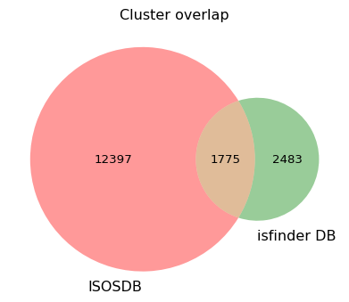
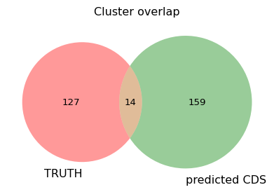

!eris scan ../../data/ecoli/EC958.fasta -a ../../data/ecoli/EC958_genomic_sorted.cds.edit.bed > eris-outputs/eris_anot.tsvWeek 11: Clusering seqences from ISOSDB and ISfinder, Made groud truth of preicted gene
Overview
Daily Log
07-10-2025
- Weekly project meeting
- Tom has pushed changes of eris
- We can try making ground truth of predicted genes, and manually looking
- Cluster the sequences from ISOSDB and ISfinder, see how many or much intersection between those two
- Dimas needs to start drafting the poster and report, focus on EC958
- Important dates:
- This week: finalise analysis (all above)
- 20th October: Draft of poster (comments back by Friday 25th)
- 27th October: Draft of report (comments back by Wednesday 5th Nov)
- 28th October: poster presentation to Jane
- 29th October: poster presentation at SCMB
- 6th November: Seminar presentation (2pm Bris - 3pm Melb)
- 10th November: final report due
09-10-2025
Run eris with annotation file
from collections import defaultdict
is_elements = defaultdict(str)
cds_features = defaultdict(list)
with open("eris-outputs/eris_gfa_shovill_sim.tsv") as output:
head = output.readline()
rows = output.readlines()
for r in rows:
row = r.split("\t")
if row[2] == "mobile_element":
is_elements[row[1]] = row[15]
for r in rows:
row = r.split("\t")
if row[2] == "CDS":
contig = row[3]
start = row[4]
end = row[5]
seq_strand = row[6]
effect = row[12]
location = row[10]
strand = row[11].replace(" ", "_")
is_name = is_elements[row[8]]
cds_features[row[1]]= [contig, start, end, seq_strand, effect, location, strand, is_name]10-10-2025
the goal is to search where are the cds that are might be impated (from eris), how similiar this prediction against truth, in terms of location the IS elements to the information from chromosome sequence
First approach using mapping:
- First I extracted the predicted CDS from eris (GFA) in fasta fomat, in header I added information on what the element effect, location, and nearest IS name
- I got the fasta sequence with useful information, then I mapped them against EC958 chromosome, look where are predicted CDS from draft assembly relative to the chromosome
- Extract the location where the predicted CDS mapped, then I intersect them with “ground truth CDS” with at least 50% intersection
- Those that passed through the fraction threshold, I added them a flank 500 bp each end
- Then I intersect them against IS ground truth
- From there, we can answer the concordance of the IS elements and CDS relationship, are the corsonding IS the same? right?
Extract CDS sequence from Eris
Identify CDS sequence that may be imacted by insertion from Eris, and extract the coding sequence from the gfa file
from eris.io import SeqFile
from eris.seq import Record
the_gfa = SeqFile("../../data/ecoli/assembly-simulated/shovill-outputs/contigs.gfa")
nodes_seq = defaultdict(str)
for entry in the_gfa:
if isinstance(entry, Record):
nodes_seq[entry.id] = entry.seqimport math
def writeFasta(seqname: str, sequence: str) -> str:
"""Write one sequence in FASTA format to a string and return it. This will split the sequence per 60 bp per line.
"""
fasta = ">" + seqname + "\n"
nlines = int(math.ceil((len(sequence) - 1) / 60 + 1))
for i in range(nlines):
lineofseq = "".join(sequence[i * 60 : (i + 1) * 60]) + "\n"
fasta += lineofseq
return fasta
def reverse_complement(sequence: str) -> str:
"""
make reverse complement of the input sequence
"""
result = ""
complement = {"A" : "T", "T": "A", "G": "C", "C": "G"}
for b in sequence:
result += complement[b]
return result[::-1]import re, os
try:
os.remove("cds_gfa_shovill_is.fna")
except FileNotFoundError:
pass
for feat, info in cds_features.items():
name = "|".join([feat, info[0], info[4], info[5], info[6], info[7]])
seq = nodes_seq[info[0]]
# if the feature has minus stran, we reverse complement the sequence
if info[3] == "-1":
seq = reverse_complement(seq)
start, end = int(info[1]), int(info[2])
subseq = str(seq[start:end])
fasta = writeFasta(name, subseq)
with open("cds_gfa_shovill_is.fna", "a") as output:
output.write(fasta)!wc -l ../../data/ecoli/EC958_genomic_sorted.cds.edit.bed # this is cds bed file from NCBI
!grep "^>" cds_gfa_shovill_is.fna | wc -l 5093 ../../data/ecoli/EC958_genomic_sorted.cds.edit.bed
183so there are 5093 CDS in total from chromosome sequence, and 183 that might be impacted by insertions (near identifeied IS)
Let’s search where those 183 cds located in the genome, and are the location with respect of insertion elements similar or no
First, i think we can just map the predicted cds (from eris).. and look where are they, relative to the chromosome, then we can look whether there are annotated IS near them, right? 🤔
map cds from eris to chromosome, using minimap:
# using preset short read, because cds sequences are short
!minimap2 -x sr ../../data/ecoli/EC958.fasta cds_gfa_shovill_is.fna > cds_is_to_chrom.paf[M::mm_idx_gen::0.078*1.10] collected minimizers
[M::mm_idx_gen::0.092*1.36] sorted minimizers
[M::main::0.092*1.36] loaded/built the index for 1 target sequence(s)
[M::mm_mapopt_update::0.093*1.36] mid_occ = 1000
[M::mm_idx_stat] kmer size: 21; skip: 11; is_hpc: 0; #seq: 1
[M::mm_idx_stat::0.098*1.34] distinct minimizers: 834905 (98.89% are singletons); average occurrences: 1.020; average spacing: 6.000; total length: 5109767
[M::worker_pipeline::0.101*1.37] mapped 183 sequences
[M::main] Version: 2.30-r1287
[M::main] CMD: minimap2 -x sr ../../data/ecoli/EC958.fasta cds_gfa_shovill_is.fna
[M::main] Real time: 0.104 sec; CPU: 0.142 sec; Peak RSS: 0.073 GBhow many cds from eris were successfully mapped to chrom sequence?
!wc -l cds_is_to_chrom.paf
!cut -f 1 cds_is_to_chrom.paf | sort | uniq | wc -l 183 cds_is_to_chrom.paf
183all of them, each of them is mapped uniqely..
extract the location information, where are they realtive to the chromosome coordinate and also corresponding eris information (make a bed file)
# 4th field is for query name (cds and coresponding insertion info from eris)
# 5th field is for alignment score from minimap
# 6th strand info from minimap2
!awk -v OFS="\t" '{print $6, $8, $9, $1, $12, $5}' cds_is_to_chrom.paf > cds_is_to_chrom.bed- look intersection between mapped cds here with cds coordinate from the truth (ncbi),
- add flank at both ends for each entries, and instersect them again with IS locations (reanotatated truth). Add flank so that we know how close the cds (predicted from gfa) to the IS elements (from truth chromosome) are
- save into file for checking similarty on the location, strandness, and we can assess how well eris predict the location
# sort the entry
!bedtools sort -i cds_is_to_chrom.bed > cds_is_to_chrom.sorted.bed
# intersect them with known cds, with at least 50% fraction
!bedtools intersect -a cds_is_to_chrom.sorted.bed -b ../../data/ecoli/EC958_genomic_sorted.cds.edit.bed -f 0.5 -wa | bedtools slop -i - -g ec958.genome.size -b 1000 | bedtools intersect -a - -b ../../data/ecoli/ec958_IS.reannotated.sorted.bed -wa -wb > cds_gfa_intersect_IS_truth.bed!cut -f 4 cds_gfa_intersect_IS_truth.bed | sort | uniq | wc -l 125From 183 cds, we have 125 that passed through series of intersection step. Most of them (if not all) did not pass when we intersect them (added with flank 1000 bp at both ends) to IS. Not sure but bedtools subcommand to extend the both flanks is bedtools slop not bedtools flank.
Some predicted CDS that don’t pass the intersection step look like this:


Check on the assignment of element location relative to the CDS. We assess the report come from eris using the ground truth IS and full chromosome.
Eris defines element_location as: Signifies the relative location of the Element from the current context.
So I can check if:
Inside: the predicted CDS is part of truth IS Downstream: the predicted CDS has IS element at its downstream (after the cds) Upstream: the predicted CDS has IS element at its upstream (after the cds) Flanking: the predicted CDS has an IS element overlapping it, but not fully inside.
from collections import defaultdict
cds_elements = defaultdict(str)
with open("cds_gfa_intersect_IS_truth.bed") as entries:
entries = entries.readlines()
for entry in entries:
entry = entry.split("\t")
cds_start = int(entry[1]) + 1000
cds_end = int(entry[2]) - 1000
is_start = int(entry[7])
is_end = int(entry[8])
predicted_location = entry[3].split("|")[3]
is_precited = entry[3].split("|")[-1]
is_truth = entry[9]
predicted_cds_strand = entry[5]
is_strand = entry[-1]
length_cds = cds_end - cds_start
# inside
if predicted_location == "inside":
if entry[3] not in cds_elements:
cds_elements[entry[3]] = "False"
if is_precited == is_truth.split("_")[0]:
if cds_start >= is_start and cds_end <= is_end: # part of the IS hit
cds_elements[entry[3]] = "True"
continue
# downstream
elif predicted_location == "downstream":
if entry[3] not in cds_elements:
cds_elements[entry[3]] = "False"
if predicted_cds_strand == "+":
if is_precited == is_truth.split("_")[0]:
check = max(0, cds_end - is_start)
if check / length_cds < 0.8:
cds_elements[entry[3]] = "True"
continue
elif predicted_cds_strand == "-":
if is_precited == is_truth.split("_")[0]:
check = max(0, is_end - cds_start)
if check / length_cds < 0.8:
cds_elements[entry[3]] = "True"
continue
# upstream
elif predicted_location == "upstream":
if entry[3] not in cds_elements:
cds_elements[entry[3]] = "False"
if predicted_cds_strand == "+":
if is_precited == is_truth.split("_")[0]:
check = max(0, is_end - cds_start)
if check / length_cds < 0.8:
cds_elements[entry[3]] = "True"
continue
elif predicted_cds_strand == "-":
if is_precited == is_truth.split("_")[0]:
check = max(0, cds_end - is_start)
if check / length_cds < 0.8:
cds_elements[entry[3]] = "True"
continue
elif predicted_location == "flanking":
if entry[3] not in cds_elements:
cds_elements[entry[3]] = "False"
overlap = max(0, min(cds_end, is_end) - max(cds_start, is_start))
overlap_fraction = overlap / length_cds
if is_precited == is_truth.split("_")[0]:
if 0.8 <= overlap_fraction < 1:
cds_elements[entry[3]] = "True"
continue
true_count = sum(1 for v in cds_elements.values() if v == "True")
false_count = sum(1 for v in cds_elements.values() if v == "False")
total = len(cds_elements)
for ele, val in cds_elements.items():
print(ele, val)
print(f"Total CDS: {total}")
print(f"Correct assignments: {true_count}")
print(f"Incorrect assignments: {false_count}")
print(f"Accuracy: {true_count / total:.2%}\n")1244700_00882|1244700|-|inside|same_strand|ISEc23 True
1244700_00883|1244700|-|inside|same_strand|ISEc23 True
1244816_01151|1244816|-|inside|same_strand|ISEc23 True
1176191_00082|1176191|-|flanking|opposite_strand|ISEc23 False
1245002_02024|1245002|disrupted|upstream|same_strand|ISCfr4 False
1245002_02025|1245002|-|inside|same_strand|ISCfr4 True
1245002_02026|1245002|-|downstream|same_strand|ISCfr4 False
1245002_02031|1245002|-|inside|opposite_strand|ISSen3 False
1244912_01169|1244912|-|flanking|same_strand|ISEc12 False
1245096_04606|1245096|-|inside|same_strand|ISEc1 True
1015060_00032|1015060|-|inside|same_strand|IS1397 True
1208211_00117|1208211|-|flanking|opposite_strand|IS1397 False
1234872_00176|1234872|-|inside|same_strand|IS1397 True
1241248_00251|1241248|-|inside|same_strand|IS1397 True
1244764_01147|1244764|-|inside|same_strand|IS609 True
832167_00019|832167|-|flanking|opposite_strand|IS609 False
1244458_00450|1244458|disrupted|upstream|opposite_strand|IS609 True
1244458_00486|1244458|-|flanking|same_strand|IS1397 False
1244458_00449|1244458|-|inside|same_strand|IS609 False
1244160_00403|1244160|-|inside|same_strand|IS1397 True
1208964_00119|1208964|-|inside|same_strand|IS1397 True
1216050_00137|1216050|-|inside|same_strand|IS1397 True
1241248_00250|1241248|-|inside|opposite_strand|IS1397 True
1244664_00858|1244664|-|flanking|same_strand|IS1397 False
1244018_00385|1244018|-|downstream|same_strand|IS200C False
1221552_00145|1221552|-|inside|same_strand|IS200C True
1241860_00257|1241860|-|flanking|opposite_strand|IS200C False
1244910_01167|1244910|disrupted|upstream|same_strand|IS200C False
1245062_04536|1245062|-|downstream|opposite_strand|ISEc38 True
1244402_00441|1244402|-|inside|same_strand|IS100kyp True
1244402_00440|1244402|-|inside|same_strand|IS100kyp True
1244402_00445|1244402|-|upstream|same_strand|ISEc20 False
1116087_00050|1116087|-|inside|same_strand|ISEc23 True
1240840_00244|1240840|-|flanking|opposite_strand|ISEc12 False
1221552_00144|1221552|-|inside|same_strand|IS200C True
1245038_03183|1245038|-|flanking|opposite_strand|IS1A False
1245136_04886|1245136|-|flanking|same_strand|IS1A False
1245136_04885|1245136|-|inside|opposite_strand|IS1B False
1245046_03736|1245046|-|flanking|opposite_strand|IS1A False
1245022_02114|1245022|disrupted|downstream|same_strand|MITEEc1 False
1245022_02113|1245022|disrupted|upstream|same_strand|MITEEc1 False
1171599_00078|1171599|-|inside|same_strand|IS1A True
1245138_04887|1245138|-|flanking|same_strand|IS1A False
1236016_00186|1236016|-|flanking|opposite_strand|IS1A False
1208153_00116|1208153|-|inside|same_strand|IS1A True
1244936_01278|1244936|-|flanking|opposite_strand|IS1A False
1244936_01276|1244936|-|downstream|opposite_strand|IS1203 True
1244936_01275|1244936|-|inside|same_strand|IS1203 True
1244936_01274|1244936|-|inside|same_strand|IS1203 True
1243600_00315|1243600|-|inside|same_strand|IS600 False
1243600_00328|1243600|-|inside|same_strand|IS3411 False
1245106_04649|1245106|-|flanking|same_strand|IS1F False
1243600_00316|1243600|disrupted|upstream|same_strand|IS600 False
1243600_00327|1243600|-|inside|same_strand|ISKox3 True
1242602_00264|1242602|-|inside|same_strand|IS30 True
1242602_00265|1242602|-|flanking|opposite_strand|IS600 False
1244674_00860|1244674|-|inside|same_strand|IS682 False
1244674_00861|1244674|-|inside|same_strand|IS682 False
1244674_00862|1244674|-|inside|same_strand|IS682 False
1244674_00878|1244674|-|upstream|opposite_strand|ISEc45 False
1244674_00874|1244674|-|downstream|same_strand|IS2 False
1244674_00873|1244674|-|inside|same_strand|IS2 True
1244674_00872|1244674|-|inside|same_strand|IS2 True
1244674_00871|1244674|disrupted|upstream|same_strand|IS2 False
1244674_00863|1244674|-|upstream|opposite_strand|IS682 True
1244674_00879|1244674|-|inside|same_strand|ISEch14 False
1244674_00880|1244674|-|inside|same_strand|ISEch14 False
1125059_00056|1125059|-|inside|same_strand|ISEc8 False
1240608_00243|1240608|-|inside|same_strand|ISEc22 True
1243212_00271|1243212|-|flanking|same_strand|ISEc22 True
1244994_01721|1244994|-|upstream|same_strand|ISKpn42 False
1244994_01722|1244994|-|inside|same_strand|ISKpn42 False
1244994_01723|1244994|-|inside|same_strand|ISEc10 True
1244994_01724|1244994|-|inside|same_strand|ISEc10 True
1244994_01725|1244994|-|downstream|same_strand|ISEc10 False
1244434_00447|1244434|-|inside|same_strand|ISEc52 True
1206755_00112|1206755|-|upstream|opposite_strand|IS600 False
1245082_04546|1245082|-|inside|same_strand|ISEc52 True
1245080_04545|1245080|-|inside|same_strand|ISEc52 True
1244570_00584|1244570|disrupted|downstream|opposite_strand|IS609 True
1244764_01146|1244764|disrupted|upstream|same_strand|IS609 False
1244706_00887|1244706|-|inside|same_strand|IS1F True
1202947_00109|1202947|-|inside|same_strand|IS1X2 False
1215098_00134|1215098|-|inside|same_strand|IS1F True
1236482_00188|1236482|-|inside|same_strand|IS1F True
1245106_04640|1245106|disrupted|downstream|same_strand|ISSen10 False
1245106_04639|1245106|-|inside|same_strand|ISSen10 True
1245106_04638|1245106|disrupted|upstream|same_strand|ISSen10 False
1002621_00031|1002621|-|flanking|opposite_strand|IS3411 False
1244656_00832|1244656|disrupted|upstream|opposite_strand|IS3411 False
1244656_00833|1244656|-|inside|same_strand|ISEc43 False
1244656_00844|1244656|-|inside|same_strand|ISCro1 True
1244656_00843|1244656|-|upstream|opposite_strand|ISCro1 False
1244656_00845|1244656|-|inside|same_strand|ISCro1 True
1244656_00846|1244656|-|inside|same_strand|ISCro1 True
1244656_00837|1244656|disrupted|upstream|same_strand|ISEc49 False
1245118_04670|1245118|-|flanking|opposite_strand|ISEc23 False
1244700_00884|1244700|-|inside|same_strand|ISEc23 True
1159225_00072|1159225|-|inside|same_strand|ISEc23 True
1245048_03750|1245048|-|flanking|opposite_strand|ISSd1 False
1245048_03746|1245048|-|inside|same_strand|ISEc9 True
1245048_03748|1245048|upregulated|downstream|same_strand|ISEc9 False
1243758_00330|1243758|-|inside|same_strand|ISSd1 False
976171_00026|976171|-|flanking|same_strand|IS600 False
1228204_00159|1228204|-|inside|same_strand|IS600 True
1206755_00111|1206755|-|inside|same_strand|IS600 True
1243586_00314|1243586|-|inside|same_strand|ISEc52 False
1158833_00071|1158833|-|inside|same_strand|IS1F True
1244320_00406|1244320|-|downstream|opposite_strand|ISEc8 True
1244320_00405|1244320|-|inside|same_strand|ISEc8 True
1244320_00407|1244320|-|inside|same_strand|IS1F False
1244320_00408|1244320|-|flanking|opposite_strand|IS1X2 False
1234604_00174|1234604|-|inside|same_strand|ISEc8 True
1235120_00177|1235120|-|flanking|opposite_strand|ISEc8 False
1236644_00191|1236644|-|inside|same_strand|ISEc8 True
1236644_00190|1236644|-|inside|same_strand|ISEc8 True
1236644_00189|1236644|-|inside|same_strand|ISEc8 True
1244742_00933|1244742|-|inside|same_strand|ISEc12 True
1244742_00934|1244742|-|inside|same_strand|ISEc12 True
1245024_02247|1245024|-|downstream|same_strand|IS911 False
1245024_02220|1245024|-|upstream|same_strand|ISSen1 False
1245024_02221|1245024|disrupted|downstream|same_strand|ISSen1 False
1244890_01166|1244890|-|flanking|same_strand|IS1F False
1244638_00699|1244638|-|inside|same_strand|ISEc53 True
1244638_00698|1244638|-|inside|same_strand|ISEc53 True
Total CDS: 125
Correct assignments: 61
Incorrect assignments: 64
Accuracy: 48.80%
We look closer, most of the incorrect assigments mistakenly assigned downstream location to upstream location, and vice versa.
 1244910_01167 has IS element IS200C at its downstream, and 1244018_00385 has IS element IS200C at its upstream
1244910_01167 has IS element IS200C at its downstream, and 1244018_00385 has IS element IS200C at its upstream
but eris says: 1244910_01167|1244910|disrupted|upstream|same_strand|IS200C False 1244018_00385|1244018|-|downstream|same_strand|IS200C False
CDS 1244910_01167 has IS element IS200C at its upstream, 1244018_00385 has IS element IS200C at its downstream.

the ISEc9 lies at the upstream of the CDS, but eris predicted at downstream.
1245048_03748|1245048|upregulated|downstream|same_strand|ISEc9 False

Eris predicted: 1245002_02024|1245002|disrupted|upstream|same_strand|ISCfr4 False 1245002_02025|1245002|-|inside|same_strand|ISCfr4 True 1245002_02026|1245002|-|downstream|same_strand|ISCfr4 False
but: ISCfr4 lies at downstream of 1245002_02024, and it is at upstream 1245002_02026
 Eris predicted ISEc53 at the downstream of the CDS, but it is at its upstream
Eris predicted ISEc53 at the downstream of the CDS, but it is at its upstream
 Eris predicted ISSen10 at the upstream of the CDS 1245106_04638, but it is at downstrem of it.
Eris predicted ISSen10 at the upstream of the CDS 1245106_04638, but it is at downstrem of it.
 Eris also predicted wrong here. It should be: IS2 lies at the downstream of 1244674_00871 and at the upstream of 1244674_00874
Eris also predicted wrong here. It should be: IS2 lies at the downstream of 1244674_00871 and at the upstream of 1244674_00874
Several correct assignments by Eris here:
 1245062_04536|1245062|-|downstream|opposite_strand|ISEc38 True
1245062_04536|1245062|-|downstream|opposite_strand|ISEc38 True
ISEc38 element is at the downstream of CDS 1245062_04536
 1244320_00406|1244320|-|downstream|opposite_strand|ISEc8 True
1244320_00406|1244320|-|downstream|opposite_strand|ISEc8 True
ISEc8 lies at the downstream of CDS 1244320_00406
 1244570_00584|1244570|disrupted|downstream|opposite_strand|IS609 True
1244570_00584|1244570|disrupted|downstream|opposite_strand|IS609 True
Correct as the IS609 elements appear at the downstream of 1244570_00584
Check the entries that don’t pass intersection with IS, in theory they should not be reported for the insertion effect (because the proximity more than 150), no?
 Eris still predicted CDS 1245096_04607 will be disrupted, although it far from the nearest IS element ISec1 (>150 bp) in the full chromosome
Eris still predicted CDS 1245096_04607 will be disrupted, although it far from the nearest IS element ISec1 (>150 bp) in the full chromosome

Eris the detec IS that don’t exist in truth, so they don’t overlap
Summary
- All the exracted predicted CDS from gfa file were succesfully mapped to the reference sequence uniquely.
- All those sequences intersect with at least small fraction with known/truth CDS
- Based on the checking using IGV and phython cod above, I can say:
- Most of the time, eris correctly predicted the CDS are inside the IS
- Most of the time, eris incorrectly predicted between downstream and upstream, confised between two
- Most of the time eris correctly predicted the corresponding IS for each predicted CDS
- Some CDS are missc
12-10-2025
Using clustering MMSEQ2
cluster the ISfinder and ISOSDB using mmseqs2
!cat ../../ISOSDB.V3.fna ../../eris/src/eris/data/IS.fna > combined_ISOSDB_ISfinder.fna
!mmseqs easy-cluster combined_ISOSDB_ISfinder.fna clusterIS tmp --min-seq-id 0.8 -c 0.8 -s 7 --threads 4Look for the intersections
from collections import defaultdict
clusters = defaultdict(list)
with open("clusterIS_cluster.tsv") as entries:
for entry in entries.readlines():
cluster, member = entry.split("\t")
clusters[cluster].append(member)
print(f"There are {len(clusters)} clusters")
# classify clusters
isosdb_only = 0
isfinder_only = 0
both = 0
isosdb_clusters = []
isfinder_clusters = []
both_clusters = []
for cluster_id, members in clusters.items():
has_isosdb = any(m.startswith("ISOSDB") for m in members)
has_isfinder = any(not m.startswith("ISOSDB") for m in members)
if has_isosdb and has_isfinder:
both += 1
both_clusters.append(cluster_id)
elif has_isosdb:
isosdb_only += 1
isosdb_clusters.append(cluster_id)
elif has_isfinder:
isfinder_only += 1
isfinder_clusters.append(cluster_id)
import matplotlib.pyplot as plt
from matplotlib_venn import venn2
# sizes
only_isosdb = len(isosdb_clusters)
only_isfinder = len(isfinder_clusters)
overlap = len(both_clusters)
# Venn diagram
plt.figure(figsize=(5,5))
venn2(subsets=(only_isosdb, only_isfinder, overlap),
set_labels=("ISOSDB", "isfinder DB"))
plt.title("Cluster overlap")
plt.show()
print("Clusters with both ISOSDB and ISfinder:", both)
print("Clusters only ISOSDB:", isosdb_only)
print("Clusters only ISfinder:", isfinder_only)There are 16655 clusters
Clusters with both ISOSDB and ISfinder: 1775
Clusters only ISOSDB: 12397
Clusters only ISfinder: 2483Extract CDS sequence from complete chromosome
we can use seqkit to extract sequence from fasta format
!seqkit subseq --bed ../../data/ecoli/EC958_genomic_sorted.cds.edit.bed ../../data/ecoli/EC958.fasta > cds_chrom_all.fna[INFO] read BED file ... [INFO] 5093 BED features loaded [INFO] create or read FASTA index ... [INFO] read FASTA index from ../../data/ecoli/EC958.fasta.seqkit.fai [INFO] 1 records loaded from ../../data/ecoli/EC958.fasta.seqkit.fai [WARN] sequence () not found in file: ../../data/ecoli/EC958.fasta [WARN] sequence () not found in file: ../../data/ecoli/EC958.fasta
combine with predicted CDS from eris, and run clustering using mmseq2 again
!cat cds_chrom_all.fna cds_gfa_shovill_is.fna > combined_cds_truth_eris.fna
!mmseqs easy-cluster combined_cds_truth_eris.fna clusterCDS tmp --min-seq-id 0.8 -c 0.8 -s 7 --threads 4easy-cluster combined_cds_truth_eris.fna clusterCDS tmp --min-seq-id 0.8 -c 0.8 -s 7 --threads 4 MMseqs Version: 18.8cc5c Substitution matrix aa:blosum62.out,nucl:nucleotide.out Seed substitution matrix aa:VTML80.out,nucl:nucleotide.out Sensitivity 7 k-mer length 0 Target search mode 0 k-score seq:2147483647,prof:2147483647 Alphabet size aa:21,nucl:5 Max sequence length 65535 Max results per query 20 Split database 0 Split mode 2 Split memory limit 0 Coverage threshold 0.8 Coverage mode 0 Compositional bias 1 Compositional bias scale 1 Diagonal scoring true Exact k-mer matching 0 Mask residues 1 Mask residues probability 0.9 Mask lower case residues 0 Mask lower letter repeating N times 0 Minimum diagonal score 15 Selected taxa Include identical seq. id. false Spaced k-mers 1 Preload mode 0 Pseudo count a substitution:1.100,context:1.400 Pseudo count b substitution:4.100,context:5.800 Spaced k-mer pattern Local temporary path Threads 4 Compressed 0 Verbosity 3 Add backtrace false Alignment mode 3 Alignment mode 0 Allow wrapped scoring false E-value threshold 0.001 Seq. id. threshold 0.8 Min alignment length 0 Seq. id. mode 0 Alternative alignments 0 Max reject 2147483647 Max accept 2147483647 Score bias 0 Realign hits false Realign score bias -0.2 Realign max seqs 2147483647 Correlation score weight 0 Gap open cost aa:11,nucl:5 Gap extension cost aa:1,nucl:2 Zdrop 40 Rescore mode 0 Remove hits by seq. id. and coverage false Sort results 0 Cluster mode 0 Max connected component depth 1000 Similarity type 2 Weight file name Cluster Weight threshold 0.9 Single step clustering false Cascaded clustering steps 3 Cluster reassign false Remove temporary files true Force restart with latest tmp false MPI runner k-mers per sequence 21 Scale k-mers per sequence aa:0.000,nucl:0.200 Adjust k-mer length false Shift hash 67 Include only extendable false Skip repeating k-mers false Database type 0 Shuffle input database true Createdb mode 1 Write lookup file 0 Offset of numeric ids 0 Use GPU 0 createdb combined_cds_truth_eris.fna tmp/8267229944546014791/input --createdb-mode 1 --write-lookup 0 --threads 4 Shuffle database cannot be combined with --createdb-mode 1 We recompute with --shuffle 0 Converting sequences Multiline fasta can not be combined with --createdb-mode 0 We recompute with --createdb-mode 1 Time for merging to input_h: 0h 0m 0s 0ms Time for merging to input: 0h 0m 0s 0ms [102] 0s 2ms [203] 0s 2ms [304] 0s 2ms [405] 0s 2ms [506] 0s 2ms [607] 0s 3ms [708] 0s 3ms [809] 0s 3ms [910] 0s 3ms [1011] 0s 3ms [1112] 0s 3ms [1213] 0s 3ms [1314] 0s 4ms [1415] 0s 4ms [1516] 0s 4ms [1617] 0s 4ms [1718] 0s 4ms [1819] 0s 4ms [1920] 0s 4ms [2021] 0s 4ms [2122] 0s 5ms [2223] 0s 5ms [2324] 0s 5ms [2425] 0s 5ms [2526] 0s 5ms [2627] 0s 5ms [2728] 0s 5ms [2829] 0s 6ms [2930] 0s 6ms [3031] 0s 6ms [3132] 0s 6ms [3233] 0s 6ms [3334] 0s 6ms [3435] 0s 6ms [3536] 0s 7ms [3637] 0s 7ms [3738] 0s 7ms [3839] 0s 7ms [3940] 0s 7ms [4041] 0s 7ms [4142] 0s 7ms [4243] 0s 8ms [4344] 0s 8ms [4445] 0s 8ms [4546] 0s 8ms [4647] 0s 8ms [4748] 0s 8ms [4849] 0s 8ms [4950] 0s 9ms [5051] 0s 9ms Time for merging to input_h: 0h 0m 0s 0ms Time for merging to input: 0h 0m 0s 0ms Database type: Nucleotide Time for processing: 0h 0m 0s 16ms Create directory tmp/8267229944546014791/clu_tmp cluster tmp/8267229944546014791/input tmp/8267229944546014791/clu tmp/8267229944546014791/clu_tmp -s 7 --max-seqs 20 -c 0.8 --spaced-kmer-mode 1 --threads 4 --alignment-mode 3 -e 0.001 --min-seq-id 0.8 --remove-tmp-files 1 Set cluster mode SET COVER Set cluster iterations to 3 linclust tmp/8267229944546014791/input tmp/8267229944546014791/clu_tmp/17922176413153297521/clu_redundancy tmp/8267229944546014791/clu_tmp/17922176413153297521/linclust --cluster-mode 0 --max-iterations 1000 --similarity-type 2 --threads 4 --compressed 0 -v 3 --cluster-weight-threshold 0.9 --sub-mat 'aa:blosum62.out,nucl:nucleotide.out' -a 0 --alignment-mode 3 --alignment-output-mode 0 --wrapped-scoring 0 -e 0.001 --min-seq-id 0.8 --min-aln-len 0 --seq-id-mode 0 --alt-ali 0 -c 0.8 --cov-mode 0 --max-seq-len 10000 --comp-bias-corr 0 --comp-bias-corr-scale 1 --max-rejected 2147483647 --max-accept 2147483647 --add-self-matches 0 --db-load-mode 0 --pca substitution:1.100,context:1.400 --pcb substitution:4.100,context:5.800 --score-bias 0 --realign 0 --realign-score-bias -0.2 --realign-max-seqs 2147483647 --corr-score-weight 0 --gap-open aa:11,nucl:5 --gap-extend aa:1,nucl:2 --zdrop 40 --alph-size aa:21,nucl:5 --kmer-per-seq 21 --spaced-kmer-mode 1 --kmer-per-seq-scale aa:0.000,nucl:0.200 --adjust-kmer-len 0 --mask 1 --mask-prob 0.9 --mask-lower-case 0 --mask-n-repeat 0 -k 0 --hash-shift 67 --split-memory-limit 0 --include-only-extendable 0 --ignore-multi-kmer 0 --rescore-mode 0 --filter-hits 0 --sort-results 0 --remove-tmp-files 1 --force-reuse 0 kmermatcher tmp/8267229944546014791/input tmp/8267229944546014791/clu_tmp/17922176413153297521/linclust/8776097215795876468/pref --sub-mat 'aa:blosum62.out,nucl:nucleotide.out' --alph-size aa:21,nucl:5 --min-seq-id 0.8 --kmer-per-seq 21 --spaced-kmer-mode 1 --kmer-per-seq-scale aa:0.000,nucl:0.200 --adjust-kmer-len 0 --mask 1 --mask-prob 0.9 --mask-lower-case 0 --mask-n-repeat 0 --cov-mode 0 -k 0 -c 0.8 --max-seq-len 10000 --hash-shift 67 --split-memory-limit 0 --include-only-extendable 0 --ignore-multi-kmer 0 --threads 4 --compressed 0 -v 3 --cluster-weight-threshold 0.9 kmermatcher tmp/8267229944546014791/input tmp/8267229944546014791/clu_tmp/17922176413153297521/linclust/8776097215795876468/pref --sub-mat 'aa:blosum62.out,nucl:nucleotide.out' --alph-size aa:21,nucl:5 --min-seq-id 0.8 --kmer-per-seq 21 --spaced-kmer-mode 1 --kmer-per-seq-scale aa:0.000,nucl:0.200 --adjust-kmer-len 0 --mask 1 --mask-prob 0.9 --mask-lower-case 0 --mask-n-repeat 0 --cov-mode 0 -k 0 -c 0.8 --max-seq-len 10000 --hash-shift 67 --split-memory-limit 0 --include-only-extendable 0 --ignore-multi-kmer 0 --threads 4 --compressed 0 -v 3 --cluster-weight-threshold 0.9 Database size: 5107 type: Nucleotide Generate k-mers list for 1 split [> ] 0.00% 1 eta - [> ] 1.02% 53 eta 0s [> ] 1.08% 56 eta 0s [> ] 1.04% 54 eta 0s [> ] 1.06% 55 eta 0s [=> ] 2.08% 107 eta 0s [=> ] 2.10% 108 eta 0s [==> ] 3.11% 160 eta 0s [==> ] 3.13% 161 eta 0s [==> ] 4.15% 213 eta 0s [===> ] 5.17% 265 eta 0s [====> ] 6.19% 317 eta 0s [====> ] 7.21% 369 eta 0s [=====> ] 8.23% 421 eta 0s [======> ] 9.24% 473 eta 0s [======> ] 10.26% 525 eta 0s [=======> ] 11.28% 577 eta 0s [=======> ] 12.30% 629 eta 0s [========> ] 13.32% 681 eta 0s [=========> ] 14.34% 733 eta 0s [=========> ] 14.36% 734 eta 0s [=========> ] 15.37% 786 eta 0s [==========> ] 16.39% 838 eta 0s [===========> ] 17.41% 890 eta 0s [===========> ] 18.43% 942 eta 0s [============> ] 19.45% 994 eta 0s [=============> ] 20.47% 1.05K eta 0s [=============> ] 21.48% 1.10K eta 0s [==============> ] 22.50% 1.15K eta 0s [===============> ] 23.52% 1.20K eta 0s [===============> ] 24.54% 1.25K eta 0s [================> ] 25.56% 1.31K eta 0s [=================> ] 26.58% 1.36K eta 0s [=================> ] 27.59% 1.41K eta 0s [==================> ] 28.61% 1.46K eta 0s [===================> ] 29.63% 1.51K eta 0s [===================> ] 30.65% 1.57K eta 0s [====================> ] 31.67% 1.62K eta 0s [=====================> ] 32.69% 1.67K eta 0s [=====================> ] 33.71% 1.72K eta 0s [======================> ] 34.72% 1.77K eta 0s [=======================> ] 35.74% 1.83K eta 0s [=======================> ] 36.76% 1.88K eta 0s [========================> ] 37.78% 1.93K eta 0s [=========================> ] 38.80% 1.98K eta 0s [=========================> ] 39.82% 2.03K eta 0s [==========================> ] 40.83% 2.09K eta 0s [===========================> ] 41.85% 2.14K eta 0s [===========================> ] 42.87% 2.19K eta 0s [============================> ] 43.89% 2.24K eta 0s [=============================> ] 44.91% 2.29K eta 0s [=============================> ] 45.93% 2.35K eta 0s [==============================> ] 46.94% 2.40K eta 0s [==============================> ] 46.96% 2.40K eta 0s [===============================> ] 47.96% 2.45K eta 0s [===============================> ] 49.00% 2.50K eta 0s [===============================> ] 48.98% 2.50K eta 0s [================================> ] 50.00% 2.55K eta 0s [=================================> ] 51.02% 2.61K eta 0s [=================================> ] 52.04% 2.66K eta 0s [==================================> ] 53.06% 2.71K eta 0s [===================================> ] 54.07% 2.76K eta 0s [===================================> ] 55.09% 2.81K eta 0s [===================================> ] 55.11% 2.82K eta 0s [====================================> ] 56.13% 2.87K eta 0s [=====================================> ] 57.15% 2.92K eta 0s [=====================================> ] 58.17% 2.97K eta 0s [======================================> ] 59.19% 3.02K eta 0s [=======================================> ] 60.20% 3.08K eta 0s [=======================================> ] 61.22% 3.13K eta 0s [========================================> ] 62.24% 3.18K eta 0s [=========================================> ] 63.26% 3.23K eta 0s [=========================================> ] 64.28% 3.28K eta 0s [==========================================> ] 65.30% 3.34K eta 0s [==========================================> ] 65.32% 3.34K eta 0s [===========================================> ] 66.33% 3.39K eta 0s [===========================================> ] 67.35% 3.44K eta 0s [============================================> ] 68.37% 3.49K eta 0s [=============================================> ] 69.39% 3.54K eta 0s [=============================================> ] 70.41% 3.60K eta 0s [==============================================> ] 71.43% 3.65K eta 0s [===============================================> ] 72.44% 3.70K eta 0s [===============================================> ] 73.46% 3.75K eta 0s [================================================> ] 74.48% 3.80K eta 0s [=================================================> ] 75.50% 3.86K eta 0s [=================================================> ] 76.52% 3.91K eta 0s [==================================================> ] 77.54% 3.96K eta 0s [===================================================> ] 78.55% 4.01K eta 0s [===================================================> ] 79.57% 4.06K eta 0s [====================================================> ] 80.59% 4.12K eta 0s [=====================================================> ] 81.61% 4.17K eta 0s [=====================================================> ] 82.63% 4.22K eta 0s [======================================================> ] 83.65% 4.27K eta 0s [=======================================================> ] 84.67% 4.32K eta 0s [=======================================================> ] 84.68% 4.32K eta 0s [=======================================================> ] 85.70% 4.38K eta 0s [========================================================> ] 86.72% 4.43K eta 0s [=========================================================> ] 87.74% 4.48K eta 0s [=========================================================> ] 88.76% 4.53K eta 0s [==========================================================> ] 89.78% 4.59K eta 0s [===========================================================> ] 90.80% 4.64K eta 0s [===========================================================> ] 90.81% 4.64K eta 0s [===========================================================> ] 91.83% 4.69K eta 0s [============================================================> ] 92.85% 4.74K eta 0s [=============================================================> ] 93.87% 4.79K eta 0s [=============================================================> ] 94.89% 4.85K eta 0s [==============================================================> ] 95.91% 4.90K eta 0s [===============================================================> ] 96.93% 4.95K eta 0s [===============================================================> ] 97.94% 5.00K eta 0s [================================================================>] 98.96% 5.05K eta 0s [================================================================>] 99.98% 5.11K eta 0s [=================================================================] 100.00% 5.11K 0s 183ms Adjusted k-mer length 17 Sort kmer 0h 0m 0s 33ms Sort by rep. sequence 0h 0m 0s 0ms Time for fill: 0h 0m 0s 0ms Time for merging to pref: 0h 0m 0s 0ms Time for processing: 0h 0m 0s 233ms rescorediagonal tmp/8267229944546014791/input tmp/8267229944546014791/input tmp/8267229944546014791/clu_tmp/17922176413153297521/linclust/8776097215795876468/pref tmp/8267229944546014791/clu_tmp/17922176413153297521/linclust/8776097215795876468/pref_rescore1 --sub-mat 'aa:blosum62.out,nucl:nucleotide.out' --rescore-mode 0 --wrapped-scoring 0 --filter-hits 0 -e 0.001 -c 0.8 -a 0 --cov-mode 0 --min-seq-id 0.8 --min-aln-len 0 --seq-id-mode 0 --add-self-matches 0 --sort-results 0 --db-load-mode 0 --threads 4 --compressed 0 -v 3 [> ] 0.00% 1 eta - [> ] 1.02% 53 eta 0s [=> ] 2.04% 105 eta 0s [=> ] 3.06% 157 eta 0s [==> ] 4.07% 209 eta 0s [> ] 1.08% 56 eta 0s [===> ] 4.66% 239 eta 0s [===> ] 4.68% 240 eta 0s [===> ] 5.70% 292 eta 0s [===> ] 5.72% 293 eta 0s [====> ] 6.74% 345 eta 0s [====> ] 6.76% 346 eta 0s [=====> ] 7.78% 398 eta 0s [=====> ] 7.79% 399 eta 0s [=====> ] 8.81% 451 eta 0s [=====> ] 8.83% 452 eta 0s [======> ] 9.85% 504 eta 0s [======> ] 9.87% 505 eta 0s [=======> ] 10.89% 557 eta 0s [=======> ] 10.91% 558 eta 0s [> ] 1.06% 55 eta 0s [=======> ] 11.42% 584 eta 0s [=======> ] 11.46% 586 eta 0s [=======> ] 11.44% 585 eta 0s [> ] 1.04% 54 eta 0s [=======> ] 12.08% 618 eta 0s [=======> ] 12.14% 621 eta 0s [=======> ] 12.12% 620 eta 0s [=======> ] 12.10% 619 eta 0s [========> ] 13.16% 673 eta 0s [========> ] 13.20% 675 eta 0s [========> ] 13.18% 674 eta 0s [========> ] 13.22% 676 eta 0s [=========> ] 14.24% 728 eta 0s [=========> ] 14.30% 731 eta 0s [=========> ] 14.26% 729 eta 0s [=========> ] 14.28% 730 eta 0s [=========> ] 15.32% 783 eta 0s [=========> ] 15.30% 782 eta 0s [=========> ] 15.35% 785 eta 0s [=========> ] 15.33% 784 eta 0s [==========> ] 16.31% 834 eta 0s [==========> ] 16.37% 837 eta 0s [==========> ] 16.33% 835 eta 0s [===========> ] 17.35% 887 eta 0s [===========> ] 17.39% 889 eta 0s [===========> ] 17.37% 888 eta 0s [===========> ] 17.41% 890 eta 0s [===========> ] 18.43% 942 eta 0s [===========> ] 18.45% 943 eta 0s [============> ] 18.49% 945 eta 0s [============> ] 18.47% 944 eta 0s [============> ] 19.55% 999 eta 0s [============> ] 19.57% 1.00K eta 0s [============> ] 19.53% 998 eta 0s [============> ] 19.51% 997 eta 0s [=============> ] 20.54% 1.05K eta 0s [=============> ] 20.52% 1.05K eta 0s [=============> ] 20.56% 1.05K eta 0s [=============> ] 20.58% 1.05K eta 0s [==============> ] 21.60% 1.10K eta 0s [==============> ] 21.66% 1.11K eta 0s [==============> ] 21.64% 1.11K eta 0s [==============> ] 21.62% 1.11K eta 0s [==============> ] 22.72% 1.16K eta 0s [==============> ] 22.68% 1.16K eta 0s [==============> ] 22.70% 1.16K eta 0s [===============> ] 23.72% 1.21K eta 0s [===============> ] 23.78% 1.22K eta 0s [===============> ] 23.74% 1.21K eta 0s [===============> ] 23.76% 1.21K eta 0s [================> ] 24.77% 1.27K eta 0s [================> ] 24.83% 1.27K eta 0s [================> ] 24.81% 1.27K eta 0s [================> ] 24.79% 1.27K eta 0s [================> ] 25.85% 1.32K eta 0s [================> ] 25.87% 1.32K eta 0s [================> ] 25.89% 1.32K eta 0s [=================> ] 26.93% 1.38K eta 0s [=================> ] 26.97% 1.38K eta 0s [=================> ] 26.95% 1.38K eta 0s [==================> ] 27.97% 1.43K eta 0s [==================> ] 28.01% 1.43K eta 0s [==================> ] 27.99% 1.43K eta 0s [=================> ] 26.91% 1.38K eta 0s [==================> ] 29.01% 1.48K eta 0s [==================> ] 29.02% 1.48K eta 0s [==================> ] 29.04% 1.48K eta 0s [===================> ] 30.02% 1.53K eta 0s [===================> ] 30.06% 1.54K eta 0s [===================> ] 30.08% 1.54K eta 0s [===================> ] 30.04% 1.53K eta 0s [====================> ] 31.06% 1.59K eta 0s [====================> ] 31.12% 1.59K eta 0s [====================> ] 31.10% 1.59K eta 0s [====================> ] 31.08% 1.59K eta 0s [====================> ] 32.14% 1.64K eta 0s [====================> ] 32.12% 1.64K eta 0s [====================> ] 32.16% 1.64K eta 0s [====================> ] 32.18% 1.64K eta 0s [=====================> ] 33.18% 1.70K eta 0s [=====================> ] 33.22% 1.70K eta 0s [=====================> ] 33.20% 1.70K eta 0s [======================> ] 34.21% 1.75K eta 0s [======================> ] 34.23% 1.75K eta 0s [======================> ] 34.25% 1.75K eta 0s [======================> ] 35.27% 1.80K eta 0s [======================> ] 35.29% 1.80K eta 0s [======================> ] 35.31% 1.80K eta 0s [=======================> ] 36.29% 1.85K eta 0s [=======================> ] 36.31% 1.86K eta 0s [=======================> ] 36.33% 1.86K eta 0s [=======================> ] 36.35% 1.86K eta 0s [========================> ] 37.37% 1.91K eta 0s [========================> ] 37.41% 1.91K eta 0s [========================> ] 37.39% 1.91K eta 0s [========================> ] 38.41% 1.96K eta 0s [========================> ] 38.44% 1.96K eta 0s [========================> ] 38.43% 1.96K eta 0s [=========================> ] 39.44% 2.02K eta 0s [=========================> ] 39.48% 2.02K eta 0s [=========================> ] 39.46% 2.02K eta 0s [==========================> ] 40.46% 2.07K eta 0s [==========================> ] 40.52% 2.07K eta 0s [==========================> ] 40.48% 2.07K eta 0s [==========================> ] 40.50% 2.07K eta 0s [==========================> ] 41.52% 2.12K eta 0s [===========================> ] 41.56% 2.12K eta 0s [===========================> ] 41.62% 2.13K eta 0s [===========================> ] 41.66% 2.13K eta 0s [===========================> ] 41.54% 2.12K eta 0s [===========================> ] 41.64% 2.13K eta 0s [===========================> ] 42.56% 2.17K eta 0s [===========================> ] 42.58% 2.17K eta 0s [===========================> ] 42.60% 2.18K eta 0s [============================> ] 43.62% 2.23K eta 0s [============================> ] 43.63% 2.23K eta 0s [=============================> ] 44.67% 2.28K eta 0s [=============================> ] 44.69% 2.28K eta 0s [=============================> ] 44.71% 2.28K eta 0s [=============================> ] 44.65% 2.28K eta 0s [=============================> ] 45.75% 2.34K eta 0s [=============================> ] 45.77% 2.34K eta 0s [=============================> ] 45.73% 2.34K eta 0s [=============================> ] 45.85% 2.34K eta 0s [==============================> ] 46.87% 2.39K eta 0s [=============================> ] 45.87% 2.34K eta 0s [==============================> ] 47.02% 2.40K eta 0s [==============================> ] 46.89% 2.39K eta 0s [==============================> ] 46.91% 2.40K eta 0s [===============================> ] 47.94% 2.45K eta 0s [===============================> ] 47.98% 2.45K eta 0s [===============================> ] 47.92% 2.45K eta 0s [===============================> ] 47.96% 2.45K eta 0s [===============================> ] 48.98% 2.50K eta 0s [===============================> ] 49.00% 2.50K eta 0s [===============================> ] 49.02% 2.50K eta 0s [===============================> ] 49.04% 2.51K eta 0s [================================> ] 50.06% 2.56K eta 0s [================================> ] 50.12% 2.56K eta 0s [================================> ] 50.10% 2.56K eta 0s [================================> ] 50.08% 2.56K eta 0s [=================================> ] 51.14% 2.61K eta 0s [=================================> ] 51.12% 2.61K eta 0s [=================================> ] 51.16% 2.61K eta 0s [=================================> ] 52.17% 2.66K eta 0s [=================================> ] 52.21% 2.67K eta 0s [=================================> ] 52.19% 2.67K eta 0s [=================================> ] 52.23% 2.67K eta 0s [==================================> ] 53.25% 2.72K eta 0s [==================================> ] 53.27% 2.72K eta 0s [==================================> ] 53.31% 2.72K eta 0s [==================================> ] 53.29% 2.72K eta 0s [===================================> ] 54.31% 2.77K eta 0s [===================================> ] 54.35% 2.78K eta 0s [===================================> ] 54.33% 2.78K eta 0s [===================================> ] 54.37% 2.78K eta 0s [===================================> ] 55.33% 2.83K eta 0s [===================================> ] 55.35% 2.83K eta 0s [====================================> ] 55.39% 2.83K eta 0s [===================================> ] 55.37% 2.83K eta 0s [====================================> ] 56.38% 2.88K eta 0s [====================================> ] 56.42% 2.88K eta 0s [====================================> ] 56.40% 2.88K eta 0s [=====================================> ] 57.42% 2.93K eta 0s [=====================================> ] 57.48% 2.94K eta 0s [=====================================> ] 57.46% 2.93K eta 0s [=====================================> ] 57.44% 2.93K eta 0s [======================================> ] 58.48% 2.99K eta 0s [======================================> ] 58.50% 2.99K eta 0s [======================================> ] 58.52% 2.99K eta 0s [======================================> ] 58.54% 2.99K eta 0s [======================================> ] 59.56% 3.04K eta 0s [======================================> ] 59.58% 3.04K eta 0s [======================================> ] 59.60% 3.04K eta 0s [======================================> ] 59.62% 3.05K eta 0s [=======================================> ] 60.63% 3.10K eta 0s [=======================================> ] 60.69% 3.10K eta 0s [=======================================> ] 60.65% 3.10K eta 0s [=======================================> ] 60.67% 3.10K eta 0s [========================================> ] 61.69% 3.15K eta 0s [========================================> ] 61.73% 3.15K eta 0s [========================================> ] 61.71% 3.15K eta 0s [========================================> ] 61.75% 3.15K eta 0s [========================================> ] 62.77% 3.21K eta 0s [========================================> ] 62.83% 3.21K eta 0s [========================================> ] 62.79% 3.21K eta 0s [========================================> ] 62.81% 3.21K eta 0s [=========================================> ] 63.83% 3.26K eta 0s [=========================================> ] 63.85% 3.26K eta 0s [=========================================> ] 63.87% 3.26K eta 0s [=========================================> ] 63.89% 3.26K eta 0s [==========================================> ] 64.90% 3.32K eta 0s [==========================================> ] 64.94% 3.32K eta 0s [==========================================> ] 64.92% 3.32K eta 0s [==========================================> ] 64.96% 3.32K eta 0s [==========================================> ] 65.98% 3.37K eta 0s [==========================================> ] 66.02% 3.37K eta 0s [==========================================> ] 66.00% 3.37K eta 0s [===========================================> ] 67.02% 3.42K eta 0s [===========================================> ] 67.04% 3.42K eta 0s [===========================================> ] 67.06% 3.42K eta 0s [============================================> ] 68.08% 3.48K eta 0s [============================================> ] 68.12% 3.48K eta 0s [===========================================> ] 67.08% 3.43K eta 0s [============================================> ] 68.19% 3.48K eta 0s [============================================> ] 68.23% 3.48K eta 0s [============================================> ] 68.10% 3.48K eta 0s [============================================> ] 68.21% 3.48K eta 0s [=============================================> ] 69.23% 3.54K eta 0s [=============================================> ] 69.25% 3.54K eta 0s [=============================================> ] 70.31% 3.59K eta 0s [=============================================> ] 70.25% 3.59K eta 0s [=============================================> ] 70.27% 3.59K eta 0s [=============================================> ] 70.29% 3.59K eta 0s [==============================================> ] 71.31% 3.64K eta 0s [==============================================> ] 71.35% 3.64K eta 0s [==============================================> ] 71.33% 3.64K eta 0s [===============================================> ] 72.35% 3.69K eta 0s [===============================================> ] 72.41% 3.70K eta 0s [===============================================> ] 72.37% 3.70K eta 0s [===============================================> ] 72.39% 3.70K eta 0s [===============================================> ] 73.44% 3.75K eta 0s [===============================================> ] 73.40% 3.75K eta 0s [===============================================> ] 73.38% 3.75K eta 0s [===============================================> ] 73.42% 3.75K eta 0s [================================================> ] 74.44% 3.80K eta 0s [================================================> ] 74.50% 3.81K eta 0s [================================================> ] 74.46% 3.80K eta 0s [================================================> ] 74.48% 3.80K eta 0s [=================================================> ] 75.52% 3.86K eta 0s [=================================================> ] 75.56% 3.86K eta 0s [=================================================> ] 75.50% 3.86K eta 0s [=================================================> ] 76.58% 3.91K eta 0s [=================================================> ] 75.54% 3.86K eta 0s [=================================================> ] 76.67% 3.92K eta 0s [=================================================> ] 76.71% 3.92K eta 0s [=================================================> ] 76.54% 3.91K eta 0s [=================================================> ] 76.69% 3.92K eta 0s [==================================================> ] 77.56% 3.96K eta 0s [==================================================> ] 77.58% 3.96K eta 0s [==================================================> ] 77.59% 3.96K eta 0s [===================================================> ] 78.61% 4.01K eta 0s [===================================================> ] 78.63% 4.02K eta 0s [===================================================> ] 78.65% 4.02K eta 0s [===================================================> ] 78.67% 4.02K eta 0s [===================================================> ] 79.69% 4.07K eta 0s [===================================================> ] 79.71% 4.07K eta 0s [===================================================> ] 79.75% 4.07K eta 0s [===================================================> ] 79.73% 4.07K eta 0s [====================================================> ] 80.75% 4.12K eta 0s [====================================================> ] 80.79% 4.13K eta 0s [====================================================> ] 80.81% 4.13K eta 0s [====================================================> ] 80.77% 4.12K eta 0s [=====================================================> ] 81.88% 4.18K eta 0s [=====================================================> ] 81.83% 4.18K eta 0s [=====================================================> ] 81.84% 4.18K eta 0s [=====================================================> ] 81.86% 4.18K eta 0s [=====================================================> ] 82.88% 4.23K eta 0s [=====================================================> ] 82.94% 4.24K eta 0s [=====================================================> ] 82.92% 4.24K eta 0s [=====================================================> ] 82.90% 4.23K eta 0s [======================================================> ] 83.92% 4.29K eta 0s [======================================================> ] 83.98% 4.29K eta 0s [======================================================> ] 83.96% 4.29K eta 0s [=======================================================> ] 85.04% 4.34K eta 0s [=======================================================> ] 85.00% 4.34K eta 0s [======================================================> ] 83.94% 4.29K eta 0s [=======================================================> ] 85.19% 4.35K eta 0s [=======================================================> ] 85.23% 4.35K eta 0s [=======================================================> ] 85.02% 4.34K eta 0s [=======================================================> ] 86.04% 4.39K eta 0s [=======================================================> ] 86.08% 4.40K eta 0s [=======================================================> ] 85.21% 4.35K eta 0s [========================================================> ] 86.23% 4.40K eta 0s [========================================================> ] 86.25% 4.41K eta 0s [========================================================> ] 86.27% 4.41K eta 0s [=======================================================> ] 86.06% 4.39K eta 0s [========================================================> ] 87.07% 4.45K eta 0s [========================================================> ] 87.11% 4.45K eta 0s [========================================================> ] 87.09% 4.45K eta 0s [========================================================> ] 87.13% 4.45K eta 0s [=========================================================> ] 88.15% 4.50K eta 0s [=========================================================> ] 88.17% 4.50K eta 0s [=========================================================> ] 88.21% 4.51K eta 0s [=========================================================> ] 89.17% 4.55K eta 0s [=========================================================> ] 89.19% 4.55K eta 0s [=========================================================> ] 89.21% 4.56K eta 0s [=========================================================> ] 88.19% 4.50K eta 0s [==========================================================> ] 89.50% 4.57K eta 0s [==========================================================> ] 89.54% 4.57K eta 0s [==========================================================> ] 89.56% 4.57K eta 0s [==========================================================> ] 89.52% 4.57K eta 0s [==========================================================> ] 90.54% 4.62K eta 0s [==========================================================> ] 90.58% 4.63K eta 0s [==========================================================> ] 90.56% 4.62K eta 0s [===========================================================> ] 91.58% 4.68K eta 0s [===========================================================> ] 91.60% 4.68K eta 0s [===========================================================> ] 91.64% 4.68K eta 0s [===========================================================> ] 91.62% 4.68K eta 0s [============================================================> ] 92.64% 4.73K eta 0s [============================================================> ] 92.69% 4.73K eta 0s [============================================================> ] 92.68% 4.73K eta 0s [============================================================> ] 92.66% 4.73K eta 0s [============================================================> ] 93.67% 4.78K eta 0s [============================================================> ] 93.73% 4.79K eta 0s [============================================================> ] 93.71% 4.79K eta 0s [============================================================> ] 93.69% 4.78K eta 0s [=============================================================> ] 94.79% 4.84K eta 0s [=============================================================> ] 94.73% 4.84K eta 0s [=============================================================> ] 94.75% 4.84K eta 0s [=============================================================> ] 94.77% 4.84K eta 0s [==============================================================> ] 95.79% 4.89K eta 0s [==============================================================> ] 95.83% 4.89K eta 0s [==============================================================> ] 95.85% 4.89K eta 0s [==============================================================> ] 95.81% 4.89K eta 0s [==============================================================> ] 96.83% 4.95K eta 0s [==============================================================> ] 96.89% 4.95K eta 0s [==============================================================> ] 96.85% 4.95K eta 0s [===============================================================> ] 97.94% 5.00K eta 0s [===============================================================> ] 97.90% 5.00K eta 0s [===============================================================> ] 97.92% 5.00K eta 0s [==============================================================> ] 96.87% 4.95K eta 0s [===============================================================> ] 98.06% 5.01K eta 0s [===============================================================> ] 98.12% 5.01K eta 0s [===============================================================> ] 98.08% 5.01K eta 0s [===============================================================> ] 98.10% 5.01K eta 0s [================================================================>] 99.12% 5.06K eta 0s [================================================================>] 99.16% 5.06K eta 0s [================================================================>] 99.18% 5.07K eta 0s [================================================================>] 99.14% 5.06K eta 0s [=================================================================] 100.00% 5.11K 0s 5ms Time for merging to pref_rescore1: 0h 0m 0s 1ms Time for processing: 0h 0m 0s 17ms clust tmp/8267229944546014791/input tmp/8267229944546014791/clu_tmp/17922176413153297521/linclust/8776097215795876468/pref_rescore1 tmp/8267229944546014791/clu_tmp/17922176413153297521/linclust/8776097215795876468/pre_clust --cluster-mode 0 --max-iterations 1000 --similarity-type 2 --threads 4 --compressed 0 -v 3 --cluster-weight-threshold 0.9 Clustering mode: Set Cover [> ] 1.04% 54 eta 0s [=> ] 2.06% 106 eta 0s [=> ] 3.07% 158 eta 0s [==> ] 4.09% 210 eta 0s [> ] 1.06% 55 eta 0s [===> ] 5.11% 262 eta 0s [===> ] 5.13% 263 eta 0s [====> ] 6.17% 316 eta 0s [===> ] 6.15% 315 eta 0s [> ] 0.00% 1 eta - [====> ] 7.17% 367 eta 0s [====> ] 7.21% 369 eta 0s [====> ] 7.19% 368 eta 0s [=====> ] 8.26% 423 eta 0s [=====> ] 8.23% 421 eta 0s [=====> ] 8.25% 422 eta 0s [======> ] 9.24% 473 eta 0s [======> ] 9.28% 475 eta 0s [======> ] 9.26% 474 eta 0s [======> ] 10.28% 526 eta 0s [======> ] 10.30% 527 eta 0s [======> ] 10.32% 528 eta 0s [=======> ] 11.30% 578 eta 0s [> ] 1.02% 53 eta 0s [========> ] 12.34% 631 eta 0s [=======> ] 11.32% 579 eta 0s [========> ] 12.32% 630 eta 0s [========> ] 12.57% 643 eta 0s [========> ] 12.55% 642 eta 0s [=======> ] 11.34% 580 eta 0s [========> ] 12.98% 664 eta 0s [========> ] 13.34% 682 eta 0s [=========> ] 14.36% 734 eta 0s [=========> ] 14.38% 735 eta 0s [========> ] 13.36% 683 eta 0s [==========> ] 15.41% 788 eta 0s [========> ] 13.00% 665 eta 0s [==========> ] 15.61% 798 eta 0s [==========> ] 15.63% 799 eta 0s [==========> ] 15.39% 787 eta 0s [==========> ] 16.41% 839 eta 0s [==========> ] 16.45% 841 eta 0s [==========> ] 16.47% 842 eta 0s [==========> ] 16.43% 840 eta 0s [===========> ] 17.45% 892 eta 0s [===========> ] 17.49% 894 eta 0s [===========> ] 17.51% 895 eta 0s [============> ] 18.55% 948 eta 0s [============> ] 18.53% 947 eta 0s [============> ] 18.66% 954 eta 0s [============> ] 18.68% 955 eta 0s [===========> ] 17.47% 893 eta 0s [============> ] 19.37% 990 eta 0s [============> ] 19.39% 991 eta 0s [============> ] 19.41% 992 eta 0s [=============> ] 20.41% 1.04K eta 0s [=============> ] 20.39% 1.04K eta 0s [=============> ] 21.43% 1.10K eta 0s [=============> ] 21.46% 1.10K eta 0s [=============> ] 20.43% 1.04K eta 0s [=============> ] 21.45% 1.10K eta 0s [==============> ] 22.52% 1.15K eta 0s [==============> ] 22.50% 1.15K eta 0s [===============> ] 23.52% 1.20K eta 0s [===============> ] 23.54% 1.20K eta 0s [==============> ] 22.48% 1.15K eta 0s [===============> ] 23.56% 1.20K eta 0s [===============> ] 24.56% 1.25K eta 0s [===============> ] 24.58% 1.26K eta 0s [===============> ] 24.60% 1.26K eta 0s [================> ] 25.60% 1.31K eta 0s [================> ] 25.64% 1.31K eta 0s [================> ] 24.62% 1.26K eta 0s [================> ] 26.01% 1.33K eta 0s [================> ] 25.62% 1.31K eta 0s [================> ] 26.05% 1.33K eta 0s [================> ] 26.03% 1.33K eta 0s [=================> ] 26.64% 1.36K eta 0s [=================> ] 26.65% 1.36K eta 0s [=================> ] 27.26% 1.39K eta 0s [=================> ] 27.07% 1.38K eta 0s [==================> ] 28.10% 1.44K eta 0s [==================> ] 28.12% 1.44K eta 0s [==================> ] 28.08% 1.43K eta 0s [==================> ] 29.12% 1.49K eta 0s [=================> ] 27.28% 1.39K eta 0s [==================> ] 29.10% 1.49K eta 0s [===================> ] 30.14% 1.54K eta 0s [===================> ] 30.16% 1.54K eta 0s [===================> ] 30.12% 1.54K eta 0s [====================> ] 31.14% 1.59K eta 0s [====================> ] 31.16% 1.59K eta 0s [==================> ] 29.14% 1.49K eta 0s [====================> ] 31.18% 1.59K eta 0s [====================> ] 32.20% 1.64K eta 0s [====================> ] 32.18% 1.64K eta 0s [====================> ] 32.22% 1.65K eta 0s [=====================> ] 32.39% 1.65K eta 0s [=====================> ] 32.43% 1.66K eta 0s [=====================> ] 32.41% 1.66K eta 0s [=====================> ] 33.45% 1.71K eta 0s [=====================> ] 33.41% 1.71K eta 0s [=====================> ] 33.47% 1.71K eta 0s [======================> ] 34.51% 1.76K eta 0s [======================> ] 34.53% 1.76K eta 0s [=====================> ] 33.43% 1.71K eta 0s [======================> ] 34.49% 1.76K eta 0s [======================> ] 35.23% 1.80K eta 0s [======================> ] 35.21% 1.80K eta 0s [=======================> ] 36.23% 1.85K eta 0s [=======================> ] 36.27% 1.85K eta 0s [=======================> ] 36.29% 1.85K eta 0s [=======================> ] 36.25% 1.85K eta 0s [========================> ] 37.31% 1.91K eta 0s [========================> ] 37.25% 1.90K eta 0s [========================> ] 37.29% 1.90K eta 0s [========================> ] 37.27% 1.90K eta 0s [========================> ] 38.31% 1.96K eta 0s [========================> ] 38.33% 1.96K eta 0s [========================> ] 38.35% 1.96K eta 0s [========================> ] 38.37% 1.96K eta 0s [=========================> ] 39.37% 2.01K eta 0s [=========================> ] 39.42% 2.01K eta 0s [=========================> ] 39.40% 2.01K eta 0s [==========================> ] 40.42% 2.07K eta 0s [==========================> ] 40.46% 2.07K eta 0s [==========================> ] 40.44% 2.07K eta 0s [==========================> ] 41.46% 2.12K eta 0s [=========================> ] 39.39% 2.01K eta 0s [===========================> ] 42.05% 2.15K eta 0s [==========================> ] 41.48% 2.12K eta 0s [===========================> ] 42.07% 2.15K eta 0s [===========================> ] 42.52% 2.17K eta 0s [===========================> ] 42.50% 2.17K eta 0s [============================> ] 43.54% 2.22K eta 0s [============================> ] 43.52% 2.22K eta 0s [============================> ] 43.56% 2.22K eta 0s [============================> ] 44.58% 2.28K eta 0s [==========================> ] 41.50% 2.12K eta 0s [=============================> ] 45.24% 2.31K eta 0s [============================> ] 44.59% 2.28K eta 0s [=============================> ] 45.26% 2.31K eta 0s [=============================> ] 45.61% 2.33K eta 0s [============================> ] 44.61% 2.28K eta 0s [==============================> ] 46.63% 2.38K eta 0s [=============================> ] 45.63% 2.33K eta 0s [==============================> ] 46.65% 2.38K eta 0s [==============================> ] 47.49% 2.43K eta 0s [==============================> ] 46.28% 2.36K eta 0s [==============================> ] 47.53% 2.43K eta 0s [===============================> ] 48.30% 2.47K eta 0s [===============================> ] 48.55% 2.48K eta 0s [===============================> ] 48.28% 2.47K eta 0s [===============================> ] 48.57% 2.48K eta 0s [================================> ] 49.57% 2.53K eta 0s [================================> ] 49.61% 2.53K eta 0s [==============================> ] 47.51% 2.43K eta 0s [================================> ] 49.59% 2.53K eta 0s [================================> ] 49.94% 2.55K eta 0s [================================> ] 49.96% 2.55K eta 0s [=================================> ] 50.98% 2.60K eta 0s [=================================> ] 51.00% 2.61K eta 0s [=================================> ] 51.02% 2.61K eta 0s [=================================> ] 52.04% 2.66K eta 0s [=================================> ] 52.08% 2.66K eta 0s [==================================> ] 53.06% 2.71K eta 0s [==================================> ] 53.07% 2.71K eta 0s [=================================> ] 52.06% 2.66K eta 0s [==================================> ] 53.72% 2.74K eta 0s [==================================> ] 53.74% 2.74K eta 0s [===================================> ] 54.15% 2.77K eta 0s [===================================> ] 55.17% 2.82K eta 0s [===================================> ] 55.19% 2.82K eta 0s [===================================> ] 55.21% 2.82K eta 0s [==================================> ] 53.76% 2.75K eta 0s [====================================> ] 56.23% 2.87K eta 0s [====================================> ] 56.25% 2.87K eta 0s [====================================> ] 56.27% 2.87K eta 0s [=====================================> ] 57.29% 2.93K eta 0s [=====================================> ] 57.32% 2.93K eta 0s [=====================================> ] 57.31% 2.93K eta 0s [====================================> ] 56.29% 2.88K eta 0s [=====================================> ] 58.32% 2.98K eta 0s [=====================================> ] 58.34% 2.98K eta 0s [=====================================> ] 58.36% 2.98K eta 0s [======================================> ] 59.38% 3.03K eta 0s [======================================> ] 59.42% 3.04K eta 0s [======================================> ] 59.40% 3.03K eta 0s [=======================================> ] 60.42% 3.09K eta 0s [=======================================> ] 60.40% 3.09K eta 0s [=======================================> ] 60.44% 3.09K eta 0s [=======================================> ] 61.46% 3.14K eta 0s [=======================================> ] 61.50% 3.14K eta 0s [=======================================> ] 61.48% 3.14K eta 0s [========================================> ] 62.51% 3.19K eta 0s [========================================> ] 62.53% 3.19K eta 0s [========================================> ] 62.57% 3.20K eta 0s [=========================================> ] 63.55% 3.25K eta 0s [=========================================> ] 63.53% 3.24K eta 0s [=========================================> ] 63.57% 3.25K eta 0s [========================================> ] 62.55% 3.19K eta 0s [==========================================> ] 64.63% 3.30K eta 0s [==========================================> ] 64.65% 3.30K eta 0s [=========================================> ] 64.61% 3.30K eta 0s [=========================================> ] 64.59% 3.30K eta 0s [==========================================> ] 65.63% 3.35K eta 0s [==========================================> ] 65.61% 3.35K eta 0s [==========================================> ] 65.65% 3.35K eta 0s [==========================================> ] 65.67% 3.35K eta 0s [===========================================> ] 66.73% 3.41K eta 0s [===========================================> ] 66.69% 3.41K eta 0s [===========================================> ] 66.67% 3.40K eta 0s [===========================================> ] 66.71% 3.41K eta 0s [============================================> ] 67.72% 3.46K eta 0s [============================================> ] 67.74% 3.46K eta 0s [===========================================> ] 67.69% 3.46K eta 0s [============================================> ] 67.70% 3.46K eta 0s [============================================> ] 68.72% 3.51K eta 0s [============================================> ] 68.74% 3.51K eta 0s [============================================> ] 68.76% 3.51K eta 0s [=============================================> ] 69.80% 3.57K eta 0s [============================================> ] 68.78% 3.51K eta 0s [=============================================> ] 69.76% 3.56K eta 0s [=============================================> ] 69.88% 3.57K eta 0s [=============================================> ] 69.86% 3.57K eta 0s [==============================================> ] 70.88% 3.62K eta 0s [=============================================> ] 69.78% 3.56K eta 0s [==============================================> ] 70.90% 3.62K eta 0s [==============================================> ] 71.93% 3.67K eta 0s [==============================================> ] 71.95% 3.67K eta 0s [==============================================> ] 71.90% 3.67K eta 0s [===============================================> ] 72.99% 3.73K eta 0s [===============================================> ] 72.97% 3.73K eta 0s [==============================================> ] 71.92% 3.67K eta 0s [===============================================> ] 72.95% 3.73K eta 0s [===============================================> ] 73.80% 3.77K eta 0s [===============================================> ] 73.78% 3.77K eta 0s [===============================================> ] 73.83% 3.77K eta 0s [===============================================> ] 73.82% 3.77K eta 0s [================================================> ] 74.87% 3.82K eta 0s [================================================> ] 74.91% 3.83K eta 0s [================================================> ] 74.89% 3.83K eta 0s [================================================> ] 74.85% 3.82K eta 0s [=================================================> ] 75.91% 3.88K eta 0s [=================================================> ] 75.93% 3.88K eta 0s [=================================================> ] 75.89% 3.88K eta 0s [==================================================> ] 76.93% 3.93K eta 0s [=================================================> ] 76.91% 3.93K eta 0s [==================================================> ] 76.95% 3.93K eta 0s [==================================================> ] 77.54% 3.96K eta 0s [==================================================> ] 77.52% 3.96K eta 0s [==================================================> ] 77.99% 3.98K eta 0s [==================================================> ] 77.97% 3.98K eta 0s [===================================================> ] 78.55% 4.01K eta 0s [===================================================> ] 78.54% 4.01K eta 0s [===================================================> ] 79.02% 4.04K eta 0s [===================================================> ] 79.01% 4.03K eta 0s [====================================================> ] 80.02% 4.09K eta 0s [====================================================> ] 80.04% 4.09K eta 0s [====================================================> ] 80.06% 4.09K eta 0s [====================================================> ] 80.08% 4.09K eta 0s [====================================================> ] 81.06% 4.14K eta 0s [====================================================> ] 81.08% 4.14K eta 0s [====================================================> ] 81.10% 4.14K eta 0s [====================================================> ] 81.12% 4.14K eta 0s [=====================================================> ] 82.14% 4.20K eta 0s [=====================================================> ] 82.10% 4.19K eta 0s [=====================================================> ] 82.12% 4.19K eta 0s [======================================================> ] 83.14% 4.25K eta 0s [======================================================> ] 83.16% 4.25K eta 0s [======================================================> ] 83.12% 4.24K eta 0s [======================================================> ] 83.18% 4.25K eta 0s [======================================================> ] 84.20% 4.30K eta 0s [======================================================> ] 84.14% 4.30K eta 0s [======================================================> ] 84.18% 4.30K eta 0s [======================================================> ] 84.16% 4.30K eta 0s [=======================================================> ] 85.19% 4.35K eta 0s [=======================================================> ] 85.21% 4.35K eta 0s [=======================================================> ] 85.23% 4.35K eta 0s [=======================================================> ] 85.33% 4.36K eta 0s [=======================================================> ] 85.35% 4.36K eta 0s [=======================================================> ] 85.37% 4.36K eta 0s [========================================================> ] 86.37% 4.41K eta 0s [========================================================> ] 86.39% 4.41K eta 0s [========================================================> ] 86.41% 4.41K eta 0s [========================================================> ] 86.43% 4.41K eta 0s [========================================================> ] 87.47% 4.47K eta 0s [========================================================> ] 87.49% 4.47K eta 0s [========================================================> ] 87.45% 4.47K eta 0s [========================================================> ] 87.41% 4.46K eta 0s [=========================================================> ] 88.50% 4.52K eta 0s [=========================================================> ] 88.54% 4.52K eta 0s [=========================================================> ] 88.52% 4.52K eta 0s [=========================================================> ] 88.48% 4.52K eta 0s [==========================================================> ] 89.52% 4.57K eta 0s [==========================================================> ] 89.54% 4.57K eta 0s [==========================================================> ] 89.56% 4.57K eta 0s [==========================================================> ] 90.60% 4.63K eta 0s [==========================================================> ] 89.58% 4.57K eta 0s [==========================================================> ] 90.58% 4.63K eta 0s [==========================================================> ] 90.68% 4.63K eta 0s [==========================================================> ] 90.66% 4.63K eta 0s [==========================================================> ] 90.56% 4.62K eta 0s [===========================================================> ] 91.72% 4.68K eta 0s [===========================================================> ] 91.68% 4.68K eta 0s [===========================================================> ] 91.74% 4.68K eta 0s [===========================================================> ] 91.70% 4.68K eta 0s [============================================================> ] 92.71% 4.74K eta 0s [============================================================> ] 92.73% 4.74K eta 0s [============================================================> ] 92.75% 4.74K eta 0s [============================================================> ] 93.75% 4.79K eta 0s [============================================================> ] 93.79% 4.79K eta 0s [============================================================> ] 93.77% 4.79K eta 0s [=============================================================> ] 94.81% 4.84K eta 0s [============================================================> ] 92.77% 4.74K eta 0s [==============================================================> ] 95.53% 4.88K eta 0s [=============================================================> ] 94.83% 4.84K eta 0s [==============================================================> ] 95.55% 4.88K eta 0s [==============================================================> ] 95.87% 4.90K eta 0s [==============================================================> ] 95.85% 4.89K eta 0s [==============================================================> ] 96.89% 4.95K eta 0s [==============================================================> ] 96.57% 4.93K eta 0s [===============================================================> ] 96.98% 4.95K eta 0s [===============================================================> ] 97.00% 4.95K eta 0s [=============================================================> ] 94.85% 4.84K eta 0s [===============================================================> ] 98.04% 5.01K eta 0s [===============================================================> ] 98.02% 5.01K eta 0s [================================================================>] 99.04% 5.06K eta 0s [=================================================================] 100.00% 5.11K 0s 5ms Sort entries Find missing connections Found 219 new connections. Reconstruct initial order [> ] 0.00% 1 eta - [> ] 1.06% 55 eta 0s [> ] 1.04% 54 eta 0s [> ] 1.02% 53 eta 0s [=> ] 2.04% 105 eta 0s [=> ] 2.08% 107 eta 0s [=> ] 2.06% 106 eta 0s [=> ] 3.07% 158 eta 0s [==> ] 3.09% 159 eta 0s [==> ] 3.11% 160 eta 0s [==> ] 4.11% 211 eta 0s [==> ] 4.13% 212 eta 0s [> ] 1.08% 56 eta 0s [===> ] 5.15% 264 eta 0s [===> ] 5.19% 266 eta 0s [===> ] 5.17% 265 eta 0s [==> ] 4.09% 210 eta 0s [====> ] 6.19% 317 eta 0s [====> ] 6.23% 319 eta 0s [====> ] 6.21% 318 eta 0s [====> ] 7.25% 371 eta 0s [====> ] 7.29% 373 eta 0s [====> ] 7.27% 372 eta 0s [=====> ] 8.32% 426 eta 0s [=====> ] 8.30% 425 eta 0s [=====> ] 8.46% 433 eta 0s [=====> ] 8.48% 434 eta 0s [======> ] 9.46% 484 eta 0s [======> ] 9.44% 483 eta 0s [======> ] 9.42% 482 eta 0s [======> ] 10.44% 534 eta 0s [======> ] 10.46% 535 eta 0s [======> ] 9.48% 485 eta 0s [=======> ] 11.44% 585 eta 0s [=======> ] 11.46% 586 eta 0s [======> ] 10.48% 536 eta 0s [=======> ] 11.97% 612 eta 0s [=======> ] 11.99% 613 eta 0s [=======> ] 12.01% 614 eta 0s [=======> ] 11.42% 584 eta 0s [========> ] 13.02% 666 eta 0s [========> ] 13.06% 668 eta 0s [========> ] 13.04% 667 eta 0s [=========> ] 14.08% 720 eta 0s [=========> ] 14.12% 722 eta 0s [=========> ] 15.10% 772 eta 0s [=========> ] 15.12% 773 eta 0s [========> ] 13.08% 669 eta 0s [=========> ] 14.10% 721 eta 0s [==========> ] 15.75% 805 eta 0s [==========> ] 15.77% 806 eta 0s [==========> ] 15.73% 804 eta 0s [==========> ] 16.78% 858 eta 0s [==========> ] 16.80% 859 eta 0s [==========> ] 16.82% 860 eta 0s [===========> ] 17.84% 912 eta 0s [===========> ] 17.86% 913 eta 0s [===========> ] 17.88% 914 eta 0s [============> ] 18.90% 966 eta 0s [============> ] 18.86% 964 eta 0s [============> ] 18.92% 967 eta 0s [==========> ] 15.79% 807 eta 0s [============> ] 19.94% 1.02K eta 0s [============> ] 19.98% 1.02K eta 0s [============> ] 19.96% 1.02K eta 0s [============> ] 20.00% 1.02K eta 0s [=============> ] 21.03% 1.08K eta 0s [=============> ] 21.05% 1.08K eta 0s [=============> ] 21.01% 1.07K eta 0s [==============> ] 22.11% 1.13K eta 0s [==============> ] 22.09% 1.13K eta 0s [==============> ] 22.54% 1.15K eta 0s [==============> ] 22.56% 1.15K eta 0s [==============> ] 22.07% 1.13K eta 0s [===============> ] 23.58% 1.21K eta 0s [===============> ] 23.64% 1.21K eta 0s [===============> ] 23.62% 1.21K eta 0s [===============> ] 23.60% 1.21K eta 0s [================> ] 24.62% 1.26K eta 0s [================> ] 24.64% 1.26K eta 0s [================> ] 24.66% 1.26K eta 0s [================> ] 24.68% 1.26K eta 0s [================> ] 25.68% 1.31K eta 0s [================> ] 25.66% 1.31K eta 0s [================> ] 25.64% 1.31K eta 0s [=================> ] 26.18% 1.34K eta 0s [=================> ] 26.22% 1.34K eta 0s [=================> ] 26.20% 1.34K eta 0s [=================> ] 26.24% 1.34K eta 0s [=================> ] 27.22% 1.39K eta 0s [=================> ] 27.28% 1.39K eta 0s [=================> ] 27.24% 1.39K eta 0s [=================> ] 27.26% 1.39K eta 0s [==================> ] 28.26% 1.44K eta 0s [==================> ] 28.28% 1.45K eta 0s [==================> ] 28.30% 1.45K eta 0s [==================> ] 28.32% 1.45K eta 0s [===================> ] 29.34% 1.50K eta 0s [===================> ] 29.36% 1.50K eta 0s [===================> ] 29.40% 1.50K eta 0s [===================> ] 29.38% 1.50K eta 0s [===================> ] 30.40% 1.55K eta 0s [===================> ] 30.43% 1.55K eta 0s [===================> ] 30.45% 1.56K eta 0s [===================> ] 30.42% 1.55K eta 0s [====================> ] 31.51% 1.61K eta 0s [====================> ] 31.53% 1.61K eta 0s [====================> ] 31.47% 1.61K eta 0s [====================> ] 31.49% 1.61K eta 0s [=====================> ] 32.49% 1.66K eta 0s [=====================> ] 32.51% 1.66K eta 0s [=====================> ] 32.53% 1.66K eta 0s [=====================> ] 32.55% 1.66K eta 0s [=====================> ] 33.55% 1.71K eta 0s [=====================> ] 33.57% 1.72K eta 0s [=====================> ] 33.61% 1.72K eta 0s [=====================> ] 33.59% 1.72K eta 0s [======================> ] 34.63% 1.77K eta 0s [======================> ] 34.65% 1.77K eta 0s [======================> ] 34.67% 1.77K eta 0s [======================> ] 34.68% 1.77K eta 0s [=======================> ] 35.72% 1.83K eta 0s [=======================> ] 35.76% 1.83K eta 0s [=======================> ] 35.74% 1.83K eta 0s [=======================> ] 35.70% 1.82K eta 0s [=======================> ] 36.82% 1.88K eta 0s [=======================> ] 36.76% 1.88K eta 0s [=======================> ] 36.80% 1.88K eta 0s [=======================> ] 36.78% 1.88K eta 0s [========================> ] 37.80% 1.93K eta 0s [========================> ] 37.84% 1.93K eta 0s [========================> ] 37.86% 1.93K eta 0s [========================> ] 37.82% 1.93K eta 0s [=========================> ] 38.88% 1.99K eta 0s [=========================> ] 38.90% 1.99K eta 0s [=========================> ] 38.93% 1.99K eta 0s [=========================> ] 38.92% 1.99K eta 0s [=========================> ] 39.95% 2.04K eta 0s [=========================> ] 39.97% 2.04K eta 0s [=========================> ] 39.99% 2.04K eta 0s [==========================> ] 40.01% 2.04K eta 0s [==========================> ] 41.03% 2.10K eta 0s [==========================> ] 41.05% 2.10K eta 0s [==========================> ] 41.09% 2.10K eta 0s [==========================> ] 41.07% 2.10K eta 0s [===========================> ] 42.11% 2.15K eta 0s [===========================> ] 42.13% 2.15K eta 0s [===========================> ] 42.17% 2.15K eta 0s [===========================> ] 42.15% 2.15K eta 0s [============================> ] 43.13% 2.20K eta 0s [============================> ] 43.15% 2.20K eta 0s [============================> ] 43.16% 2.20K eta 0s [============================> ] 43.18% 2.21K eta 0s [============================> ] 44.22% 2.26K eta 0s [============================> ] 44.16% 2.26K eta 0s [============================> ] 44.20% 2.26K eta 0s [============================> ] 44.18% 2.26K eta 0s [=============================> ] 45.20% 2.31K eta 0s [=============================> ] 45.24% 2.31K eta 0s [=============================> ] 45.26% 2.31K eta 0s [=============================> ] 45.22% 2.31K eta 0s [==============================> ] 46.22% 2.36K eta 0s [==============================> ] 46.28% 2.36K eta 0s [==============================> ] 46.26% 2.36K eta 0s [==============================> ] 46.24% 2.36K eta 0s [==============================> ] 47.28% 2.41K eta 0s [==============================> ] 47.30% 2.42K eta 0s [==============================> ] 47.32% 2.42K eta 0s [==============================> ] 47.34% 2.42K eta 0s [===============================> ] 48.35% 2.47K eta 0s [===============================> ] 48.37% 2.47K eta 0s [===============================> ] 48.41% 2.47K eta 0s [===============================> ] 48.39% 2.47K eta 0s [================================> ] 49.37% 2.52K eta 0s [================================> ] 49.39% 2.52K eta 0s [================================> ] 49.41% 2.52K eta 0s [================================> ] 49.43% 2.53K eta 0s [================================> ] 50.45% 2.58K eta 0s [================================> ] 50.47% 2.58K eta 0s [================================> ] 50.49% 2.58K eta 0s [================================> ] 50.51% 2.58K eta 0s [=================================> ] 51.51% 2.63K eta 0s [=================================> ] 51.53% 2.63K eta 0s [==================================> ] 52.55% 2.68K eta 0s [=================================> ] 51.57% 2.63K eta 0s [==================================> ] 52.53% 2.68K eta 0s [==================================> ] 52.76% 2.69K eta 0s [==================================> ] 52.78% 2.70K eta 0s [=================================> ] 51.55% 2.63K eta 0s [===================================> ] 53.86% 2.75K eta 0s [==================================> ] 53.80% 2.75K eta 0s [==================================> ] 53.84% 2.75K eta 0s [==================================> ] 53.82% 2.75K eta 0s [===================================> ] 54.84% 2.80K eta 0s [===================================> ] 54.90% 2.80K eta 0s [===================================> ] 54.86% 2.80K eta 0s [===================================> ] 54.88% 2.80K eta 0s [====================================> ] 55.91% 2.86K eta 0s [====================================> ] 55.93% 2.86K eta 0s [====================================> ] 55.88% 2.85K eta 0s [====================================> ] 55.90% 2.86K eta 0s [=====================================> ] 56.93% 2.91K eta 0s [====================================> ] 56.91% 2.91K eta 0s [=====================================> ] 56.97% 2.91K eta 0s [=====================================> ] 56.95% 2.91K eta 0s [=====================================> ] 57.97% 2.96K eta 0s [=====================================> ] 58.01% 2.96K eta 0s [=====================================> ] 58.03% 2.96K eta 0s [=====================================> ] 57.99% 2.96K eta 0s [======================================> ] 59.01% 3.01K eta 0s [======================================> ] 59.05% 3.02K eta 0s [======================================> ] 59.03% 3.02K eta 0s [======================================> ] 59.07% 3.02K eta 0s [=======================================> ] 60.09% 3.07K eta 0s [=======================================> ] 60.13% 3.07K eta 0s [=======================================> ] 60.11% 3.07K eta 0s [=======================================> ] 60.14% 3.07K eta 0s [=======================================> ] 61.14% 3.12K eta 0s [=======================================> ] 61.18% 3.12K eta 0s [=======================================> ] 61.12% 3.12K eta 0s [=======================================> ] 61.16% 3.12K eta 0s [========================================> ] 62.20% 3.18K eta 0s [========================================> ] 62.22% 3.18K eta 0s [========================================> ] 62.24% 3.18K eta 0s [========================================> ] 62.26% 3.18K eta 0s [=========================================> ] 63.28% 3.23K eta 0s [=========================================> ] 63.30% 3.23K eta 0s [=========================================> ] 63.32% 3.23K eta 0s [=========================================> ] 64.34% 3.29K eta 0s [=========================================> ] 64.36% 3.29K eta 0s [=========================================> ] 64.30% 3.28K eta 0s [==========================================> ] 65.35% 3.34K eta 0s [==========================================> ] 65.39% 3.34K eta 0s [==========================================> ] 65.37% 3.34K eta 0s [===========================================> ] 66.41% 3.39K eta 0s [===========================================> ] 66.39% 3.39K eta 0s [===========================================> ] 66.43% 3.39K eta 0s [=========================================> ] 63.34% 3.23K eta 0s [===========================================> ] 66.67% 3.40K eta 0s [===========================================> ] 67.69% 3.46K eta 0s [============================================> ] 67.70% 3.46K eta 0s [============================================> ] 67.72% 3.46K eta 0s [============================================> ] 67.74% 3.46K eta 0s [============================================> ] 68.74% 3.51K eta 0s [============================================> ] 68.70% 3.51K eta 0s [============================================> ] 68.76% 3.51K eta 0s [============================================> ] 68.72% 3.51K eta 0s [=============================================> ] 69.78% 3.56K eta 0s [=============================================> ] 69.84% 3.57K eta 0s [=============================================> ] 69.80% 3.57K eta 0s [=============================================> ] 69.82% 3.57K eta 0s [==============================================> ] 70.84% 3.62K eta 0s [==============================================> ] 70.86% 3.62K eta 0s [==============================================> ] 70.90% 3.62K eta 0s [==============================================> ] 70.88% 3.62K eta 0s [==============================================> ] 71.92% 3.67K eta 0s [==============================================> ] 71.86% 3.67K eta 0s [==============================================> ] 71.88% 3.67K eta 0s [==============================================> ] 72.05% 3.68K eta 0s [==============================================> ] 72.03% 3.68K eta 0s [==============================================> ] 72.07% 3.68K eta 0s [===============================================> ] 72.89% 3.72K eta 0s [===============================================> ] 72.91% 3.72K eta 0s [===============================================> ] 72.93% 3.72K eta 0s [===============================================> ] 72.95% 3.73K eta 0s [================================================> ] 73.91% 3.78K eta 0s [================================================> ] 73.93% 3.78K eta 0s [================================================> ] 73.95% 3.78K eta 0s [================================================> ] 73.97% 3.78K eta 0s [================================================> ] 75.01% 3.83K eta 0s [================================================> ] 75.03% 3.83K eta 0s [================================================> ] 75.05% 3.83K eta 0s [================================================> ] 74.99% 3.83K eta 0s [=================================================> ] 76.03% 3.88K eta 0s [=================================================> ] 76.05% 3.88K eta 0s [=================================================> ] 76.07% 3.88K eta 0s [==================================================> ] 77.09% 3.94K eta 0s [==================================================> ] 77.12% 3.94K eta 0s [==================================================> ] 77.11% 3.94K eta 0s [=================================================> ] 76.09% 3.89K eta 0s [==================================================> ] 78.12% 3.99K eta 0s [==================================================> ] 78.14% 3.99K eta 0s [==================================================> ] 78.18% 3.99K eta 0s [==================================================> ] 78.16% 3.99K eta 0s [===================================================> ] 79.18% 4.04K eta 0s [===================================================> ] 79.20% 4.05K eta 0s [===================================================> ] 79.24% 4.05K eta 0s [===================================================> ] 79.22% 4.05K eta 0s [====================================================> ] 80.24% 4.10K eta 0s [====================================================> ] 80.20% 4.10K eta 0s [====================================================> ] 80.22% 4.10K eta 0s [====================================================> ] 80.26% 4.10K eta 0s [====================================================> ] 81.28% 4.15K eta 0s [====================================================> ] 81.30% 4.15K eta 0s [====================================================> ] 81.32% 4.15K eta 0s [====================================================> ] 81.34% 4.15K eta 0s [=====================================================> ] 82.35% 4.21K eta 0s [=====================================================> ] 82.39% 4.21K eta 0s [=====================================================> ] 82.41% 4.21K eta 0s [=====================================================> ] 82.37% 4.21K eta 0s [======================================================> ] 83.43% 4.26K eta 0s [======================================================> ] 83.37% 4.26K eta 0s [======================================================> ] 84.39% 4.31K eta 0s [======================================================> ] 83.41% 4.26K eta 0s [======================================================> ] 84.59% 4.32K eta 0s [=======================================================> ] 84.63% 4.32K eta 0s [=======================================================> ] 85.64% 4.37K eta 0s [======================================================> ] 84.41% 4.31K eta 0s [======================================================> ] 84.61% 4.32K eta 0s [=======================================================> ] 85.66% 4.38K eta 0s [=======================================================> ] 85.82% 4.38K eta 0s [=======================================================> ] 85.78% 4.38K eta 0s [=======================================================> ] 85.80% 4.38K eta 0s [========================================================> ] 86.82% 4.43K eta 0s [========================================================> ] 86.84% 4.43K eta 0s [========================================================> ] 86.86% 4.44K eta 0s [========================================================> ] 87.07% 4.45K eta 0s [=========================================================> ] 88.09% 4.50K eta 0s [========================================================> ] 87.09% 4.45K eta 0s [=========================================================> ] 88.11% 4.50K eta 0s [=========================================================> ] 87.86% 4.49K eta 0s [=========================================================> ] 88.13% 4.50K eta 0s [=========================================================> ] 89.15% 4.55K eta 0s [=========================================================> ] 89.17% 4.55K eta 0s [=========================================================> ] 89.19% 4.55K eta 0s [==========================================================> ] 90.23% 4.61K eta 0s [=========================================================> ] 89.21% 4.56K eta 0s [==========================================================> ] 90.44% 4.62K eta 0s [==========================================================> ] 90.46% 4.62K eta 0s [==========================================================> ] 90.21% 4.61K eta 0s [===========================================================> ] 91.23% 4.66K eta 0s [===========================================================> ] 91.25% 4.66K eta 0s [==========================================================> ] 90.19% 4.61K eta 0s [===========================================================> ] 91.46% 4.67K eta 0s [===========================================================> ] 91.75% 4.69K eta 0s [===========================================================> ] 91.48% 4.67K eta 0s [============================================================> ] 92.50% 4.72K eta 0s [============================================================> ] 92.52% 4.72K eta 0s [===========================================================> ] 91.77% 4.69K eta 0s [============================================================> ] 93.54% 4.78K eta 0s [============================================================> ] 92.54% 4.73K eta 0s [============================================================> ] 93.56% 4.78K eta 0s [============================================================> ] 93.58% 4.78K eta 0s [=============================================================> ] 94.59% 4.83K eta 0s [=============================================================> ] 94.61% 4.83K eta 0s [============================================================> ] 93.52% 4.78K eta 0s [=============================================================> ] 94.73% 4.84K eta 0s [==============================================================> ] 95.75% 4.89K eta 0s [==============================================================> ] 95.83% 4.89K eta 0s [=============================================================> ] 94.75% 4.84K eta 0s [==============================================================> ] 96.22% 4.91K eta 0s [==============================================================> ] 95.77% 4.89K eta 0s [==============================================================> ] 96.79% 4.94K eta 0s [==============================================================> ] 95.85% 4.89K eta 0s [===============================================================> ] 97.16% 4.96K eta 0s [===============================================================> ] 97.18% 4.96K eta 0s [===============================================================> ] 98.20% 5.01K eta 0s [================================================================>] 99.22% 5.07K eta 0s [=================================================================] 100.00% 5.11K 0s 4ms Add missing connections [> ] 0.00% 1 eta - [> ] 1.02% 53 eta 0s [=> ] 2.04% 105 eta 0s [=> ] 3.06% 157 eta 0s [==> ] 4.07% 209 eta 0s [===> ] 5.09% 261 eta 0s [===> ] 6.11% 313 eta 0s [====> ] 7.13% 365 eta 0s [=====> ] 8.15% 417 eta 0s [=====> ] 9.17% 469 eta 0s [======> ] 10.18% 521 eta 0s [=======> ] 11.20% 573 eta 0s [=======> ] 12.22% 625 eta 0s [========> ] 13.24% 677 eta 0s [=========> ] 14.26% 729 eta 0s [=========> ] 15.28% 781 eta 0s [==========> ] 16.29% 833 eta 0s [===========> ] 17.31% 885 eta 0s [===========> ] 18.33% 937 eta 0s [============> ] 19.35% 989 eta 0s [=============> ] 20.37% 1.04K eta 0s [=============> ] 21.39% 1.09K eta 0s [==============> ] 22.41% 1.14K eta 0s [===============> ] 23.42% 1.20K eta 0s [===============> ] 24.44% 1.25K eta 0s [================> ] 25.46% 1.30K eta 0s [=================> ] 26.48% 1.35K eta 0s [=================> ] 27.50% 1.40K eta 0s [==================> ] 28.52% 1.46K eta 0s [===================> ] 29.53% 1.51K eta 0s [===================> ] 30.55% 1.56K eta 0s [====================> ] 31.57% 1.61K eta 0s [=====================> ] 32.59% 1.66K eta 0s [=====================> ] 33.61% 1.72K eta 0s [======================> ] 34.63% 1.77K eta 0s [=======================> ] 35.64% 1.82K eta 0s [=======================> ] 36.66% 1.87K eta 0s [========================> ] 37.68% 1.92K eta 0s [=========================> ] 38.70% 1.98K eta 0s [=========================> ] 39.72% 2.03K eta 0s [==========================> ] 40.74% 2.08K eta 0s [===========================> ] 41.75% 2.13K eta 0s [===========================> ] 42.77% 2.18K eta 0s [============================> ] 43.79% 2.24K eta 0s [=============================> ] 44.81% 2.29K eta 0s [=============================> ] 45.83% 2.34K eta 0s [==============================> ] 46.85% 2.39K eta 0s [===============================> ] 47.87% 2.44K eta 0s [===============================> ] 48.88% 2.50K eta 0s [================================> ] 49.90% 2.55K eta 0s [=================================> ] 50.92% 2.60K eta 0s [=================================> ] 51.94% 2.65K eta 0s [==================================> ] 52.96% 2.70K eta 0s [===================================> ] 53.98% 2.76K eta 0s [===================================> ] 54.99% 2.81K eta 0s [====================================> ] 56.01% 2.86K eta 0s [=====================================> ] 57.03% 2.91K eta 0s [=====================================> ] 58.05% 2.96K eta 0s [======================================> ] 59.07% 3.02K eta 0s [=======================================> ] 60.09% 3.07K eta 0s [=======================================> ] 61.10% 3.12K eta 0s [========================================> ] 62.12% 3.17K eta 0s [=========================================> ] 63.14% 3.22K eta 0s [=========================================> ] 64.16% 3.28K eta 0s [==========================================> ] 65.18% 3.33K eta 0s [===========================================> ] 66.20% 3.38K eta 0s [===========================================> ] 67.22% 3.43K eta 0s [============================================> ] 68.23% 3.48K eta 0s [=============================================> ] 69.25% 3.54K eta 0s [=============================================> ] 70.27% 3.59K eta 0s [==============================================> ] 71.29% 3.64K eta 0s [==============================================> ] 72.31% 3.69K eta 0s [===============================================> ] 73.33% 3.74K eta 0s [================================================> ] 74.34% 3.80K eta 0s [================================================> ] 75.36% 3.85K eta 0s [=================================================> ] 76.38% 3.90K eta 0s [==================================================> ] 77.40% 3.95K eta 0s [==================================================> ] 78.42% 4.01K eta 0s [===================================================> ] 79.44% 4.06K eta 0s [====================================================> ] 80.45% 4.11K eta 0s [====================================================> ] 81.47% 4.16K eta 0s [=====================================================> ] 82.49% 4.21K eta 0s [======================================================> ] 83.51% 4.26K eta 0s [======================================================> ] 84.53% 4.32K eta 0s [=======================================================> ] 85.55% 4.37K eta 0s [========================================================> ] 86.56% 4.42K eta 0s [========================================================> ] 87.58% 4.47K eta 0s [=========================================================> ] 88.60% 4.53K eta 0s [==========================================================> ] 89.62% 4.58K eta 0s [==========================================================> ] 90.64% 4.63K eta 0s [===========================================================> ] 91.66% 4.68K eta 0s [============================================================> ] 92.68% 4.73K eta 0s [============================================================> ] 93.69% 4.78K eta 0s [=============================================================> ] 94.71% 4.84K eta 0s [==============================================================> ] 95.73% 4.89K eta 0s [==============================================================> ] 96.75% 4.94K eta 0s [===============================================================> ] 97.77% 4.99K eta 0s [================================================================>] 98.79% 5.05K eta 0s [================================================================>] 99.80% 5.10K eta 0s [=================================================================] 100.00% 5.11K 0s 1ms Time for read in: 0h 0m 0s 11ms Total time: 0h 0m 0s 12ms Size of the sequence database: 5107 Size of the alignment database: 5107 Number of clusters: 4926 Writing results 0h 0m 0s 0ms Time for merging to pre_clust: 0h 0m 0s 0ms Time for processing: 0h 0m 0s 18ms createsubdb tmp/8267229944546014791/clu_tmp/17922176413153297521/linclust/8776097215795876468/order_redundancy tmp/8267229944546014791/input tmp/8267229944546014791/clu_tmp/17922176413153297521/linclust/8776097215795876468/input_step_redundancy -v 3 --subdb-mode 1 Time for merging to input_step_redundancy: 0h 0m 0s 0ms Time for processing: 0h 0m 0s 6ms createsubdb tmp/8267229944546014791/clu_tmp/17922176413153297521/linclust/8776097215795876468/order_redundancy tmp/8267229944546014791/clu_tmp/17922176413153297521/linclust/8776097215795876468/pref tmp/8267229944546014791/clu_tmp/17922176413153297521/linclust/8776097215795876468/pref_filter1 -v 3 --subdb-mode 1 Time for merging to pref_filter1: 0h 0m 0s 0ms Time for processing: 0h 0m 0s 6ms filterdb tmp/8267229944546014791/clu_tmp/17922176413153297521/linclust/8776097215795876468/pref_filter1 tmp/8267229944546014791/clu_tmp/17922176413153297521/linclust/8776097215795876468/pref_filter2 --filter-file tmp/8267229944546014791/clu_tmp/17922176413153297521/linclust/8776097215795876468/order_redundancy --threads 4 --compressed 0 -v 3 Filtering using file(s) [> ] 0.00% 1 eta - [> ] 1.04% 52 eta 0s [=> ] 2.05% 102 eta 0s [> ] 1.02% 51 eta 0s [=> ] 3.07% 152 eta 0s [==> ] 3.09% 153 eta 0s [==> ] 4.10% 203 eta 0s [==> ] 4.12% 204 eta 0s [===> ] 5.14% 254 eta 0s [===> ] 5.16% 255 eta 0s [====> ] 6.17% 305 eta 0s [====> ] 6.19% 306 eta 0s [====> ] 7.21% 356 eta 0s [====> ] 7.23% 357 eta 0s [=====> ] 8.24% 407 eta 0s [======> ] 9.26% 457 eta 0s [======> ] 10.27% 507 eta 0s [======> ] 10.29% 508 eta 0s [=======> ] 11.33% 559 eta 0s [=======> ] 11.31% 558 eta 0s [========> ] 12.32% 608 eta 0s [========> ] 12.35% 609 eta 0s [========> ] 13.36% 659 eta 0s [========> ] 13.38% 660 eta 0s [=========> ] 14.40% 710 eta 0s [> ] 1.08% 54 eta 0s [=========> ] 14.42% 711 eta 0s [==========> ] 15.43% 761 eta 0s [==========> ] 15.41% 760 eta 0s [> ] 1.06% 53 eta 0s [==========> ] 16.43% 810 eta 0s [==========> ] 16.47% 812 eta 0s [==========> ] 16.45% 811 eta 0s [===========> ] 17.32% 854 eta 0s [===========> ] 17.34% 855 eta 0s [===========> ] 17.30% 853 eta 0s [===========> ] 18.31% 903 eta 0s [===========> ] 18.36% 905 eta 0s [===========> ] 18.34% 904 eta 0s [===========> ] 18.38% 906 eta 0s [============> ] 19.35% 954 eta 0s [============> ] 19.39% 956 eta 0s [============> ] 19.37% 955 eta 0s [============> ] 19.90% 981 eta 0s [============> ] 19.92% 982 eta 0s [============> ] 19.94% 983 eta 0s [=============> ] 20.93% 1.03K eta 0s [=============> ] 20.95% 1.03K eta 0s [=============> ] 20.97% 1.03K eta 0s [==============> ] 21.99% 1.08K eta 0s [==============> ] 21.95% 1.08K eta 0s [==============> ] 21.97% 1.08K eta 0s [==============> ] 22.96% 1.13K eta 0s [==============> ] 23.03% 1.13K eta 0s [==============> ] 22.98% 1.13K eta 0s [==============> ] 23.01% 1.13K eta 0s [===============> ] 24.02% 1.18K eta 0s [===============> ] 24.06% 1.19K eta 0s [================> ] 25.04% 1.23K eta 0s [================> ] 25.06% 1.24K eta 0s [===============> ] 24.04% 1.18K eta 0s [================> ] 25.22% 1.24K eta 0s [================> ] 25.26% 1.25K eta 0s [================> ] 25.24% 1.24K eta 0s [===============> ] 24.08% 1.19K eta 0s [=================> ] 26.25% 1.29K eta 0s [=================> ] 26.31% 1.30K eta 0s [=================> ] 26.29% 1.30K eta 0s [=================> ] 26.27% 1.29K eta 0s [=================> ] 27.35% 1.35K eta 0s [=================> ] 27.37% 1.35K eta 0s [=================> ] 27.39% 1.35K eta 0s [=================> ] 27.33% 1.35K eta 0s [==================> ] 28.35% 1.40K eta 0s [==================> ] 28.37% 1.40K eta 0s [==================> ] 28.41% 1.40K eta 0s [==================> ] 28.39% 1.40K eta 0s [===================> ] 29.40% 1.45K eta 0s [===================> ] 29.42% 1.45K eta 0s [===================> ] 29.46% 1.45K eta 0s [===================> ] 30.48% 1.50K eta 0s [===================> ] 30.50% 1.50K eta 0s [===================> ] 29.44% 1.45K eta 0s [===================> ] 30.74% 1.51K eta 0s [===================> ] 30.76% 1.52K eta 0s [===================> ] 30.44% 1.50K eta 0s [====================> ] 31.45% 1.55K eta 0s [====================> ] 31.47% 1.55K eta 0s [====================> ] 31.51% 1.55K eta 0s [====================> ] 31.49% 1.55K eta 0s [=====================> ] 32.51% 1.60K eta 0s [=====================> ] 32.53% 1.60K eta 0s [=====================> ] 32.55% 1.60K eta 0s [=====================> ] 32.57% 1.61K eta 0s [=====================> ] 33.58% 1.65K eta 0s [=====================> ] 33.60% 1.66K eta 0s [=====================> ] 33.64% 1.66K eta 0s [=====================> ] 33.62% 1.66K eta 0s [======================> ] 34.64% 1.71K eta 0s [======================> ] 34.66% 1.71K eta 0s [======================> ] 34.68% 1.71K eta 0s [======================> ] 34.70% 1.71K eta 0s [=======================> ] 35.70% 1.76K eta 0s [=======================> ] 35.76% 1.76K eta 0s [=======================> ] 35.74% 1.76K eta 0s [=======================> ] 35.72% 1.76K eta 0s [=======================> ] 36.73% 1.81K eta 0s [=======================> ] 36.79% 1.81K eta 0s [=======================> ] 36.77% 1.81K eta 0s [=======================> ] 36.75% 1.81K eta 0s [========================> ] 37.75% 1.86K eta 0s [========================> ] 37.81% 1.86K eta 0s [========================> ] 37.77% 1.86K eta 0s [========================> ] 37.79% 1.86K eta 0s [=========================> ] 38.86% 1.91K eta 0s [=========================> ] 38.84% 1.91K eta 0s [=========================> ] 38.82% 1.91K eta 0s [=========================> ] 39.84% 1.96K eta 0s [=========================> ] 39.86% 1.96K eta 0s [=========================> ] 39.88% 1.97K eta 0s [=========================> ] 39.90% 1.97K eta 0s [==========================> ] 40.89% 2.02K eta 0s [==========================> ] 40.91% 2.02K eta 0s [==========================> ] 40.95% 2.02K eta 0s [==========================> ] 40.93% 2.02K eta 0s [===========================> ] 41.97% 2.07K eta 0s [===========================> ] 41.93% 2.07K eta 0s [===========================> ] 41.95% 2.07K eta 0s [===========================> ] 42.98% 2.12K eta 0s [===========================> ] 43.03% 2.12K eta 0s [===========================> ] 43.01% 2.12K eta 0s [===========================> ] 43.05% 2.12K eta 0s [============================> ] 44.06% 2.17K eta 0s [============================> ] 44.10% 2.17K eta 0s [============================> ] 44.12% 2.17K eta 0s [============================> ] 44.08% 2.17K eta 0s [=============================> ] 45.10% 2.22K eta 0s [=============================> ] 45.14% 2.22K eta 0s [=============================> ] 45.12% 2.22K eta 0s [=============================> ] 45.16% 2.22K eta 0s [==============================> ] 46.17% 2.28K eta 0s [==============================> ] 46.19% 2.28K eta 0s [==============================> ] 46.23% 2.28K eta 0s [==============================> ] 46.21% 2.28K eta 0s [==============================> ] 47.23% 2.33K eta 0s [==============================> ] 47.25% 2.33K eta 0s [==============================> ] 47.29% 2.33K eta 0s [===============================> ] 48.30% 2.38K eta 0s [===============================> ] 48.35% 2.38K eta 0s [===============================> ] 48.32% 2.38K eta 0s [================================> ] 49.32% 2.43K eta 0s [================================> ] 49.34% 2.43K eta 0s [==============================> ] 47.27% 2.33K eta 0s [================================> ] 49.36% 2.43K eta 0s [================================> ] 50.36% 2.48K eta 0s [================================> ] 50.38% 2.48K eta 0s [================================> ] 50.42% 2.48K eta 0s [================================> ] 50.40% 2.48K eta 0s [=================================> ] 51.43% 2.53K eta 0s [=================================> ] 51.49% 2.54K eta 0s [=================================> ] 51.45% 2.54K eta 0s [=================================> ] 51.47% 2.54K eta 0s [==================================> ] 52.47% 2.59K eta 0s [==================================> ] 52.53% 2.59K eta 0s [==================================> ] 52.49% 2.59K eta 0s [==================================> ] 52.51% 2.59K eta 0s [==================================> ] 53.52% 2.64K eta 0s [==================================> ] 53.58% 2.64K eta 0s [==================================> ] 53.54% 2.64K eta 0s [===================================> ] 54.64% 2.69K eta 0s [==================================> ] 53.56% 2.64K eta 0s [===================================> ] 54.60% 2.69K eta 0s [===================================> ] 54.62% 2.69K eta 0s [===================================> ] 54.68% 2.69K eta 0s [===================================> ] 54.70% 2.69K eta 0s [====================================> ] 55.70% 2.74K eta 0s [====================================> ] 55.72% 2.74K eta 0s [====================================> ] 55.74% 2.75K eta 0s [====================================> ] 55.76% 2.75K eta 0s [====================================> ] 56.77% 2.80K eta 0s [====================================> ] 56.81% 2.80K eta 0s [====================================> ] 56.83% 2.80K eta 0s [====================================> ] 56.79% 2.80K eta 0s [=====================================> ] 57.83% 2.85K eta 0s [=====================================> ] 57.87% 2.85K eta 0s [=====================================> ] 57.89% 2.85K eta 0s [=====================================> ] 57.85% 2.85K eta 0s [======================================> ] 58.86% 2.90K eta 0s [======================================> ] 58.88% 2.90K eta 0s [======================================> ] 58.92% 2.90K eta 0s [======================================> ] 58.90% 2.90K eta 0s [======================================> ] 59.92% 2.95K eta 0s [======================================> ] 59.96% 2.95K eta 0s [======================================> ] 59.94% 2.95K eta 0s [======================================> ] 59.98% 2.95K eta 0s [=======================================> ] 60.93% 3.00K eta 0s [=======================================> ] 60.95% 3.00K eta 0s [=======================================> ] 60.97% 3.00K eta 0s [=======================================> ] 60.99% 3.01K eta 0s [========================================> ] 62.01% 3.06K eta 0s [========================================> ] 62.03% 3.06K eta 0s [========================================> ] 62.07% 3.06K eta 0s [========================================> ] 62.05% 3.06K eta 0s [========================================> ] 63.07% 3.11K eta 0s [=========================================> ] 63.09% 3.11K eta 0s [=========================================> ] 63.13% 3.11K eta 0s [=========================================> ] 63.11% 3.11K eta 0s [=========================================> ] 64.14% 3.16K eta 0s [=========================================> ] 64.16% 3.16K eta 0s [=========================================> ] 64.18% 3.16K eta 0s [=========================================> ] 64.12% 3.16K eta 0s [==========================================> ] 65.14% 3.21K eta 0s [==========================================> ] 65.16% 3.21K eta 0s [==========================================> ] 65.18% 3.21K eta 0s [==========================================> ] 65.20% 3.21K eta 0s [===========================================> ] 66.25% 3.26K eta 0s [===========================================> ] 66.19% 3.26K eta 0s [===========================================> ] 66.23% 3.26K eta 0s [===========================================> ] 67.27% 3.31K eta 0s [===========================================> ] 67.25% 3.31K eta 0s [===========================================> ] 67.29% 3.32K eta 0s [============================================> ] 68.28% 3.36K eta 0s [============================================> ] 68.30% 3.37K eta 0s [============================================> ] 68.32% 3.37K eta 0s [===========================================> ] 66.21% 3.26K eta 0s [============================================> ] 68.87% 3.39K eta 0s [============================================> ] 68.93% 3.40K eta 0s [============================================> ] 68.89% 3.39K eta 0s [============================================> ] 68.91% 3.39K eta 0s [=============================================> ] 69.91% 3.44K eta 0s [=============================================> ] 69.97% 3.45K eta 0s [=============================================> ] 69.95% 3.45K eta 0s [=============================================> ] 69.93% 3.44K eta 0s [==============================================> ] 70.94% 3.49K eta 0s [==============================================> ] 70.98% 3.50K eta 0s [==============================================> ] 71.01% 3.50K eta 0s [==============================================> ] 70.96% 3.50K eta 0s [==============================================> ] 71.98% 3.55K eta 0s [==============================================> ] 72.00% 3.55K eta 0s [==============================================> ] 72.02% 3.55K eta 0s [===============================================> ] 73.06% 3.60K eta 0s [==============================================> ] 72.04% 3.55K eta 0s [===============================================> ] 73.14% 3.60K eta 0s [===============================================> ] 73.16% 3.60K eta 0s [================================================> ] 74.17% 3.65K eta 0s [===============================================> ] 73.04% 3.60K eta 0s [================================================> ] 74.19% 3.65K eta 0s [================================================> ] 74.34% 3.66K eta 0s [===============================================> ] 73.02% 3.60K eta 0s [================================================> ] 75.01% 3.69K eta 0s [================================================> ] 75.05% 3.70K eta 0s [================================================> ] 75.07% 3.70K eta 0s [================================================> ] 75.03% 3.70K eta 0s [=================================================> ] 76.04% 3.75K eta 0s [=================================================> ] 76.08% 3.75K eta 0s [=================================================> ] 76.10% 3.75K eta 0s [=================================================> ] 76.06% 3.75K eta 0s [==================================================> ] 77.08% 3.80K eta 0s [==================================================> ] 77.10% 3.80K eta 0s [==================================================> ] 77.14% 3.80K eta 0s [==================================================> ] 77.12% 3.80K eta 0s [==================================================> ] 78.13% 3.85K eta 0s [==================================================> ] 78.15% 3.85K eta 0s [==================================================> ] 78.17% 3.85K eta 0s [===================================================> ] 79.19% 3.90K eta 0s [===================================================> ] 79.23% 3.90K eta 0s [===================================================> ] 79.21% 3.90K eta 0s [==================================================> ] 78.19% 3.85K eta 0s [====================================================> ] 80.26% 3.95K eta 0s [====================================================> ] 80.28% 3.95K eta 0s [====================================================> ] 80.24% 3.95K eta 0s [====================================================> ] 80.22% 3.95K eta 0s [====================================================> ] 81.26% 4.00K eta 0s [====================================================> ] 81.30% 4.01K eta 0s [====================================================> ] 81.28% 4.00K eta 0s [=====================================================> ] 82.29% 4.05K eta 0s [=====================================================> ] 82.31% 4.05K eta 0s [=====================================================> ] 82.34% 4.06K eta 0s [======================================================> ] 83.37% 4.11K eta 0s [======================================================> ] 83.35% 4.11K eta 0s [======================================================> ] 83.39% 4.11K eta 0s [======================================================> ] 84.41% 4.16K eta 0s [======================================================> ] 84.43% 4.16K eta 0s [======================================================> ] 84.45% 4.16K eta 0s [=======================================================> ] 85.46% 4.21K eta 0s [=======================================================> ] 85.42% 4.21K eta 0s [=======================================================> ] 85.44% 4.21K eta 0s [========================================================> ] 86.44% 4.26K eta 0s [========================================================> ] 86.46% 4.26K eta 0s [========================================================> ] 86.50% 4.26K eta 0s [========================================================> ] 87.53% 4.31K eta 0s [========================================================> ] 87.51% 4.31K eta 0s [========================================================> ] 86.48% 4.26K eta 0s [========================================================> ] 87.55% 4.31K eta 0s [=========================================================> ] 88.16% 4.34K eta 0s [=========================================================> ] 88.18% 4.34K eta 0s [=========================================================> ] 89.18% 4.39K eta 0s [=========================================================> ] 89.22% 4.39K eta 0s [=========================================================> ] 89.20% 4.39K eta 0s [==========================================================> ] 90.21% 4.44K eta 0s [==========================================================> ] 90.25% 4.45K eta 0s [==========================================================> ] 90.27% 4.45K eta 0s [===========================================================> ] 91.29% 4.50K eta 0s [===========================================================> ] 91.31% 4.50K eta 0s [===========================================================> ] 91.33% 4.50K eta 0s [==========================================================> ] 90.23% 4.45K eta 0s [============================================================> ] 92.35% 4.55K eta 0s [============================================================> ] 92.32% 4.55K eta 0s [===========================================================> ] 92.30% 4.55K eta 0s [============================================================> ] 93.32% 4.60K eta 0s [============================================================> ] 93.34% 4.60K eta 0s [============================================================> ] 93.36% 4.60K eta 0s [=============================================================> ] 94.38% 4.65K eta 0s [=============================================================> ] 94.42% 4.65K eta 0s [=============================================================> ] 94.40% 4.65K eta 0s [==============================================================> ] 95.45% 4.70K eta 0s [==============================================================> ] 95.41% 4.70K eta 0s [==============================================================> ] 95.43% 4.70K eta 0s [=============================================================> ] 94.44% 4.65K eta 0s [==============================================================> ] 96.45% 4.75K eta 0s [==============================================================> ] 96.51% 4.75K eta 0s [==============================================================> ] 96.49% 4.75K eta 0s [==============================================================> ] 96.47% 4.75K eta 0s [===============================================================> ] 97.52% 4.80K eta 0s [===============================================================> ] 97.56% 4.81K eta 0s [===============================================================> ] 97.58% 4.81K eta 0s [===============================================================> ] 97.54% 4.80K eta 0s [================================================================>] 98.62% 4.86K eta 0s [================================================================>] 98.66% 4.86K eta 0s [================================================================>] 98.64% 4.86K eta 0s [================================================================>] 98.60% 4.86K eta 0s [================================================================>] 99.61% 4.91K eta 0s [================================================================>] 99.63% 4.91K eta 0s [================================================================>] 99.65% 4.91K eta 0s [=================================================================] 100.00% 4.93K 0s 4ms Time for merging to pref_filter2: 0h 0m 0s 1ms Time for processing: 0h 0m 0s 13ms align tmp/8267229944546014791/clu_tmp/17922176413153297521/linclust/8776097215795876468/input_step_redundancy tmp/8267229944546014791/clu_tmp/17922176413153297521/linclust/8776097215795876468/input_step_redundancy tmp/8267229944546014791/clu_tmp/17922176413153297521/linclust/8776097215795876468/pref_filter2 tmp/8267229944546014791/clu_tmp/17922176413153297521/linclust/8776097215795876468/aln --sub-mat 'aa:blosum62.out,nucl:nucleotide.out' -a 0 --alignment-mode 3 --alignment-output-mode 0 --wrapped-scoring 0 -e 0.001 --min-seq-id 0.8 --min-aln-len 0 --seq-id-mode 0 --alt-ali 0 -c 0.8 --cov-mode 0 --max-seq-len 10000 --comp-bias-corr 0 --comp-bias-corr-scale 1 --max-rejected 2147483647 --max-accept 2147483647 --add-self-matches 0 --db-load-mode 0 --pca substitution:1.100,context:1.400 --pcb substitution:4.100,context:5.800 --score-bias 0 --realign 0 --realign-score-bias -0.2 --realign-max-seqs 2147483647 --corr-score-weight 0 --gap-open aa:11,nucl:5 --gap-extend aa:1,nucl:2 --zdrop 40 --threads 4 --compressed 0 -v 3 Compute score, coverage and sequence identity Query database size: 4926 type: Nucleotide Target database size: 4926 type: Nucleotide Calculation of alignments [> ] 0.00% 1 eta - [> ] 1.08% 54 eta 0s [> ] 1.06% 53 eta 0s [=> ] 2.07% 103 eta 0s [> ] 1.02% 51 eta 0s [=> ] 2.15% 107 eta 0s [> ] 1.04% 52 eta 0s [==> ] 3.09% 153 eta 0s [==> ] 3.13% 155 eta 0s [==> ] 3.11% 154 eta 0s [==> ] 4.12% 204 eta 0s [==> ] 4.14% 205 eta 0s [===> ] 5.16% 255 eta 0s [====> ] 6.17% 305 eta 0s [====> ] 7.19% 355 eta 0s [====> ] 7.23% 357 eta 0s [====> ] 7.21% 356 eta 0s [=====> ] 8.22% 406 eta 0s [======> ] 9.24% 456 eta 0s [======> ] 10.25% 506 eta 0s [======> ] 10.27% 507 eta 0s [=======> ] 11.29% 557 eta 0s [=======> ] 12.30% 607 eta 0s [========> ] 12.35% 609 eta 0s [========> ] 12.32% 608 eta 0s [========> ] 13.34% 658 eta 0s [=========> ] 14.36% 708 eta 0s [=========> ] 15.37% 758 eta 0s [==========> ] 15.39% 759 eta 0s [==========> ] 16.41% 809 eta 0s [==========> ] 16.43% 810 eta 0s [===========> ] 17.44% 860 eta 0s [===========> ] 18.46% 910 eta 0s [============> ] 19.47% 960 eta 0s [=============> ] 20.49% 1.01K eta 0s [=============> ] 21.50% 1.06K eta 0s [=============> ] 21.52% 1.06K eta 0s [==============> ] 22.54% 1.11K eta 0s [==============> ] 22.56% 1.11K eta 0s [===============> ] 23.57% 1.16K eta 0s [===============> ] 24.59% 1.21K eta 0s [================> ] 25.60% 1.26K eta 0s [=================> ] 26.62% 1.31K eta 0s [=================> ] 27.63% 1.36K eta 0s [==================> ] 28.65% 1.41K eta 0s [==================> ] 28.67% 1.41K eta 0s [===================> ] 29.69% 1.46K eta 0s [===================> ] 30.70% 1.51K eta 0s [====================> ] 31.72% 1.56K eta 0s [====================> ] 31.74% 1.56K eta 0s [=====================> ] 32.75% 1.61K eta 0s [=====================> ] 32.77% 1.62K eta 0s [=====================> ] 33.79% 1.66K eta 0s [======================> ] 34.80% 1.72K eta 0s [=======================> ] 35.82% 1.76K eta 0s [=======================> ] 35.84% 1.77K eta 0s [=======================> ] 36.85% 1.82K eta 0s [========================> ] 37.87% 1.87K eta 0s [=========================> ] 38.88% 1.92K eta 0s [=========================> ] 38.90% 1.92K eta 0s [=========================> ] 39.92% 1.97K eta 0s [=========================> ] 39.94% 1.97K eta 0s [==========================> ] 40.95% 2.02K eta 0s [==========================> ] 40.97% 2.02K eta 0s [===========================> ] 41.99% 2.07K eta 0s [===========================> ] 42.01% 2.07K eta 0s [===========================> ] 42.03% 2.07K eta 0s [===========================> ] 43.05% 2.12K eta 0s [===========================> ] 43.07% 2.12K eta 0s [============================> ] 44.08% 2.17K eta 0s [============================> ] 44.10% 2.17K eta 0s [=============================> ] 45.12% 2.22K eta 0s [=============================> ] 46.13% 2.27K eta 0s [==============================> ] 47.15% 2.32K eta 0s [==============================> ] 47.17% 2.32K eta 0s [===============================> ] 48.18% 2.37K eta 0s [===============================> ] 48.20% 2.38K eta 0s [===============================> ] 49.22% 2.42K eta 0s [================================> ] 49.26% 2.43K eta 0s [================================> ] 49.24% 2.43K eta 0s [================================> ] 50.25% 2.48K eta 0s [=================================> ] 51.27% 2.53K eta 0s [=================================> ] 52.28% 2.58K eta 0s [=================================> ] 52.30% 2.58K eta 0s [==================================> ] 53.32% 2.63K eta 0s [==================================> ] 53.36% 2.63K eta 0s [==================================> ] 53.34% 2.63K eta 0s [===================================> ] 54.36% 2.68K eta 0s [===================================> ] 55.37% 2.73K eta 0s [====================================> ] 55.39% 2.73K eta 0s [====================================> ] 56.41% 2.78K eta 0s [=====================================> ] 57.42% 2.83K eta 0s [=====================================> ] 58.44% 2.88K eta 0s [======================================> ] 58.48% 2.88K eta 0s [=====================================> ] 58.46% 2.88K eta 0s [======================================> ] 59.47% 2.93K eta 0s [=======================================> ] 60.49% 2.98K eta 0s [=======================================> ] 61.50% 3.03K eta 0s [=======================================> ] 61.52% 3.03K eta 0s [========================================> ] 62.54% 3.08K eta 0s [========================================> ] 62.56% 3.08K eta 0s [=========================================> ] 63.57% 3.13K eta 0s [=========================================> ] 63.59% 3.13K eta 0s [=========================================> ] 64.61% 3.18K eta 0s [==========================================> ] 65.62% 3.23K eta 0s [===========================================> ] 66.64% 3.28K eta 0s [===========================================> ] 67.65% 3.33K eta 0s [============================================> ] 68.67% 3.38K eta 0s [============================================> ] 68.69% 3.38K eta 0s [=============================================> ] 69.71% 3.43K eta 0s [=============================================> ] 69.73% 3.43K eta 0s [=============================================> ] 70.74% 3.48K eta 0s [=============================================> ] 70.76% 3.49K eta 0s [==============================================> ] 71.78% 3.54K eta 0s [===============================================> ] 72.79% 3.59K eta 0s [===============================================> ] 73.81% 3.64K eta 0s [===============================================> ] 73.83% 3.64K eta 0s [================================================> ] 74.84% 3.69K eta 0s [================================================> ] 74.86% 3.69K eta 0s [=================================================> ] 75.88% 3.74K eta 0s [=================================================> ] 76.89% 3.79K eta 0s [==================================================> ] 76.95% 3.79K eta 0s [==================================================> ] 76.93% 3.79K eta 0s [=================================================> ] 76.91% 3.79K eta 0s [==================================================> ] 77.93% 3.84K eta 0s [==================================================> ] 77.95% 3.84K eta 0s [===================================================> ] 78.96% 3.89K eta 0s [===================================================> ] 79.01% 3.89K eta 0s [===================================================> ] 78.98% 3.89K eta 0s [====================================================> ] 80.00% 3.94K eta 0s [====================================================> ] 81.02% 3.99K eta 0s [=====================================================> ] 82.03% 4.04K eta 0s [=====================================================> ] 83.05% 4.09K eta 0s [=====================================================> ] 83.07% 4.09K eta 0s [======================================================> ] 84.08% 4.14K eta 0s [======================================================> ] 84.12% 4.14K eta 0s [======================================================> ] 84.10% 4.14K eta 0s [=======================================================> ] 85.12% 4.19K eta 0s [=======================================================> ] 86.13% 4.24K eta 0s [=======================================================> ] 86.15% 4.24K eta 0s [========================================================> ] 87.17% 4.29K eta 0s [=========================================================> ] 88.18% 4.34K eta 0s [=========================================================> ] 88.20% 4.34K eta 0s [=========================================================> ] 89.22% 4.39K eta 0s [==========================================================> ] 89.24% 4.40K eta 0s [==========================================================> ] 89.26% 4.40K eta 0s [==========================================================> ] 90.27% 4.45K eta 0s [==========================================================> ] 90.29% 4.45K eta 0s [===========================================================> ] 91.31% 4.50K eta 0s [============================================================> ] 92.32% 4.55K eta 0s [============================================================> ] 93.34% 4.60K eta 0s [=============================================================> ] 94.36% 4.65K eta 0s [=============================================================> ] 95.37% 4.70K eta 0s [==============================================================> ] 95.39% 4.70K eta 0s [==============================================================> ] 96.41% 4.75K eta 0s [===============================================================> ] 97.42% 4.80K eta 0s [===============================================================> ] 98.44% 4.85K eta 0s [================================================================>] 99.45% 4.90K eta 0s [=================================================================] 100.00% 4.93K 0s 22ms Time for merging to aln: 0h 0m 0s 1ms 5202 alignments calculated 4930 sequence pairs passed the thresholds (0.947712 of overall calculated) 1.000812 hits per query sequence Time for processing: 0h 0m 0s 50ms clust tmp/8267229944546014791/clu_tmp/17922176413153297521/linclust/8776097215795876468/input_step_redundancy tmp/8267229944546014791/clu_tmp/17922176413153297521/linclust/8776097215795876468/aln tmp/8267229944546014791/clu_tmp/17922176413153297521/linclust/8776097215795876468/clust --cluster-mode 0 --max-iterations 1000 --similarity-type 2 --threads 4 --compressed 0 -v 3 --cluster-weight-threshold 0.9 Clustering mode: Set Cover [> ] 1.06% 53 eta 0s [=> ] 2.07% 103 eta 0s [==> ] 3.09% 153 eta 0s [==> ] 4.10% 203 eta 0s [> ] 1.02% 51 eta 0s [===> ] 4.95% 245 eta 0s [===> ] 4.97% 246 eta 0s [===> ] 5.99% 296 eta 0s [> ] 0.00% 1 eta - [====> ] 6.54% 323 eta 0s [====> ] 6.56% 324 eta 0s [===> ] 6.01% 297 eta 0s [====> ] 7.57% 374 eta 0s [====> ] 7.59% 375 eta 0s [====> ] 7.61% 376 eta 0s [=====> ] 8.61% 425 eta 0s [> ] 1.04% 52 eta 0s [=====> ] 8.63% 426 eta 0s [=====> ] 9.02% 445 eta 0s [=====> ] 9.04% 446 eta 0s [======> ] 9.83% 485 eta 0s [======> ] 9.87% 487 eta 0s [======> ] 9.85% 486 eta 0s [=====> ] 9.06% 447 eta 0s [=======> ] 10.92% 539 eta 0s [=======> ] 10.96% 541 eta 0s [=======> ] 10.98% 542 eta 0s [=======> ] 10.90% 538 eta 0s [=======> ] 10.88% 537 eta 0s [=======> ] 11.96% 590 eta 0s [=======> ] 11.92% 588 eta 0s [=======> ] 11.98% 591 eta 0s [=======> ] 11.94% 589 eta 0s [========> ] 12.95% 639 eta 0s [========> ] 12.97% 640 eta 0s [========> ] 12.99% 641 eta 0s [========> ] 13.02% 642 eta 0s [=========> ] 14.01% 691 eta 0s [=========> ] 14.05% 693 eta 0s [=========> ] 14.03% 692 eta 0s [=========> ] 15.07% 743 eta 0s [=========> ] 15.05% 742 eta 0s [=========> ] 15.09% 744 eta 0s [=========> ] 15.11% 745 eta 0s [==========> ] 16.08% 793 eta 0s [==========> ] 16.10% 794 eta 0s [===========> ] 17.12% 844 eta 0s [==========> ] 16.14% 796 eta 0s [==========> ] 16.12% 795 eta 0s [===========> ] 17.34% 855 eta 0s [===========> ] 17.32% 854 eta 0s [===========> ] 17.10% 843 eta 0s [===========> ] 18.13% 894 eta 0s [===========> ] 18.17% 896 eta 0s [===========> ] 18.15% 895 eta 0s [===========> ] 18.11% 893 eta 0s [============> ] 19.13% 943 eta 0s [============> ] 19.15% 944 eta 0s [============> ] 19.17% 945 eta 0s [============> ] 19.19% 946 eta 0s [=============> ] 20.18% 995 eta 0s [=============> ] 20.22% 997 eta 0s [=============> ] 20.20% 996 eta 0s [=============> ] 21.22% 1.05K eta 0s [=============> ] 21.28% 1.05K eta 0s [=============> ] 21.24% 1.05K eta 0s [=============> ] 21.26% 1.05K eta 0s [==============> ] 22.27% 1.10K eta 0s [==============> ] 22.29% 1.10K eta 0s [==============> ] 22.31% 1.10K eta 0s [===============> ] 23.31% 1.15K eta 0s [==============> ] 22.34% 1.10K eta 0s [===============> ] 23.33% 1.15K eta 0s [===============> ] 23.76% 1.17K eta 0s [===============> ] 23.92% 1.18K eta 0s [===============> ] 23.78% 1.17K eta 0s [================> ] 24.93% 1.23K eta 0s [================> ] 24.99% 1.23K eta 0s [================> ] 24.95% 1.23K eta 0s [================> ] 26.05% 1.28K eta 0s [================> ] 24.97% 1.23K eta 0s [================> ] 26.01% 1.28K eta 0s [================> ] 26.03% 1.28K eta 0s [=================> ] 26.66% 1.31K eta 0s [=================> ] 26.64% 1.31K eta 0s [==================> ] 27.70% 1.37K eta 0s [=================> ] 27.65% 1.36K eta 0s [=================> ] 26.62% 1.31K eta 0s [==================> ] 28.06% 1.38K eta 0s [==================> ] 28.08% 1.38K eta 0s [==================> ] 28.10% 1.38K eta 0s [=================> ] 27.68% 1.36K eta 0s [==================> ] 29.16% 1.44K eta 0s [==================> ] 29.12% 1.43K eta 0s [==================> ] 29.14% 1.44K eta 0s [==================> ] 29.18% 1.44K eta 0s [===================> ] 30.13% 1.49K eta 0s [===================> ] 30.15% 1.49K eta 0s [===================> ] 30.17% 1.49K eta 0s [===================> ] 30.19% 1.49K eta 0s [====================> ] 31.23% 1.54K eta 0s [====================> ] 31.19% 1.54K eta 0s [====================> ] 31.25% 1.54K eta 0s [====================> ] 31.21% 1.54K eta 0s [====================> ] 32.20% 1.59K eta 0s [====================> ] 32.22% 1.59K eta 0s [====================> ] 32.24% 1.59K eta 0s [====================> ] 32.26% 1.59K eta 0s [=====================> ] 33.24% 1.64K eta 0s [=====================> ] 33.28% 1.64K eta 0s [=====================> ] 33.30% 1.64K eta 0s [======================> ] 34.31% 1.69K eta 0s [======================> ] 34.34% 1.69K eta 0s [======================> ] 34.29% 1.69K eta 0s [=====================> ] 33.26% 1.64K eta 0s [======================> ] 35.35% 1.74K eta 0s [======================> ] 35.33% 1.74K eta 0s [=======================> ] 35.39% 1.74K eta 0s [======================> ] 35.37% 1.74K eta 0s [=======================> ] 36.41% 1.79K eta 0s [=======================> ] 36.45% 1.80K eta 0s [=======================> ] 36.47% 1.80K eta 0s [========================> ] 37.50% 1.85K eta 0s [========================> ] 37.46% 1.85K eta 0s [========================> ] 37.48% 1.85K eta 0s [=========================> ] 38.52% 1.90K eta 0s [=========================> ] 38.48% 1.90K eta 0s [=======================> ] 36.43% 1.79K eta 0s [=========================> ] 39.49% 1.95K eta 0s [=========================> ] 39.53% 1.95K eta 0s [=========================> ] 38.50% 1.90K eta 0s [==========================> ] 40.55% 2.00K eta 0s [==========================> ] 40.59% 2.00K eta 0s [==========================> ] 40.57% 2.00K eta 0s [===========================> ] 41.60% 2.05K eta 0s [===========================> ] 41.62% 2.05K eta 0s [=========================> ] 39.51% 1.95K eta 0s [===========================> ] 41.56% 2.05K eta 0s [===========================> ] 42.70% 2.10K eta 0s [===========================> ] 42.64% 2.10K eta 0s [===========================> ] 42.66% 2.10K eta 0s [===========================> ] 42.68% 2.10K eta 0s [============================> ] 43.70% 2.15K eta 0s [============================> ] 43.65% 2.15K eta 0s [============================> ] 43.68% 2.15K eta 0s [=============================> ] 44.69% 2.20K eta 0s [=============================> ] 44.71% 2.20K eta 0s [=============================> ] 44.73% 2.20K eta 0s [=============================> ] 44.95% 2.21K eta 0s [=============================> ] 44.97% 2.22K eta 0s [=============================> ] 45.97% 2.27K eta 0s [=============================> ] 46.01% 2.27K eta 0s [=============================> ] 45.99% 2.27K eta 0s [==============================> ] 47.03% 2.32K eta 0s [==============================> ] 47.07% 2.32K eta 0s [==============================> ] 47.05% 2.32K eta 0s [===============================> ] 48.06% 2.37K eta 0s [===============================> ] 48.08% 2.37K eta 0s [===============================> ] 49.10% 2.42K eta 0s [===============================> ] 49.08% 2.42K eta 0s [===============================> ] 48.12% 2.37K eta 0s [================================> ] 50.11% 2.47K eta 0s [================================> ] 50.13% 2.47K eta 0s [================================> ] 50.09% 2.47K eta 0s [=================================> ] 51.13% 2.52K eta 0s [===============================> ] 48.10% 2.37K eta 0s [=================================> ] 51.11% 2.52K eta 0s [=================================> ] 51.15% 2.52K eta 0s [=================================> ] 52.16% 2.57K eta 0s [=================================> ] 52.20% 2.57K eta 0s [=================================> ] 52.18% 2.57K eta 0s [==================================> ] 53.20% 2.62K eta 0s [==================================> ] 53.22% 2.62K eta 0s [==================================> ] 53.24% 2.62K eta 0s [=================================> ] 52.22% 2.57K eta 0s [===================================> ] 54.25% 2.67K eta 0s [===================================> ] 54.31% 2.68K eta 0s [===================================> ] 54.29% 2.67K eta 0s [===================================> ] 54.27% 2.67K eta 0s [===================================> ] 55.35% 2.73K eta 0s [===================================> ] 55.37% 2.73K eta 0s [====================================> ] 56.39% 2.78K eta 0s [====================================> ] 56.41% 2.78K eta 0s [===================================> ] 55.33% 2.73K eta 0s [===================================> ] 55.31% 2.72K eta 0s [=====================================> ] 57.14% 2.82K eta 0s [=====================================> ] 57.18% 2.82K eta 0s [=====================================> ] 57.12% 2.81K eta 0s [=====================================> ] 57.16% 2.82K eta 0s [=====================================> ] 58.17% 2.87K eta 0s [=====================================> ] 58.15% 2.87K eta 0s [======================================> ] 58.78% 2.90K eta 0s [=====================================> ] 58.13% 2.86K eta 0s [======================================> ] 58.80% 2.90K eta 0s [======================================> ] 59.35% 2.92K eta 0s [======================================> ] 59.37% 2.92K eta 0s [=======================================> ] 60.39% 2.97K eta 0s [======================================> ] 58.76% 2.89K eta 0s [=======================================> ] 61.40% 3.03K eta 0s [=======================================> ] 61.42% 3.03K eta 0s [=======================================> ] 60.43% 2.98K eta 0s [=======================================> ] 60.41% 2.98K eta 0s [========================================> ] 61.87% 3.05K eta 0s [========================================> ] 61.93% 3.05K eta 0s [========================================> ] 61.89% 3.05K eta 0s [========================================> ] 61.91% 3.05K eta 0s [========================================> ] 62.92% 3.10K eta 0s [========================================> ] 62.96% 3.10K eta 0s [========================================> ] 62.94% 3.10K eta 0s [========================================> ] 62.90% 3.10K eta 0s [=========================================> ] 63.96% 3.15K eta 0s [=========================================> ] 63.92% 3.15K eta 0s [=========================================> ] 63.94% 3.15K eta 0s [=========================================> ] 63.98% 3.15K eta 0s [==========================================> ] 64.95% 3.20K eta 0s [==========================================> ] 64.97% 3.20K eta 0s [==========================================> ] 64.99% 3.20K eta 0s [==========================================> ] 66.03% 3.25K eta 0s [==========================================> ] 66.01% 3.25K eta 0s [===========================================> ] 66.92% 3.30K eta 0s [===========================================> ] 66.94% 3.30K eta 0s [===========================================> ] 66.96% 3.30K eta 0s [==========================================> ] 66.05% 3.25K eta 0s [============================================> ] 68.04% 3.35K eta 0s [============================================> ] 67.98% 3.35K eta 0s [============================================> ] 68.02% 3.35K eta 0s [============================================> ] 69.04% 3.40K eta 0s [============================================> ] 69.08% 3.40K eta 0s [============================================> ] 69.06% 3.40K eta 0s [============================================> ] 68.00% 3.35K eta 0s [=============================================> ] 70.07% 3.45K eta 0s [=============================================> ] 70.09% 3.45K eta 0s [=============================================> ] 70.13% 3.45K eta 0s [=============================================> ] 70.11% 3.45K eta 0s [==============================================> ] 71.11% 3.50K eta 0s [==============================================> ] 71.09% 3.50K eta 0s [==============================================> ] 71.15% 3.51K eta 0s [==============================================> ] 71.13% 3.50K eta 0s [==============================================> ] 72.18% 3.56K eta 0s [==============================================> ] 72.14% 3.55K eta 0s [==============================================> ] 72.20% 3.56K eta 0s [==============================================> ] 72.16% 3.56K eta 0s [===============================================> ] 73.28% 3.61K eta 0s [===============================================> ] 73.22% 3.61K eta 0s [===============================================> ] 73.24% 3.61K eta 0s [===============================================> ] 73.26% 3.61K eta 0s [================================================> ] 74.25% 3.66K eta 0s [================================================> ] 74.27% 3.66K eta 0s [================================================> ] 74.31% 3.66K eta 0s [================================================> ] 74.29% 3.66K eta 0s [================================================> ] 75.33% 3.71K eta 0s [================================================> ] 75.37% 3.71K eta 0s [================================================> ] 75.35% 3.71K eta 0s [=================================================> ] 76.43% 3.77K eta 0s [=================================================> ] 75.39% 3.71K eta 0s [=================================================> ] 76.41% 3.76K eta 0s [=================================================> ] 76.39% 3.76K eta 0s [=================================================> ] 76.67% 3.78K eta 0s [=================================================> ] 76.69% 3.78K eta 0s [==================================================> ] 77.69% 3.83K eta 0s [==================================================> ] 77.73% 3.83K eta 0s [==================================================> ] 77.71% 3.83K eta 0s [==================================================> ] 77.75% 3.83K eta 0s [===================================================> ] 78.76% 3.88K eta 0s [===================================================> ] 78.82% 3.88K eta 0s [===================================================> ] 78.80% 3.88K eta 0s [===================================================> ] 78.78% 3.88K eta 0s [===================================================> ] 79.82% 3.93K eta 0s [===================================================> ] 79.80% 3.93K eta 0s [===================================================> ] 79.84% 3.93K eta 0s [====================================================> ] 80.85% 3.98K eta 0s [====================================================> ] 80.89% 3.98K eta 0s [====================================================> ] 80.87% 3.98K eta 0s [=====================================================> ] 81.89% 4.03K eta 0s [=====================================================> ] 81.93% 4.04K eta 0s [=====================================================> ] 81.91% 4.03K eta 0s [====================================================> ] 80.91% 3.99K eta 0s [=====================================================> ] 82.94% 4.09K eta 0s [=====================================================> ] 82.92% 4.09K eta 0s [=====================================================> ] 82.98% 4.09K eta 0s [=====================================================> ] 82.96% 4.09K eta 0s [======================================================> ] 83.98% 4.14K eta 0s [======================================================> ] 83.94% 4.14K eta 0s [======================================================> ] 84.00% 4.14K eta 0s [======================================================> ] 83.96% 4.14K eta 0s [=======================================================> ] 85.04% 4.19K eta 0s [=======================================================> ] 85.02% 4.19K eta 0s [=======================================================> ] 84.97% 4.19K eta 0s [=======================================================> ] 84.99% 4.19K eta 0s [=======================================================> ] 86.05% 4.24K eta 0s [=======================================================> ] 86.07% 4.24K eta 0s [=======================================================> ] 86.09% 4.24K eta 0s [=======================================================> ] 86.11% 4.24K eta 0s [========================================================> ] 87.09% 4.29K eta 0s [========================================================> ] 87.13% 4.29K eta 0s [========================================================> ] 87.11% 4.29K eta 0s [========================================================> ] 87.15% 4.29K eta 0s [=========================================================> ] 88.16% 4.34K eta 0s [=========================================================> ] 88.18% 4.34K eta 0s [=========================================================> ] 88.20% 4.34K eta 0s [=========================================================> ] 88.22% 4.35K eta 0s [=========================================================> ] 89.20% 4.39K eta 0s [=========================================================> ] 89.22% 4.39K eta 0s [==========================================================> ] 89.24% 4.40K eta 0s [==========================================================> ] 89.26% 4.40K eta 0s [==========================================================> ] 90.27% 4.45K eta 0s [==========================================================> ] 90.25% 4.45K eta 0s [==========================================================> ] 90.29% 4.45K eta 0s [==========================================================> ] 90.31% 4.45K eta 0s [===========================================================> ] 91.33% 4.50K eta 0s [===========================================================> ] 91.37% 4.50K eta 0s [===========================================================> ] 91.35% 4.50K eta 0s [===========================================================> ] 91.39% 4.50K eta 0s [============================================================> ] 92.37% 4.55K eta 0s [============================================================> ] 92.39% 4.55K eta 0s [============================================================> ] 92.43% 4.55K eta 0s [============================================================> ] 92.41% 4.55K eta 0s [============================================================> ] 93.46% 4.60K eta 0s [============================================================> ] 93.44% 4.60K eta 0s [============================================================> ] 93.50% 4.61K eta 0s [============================================================> ] 93.48% 4.61K eta 0s [=============================================================> ] 94.50% 4.66K eta 0s [=============================================================> ] 94.54% 4.66K eta 0s [=============================================================> ] 94.48% 4.65K eta 0s [=============================================================> ] 94.52% 4.66K eta 0s [==============================================================> ] 95.55% 4.71K eta 0s [==============================================================> ] 95.49% 4.70K eta 0s [==============================================================> ] 95.53% 4.71K eta 0s [==============================================================> ] 95.51% 4.70K eta 0s [==============================================================> ] 96.55% 4.76K eta 0s [==============================================================> ] 96.53% 4.76K eta 0s [==============================================================> ] 96.57% 4.76K eta 0s [===============================================================> ] 97.58% 4.81K eta 0s [===============================================================> ] 97.60% 4.81K eta 0s [================================================================>] 98.62% 4.86K eta 0s [================================================================>] 98.64% 4.86K eta 0s [================================================================>] 99.63% 4.91K eta 0s [=================================================================] 100.00% 4.93K 0s 4ms Sort entries Find missing connections Found 4 new connections. Reconstruct initial order [> ] 0.00% 1 eta - [> ] 1.02% 51 eta 0s [> ] 1.04% 52 eta 0s [> ] 1.06% 53 eta 0s [> ] 1.08% 54 eta 0s [=> ] 2.07% 103 eta 0s [=> ] 2.11% 105 eta 0s [=> ] 2.09% 104 eta 0s [=> ] 2.70% 134 eta 0s [=> ] 2.72% 135 eta 0s [=> ] 2.74% 136 eta 0s [==> ] 3.78% 187 eta 0s [==> ] 3.80% 188 eta 0s [==> ] 3.76% 186 eta 0s [===> ] 4.77% 236 eta 0s [===> ] 4.79% 237 eta 0s [===> ] 4.81% 238 eta 0s [===> ] 4.83% 239 eta 0s [===> ] 5.85% 289 eta 0s [===> ] 5.87% 290 eta 0s [===> ] 5.91% 292 eta 0s [===> ] 5.89% 291 eta 0s [====> ] 6.92% 342 eta 0s [====> ] 6.96% 344 eta 0s [====> ] 6.90% 341 eta 0s [=====> ] 7.94% 392 eta 0s [=====> ] 7.98% 394 eta 0s [=====> ] 7.96% 393 eta 0s [====> ] 6.94% 343 eta 0s [=====> ] 8.97% 443 eta 0s [=====> ] 9.02% 445 eta 0s [=====> ] 8.99% 444 eta 0s [=====> ] 9.04% 446 eta 0s [======> ] 10.05% 496 eta 0s [======> ] 10.07% 497 eta 0s [======> ] 10.09% 498 eta 0s [======> ] 10.11% 499 eta 0s [=======> ] 11.11% 548 eta 0s [=======> ] 11.17% 551 eta 0s [=======> ] 11.15% 550 eta 0s [=======> ] 11.13% 549 eta 0s [=======> ] 12.18% 601 eta 0s [=======> ] 12.22% 603 eta 0s [=======> ] 12.20% 602 eta 0s [=======> ] 12.16% 600 eta 0s [========> ] 13.24% 653 eta 0s [========> ] 13.30% 656 eta 0s [========> ] 13.28% 655 eta 0s [========> ] 13.26% 654 eta 0s [=========> ] 14.29% 705 eta 0s [=========> ] 14.36% 708 eta 0s [=========> ] 14.34% 707 eta 0s [=========> ] 15.35% 757 eta 0s [=========> ] 15.37% 758 eta 0s [=========> ] 14.31% 706 eta 0s [==========> ] 15.39% 759 eta 0s [==========> ] 16.37% 807 eta 0s [==========> ] 16.41% 809 eta 0s [==========> ] 16.39% 808 eta 0s [==========> ] 16.65% 821 eta 0s [==========> ] 16.63% 820 eta 0s [===========> ] 17.71% 873 eta 0s [==========> ] 16.67% 822 eta 0s [===========> ] 17.66% 871 eta 0s [===========> ] 17.83% 879 eta 0s [===========> ] 17.81% 878 eta 0s [============> ] 18.84% 929 eta 0s [============> ] 18.82% 928 eta 0s [===========> ] 17.69% 872 eta 0s [============> ] 18.86% 930 eta 0s [============> ] 19.01% 937 eta 0s [============> ] 19.03% 938 eta 0s [============> ] 19.86% 979 eta 0s [============> ] 19.88% 980 eta 0s [============> ] 19.92% 982 eta 0s [============> ] 19.90% 981 eta 0s [=============> ] 20.89% 1.03K eta 0s [=============> ] 20.87% 1.03K eta 0s [=============> ] 20.93% 1.03K eta 0s [=============> ] 20.91% 1.03K eta 0s [==============> ] 21.89% 1.08K eta 0s [==============> ] 21.93% 1.08K eta 0s [==============> ] 21.95% 1.08K eta 0s [==============> ] 21.91% 1.08K eta 0s [==============> ] 22.92% 1.13K eta 0s [==============> ] 22.90% 1.13K eta 0s [==============> ] 22.94% 1.13K eta 0s [==============> ] 22.96% 1.13K eta 0s [===============> ] 23.98% 1.18K eta 0s [===============> ] 24.00% 1.18K eta 0s [===============> ] 24.02% 1.18K eta 0s [===============> ] 24.04% 1.18K eta 0s [================> ] 25.06% 1.24K eta 0s [================> ] 25.08% 1.24K eta 0s [================> ] 25.12% 1.24K eta 0s [================> ] 26.09% 1.29K eta 0s [================> ] 25.10% 1.24K eta 0s [=================> ] 26.29% 1.30K eta 0s [=================> ] 26.31% 1.30K eta 0s [=================> ] 26.34% 1.30K eta 0s [================> ] 26.07% 1.28K eta 0s [=================> ] 27.33% 1.35K eta 0s [=================> ] 27.37% 1.35K eta 0s [=================> ] 27.39% 1.35K eta 0s [=================> ] 27.35% 1.35K eta 0s [==================> ] 28.47% 1.40K eta 0s [==================> ] 28.41% 1.40K eta 0s [==================> ] 28.45% 1.40K eta 0s [==================> ] 28.43% 1.40K eta 0s [===================> ] 29.46% 1.45K eta 0s [===================> ] 29.52% 1.46K eta 0s [===================> ] 29.48% 1.45K eta 0s [===================> ] 29.50% 1.45K eta 0s [===================> ] 30.54% 1.50K eta 0s [===================> ] 30.58% 1.51K eta 0s [===================> ] 30.56% 1.51K eta 0s [====================> ] 31.63% 1.56K eta 0s [===================> ] 30.60% 1.51K eta 0s [====================> ] 31.59% 1.56K eta 0s [====================> ] 31.72% 1.56K eta 0s [====================> ] 31.70% 1.56K eta 0s [=====================> ] 32.71% 1.61K eta 0s [====================> ] 31.61% 1.56K eta 0s [=====================> ] 32.73% 1.61K eta 0s [=====================> ] 32.75% 1.61K eta 0s [=====================> ] 32.81% 1.62K eta 0s [=====================> ] 32.79% 1.62K eta 0s [=====================> ] 33.83% 1.67K eta 0s [======================> ] 33.89% 1.67K eta 0s [======================> ] 33.85% 1.67K eta 0s [======================> ] 33.87% 1.67K eta 0s [======================> ] 34.88% 1.72K eta 0s [======================> ] 34.92% 1.72K eta 0s [======================> ] 34.90% 1.72K eta 0s [======================> ] 34.94% 1.72K eta 0s [=======================> ] 35.96% 1.77K eta 0s [=======================> ] 36.00% 1.77K eta 0s [=======================> ] 35.98% 1.77K eta 0s [=======================> ] 36.02% 1.77K eta 0s [========================> ] 37.02% 1.82K eta 0s [========================> ] 37.06% 1.83K eta 0s [========================> ] 37.08% 1.83K eta 0s [========================> ] 37.04% 1.83K eta 0s [========================> ] 38.07% 1.88K eta 0s [========================> ] 38.09% 1.88K eta 0s [========================> ] 38.11% 1.88K eta 0s [=========================> ] 39.13% 1.93K eta 0s [=========================> ] 39.15% 1.93K eta 0s [=========================> ] 39.17% 1.93K eta 0s [========================> ] 38.05% 1.88K eta 0s [==========================> ] 40.16% 1.98K eta 0s [==========================> ] 40.14% 1.98K eta 0s [==========================> ] 40.18% 1.98K eta 0s [==========================> ] 40.20% 1.98K eta 0s [==========================> ] 41.22% 2.03K eta 0s [==========================> ] 41.28% 2.03K eta 0s [==========================> ] 41.24% 2.03K eta 0s [==========================> ] 41.26% 2.03K eta 0s [===========================> ] 42.27% 2.08K eta 0s [===========================> ] 42.29% 2.08K eta 0s [===========================> ] 42.31% 2.09K eta 0s [===========================> ] 42.34% 2.09K eta 0s [============================> ] 43.31% 2.13K eta 0s [============================> ] 43.29% 2.13K eta 0s [============================> ] 43.35% 2.14K eta 0s [============================> ] 43.33% 2.13K eta 0s [============================> ] 44.37% 2.19K eta 0s [============================> ] 44.39% 2.19K eta 0s [============================> ] 44.41% 2.19K eta 0s [============================> ] 44.35% 2.18K eta 0s [=============================> ] 45.36% 2.23K eta 0s [=============================> ] 45.38% 2.24K eta 0s [=============================> ] 45.40% 2.24K eta 0s [==============================> ] 46.40% 2.29K eta 0s [=============================> ] 45.42% 2.24K eta 0s [==============================> ] 46.64% 2.30K eta 0s [==============================> ] 46.66% 2.30K eta 0s [==============================> ] 46.42% 2.29K eta 0s [==============================> ] 46.38% 2.29K eta 0s [==============================> ] 47.39% 2.34K eta 0s [==============================> ] 47.41% 2.34K eta 0s [==============================> ] 47.45% 2.34K eta 0s [==============================> ] 47.43% 2.34K eta 0s [===============================> ] 48.53% 2.39K eta 0s [===============================> ] 48.51% 2.39K eta 0s [===============================> ] 48.47% 2.39K eta 0s [===============================> ] 48.49% 2.39K eta 0s [================================> ] 49.52% 2.44K eta 0s [================================> ] 49.50% 2.44K eta 0s [================================> ] 49.56% 2.44K eta 0s [================================> ] 49.54% 2.44K eta 0s [================================> ] 50.56% 2.49K eta 0s [================================> ] 50.58% 2.49K eta 0s [================================> ] 50.60% 2.49K eta 0s [=================================> ] 51.63% 2.54K eta 0s [=================================> ] 51.59% 2.54K eta 0s [=================================> ] 51.61% 2.54K eta 0s [================================> ] 50.62% 2.49K eta 0s [==================================> ] 52.67% 2.60K eta 0s [==================================> ] 52.63% 2.59K eta 0s [==================================> ] 52.65% 2.59K eta 0s [==================================> ] 52.69% 2.60K eta 0s [==================================> ] 53.71% 2.65K eta 0s [==================================> ] 53.73% 2.65K eta 0s [==================================> ] 53.77% 2.65K eta 0s [===================================> ] 54.78% 2.70K eta 0s [===================================> ] 54.74% 2.70K eta 0s [==================================> ] 53.75% 2.65K eta 0s [===================================> ] 54.76% 2.70K eta 0s [===================================> ] 55.09% 2.71K eta 0s [===================================> ] 55.11% 2.71K eta 0s [===================================> ] 55.13% 2.72K eta 0s [====================================> ] 56.20% 2.77K eta 0s [====================================> ] 56.18% 2.77K eta 0s [====================================> ] 56.16% 2.77K eta 0s [====================================> ] 56.14% 2.77K eta 0s [=====================================> ] 57.18% 2.82K eta 0s [=====================================> ] 57.20% 2.82K eta 0s [=====================================> ] 57.24% 2.82K eta 0s [=====================================> ] 57.22% 2.82K eta 0s [=====================================> ] 58.25% 2.87K eta 0s [=====================================> ] 58.27% 2.87K eta 0s [=====================================> ] 58.23% 2.87K eta 0s [=====================================> ] 58.29% 2.87K eta 0s [======================================> ] 59.31% 2.92K eta 0s [======================================> ] 59.35% 2.92K eta 0s [======================================> ] 59.37% 2.92K eta 0s [======================================> ] 59.33% 2.92K eta 0s [=======================================> ] 60.32% 2.97K eta 0s [=======================================> ] 60.37% 2.97K eta 0s [=======================================> ] 60.39% 2.97K eta 0s [=======================================> ] 60.35% 2.97K eta 0s [=======================================> ] 61.36% 3.02K eta 0s [=======================================> ] 61.38% 3.02K eta 0s [=======================================> ] 61.40% 3.03K eta 0s [=======================================> ] 61.42% 3.03K eta 0s [========================================> ] 62.44% 3.08K eta 0s [========================================> ] 62.48% 3.08K eta 0s [========================================> ] 62.46% 3.08K eta 0s [========================================> ] 62.50% 3.08K eta 0s [=========================================> ] 63.45% 3.13K eta 0s [=========================================> ] 63.47% 3.13K eta 0s [=========================================> ] 63.49% 3.13K eta 0s [=========================================> ] 63.51% 3.13K eta 0s [=========================================> ] 64.55% 3.18K eta 0s [=========================================> ] 64.53% 3.18K eta 0s [=========================================> ] 64.57% 3.18K eta 0s [=========================================> ] 64.59% 3.18K eta 0s [==========================================> ] 65.58% 3.23K eta 0s [==========================================> ] 65.62% 3.23K eta 0s [==========================================> ] 65.64% 3.23K eta 0s [==========================================> ] 65.60% 3.23K eta 0s [===========================================> ] 66.66% 3.28K eta 0s [===========================================> ] 66.64% 3.28K eta 0s [===========================================> ] 66.68% 3.29K eta 0s [===========================================> ] 66.70% 3.29K eta 0s [============================================> ] 67.72% 3.34K eta 0s [============================================> ] 67.76% 3.34K eta 0s [============================================> ] 67.74% 3.34K eta 0s [============================================> ] 67.78% 3.34K eta 0s [============================================> ] 68.83% 3.39K eta 0s [============================================> ] 68.79% 3.39K eta 0s [=============================================> ] 69.87% 3.44K eta 0s [============================================> ] 68.85% 3.39K eta 0s [=============================================> ] 69.85% 3.44K eta 0s [============================================> ] 68.81% 3.39K eta 0s [=============================================> ] 70.01% 3.45K eta 0s [=============================================> ] 70.13% 3.45K eta 0s [=============================================> ] 70.03% 3.45K eta 0s [=============================================> ] 70.15% 3.46K eta 0s [==============================================> ] 71.19% 3.51K eta 0s [==============================================> ] 71.21% 3.51K eta 0s [==============================================> ] 71.17% 3.51K eta 0s [==============================================> ] 72.26% 3.56K eta 0s [==============================================> ] 71.15% 3.51K eta 0s [==============================================> ] 72.22% 3.56K eta 0s [==============================================> ] 72.24% 3.56K eta 0s [===============================================> ] 72.32% 3.56K eta 0s [==============================================> ] 72.30% 3.56K eta 0s [===============================================> ] 73.32% 3.61K eta 0s [===============================================> ] 73.34% 3.61K eta 0s [===============================================> ] 73.38% 3.62K eta 0s [===============================================> ] 73.36% 3.61K eta 0s [================================================> ] 74.40% 3.66K eta 0s [================================================> ] 74.38% 3.66K eta 0s [================================================> ] 74.42% 3.67K eta 0s [================================================> ] 74.44% 3.67K eta 0s [=================================================> ] 75.49% 3.72K eta 0s [=================================================> ] 75.47% 3.72K eta 0s [=================================================> ] 75.45% 3.72K eta 0s [=================================================> ] 76.53% 3.77K eta 0s [=================================================> ] 76.51% 3.77K eta 0s [=================================================> ] 76.55% 3.77K eta 0s [=================================================> ] 76.65% 3.78K eta 0s [=================================================> ] 76.67% 3.78K eta 0s [==================================================> ] 77.66% 3.83K eta 0s [==================================================> ] 77.71% 3.83K eta 0s [==================================================> ] 77.73% 3.83K eta 0s [==================================================> ] 77.69% 3.83K eta 0s [===================================================> ] 78.72% 3.88K eta 0s [===================================================> ] 78.76% 3.88K eta 0s [===================================================> ] 78.74% 3.88K eta 0s [===================================================> ] 78.78% 3.88K eta 0s [===================================================> ] 79.80% 3.93K eta 0s [===================================================> ] 79.84% 3.93K eta 0s [===================================================> ] 79.86% 3.93K eta 0s [===================================================> ] 79.82% 3.93K eta 0s [====================================================> ] 80.83% 3.98K eta 0s [====================================================> ] 80.85% 3.98K eta 0s [====================================================> ] 80.87% 3.98K eta 0s [=====================================================> ] 81.87% 4.03K eta 0s [====================================================> ] 80.89% 3.98K eta 0s [=====================================================> ] 81.89% 4.03K eta 0s [=====================================================> ] 82.50% 4.06K eta 0s [=====================================================> ] 81.85% 4.03K eta 0s [=====================================================> ] 82.52% 4.07K eta 0s [=====================================================> ] 82.48% 4.06K eta 0s [======================================================> ] 83.49% 4.11K eta 0s [======================================================> ] 83.53% 4.11K eta 0s [======================================================> ] 83.51% 4.11K eta 0s [======================================================> ] 83.55% 4.12K eta 0s [======================================================> ] 84.55% 4.16K eta 0s [======================================================> ] 84.59% 4.17K eta 0s [======================================================> ] 84.61% 4.17K eta 0s [======================================================> ] 84.57% 4.17K eta 0s [=======================================================> ] 85.58% 4.22K eta 0s [=======================================================> ] 85.64% 4.22K eta 0s [=======================================================> ] 85.60% 4.22K eta 0s [=======================================================> ] 85.62% 4.22K eta 0s [========================================================> ] 86.66% 4.27K eta 0s [========================================================> ] 86.70% 4.27K eta 0s [========================================================> ] 86.64% 4.27K eta 0s [========================================================> ] 86.68% 4.27K eta 0s [=========================================================> ] 87.72% 4.32K eta 0s [=========================================================> ] 87.74% 4.32K eta 0s [=========================================================> ] 87.70% 4.32K eta 0s [=========================================================> ] 87.76% 4.32K eta 0s [=========================================================> ] 88.77% 4.37K eta 0s [=========================================================> ] 88.79% 4.37K eta 0s [=========================================================> ] 88.83% 4.38K eta 0s [=========================================================> ] 88.81% 4.38K eta 0s [==========================================================> ] 89.83% 4.43K eta 0s [==========================================================> ] 89.85% 4.43K eta 0s [==========================================================> ] 89.87% 4.43K eta 0s [==========================================================> ] 89.89% 4.43K eta 0s [===========================================================> ] 90.90% 4.48K eta 0s [===========================================================> ] 90.94% 4.48K eta 0s [===========================================================> ] 90.96% 4.48K eta 0s [===========================================================> ] 90.92% 4.48K eta 0s [===========================================================> ] 91.94% 4.53K eta 0s [===========================================================> ] 91.96% 4.53K eta 0s [===========================================================> ] 91.98% 4.53K eta 0s [===========================================================> ] 92.00% 4.53K eta 0s [============================================================> ] 93.06% 4.58K eta 0s [============================================================> ] 92.99% 4.58K eta 0s [============================================================> ] 93.04% 4.58K eta 0s [============================================================> ] 93.02% 4.58K eta 0s [=============================================================> ] 94.05% 4.63K eta 0s [=============================================================> ] 94.07% 4.63K eta 0s [=============================================================> ] 94.03% 4.63K eta 0s [=============================================================> ] 94.09% 4.64K eta 0s [=============================================================> ] 95.07% 4.68K eta 0s [=============================================================> ] 95.09% 4.68K eta 0s [=============================================================> ] 95.11% 4.68K eta 0s [=============================================================> ] 95.13% 4.69K eta 0s [==============================================================> ] 96.08% 4.73K eta 0s [==============================================================> ] 96.10% 4.73K eta 0s [==============================================================> ] 96.12% 4.74K eta 0s [===============================================================> ] 97.14% 4.78K eta 0s [===============================================================> ] 97.16% 4.79K eta 0s [===============================================================> ] 97.18% 4.79K eta 0s [===============================================================> ] 98.19% 4.84K eta 0s [===============================================================> ] 98.21% 4.84K eta 0s [===============================================================> ] 98.23% 4.84K eta 0s [================================================================>] 99.21% 4.89K eta 0s [================================================================>] 99.23% 4.89K eta 0s [=================================================================] 100.00% 4.93K 0s 4ms Add missing connections [> ] 0.00% 1 eta - [> ] 1.02% 51 eta 0s [=> ] 2.03% 101 eta 0s [=> ] 3.05% 151 eta 0s [==> ] 4.06% 201 eta 0s [===> ] 5.08% 251 eta 0s [===> ] 6.09% 301 eta 0s [====> ] 7.11% 351 eta 0s [=====> ] 8.12% 401 eta 0s [=====> ] 9.14% 451 eta 0s [======> ] 10.15% 501 eta 0s [=======> ] 11.17% 551 eta 0s [=======> ] 12.18% 601 eta 0s [========> ] 13.20% 651 eta 0s [=========> ] 14.21% 701 eta 0s [=========> ] 15.23% 751 eta 0s [==========> ] 16.24% 801 eta 0s [===========> ] 17.26% 851 eta 0s [===========> ] 18.27% 901 eta 0s [============> ] 19.29% 951 eta 0s [=============> ] 20.30% 1.00K eta 0s [=============> ] 21.32% 1.05K eta 0s [==============> ] 22.34% 1.10K eta 0s [===============> ] 23.35% 1.15K eta 0s [===============> ] 24.37% 1.20K eta 0s [================> ] 25.38% 1.25K eta 0s [=================> ] 26.40% 1.30K eta 0s [=================> ] 27.41% 1.35K eta 0s [==================> ] 28.43% 1.40K eta 0s [===================> ] 29.44% 1.45K eta 0s [===================> ] 30.46% 1.50K eta 0s [====================> ] 31.47% 1.55K eta 0s [=====================> ] 32.49% 1.60K eta 0s [=====================> ] 33.50% 1.65K eta 0s [======================> ] 34.52% 1.70K eta 0s [=======================> ] 35.53% 1.75K eta 0s [=======================> ] 36.55% 1.80K eta 0s [========================> ] 37.56% 1.85K eta 0s [=========================> ] 38.58% 1.90K eta 0s [=========================> ] 39.59% 1.95K eta 0s [==========================> ] 40.61% 2.00K eta 0s [===========================> ] 41.62% 2.05K eta 0s [===========================> ] 42.64% 2.10K eta 0s [============================> ] 43.65% 2.15K eta 0s [=============================> ] 44.67% 2.20K eta 0s [=============================> ] 45.69% 2.25K eta 0s [==============================> ] 46.70% 2.30K eta 0s [===============================> ] 47.72% 2.35K eta 0s [===============================> ] 48.73% 2.40K eta 0s [================================> ] 49.75% 2.45K eta 0s [================================> ] 50.76% 2.50K eta 0s [=================================> ] 51.78% 2.55K eta 0s [==================================> ] 52.79% 2.60K eta 0s [==================================> ] 53.81% 2.65K eta 0s [===================================> ] 54.82% 2.70K eta 0s [====================================> ] 55.84% 2.75K eta 0s [====================================> ] 56.85% 2.80K eta 0s [=====================================> ] 57.87% 2.85K eta 0s [======================================> ] 58.88% 2.90K eta 0s [======================================> ] 59.90% 2.95K eta 0s [=======================================> ] 60.91% 3.00K eta 0s [========================================> ] 61.93% 3.05K eta 0s [========================================> ] 62.94% 3.10K eta 0s [=========================================> ] 63.96% 3.15K eta 0s [==========================================> ] 64.97% 3.20K eta 0s [==========================================> ] 65.99% 3.25K eta 0s [===========================================> ] 67.01% 3.30K eta 0s [============================================> ] 68.02% 3.35K eta 0s [============================================> ] 69.04% 3.40K eta 0s [=============================================> ] 70.05% 3.45K eta 0s [==============================================> ] 71.07% 3.50K eta 0s [==============================================> ] 72.08% 3.55K eta 0s [===============================================> ] 73.10% 3.60K eta 0s [================================================> ] 74.11% 3.65K eta 0s [================================================> ] 75.13% 3.70K eta 0s [=================================================> ] 76.14% 3.75K eta 0s [==================================================> ] 77.16% 3.80K eta 0s [==================================================> ] 78.17% 3.85K eta 0s [===================================================> ] 79.19% 3.90K eta 0s [====================================================> ] 80.20% 3.95K eta 0s [====================================================> ] 81.22% 4.00K eta 0s [=====================================================> ] 82.23% 4.05K eta 0s [======================================================> ] 83.25% 4.10K eta 0s [======================================================> ] 84.26% 4.15K eta 0s [=======================================================> ] 85.28% 4.20K eta 0s [========================================================> ] 86.29% 4.25K eta 0s [========================================================> ] 87.31% 4.30K eta 0s [=========================================================> ] 88.32% 4.35K eta 0s [==========================================================> ] 89.34% 4.40K eta 0s [==========================================================> ] 90.36% 4.45K eta 0s [===========================================================> ] 91.37% 4.50K eta 0s [============================================================> ] 92.39% 4.55K eta 0s [============================================================> ] 93.40% 4.60K eta 0s [=============================================================> ] 94.42% 4.65K eta 0s [==============================================================> ] 95.43% 4.70K eta 0s [==============================================================> ] 96.45% 4.75K eta 0s [===============================================================> ] 97.46% 4.80K eta 0s [================================================================>] 98.48% 4.85K eta 0s [================================================================>] 99.49% 4.90K eta 0s [=================================================================] 100.00% 4.93K 0s 1ms Time for read in: 0h 0m 0s 10ms Total time: 0h 0m 0s 11ms Size of the sequence database: 4926 Size of the alignment database: 4926 Number of clusters: 4922 Writing results 0h 0m 0s 0ms Time for merging to clust: 0h 0m 0s 0ms Time for processing: 0h 0m 0s 17ms mergeclusters tmp/8267229944546014791/input tmp/8267229944546014791/clu_tmp/17922176413153297521/clu_redundancy tmp/8267229944546014791/clu_tmp/17922176413153297521/linclust/8776097215795876468/pre_clust tmp/8267229944546014791/clu_tmp/17922176413153297521/linclust/8776097215795876468/clust --threads 4 --compressed 0 -v 3 Clustering step 1 [> ] 1.02% 51 eta 0s [=> ] 2.03% 101 eta 0s [=> ] 3.05% 151 eta 0s [==> ] 4.06% 201 eta 0s [===> ] 5.08% 251 eta 0s [> ] 1.04% 52 eta 0s [===> ] 6.09% 301 eta 0s [====> ] 6.42% 317 eta 0s [====> ] 6.44% 318 eta 0s [====> ] 7.47% 369 eta 0s [====> ] 7.45% 368 eta 0s [=====> ] 8.47% 418 eta 0s [=====> ] 8.49% 419 eta 0s [======> ] 9.52% 470 eta 0s [======> ] 9.50% 469 eta 0s [======> ] 10.52% 519 eta 0s [> ] 1.06% 53 eta 0s [======> ] 10.54% 520 eta 0s [=======> ] 11.53% 569 eta 0s [> ] 0.00% 1 eta - [=======> ] 11.55% 570 eta 0s [=======> ] 12.20% 602 eta 0s [=======> ] 12.24% 604 eta 0s [========> ] 13.24% 653 eta 0s [=======> ] 12.22% 603 eta 0s [=========> ] 14.27% 704 eta 0s [========> ] 13.26% 654 eta 0s [========> ] 13.22% 652 eta 0s [=========> ] 14.84% 732 eta 0s [=========> ] 14.82% 731 eta 0s [=========> ] 14.25% 703 eta 0s [==========> ] 15.84% 781 eta 0s [==========> ] 15.88% 783 eta 0s [==========> ] 15.86% 782 eta 0s [==========> ] 15.90% 784 eta 0s [==========> ] 16.89% 833 eta 0s [===========> ] 16.93% 835 eta 0s [===========> ] 17.91% 883 eta 0s [==========> ] 16.91% 834 eta 0s [===========> ] 17.95% 885 eta 0s [===========> ] 17.97% 886 eta 0s [============> ] 18.96% 935 eta 0s [============> ] 18.98% 936 eta 0s [=============> ] 20.02% 987 eta 0s [=============> ] 20.00% 986 eta 0s [==========> ] 16.87% 832 eta 0s [=============> ] 20.28% 1.00K eta 0s [=============> ] 20.30% 1.00K eta 0s [=============> ] 21.30% 1.05K eta 0s [=============> ] 21.32% 1.05K eta 0s [=============> ] 20.32% 1.00K eta 0s [==============> ] 22.34% 1.10K eta 0s [==============> ] 22.36% 1.10K eta 0s [==============> ] 22.38% 1.10K eta 0s [==============> ] 22.40% 1.10K eta 0s [===============> ] 23.37% 1.15K eta 0s [===============> ] 23.39% 1.15K eta 0s [===============> ] 23.43% 1.15K eta 0s [===============> ] 24.45% 1.21K eta 0s [===============> ] 24.47% 1.21K eta 0s [===============> ] 23.41% 1.15K eta 0s [================> ] 24.99% 1.23K eta 0s [================> ] 25.02% 1.23K eta 0s [================> ] 26.01% 1.28K eta 0s [================> ] 25.04% 1.23K eta 0s [=================> ] 26.96% 1.33K eta 0s [==================> ] 28.00% 1.38K eta 0s [=================> ] 26.98% 1.33K eta 0s [==================> ] 27.98% 1.38K eta 0s [==================> ] 29.04% 1.43K eta 0s [================> ] 26.03% 1.28K eta 0s [===================> ] 29.50% 1.45K eta 0s [===================> ] 29.62% 1.46K eta 0s [===================> ] 29.64% 1.46K eta 0s [===================> ] 30.66% 1.51K eta 0s [==================> ] 29.02% 1.43K eta 0s [===================> ] 30.70% 1.51K eta 0s [===================> ] 30.68% 1.51K eta 0s [====================> ] 31.70% 1.56K eta 0s [===================> ] 29.48% 1.45K eta 0s [====================> ] 31.76% 1.57K eta 0s [====================> ] 31.72% 1.56K eta 0s [=====================> ] 32.71% 1.61K eta 0s [=====================> ] 32.73% 1.61K eta 0s [=====================> ] 33.73% 1.66K eta 0s [=====================> ] 33.75% 1.66K eta 0s [=====================> ] 33.77% 1.66K eta 0s [======================> ] 34.78% 1.71K eta 0s [======================> ] 34.74% 1.71K eta 0s [======================> ] 34.76% 1.71K eta 0s [=======================> ] 35.80% 1.76K eta 0s [=======================> ] 35.76% 1.76K eta 0s [=======================> ] 35.78% 1.76K eta 0s [=======================> ] 36.79% 1.81K eta 0s [=======================> ] 36.81% 1.81K eta 0s [=======================> ] 36.83% 1.82K eta 0s [=======================> ] 36.77% 1.81K eta 0s [========================> ] 37.79% 1.86K eta 0s [====================> ] 31.74% 1.56K eta 0s [========================> ] 37.81% 1.86K eta 0s [========================> ] 37.85% 1.87K eta 0s [=========================> ] 38.86% 1.91K eta 0s [=========================> ] 38.88% 1.92K eta 0s [=========================> ] 38.90% 1.92K eta 0s [=========================> ] 39.92% 1.97K eta 0s [========================> ] 37.83% 1.86K eta 0s [=========================> ] 39.94% 1.97K eta 0s [=========================> ] 39.98% 1.97K eta 0s [==========================> ] 40.00% 1.97K eta 0s [==========================> ] 40.49% 2.00K eta 0s [==========================> ] 40.53% 2.00K eta 0s [==========================> ] 40.51% 2.00K eta 0s [===========================> ] 41.54% 2.05K eta 0s [==========================> ] 41.50% 2.05K eta 0s [==========================> ] 41.52% 2.05K eta 0s [===========================> ] 42.58% 2.10K eta 0s [===========================> ] 42.56% 2.10K eta 0s [===========================> ] 42.54% 2.10K eta 0s [============================> ] 43.59% 2.15K eta 0s [============================> ] 44.18% 2.18K eta 0s [============================> ] 44.20% 2.18K eta 0s [=============================> ] 45.20% 2.23K eta 0s [==============================> ] 46.21% 2.28K eta 0s [============================> ] 44.22% 2.18K eta 0s [============================> ] 43.61% 2.15K eta 0s [==============================> ] 47.23% 2.33K eta 0s [==============================> ] 47.27% 2.33K eta 0s [=============================> ] 45.22% 2.23K eta 0s [==============================> ] 47.25% 2.33K eta 0s [===============================> ] 48.24% 2.38K eta 0s [===============================> ] 48.28% 2.38K eta 0s [===============================> ] 48.26% 2.38K eta 0s [===============================> ] 49.14% 2.42K eta 0s [================================> ] 49.28% 2.43K eta 0s [================================> ] 50.31% 2.48K eta 0s [===============================> ] 49.12% 2.42K eta 0s [===============================> ] 49.10% 2.42K eta 0s [=================================> ] 50.98% 2.51K eta 0s [================================> ] 50.29% 2.48K eta 0s [=================================> ] 51.01% 2.51K eta 0s [=================================> ] 51.86% 2.56K eta 0s [=================================> ] 52.02% 2.56K eta 0s [=================================> ] 52.10% 2.57K eta 0s [=================================> ] 52.12% 2.57K eta 0s [==================================> ] 53.16% 2.62K eta 0s [=================================> ] 51.88% 2.56K eta 0s [==================================> ] 53.52% 2.64K eta 0s [==================================> ] 53.54% 2.64K eta 0s [===================================> ] 54.54% 2.69K eta 0s [==================================> ] 53.12% 2.62K eta 0s [===================================> ] 54.56% 2.69K eta 0s [===================================> ] 55.13% 2.72K eta 0s [====================================> ] 55.57% 2.74K eta 0s [===================================> ] 55.11% 2.71K eta 0s [====================================> ] 56.14% 2.77K eta 0s [==================================> ] 53.14% 2.62K eta 0s [====================================> ] 56.16% 2.77K eta 0s [====================================> ] 56.12% 2.77K eta 0s [=====================================> ] 57.18% 2.82K eta 0s [=====================================> ] 57.20% 2.82K eta 0s [=====================================> ] 57.16% 2.82K eta 0s [====================================> ] 55.59% 2.74K eta 0s [=====================================> ] 58.19% 2.87K eta 0s [=====================================> ] 58.23% 2.87K eta 0s [=====================================> ] 58.17% 2.87K eta 0s [======================================> ] 59.23% 2.92K eta 0s [=====================================> ] 58.21% 2.87K eta 0s [======================================> ] 59.21% 2.92K eta 0s [======================================> ] 59.25% 2.92K eta 0s [=======================================> ] 60.28% 2.97K eta 0s [======================================> ] 59.27% 2.92K eta 0s [=======================================> ] 60.26% 2.97K eta 0s [=======================================> ] 60.30% 2.97K eta 0s [=======================================> ] 61.30% 3.02K eta 0s [=======================================> ] 61.34% 3.02K eta 0s [=======================================> ] 61.32% 3.02K eta 0s [========================================> ] 62.40% 3.07K eta 0s [========================================> ] 62.36% 3.07K eta 0s [=========================================> ] 63.41% 3.12K eta 0s [========================================> ] 62.38% 3.07K eta 0s [=========================================> ] 64.12% 3.16K eta 0s [=========================================> ] 63.45% 3.13K eta 0s [==========================================> ] 64.87% 3.20K eta 0s [=========================================> ] 64.14% 3.16K eta 0s [==========================================> ] 64.89% 3.20K eta 0s [==========================================> ] 65.18% 3.21K eta 0s [==========================================> ] 65.16% 3.21K eta 0s [===========================================> ] 66.23% 3.26K eta 0s [===========================================> ] 66.19% 3.26K eta 0s [=========================================> ] 63.43% 3.12K eta 0s [===========================================> ] 67.23% 3.31K eta 0s [===========================================> ] 66.21% 3.26K eta 0s [===========================================> ] 67.25% 3.31K eta 0s [============================================> ] 67.84% 3.34K eta 0s [===========================================> ] 67.21% 3.31K eta 0s [============================================> ] 68.26% 3.36K eta 0s [============================================> ] 67.86% 3.34K eta 0s [============================================> ] 68.28% 3.36K eta 0s [============================================> ] 68.24% 3.36K eta 0s [=============================================> ] 69.32% 3.41K eta 0s [=============================================> ] 69.30% 3.41K eta 0s [============================================> ] 68.87% 3.39K eta 0s [=============================================> ] 69.34% 3.42K eta 0s [=============================================> ] 69.95% 3.45K eta 0s [=============================================> ] 69.99% 3.45K eta 0s [=============================================> ] 69.97% 3.45K eta 0s [==============================================> ] 71.01% 3.50K eta 0s [==============================================> ] 71.05% 3.50K eta 0s [==============================================> ] 71.03% 3.50K eta 0s [==============================================> ] 72.10% 3.55K eta 0s [==============================================> ] 71.07% 3.50K eta 0s [==============================================> ] 72.06% 3.55K eta 0s [==============================================> ] 72.20% 3.56K eta 0s [==============================================> ] 72.08% 3.55K eta 0s [===============================================> ] 73.22% 3.61K eta 0s [===============================================> ] 73.24% 3.61K eta 0s [==============================================> ] 72.18% 3.56K eta 0s [===============================================> ] 73.26% 3.61K eta 0s [================================================> ] 74.01% 3.65K eta 0s [================================================> ] 74.27% 3.66K eta 0s [================================================> ] 74.05% 3.65K eta 0s [================================================> ] 75.31% 3.71K eta 0s [================================================> ] 75.29% 3.71K eta 0s [=================================================> ] 75.55% 3.72K eta 0s [================================================> ] 74.03% 3.65K eta 0s [=================================================> ] 76.57% 3.77K eta 0s [=================================================> ] 76.63% 3.78K eta 0s [=================================================> ] 76.59% 3.77K eta 0s [==================================================> ] 77.64% 3.83K eta 0s [==================================================> ] 77.69% 3.83K eta 0s [=================================================> ] 76.61% 3.77K eta 0s [===================================================> ] 78.68% 3.88K eta 0s [===================================================> ] 78.66% 3.88K eta 0s [==================================================> ] 77.66% 3.83K eta 0s [===================================================> ] 78.70% 3.88K eta 0s [===================================================> ] 79.39% 3.91K eta 0s [===================================================> ] 79.72% 3.93K eta 0s [===================================================> ] 79.37% 3.91K eta 0s [===================================================> ] 79.41% 3.91K eta 0s [====================================================> ] 80.39% 3.96K eta 0s [====================================================> ] 80.41% 3.96K eta 0s [====================================================> ] 80.45% 3.96K eta 0s [====================================================> ] 80.43% 3.96K eta 0s [====================================================> ] 81.48% 4.01K eta 0s [====================================================> ] 81.50% 4.01K eta 0s [====================================================> ] 81.46% 4.01K eta 0s [=====================================================> ] 81.54% 4.02K eta 0s [====================================================> ] 81.52% 4.02K eta 0s [=====================================================> ] 82.56% 4.07K eta 0s [=====================================================> ] 82.58% 4.07K eta 0s [=====================================================> ] 82.62% 4.07K eta 0s [=====================================================> ] 82.60% 4.07K eta 0s [======================================================> ] 83.65% 4.12K eta 0s [======================================================> ] 83.70% 4.12K eta 0s [======================================================> ] 83.63% 4.12K eta 0s [======================================================> ] 83.68% 4.12K eta 0s [=======================================================> ] 84.71% 4.17K eta 0s [=======================================================> ] 84.77% 4.18K eta 0s [=======================================================> ] 84.73% 4.17K eta 0s [=======================================================> ] 84.75% 4.18K eta 0s [=======================================================> ] 85.81% 4.23K eta 0s [=======================================================> ] 85.75% 4.22K eta 0s [========================================================> ] 86.84% 4.28K eta 0s [=======================================================> ] 85.79% 4.23K eta 0s [=======================================================> ] 85.77% 4.22K eta 0s [========================================================> ] 86.94% 4.28K eta 0s [========================================================> ] 86.92% 4.28K eta 0s [========================================================> ] 86.96% 4.28K eta 0s [========================================================> ] 86.82% 4.28K eta 0s [========================================================> ] 86.98% 4.28K eta 0s [=========================================================> ] 88.02% 4.34K eta 0s [=========================================================> ] 88.00% 4.34K eta 0s [=========================================================> ] 88.04% 4.34K eta 0s [=========================================================> ] 88.06% 4.34K eta 0s [=========================================================> ] 89.08% 4.39K eta 0s [=========================================================> ] 89.12% 4.39K eta 0s [=========================================================> ] 89.10% 4.39K eta 0s [==========================================================> ] 90.13% 4.44K eta 0s [==========================================================> ] 90.15% 4.44K eta 0s [==========================================================> ] 90.19% 4.44K eta 0s [==========================================================> ] 90.17% 4.44K eta 0s [===========================================================> ] 91.21% 4.49K eta 0s [===========================================================> ] 91.25% 4.49K eta 0s [===========================================================> ] 91.23% 4.49K eta 0s [===========================================================> ] 92.30% 4.55K eta 0s [===========================================================> ] 92.26% 4.55K eta 0s [============================================================> ] 92.87% 4.57K eta 0s [============================================================> ] 92.89% 4.58K eta 0s [=============================================================> ] 93.91% 4.63K eta 0s [===========================================================> ] 92.28% 4.55K eta 0s [=============================================================> ] 94.38% 4.65K eta 0s [=============================================================> ] 94.42% 4.65K eta 0s [=============================================================> ] 93.89% 4.62K eta 0s [=============================================================> ] 94.40% 4.65K eta 0s [=============================================================> ] 95.03% 4.68K eta 0s [==============================================================> ] 95.43% 4.70K eta 0s [==============================================================> ] 95.41% 4.70K eta 0s [=============================================================> ] 95.05% 4.68K eta 0s [==============================================================> ] 96.28% 4.74K eta 0s [==============================================================> ] 96.30% 4.74K eta 0s [==============================================================> ] 96.35% 4.75K eta 0s [===============================================================> ] 97.30% 4.79K eta 0s [===============================================================> ] 97.32% 4.79K eta 0s [==============================================================> ] 96.32% 4.74K eta 0s [===============================================================> ] 97.36% 4.80K eta 0s [===============================================================> ] 98.34% 4.84K eta 0s [===============================================================> ] 98.38% 4.85K eta 0s [===============================================================> ] 98.36% 4.84K eta 0s [================================================================>] 99.37% 4.89K eta 0s [================================================================>] 99.39% 4.90K eta 0s [=================================================================] 100.00% 4.93K 0s 4ms Clustering step 2 [> ] 0.00% 1 eta - [> ] 1.02% 51 eta 0s [> ] 1.06% 53 eta 0s [> ] 1.04% 52 eta 0s [=> ] 2.07% 103 eta 0s [=> ] 2.03% 101 eta 0s [=> ] 2.09% 104 eta 0s [==> ] 3.09% 153 eta 0s [==> ] 3.13% 155 eta 0s [==> ] 3.11% 154 eta 0s [=> ] 2.05% 102 eta 0s [==> ] 4.13% 204 eta 0s [==> ] 4.19% 207 eta 0s [===> ] 5.20% 257 eta 0s [==> ] 4.17% 206 eta 0s [==> ] 4.15% 205 eta 0s [===> ] 5.30% 262 eta 0s [===> ] 5.28% 261 eta 0s [===> ] 5.14% 254 eta 0s [===> ] 5.41% 267 eta 0s [====> ] 6.30% 311 eta 0s [====> ] 6.32% 312 eta 0s [===> ] 5.39% 266 eta 0s [====> ] 6.42% 317 eta 0s [====> ] 7.46% 368 eta 0s [====> ] 6.44% 318 eta 0s [====> ] 7.32% 361 eta 0s [====> ] 7.44% 367 eta 0s [=====> ] 8.09% 399 eta 0s [=====> ] 8.13% 401 eta 0s [=====> ] 8.11% 400 eta 0s [=====> ] 9.14% 451 eta 0s [=====> ] 9.16% 452 eta 0s [=====> ] 9.10% 449 eta 0s [======> ] 10.12% 499 eta 0s [=====> ] 8.15% 402 eta 0s [=======> ] 11.16% 550 eta 0s [======> ] 10.14% 500 eta 0s [======> ] 10.16% 501 eta 0s [=======> ] 11.30% 557 eta 0s [=======> ] 11.32% 558 eta 0s [========> ] 12.31% 607 eta 0s [=======> ] 11.34% 559 eta 0s [========> ] 12.36% 609 eta 0s [========> ] 12.33% 608 eta 0s [=======> ] 11.14% 549 eta 0s [========> ] 13.41% 661 eta 0s [========> ] 13.35% 658 eta 0s [========> ] 13.37% 659 eta 0s [=========> ] 14.39% 709 eta 0s [========> ] 13.39% 660 eta 0s [=========> ] 14.41% 710 eta 0s [=========> ] 14.37% 708 eta 0s [==========> ] 15.40% 759 eta 0s [==========> ] 15.42% 760 eta 0s [==========> ] 15.44% 761 eta 0s [==========> ] 16.42% 809 eta 0s [==========> ] 16.46% 811 eta 0s [==========> ] 16.40% 808 eta 0s [==========> ] 16.44% 810 eta 0s [===========> ] 17.48% 861 eta 0s [===========> ] 17.42% 858 eta 0s [===========> ] 17.44% 859 eta 0s [===========> ] 18.45% 909 eta 0s [============> ] 18.47% 910 eta 0s [===========> ] 18.43% 908 eta 0s [===========> ] 17.46% 860 eta 0s [============> ] 19.53% 962 eta 0s [============> ] 19.49% 960 eta 0s [============> ] 19.55% 963 eta 0s [============> ] 19.51% 961 eta 0s [=============> ] 20.63% 1.02K eta 0s [=============> ] 20.56% 1.01K eta 0s [=============> ] 20.59% 1.01K eta 0s [=============> ] 20.61% 1.01K eta 0s [==============> ] 21.62% 1.07K eta 0s [==============> ] 21.60% 1.06K eta 0s [==============> ] 21.64% 1.07K eta 0s [==============> ] 22.62% 1.11K eta 0s [==============> ] 22.64% 1.12K eta 0s [==============> ] 21.66% 1.07K eta 0s [===============> ] 23.67% 1.17K eta 0s [===============> ] 23.71% 1.17K eta 0s [===============> ] 23.69% 1.17K eta 0s [===============> ] 23.65% 1.16K eta 0s [================> ] 24.73% 1.22K eta 0s [================> ] 24.79% 1.22K eta 0s [================> ] 24.75% 1.22K eta 0s [================> ] 24.77% 1.22K eta 0s [================> ] 25.77% 1.27K eta 0s [================> ] 25.79% 1.27K eta 0s [================> ] 25.81% 1.27K eta 0s [================> ] 25.83% 1.27K eta 0s [================> ] 25.85% 1.27K eta 0s [=================> ] 26.82% 1.32K eta 0s [=================> ] 26.84% 1.32K eta 0s [=================> ] 27.17% 1.34K eta 0s [=================> ] 27.19% 1.34K eta 0s [==================> ] 28.19% 1.39K eta 0s [==================> ] 28.21% 1.39K eta 0s [==================> ] 28.61% 1.41K eta 0s [==================> ] 28.63% 1.41K eta 0s [==================> ] 28.59% 1.41K eta 0s [===================> ] 29.65% 1.46K eta 0s [===================> ] 29.69% 1.46K eta 0s [===================> ] 29.67% 1.46K eta 0s [=================> ] 26.86% 1.32K eta 0s [===================> ] 30.71% 1.51K eta 0s [===================> ] 30.68% 1.51K eta 0s [===================> ] 30.73% 1.51K eta 0s [====================> ] 31.72% 1.56K eta 0s [=====================> ] 32.43% 1.60K eta 0s [====================> ] 31.76% 1.56K eta 0s [=====================> ] 32.45% 1.60K eta 0s [=====================> ] 32.78% 1.61K eta 0s [====================> ] 31.74% 1.56K eta 0s [=====================> ] 33.79% 1.66K eta 0s [=====================> ] 33.83% 1.67K eta 0s [=====================> ] 33.81% 1.66K eta 0s [=====================> ] 33.47% 1.65K eta 0s [======================> ] 34.83% 1.72K eta 0s [======================> ] 34.87% 1.72K eta 0s [======================> ] 34.85% 1.72K eta 0s [=======================> ] 35.89% 1.77K eta 0s [======================> ] 34.89% 1.72K eta 0s [=======================> ] 35.95% 1.77K eta 0s [=======================> ] 35.91% 1.77K eta 0s [=======================> ] 35.93% 1.77K eta 0s [========================> ] 36.98% 1.82K eta 0s [========================> ] 36.96% 1.82K eta 0s [========================> ] 36.92% 1.82K eta 0s [========================> ] 36.94% 1.82K eta 0s [========================> ] 38.04% 1.87K eta 0s [========================> ] 38.02% 1.87K eta 0s [========================> ] 37.98% 1.87K eta 0s [=========================> ] 39.04% 1.92K eta 0s [========================> ] 38.00% 1.87K eta 0s [=========================> ] 39.08% 1.92K eta 0s [=========================> ] 39.59% 1.95K eta 0s [=========================> ] 39.61% 1.95K eta 0s [=========================> ] 39.06% 1.92K eta 0s [==========================> ] 40.05% 1.97K eta 0s [==========================> ] 40.09% 1.97K eta 0s [==========================> ] 40.07% 1.97K eta 0s [==========================> ] 41.11% 2.02K eta 0s [==========================> ] 41.13% 2.03K eta 0s [==========================> ] 41.45% 2.04K eta 0s [==========================> ] 41.48% 2.04K eta 0s [==========================> ] 41.50% 2.04K eta 0s [===========================> ] 42.49% 2.09K eta 0s [===========================> ] 42.51% 2.09K eta 0s [==========================> ] 41.07% 2.02K eta 0s [===========================> ] 42.47% 2.09K eta 0s [============================> ] 43.22% 2.13K eta 0s [============================> ] 43.24% 2.13K eta 0s [============================> ] 43.26% 2.13K eta 0s [============================> ] 43.71% 2.15K eta 0s [============================> ] 43.69% 2.15K eta 0s [=============================> ] 44.75% 2.20K eta 0s [============================> ] 43.67% 2.15K eta 0s [============================> ] 43.73% 2.15K eta 0s [=============================> ] 44.73% 2.20K eta 0s [=============================> ] 44.95% 2.21K eta 0s [=============================> ] 44.93% 2.21K eta 0s [=============================> ] 44.91% 2.21K eta 0s [=============================> ] 45.95% 2.26K eta 0s [=============================> ] 46.01% 2.27K eta 0s [=============================> ] 45.97% 2.26K eta 0s [=============================> ] 45.99% 2.26K eta 0s [==============================> ] 47.04% 2.32K eta 0s [==============================> ] 47.06% 2.32K eta 0s [==============================> ] 47.08% 2.32K eta 0s [==============================> ] 47.02% 2.32K eta 0s [===============================> ] 48.06% 2.37K eta 0s [===============================> ] 48.10% 2.37K eta 0s [===============================> ] 48.08% 2.37K eta 0s [===============================> ] 48.12% 2.37K eta 0s [===============================> ] 49.10% 2.42K eta 0s [===============================> ] 49.14% 2.42K eta 0s [===============================> ] 49.12% 2.42K eta 0s [================================> ] 50.19% 2.47K eta 0s [===============================> ] 49.08% 2.42K eta 0s [================================> ] 50.15% 2.47K eta 0s [================================> ] 50.31% 2.48K eta 0s [================================> ] 50.29% 2.48K eta 0s [=================================> ] 51.17% 2.52K eta 0s [=================================> ] 51.19% 2.52K eta 0s [================================> ] 50.17% 2.47K eta 0s [=================================> ] 51.31% 2.53K eta 0s [=================================> ] 52.23% 2.57K eta 0s [=================================> ] 52.20% 2.57K eta 0s [==================================> ] 52.35% 2.58K eta 0s [==================================> ] 52.33% 2.58K eta 0s [=================================> ] 52.18% 2.57K eta 0s [==================================> ] 53.38% 2.63K eta 0s [==================================> ] 53.36% 2.63K eta 0s [===================================> ] 54.01% 2.66K eta 0s [===================================> ] 54.03% 2.66K eta 0s [===================================> ] 54.38% 2.68K eta 0s [==================================> ] 53.22% 2.62K eta 0s [===================================> ] 55.05% 2.71K eta 0s [===================================> ] 55.07% 2.71K eta 0s [====================================> ] 56.09% 2.76K eta 0s [===================================> ] 55.11% 2.71K eta 0s [===================================> ] 55.09% 2.71K eta 0s [====================================> ] 56.19% 2.77K eta 0s [====================================> ] 56.17% 2.77K eta 0s [====================================> ] 56.15% 2.76K eta 0s [====================================> ] 56.07% 2.76K eta 0s [=====================================> ] 57.18% 2.82K eta 0s [=====================================> ] 57.24% 2.82K eta 0s [=====================================> ] 57.22% 2.82K eta 0s [=====================================> ] 58.28% 2.87K eta 0s [=====================================> ] 58.30% 2.87K eta 0s [=====================================> ] 58.26% 2.87K eta 0s [=====================================> ] 57.20% 2.82K eta 0s [======================================> ] 59.28% 2.92K eta 0s [======================================> ] 59.30% 2.92K eta 0s [=======================================> ] 60.29% 2.97K eta 0s [=======================================> ] 60.31% 2.97K eta 0s [======================================> ] 59.32% 2.92K eta 0s [=======================================> ] 60.72% 2.99K eta 0s [=======================================> ] 61.33% 3.02K eta 0s [=======================================> ] 60.33% 2.97K eta 0s [=======================================> ] 61.35% 3.02K eta 0s [========================================> ] 61.74% 3.04K eta 0s [========================================> ] 62.37% 3.07K eta 0s [========================================> ] 62.75% 3.09K eta 0s [========================================> ] 62.39% 3.07K eta 0s [=========================================> ] 63.38% 3.12K eta 0s [=========================================> ] 63.40% 3.12K eta 0s [========================================> ] 62.35% 3.07K eta 0s [=========================================> ] 64.13% 3.16K eta 0s [=========================================> ] 64.17% 3.16K eta 0s [==========================================> ] 65.19% 3.21K eta 0s [=========================================> ] 64.15% 3.16K eta 0s [=========================================> ] 64.19% 3.16K eta 0s [==========================================> ] 65.33% 3.22K eta 0s [==========================================> ] 65.29% 3.21K eta 0s [==========================================> ] 65.15% 3.21K eta 0s [==========================================> ] 65.31% 3.21K eta 0s [===========================================> ] 66.17% 3.26K eta 0s [===========================================> ] 66.19% 3.26K eta 0s [===========================================> ] 66.21% 3.26K eta 0s [===========================================> ] 67.20% 3.31K eta 0s [===========================================> ] 67.22% 3.31K eta 0s [============================================> ] 68.22% 3.36K eta 0s [============================================> ] 68.24% 3.36K eta 0s [============================================> ] 68.26% 3.36K eta 0s [=============================================> ] 69.25% 3.41K eta 0s [=============================================> ] 69.23% 3.41K eta 0s [===========================================> ] 66.33% 3.27K eta 0s [=============================================> ] 70.25% 3.46K eta 0s [=============================================> ] 70.29% 3.46K eta 0s [=============================================> ] 70.27% 3.46K eta 0s [==============================================> ] 71.31% 3.51K eta 0s [=============================================> ] 70.31% 3.46K eta 0s [==============================================> ] 71.33% 3.51K eta 0s [===============================================> ] 72.32% 3.56K eta 0s [===============================================> ] 72.34% 3.56K eta 0s [==============================================> ] 71.35% 3.51K eta 0s [===============================================> ] 73.34% 3.61K eta 0s [===============================================> ] 73.36% 3.61K eta 0s [===============================================> ] 72.36% 3.56K eta 0s [================================================> ] 74.35% 3.66K eta 0s [================================================> ] 74.40% 3.66K eta 0s [================================================> ] 74.38% 3.66K eta 0s [=================================================> ] 75.41% 3.71K eta 0s [===============================================> ] 73.38% 3.61K eta 0s [=================================================> ] 75.45% 3.71K eta 0s [=================================================> ] 75.39% 3.71K eta 0s [=================================================> ] 76.41% 3.76K eta 0s [=================================================> ] 76.43% 3.76K eta 0s [==================================================> ] 77.44% 3.81K eta 0s [==================================================> ] 78.46% 3.86K eta 0s [================================================> ] 75.37% 3.71K eta 0s [==================================================> ] 77.46% 3.81K eta 0s [===================================================> ] 79.50% 3.91K eta 0s [===================================================> ] 79.46% 3.91K eta 0s [====================================================> ] 80.47% 3.96K eta 0s [====================================================> ] 81.49% 4.01K eta 0s [=====================================================> ] 82.50% 4.06K eta 0s [=================================================> ] 75.47% 3.71K eta 0s [=====================================================> ] 83.05% 4.09K eta 0s [======================================================> ] 84.07% 4.14K eta 0s [=====================================================> ] 83.07% 4.09K eta 0s [=======================================================> ] 85.08% 4.19K eta 0s [=======================================================> ] 85.12% 4.19K eta 0s [=======================================================> ] 85.10% 4.19K eta 0s [=======================================================> ] 86.14% 4.24K eta 0s [========================================================> ] 86.18% 4.24K eta 0s [========================================================> ] 86.16% 4.24K eta 0s [========================================================> ] 87.20% 4.29K eta 0s [========================================================> ] 87.18% 4.29K eta 0s [===================================================> ] 79.48% 3.91K eta 0s [=========================================================> ] 88.23% 4.34K eta 0s [=========================================================> ] 88.19% 4.34K eta 0s [=========================================================> ] 88.21% 4.34K eta 0s [==========================================================> ] 89.25% 4.39K eta 0s [==========================================================> ] 89.27% 4.39K eta 0s [========================================================> ] 87.16% 4.29K eta 0s [==========================================================> ] 89.29% 4.39K eta 0s [==========================================================> ] 90.18% 4.44K eta 0s [==========================================================> ] 90.16% 4.44K eta 0s [==========================================================> ] 90.33% 4.45K eta 0s [==========================================================> ] 90.31% 4.45K eta 0s [===========================================================> ] 91.38% 4.50K eta 0s [===========================================================> ] 91.34% 4.50K eta 0s [===========================================================> ] 91.36% 4.50K eta 0s [============================================================> ] 92.40% 4.55K eta 0s [============================================================> ] 92.42% 4.55K eta 0s [============================================================> ] 93.25% 4.59K eta 0s [============================================================> ] 93.44% 4.60K eta 0s [============================================================> ] 92.44% 4.55K eta 0s [============================================================> ] 93.27% 4.59K eta 0s [=============================================================> ] 94.47% 4.65K eta 0s [=============================================================> ] 94.49% 4.65K eta 0s [=============================================================> ] 94.45% 4.65K eta 0s [==============================================================> ] 95.55% 4.70K eta 0s [=============================================================> ] 94.27% 4.64K eta 0s [==============================================================> ] 95.51% 4.70K eta 0s [==============================================================> ] 95.53% 4.70K eta 0s [==============================================================> ] 95.75% 4.71K eta 0s [==============================================================> ] 96.55% 4.75K eta 0s [==============================================================> ] 96.77% 4.76K eta 0s [==============================================================> ] 95.77% 4.71K eta 0s [==============================================================> ] 96.57% 4.75K eta 0s [===============================================================> ] 97.68% 4.81K eta 0s [===============================================================> ] 97.66% 4.81K eta 0s [================================================================>] 98.74% 4.86K eta 0s [================================================================>] 98.70% 4.86K eta 0s [================================================================>] 98.72% 4.86K eta 0s [================================================================>] 99.78% 4.91K eta 0s [================================================================>] 99.76% 4.91K eta 0s [=================================================================] 100.00% 4.92K 0s 8ms Write merged clustering [> ] 0.00% 1 eta - [> ] 1.02% 53 eta 0s [> ] 1.06% 55 eta 0s [=> ] 2.12% 109 eta 0s [=> ] 2.10% 108 eta 0s [=> ] 2.08% 107 eta 0s [==> ] 3.13% 161 eta 0s [==> ] 3.17% 163 eta 0s [> ] 1.04% 54 eta 0s [==> ] 3.15% 162 eta 0s [==> ] 3.53% 181 eta 0s [==> ] 3.51% 180 eta 0s [==> ] 3.54% 182 eta 0s [==> ] 4.58% 235 eta 0s [==> ] 4.56% 234 eta 0s [===> ] 4.62% 237 eta 0s [==> ] 4.60% 236 eta 0s [===> ] 5.64% 289 eta 0s [===> ] 5.70% 292 eta 0s [===> ] 5.66% 290 eta 0s [===> ] 5.68% 291 eta 0s [====> ] 6.72% 344 eta 0s [====> ] 6.76% 346 eta 0s [====> ] 6.74% 345 eta 0s [====> ] 6.78% 347 eta 0s [=====> ] 7.79% 399 eta 0s [=====> ] 7.85% 402 eta 0s [=====> ] 7.81% 400 eta 0s [=====> ] 7.83% 401 eta 0s [=====> ] 8.89% 455 eta 0s [=====> ] 8.85% 453 eta 0s [=====> ] 8.87% 454 eta 0s [=====> ] 8.83% 452 eta 0s [======> ] 9.89% 506 eta 0s [======> ] 9.93% 508 eta 0s [======> ] 9.95% 509 eta 0s [======> ] 9.91% 507 eta 0s [=======> ] 11.01% 563 eta 0s [=======> ] 10.95% 560 eta 0s [=======> ] 10.99% 562 eta 0s [=======> ] 10.97% 561 eta 0s [=======> ] 11.99% 613 eta 0s [=======> ] 12.01% 614 eta 0s [=======> ] 12.03% 615 eta 0s [=======> ] 12.04% 616 eta 0s [========> ] 13.06% 668 eta 0s [========> ] 13.08% 669 eta 0s [========> ] 13.10% 670 eta 0s [=========> ] 14.14% 723 eta 0s [=========> ] 14.10% 721 eta 0s [========> ] 13.12% 671 eta 0s [=========> ] 14.12% 722 eta 0s [=========> ] 14.65% 749 eta 0s [=========> ] 15.14% 774 eta 0s [=========> ] 14.69% 751 eta 0s [=========> ] 14.67% 750 eta 0s [==========> ] 15.69% 802 eta 0s [==========> ] 15.71% 803 eta 0s [==========> ] 15.73% 804 eta 0s [==========> ] 15.75% 805 eta 0s [==========> ] 16.71% 854 eta 0s [==========> ] 16.73% 855 eta 0s [==========> ] 16.75% 856 eta 0s [==========> ] 16.76% 857 eta 0s [===========> ] 17.72% 906 eta 0s [===========> ] 17.74% 907 eta 0s [===========> ] 17.78% 909 eta 0s [===========> ] 17.76% 908 eta 0s [============> ] 18.76% 959 eta 0s [============> ] 18.78% 960 eta 0s [============> ] 19.80% 1.01K eta 0s [============> ] 18.80% 961 eta 0s [============> ] 18.82% 962 eta 0s [============> ] 19.86% 1.01K eta 0s [============> ] 19.78% 1.01K eta 0s [============> ] 19.88% 1.02K eta 0s [============> ] 19.84% 1.01K eta 0s [=============> ] 20.88% 1.07K eta 0s [=============> ] 20.86% 1.07K eta 0s [=============> ] 20.92% 1.07K eta 0s [=============> ] 20.90% 1.07K eta 0s [==============> ] 21.93% 1.12K eta 0s [==============> ] 21.88% 1.12K eta 0s [==============> ] 21.92% 1.12K eta 0s [==============> ] 21.90% 1.12K eta 0s [==============> ] 22.95% 1.17K eta 0s [==============> ] 22.97% 1.17K eta 0s [==============> ] 22.99% 1.17K eta 0s [==============> ] 22.93% 1.17K eta 0s [===============> ] 24.01% 1.23K eta 0s [===============> ] 24.03% 1.23K eta 0s [===============> ] 24.07% 1.23K eta 0s [===============> ] 24.05% 1.23K eta 0s [================> ] 25.09% 1.28K eta 0s [================> ] 25.05% 1.28K eta 0s [================> ] 25.03% 1.28K eta 0s [================> ] 26.09% 1.33K eta 0s [================> ] 26.11% 1.33K eta 0s [=================> ] 26.26% 1.34K eta 0s [=================> ] 26.28% 1.34K eta 0s [=================> ] 27.28% 1.39K eta 0s [=================> ] 27.30% 1.39K eta 0s [==================> ] 28.32% 1.45K eta 0s [=================> ] 27.32% 1.40K eta 0s [==================> ] 28.30% 1.45K eta 0s [==================> ] 28.48% 1.46K eta 0s [==================> ] 28.46% 1.45K eta 0s [===================> ] 29.48% 1.51K eta 0s [===================> ] 29.51% 1.51K eta 0s [================> ] 26.07% 1.33K eta 0s [===================> ] 30.49% 1.56K eta 0s [===================> ] 30.53% 1.56K eta 0s [===================> ] 30.51% 1.56K eta 0s [====================> ] 31.55% 1.61K eta 0s [====================> ] 31.51% 1.61K eta 0s [====================> ] 31.53% 1.61K eta 0s [===================> ] 29.49% 1.51K eta 0s [=====================> ] 32.41% 1.66K eta 0s [=====================> ] 32.43% 1.66K eta 0s [=====================> ] 32.45% 1.66K eta 0s [=====================> ] 33.45% 1.71K eta 0s [=====================> ] 33.49% 1.71K eta 0s [=====================> ] 33.74% 1.72K eta 0s [=====================> ] 33.76% 1.73K eta 0s [======================> ] 34.78% 1.78K eta 0s [=====================> ] 33.78% 1.73K eta 0s [======================> ] 34.76% 1.78K eta 0s [======================> ] 34.88% 1.78K eta 0s [======================> ] 34.90% 1.78K eta 0s [=======================> ] 35.92% 1.84K eta 0s [=======================> ] 35.96% 1.84K eta 0s [=====================> ] 33.47% 1.71K eta 0s [=======================> ] 36.78% 1.88K eta 0s [=======================> ] 35.94% 1.84K eta 0s [=======================> ] 36.80% 1.88K eta 0s [========================> ] 36.98% 1.89K eta 0s [========================> ] 37.82% 1.93K eta 0s [========================> ] 37.00% 1.89K eta 0s [=========================> ] 38.62% 1.97K eta 0s [=========================> ] 39.66% 2.03K eta 0s [=========================> ] 38.66% 1.98K eta 0s [=========================> ] 39.72% 2.03K eta 0s [=========================> ] 38.64% 1.97K eta 0s [==========================> ] 40.27% 2.06K eta 0s [=========================> ] 39.64% 2.03K eta 0s [==========================> ] 41.05% 2.10K eta 0s [==========================> ] 41.07% 2.10K eta 0s [===========================> ] 42.07% 2.15K eta 0s [==========================> ] 40.29% 2.06K eta 0s [=========================> ] 39.74% 2.03K eta 0s [===========================> ] 42.09% 2.15K eta 0s [===========================> ] 42.60% 2.18K eta 0s [===========================> ] 42.62% 2.18K eta 0s [============================> ] 43.62% 2.23K eta 0s [============================> ] 43.63% 2.23K eta 0s [============================> ] 43.89% 2.24K eta 0s [=============================> ] 44.91% 2.29K eta 0s [============================> ] 43.65% 2.23K eta 0s [=============================> ] 44.65% 2.28K eta 0s [============================> ] 43.91% 2.24K eta 0s [=============================> ] 45.26% 2.31K eta 0s [=============================> ] 45.28% 2.31K eta 0s [=============================> ] 45.67% 2.33K eta 0s [=============================> ] 45.69% 2.33K eta 0s [==============================> ] 46.71% 2.39K eta 0s [==============================> ] 46.73% 2.39K eta 0s [==============================> ] 46.77% 2.39K eta 0s [===============================> ] 47.75% 2.44K eta 0s [===============================> ] 47.79% 2.44K eta 0s [===============================> ] 47.77% 2.44K eta 0s [==============================> ] 46.75% 2.39K eta 0s [===============================> ] 48.77% 2.49K eta 0s [===============================> ] 48.82% 2.49K eta 0s [===============================> ] 48.79% 2.49K eta 0s [===============================> ] 48.81% 2.49K eta 0s [================================> ] 49.84% 2.55K eta 0s [================================> ] 49.86% 2.55K eta 0s [================================> ] 49.82% 2.55K eta 0s [=================================> ] 50.92% 2.60K eta 0s [================================> ] 49.80% 2.54K eta 0s [=================================> ] 51.21% 2.62K eta 0s [=================================> ] 50.90% 2.60K eta 0s [=================================> ] 50.88% 2.60K eta 0s [=================================> ] 52.06% 2.66K eta 0s [=================================> ] 52.10% 2.66K eta 0s [=================================> ] 52.08% 2.66K eta 0s [=================================> ] 51.23% 2.62K eta 0s [==================================> ] 53.02% 2.71K eta 0s [==================================> ] 53.04% 2.71K eta 0s [===================================> ] 54.05% 2.76K eta 0s [==================================> ] 53.06% 2.71K eta 0s [==================================> ] 53.07% 2.71K eta 0s [===================================> ] 54.43% 2.78K eta 0s [===================================> ] 54.45% 2.78K eta 0s [===================================> ] 54.03% 2.76K eta 0s [===================================> ] 54.47% 2.78K eta 0s [====================================> ] 55.44% 2.83K eta 0s [====================================> ] 55.46% 2.83K eta 0s [====================================> ] 55.48% 2.83K eta 0s [====================================> ] 56.48% 2.88K eta 0s [====================================> ] 56.50% 2.89K eta 0s [=====================================> ] 57.52% 2.94K eta 0s [====================================> ] 55.50% 2.84K eta 0s [=====================================> ] 57.54% 2.94K eta 0s [=====================================> ] 57.93% 2.96K eta 0s [=====================================> ] 57.91% 2.96K eta 0s [=====================================> ] 57.95% 2.96K eta 0s [======================================> ] 58.95% 3.01K eta 0s [======================================> ] 58.99% 3.01K eta 0s [======================================> ] 58.97% 3.01K eta 0s [=======================================> ] 60.05% 3.07K eta 0s [======================================> ] 59.01% 3.01K eta 0s [=======================================> ] 60.01% 3.07K eta 0s [=======================================> ] 60.36% 3.08K eta 0s [=======================================> ] 60.03% 3.07K eta 0s [=======================================> ] 60.34% 3.08K eta 0s [=======================================> ] 61.07% 3.12K eta 0s [=======================================> ] 61.08% 3.12K eta 0s [=======================================> ] 61.05% 3.12K eta 0s [=======================================> ] 61.36% 3.13K eta 0s [========================================> ] 62.08% 3.17K eta 0s [========================================> ] 62.06% 3.17K eta 0s [========================================> ] 62.38% 3.19K eta 0s [========================================> ] 62.10% 3.17K eta 0s [=========================================> ] 63.12% 3.22K eta 0s [=========================================> ] 63.40% 3.24K eta 0s [=========================================> ] 63.10% 3.22K eta 0s [=========================================> ] 63.38% 3.24K eta 0s [=========================================> ] 64.12% 3.28K eta 0s [=========================================> ] 64.14% 3.28K eta 0s [=========================================> ] 64.16% 3.28K eta 0s [=========================================> ] 64.39% 3.29K eta 0s [==========================================> ] 65.41% 3.34K eta 0s [==========================================> ] 65.43% 3.34K eta 0s [==========================================> ] 65.14% 3.33K eta 0s [==========================================> ] 65.16% 3.33K eta 0s [===========================================> ] 66.29% 3.39K eta 0s [===========================================> ] 66.27% 3.38K eta 0s [===========================================> ] 66.24% 3.38K eta 0s [===========================================> ] 66.26% 3.38K eta 0s [===========================================> ] 67.31% 3.44K eta 0s [===========================================> ] 67.27% 3.44K eta 0s [===========================================> ] 67.29% 3.44K eta 0s [============================================> ] 68.33% 3.49K eta 0s [===========================================> ] 67.25% 3.43K eta 0s [============================================> ] 68.29% 3.49K eta 0s [============================================> ] 68.68% 3.51K eta 0s [============================================> ] 68.31% 3.49K eta 0s [============================================> ] 68.66% 3.51K eta 0s [=============================================> ] 69.33% 3.54K eta 0s [=============================================> ] 69.35% 3.54K eta 0s [=============================================> ] 70.37% 3.59K eta 0s [=============================================> ] 69.37% 3.54K eta 0s [=============================================> ] 70.41% 3.60K eta 0s [==============================================> ] 71.41% 3.65K eta 0s [==============================================> ] 71.54% 3.65K eta 0s [=============================================> ] 70.39% 3.60K eta 0s [==============================================> ] 71.56% 3.65K eta 0s [==============================================> ] 71.92% 3.67K eta 0s [==============================================> ] 71.93% 3.67K eta 0s [===============================================> ] 72.95% 3.73K eta 0s [==============================================> ] 71.39% 3.65K eta 0s [===============================================> ] 72.99% 3.73K eta 0s [===============================================> ] 73.56% 3.76K eta 0s [===============================================> ] 73.58% 3.76K eta 0s [================================================> ] 74.58% 3.81K eta 0s [===============================================> ] 72.97% 3.73K eta 0s [================================================> ] 74.60% 3.81K eta 0s [================================================> ] 74.62% 3.81K eta 0s [================================================> ] 74.01% 3.78K eta 0s [================================================> ] 75.34% 3.85K eta 0s [================================================> ] 75.32% 3.85K eta 0s [================================================> ] 75.36% 3.85K eta 0s [================================================> ] 75.38% 3.85K eta 0s [=================================================> ] 76.40% 3.90K eta 0s [=================================================> ] 76.42% 3.90K eta 0s [==================================================> ] 77.42% 3.95K eta 0s [=================================================> ] 76.44% 3.90K eta 0s [=================================================> ] 76.46% 3.90K eta 0s [==================================================> ] 77.44% 3.95K eta 0s [==================================================> ] 77.81% 3.97K eta 0s [==================================================> ] 77.85% 3.98K eta 0s [==================================================> ] 77.83% 3.97K eta 0s [==================================================> ] 77.87% 3.98K eta 0s [===================================================> ] 78.89% 4.03K eta 0s [===================================================> ] 78.91% 4.03K eta 0s [===================================================> ] 79.93% 4.08K eta 0s [===================================================> ] 78.95% 4.03K eta 0s [===================================================> ] 79.96% 4.08K eta 0s [===================================================> ] 78.93% 4.03K eta 0s [===================================================> ] 79.98% 4.09K eta 0s [===================================================> ] 79.91% 4.08K eta 0s [====================================================> ] 80.42% 4.11K eta 0s [====================================================> ] 80.92% 4.13K eta 0s [====================================================> ] 80.40% 4.11K eta 0s [====================================================> ] 80.94% 4.13K eta 0s [====================================================> ] 81.41% 4.16K eta 0s [====================================================> ] 81.43% 4.16K eta 0s [=====================================================> ] 82.43% 4.21K eta 0s [====================================================> ] 81.45% 4.16K eta 0s [=====================================================> ] 82.45% 4.21K eta 0s [=====================================================> ] 81.96% 4.19K eta 0s [======================================================> ] 83.18% 4.25K eta 0s [=====================================================> ] 82.47% 4.21K eta 0s [======================================================> ] 83.80% 4.28K eta 0s [======================================================> ] 83.20% 4.25K eta 0s [======================================================> ] 83.82% 4.28K eta 0s [======================================================> ] 83.22% 4.25K eta 0s [=======================================================> ] 84.84% 4.33K eta 0s [======================================================> ] 84.23% 4.30K eta 0s [======================================================> ] 84.21% 4.30K eta 0s [=======================================================> ] 85.70% 4.38K eta 0s [=======================================================> ] 85.76% 4.38K eta 0s [=======================================================> ] 85.72% 4.38K eta 0s [=======================================================> ] 85.74% 4.38K eta 0s [========================================================> ] 86.74% 4.43K eta 0s [========================================================> ] 86.76% 4.43K eta 0s [========================================================> ] 87.15% 4.45K eta 0s [=========================================================> ] 88.17% 4.50K eta 0s [========================================================> ] 86.78% 4.43K eta 0s [=========================================================> ] 88.23% 4.51K eta 0s [========================================================> ] 87.17% 4.45K eta 0s [=========================================================> ] 88.21% 4.51K eta 0s [=========================================================> ] 87.78% 4.48K eta 0s [=========================================================> ] 88.74% 4.53K eta 0s [=========================================================> ] 89.19% 4.55K eta 0s [=========================================================> ] 88.72% 4.53K eta 0s [==========================================================> ] 89.97% 4.59K eta 0s [=========================================================> ] 89.21% 4.56K eta 0s [==========================================================> ] 89.99% 4.60K eta 0s [===========================================================> ] 91.01% 4.65K eta 0s [===========================================================> ] 91.19% 4.66K eta 0s [==========================================================> ] 90.01% 4.60K eta 0s [===========================================================> ] 91.21% 4.66K eta 0s [===========================================================> ] 92.01% 4.70K eta 0s [===========================================================> ] 92.03% 4.70K eta 0s [===========================================================> ] 90.99% 4.65K eta 0s [===========================================================> ] 92.05% 4.70K eta 0s [============================================================> ] 92.52% 4.72K eta 0s [============================================================> ] 93.24% 4.76K eta 0s [============================================================> ] 93.26% 4.76K eta 0s [============================================================> ] 93.28% 4.76K eta 0s [=============================================================> ] 94.28% 4.82K eta 0s [=============================================================> ] 94.30% 4.82K eta 0s [=============================================================> ] 94.79% 4.84K eta 0s [=============================================================> ] 94.81% 4.84K eta 0s [=============================================================> ] 94.77% 4.84K eta 0s [============================================================> ] 92.54% 4.73K eta 0s [==============================================================> ] 95.48% 4.88K eta 0s [==============================================================> ] 95.81% 4.89K eta 0s [==============================================================> ] 95.46% 4.88K eta 0s [==============================================================> ] 95.50% 4.88K eta 0s [==============================================================> ] 96.49% 4.93K eta 0s [==============================================================> ] 96.85% 4.95K eta 0s [==============================================================> ] 96.83% 4.95K eta 0s [==============================================================> ] 96.87% 4.95K eta 0s [===============================================================> ] 97.51% 4.98K eta 0s [===============================================================> ] 97.87% 5.00K eta 0s [===============================================================> ] 97.88% 5.00K eta 0s [===============================================================> ] 97.90% 5.00K eta 0s [================================================================>] 98.90% 5.05K eta 0s [===============================================================> ] 97.92% 5.00K eta 0s [================================================================>] 98.92% 5.05K eta 0s [================================================================>] 99.00% 5.06K eta 0s [=================================================================] 100.00% 5.11K 0s 13ms Time for merging to clu_redundancy: 0h 0m 0s 1ms Time for processing: 0h 0m 0s 20ms rmdb tmp/8267229944546014791/clu_tmp/17922176413153297521/linclust/8776097215795876468/pref_filter1 -v 3 Time for processing: 0h 0m 0s 3ms rmdb tmp/8267229944546014791/clu_tmp/17922176413153297521/linclust/8776097215795876468/pref -v 3 Time for processing: 0h 0m 0s 3ms rmdb tmp/8267229944546014791/clu_tmp/17922176413153297521/linclust/8776097215795876468/pref_rescore1 -v 3 Time for processing: 0h 0m 0s 4ms rmdb tmp/8267229944546014791/clu_tmp/17922176413153297521/linclust/8776097215795876468/pre_clust -v 3 Time for processing: 0h 0m 0s 3ms rmdb tmp/8267229944546014791/clu_tmp/17922176413153297521/linclust/8776097215795876468/input_step_redundancy -v 3 Time for processing: 0h 0m 0s 3ms rmdb tmp/8267229944546014791/clu_tmp/17922176413153297521/linclust/8776097215795876468/input_step_redundancy_h -v 3 Time for processing: 0h 0m 0s 3ms rmdb tmp/8267229944546014791/clu_tmp/17922176413153297521/linclust/8776097215795876468/pref_filter2 -v 3 Time for processing: 0h 0m 0s 4ms rmdb tmp/8267229944546014791/clu_tmp/17922176413153297521/linclust/8776097215795876468/aln -v 3 Time for processing: 0h 0m 0s 4ms rmdb tmp/8267229944546014791/clu_tmp/17922176413153297521/linclust/8776097215795876468/clust -v 3 Time for processing: 0h 0m 0s 4ms createsubdb tmp/8267229944546014791/clu_tmp/17922176413153297521/clu_redundancy tmp/8267229944546014791/input tmp/8267229944546014791/clu_tmp/17922176413153297521/input_step_redundancy -v 3 --subdb-mode 1 Time for merging to input_step_redundancy: 0h 0m 0s 0ms Time for processing: 0h 0m 0s 6ms extractframes tmp/8267229944546014791/clu_tmp/17922176413153297521/input_step_redundancy tmp/8267229944546014791/clu_tmp/17922176413153297521/query_seqs --forward-frames 1 --reverse-frames 1 --translation-table 1 --translate 0 --create-lookup 0 --threads 4 --compressed 0 -v 3 [> ] 1.04% 52 eta 0s [> ] 1.02% 51 eta 0s [=> ] 2.03% 101 eta 0s [=> ] 2.05% 102 eta 0s [=> ] 3.07% 152 eta 0s [==> ] 3.09% 153 eta 0s [> ] 1.06% 53 eta 0s [==> ] 3.56% 176 eta 0s [==> ] 3.58% 177 eta 0s [==> ] 4.59% 227 eta 0s [> ] 0.00% 1 eta - [===> ] 5.61% 277 eta 0s [===> ] 5.65% 279 eta 0s [===> ] 5.63% 278 eta 0s [====> ] 6.69% 330 eta 0s [====> ] 6.71% 331 eta 0s [====> ] 6.67% 329 eta 0s [====> ] 6.64% 328 eta 0s [====> ] 7.68% 379 eta 0s [=====> ] 7.72% 381 eta 0s [=====> ] 7.70% 380 eta 0s [=====> ] 8.74% 431 eta 0s [=====> ] 8.76% 432 eta 0s [=====> ] 8.72% 430 eta 0s [======> ] 9.75% 481 eta 0s [======> ] 9.73% 480 eta 0s [======> ] 9.79% 483 eta 0s [======> ] 9.77% 482 eta 0s [=======> ] 10.79% 532 eta 0s [=======> ] 11.81% 582 eta 0s [=======> ] 11.85% 584 eta 0s [=======> ] 11.87% 585 eta 0s [=======> ] 11.83% 583 eta 0s [========> ] 12.86% 634 eta 0s [========> ] 12.88% 635 eta 0s [========> ] 12.84% 633 eta 0s [=========> ] 13.88% 684 eta 0s [=========> ] 13.90% 685 eta 0s [=========> ] 13.86% 683 eta 0s [=========> ] 14.88% 733 eta 0s [=========> ] 14.90% 734 eta 0s [==========> ] 15.95% 786 eta 0s [==========> ] 15.91% 784 eta 0s [==========> ] 15.97% 787 eta 0s [==========> ] 15.93% 785 eta 0s [===========> ] 16.95% 835 eta 0s [===========> ] 16.97% 836 eta 0s [===========> ] 17.98% 886 eta 0s [===========> ] 18.00% 887 eta 0s [============> ] 19.02% 937 eta 0s [=============> ] 20.04% 987 eta 0s [=============> ] 20.06% 988 eta 0s [=============> ] 21.09% 1.04K eta 0s [=============> ] 21.11% 1.04K eta 0s [=============> ] 21.13% 1.04K eta 0s [=============> ] 21.07% 1.04K eta 0s [==============> ] 22.09% 1.09K eta 0s [==============> ] 22.11% 1.09K eta 0s [===============> ] 23.13% 1.14K eta 0s [===============> ] 23.19% 1.14K eta 0s [===============> ] 23.15% 1.14K eta 0s [===============> ] 23.17% 1.14K eta 0s [===============> ] 24.18% 1.19K eta 0s [===============> ] 24.20% 1.19K eta 0s [================> ] 25.22% 1.24K eta 0s [================> ] 25.24% 1.24K eta 0s [================> ] 25.26% 1.24K eta 0s [================> ] 25.28% 1.25K eta 0s [=================> ] 26.30% 1.29K eta 0s [=================> ] 26.32% 1.30K eta 0s [=================> ] 27.33% 1.35K eta 0s [=================> ] 27.35% 1.35K eta 0s [=================> ] 27.37% 1.35K eta 0s [==================> ] 28.39% 1.40K eta 0s [===================> ] 29.40% 1.45K eta 0s [===================> ] 29.45% 1.45K eta 0s [===================> ] 29.42% 1.45K eta 0s [===================> ] 30.42% 1.50K eta 0s [===================> ] 30.44% 1.50K eta 0s [===================> ] 30.46% 1.50K eta 0s [====================> ] 31.48% 1.55K eta 0s [====================> ] 31.50% 1.55K eta 0s [=====================> ] 32.51% 1.60K eta 0s [=====================> ] 32.53% 1.60K eta 0s [=====================> ] 33.55% 1.65K eta 0s [=====================> ] 33.57% 1.65K eta 0s [======================> ] 34.59% 1.70K eta 0s [======================> ] 34.61% 1.70K eta 0s [======================> ] 34.63% 1.71K eta 0s [=======================> ] 35.64% 1.75K eta 0s [=======================> ] 35.66% 1.76K eta 0s [=======================> ] 35.68% 1.76K eta 0s [=======================> ] 36.70% 1.81K eta 0s [=======================> ] 36.76% 1.81K eta 0s [=======================> ] 36.72% 1.81K eta 0s [=======================> ] 36.74% 1.81K eta 0s [========================> ] 37.76% 1.86K eta 0s [========================> ] 37.80% 1.86K eta 0s [========================> ] 37.78% 1.86K eta 0s [=========================> ] 38.79% 1.91K eta 0s [=========================> ] 38.81% 1.91K eta 0s [=========================> ] 38.83% 1.91K eta 0s [=========================> ] 39.85% 1.96K eta 0s [=========================> ] 39.91% 1.97K eta 0s [=========================> ] 39.87% 1.96K eta 0s [=========================> ] 39.89% 1.96K eta 0s [==========================> ] 40.91% 2.01K eta 0s [===========================> ] 41.92% 2.06K eta 0s [===========================> ] 42.94% 2.11K eta 0s [===========================> ] 42.96% 2.12K eta 0s [===========================> ] 42.98% 2.12K eta 0s [============================> ] 44.00% 2.17K eta 0s [============================> ] 44.06% 2.17K eta 0s [============================> ] 44.04% 2.17K eta 0s [============================> ] 44.02% 2.17K eta 0s [=============================> ] 45.03% 2.22K eta 0s [=============================> ] 45.05% 2.22K eta 0s [=============================> ] 45.07% 2.22K eta 0s [=============================> ] 46.09% 2.27K eta 0s [=============================> ] 46.11% 2.27K eta 0s [==============================> ] 47.12% 2.32K eta 0s [==============================> ] 47.14% 2.32K eta 0s [==============================> ] 47.17% 2.32K eta 0s [===============================> ] 48.18% 2.37K eta 0s [===============================> ] 48.20% 2.37K eta 0s [===============================> ] 49.22% 2.42K eta 0s [================================> ] 49.24% 2.42K eta 0s [================================> ] 50.25% 2.47K eta 0s [================================> ] 50.27% 2.47K eta 0s [================================> ] 50.29% 2.48K eta 0s [=================================> ] 51.31% 2.53K eta 0s [=================================> ] 51.33% 2.53K eta 0s [==================================> ] 52.35% 2.58K eta 0s [==================================> ] 52.39% 2.58K eta 0s [==================================> ] 52.37% 2.58K eta 0s [==================================> ] 53.38% 2.63K eta 0s [==================================> ] 53.40% 2.63K eta 0s [==================================> ] 53.42% 2.63K eta 0s [===================================> ] 54.44% 2.68K eta 0s [===================================> ] 54.46% 2.68K eta 0s [====================================> ] 55.48% 2.73K eta 0s [====================================> ] 55.54% 2.73K eta 0s [====================================> ] 55.50% 2.73K eta 0s [====================================> ] 55.52% 2.73K eta 0s [====================================> ] 56.53% 2.78K eta 0s [====================================> ] 56.57% 2.79K eta 0s [====================================> ] 56.59% 2.79K eta 0s [====================================> ] 56.55% 2.78K eta 0s [=====================================> ] 57.57% 2.83K eta 0s [=====================================> ] 57.61% 2.84K eta 0s [=====================================> ] 57.59% 2.84K eta 0s [======================================> ] 58.61% 2.88K eta 0s [======================================> ] 58.63% 2.89K eta 0s [======================================> ] 58.65% 2.89K eta 0s [======================================> ] 59.66% 2.94K eta 0s [======================================> ] 59.70% 2.94K eta 0s [======================================> ] 59.68% 2.94K eta 0s [=======================================> ] 60.70% 2.99K eta 0s [=======================================> ] 60.76% 2.99K eta 0s [=======================================> ] 60.72% 2.99K eta 0s [=======================================> ] 60.74% 2.99K eta 0s [========================================> ] 61.76% 3.04K eta 0s [========================================> ] 61.78% 3.04K eta 0s [========================================> ] 62.79% 3.09K eta 0s [=========================================> ] 63.81% 3.14K eta 0s [==========================================> ] 64.82% 3.19K eta 0s [==========================================> ] 64.84% 3.19K eta 0s [==========================================> ] 64.86% 3.19K eta 0s [==========================================> ] 64.89% 3.19K eta 0s [==========================================> ] 65.90% 3.24K eta 0s [==========================================> ] 65.92% 3.24K eta 0s [==========================================> ] 65.94% 3.25K eta 0s [===========================================> ] 66.96% 3.30K eta 0s [===========================================> ] 66.98% 3.30K eta 0s [===========================================> ] 67.00% 3.30K eta 0s [============================================> ] 68.01% 3.35K eta 0s [============================================> ] 68.06% 3.35K eta 0s [============================================> ] 68.03% 3.35K eta 0s [============================================> ] 69.05% 3.40K eta 0s [============================================> ] 69.07% 3.40K eta 0s [=============================================> ] 70.09% 3.45K eta 0s [=============================================> ] 70.13% 3.45K eta 0s [=============================================> ] 70.11% 3.45K eta 0s [==============================================> ] 71.12% 3.50K eta 0s [==============================================> ] 71.16% 3.50K eta 0s [==============================================> ] 71.14% 3.50K eta 0s [==============================================> ] 72.16% 3.55K eta 0s [===============================================> ] 73.18% 3.60K eta 0s [===============================================> ] 73.22% 3.60K eta 0s [===============================================> ] 73.20% 3.60K eta 0s [===============================================> ] 73.24% 3.61K eta 0s [================================================> ] 74.25% 3.65K eta 0s [================================================> ] 75.27% 3.70K eta 0s [================================================> ] 75.29% 3.71K eta 0s [=================================================> ] 76.31% 3.76K eta 0s [=================================================> ] 76.35% 3.76K eta 0s [=================================================> ] 76.33% 3.76K eta 0s [==================================================> ] 77.34% 3.81K eta 0s [==================================================> ] 77.38% 3.81K eta 0s [==================================================> ] 77.36% 3.81K eta 0s [==================================================> ] 78.38% 3.86K eta 0s [==================================================> ] 78.40% 3.86K eta 0s [===================================================> ] 79.41% 3.91K eta 0s [===================================================> ] 79.46% 3.91K eta 0s [===================================================> ] 79.44% 3.91K eta 0s [===================================================> ] 79.48% 3.91K eta 0s [====================================================> ] 80.49% 3.96K eta 0s [====================================================> ] 80.53% 3.96K eta 0s [====================================================> ] 80.51% 3.96K eta 0s [====================================================> ] 81.53% 4.01K eta 0s [=====================================================> ] 81.57% 4.01K eta 0s [=====================================================> ] 81.59% 4.02K eta 0s [=====================================================> ] 81.55% 4.01K eta 0s [=====================================================> ] 82.58% 4.07K eta 0s [=====================================================> ] 82.56% 4.06K eta 0s [=====================================================> ] 82.63% 4.07K eta 0s [=====================================================> ] 82.61% 4.07K eta 0s [======================================================> ] 83.58% 4.11K eta 0s [======================================================> ] 83.60% 4.11K eta 0s [=======================================================> ] 84.62% 4.16K eta 0s [=======================================================> ] 84.64% 4.17K eta 0s [=======================================================> ] 84.66% 4.17K eta 0s [=======================================================> ] 85.65% 4.22K eta 0s [=======================================================> ] 85.69% 4.22K eta 0s [=======================================================> ] 85.67% 4.22K eta 0s [========================================================> ] 86.69% 4.27K eta 0s [========================================================> ] 86.73% 4.27K eta 0s [========================================================> ] 86.71% 4.27K eta 0s [=========================================================> ] 87.73% 4.32K eta 0s [=========================================================> ] 88.74% 4.37K eta 0s [=========================================================> ] 88.80% 4.37K eta 0s [=========================================================> ] 88.78% 4.37K eta 0s [=========================================================> ] 88.76% 4.37K eta 0s [==========================================================> ] 89.78% 4.42K eta 0s [==========================================================> ] 89.82% 4.42K eta 0s [==========================================================> ] 89.80% 4.42K eta 0s [===========================================================> ] 90.81% 4.47K eta 0s [===========================================================> ] 90.84% 4.47K eta 0s [===========================================================> ] 90.86% 4.47K eta 0s [===========================================================> ] 90.88% 4.47K eta 0s [===========================================================> ] 91.89% 4.52K eta 0s [===========================================================> ] 91.93% 4.53K eta 0s [===========================================================> ] 91.95% 4.53K eta 0s [===========================================================> ] 91.91% 4.52K eta 0s [============================================================> ] 92.93% 4.57K eta 0s [============================================================> ] 92.91% 4.57K eta 0s [============================================================> ] 92.97% 4.58K eta 0s [============================================================> ] 92.95% 4.57K eta 0s [=============================================================> ] 93.98% 4.63K eta 0s [=============================================================> ] 94.03% 4.63K eta 0s [=============================================================> ] 94.01% 4.63K eta 0s [=============================================================> ] 93.96% 4.62K eta 0s [=============================================================> ] 94.98% 4.68K eta 0s [=============================================================> ] 95.00% 4.68K eta 0s [==============================================================> ] 96.02% 4.73K eta 0s [===============================================================> ] 97.03% 4.78K eta 0s [===============================================================> ] 98.05% 4.83K eta 0s [===============================================================> ] 98.09% 4.83K eta 0s [===============================================================> ] 98.07% 4.83K eta 0s [================================================================>] 99.09% 4.88K eta 0s [=================================================================] 100.00% 4.92K 0s 6ms Time for merging to query_seqs_h: 0h 0m 0s 2ms Time for merging to query_seqs: 0h 0m 0s 4ms Time for processing: 0h 0m 0s 23ms prefilter tmp/8267229944546014791/clu_tmp/17922176413153297521/query_seqs tmp/8267229944546014791/clu_tmp/17922176413153297521/input_step_redundancy tmp/8267229944546014791/clu_tmp/17922176413153297521/pref --sub-mat 'aa:blosum62.out,nucl:nucleotide.out' --seed-sub-mat 'aa:VTML80.out,nucl:nucleotide.out' -s 7 -k 15 --target-search-mode 0 --k-score seq:2147483647,prof:2147483647 --alph-size aa:21,nucl:5 --max-seq-len 10000 --max-seqs 20 --split 0 --split-mode 2 --split-memory-limit 0 -c 0.8 --cov-mode 0 --comp-bias-corr 0 --comp-bias-corr-scale 1 --diag-score 0 --exact-kmer-matching 1 --mask 1 --mask-prob 0.9 --mask-lower-case 0 --mask-n-repeat 0 --min-ungapped-score 60 --add-self-matches 0 --spaced-kmer-mode 1 --db-load-mode 0 --pca substitution:1.100,context:1.400 --pcb substitution:4.100,context:5.800 --threads 4 --compressed 0 -v 3 Query database size: 9844 type: Nucleotide Estimated memory consumption: 8G Target database size: 4922 type: Nucleotide Index table k-mer threshold: 0 at k-mer size 15 Index table: counting k-mers [> ] 0.00% 1 eta - [> ] 1.02% 51 eta 1s [> ] 1.06% 53 eta 1s [> ] 1.04% 52 eta 1s [=> ] 2.05% 102 eta 1s [=> ] 3.07% 152 eta 1s [==> ] 4.08% 202 eta 1s [===> ] 5.10% 252 eta 1s [===> ] 6.12% 302 eta 1s [====> ] 7.13% 352 eta 1s [=====> ] 8.15% 402 eta 1s [=====> ] 9.16% 452 eta 1s [======> ] 10.18% 502 eta 1s [=======> ] 11.20% 552 eta 1s [=======> ] 12.21% 602 eta 1s [========> ] 13.23% 652 eta 1s [=========> ] 14.25% 702 eta 1s [=========> ] 15.26% 752 eta 1s [==========> ] 16.28% 802 eta 1s [===========> ] 17.29% 852 eta 1s [===========> ] 18.31% 902 eta 1s [============> ] 19.33% 952 eta 1s [=============> ] 20.34% 1.00K eta 1s [=============> ] 21.36% 1.05K eta 1s [==============> ] 22.37% 1.10K eta 1s [===============> ] 23.39% 1.15K eta 1s [===============> ] 24.41% 1.20K eta 1s [===============> ] 24.43% 1.20K eta 1s [================> ] 25.44% 1.25K eta 0s [=================> ] 26.46% 1.30K eta 0s [=================> ] 27.47% 1.35K eta 0s [==================> ] 28.49% 1.40K eta 0s [===================> ] 29.51% 1.45K eta 0s [===================> ] 30.52% 1.50K eta 0s [====================> ] 31.54% 1.55K eta 0s [=====================> ] 32.55% 1.60K eta 0s [=====================> ] 33.57% 1.65K eta 0s [======================> ] 34.59% 1.70K eta 0s [=======================> ] 35.60% 1.75K eta 0s [=======================> ] 35.62% 1.75K eta 0s [=======================> ] 36.64% 1.80K eta 0s [========================> ] 37.65% 1.85K eta 0s [=========================> ] 38.67% 1.90K eta 0s [=========================> ] 39.69% 1.95K eta 0s [==========================> ] 40.70% 2.00K eta 0s [===========================> ] 41.72% 2.05K eta 0s [===========================> ] 42.74% 2.10K eta 0s [============================> ] 43.75% 2.15K eta 0s [=============================> ] 44.77% 2.20K eta 0s [=============================> ] 45.78% 2.25K eta 0s [==============================> ] 46.80% 2.30K eta 0s [===============================> ] 47.82% 2.35K eta 0s [===============================> ] 48.83% 2.40K eta 0s [================================> ] 49.85% 2.45K eta 0s [================================> ] 49.87% 2.45K eta 0s [=================================> ] 50.88% 2.51K eta 0s [=================================> ] 51.90% 2.56K eta 0s [==================================> ] 52.92% 2.61K eta 0s [===================================> ] 53.93% 2.65K eta 0s [===================================> ] 54.95% 2.70K eta 0s [====================================> ] 55.96% 2.76K eta 0s [=====================================> ] 56.98% 2.81K eta 0s [=====================================> ] 58.00% 2.86K eta 0s [======================================> ] 59.01% 2.90K eta 0s [=======================================> ] 60.05% 2.96K eta 0s [=======================================> ] 60.03% 2.95K eta 0s [=======================================> ] 61.04% 3.01K eta 0s [========================================> ] 62.06% 3.06K eta 0s [========================================> ] 62.08% 3.06K eta 0s [=========================================> ] 63.12% 3.11K eta 0s [=========================================> ] 63.10% 3.11K eta 0s [=========================================> ] 64.11% 3.16K eta 0s [=========================================> ] 64.13% 3.16K eta 0s [==========================================> ] 65.15% 3.21K eta 0s [===========================================> ] 66.17% 3.26K eta 0s [===========================================> ] 67.18% 3.31K eta 0s [===========================================> ] 67.20% 3.31K eta 0s [============================================> ] 68.22% 3.36K eta 0s [=============================================> ] 69.23% 3.41K eta 0s [=============================================> ] 69.25% 3.41K eta 0s [=============================================> ] 70.27% 3.46K eta 0s [==============================================> ] 71.29% 3.51K eta 0s [==============================================> ] 72.30% 3.56K eta 0s [===============================================> ] 72.32% 3.56K eta 0s [===============================================> ] 73.34% 3.61K eta 0s [================================================> ] 74.35% 3.66K eta 0s [================================================> ] 75.37% 3.71K eta 0s [=================================================> ] 76.39% 3.76K eta 0s [==================================================> ] 77.40% 3.81K eta 0s [==================================================> ] 78.42% 3.86K eta 0s [===================================================> ] 79.44% 3.91K eta 0s [====================================================> ] 80.45% 3.96K eta 0s [====================================================> ] 80.47% 3.96K eta 0s [====================================================> ] 81.49% 4.01K eta 0s [=====================================================> ] 82.50% 4.06K eta 0s [======================================================> ] 83.52% 4.11K eta 0s [======================================================> ] 84.54% 4.16K eta 0s [=======================================================> ] 85.55% 4.21K eta 0s [========================================================> ] 86.57% 4.26K eta 0s [========================================================> ] 87.58% 4.31K eta 0s [=========================================================> ] 88.60% 4.36K eta 0s [=========================================================> ] 88.62% 4.36K eta 0s [==========================================================> ] 89.64% 4.41K eta 0s [==========================================================> ] 90.65% 4.46K eta 0s [===========================================================> ] 91.67% 4.51K eta 0s [============================================================> ] 92.68% 4.56K eta 0s [============================================================> ] 93.70% 4.61K eta 0s [=============================================================> ] 94.72% 4.66K eta 0s [==============================================================> ] 95.73% 4.71K eta 0s [==============================================================> ] 96.75% 4.76K eta 0s [===============================================================> ] 97.76% 4.81K eta 0s [================================================================>] 98.78% 4.86K eta 0s [================================================================>] 99.80% 4.91K eta 0s [=================================================================] 100.00% 4.92K 0s 775ms Index table: Masked residues: 4476 Index table: fill [> ] 0.00% 1 eta - [> ] 1.02% 51 eta 0s [=> ] 2.03% 101 eta 0s [=> ] 2.05% 102 eta 0s [==> ] 3.09% 153 eta 0s [=> ] 3.07% 152 eta 0s [==> ] 4.08% 202 eta 0s [===> ] 5.10% 252 eta 0s [===> ] 5.12% 253 eta 0s [===> ] 6.12% 302 eta 0s [====> ] 7.13% 352 eta 0s [=====> ] 8.15% 402 eta 0s [=====> ] 9.16% 452 eta 0s [======> ] 10.18% 502 eta 0s [=======> ] 11.20% 552 eta 0s [=======> ] 12.21% 602 eta 0s [=======> ] 12.23% 603 eta 0s [========> ] 13.25% 653 eta 0s [=========> ] 14.27% 703 eta 0s [=========> ] 15.28% 753 eta 0s [==========> ] 16.30% 803 eta 0s [==========> ] 16.32% 804 eta 0s [===========> ] 17.33% 854 eta 0s [===========> ] 18.35% 904 eta 0s [============> ] 19.37% 954 eta 0s [=============> ] 20.38% 1.00K eta 0s [=============> ] 21.40% 1.05K eta 0s [==============> ] 22.41% 1.10K eta 0s [===============> ] 23.43% 1.15K eta 0s [===============> ] 24.45% 1.20K eta 0s [================> ] 25.46% 1.25K eta 0s [=================> ] 26.50% 1.30K eta 0s [=================> ] 26.48% 1.30K eta 0s [=================> ] 27.49% 1.35K eta 0s [==================> ] 28.51% 1.40K eta 0s [===================> ] 29.53% 1.45K eta 0s [===================> ] 30.54% 1.50K eta 0s [====================> ] 31.58% 1.55K eta 0s [====================> ] 31.56% 1.55K eta 0s [=====================> ] 32.57% 1.60K eta 0s [=====================> ] 32.60% 1.61K eta 0s [=====================> ] 33.61% 1.65K eta 0s [======================> ] 34.63% 1.71K eta 0s [======================> ] 34.65% 1.71K eta 0s [=======================> ] 35.66% 1.76K eta 0s [=======================> ] 36.68% 1.81K eta 0s [========================> ] 37.70% 1.86K eta 0s [=========================> ] 38.71% 1.91K eta 0s [=========================> ] 38.73% 1.91K eta 0s [=========================> ] 39.75% 1.96K eta 0s [==========================> ] 40.76% 2.01K eta 0s [===========================> ] 41.78% 2.06K eta 0s [===========================> ] 42.80% 2.11K eta 0s [============================> ] 43.81% 2.16K eta 0s [=============================> ] 44.83% 2.21K eta 0s [=============================> ] 44.85% 2.21K eta 0s [=============================> ] 45.86% 2.26K eta 0s [==============================> ] 46.88% 2.31K eta 0s [===============================> ] 47.90% 2.36K eta 0s [===============================> ] 48.91% 2.41K eta 0s [================================> ] 49.93% 2.46K eta 0s [=================================> ] 50.94% 2.51K eta 0s [=================================> ] 51.96% 2.56K eta 0s [==================================> ] 53.00% 2.61K eta 0s [==================================> ] 52.98% 2.61K eta 0s [===================================> ] 53.99% 2.66K eta 0s [===================================> ] 55.01% 2.71K eta 0s [====================================> ] 56.05% 2.76K eta 0s [====================================> ] 56.03% 2.76K eta 0s [=====================================> ] 57.04% 2.81K eta 0s [=====================================> ] 58.06% 2.86K eta 0s [======================================> ] 59.07% 2.91K eta 0s [=======================================> ] 60.09% 2.96K eta 0s [=======================================> ] 61.11% 3.01K eta 0s [========================================> ] 62.12% 3.06K eta 0s [=========================================> ] 63.14% 3.11K eta 0s [=========================================> ] 64.15% 3.16K eta 0s [==========================================> ] 65.17% 3.21K eta 0s [===========================================> ] 66.19% 3.26K eta 0s [===========================================> ] 66.21% 3.26K eta 0s [===========================================> ] 67.22% 3.31K eta 0s [============================================> ] 68.26% 3.36K eta 0s [============================================> ] 68.24% 3.36K eta 0s [=============================================> ] 69.25% 3.41K eta 0s [=============================================> ] 70.27% 3.46K eta 0s [=============================================> ] 70.29% 3.46K eta 0s [==============================================> ] 71.31% 3.51K eta 0s [===============================================> ] 72.32% 3.56K eta 0s [===============================================> ] 73.34% 3.61K eta 0s [================================================> ] 74.35% 3.66K eta 0s [================================================> ] 75.37% 3.71K eta 0s [=================================================> ] 76.39% 3.76K eta 0s [=================================================> ] 76.41% 3.76K eta 0s [==================================================> ] 77.42% 3.81K eta 0s [==================================================> ] 78.44% 3.86K eta 0s [===================================================> ] 79.46% 3.91K eta 0s [====================================================> ] 80.47% 3.96K eta 0s [====================================================> ] 80.49% 3.96K eta 0s [====================================================> ] 81.51% 4.01K eta 0s [=====================================================> ] 82.52% 4.06K eta 0s [======================================================> ] 83.54% 4.11K eta 0s [======================================================> ] 84.56% 4.16K eta 0s [=======================================================> ] 85.57% 4.21K eta 0s [========================================================> ] 86.59% 4.26K eta 0s [========================================================> ] 86.61% 4.26K eta 0s [========================================================> ] 87.62% 4.31K eta 0s [=========================================================> ] 88.64% 4.36K eta 0s [==========================================================> ] 89.66% 4.41K eta 0s [==========================================================> ] 90.67% 4.46K eta 0s [===========================================================> ] 91.69% 4.51K eta 0s [============================================================> ] 92.70% 4.56K eta 0s [============================================================> ] 93.72% 4.61K eta 0s [=============================================================> ] 94.74% 4.66K eta 0s [==============================================================> ] 95.75% 4.71K eta 0s [==============================================================> ] 96.77% 4.76K eta 0s [===============================================================> ] 97.79% 4.81K eta 0s [================================================================>] 98.80% 4.86K eta 0s [================================================================>] 99.82% 4.91K eta 0s [=================================================================] 100.00% 4.92K 0s 317ms Index statistics Entries: 4394498 DB size: 8217 MB Avg k-mer size: 0.004093 Top 10 k-mers AAAAGCCTTAATGGA 8 GAAATGGGCTTGGGC 7 CGGTGCTGCCGATAA 6 CCGTTATGATGCTAA 6 GATCGAAGGTTCGCA 6 TCCGAGCGATCCCTA 6 ATCGGCCAATGGCTA 6 ATGCGATGCTCCTTA 6 ACGAGGCTGCTTAGA 6 GCCCGTATAACCCGA 6 Time for index table init: 0h 0m 5s 923ms Process prefiltering step 1 of 1 k-mer similarity threshold: 0 Starting prefiltering scores calculation (step 1 of 1) Query db start 1 to 9844 Target db start 1 to 4922 [> ] 0.00% 1 eta - [> ] 1.01% 100 eta 0s [=> ] 2.01% 199 eta 0s [=> ] 3.03% 299 eta 0s [=> ] 3.02% 298 eta 0s [==> ] 4.03% 398 eta 0s [==> ] 4.04% 399 eta 0s [===> ] 5.05% 498 eta 0s [===> ] 6.06% 597 eta 0s [====> ] 7.06% 696 eta 0s [=====> ] 8.07% 795 eta 0s [=====> ] 9.07% 894 eta 0s [=====> ] 9.08% 895 eta 0s [======> ] 10.09% 994 eta 0s [======> ] 10.10% 995 eta 0s [=======> ] 11.10% 1.09K eta 0s [=======> ] 12.12% 1.19K eta 0s [=======> ] 12.11% 1.19K eta 0s [========> ] 13.13% 1.29K eta 0s [=========> ] 14.13% 1.39K eta 0s [=========> ] 15.14% 1.49K eta 0s [==========> ] 16.14% 1.59K eta 0s [===========> ] 17.15% 1.69K eta 0s [===========> ] 18.16% 1.79K eta 0s [============> ] 19.16% 1.89K eta 0s [=============> ] 20.17% 1.99K eta 0s [=============> ] 21.18% 2.09K eta 0s [=============> ] 21.17% 2.09K eta 0s [==============> ] 22.19% 2.18K eta 0s [===============> ] 23.19% 2.28K eta 0s [===============> ] 24.20% 2.38K eta 0s [================> ] 25.21% 2.48K eta 0s [=================> ] 26.21% 2.58K eta 0s [=================> ] 27.22% 2.68K eta 0s [==================> ] 28.22% 2.78K eta 0s [==================> ] 29.23% 2.88K eta 0s [===================> ] 29.24% 2.88K eta 0s [===================> ] 29.25% 2.88K eta 0s [===================> ] 30.26% 2.98K eta 0s [====================> ] 31.26% 3.08K eta 0s [====================> ] 32.27% 3.18K eta 0s [=====================> ] 33.27% 3.28K eta 0s [=====================> ] 33.29% 3.28K eta 0s [=====================> ] 33.28% 3.28K eta 0s [======================> ] 34.29% 3.38K eta 0s [======================> ] 35.29% 3.47K eta 0s [=======================> ] 36.30% 3.57K eta 0s [========================> ] 37.31% 3.67K eta 0s [========================> ] 38.31% 3.77K eta 0s [=========================> ] 39.32% 3.87K eta 0s [==========================> ] 40.33% 3.97K eta 0s [==========================> ] 40.32% 3.97K eta 0s [==========================> ] 41.33% 4.07K eta 0s [===========================> ] 42.33% 4.17K eta 0s [============================> ] 43.34% 4.27K eta 0s [============================> ] 44.35% 4.37K eta 0s [=============================> ] 45.35% 4.47K eta 0s [==============================> ] 46.36% 4.56K eta 0s [==============================> ] 47.36% 4.66K eta 0s [===============================> ] 48.37% 4.76K eta 0s [================================> ] 49.38% 4.86K eta 0s [================================> ] 50.38% 4.96K eta 0s [=================================> ] 51.39% 5.06K eta 0s [=================================> ] 51.40% 5.06K eta 0s [==================================> ] 52.40% 5.16K eta 0s [==================================> ] 53.41% 5.26K eta 0s [===================================> ] 54.41% 5.36K eta 0s [====================================> ] 55.42% 5.46K eta 0s [====================================> ] 56.43% 5.55K eta 0s [=====================================> ] 57.43% 5.65K eta 0s [=====================================> ] 58.44% 5.75K eta 0s [======================================> ] 59.44% 5.85K eta 0s [=======================================> ] 60.45% 5.95K eta 0s [=======================================> ] 61.45% 6.05K eta 0s [========================================> ] 62.46% 6.15K eta 0s [=========================================> ] 63.47% 6.25K eta 0s [=========================================> ] 64.47% 6.35K eta 0s [==========================================> ] 65.48% 6.45K eta 0s [===========================================> ] 66.48% 6.55K eta 0s [===========================================> ] 66.49% 6.55K eta 0s [===========================================> ] 67.50% 6.64K eta 0s [============================================> ] 68.51% 6.74K eta 0s [=============================================> ] 69.51% 6.84K eta 0s [=============================================> ] 70.52% 6.94K eta 0s [=============================================> ] 70.53% 6.94K eta 0s [==============================================> ] 71.53% 7.04K eta 0s [===============================================> ] 72.54% 7.14K eta 0s [===============================================> ] 73.54% 7.24K eta 0s [================================================> ] 74.55% 7.34K eta 0s [=================================================> ] 75.56% 7.44K eta 0s [=================================================> ] 76.56% 7.54K eta 0s [==================================================> ] 77.57% 7.64K eta 0s [===================================================> ] 78.57% 7.74K eta 0s [===================================================> ] 79.58% 7.83K eta 0s [====================================================> ] 80.59% 7.93K eta 0s [====================================================> ] 80.60% 7.93K eta 0s [=====================================================> ] 81.60% 8.03K eta 0s [=====================================================> ] 82.61% 8.13K eta 0s [======================================================> ] 83.61% 8.23K eta 0s [=======================================================> ] 84.62% 8.33K eta 0s [=======================================================> ] 85.62% 8.43K eta 0s [========================================================> ] 86.63% 8.53K eta 0s [========================================================> ] 87.64% 8.63K eta 0s [=========================================================> ] 88.64% 8.73K eta 0s [==========================================================> ] 89.65% 8.82K eta 0s [==========================================================> ] 90.65% 8.92K eta 0s [==========================================================> ] 90.66% 8.93K eta 0s [===========================================================> ] 91.67% 9.02K eta 0s [===========================================================> ] 91.68% 9.02K eta 0s [============================================================> ] 92.69% 9.12K eta 0s [============================================================> ] 93.69% 9.22K eta 0s [=============================================================> ] 94.70% 9.32K eta 0s [==============================================================> ] 95.70% 9.42K eta 0s [==============================================================> ] 96.71% 9.52K eta 0s [===============================================================> ] 97.71% 9.62K eta 0s [================================================================>] 98.72% 9.72K eta 0s [================================================================>] 99.73% 9.82K eta 0s [=================================================================] 100.00% 9.84K 0s 575ms 0.956499 k-mers per position 468 DB matches per sequence 0 overflows 0 sequences passed prefiltering per query sequence 1 median result list length 4871 sequences with 0 size result lists Time for merging to pref: 0h 0m 0s 2ms Time for processing: 0h 0m 6s 728ms rescorediagonal tmp/8267229944546014791/clu_tmp/17922176413153297521/query_seqs tmp/8267229944546014791/clu_tmp/17922176413153297521/input_step_redundancy tmp/8267229944546014791/clu_tmp/17922176413153297521/pref tmp/8267229944546014791/clu_tmp/17922176413153297521/aln_ungapped --sub-mat 'aa:blosum62.out,nucl:nucleotide.out' --rescore-mode 2 --wrapped-scoring 0 --filter-hits 0 -e 0.001 -c 0.8 -a 0 --cov-mode 0 --min-seq-id 0.8 --min-aln-len 0 --seq-id-mode 0 --add-self-matches 0 --sort-results 0 --db-load-mode 0 --threads 4 --compressed 0 -v 3 [> ] 0.00% 1 eta - [> ] 1.01% 100 eta 0s [=> ] 2.01% 199 eta 0s [> ] 1.02% 101 eta 0s [=> ] 2.48% 245 eta 0s [=> ] 2.49% 246 eta 0s [==> ] 3.49% 345 eta 0s [==> ] 3.51% 346 eta 0s [==> ] 4.51% 445 eta 0s [> ] 1.03% 102 eta 0s [===> ] 5.11% 504 eta 0s [===> ] 5.12% 505 eta 0s [===> ] 5.13% 506 eta 0s [===> ] 6.15% 606 eta 0s [===> ] 6.14% 605 eta 0s [====> ] 6.16% 607 eta 0s [====> ] 6.17% 608 eta 0s [====> ] 7.17% 707 eta 0s [====> ] 7.19% 709 eta 0s [====> ] 7.20% 710 eta 0s [====> ] 7.18% 708 eta 0s [=====> ] 8.21% 809 eta 0s [=====> ] 8.23% 811 eta 0s [=====> ] 8.22% 810 eta 0s [=====> ] 8.24% 812 eta 0s [======> ] 9.25% 911 eta 0s [======> ] 9.27% 913 eta 0s [======> ] 9.28% 914 eta 0s [======> ] 9.26% 912 eta 0s [======> ] 10.26% 1.01K eta 0s [======> ] 10.28% 1.01K eta 0s [======> ] 10.29% 1.01K eta 0s [======> ] 10.27% 1.01K eta 0s [=======> ] 11.27% 1.11K eta 0s [=======> ] 11.28% 1.11K eta 0s [=======> ] 11.29% 1.11K eta 0s [=======> ] 12.29% 1.21K eta 0s [=======> ] 12.30% 1.21K eta 0s [========> ] 13.31% 1.31K eta 0s [========> ] 13.32% 1.31K eta 0s [========> ] 13.33% 1.31K eta 0s [=========> ] 14.34% 1.41K eta 0s [=========> ] 14.35% 1.41K eta 0s [=========> ] 14.37% 1.41K eta 0s [=========> ] 14.36% 1.41K eta 0s [=========> ] 15.36% 1.51K eta 0s [=========> ] 15.38% 1.51K eta 0s [=========> ] 15.37% 1.51K eta 0s [==========> ] 16.38% 1.61K eta 0s [==========> ] 16.40% 1.62K eta 0s [==========> ] 16.41% 1.62K eta 0s [==========> ] 16.39% 1.61K eta 0s [===========> ] 17.39% 1.71K eta 0s [===========> ] 17.40% 1.71K eta 0s [===========> ] 17.42% 1.72K eta 0s [===========> ] 17.41% 1.72K eta 0s [===========> ] 18.41% 1.81K eta 0s [===========> ] 18.43% 1.82K eta 0s [===========> ] 18.44% 1.82K eta 0s [===========> ] 18.42% 1.81K eta 0s [============> ] 19.42% 1.91K eta 0s [============> ] 19.45% 1.91K eta 0s [============> ] 19.44% 1.91K eta 0s [=============> ] 20.44% 2.01K eta 0s [=============> ] 20.46% 2.02K eta 0s [=============> ] 20.45% 2.01K eta 0s [=============> ] 20.47% 2.02K eta 0s [=============> ] 21.48% 2.12K eta 0s [=============> ] 21.51% 2.12K eta 0s [=============> ] 21.50% 2.12K eta 0s [=============> ] 21.49% 2.12K eta 0s [==============> ] 22.49% 2.21K eta 0s [==============> ] 22.51% 2.22K eta 0s [==============> ] 22.50% 2.22K eta 0s [===============> ] 23.51% 2.32K eta 0s [===============> ] 23.53% 2.32K eta 0s [===============> ] 23.52% 2.32K eta 0s [===============> ] 24.57% 2.42K eta 0s [===============> ] 24.54% 2.42K eta 0s [===============> ] 24.55% 2.42K eta 0s [===============> ] 24.56% 2.42K eta 0s [================> ] 25.57% 2.52K eta 0s [================> ] 25.56% 2.52K eta 0s [================> ] 25.58% 2.52K eta 0s [=================> ] 26.57% 2.62K eta 0s [=================> ] 26.58% 2.62K eta 0s [=================> ] 27.58% 2.72K eta 0s [=================> ] 27.61% 2.72K eta 0s [=================> ] 27.59% 2.72K eta 0s [=================> ] 27.60% 2.72K eta 0s [==================> ] 28.61% 2.82K eta 0s [==================> ] 28.63% 2.82K eta 0s [==================> ] 28.62% 2.82K eta 0s [===================> ] 29.63% 2.92K eta 0s [===================> ] 29.65% 2.92K eta 0s [===================> ] 29.64% 2.92K eta 0s [===================> ] 30.64% 3.02K eta 0s [===================> ] 30.66% 3.02K eta 0s [===================> ] 30.67% 3.02K eta 0s [===================> ] 30.65% 3.02K eta 0s [====================> ] 31.66% 3.12K eta 0s [====================> ] 31.67% 3.12K eta 0s [=====================> ] 32.67% 3.22K eta 0s [=====================> ] 33.68% 3.32K eta 0s [=====================> ] 33.69% 3.32K eta 0s [=====================> ] 33.70% 3.32K eta 0s [======================> ] 34.70% 3.42K eta 0s [======================> ] 34.73% 3.42K eta 0s [======================> ] 34.72% 3.42K eta 0s [=======================> ] 35.72% 3.52K eta 0s [=======================> ] 35.74% 3.52K eta 0s [=======================> ] 35.73% 3.52K eta 0s [=======================> ] 35.75% 3.52K eta 0s [=======================> ] 36.76% 3.62K eta 0s [=======================> ] 36.78% 3.62K eta 0s [=======================> ] 36.77% 3.62K eta 0s [========================> ] 37.77% 3.72K eta 0s [========================> ] 37.78% 3.72K eta 0s [========================> ] 37.79% 3.72K eta 0s [========================> ] 37.80% 3.72K eta 0s [=========================> ] 38.81% 3.82K eta 0s [=========================> ] 38.82% 3.82K eta 0s [=========================> ] 38.83% 3.82K eta 0s [=========================> ] 38.84% 3.82K eta 0s [=========================> ] 39.85% 3.92K eta 0s [=========================> ] 39.86% 3.92K eta 0s [==========================> ] 40.86% 4.02K eta 0s [==========================> ] 40.87% 4.02K eta 0s [==========================> ] 40.88% 4.03K eta 0s [==========================> ] 40.89% 4.03K eta 0s [===========================> ] 41.91% 4.13K eta 0s [===========================> ] 41.93% 4.13K eta 0s [===========================> ] 41.92% 4.13K eta 0s [===========================> ] 41.90% 4.12K eta 0s [===========================> ] 42.90% 4.22K eta 0s [===========================> ] 42.93% 4.23K eta 0s [===========================> ] 42.92% 4.23K eta 0s [===========================> ] 42.91% 4.22K eta 0s [============================> ] 43.94% 4.33K eta 0s [============================> ] 43.95% 4.33K eta 0s [=============================> ] 44.96% 4.43K eta 0s [=============================> ] 44.98% 4.43K eta 0s [=============================> ] 44.97% 4.43K eta 0s [=============================> ] 46.00% 4.53K eta 0s [=============================> ] 45.98% 4.53K eta 0s [=============================> ] 46.01% 4.53K eta 0s [=============================> ] 45.99% 4.53K eta 0s [==============================> ] 47.00% 4.63K eta 0s [==============================> ] 47.02% 4.63K eta 0s [==============================> ] 47.01% 4.63K eta 0s [===============================> ] 48.01% 4.73K eta 0s [===============================> ] 48.03% 4.73K eta 0s [===============================> ] 48.02% 4.73K eta 0s [===============================> ] 49.03% 4.83K eta 0s [===============================> ] 49.04% 4.83K eta 0s [===============================> ] 49.05% 4.83K eta 0s [===============================> ] 49.06% 4.83K eta 0s [================================> ] 50.07% 4.93K eta 0s [================================> ] 50.08% 4.93K eta 0s [================================> ] 50.09% 4.93K eta 0s [=================================> ] 51.09% 5.03K eta 0s [=================================> ] 51.11% 5.03K eta 0s [=================================> ] 51.10% 5.03K eta 0s [=================================> ] 51.12% 5.03K eta 0s [=================================> ] 52.13% 5.13K eta 0s [=================================> ] 52.15% 5.13K eta 0s [=================================> ] 52.16% 5.14K eta 0s [=================================> ] 52.14% 5.13K eta 0s [==================================> ] 53.16% 5.23K eta 0s [==================================> ] 53.17% 5.24K eta 0s [===================================> ] 54.18% 5.33K eta 0s [===================================> ] 54.20% 5.34K eta 0s [===================================> ] 54.19% 5.34K eta 0s [===================================> ] 55.20% 5.43K eta 0s [===================================> ] 55.22% 5.44K eta 0s [===================================> ] 55.21% 5.43K eta 0s [===================================> ] 55.23% 5.44K eta 0s [====================================> ] 56.23% 5.54K eta 0s [====================================> ] 56.24% 5.54K eta 0s [====================================> ] 56.26% 5.54K eta 0s [====================================> ] 56.25% 5.54K eta 0s [=====================================> ] 57.26% 5.64K eta 0s [=====================================> ] 57.29% 5.64K eta 0s [=====================================> ] 57.27% 5.64K eta 0s [=====================================> ] 57.28% 5.64K eta 0s [=====================================> ] 58.30% 5.74K eta 0s [=====================================> ] 58.31% 5.74K eta 0s [======================================> ] 59.31% 5.84K eta 0s [======================================> ] 59.34% 5.84K eta 0s [======================================> ] 59.32% 5.84K eta 0s [======================================> ] 59.33% 5.84K eta 0s [=======================================> ] 60.33% 5.94K eta 0s [=======================================> ] 60.36% 5.94K eta 0s [=======================================> ] 60.35% 5.94K eta 0s [=======================================> ] 60.34% 5.94K eta 0s [=======================================> ] 61.34% 6.04K eta 0s [=======================================> ] 61.37% 6.04K eta 0s [=======================================> ] 61.36% 6.04K eta 0s [=======================================> ] 61.35% 6.04K eta 0s [========================================> ] 62.36% 6.14K eta 0s [========================================> ] 62.37% 6.14K eta 0s [=========================================> ] 63.36% 6.24K eta 0s [=========================================> ] 63.40% 6.24K eta 0s [=========================================> ] 63.37% 6.24K eta 0s [=========================================> ] 63.39% 6.24K eta 0s [=========================================> ] 64.39% 6.34K eta 0s [=========================================> ] 64.41% 6.34K eta 0s [=========================================> ] 64.40% 6.34K eta 0s [=========================================> ] 64.42% 6.34K eta 0s [==========================================> ] 65.43% 6.44K eta 0s [==========================================> ] 65.44% 6.44K eta 0s [==========================================> ] 65.45% 6.44K eta 0s [===========================================> ] 66.44% 6.54K eta 0s [===========================================> ] 66.47% 6.54K eta 0s [===========================================> ] 66.45% 6.54K eta 0s [===========================================> ] 66.46% 6.54K eta 0s [===========================================> ] 67.47% 6.64K eta 0s [===========================================> ] 67.49% 6.64K eta 0s [===========================================> ] 67.50% 6.64K eta 0s [===========================================> ] 67.48% 6.64K eta 0s [============================================> ] 68.48% 6.74K eta 0s [============================================> ] 68.50% 6.74K eta 0s [============================================> ] 68.51% 6.74K eta 0s [============================================> ] 68.49% 6.74K eta 0s [=============================================> ] 69.50% 6.84K eta 0s [=============================================> ] 69.52% 6.84K eta 0s [=============================================> ] 69.53% 6.84K eta 0s [=============================================> ] 69.51% 6.84K eta 0s [=============================================> ] 70.52% 6.94K eta 0s [=============================================> ] 70.54% 6.94K eta 0s [=============================================> ] 70.53% 6.94K eta 0s [=============================================> ] 70.55% 6.95K eta 0s [==============================================> ] 71.55% 7.04K eta 0s [==============================================> ] 71.57% 7.05K eta 0s [==============================================> ] 71.58% 7.05K eta 0s [==============================================> ] 71.56% 7.05K eta 0s [===============================================> ] 72.57% 7.14K eta 0s [===============================================> ] 72.58% 7.14K eta 0s [===============================================> ] 72.59% 7.15K eta 0s [===============================================> ] 72.60% 7.15K eta 0s [===============================================> ] 73.61% 7.25K eta 0s [===============================================> ] 73.62% 7.25K eta 0s [===============================================> ] 73.63% 7.25K eta 0s [================================================> ] 74.63% 7.35K eta 0s [================================================> ] 74.65% 7.35K eta 0s [================================================> ] 74.64% 7.35K eta 0s [================================================> ] 74.66% 7.35K eta 0s [=================================================> ] 75.67% 7.45K eta 0s [=================================================> ] 75.68% 7.45K eta 0s [=================================================> ] 75.69% 7.45K eta 0s [=================================================> ] 75.70% 7.45K eta 0s [=================================================> ] 76.70% 7.55K eta 0s [=================================================> ] 76.71% 7.55K eta 0s [==================================================> ] 77.72% 7.65K eta 0s [==================================================> ] 77.74% 7.65K eta 0s [==================================================> ] 77.73% 7.65K eta 0s [==================================================> ] 77.75% 7.65K eta 0s [===================================================> ] 78.76% 7.75K eta 0s [===================================================> ] 78.77% 7.75K eta 0s [===================================================> ] 78.78% 7.76K eta 0s [===================================================> ] 78.79% 7.76K eta 0s [===================================================> ] 79.76% 7.85K eta 0s [===================================================> ] 79.77% 7.85K eta 0s [===================================================> ] 79.78% 7.85K eta 0s [====================================================> ] 80.79% 7.95K eta 0s [====================================================> ] 80.80% 7.95K eta 0s [====================================================> ] 80.81% 7.95K eta 0s [====================================================> ] 80.82% 7.96K eta 0s [=====================================================> ] 81.82% 8.06K eta 0s [=====================================================> ] 81.86% 8.06K eta 0s [=====================================================> ] 81.83% 8.06K eta 0s [=====================================================> ] 81.84% 8.06K eta 0s [=====================================================> ] 82.85% 8.16K eta 0s [=====================================================> ] 82.87% 8.16K eta 0s [=====================================================> ] 82.88% 8.16K eta 0s [=====================================================> ] 82.86% 8.16K eta 0s [======================================================> ] 83.87% 8.26K eta 0s [=======================================================> ] 84.87% 8.35K eta 0s [=======================================================> ] 84.89% 8.36K eta 0s [=======================================================> ] 84.88% 8.36K eta 0s [=======================================================> ] 85.90% 8.46K eta 0s [=======================================================> ] 85.92% 8.46K eta 0s [=======================================================> ] 85.89% 8.45K eta 0s [=======================================================> ] 85.91% 8.46K eta 0s [========================================================> ] 86.91% 8.56K eta 0s [========================================================> ] 86.92% 8.56K eta 0s [========================================================> ] 86.93% 8.56K eta 0s [=========================================================> ] 87.94% 8.66K eta 0s [=========================================================> ] 87.97% 8.66K eta 0s [=========================================================> ] 87.95% 8.66K eta 0s [=========================================================> ] 87.96% 8.66K eta 0s [=========================================================> ] 88.97% 8.76K eta 0s [=========================================================> ] 88.99% 8.76K eta 0s [=========================================================> ] 88.98% 8.76K eta 0s [==========================================================> ] 89.99% 8.86K eta 0s [==========================================================> ] 90.02% 8.86K eta 0s [==========================================================> ] 90.01% 8.86K eta 0s [==========================================================> ] 90.00% 8.86K eta 0s [===========================================================> ] 91.03% 8.96K eta 0s [===========================================================> ] 91.05% 8.96K eta 0s [===========================================================> ] 91.04% 8.96K eta 0s [===========================================================> ] 92.05% 9.06K eta 0s [===========================================================> ] 92.06% 9.06K eta 0s [===========================================================> ] 92.07% 9.06K eta 0s [===========================================================> ] 92.08% 9.06K eta 0s [============================================================> ] 93.07% 9.16K eta 0s [============================================================> ] 93.10% 9.16K eta 0s [============================================================> ] 93.08% 9.16K eta 0s [============================================================> ] 93.09% 9.16K eta 0s [=============================================================> ] 94.10% 9.26K eta 0s [=============================================================> ] 94.11% 9.26K eta 0s [=============================================================> ] 94.12% 9.27K eta 0s [=============================================================> ] 94.13% 9.27K eta 0s [=============================================================> ] 95.13% 9.36K eta 0s [=============================================================> ] 95.14% 9.37K eta 0s [=============================================================> ] 95.15% 9.37K eta 0s [==============================================================> ] 96.16% 9.47K eta 0s [==============================================================> ] 96.19% 9.47K eta 0s [==============================================================> ] 96.18% 9.47K eta 0s [==============================================================> ] 96.17% 9.47K eta 0s [===============================================================> ] 97.18% 9.57K eta 0s [===============================================================> ] 97.21% 9.57K eta 0s [===============================================================> ] 97.20% 9.57K eta 0s [===============================================================> ] 97.19% 9.57K eta 0s [===============================================================> ] 98.19% 9.67K eta 0s [===============================================================> ] 98.22% 9.67K eta 0s [===============================================================> ] 98.21% 9.67K eta 0s [===============================================================> ] 98.20% 9.67K eta 0s [================================================================>] 99.21% 9.77K eta 0s [================================================================>] 99.23% 9.77K eta 0s [================================================================>] 99.24% 9.77K eta 0s [================================================================>] 99.22% 9.77K eta 0s [=================================================================] 100.00% 9.84K 0s 5ms Time for merging to aln_ungapped: 0h 0m 0s 1ms Time for processing: 0h 0m 0s 16ms subtractdbs tmp/8267229944546014791/clu_tmp/17922176413153297521/pref tmp/8267229944546014791/clu_tmp/17922176413153297521/aln_ungapped tmp/8267229944546014791/clu_tmp/17922176413153297521/pref_subtract --threads 4 --compressed 0 -v 3 [> ] 1.01% 100 eta 0s [> ] 0.00% 1 eta - [=> ] 1.70% 168 eta 0s [=> ] 2.71% 268 eta 0s [=> ] 2.70% 267 eta 0s [==> ] 3.71% 366 eta 0s [==> ] 3.72% 367 eta 0s [===> ] 4.73% 467 eta 0s [===> ] 4.72% 466 eta 0s [===> ] 5.73% 565 eta 0s [===> ] 5.74% 566 eta 0s [====> ] 6.76% 666 eta 0s [====> ] 6.75% 665 eta 0s [=====> ] 7.77% 766 eta 0s [=====> ] 7.76% 765 eta 0s [=====> ] 8.77% 864 eta 0s [=====> ] 8.78% 865 eta 0s [======> ] 9.78% 964 eta 0s [======> ] 9.79% 965 eta 0s [=======> ] 10.81% 1.07K eta 0s [=======> ] 10.80% 1.06K eta 0s [=======> ] 11.82% 1.16K eta 0s [=======> ] 11.83% 1.16K eta 0s [> ] 1.03% 102 eta 0s [=======> ] 12.23% 1.21K eta 0s [=======> ] 12.25% 1.21K eta 0s [=======> ] 12.24% 1.21K eta 0s [========> ] 13.26% 1.31K eta 0s [========> ] 13.27% 1.31K eta 0s [========> ] 13.25% 1.30K eta 0s [=========> ] 14.27% 1.41K eta 0s [=========> ] 14.26% 1.40K eta 0s [> ] 1.02% 101 eta 0s [=========> ] 14.28% 1.41K eta 0s [=========> ] 14.53% 1.43K eta 0s [=========> ] 15.27% 1.50K eta 0s [=========> ] 15.28% 1.50K eta 0s [=========> ] 15.30% 1.51K eta 0s [=========> ] 15.29% 1.51K eta 0s [==========> ] 16.30% 1.61K eta 0s [==========> ] 16.32% 1.61K eta 0s [==========> ] 16.33% 1.61K eta 0s [==========> ] 16.31% 1.61K eta 0s [===========> ] 17.31% 1.71K eta 0s [===========> ] 17.33% 1.71K eta 0s [===========> ] 17.34% 1.71K eta 0s [===========> ] 17.32% 1.71K eta 0s [===========> ] 18.35% 1.81K eta 0s [===========> ] 18.36% 1.81K eta 0s [===========> ] 18.37% 1.81K eta 0s [===========> ] 18.38% 1.81K eta 0s [============> ] 19.38% 1.91K eta 0s [============> ] 19.40% 1.91K eta 0s [============> ] 19.37% 1.91K eta 0s [============> ] 19.39% 1.91K eta 0s [=============> ] 20.39% 2.01K eta 0s [=============> ] 20.40% 2.01K eta 0s [=============> ] 20.38% 2.01K eta 0s [=============> ] 21.39% 2.11K eta 0s [=============> ] 21.40% 2.11K eta 0s [=============> ] 21.42% 2.11K eta 0s [=============> ] 21.41% 2.11K eta 0s [==============> ] 22.43% 2.21K eta 0s [==============> ] 22.44% 2.21K eta 0s [==============> ] 22.45% 2.21K eta 0s [==============> ] 22.42% 2.21K eta 0s [===============> ] 23.43% 2.31K eta 0s [===============> ] 23.44% 2.31K eta 0s [===============> ] 23.46% 2.31K eta 0s [===============> ] 23.45% 2.31K eta 0s [===============> ] 24.45% 2.41K eta 0s [===============> ] 24.46% 2.41K eta 0s [===============> ] 24.47% 2.41K eta 0s [===============> ] 24.48% 2.41K eta 0s [================> ] 25.49% 2.51K eta 0s [================> ] 25.47% 2.51K eta 0s [================> ] 25.48% 2.51K eta 0s [================> ] 25.50% 2.51K eta 0s [================> ] 25.51% 2.51K eta 0s [=================> ] 26.52% 2.61K eta 0s [=================> ] 26.53% 2.61K eta 0s [=================> ] 26.54% 2.61K eta 0s [=================> ] 26.55% 2.61K eta 0s [=================> ] 27.53% 2.71K eta 0s [=================> ] 27.54% 2.71K eta 0s [=================> ] 27.55% 2.71K eta 0s [=================> ] 27.56% 2.71K eta 0s [==================> ] 28.55% 2.81K eta 0s [==================> ] 28.56% 2.81K eta 0s [==================> ] 28.57% 2.81K eta 0s [==================> ] 28.58% 2.81K eta 0s [===================> ] 29.57% 2.91K eta 0s [===================> ] 29.58% 2.91K eta 0s [===================> ] 29.56% 2.91K eta 0s [===================> ] 30.59% 3.01K eta 0s [===================> ] 30.57% 3.01K eta 0s [===================> ] 30.60% 3.01K eta 0s [===================> ] 30.58% 3.01K eta 0s [====================> ] 31.60% 3.11K eta 0s [====================> ] 31.59% 3.11K eta 0s [====================> ] 31.62% 3.11K eta 0s [====================> ] 31.61% 3.11K eta 0s [=====================> ] 32.62% 3.21K eta 0s [=====================> ] 32.61% 3.21K eta 0s [=====================> ] 32.63% 3.21K eta 0s [=====================> ] 32.64% 3.21K eta 0s [=====================> ] 33.67% 3.32K eta 0s [=====================> ] 33.64% 3.31K eta 0s [=====================> ] 33.66% 3.31K eta 0s [=====================> ] 33.65% 3.31K eta 0s [======================> ] 34.64% 3.41K eta 0s [======================> ] 34.65% 3.41K eta 0s [======================> ] 34.66% 3.41K eta 0s [======================> ] 34.67% 3.41K eta 0s [=======================> ] 35.68% 3.51K eta 0s [=======================> ] 35.69% 3.51K eta 0s [=======================> ] 35.70% 3.52K eta 0s [=======================> ] 35.71% 3.52K eta 0s [=======================> ] 36.73% 3.62K eta 0s [=======================> ] 36.72% 3.62K eta 0s [=======================> ] 36.75% 3.62K eta 0s [=======================> ] 36.74% 3.62K eta 0s [========================> ] 37.74% 3.72K eta 0s [========================> ] 37.76% 3.72K eta 0s [========================> ] 37.75% 3.72K eta 0s [========================> ] 37.77% 3.72K eta 0s [=========================> ] 38.78% 3.82K eta 0s [=========================> ] 38.79% 3.82K eta 0s [=========================> ] 38.81% 3.82K eta 0s [=========================> ] 39.79% 3.92K eta 0s [=========================> ] 38.80% 3.82K eta 0s [=========================> ] 39.78% 3.92K eta 0s [=========================> ] 39.82% 3.92K eta 0s [=========================> ] 39.83% 3.92K eta 0s [==========================> ] 40.83% 4.02K eta 0s [==========================> ] 40.84% 4.02K eta 0s [==========================> ] 40.86% 4.02K eta 0s [==========================> ] 40.85% 4.02K eta 0s [===========================> ] 41.86% 4.12K eta 0s [===========================> ] 41.87% 4.12K eta 0s [===========================> ] 41.89% 4.12K eta 0s [===========================> ] 41.88% 4.12K eta 0s [===========================> ] 42.86% 4.22K eta 0s [===========================> ] 42.89% 4.22K eta 0s [===========================> ] 42.87% 4.22K eta 0s [===========================> ] 42.88% 4.22K eta 0s [============================> ] 43.89% 4.32K eta 0s [============================> ] 43.90% 4.32K eta 0s [============================> ] 43.91% 4.32K eta 0s [============================> ] 43.92% 4.32K eta 0s [=============================> ] 44.94% 4.42K eta 0s [=============================> ] 44.92% 4.42K eta 0s [=============================> ] 44.91% 4.42K eta 0s [=============================> ] 45.93% 4.52K eta 0s [=============================> ] 44.93% 4.42K eta 0s [=============================> ] 45.91% 4.52K eta 0s [=============================> ] 45.92% 4.52K eta 0s [=============================> ] 46.07% 4.54K eta 0s [==============================> ] 47.08% 4.64K eta 0s [==============================> ] 47.09% 4.64K eta 0s [==============================> ] 47.10% 4.64K eta 0s [==============================> ] 47.11% 4.64K eta 0s [===============================> ] 48.12% 4.74K eta 0s [===============================> ] 48.11% 4.74K eta 0s [===============================> ] 48.10% 4.74K eta 0s [===============================> ] 48.33% 4.76K eta 0s [===============================> ] 48.34% 4.76K eta 0s [===============================> ] 48.35% 4.76K eta 0s [===============================> ] 48.36% 4.76K eta 0s [================================> ] 49.37% 4.86K eta 0s [================================> ] 49.38% 4.86K eta 0s [================================> ] 49.39% 4.86K eta 0s [================================> ] 49.40% 4.86K eta 0s [================================> ] 50.40% 4.96K eta 0s [================================> ] 50.38% 4.96K eta 0s [================================> ] 50.39% 4.96K eta 0s [================================> ] 50.42% 4.96K eta 0s [================================> ] 50.41% 4.96K eta 0s [=================================> ] 51.41% 5.06K eta 0s [=================================> ] 51.43% 5.06K eta 0s [=================================> ] 51.44% 5.06K eta 0s [=================================> ] 51.42% 5.06K eta 0s [==================================> ] 52.41% 5.16K eta 0s [==================================> ] 52.42% 5.16K eta 0s [==================================> ] 52.43% 5.16K eta 0s [==================================> ] 53.44% 5.26K eta 0s [==================================> ] 53.45% 5.26K eta 0s [==================================> ] 53.46% 5.26K eta 0s [===================================> ] 54.47% 5.36K eta 0s [===================================> ] 54.49% 5.36K eta 0s [==================================> ] 52.44% 5.16K eta 0s [===================================> ] 54.48% 5.36K eta 0s [===================================> ] 54.71% 5.39K eta 0s [===================================> ] 54.72% 5.39K eta 0s [====================================> ] 55.74% 5.49K eta 0s [====================================> ] 55.75% 5.49K eta 0s [====================================> ] 55.76% 5.49K eta 0s [====================================> ] 56.75% 5.59K eta 0s [====================================> ] 55.72% 5.49K eta 0s [====================================> ] 56.74% 5.59K eta 0s [====================================> ] 56.83% 5.59K eta 0s [====================================> ] 56.84% 5.60K eta 0s [====================================> ] 56.82% 5.59K eta 0s [=====================================> ] 57.83% 5.69K eta 0s [=====================================> ] 57.86% 5.70K eta 0s [=====================================> ] 57.84% 5.69K eta 0s [=====================================> ] 57.85% 5.70K eta 0s [======================================> ] 58.85% 5.79K eta 0s [======================================> ] 58.87% 5.80K eta 0s [======================================> ] 58.84% 5.79K eta 0s [======================================> ] 58.86% 5.80K eta 0s [======================================> ] 59.87% 5.89K eta 0s [======================================> ] 59.88% 5.89K eta 0s [======================================> ] 59.89% 5.90K eta 0s [======================================> ] 59.90% 5.90K eta 0s [=======================================> ] 60.91% 6.00K eta 0s [=======================================> ] 60.92% 6.00K eta 0s [=======================================> ] 60.93% 6.00K eta 0s [=======================================> ] 60.94% 6.00K eta 0s [========================================> ] 61.94% 6.10K eta 0s [========================================> ] 61.92% 6.10K eta 0s [========================================> ] 61.93% 6.10K eta 0s [========================================> ] 62.94% 6.20K eta 0s [========================================> ] 62.95% 6.20K eta 0s [========================================> ] 62.96% 6.20K eta 0s [========================================> ] 62.97% 6.20K eta 0s [=========================================> ] 63.97% 6.30K eta 0s [=========================================> ] 64.00% 6.30K eta 0s [=========================================> ] 63.98% 6.30K eta 0s [=========================================> ] 63.99% 6.30K eta 0s [==========================================> ] 65.02% 6.40K eta 0s [==========================================> ] 65.01% 6.40K eta 0s [==========================================> ] 65.04% 6.40K eta 0s [==========================================> ] 65.03% 6.40K eta 0s [==========================================> ] 66.04% 6.50K eta 0s [==========================================> ] 66.05% 6.50K eta 0s [==========================================> ] 66.06% 6.50K eta 0s [==========================================> ] 66.07% 6.50K eta 0s [===========================================> ] 67.07% 6.60K eta 0s [===========================================> ] 67.08% 6.60K eta 0s [===========================================> ] 67.09% 6.61K eta 0s [===========================================> ] 67.10% 6.61K eta 0s [============================================> ] 68.11% 6.70K eta 0s [============================================> ] 68.12% 6.71K eta 0s [============================================> ] 68.13% 6.71K eta 0s [============================================> ] 68.14% 6.71K eta 0s [============================================> ] 69.15% 6.81K eta 0s [============================================> ] 69.16% 6.81K eta 0s [============================================> ] 69.17% 6.81K eta 0s [============================================> ] 69.18% 6.81K eta 0s [=============================================> ] 70.20% 6.91K eta 0s [=============================================> ] 70.18% 6.91K eta 0s [=============================================> ] 70.17% 6.91K eta 0s [=============================================> ] 70.19% 6.91K eta 0s [==============================================> ] 71.20% 7.01K eta 0s [==============================================> ] 71.22% 7.01K eta 0s [==============================================> ] 71.21% 7.01K eta 0s [==============================================> ] 71.23% 7.01K eta 0s [==============================================> ] 72.24% 7.11K eta 0s [==============================================> ] 72.23% 7.11K eta 0s [==============================================> ] 72.25% 7.11K eta 0s [==============================================> ] 72.26% 7.11K eta 0s [===============================================> ] 73.27% 7.21K eta 0s [===============================================> ] 73.25% 7.21K eta 0s [===============================================> ] 73.26% 7.21K eta 0s [================================================> ] 74.27% 7.31K eta 0s [================================================> ] 74.28% 7.31K eta 0s [================================================> ] 74.29% 7.31K eta 0s [================================================> ] 74.30% 7.31K eta 0s [================================================> ] 75.30% 7.41K eta 0s [================================================> ] 75.32% 7.41K eta 0s [================================================> ] 75.33% 7.42K eta 0s [================================================> ] 75.31% 7.41K eta 0s [=================================================> ] 76.34% 7.51K eta 0s [=================================================> ] 76.31% 7.51K eta 0s [=================================================> ] 76.32% 7.51K eta 0s [==================================================> ] 77.32% 7.61K eta 0s [==================================================> ] 77.33% 7.61K eta 0s [==================================================> ] 77.35% 7.61K eta 0s [==================================================> ] 77.34% 7.61K eta 0s [==================================================> ] 78.34% 7.71K eta 0s [==================================================> ] 78.35% 7.71K eta 0s [==================================================> ] 78.37% 7.72K eta 0s [==================================================> ] 78.36% 7.71K eta 0s [===================================================> ] 79.35% 7.81K eta 0s [===================================================> ] 79.38% 7.81K eta 0s [===================================================> ] 79.36% 7.81K eta 0s [===================================================> ] 79.37% 7.81K eta 0s [====================================================> ] 80.35% 7.91K eta 0s [====================================================> ] 80.36% 7.91K eta 0s [====================================================> ] 80.37% 7.91K eta 0s [====================================================> ] 80.38% 7.91K eta 0s [====================================================> ] 81.39% 8.01K eta 0s [====================================================> ] 81.40% 8.01K eta 0s [====================================================> ] 81.42% 8.02K eta 0s [====================================================> ] 81.41% 8.01K eta 0s [=====================================================> ] 82.41% 8.11K eta 0s [=====================================================> ] 82.42% 8.11K eta 0s [=====================================================> ] 82.43% 8.11K eta 0s [=====================================================> ] 82.44% 8.12K eta 0s [======================================================> ] 83.45% 8.22K eta 0s [======================================================> ] 83.46% 8.22K eta 0s [======================================================> ] 83.47% 8.22K eta 0s [======================================================> ] 83.48% 8.22K eta 0s [======================================================> ] 84.49% 8.32K eta 0s [======================================================> ] 84.46% 8.31K eta 0s [======================================================> ] 84.47% 8.31K eta 0s [======================================================> ] 84.48% 8.32K eta 0s [=======================================================> ] 85.49% 8.42K eta 0s [=======================================================> ] 85.50% 8.42K eta 0s [=======================================================> ] 85.48% 8.41K eta 0s [=======================================================> ] 85.51% 8.42K eta 0s [========================================================> ] 86.52% 8.52K eta 0s [========================================================> ] 86.53% 8.52K eta 0s [========================================================> ] 86.54% 8.52K eta 0s [========================================================> ] 86.55% 8.52K eta 0s [========================================================> ] 87.55% 8.62K eta 0s [========================================================> ] 87.53% 8.62K eta 0s [========================================================> ] 87.54% 8.62K eta 0s [=========================================================> ] 88.55% 8.72K eta 0s [=========================================================> ] 88.56% 8.72K eta 0s [=========================================================> ] 88.57% 8.72K eta 0s [=========================================================> ] 88.58% 8.72K eta 0s [==========================================================> ] 89.60% 8.82K eta 0s [==========================================================> ] 89.61% 8.82K eta 0s [==========================================================> ] 89.59% 8.82K eta 0s [==========================================================> ] 89.62% 8.82K eta 0s [==========================================================> ] 90.62% 8.92K eta 0s [==========================================================> ] 90.65% 8.92K eta 0s [==========================================================> ] 90.63% 8.92K eta 0s [==========================================================> ] 90.64% 8.92K eta 0s [===========================================================> ] 91.68% 9.02K eta 0s [===========================================================> ] 91.66% 9.02K eta 0s [===========================================================> ] 91.69% 9.03K eta 0s [===========================================================> ] 91.67% 9.02K eta 0s [============================================================> ] 92.69% 9.12K eta 0s [============================================================> ] 92.71% 9.13K eta 0s [============================================================> ] 92.72% 9.13K eta 0s [============================================================> ] 93.71% 9.23K eta 0s [============================================================> ] 93.72% 9.23K eta 0s [============================================================> ] 93.73% 9.23K eta 0s [=============================================================> ] 94.74% 9.33K eta 0s [============================================================> ] 92.70% 9.12K eta 0s [=============================================================> ] 94.86% 9.34K eta 0s [=============================================================> ] 94.75% 9.33K eta 0s [=============================================================> ] 94.87% 9.34K eta 0s [=============================================================> ] 94.98% 9.35K eta 0s [=============================================================> ] 94.99% 9.35K eta 0s [==============================================================> ] 95.89% 9.44K eta 0s [==============================================================> ] 96.00% 9.45K eta 0s [==============================================================> ] 95.88% 9.44K eta 0s [==============================================================> ] 95.99% 9.45K eta 0s [===============================================================> ] 96.99% 9.55K eta 0s [===============================================================> ] 97.00% 9.55K eta 0s [===============================================================> ] 97.01% 9.55K eta 0s [===============================================================> ] 97.02% 9.55K eta 0s [===============================================================> ] 98.03% 9.65K eta 0s [===============================================================> ] 98.05% 9.65K eta 0s [===============================================================> ] 98.06% 9.65K eta 0s [===============================================================> ] 98.04% 9.65K eta 0s [================================================================>] 99.03% 9.75K eta 0s [================================================================>] 99.05% 9.75K eta 0s [================================================================>] 99.06% 9.75K eta 0s [================================================================>] 99.07% 9.75K eta 0s [=================================================================] 100.00% 9.84K 0s 4ms Time for merging to pref_subtract: 0h 0m 0s 1ms Time for processing: 0h 0m 0s 12ms align tmp/8267229944546014791/clu_tmp/17922176413153297521/query_seqs tmp/8267229944546014791/clu_tmp/17922176413153297521/input_step_redundancy tmp/8267229944546014791/clu_tmp/17922176413153297521/pref_subtract tmp/8267229944546014791/clu_tmp/17922176413153297521/aln_gapped --sub-mat 'aa:blosum62.out,nucl:nucleotide.out' -a 0 --alignment-mode 3 --alignment-output-mode 0 --wrapped-scoring 0 -e 0.001 --min-seq-id 0.8 --min-aln-len 0 --seq-id-mode 0 --alt-ali 0 -c 0.8 --cov-mode 0 --max-seq-len 10000 --comp-bias-corr 0 --comp-bias-corr-scale 1 --max-rejected 2147483647 --max-accept 2147483647 --add-self-matches 0 --db-load-mode 0 --pca substitution:1.100,context:1.400 --pcb substitution:4.100,context:5.800 --score-bias 0 --realign 0 --realign-score-bias -0.2 --realign-max-seqs 2147483647 --corr-score-weight 0 --gap-open aa:11,nucl:5 --gap-extend aa:1,nucl:2 --zdrop 40 --threads 4 --compressed 0 -v 3 Compute score, coverage and sequence identity Query database size: 9844 type: Nucleotide Target database size: 4922 type: Nucleotide Calculation of alignments [> ] 0.00% 1 eta - [> ] 1.03% 102 eta 0s [> ] 1.04% 103 eta 0s [=> ] 2.04% 202 eta 0s [=> ] 3.05% 301 eta 0s [==> ] 4.05% 400 eta 0s [===> ] 5.06% 499 eta 0s [> ] 1.02% 101 eta 0s [===> ] 5.22% 515 eta 0s [> ] 1.01% 100 eta 0s [===> ] 5.23% 516 eta 0s [====> ] 6.24% 615 eta 0s [====> ] 7.24% 714 eta 0s [=====> ] 8.25% 813 eta 0s [======> ] 9.26% 912 eta 0s [======> ] 10.26% 1.01K eta 0s [=======> ] 11.28% 1.11K eta 0s [=======> ] 11.27% 1.11K eta 0s [=======> ] 12.28% 1.21K eta 0s [=======> ] 12.27% 1.21K eta 0s [========> ] 13.28% 1.31K eta 0s [========> ] 13.29% 1.31K eta 0s [=========> ] 14.29% 1.41K eta 0s [=========> ] 14.30% 1.41K eta 0s [=========> ] 15.31% 1.51K eta 0s [=========> ] 15.32% 1.51K eta 0s [==========> ] 16.33% 1.61K eta 0s [==========> ] 16.35% 1.61K eta 0s [==========> ] 16.34% 1.61K eta 0s [===========> ] 17.34% 1.71K eta 0s [===========> ] 17.33% 1.71K eta 0s [===========> ] 18.34% 1.81K eta 0s [===========> ] 18.35% 1.81K eta 0s [============> ] 19.34% 1.90K eta 0s [============> ] 19.35% 1.91K eta 0s [=============> ] 20.36% 2.01K eta 0s [=============> ] 20.37% 2.01K eta 0s [=============> ] 21.37% 2.10K eta 0s [=============> ] 21.38% 2.11K eta 0s [==============> ] 22.13% 2.18K eta 0s [==============> ] 22.14% 2.18K eta 0s [===============> ] 23.15% 2.28K eta 0s [===============> ] 23.16% 2.28K eta 0s [===============> ] 24.17% 2.38K eta 0s [===============> ] 24.18% 2.38K eta 0s [================> ] 25.18% 2.48K eta 0s [================> ] 25.19% 2.48K eta 0s [=================> ] 26.19% 2.58K eta 0s [===============> ] 23.14% 2.28K eta 0s [=================> ] 26.53% 2.61K eta 0s [=================> ] 26.55% 2.61K eta 0s [=================> ] 26.54% 2.61K eta 0s [=================> ] 27.54% 2.71K eta 0s [=================> ] 27.55% 2.71K eta 0s [=================> ] 27.56% 2.71K eta 0s [==================> ] 28.56% 2.81K eta 0s [==================> ] 28.58% 2.81K eta 0s [==================> ] 28.57% 2.81K eta 0s [===================> ] 29.56% 2.91K eta 0s [===================> ] 29.57% 2.91K eta 0s [===================> ] 30.59% 3.01K eta 0s [===================> ] 30.58% 3.01K eta 0s [====================> ] 31.59% 3.11K eta 0s [=====================> ] 32.59% 3.21K eta 0s [=====================> ] 33.60% 3.31K eta 0s [======================> ] 34.60% 3.41K eta 0s [=======================> ] 35.61% 3.51K eta 0s [=======================> ] 36.61% 3.61K eta 0s [========================> ] 37.62% 3.70K eta 0s [=========================> ] 38.63% 3.80K eta 0s [=========================> ] 39.63% 3.90K eta 0s [==========================> ] 40.64% 4.00K eta 0s [===========================> ] 41.64% 4.10K eta 0s [===========================> ] 42.65% 4.20K eta 0s [============================> ] 43.66% 4.30K eta 0s [=============================> ] 44.66% 4.40K eta 0s [=============================> ] 45.67% 4.50K eta 0s [==============================> ] 46.67% 4.59K eta 0s [==============================> ] 47.68% 4.69K eta 0s [===============================> ] 48.68% 4.79K eta 0s [================================> ] 49.69% 4.89K eta 0s [================================> ] 50.70% 4.99K eta 0s [=================================> ] 51.70% 5.09K eta 0s [==================================> ] 52.71% 5.19K eta 0s [==================================> ] 53.71% 5.29K eta 0s [===================================> ] 54.72% 5.39K eta 0s [===================================> ] 54.73% 5.39K eta 0s [====================================> ] 55.74% 5.49K eta 0s [====================================> ] 56.74% 5.59K eta 0s [=====================================> ] 57.75% 5.68K eta 0s [======================================> ] 58.75% 5.78K eta 0s [======================================> ] 59.76% 5.88K eta 0s [=======================================> ] 60.76% 5.98K eta 0s [========================================> ] 61.77% 6.08K eta 0s [========================================> ] 62.78% 6.18K eta 0s [=========================================> ] 63.78% 6.28K eta 0s [==========================================> ] 64.79% 6.38K eta 0s [==========================================> ] 65.79% 6.48K eta 0s [===========================================> ] 66.80% 6.58K eta 0s [============================================> ] 67.80% 6.68K eta 0s [============================================> ] 68.81% 6.77K eta 0s [=============================================> ] 69.82% 6.87K eta 0s [==============================================> ] 70.82% 6.97K eta 0s [==============================================> ] 71.83% 7.07K eta 0s [===============================================> ] 72.83% 7.17K eta 0s [===============================================> ] 73.84% 7.27K eta 0s [================================================> ] 74.85% 7.37K eta 0s [=================================================> ] 75.85% 7.47K eta 0s [=================================================> ] 75.86% 7.47K eta 0s [=================================================> ] 76.87% 7.57K eta 0s [==================================================> ] 77.87% 7.67K eta 0s [===================================================> ] 78.88% 7.76K eta 0s [===================================================> ] 79.88% 7.86K eta 0s [====================================================> ] 80.89% 7.96K eta 0s [=====================================================> ] 81.90% 8.06K eta 0s [=====================================================> ] 82.90% 8.16K eta 0s [=====================================================> ] 82.91% 8.16K eta 0s [======================================================> ] 83.92% 8.26K eta 0s [======================================================> ] 83.93% 8.26K eta 0s [=======================================================> ] 84.93% 8.36K eta 0s [=======================================================> ] 85.94% 8.46K eta 0s [========================================================> ] 86.95% 8.56K eta 0s [=========================================================> ] 87.95% 8.66K eta 0s [=========================================================> ] 87.96% 8.66K eta 0s [=========================================================> ] 88.97% 8.76K eta 0s [==========================================================> ] 89.97% 8.86K eta 0s [===========================================================> ] 90.98% 8.96K eta 0s [===========================================================> ] 91.98% 9.06K eta 0s [============================================================> ] 92.99% 9.15K eta 0s [============================================================> ] 93.00% 9.15K eta 0s [=============================================================> ] 94.01% 9.25K eta 0s [=============================================================> ] 95.01% 9.35K eta 0s [==============================================================> ] 96.02% 9.45K eta 0s [===============================================================> ] 97.02% 9.55K eta 0s [===============================================================> ] 98.03% 9.65K eta 0s [================================================================>] 99.03% 9.75K eta 0s [=================================================================] 100.00% 9.84K 0s 5ms Time for merging to aln_gapped: 0h 0m 0s 1ms 92 alignments calculated 0 sequence pairs passed the thresholds (0.000000 of overall calculated) 0.000000 hits per query sequence Time for processing: 0h 0m 0s 34ms concatdbs tmp/8267229944546014791/clu_tmp/17922176413153297521/aln_ungapped tmp/8267229944546014791/clu_tmp/17922176413153297521/aln_gapped tmp/8267229944546014791/clu_tmp/17922176413153297521/aln --preserve-keys --take-larger-entry --threads 4 --compressed 0 -v 3 [> ] 0.00% 1 eta - [> ] 1.02% 101 eta 0s [=> ] 2.02% 200 eta 0s [> ] 1.03% 102 eta 0s [=> ] 2.82% 279 eta 0s [=> ] 2.83% 280 eta 0s [==> ] 3.85% 380 eta 0s [==> ] 3.84% 379 eta 0s [===> ] 4.86% 479 eta 0s [===> ] 4.85% 478 eta 0s [===> ] 5.85% 577 eta 0s [===> ] 5.86% 578 eta 0s [====> ] 6.87% 677 eta 0s [====> ] 6.88% 678 eta 0s [=====> ] 7.88% 777 eta 0s [=====> ] 7.89% 778 eta 0s [=====> ] 8.90% 877 eta 0s [=====> ] 8.91% 878 eta 0s [======> ] 9.92% 977 eta 0s [======> ] 9.93% 978 eta 0s [=======> ] 10.93% 1.08K eta 0s [=======> ] 10.94% 1.08K eta 0s [=======> ] 11.94% 1.18K eta 0s [=======> ] 11.95% 1.18K eta 0s [========> ] 12.94% 1.27K eta 0s [========> ] 12.95% 1.28K eta 0s [> ] 1.04% 103 eta 0s [=========> ] 13.95% 1.37K eta 0s [> ] 1.01% 100 eta 0s [=========> ] 14.07% 1.39K eta 0s [=========> ] 14.36% 1.41K eta 0s [=========> ] 14.08% 1.39K eta 0s [=========> ] 14.37% 1.41K eta 0s [=========> ] 15.38% 1.51K eta 0s [==========> ] 15.39% 1.52K eta 0s [==========> ] 16.40% 1.62K eta 0s [=========> ] 15.37% 1.51K eta 0s [=========> ] 13.96% 1.38K eta 0s [==========> ] 16.54% 1.63K eta 0s [==========> ] 16.53% 1.63K eta 0s [==========> ] 16.39% 1.61K eta 0s [==========> ] 16.90% 1.66K eta 0s [==========> ] 16.92% 1.67K eta 0s [==========> ] 16.91% 1.66K eta 0s [===========> ] 16.93% 1.67K eta 0s [===========> ] 17.94% 1.77K eta 0s [===========> ] 17.95% 1.77K eta 0s [===========> ] 17.93% 1.77K eta 0s [============> ] 18.96% 1.87K eta 0s [============> ] 18.97% 1.87K eta 0s [============> ] 18.98% 1.87K eta 0s [===========> ] 17.96% 1.77K eta 0s [============> ] 19.16% 1.89K eta 0s [============> ] 19.18% 1.89K eta 0s [============> ] 19.17% 1.89K eta 0s [=============> ] 20.18% 1.99K eta 0s [=============> ] 20.19% 1.99K eta 0s [=============> ] 21.19% 2.09K eta 0s [=============> ] 20.21% 1.99K eta 0s [=============> ] 20.20% 1.99K eta 0s [=============> ] 21.18% 2.09K eta 0s [=============> ] 21.44% 2.11K eta 0s [=============> ] 21.43% 2.11K eta 0s [==============> ] 22.45% 2.21K eta 0s [==============> ] 22.44% 2.21K eta 0s [==============> ] 22.43% 2.21K eta 0s [==============> ] 22.46% 2.21K eta 0s [===============> ] 23.47% 2.31K eta 0s [===============> ] 23.49% 2.31K eta 0s [===============> ] 23.50% 2.31K eta 0s [===============> ] 23.48% 2.31K eta 0s [===============> ] 24.47% 2.41K eta 0s [===============> ] 24.48% 2.41K eta 0s [===============> ] 24.49% 2.41K eta 0s [===============> ] 24.50% 2.41K eta 0s [================> ] 25.52% 2.51K eta 0s [================> ] 25.54% 2.52K eta 0s [================> ] 25.51% 2.51K eta 0s [================> ] 25.53% 2.51K eta 0s [=================> ] 26.55% 2.61K eta 0s [=================> ] 26.52% 2.61K eta 0s [=================> ] 26.53% 2.61K eta 0s [=================> ] 26.54% 2.61K eta 0s [=================> ] 27.55% 2.71K eta 0s [=================> ] 27.54% 2.71K eta 0s [=================> ] 27.57% 2.71K eta 0s [=================> ] 27.56% 2.71K eta 0s [==================> ] 28.57% 2.81K eta 0s [==================> ] 28.58% 2.81K eta 0s [==================> ] 28.59% 2.82K eta 0s [==================> ] 28.60% 2.82K eta 0s [===================> ] 29.58% 2.91K eta 0s [===================> ] 29.57% 2.91K eta 0s [===================> ] 29.59% 2.91K eta 0s [===================> ] 29.60% 2.91K eta 0s [===================> ] 30.62% 3.02K eta 0s [===================> ] 30.61% 3.01K eta 0s [===================> ] 30.64% 3.02K eta 0s [===================> ] 30.63% 3.02K eta 0s [====================> ] 31.64% 3.12K eta 0s [====================> ] 31.65% 3.12K eta 0s [====================> ] 31.67% 3.12K eta 0s [====================> ] 31.66% 3.12K eta 0s [=====================> ] 32.67% 3.22K eta 0s [=====================> ] 32.69% 3.22K eta 0s [=====================> ] 32.68% 3.22K eta 0s [=====================> ] 32.66% 3.22K eta 0s [=====================> ] 33.67% 3.32K eta 0s [=====================> ] 33.68% 3.32K eta 0s [=====================> ] 33.69% 3.32K eta 0s [=====================> ] 33.70% 3.32K eta 0s [======================> ] 34.69% 3.42K eta 0s [======================> ] 34.73% 3.42K eta 0s [======================> ] 34.70% 3.42K eta 0s [======================> ] 34.72% 3.42K eta 0s [=======================> ] 35.72% 3.52K eta 0s [=======================> ] 35.73% 3.52K eta 0s [=======================> ] 35.75% 3.52K eta 0s [=======================> ] 35.74% 3.52K eta 0s [=======================> ] 36.75% 3.62K eta 0s [=======================> ] 36.76% 3.62K eta 0s [=======================> ] 36.77% 3.62K eta 0s [========================> ] 37.78% 3.72K eta 0s [========================> ] 37.76% 3.72K eta 0s [=======================> ] 36.78% 3.62K eta 0s [========================> ] 37.77% 3.72K eta 0s [========================> ] 38.05% 3.75K eta 0s [========================> ] 38.07% 3.75K eta 0s [========================> ] 38.06% 3.75K eta 0s [=========================> ] 39.06% 3.85K eta 0s [=========================> ] 39.08% 3.85K eta 0s [=========================> ] 39.07% 3.85K eta 0s [=========================> ] 39.09% 3.85K eta 0s [==========================> ] 40.10% 3.95K eta 0s [==========================> ] 40.08% 3.95K eta 0s [==========================> ] 40.11% 3.95K eta 0s [==========================> ] 40.09% 3.95K eta 0s [==========================> ] 41.10% 4.05K eta 0s [==========================> ] 41.13% 4.05K eta 0s [==========================> ] 41.12% 4.05K eta 0s [==========================> ] 41.11% 4.05K eta 0s [===========================> ] 42.12% 4.15K eta 0s [===========================> ] 42.13% 4.15K eta 0s [===========================> ] 42.14% 4.15K eta 0s [===========================> ] 42.11% 4.15K eta 0s [============================> ] 43.12% 4.24K eta 0s [============================> ] 43.13% 4.25K eta 0s [============================> ] 43.14% 4.25K eta 0s [============================> ] 43.15% 4.25K eta 0s [============================> ] 44.16% 4.35K eta 0s [============================> ] 44.15% 4.35K eta 0s [============================> ] 44.17% 4.35K eta 0s [============================> ] 44.18% 4.35K eta 0s [=============================> ] 45.20% 4.45K eta 0s [=============================> ] 45.19% 4.45K eta 0s [=============================> ] 45.22% 4.45K eta 0s [=============================> ] 45.21% 4.45K eta 0s [==============================> ] 46.21% 4.55K eta 0s [==============================> ] 46.22% 4.55K eta 0s [==============================> ] 46.23% 4.55K eta 0s [==============================> ] 46.24% 4.55K eta 0s [==============================> ] 47.24% 4.65K eta 0s [==============================> ] 47.25% 4.65K eta 0s [==============================> ] 47.27% 4.65K eta 0s [==============================> ] 47.26% 4.65K eta 0s [===============================> ] 48.28% 4.75K eta 0s [===============================> ] 48.25% 4.75K eta 0s [===============================> ] 48.27% 4.75K eta 0s [===============================> ] 48.26% 4.75K eta 0s [================================> ] 49.26% 4.85K eta 0s [================================> ] 49.27% 4.85K eta 0s [================================> ] 49.28% 4.85K eta 0s [================================> ] 49.29% 4.85K eta 0s [================================> ] 50.30% 4.95K eta 0s [================================> ] 50.32% 4.95K eta 0s [================================> ] 50.33% 4.95K eta 0s [================================> ] 50.31% 4.95K eta 0s [=================================> ] 51.32% 5.05K eta 0s [=================================> ] 51.35% 5.05K eta 0s [=================================> ] 51.34% 5.05K eta 0s [=================================> ] 51.33% 5.05K eta 0s [==================================> ] 52.33% 5.15K eta 0s [==================================> ] 52.36% 5.16K eta 0s [==================================> ] 52.34% 5.15K eta 0s [==================================> ] 52.35% 5.15K eta 0s [==================================> ] 53.36% 5.25K eta 0s [==================================> ] 53.37% 5.25K eta 0s [==================================> ] 53.39% 5.26K eta 0s [==================================> ] 53.38% 5.26K eta 0s [===================================> ] 54.38% 5.35K eta 0s [===================================> ] 54.40% 5.36K eta 0s [===================================> ] 54.39% 5.36K eta 0s [===================================> ] 54.41% 5.36K eta 0s [====================================> ] 55.42% 5.46K eta 0s [====================================> ] 55.45% 5.46K eta 0s [====================================> ] 55.43% 5.46K eta 0s [====================================> ] 55.44% 5.46K eta 0s [====================================> ] 56.46% 5.56K eta 0s [====================================> ] 56.47% 5.56K eta 0s [====================================> ] 56.48% 5.56K eta 0s [====================================> ] 56.49% 5.56K eta 0s [=====================================> ] 57.49% 5.66K eta 0s [=====================================> ] 57.50% 5.66K eta 0s [=====================================> ] 57.51% 5.66K eta 0s [=====================================> ] 57.52% 5.66K eta 0s [======================================> ] 58.53% 5.76K eta 0s [======================================> ] 58.54% 5.76K eta 0s [======================================> ] 58.56% 5.76K eta 0s [======================================> ] 59.57% 5.86K eta 0s [======================================> ] 58.55% 5.76K eta 0s [======================================> ] 59.54% 5.86K eta 0s [======================================> ] 59.56% 5.86K eta 0s [======================================> ] 59.62% 5.87K eta 0s [=======================================> ] 60.63% 5.97K eta 0s [=======================================> ] 60.64% 5.97K eta 0s [======================================> ] 59.61% 5.87K eta 0s [=======================================> ] 60.91% 6.00K eta 0s [========================================> ] 61.91% 6.09K eta 0s [=======================================> ] 60.62% 5.97K eta 0s [=======================================> ] 60.92% 6.00K eta 0s [========================================> ] 62.93% 6.20K eta 0s [========================================> ] 61.92% 6.10K eta 0s [========================================> ] 62.92% 6.19K eta 0s [========================================> ] 62.94% 6.20K eta 0s [========================================> ] 62.95% 6.20K eta 0s [=========================================> ] 63.93% 6.29K eta 0s [=========================================> ] 63.94% 6.30K eta 0s [=========================================> ] 63.95% 6.30K eta 0s [=========================================> ] 63.96% 6.30K eta 0s [==========================================> ] 64.97% 6.40K eta 0s [==========================================> ] 64.99% 6.40K eta 0s [==========================================> ] 65.00% 6.40K eta 0s [==========================================> ] 64.98% 6.40K eta 0s [==========================================> ] 65.99% 6.50K eta 0s [==========================================> ] 65.98% 6.49K eta 0s [==========================================> ] 66.00% 6.50K eta 0s [==========================================> ] 66.01% 6.50K eta 0s [===========================================> ] 67.02% 6.60K eta 0s [===========================================> ] 67.03% 6.60K eta 0s [===========================================> ] 67.04% 6.60K eta 0s [===========================================> ] 67.01% 6.60K eta 0s [============================================> ] 68.08% 6.70K eta 0s [============================================> ] 68.06% 6.70K eta 0s [============================================> ] 68.07% 6.70K eta 0s [============================================> ] 68.05% 6.70K eta 0s [============================================> ] 69.05% 6.80K eta 0s [============================================> ] 69.06% 6.80K eta 0s [============================================> ] 69.07% 6.80K eta 0s [============================================> ] 69.08% 6.80K eta 0s [=============================================> ] 70.10% 6.90K eta 0s [=============================================> ] 70.09% 6.90K eta 0s [=============================================> ] 70.11% 6.90K eta 0s [=============================================> ] 70.12% 6.90K eta 0s [==============================================> ] 71.13% 7.00K eta 0s [==============================================> ] 71.16% 7.01K eta 0s [==============================================> ] 71.14% 7.00K eta 0s [==============================================> ] 71.15% 7.00K eta 0s [==============================================> ] 72.16% 7.10K eta 0s [==============================================> ] 72.17% 7.11K eta 0s [==============================================> ] 72.19% 7.11K eta 0s [==============================================> ] 72.18% 7.11K eta 0s [===============================================> ] 73.19% 7.20K eta 0s [===============================================> ] 73.20% 7.21K eta 0s [===============================================> ] 73.22% 7.21K eta 0s [===============================================> ] 73.21% 7.21K eta 0s [================================================> ] 74.22% 7.31K eta 0s [================================================> ] 74.24% 7.31K eta 0s [================================================> ] 74.23% 7.31K eta 0s [================================================> ] 74.25% 7.31K eta 0s [================================================> ] 75.25% 7.41K eta 0s [================================================> ] 75.26% 7.41K eta 0s [================================================> ] 75.28% 7.41K eta 0s [================================================> ] 75.27% 7.41K eta 0s [=================================================> ] 76.28% 7.51K eta 0s [=================================================> ] 76.26% 7.51K eta 0s [=================================================> ] 76.29% 7.51K eta 0s [=================================================> ] 76.27% 7.51K eta 0s [==================================================> ] 77.27% 7.61K eta 0s [==================================================> ] 77.29% 7.61K eta 0s [==================================================> ] 77.30% 7.61K eta 0s [==================================================> ] 77.28% 7.61K eta 0s [==================================================> ] 78.29% 7.71K eta 0s [==================================================> ] 78.30% 7.71K eta 0s [==================================================> ] 78.32% 7.71K eta 0s [==================================================> ] 78.31% 7.71K eta 0s [===================================================> ] 79.31% 7.81K eta 0s [===================================================> ] 79.33% 7.81K eta 0s [===================================================> ] 79.34% 7.81K eta 0s [===================================================> ] 79.32% 7.81K eta 0s [====================================================> ] 80.33% 7.91K eta 0s [====================================================> ] 80.32% 7.91K eta 0s [====================================================> ] 80.34% 7.91K eta 0s [====================================================> ] 80.35% 7.91K eta 0s [====================================================> ] 81.36% 8.01K eta 0s [====================================================> ] 81.39% 8.01K eta 0s [====================================================> ] 81.38% 8.01K eta 0s [=====================================================> ] 82.39% 8.11K eta 0s [====================================================> ] 81.37% 8.01K eta 0s [=====================================================> ] 82.58% 8.13K eta 0s [=====================================================> ] 82.59% 8.13K eta 0s [=====================================================> ] 82.40% 8.11K eta 0s [=====================================================> ] 82.36% 8.11K eta 0s [======================================================> ] 83.37% 8.21K eta 0s [======================================================> ] 83.39% 8.21K eta 0s [======================================================> ] 83.40% 8.21K eta 0s [======================================================> ] 83.38% 8.21K eta 0s [======================================================> ] 84.41% 8.31K eta 0s [======================================================> ] 84.44% 8.31K eta 0s [======================================================> ] 84.43% 8.31K eta 0s [======================================================> ] 84.42% 8.31K eta 0s [=======================================================> ] 85.42% 8.41K eta 0s [=======================================================> ] 85.43% 8.41K eta 0s [=======================================================> ] 85.45% 8.41K eta 0s [=======================================================> ] 85.44% 8.41K eta 0s [========================================================> ] 86.44% 8.51K eta 0s [========================================================> ] 86.45% 8.51K eta 0s [========================================================> ] 86.46% 8.51K eta 0s [========================================================> ] 86.47% 8.51K eta 0s [========================================================> ] 87.50% 8.61K eta 0s [========================================================> ] 87.47% 8.61K eta 0s [========================================================> ] 87.48% 8.61K eta 0s [========================================================> ] 87.49% 8.61K eta 0s [=========================================================> ] 88.48% 8.71K eta 0s [=========================================================> ] 88.49% 8.71K eta 0s [=========================================================> ] 88.50% 8.71K eta 0s [=========================================================> ] 88.51% 8.71K eta 0s [==========================================================> ] 89.52% 8.81K eta 0s [==========================================================> ] 89.53% 8.81K eta 0s [==========================================================> ] 90.53% 8.91K eta 0s [==========================================================> ] 89.55% 8.81K eta 0s [==========================================================> ] 89.54% 8.81K eta 0s [==========================================================> ] 90.57% 8.92K eta 0s [==========================================================> ] 90.52% 8.91K eta 0s [==========================================================> ] 90.55% 8.91K eta 0s [==========================================================> ] 90.56% 8.91K eta 0s [===========================================================> ] 91.57% 9.01K eta 0s [===========================================================> ] 91.59% 9.02K eta 0s [===========================================================> ] 91.58% 9.02K eta 0s [===========================================================> ] 91.60% 9.02K eta 0s [============================================================> ] 92.61% 9.12K eta 0s [============================================================> ] 92.58% 9.11K eta 0s [============================================================> ] 92.59% 9.11K eta 0s [============================================================> ] 92.60% 9.12K eta 0s [============================================================> ] 93.61% 9.22K eta 0s [============================================================> ] 93.62% 9.22K eta 0s [============================================================> ] 93.64% 9.22K eta 0s [============================================================> ] 93.63% 9.22K eta 0s [=============================================================> ] 94.64% 9.32K eta 0s [=============================================================> ] 94.65% 9.32K eta 0s [=============================================================> ] 94.67% 9.32K eta 0s [=============================================================> ] 94.66% 9.32K eta 0s [==============================================================> ] 95.66% 9.42K eta 0s [==============================================================> ] 95.68% 9.42K eta 0s [==============================================================> ] 95.69% 9.42K eta 0s [==============================================================> ] 95.67% 9.42K eta 0s [==============================================================> ] 96.68% 9.52K eta 0s [==============================================================> ] 96.71% 9.52K eta 0s [==============================================================> ] 96.69% 9.52K eta 0s [==============================================================> ] 96.70% 9.52K eta 0s [===============================================================> ] 97.70% 9.62K eta 0s [===============================================================> ] 97.72% 9.62K eta 0s [===============================================================> ] 97.73% 9.62K eta 0s [===============================================================> ] 97.71% 9.62K eta 0s [================================================================>] 98.72% 9.72K eta 0s [================================================================>] 98.73% 9.72K eta 0s [================================================================>] 98.74% 9.72K eta 0s [================================================================>] 98.75% 9.72K eta 0s [================================================================>] 99.76% 9.82K eta 0s [================================================================>] 99.78% 9.82K eta 0s [================================================================>] 99.77% 9.82K eta 0s [================================================================>] 99.79% 9.82K eta 0s [=================================================================] 100.00% 9.84K 0s 5ms [> ] 0.00% 1 eta - [> ] 1.02% 101 eta 0s [> ] 1.04% 103 eta 0s [> ] 1.03% 102 eta 0s [=> ] 2.05% 203 eta 0s [> ] 1.01% 100 eta 0s [=> ] 2.04% 202 eta 0s [=> ] 2.37% 234 eta 0s [=> ] 2.06% 204 eta 0s [=> ] 3.05% 301 eta 0s [==> ] 3.38% 334 eta 0s [=> ] 2.38% 235 eta 0s [==> ] 4.07% 402 eta 0s [==> ] 3.37% 333 eta 0s [==> ] 4.05% 400 eta 0s [==> ] 4.06% 401 eta 0s [==> ] 4.38% 432 eta 0s [===> ] 5.08% 501 eta 0s [==> ] 4.39% 433 eta 0s [===> ] 5.62% 554 eta 0s [===> ] 5.07% 500 eta 0s [===> ] 5.64% 556 eta 0s [===> ] 5.63% 555 eta 0s [====> ] 6.63% 654 eta 0s [====> ] 6.64% 655 eta 0s [====> ] 6.62% 653 eta 0s [====> ] 6.65% 656 eta 0s [====> ] 7.67% 756 eta 0s [====> ] 7.68% 757 eta 0s [====> ] 7.66% 755 eta 0s [====> ] 6.66% 657 eta 0s [=====> ] 8.49% 837 eta 0s [=====> ] 8.67% 854 eta 0s [=====> ] 8.51% 839 eta 0s [=====> ] 8.50% 838 eta 0s [======> ] 9.69% 955 eta 0s [======> ] 9.68% 954 eta 0s [======> ] 9.67% 953 eta 0s [======> ] 10.71% 1.05K eta 0s [======> ] 9.66% 952 eta 0s [======> ] 10.69% 1.05K eta 0s [======> ] 10.76% 1.06K eta 0s [======> ] 10.77% 1.06K eta 0s [======> ] 10.70% 1.05K eta 0s [=======> ] 11.81% 1.16K eta 0s [=======> ] 11.77% 1.16K eta 0s [=======> ] 11.79% 1.16K eta 0s [=======> ] 11.80% 1.16K eta 0s [========> ] 12.82% 1.26K eta 0s [========> ] 12.79% 1.26K eta 0s [========> ] 12.80% 1.26K eta 0s [========> ] 12.81% 1.26K eta 0s [=========> ] 13.85% 1.36K eta 0s [========> ] 13.84% 1.36K eta 0s [========> ] 13.83% 1.36K eta 0s [========> ] 13.82% 1.36K eta 0s [=========> ] 14.83% 1.46K eta 0s [=========> ] 14.84% 1.46K eta 0s [=========> ] 14.85% 1.46K eta 0s [==========> ] 15.87% 1.56K eta 0s [==========> ] 15.85% 1.56K eta 0s [=========> ] 14.86% 1.46K eta 0s [==========> ] 16.64% 1.64K eta 0s [==========> ] 16.65% 1.64K eta 0s [==========> ] 15.86% 1.56K eta 0s [==========> ] 16.63% 1.64K eta 0s [===========> ] 17.65% 1.74K eta 0s [===========> ] 17.66% 1.74K eta 0s [===========> ] 17.67% 1.74K eta 0s [===========> ] 17.68% 1.74K eta 0s [============> ] 18.70% 1.84K eta 0s [============> ] 18.69% 1.84K eta 0s [============> ] 18.67% 1.84K eta 0s [============> ] 18.68% 1.84K eta 0s [============> ] 19.71% 1.94K eta 0s [============> ] 19.69% 1.94K eta 0s [============> ] 19.70% 1.94K eta 0s [=============> ] 20.69% 2.04K eta 0s [=============> ] 20.71% 2.04K eta 0s [=============> ] 20.72% 2.04K eta 0s [==============> ] 21.71% 2.14K eta 0s [==============> ] 21.72% 2.14K eta 0s [==============> ] 21.73% 2.14K eta 0s [============> ] 19.68% 1.94K eta 0s [==============> ] 22.75% 2.24K eta 0s [==============> ] 22.73% 2.24K eta 0s [==============> ] 22.74% 2.24K eta 0s [==============> ] 22.72% 2.24K eta 0s [===============> ] 23.73% 2.34K eta 0s [===============> ] 23.74% 2.34K eta 0s [===============> ] 23.72% 2.34K eta 0s [===============> ] 23.75% 2.34K eta 0s [================> ] 24.76% 2.44K eta 0s [================> ] 24.73% 2.43K eta 0s [================> ] 24.75% 2.44K eta 0s [================> ] 24.74% 2.44K eta 0s [================> ] 25.78% 2.54K eta 0s [================> ] 25.76% 2.54K eta 0s [================> ] 25.77% 2.54K eta 0s [================> ] 25.75% 2.54K eta 0s [=================> ] 26.77% 2.64K eta 0s [=================> ] 26.76% 2.63K eta 0s [==================> ] 27.79% 2.74K eta 0s [=================> ] 26.79% 2.64K eta 0s [==================> ] 27.78% 2.73K eta 0s [=================> ] 26.78% 2.64K eta 0s [==================> ] 28.29% 2.79K eta 0s [==================> ] 28.31% 2.79K eta 0s [==================> ] 28.30% 2.79K eta 0s [===================> ] 29.31% 2.89K eta 0s [===================> ] 29.30% 2.88K eta 0s [===================> ] 29.32% 2.89K eta 0s [===================> ] 29.33% 2.89K eta 0s [===================> ] 30.35% 2.99K eta 0s [===================> ] 29.34% 2.89K eta 0s [===================> ] 30.33% 2.99K eta 0s [===================> ] 30.41% 2.99K eta 0s [===================> ] 30.42% 2.99K eta 0s [===================> ] 30.34% 2.99K eta 0s [====================> ] 31.45% 3.10K eta 0s [====================> ] 31.42% 3.09K eta 0s [====================> ] 31.43% 3.10K eta 0s [====================> ] 31.44% 3.10K eta 0s [=====================> ] 32.44% 3.19K eta 0s [=====================> ] 32.46% 3.20K eta 0s [=====================> ] 32.47% 3.20K eta 0s [=====================> ] 33.47% 3.30K eta 0s [=====================> ] 33.48% 3.30K eta 0s [=====================> ] 33.49% 3.30K eta 0s [=====================> ] 32.45% 3.19K eta 0s [======================> ] 33.90% 3.34K eta 0s [======================> ] 33.91% 3.34K eta 0s [======================> ] 34.48% 3.39K eta 0s [======================> ] 34.49% 3.40K eta 0s [======================> ] 34.47% 3.39K eta 0s [=======================> ] 35.52% 3.50K eta 0s [======================> ] 34.50% 3.40K eta 0s [=======================> ] 35.50% 3.49K eta 0s [=======================> ] 35.58% 3.50K eta 0s [=======================> ] 35.59% 3.50K eta 0s [=======================> ] 36.50% 3.59K eta 0s [=======================> ] 35.51% 3.50K eta 0s [=======================> ] 36.59% 3.60K eta 0s [========================> ] 37.60% 3.70K eta 0s [========================> ] 37.62% 3.70K eta 0s [========================> ] 37.61% 3.70K eta 0s [=========================> ] 38.65% 3.81K eta 0s [=========================> ] 38.63% 3.80K eta 0s [=======================> ] 36.60% 3.60K eta 0s [=========================> ] 39.44% 3.88K eta 0s [=========================> ] 39.45% 3.88K eta 0s [=========================> ] 38.64% 3.80K eta 0s [=========================> ] 39.46% 3.88K eta 0s [==========================> ] 40.26% 3.96K eta 0s [==========================> ] 40.24% 3.96K eta 0s [==========================> ] 40.25% 3.96K eta 0s [==========================> ] 41.26% 4.06K eta 0s [==========================> ] 40.48% 3.98K eta 0s [==========================> ] 40.47% 3.98K eta 0s [==========================> ] 41.48% 4.08K eta 0s [==========================> ] 41.49% 4.09K eta 0s [==========================> ] 41.50% 4.09K eta 0s [==========================> ] 41.25% 4.06K eta 0s [===========================> ] 42.25% 4.16K eta 0s [===========================> ] 42.26% 4.16K eta 0s [===========================> ] 42.49% 4.18K eta 0s [===========================> ] 42.27% 4.16K eta 0s [============================> ] 43.52% 4.28K eta 0s [============================> ] 43.51% 4.28K eta 0s [============================> ] 43.50% 4.28K eta 0s [============================> ] 44.51% 4.38K eta 0s [============================> ] 44.52% 4.38K eta 0s [============================> ] 44.53% 4.38K eta 0s [=============================> ] 45.52% 4.48K eta 0s [=============================> ] 45.53% 4.48K eta 0s [============================> ] 43.49% 4.28K eta 0s [=============================> ] 45.55% 4.48K eta 0s [=============================> ] 45.62% 4.49K eta 0s [==============================> ] 46.62% 4.59K eta 0s [==============================> ] 46.53% 4.58K eta 0s [=============================> ] 45.63% 4.49K eta 0s [==============================> ] 46.63% 4.59K eta 0s [==============================> ] 47.47% 4.67K eta 0s [==============================> ] 47.64% 4.69K eta 0s [==============================> ] 47.46% 4.67K eta 0s [==============================> ] 47.48% 4.67K eta 0s [===============================> ] 48.49% 4.77K eta 0s [===============================> ] 48.48% 4.77K eta 0s [===============================> ] 48.51% 4.78K eta 0s [================================> ] 49.52% 4.88K eta 0s [===============================> ] 48.50% 4.78K eta 0s [================================> ] 49.95% 4.92K eta 0s [================================> ] 49.50% 4.87K eta 0s [================================> ] 49.49% 4.87K eta 0s [=================================> ] 50.96% 5.02K eta 0s [================================> ] 49.96% 4.92K eta 0s [=================================> ] 50.97% 5.02K eta 0s [=================================> ] 51.89% 5.11K eta 0s [=================================> ] 51.90% 5.11K eta 0s [==================================> ] 52.92% 5.21K eta 0s [==================================> ] 52.91% 5.21K eta 0s [=================================> ] 51.92% 5.11K eta 0s [===================================> ] 53.93% 5.31K eta 0s [===================================> ] 53.94% 5.31K eta 0s [===================================> ] 53.99% 5.32K eta 0s [===================================> ] 53.92% 5.31K eta 0s [===================================> ] 53.98% 5.31K eta 0s [===================================> ] 54.99% 5.41K eta 0s [===================================> ] 55.00% 5.41K eta 0s [===================================> ] 55.01% 5.42K eta 0s [====================================> ] 56.02% 5.51K eta 0s [===================================> ] 54.98% 5.41K eta 0s [====================================> ] 56.00% 5.51K eta 0s [====================================> ] 56.47% 5.56K eta 0s [====================================> ] 56.01% 5.51K eta 0s [====================================> ] 56.48% 5.56K eta 0s [=====================================> ] 57.20% 5.63K eta 0s [=====================================> ] 57.48% 5.66K eta 0s [=====================================> ] 57.21% 5.63K eta 0s [=====================================> ] 58.21% 5.73K eta 0s [=====================================> ] 58.23% 5.73K eta 0s [======================================> ] 59.24% 5.83K eta 0s [=====================================> ] 58.22% 5.73K eta 0s [======================================> ] 59.67% 5.87K eta 0s [======================================> ] 59.22% 5.83K eta 0s [======================================> ] 59.70% 5.88K eta 0s [======================================> ] 59.69% 5.88K eta 0s [=======================================> ] 60.71% 5.98K eta 0s [=======================================> ] 60.70% 5.98K eta 0s [========================================> ] 61.72% 6.08K eta 0s [======================================> ] 59.66% 5.87K eta 0s [========================================> ] 61.71% 6.07K eta 0s [========================================> ] 62.00% 6.10K eta 0s [========================================> ] 62.71% 6.17K eta 0s [========================================> ] 62.01% 6.11K eta 0s [=======================================> ] 60.72% 5.98K eta 0s [========================================> ] 63.04% 6.21K eta 0s [========================================> ] 63.02% 6.20K eta 0s [========================================> ] 63.03% 6.20K eta 0s [=========================================> ] 64.03% 6.30K eta 0s [=========================================> ] 64.06% 6.31K eta 0s [=========================================> ] 64.05% 6.30K eta 0s [=========================================> ] 64.04% 6.30K eta 0s [==========================================> ] 65.05% 6.40K eta 0s [==========================================> ] 65.06% 6.41K eta 0s [==========================================> ] 65.07% 6.41K eta 0s [==========================================> ] 66.08% 6.51K eta 0s [==========================================> ] 65.08% 6.41K eta 0s [===========================================> ] 66.16% 6.51K eta 0s [===========================================> ] 66.63% 6.56K eta 0s [===========================================> ] 66.64% 6.56K eta 0s [===========================================> ] 66.17% 6.51K eta 0s [===========================================> ] 67.36% 6.63K eta 0s [===========================================> ] 67.37% 6.63K eta 0s [===========================================> ] 67.38% 6.63K eta 0s [============================================> ] 68.37% 6.73K eta 0s [============================================> ] 68.36% 6.73K eta 0s [============================================> ] 68.38% 6.73K eta 0s [==========================================> ] 66.07% 6.50K eta 0s [=============================================> ] 69.39% 6.83K eta 0s [=============================================> ] 69.41% 6.83K eta 0s [=============================================> ] 69.40% 6.83K eta 0s [=============================================> ] 69.38% 6.83K eta 0s [=============================================> ] 70.42% 6.93K eta 0s [=============================================> ] 70.43% 6.93K eta 0s [=============================================> ] 70.44% 6.93K eta 0s [==============================================> ] 71.44% 7.03K eta 0s [==============================================> ] 71.45% 7.03K eta 0s [==============================================> ] 71.43% 7.03K eta 0s [===============================================> ] 72.47% 7.13K eta 0s [=============================================> ] 70.41% 6.93K eta 0s [===============================================> ] 72.46% 7.13K eta 0s [===============================================> ] 72.79% 7.17K eta 0s [===============================================> ] 72.78% 7.16K eta 0s [===============================================> ] 72.48% 7.14K eta 0s [===============================================> ] 73.82% 7.27K eta 0s [===============================================> ] 73.79% 7.26K eta 0s [===============================================> ] 73.81% 7.27K eta 0s [===============================================> ] 73.80% 7.26K eta 0s [================================================> ] 74.85% 7.37K eta 0s [================================================> ] 74.83% 7.37K eta 0s [================================================> ] 74.82% 7.37K eta 0s [=================================================> ] 75.84% 7.47K eta 0s [=================================================> ] 76.85% 7.57K eta 0s [=================================================> ] 76.86% 7.57K eta 0s [================================================> ] 74.81% 7.36K eta 0s [==================================================> ] 77.88% 7.67K eta 0s [==================================================> ] 77.87% 7.67K eta 0s [=================================================> ] 75.85% 7.47K eta 0s [===================================================> ] 78.89% 7.77K eta 0s [===================================================> ] 78.90% 7.77K eta 0s [==================================================> ] 77.86% 7.66K eta 0s [===================================================> ] 79.90% 7.87K eta 0s [===================================================> ] 79.92% 7.87K eta 0s [===================================================> ] 78.88% 7.76K eta 0s [===================================================> ] 79.91% 7.87K eta 0s [====================================================> ] 80.79% 7.95K eta 0s [====================================================> ] 80.78% 7.95K eta 0s [====================================================> ] 80.92% 7.97K eta 0s [=====================================================> ] 81.78% 8.05K eta 0s [=====================================================> ] 81.93% 8.06K eta 0s [=====================================================> ] 82.62% 8.13K eta 0s [=====================================================> ] 82.63% 8.13K eta 0s [====================================================> ] 80.80% 7.95K eta 0s [=====================================================> ] 82.64% 8.14K eta 0s [======================================================> ] 83.34% 8.20K eta 0s [======================================================> ] 83.32% 8.20K eta 0s [======================================================> ] 83.35% 8.20K eta 0s [======================================================> ] 84.35% 8.30K eta 0s [======================================================> ] 84.36% 8.31K eta 0s [======================================================> ] 84.40% 8.31K eta 0s [======================================================> ] 83.33% 8.20K eta 0s [=======================================================> ] 85.32% 8.40K eta 0s [=======================================================> ] 85.34% 8.40K eta 0s [======================================================> ] 84.41% 8.31K eta 0s [=======================================================> ] 85.72% 8.44K eta 0s [=======================================================> ] 85.33% 8.40K eta 0s [=======================================================> ] 85.73% 8.44K eta 0s [========================================================> ] 86.73% 8.54K eta 0s [========================================================> ] 86.43% 8.51K eta 0s [========================================================> ] 86.44% 8.51K eta 0s [=======================================================> ] 85.74% 8.44K eta 0s [========================================================> ] 87.45% 8.61K eta 0s [========================================================> ] 87.43% 8.61K eta 0s [=========================================================> ] 88.30% 8.69K eta 0s [=========================================================> ] 88.31% 8.69K eta 0s [==========================================================> ] 89.30% 8.79K eta 0s [=========================================================> ] 88.32% 8.69K eta 0s [========================================================> ] 87.44% 8.61K eta 0s [==========================================================> ] 90.33% 8.89K eta 0s [==========================================================> ] 89.31% 8.79K eta 0s [==========================================================> ] 90.41% 8.90K eta 0s [==========================================================> ] 90.42% 8.90K eta 0s [==========================================================> ] 90.32% 8.89K eta 0s [===========================================================> ] 91.32% 8.99K eta 0s [===========================================================> ] 91.34% 8.99K eta 0s [==========================================================> ] 90.31% 8.89K eta 0s [===========================================================> ] 91.89% 9.05K eta 0s [===========================================================> ] 91.91% 9.05K eta 0s [===========================================================> ] 91.33% 8.99K eta 0s [===========================================================> ] 91.90% 9.05K eta 0s [============================================================> ] 92.90% 9.15K eta 0s [============================================================> ] 92.93% 9.15K eta 0s [============================================================> ] 92.91% 9.15K eta 0s [=============================================================> ] 93.93% 9.25K eta 0s [=============================================================> ] 93.96% 9.25K eta 0s [============================================================> ] 92.92% 9.15K eta 0s [=============================================================> ] 94.36% 9.29K eta 0s [=============================================================> ] 93.94% 9.25K eta 0s [=============================================================> ] 95.29% 9.38K eta 0s [=============================================================> ] 95.30% 9.38K eta 0s [==============================================================> ] 96.29% 9.48K eta 0s [==============================================================> ] 96.30% 9.48K eta 0s [=============================================================> ] 94.37% 9.29K eta 0s [===============================================================> ] 97.15% 9.56K eta 0s [===============================================================> ] 97.17% 9.56K eta 0s [=============================================================> ] 94.38% 9.29K eta 0s [===============================================================> ] 97.63% 9.61K eta 0s [===============================================================> ] 97.62% 9.61K eta 0s [===============================================================> ] 97.16% 9.56K eta 0s [================================================================>] 98.63% 9.71K eta 0s [================================================================>] 98.64% 9.71K eta 0s [================================================================>] 99.64% 9.81K eta 0s [================================================================>] 98.65% 9.71K eta 0s [===============================================================> ] 97.64% 9.61K eta 0s [================================================================>] 99.72% 9.82K eta 0s [================================================================>] 99.74% 9.82K eta 0s [================================================================>] 99.65% 9.81K eta 0s [================================================================>] 99.73% 9.82K eta 0s [=================================================================] 100.00% 9.84K 0s 11ms Time for merging to aln: 0h 0m 0s 2ms Time for processing: 0h 0m 0s 19ms offsetalignment tmp/8267229944546014791/clu_tmp/17922176413153297521/input_step_redundancy tmp/8267229944546014791/clu_tmp/17922176413153297521/query_seqs tmp/8267229944546014791/clu_tmp/17922176413153297521/input_step_redundancy tmp/8267229944546014791/clu_tmp/17922176413153297521/input_step_redundancy tmp/8267229944546014791/clu_tmp/17922176413153297521/aln tmp/8267229944546014791/clu_tmp/17922176413153297521/aln_off --chain-alignments 0 --merge-query 1 --search-type 3 --threads 4 --compressed 0 --db-load-mode 0 -v 3 Computing ORF lookup Computing contig offsets Computing contig lookup Time for contig lookup: 0h 0m 0s 0ms Writing results to: tmp/8267229944546014791/clu_tmp/17922176413153297521/aln_off [> ] 0.00% 1 eta - [> ] 1.06% 55 eta 0s [=> ] 2.08% 107 eta 0s [==> ] 3.09% 159 eta 0s [==> ] 4.11% 211 eta 0s [===> ] 5.13% 263 eta 0s [> ] 1.04% 54 eta 0s [===> ] 5.33% 273 eta 0s [===> ] 5.35% 274 eta 0s [====> ] 6.37% 326 eta 0s [====> ] 6.38% 327 eta 0s [====> ] 7.42% 380 eta 0s [====> ] 7.40% 379 eta 0s [=====> ] 8.42% 431 eta 0s [=====> ] 8.44% 432 eta 0s [======> ] 9.46% 484 eta 0s [======> ] 9.48% 485 eta 0s [======> ] 10.50% 537 eta 0s [======> ] 10.52% 538 eta 0s [=======> ] 11.54% 590 eta 0s [=======> ] 11.56% 591 eta 0s [========> ] 12.57% 643 eta 0s [========> ] 12.59% 644 eta 0s [> ] 1.02% 53 eta 0s [========> ] 12.87% 658 eta 0s [========> ] 12.91% 660 eta 0s [========> ] 12.89% 659 eta 0s [=========> ] 13.91% 711 eta 0s [=========> ] 13.94% 713 eta 0s [=========> ] 13.92% 712 eta 0s [=========> ] 14.96% 765 eta 0s [=========> ] 14.94% 764 eta 0s [=========> ] 14.98% 766 eta 0s [=========> ] 13.96% 714 eta 0s [=========> ] 15.12% 773 eta 0s [=========> ] 15.14% 774 eta 0s [==========> ] 16.16% 826 eta 0s [==========> ] 16.22% 829 eta 0s [==========> ] 16.18% 827 eta 0s [==========> ] 16.20% 828 eta 0s [===========> ] 17.22% 880 eta 0s [===========> ] 17.23% 881 eta 0s [===========> ] 17.27% 883 eta 0s [===========> ] 18.25% 933 eta 0s [===========> ] 17.25% 882 eta 0s [===========> ] 18.33% 937 eta 0s [===========> ] 18.35% 938 eta 0s [===========> ] 18.37% 939 eta 0s [===========> ] 18.23% 932 eta 0s [============> ] 19.25% 984 eta 0s [============> ] 19.27% 985 eta 0s [============> ] 19.31% 987 eta 0s [============> ] 19.29% 986 eta 0s [=============> ] 20.31% 1.04K eta 0s [=============> ] 20.33% 1.04K eta 0s [=============> ] 20.35% 1.04K eta 0s [=============> ] 20.37% 1.04K eta 0s [=============> ] 21.39% 1.09K eta 0s [=============> ] 21.41% 1.09K eta 0s [=============> ] 21.43% 1.10K eta 0s [=============> ] 21.45% 1.10K eta 0s [==============> ] 22.46% 1.15K eta 0s [==============> ] 22.48% 1.15K eta 0s [==============> ] 22.52% 1.15K eta 0s [==============> ] 22.50% 1.15K eta 0s [===============> ] 23.52% 1.20K eta 0s [===============> ] 23.54% 1.20K eta 0s [===============> ] 23.48% 1.20K eta 0s [===============> ] 23.50% 1.20K eta 0s [===============> ] 24.52% 1.25K eta 0s [===============> ] 24.58% 1.26K eta 0s [===============> ] 24.56% 1.25K eta 0s [===============> ] 24.54% 1.25K eta 0s [================> ] 25.56% 1.31K eta 0s [================> ] 25.58% 1.31K eta 0s [================> ] 25.60% 1.31K eta 0s [================> ] 25.62% 1.31K eta 0s [=================> ] 26.64% 1.36K eta 0s [=================> ] 26.62% 1.36K eta 0s [=================> ] 26.60% 1.36K eta 0s [=================> ] 26.65% 1.36K eta 0s [=================> ] 27.65% 1.41K eta 0s [==================> ] 27.69% 1.41K eta 0s [==================> ] 27.71% 1.42K eta 0s [=================> ] 27.67% 1.41K eta 0s [==================> ] 28.71% 1.47K eta 0s [==================> ] 28.73% 1.47K eta 0s [==================> ] 28.77% 1.47K eta 0s [==================> ] 28.75% 1.47K eta 0s [===================> ] 29.75% 1.52K eta 0s [===================> ] 29.73% 1.52K eta 0s [===================> ] 29.79% 1.52K eta 0s [===================> ] 29.81% 1.52K eta 0s [====================> ] 30.83% 1.58K eta 0s [====================> ] 30.85% 1.58K eta 0s [====================> ] 30.87% 1.58K eta 0s [====================> ] 30.89% 1.58K eta 0s [====================> ] 31.90% 1.63K eta 0s [====================> ] 31.92% 1.63K eta 0s [====================> ] 31.94% 1.63K eta 0s [====================> ] 31.96% 1.63K eta 0s [=====================> ] 32.98% 1.68K eta 0s [=====================> ] 33.02% 1.69K eta 0s [=====================> ] 33.00% 1.69K eta 0s [=====================> ] 33.04% 1.69K eta 0s [======================> ] 34.06% 1.74K eta 0s [======================> ] 34.08% 1.74K eta 0s [======================> ] 34.10% 1.74K eta 0s [======================> ] 34.12% 1.74K eta 0s [======================> ] 35.14% 1.79K eta 0s [======================> ] 35.17% 1.80K eta 0s [======================> ] 35.12% 1.79K eta 0s [======================> ] 35.15% 1.80K eta 0s [=======================> ] 36.17% 1.85K eta 0s [=======================> ] 36.19% 1.85K eta 0s [=======================> ] 36.21% 1.85K eta 0s [=======================> ] 36.23% 1.85K eta 0s [========================> ] 37.25% 1.90K eta 0s [========================> ] 37.29% 1.90K eta 0s [========================> ] 37.31% 1.91K eta 0s [========================> ] 37.27% 1.90K eta 0s [========================> ] 38.29% 1.96K eta 0s [========================> ] 38.31% 1.96K eta 0s [========================> ] 38.33% 1.96K eta 0s [========================> ] 38.35% 1.96K eta 0s [=========================> ] 39.37% 2.01K eta 0s [=========================> ] 39.39% 2.01K eta 0s [=========================> ] 39.42% 2.01K eta 0s [=========================> ] 39.40% 2.01K eta 0s [==========================> ] 40.42% 2.07K eta 0s [==========================> ] 40.44% 2.07K eta 0s [==========================> ] 40.48% 2.07K eta 0s [==========================> ] 40.46% 2.07K eta 0s [==========================> ] 41.46% 2.12K eta 0s [==========================> ] 41.44% 2.12K eta 0s [==========================> ] 41.52% 2.12K eta 0s [==========================> ] 41.50% 2.12K eta 0s [===========================> ] 42.52% 2.17K eta 0s [===========================> ] 42.54% 2.17K eta 0s [===========================> ] 42.56% 2.17K eta 0s [===========================> ] 42.58% 2.17K eta 0s [============================> ] 43.60% 2.23K eta 0s [============================> ] 43.62% 2.23K eta 0s [============================> ] 43.63% 2.23K eta 0s [============================> ] 43.65% 2.23K eta 0s [=============================> ] 44.67% 2.28K eta 0s [=============================> ] 44.69% 2.28K eta 0s [=============================> ] 44.71% 2.28K eta 0s [=============================> ] 44.73% 2.29K eta 0s [=============================> ] 45.75% 2.34K eta 0s [=============================> ] 45.77% 2.34K eta 0s [=============================> ] 45.79% 2.34K eta 0s [=============================> ] 45.81% 2.34K eta 0s [==============================> ] 46.79% 2.39K eta 0s [==============================> ] 46.83% 2.39K eta 0s [==============================> ] 46.81% 2.39K eta 0s [==============================> ] 46.85% 2.39K eta 0s [===============================> ] 47.87% 2.44K eta 0s [===============================> ] 47.88% 2.45K eta 0s [===============================> ] 47.90% 2.45K eta 0s [===============================> ] 47.92% 2.45K eta 0s [===============================> ] 48.94% 2.50K eta 0s [===============================> ] 48.98% 2.50K eta 0s [===============================> ] 49.00% 2.50K eta 0s [================================> ] 50.00% 2.55K eta 0s [===============================> ] 48.96% 2.50K eta 0s [================================> ] 50.12% 2.56K eta 0s [================================> ] 50.16% 2.56K eta 0s [================================> ] 49.96% 2.55K eta 0s [================================> ] 50.14% 2.56K eta 0s [=================================> ] 51.16% 2.61K eta 0s [=================================> ] 51.18% 2.61K eta 0s [=================================> ] 51.19% 2.62K eta 0s [=================================> ] 51.21% 2.62K eta 0s [=================================> ] 52.21% 2.67K eta 0s [=================================> ] 52.27% 2.67K eta 0s [=================================> ] 52.23% 2.67K eta 0s [=================================> ] 52.25% 2.67K eta 0s [==================================> ] 53.25% 2.72K eta 0s [==================================> ] 53.29% 2.72K eta 0s [==================================> ] 53.27% 2.72K eta 0s [==================================> ] 53.47% 2.73K eta 0s [==================================> ] 53.53% 2.73K eta 0s [==================================> ] 53.49% 2.73K eta 0s [==================================> ] 53.51% 2.73K eta 0s [===================================> ] 54.50% 2.78K eta 0s [===================================> ] 54.56% 2.79K eta 0s [===================================> ] 54.52% 2.79K eta 0s [===================================> ] 54.54% 2.79K eta 0s [====================================> ] 55.58% 2.84K eta 0s [====================================> ] 55.60% 2.84K eta 0s [====================================> ] 55.56% 2.84K eta 0s [====================================> ] 56.58% 2.89K eta 0s [====================================> ] 56.64% 2.89K eta 0s [====================================> ] 56.60% 2.89K eta 0s [====================================> ] 56.62% 2.89K eta 0s [=====================================> ] 57.66% 2.94K eta 0s [=====================================> ] 57.62% 2.94K eta 0s [=====================================> ] 57.68% 2.95K eta 0s [=====================================> ] 57.64% 2.94K eta 0s [======================================> ] 58.66% 3.00K eta 0s [======================================> ] 58.68% 3.00K eta 0s [======================================> ] 58.70% 3.00K eta 0s [======================================> ] 58.72% 3.00K eta 0s [======================================> ] 59.73% 3.05K eta 0s [======================================> ] 59.75% 3.05K eta 0s [======================================> ] 59.77% 3.05K eta 0s [======================================> ] 59.79% 3.05K eta 0s [=======================================> ] 60.81% 3.11K eta 0s [=======================================> ] 60.77% 3.10K eta 0s [=======================================> ] 60.79% 3.11K eta 0s [========================================> ] 61.81% 3.16K eta 0s [========================================> ] 61.83% 3.16K eta 0s [========================================> ] 61.87% 3.16K eta 0s [========================================> ] 61.85% 3.16K eta 0s [========================================> ] 62.87% 3.21K eta 0s [========================================> ] 62.93% 3.21K eta 0s [========================================> ] 62.91% 3.21K eta 0s [========================================> ] 62.89% 3.21K eta 0s [=========================================> ] 63.98% 3.27K eta 0s [=========================================> ] 63.94% 3.27K eta 0s [=========================================> ] 63.96% 3.27K eta 0s [==========================================> ] 64.98% 3.32K eta 0s [==========================================> ] 65.00% 3.32K eta 0s [==========================================> ] 65.02% 3.32K eta 0s [==========================================> ] 65.04% 3.32K eta 0s [==========================================> ] 66.00% 3.37K eta 0s [==========================================> ] 66.04% 3.37K eta 0s [==========================================> ] 66.02% 3.37K eta 0s [==========================================> ] 66.06% 3.37K eta 0s [===========================================> ] 67.06% 3.42K eta 0s [===========================================> ] 67.10% 3.43K eta 0s [===========================================> ] 67.08% 3.43K eta 0s [===========================================> ] 67.12% 3.43K eta 0s [============================================> ] 68.14% 3.48K eta 0s [============================================> ] 68.16% 3.48K eta 0s [============================================> ] 68.19% 3.48K eta 0s [============================================> ] 68.17% 3.48K eta 0s [============================================> ] 69.19% 3.53K eta 0s [============================================> ] 69.21% 3.54K eta 0s [=============================================> ] 69.25% 3.54K eta 0s [=============================================> ] 70.23% 3.59K eta 0s [=============================================> ] 70.27% 3.59K eta 0s [=============================================> ] 69.23% 3.54K eta 0s [=============================================> ] 70.41% 3.60K eta 0s [=============================================> ] 70.45% 3.60K eta 0s [=============================================> ] 70.21% 3.59K eta 0s [=============================================> ] 70.43% 3.60K eta 0s [==============================================> ] 71.45% 3.65K eta 0s [==============================================> ] 71.46% 3.65K eta 0s [==============================================> ] 71.48% 3.65K eta 0s [==============================================> ] 71.50% 3.65K eta 0s [===============================================> ] 72.52% 3.70K eta 0s [===============================================> ] 72.48% 3.70K eta 0s [===============================================> ] 72.50% 3.70K eta 0s [===============================================> ] 73.52% 3.76K eta 0s [===============================================> ] 73.54% 3.76K eta 0s [===============================================> ] 73.58% 3.76K eta 0s [===============================================> ] 73.56% 3.76K eta 0s [================================================> ] 74.58% 3.81K eta 0s [================================================> ] 74.60% 3.81K eta 0s [================================================> ] 74.62% 3.81K eta 0s [================================================> ] 74.64% 3.81K eta 0s [=================================================> ] 75.62% 3.86K eta 0s [=================================================> ] 75.68% 3.87K eta 0s [=================================================> ] 75.64% 3.86K eta 0s [=================================================> ] 75.66% 3.86K eta 0s [=================================================> ] 76.67% 3.92K eta 0s [=================================================> ] 76.69% 3.92K eta 0s [=================================================> ] 76.71% 3.92K eta 0s [=================================================> ] 76.73% 3.92K eta 0s [==================================================> ] 77.75% 3.97K eta 0s [==================================================> ] 77.77% 3.97K eta 0s [==================================================> ] 77.79% 3.97K eta 0s [==================================================> ] 77.81% 3.97K eta 0s [===================================================> ] 78.77% 4.02K eta 0s [===================================================> ] 78.81% 4.03K eta 0s [===================================================> ] 78.79% 4.02K eta 0s [===================================================> ] 79.81% 4.08K eta 0s [===================================================> ] 79.83% 4.08K eta 0s [===================================================> ] 79.85% 4.08K eta 0s [====================================================> ] 80.87% 4.13K eta 0s [====================================================> ] 80.90% 4.13K eta 0s [====================================================> ] 80.92% 4.13K eta 0s [====================================================> ] 80.89% 4.13K eta 0s [=====================================================> ] 81.96% 4.19K eta 0s [=====================================================> ] 81.92% 4.18K eta 0s [=====================================================> ] 81.94% 4.18K eta 0s [=====================================================> ] 82.96% 4.24K eta 0s [=====================================================> ] 83.00% 4.24K eta 0s [=====================================================> ] 82.98% 4.24K eta 0s [======================================================> ] 84.00% 4.29K eta 0s [======================================================> ] 84.02% 4.29K eta 0s [======================================================> ] 84.04% 4.29K eta 0s [======================================================> ] 84.06% 4.29K eta 0s [=======================================================> ] 85.08% 4.34K eta 0s [=======================================================> ] 85.10% 4.35K eta 0s [=======================================================> ] 85.12% 4.35K eta 0s [=======================================================> ] 85.14% 4.35K eta 0s [=======================================================> ] 86.15% 4.40K eta 0s [========================================================> ] 86.17% 4.40K eta 0s [========================================================> ] 86.19% 4.40K eta 0s [========================================================> ] 86.21% 4.40K eta 0s [========================================================> ] 87.25% 4.46K eta 0s [========================================================> ] 87.27% 4.46K eta 0s [========================================================> ] 87.23% 4.45K eta 0s [=========================================================> ] 88.29% 4.51K eta 0s [=========================================================> ] 88.31% 4.51K eta 0s [=========================================================> ] 88.27% 4.51K eta 0s [==========================================================> ] 89.33% 4.56K eta 0s [==========================================================> ] 89.35% 4.56K eta 0s [========================================================> ] 87.29% 4.46K eta 0s [==========================================================> ] 89.58% 4.57K eta 0s [==========================================================> ] 89.64% 4.58K eta 0s [==========================================================> ] 89.62% 4.58K eta 0s [==========================================================> ] 89.60% 4.58K eta 0s [==========================================================> ] 90.64% 4.63K eta 0s [==========================================================> ] 90.70% 4.63K eta 0s [==========================================================> ] 90.68% 4.63K eta 0s [==========================================================> ] 90.66% 4.63K eta 0s [===========================================================> ] 91.68% 4.68K eta 0s [===========================================================> ] 91.72% 4.68K eta 0s [===========================================================> ] 91.70% 4.68K eta 0s [===========================================================> ] 91.74% 4.68K eta 0s [============================================================> ] 92.75% 4.74K eta 0s [============================================================> ] 92.77% 4.74K eta 0s [============================================================> ] 92.79% 4.74K eta 0s [============================================================> ] 92.81% 4.74K eta 0s [============================================================> ] 93.83% 4.79K eta 0s [============================================================> ] 93.79% 4.79K eta 0s [============================================================> ] 93.81% 4.79K eta 0s [=============================================================> ] 94.83% 4.84K eta 0s [=============================================================> ] 94.85% 4.84K eta 0s [=============================================================> ] 94.87% 4.84K eta 0s [==============================================================> ] 95.89% 4.90K eta 0s [==============================================================> ] 95.91% 4.90K eta 0s [==============================================================> ] 95.93% 4.90K eta 0s [==============================================================> ] 95.95% 4.90K eta 0s [===============================================================> ] 96.94% 4.95K eta 0s [===============================================================> ] 97.00% 4.95K eta 0s [===============================================================> ] 96.98% 4.95K eta 0s [===============================================================> ] 96.96% 4.95K eta 0s [===============================================================> ] 98.00% 5.01K eta 0s [===============================================================> ] 98.04% 5.01K eta 0s [===============================================================> ] 97.98% 5.00K eta 0s [===============================================================> ] 98.02% 5.01K eta 0s [================================================================>] 99.06% 5.06K eta 0s [================================================================>] 99.08% 5.06K eta 0s [================================================================>] 99.04% 5.06K eta 0s [=================================================================] 100.00% 5.11K 0s 5ms Time for merging to aln_off: 0h 0m 0s 1ms Time for processing: 0h 0m 0s 13ms clust tmp/8267229944546014791/clu_tmp/17922176413153297521/input_step_redundancy tmp/8267229944546014791/clu_tmp/17922176413153297521/aln_off tmp/8267229944546014791/clu_tmp/17922176413153297521/clu --cluster-mode 0 --max-iterations 1000 --similarity-type 2 --threads 4 --compressed 0 -v 3 --cluster-weight-threshold 0.9 Clustering mode: Set Cover [> ] 0.00% 1 eta - [> ] 1.04% 52 eta 0s [=> ] 2.05% 102 eta 0s [=> ] 3.07% 152 eta 0s [==> ] 4.08% 202 eta 0s [> ] 1.06% 53 eta 0s [===> ] 4.96% 245 eta 0s [===> ] 4.98% 246 eta 0s [===> ] 5.99% 296 eta 0s [===> ] 6.02% 297 eta 0s [====> ] 7.03% 347 eta 0s [====> ] 7.05% 348 eta 0s [=====> ] 8.09% 399 eta 0s [=====> ] 8.07% 398 eta 0s [=====> ] 9.12% 450 eta 0s [=====> ] 9.10% 449 eta 0s [======> ] 10.12% 499 eta 0s [======> ] 10.14% 500 eta 0s [=======> ] 11.16% 550 eta 0s [=======> ] 11.18% 551 eta 0s [=======> ] 12.19% 601 eta 0s [=======> ] 12.21% 602 eta 0s [========> ] 13.25% 653 eta 0s [========> ] 13.23% 652 eta 0s [=========> ] 14.25% 702 eta 0s [=========> ] 14.27% 703 eta 0s [> ] 1.08% 54 eta 0s [> ] 1.02% 51 eta 0s [=========> ] 15.28% 753 eta 0s [=========> ] 15.34% 756 eta 0s [=========> ] 15.32% 755 eta 0s [=========> ] 15.30% 754 eta 0s [==========> ] 16.32% 804 eta 0s [==========> ] 16.62% 819 eta 0s [==========> ] 16.34% 805 eta 0s [==========> ] 16.64% 820 eta 0s [===========> ] 17.66% 870 eta 0s [==========> ] 16.30% 803 eta 0s [===========> ] 17.68% 871 eta 0s [===========> ] 17.70% 872 eta 0s [===========> ] 17.35% 855 eta 0s [============> ] 18.72% 922 eta 0s [============> ] 18.76% 924 eta 0s [============> ] 18.74% 923 eta 0s [===========> ] 17.37% 856 eta 0s [============> ] 19.75% 973 eta 0s [============> ] 19.79% 975 eta 0s [============> ] 19.77% 974 eta 0s [=============> ] 20.81% 1.02K eta 0s [============> ] 19.81% 976 eta 0s [=============> ] 20.83% 1.03K eta 0s [=============> ] 20.95% 1.03K eta 0s [=============> ] 20.97% 1.03K eta 0s [=============> ] 20.99% 1.03K eta 0s [==============> ] 22.05% 1.09K eta 0s [==============> ] 22.03% 1.09K eta 0s [==============> ] 22.01% 1.08K eta 0s [==============> ] 22.07% 1.09K eta 0s [===============> ] 23.08% 1.14K eta 0s [==============> ] 23.02% 1.13K eta 0s [==============> ] 23.04% 1.13K eta 0s [==============> ] 23.06% 1.14K eta 0s [===============> ] 24.10% 1.19K eta 0s [===============> ] 24.12% 1.19K eta 0s [===============> ] 24.08% 1.19K eta 0s [===============> ] 24.06% 1.18K eta 0s [================> ] 25.10% 1.24K eta 0s [================> ] 25.14% 1.24K eta 0s [================> ] 25.16% 1.24K eta 0s [=================> ] 26.17% 1.29K eta 0s [=================> ] 26.21% 1.29K eta 0s [=================> ] 26.19% 1.29K eta 0s [================> ] 25.12% 1.24K eta 0s [=================> ] 27.01% 1.33K eta 0s [=================> ] 27.03% 1.33K eta 0s [=================> ] 27.05% 1.33K eta 0s [=================> ] 27.07% 1.33K eta 0s [==================> ] 28.10% 1.38K eta 0s [==================> ] 28.08% 1.38K eta 0s [==================> ] 29.14% 1.43K eta 0s [==================> ] 28.12% 1.38K eta 0s [==================> ] 28.14% 1.39K eta 0s [===================> ] 29.40% 1.45K eta 0s [==================> ] 29.12% 1.43K eta 0s [===================> ] 29.38% 1.45K eta 0s [===================> ] 29.71% 1.46K eta 0s [===================> ] 29.73% 1.46K eta 0s [===================> ] 30.73% 1.51K eta 0s [====================> ] 30.79% 1.52K eta 0s [===================> ] 30.77% 1.51K eta 0s [====================> ] 31.84% 1.57K eta 0s [===================> ] 30.75% 1.51K eta 0s [====================> ] 31.80% 1.57K eta 0s [====================> ] 31.88% 1.57K eta 0s [====================> ] 31.82% 1.57K eta 0s [====================> ] 31.90% 1.57K eta 0s [=====================> ] 32.92% 1.62K eta 0s [=====================> ] 32.94% 1.62K eta 0s [=====================> ] 32.96% 1.62K eta 0s [=====================> ] 32.98% 1.62K eta 0s [======================> ] 34.02% 1.67K eta 0s [======================> ] 34.00% 1.67K eta 0s [======================> ] 34.04% 1.68K eta 0s [======================> ] 34.06% 1.68K eta 0s [======================> ] 35.03% 1.73K eta 0s [======================> ] 35.07% 1.73K eta 0s [======================> ] 35.09% 1.73K eta 0s [======================> ] 35.05% 1.73K eta 0s [=======================> ] 36.07% 1.78K eta 0s [=======================> ] 36.09% 1.78K eta 0s [=======================> ] 36.11% 1.78K eta 0s [=======================> ] 36.13% 1.78K eta 0s [========================> ] 37.15% 1.83K eta 0s [========================> ] 37.09% 1.83K eta 0s [========================> ] 37.13% 1.83K eta 0s [========================> ] 37.11% 1.83K eta 0s [========================> ] 38.12% 1.88K eta 0s [========================> ] 38.16% 1.88K eta 0s [========================> ] 38.18% 1.88K eta 0s [========================> ] 38.14% 1.88K eta 0s [=========================> ] 39.20% 1.93K eta 0s [=========================> ] 39.22% 1.93K eta 0s [=========================> ] 39.24% 1.93K eta 0s [==========================> ] 40.22% 1.98K eta 0s [==========================> ] 40.24% 1.98K eta 0s [=========================> ] 39.26% 1.93K eta 0s [==========================> ] 40.26% 1.98K eta 0s [==========================> ] 40.85% 2.01K eta 0s [==========================> ] 41.25% 2.03K eta 0s [==========================> ] 41.27% 2.03K eta 0s [==========================> ] 41.29% 2.03K eta 0s [===========================> ] 42.27% 2.08K eta 0s [===========================> ] 42.29% 2.08K eta 0s [============================> ] 43.32% 2.13K eta 0s [============================> ] 43.30% 2.13K eta 0s [===========================> ] 42.31% 2.08K eta 0s [============================> ] 43.34% 2.13K eta 0s [==========================> ] 40.87% 2.01K eta 0s [============================> ] 43.61% 2.15K eta 0s [============================> ] 43.63% 2.15K eta 0s [============================> ] 43.65% 2.15K eta 0s [=============================> ] 44.65% 2.20K eta 0s [=============================> ] 44.67% 2.20K eta 0s [=============================> ] 44.71% 2.20K eta 0s [=============================> ] 44.69% 2.20K eta 0s [=============================> ] 45.72% 2.25K eta 0s [=============================> ] 45.78% 2.25K eta 0s [=============================> ] 45.82% 2.26K eta 0s [=============================> ] 45.66% 2.25K eta 0s [=============================> ] 45.80% 2.26K eta 0s [==============================> ] 46.82% 2.31K eta 0s [==============================> ] 46.88% 2.31K eta 0s [==============================> ] 46.86% 2.31K eta 0s [==============================> ] 46.84% 2.31K eta 0s [===============================> ] 47.90% 2.36K eta 0s [===============================> ] 47.92% 2.36K eta 0s [===============================> ] 47.94% 2.36K eta 0s [===============================> ] 47.96% 2.36K eta 0s [===============================> ] 48.97% 2.41K eta 0s [===============================> ] 48.99% 2.41K eta 0s [===============================> ] 48.95% 2.41K eta 0s [===============================> ] 49.01% 2.41K eta 0s [================================> ] 49.99% 2.46K eta 0s [================================> ] 49.97% 2.46K eta 0s [================================> ] 50.03% 2.46K eta 0s [================================> ] 50.05% 2.46K eta 0s [=================================> ] 51.11% 2.52K eta 0s [=================================> ] 51.05% 2.51K eta 0s [=================================> ] 51.09% 2.52K eta 0s [=================================> ] 52.12% 2.57K eta 0s [=================================> ] 52.14% 2.57K eta 0s [=================================> ] 51.07% 2.51K eta 0s [==================================> ] 53.16% 2.62K eta 0s [==================================> ] 53.20% 2.62K eta 0s [==================================> ] 53.18% 2.62K eta 0s [=================================> ] 52.10% 2.57K eta 0s [===================================> ] 53.99% 2.66K eta 0s [===================================> ] 53.97% 2.66K eta 0s [===================================> ] 54.01% 2.66K eta 0s [===================================> ] 54.03% 2.66K eta 0s [===================================> ] 55.03% 2.71K eta 0s [===================================> ] 55.09% 2.71K eta 0s [===================================> ] 55.05% 2.71K eta 0s [===================================> ] 55.07% 2.71K eta 0s [====================================> ] 56.07% 2.76K eta 0s [====================================> ] 56.05% 2.76K eta 0s [====================================> ] 56.11% 2.76K eta 0s [====================================> ] 56.09% 2.76K eta 0s [=====================================> ] 57.10% 2.81K eta 0s [=====================================> ] 57.12% 2.81K eta 0s [=====================================> ] 57.06% 2.81K eta 0s [=====================================> ] 57.53% 2.83K eta 0s [=====================================> ] 57.55% 2.83K eta 0s [=====================================> ] 57.57% 2.83K eta 0s [=====================================> ] 58.12% 2.86K eta 0s [=====================================> ] 58.14% 2.86K eta 0s [=====================================> ] 58.18% 2.86K eta 0s [=====================================> ] 58.16% 2.86K eta 0s [======================================> ] 59.20% 2.91K eta 0s [======================================> ] 59.22% 2.91K eta 0s [======================================> ] 59.17% 2.91K eta 0s [======================================> ] 59.24% 2.92K eta 0s [=======================================> ] 60.21% 2.96K eta 0s [=======================================> ] 60.19% 2.96K eta 0s [=======================================> ] 60.27% 2.97K eta 0s [=======================================> ] 60.25% 2.97K eta 0s [=======================================> ] 60.23% 2.96K eta 0s [=======================================> ] 61.25% 3.02K eta 0s [=======================================> ] 61.27% 3.02K eta 0s [=======================================> ] 61.31% 3.02K eta 0s [========================================> ] 62.32% 3.07K eta 0s [=======================================> ] 61.29% 3.02K eta 0s [========================================> ] 62.28% 3.07K eta 0s [========================================> ] 62.39% 3.07K eta 0s [========================================> ] 62.30% 3.07K eta 0s [========================================> ] 62.37% 3.07K eta 0s [=========================================> ] 63.38% 3.12K eta 0s [=========================================> ] 63.34% 3.12K eta 0s [=========================================> ] 63.32% 3.12K eta 0s [=========================================> ] 63.36% 3.12K eta 0s [=========================================> ] 64.34% 3.17K eta 0s [=========================================> ] 64.38% 3.17K eta 0s [=========================================> ] 64.40% 3.17K eta 0s [=========================================> ] 64.36% 3.17K eta 0s [==========================================> ] 65.45% 3.22K eta 0s [==========================================> ] 65.43% 3.22K eta 0s [==========================================> ] 65.47% 3.22K eta 0s [==========================================> ] 65.41% 3.22K eta 0s [===========================================> ] 66.49% 3.27K eta 0s [===========================================> ] 66.51% 3.27K eta 0s [===========================================> ] 66.53% 3.28K eta 0s [===========================================> ] 66.55% 3.28K eta 0s [===========================================> ] 67.61% 3.33K eta 0s [===========================================> ] 67.55% 3.33K eta 0s [===========================================> ] 67.57% 3.33K eta 0s [===========================================> ] 67.59% 3.33K eta 0s [============================================> ] 68.64% 3.38K eta 0s [============================================> ] 68.62% 3.38K eta 0s [============================================> ] 68.60% 3.38K eta 0s [============================================> ] 68.66% 3.38K eta 0s [=============================================> ] 69.68% 3.43K eta 0s [=============================================> ] 69.70% 3.43K eta 0s [=============================================> ] 70.72% 3.48K eta 0s [=============================================> ] 69.74% 3.43K eta 0s [=============================================> ] 69.72% 3.43K eta 0s [=============================================> ] 70.70% 3.48K eta 0s [==============================================> ] 70.80% 3.48K eta 0s [=============================================> ] 70.76% 3.48K eta 0s [==============================================> ] 70.78% 3.48K eta 0s [==============================================> ] 71.79% 3.53K eta 0s [==============================================> ] 71.77% 3.53K eta 0s [==============================================> ] 71.81% 3.54K eta 0s [==============================================> ] 71.83% 3.54K eta 0s [===============================================> ] 72.89% 3.59K eta 0s [===============================================> ] 72.83% 3.59K eta 0s [===============================================> ] 72.85% 3.59K eta 0s [===============================================> ] 72.87% 3.59K eta 0s [================================================> ] 73.87% 3.64K eta 0s [================================================> ] 73.89% 3.64K eta 0s [================================================> ] 73.91% 3.64K eta 0s [================================================> ] 73.93% 3.64K eta 0s [================================================> ] 74.88% 3.69K eta 0s [================================================> ] 74.90% 3.69K eta 0s [================================================> ] 74.94% 3.69K eta 0s [=================================================> ] 75.96% 3.74K eta 0s [=================================================> ] 75.92% 3.74K eta 0s [=================================================> ] 75.94% 3.74K eta 0s [================================================> ] 74.92% 3.69K eta 0s [==================================================> ] 77.02% 3.79K eta 0s [==================================================> ] 76.98% 3.79K eta 0s [==================================================> ] 76.96% 3.79K eta 0s [==================================================> ] 77.00% 3.79K eta 0s [==================================================> ] 78.01% 3.84K eta 0s [==================================================> ] 78.07% 3.84K eta 0s [==================================================> ] 78.03% 3.84K eta 0s [===================================================> ] 79.07% 3.89K eta 0s [==================================================> ] 78.05% 3.84K eta 0s [===================================================> ] 79.03% 3.89K eta 0s [===================================================> ] 79.05% 3.89K eta 0s [===================================================> ] 79.11% 3.89K eta 0s [===================================================> ] 79.13% 3.89K eta 0s [====================================================> ] 80.17% 3.95K eta 0s [====================================================> ] 80.15% 3.94K eta 0s [====================================================> ] 80.19% 3.95K eta 0s [====================================================> ] 80.21% 3.95K eta 0s [====================================================> ] 81.20% 4.00K eta 0s [====================================================> ] 81.24% 4.00K eta 0s [====================================================> ] 81.22% 4.00K eta 0s [====================================================> ] 81.26% 4.00K eta 0s [=====================================================> ] 82.28% 4.05K eta 0s [=====================================================> ] 82.32% 4.05K eta 0s [=====================================================> ] 82.30% 4.05K eta 0s [=====================================================> ] 82.34% 4.05K eta 0s [======================================================> ] 83.36% 4.10K eta 0s [======================================================> ] 83.38% 4.10K eta 0s [======================================================> ] 83.42% 4.11K eta 0s [======================================================> ] 84.43% 4.16K eta 0s [======================================================> ] 83.40% 4.11K eta 0s [======================================================> ] 84.39% 4.15K eta 0s [======================================================> ] 84.47% 4.16K eta 0s [======================================================> ] 84.41% 4.16K eta 0s [======================================================> ] 84.50% 4.16K eta 0s [=======================================================> ] 85.51% 4.21K eta 0s [=======================================================> ] 85.53% 4.21K eta 0s [=======================================================> ] 85.57% 4.21K eta 0s [=======================================================> ] 85.55% 4.21K eta 0s [========================================================> ] 86.57% 4.26K eta 0s [========================================================> ] 86.59% 4.26K eta 0s [========================================================> ] 86.61% 4.26K eta 0s [========================================================> ] 86.63% 4.26K eta 0s [========================================================> ] 87.64% 4.31K eta 0s [========================================================> ] 87.67% 4.32K eta 0s [========================================================> ] 87.69% 4.32K eta 0s [=========================================================> ] 87.71% 4.32K eta 0s [=========================================================> ] 88.68% 4.36K eta 0s [=========================================================> ] 88.70% 4.37K eta 0s [=========================================================> ] 88.72% 4.37K eta 0s [=========================================================> ] 88.74% 4.37K eta 0s [==========================================================> ] 89.80% 4.42K eta 0s [==========================================================> ] 89.74% 4.42K eta 0s [==========================================================> ] 89.78% 4.42K eta 0s [==========================================================> ] 89.76% 4.42K eta 0s [===========================================================> ] 90.77% 4.47K eta 0s [===========================================================> ] 90.79% 4.47K eta 0s [===========================================================> ] 90.81% 4.47K eta 0s [===========================================================> ] 90.84% 4.47K eta 0s [===========================================================> ] 91.81% 4.52K eta 0s [===========================================================> ] 91.83% 4.52K eta 0s [===========================================================> ] 91.87% 4.52K eta 0s [============================================================> ] 92.89% 4.57K eta 0s [===========================================================> ] 91.85% 4.52K eta 0s [============================================================> ] 92.85% 4.57K eta 0s [============================================================> ] 93.36% 4.59K eta 0s [============================================================> ] 92.87% 4.57K eta 0s [============================================================> ] 93.33% 4.59K eta 0s [=============================================================> ] 93.88% 4.62K eta 0s [=============================================================> ] 93.90% 4.62K eta 0s [=============================================================> ] 94.90% 4.67K eta 0s [=============================================================> ] 94.92% 4.67K eta 0s [=============================================================> ] 93.92% 4.62K eta 0s [==============================================================> ] 95.98% 4.72K eta 0s [==============================================================> ] 95.94% 4.72K eta 0s [=============================================================> ] 94.94% 4.67K eta 0s [==============================================================> ] 95.96% 4.72K eta 0s [==============================================================> ] 96.55% 4.75K eta 0s [==============================================================> ] 96.57% 4.75K eta 0s [==============================================================> ] 96.59% 4.75K eta 0s [===============================================================> ] 97.60% 4.80K eta 0s [===============================================================> ] 97.62% 4.80K eta 0s [===============================================================> ] 97.64% 4.81K eta 0s [================================================================>] 98.66% 4.86K eta 0s [================================================================>] 98.68% 4.86K eta 0s [================================================================>] 98.70% 4.86K eta 0s [================================================================>] 99.72% 4.91K eta 0s [=================================================================] 100.00% 4.92K 0s 4ms Sort entries Find missing connections Found 0 new connections. Reconstruct initial order [> ] 0.00% 1 eta - [> ] 1.02% 51 eta 0s [> ] 1.04% 52 eta 0s [> ] 1.06% 53 eta 0s [> ] 1.08% 54 eta 0s [=> ] 2.09% 104 eta 0s [=> ] 2.11% 105 eta 0s [=> ] 2.13% 106 eta 0s [=> ] 2.15% 107 eta 0s [==> ] 3.17% 157 eta 0s [==> ] 3.19% 158 eta 0s [==> ] 3.23% 160 eta 0s [==> ] 4.21% 208 eta 0s [==> ] 3.21% 159 eta 0s [==> ] 4.37% 216 eta 0s [==> ] 4.41% 218 eta 0s [==> ] 4.39% 217 eta 0s [==> ] 4.19% 207 eta 0s [===> ] 5.41% 267 eta 0s [===> ] 5.43% 268 eta 0s [===> ] 5.45% 269 eta 0s [===> ] 5.79% 286 eta 0s [===> ] 5.83% 288 eta 0s [===> ] 5.81% 287 eta 0s [===> ] 5.85% 289 eta 0s [====> ] 6.87% 339 eta 0s [====> ] 6.89% 340 eta 0s [====> ] 6.91% 341 eta 0s [====> ] 6.93% 342 eta 0s [=====> ] 7.95% 392 eta 0s [=====> ] 7.88% 389 eta 0s [=====> ] 7.90% 390 eta 0s [=====> ] 7.93% 391 eta 0s [=====> ] 8.94% 441 eta 0s [=====> ] 8.98% 443 eta 0s [=====> ] 9.00% 444 eta 0s [=====> ] 8.96% 442 eta 0s [======> ] 9.98% 492 eta 0s [======> ] 10.02% 494 eta 0s [======> ] 10.04% 495 eta 0s [=======> ] 11.07% 546 eta 0s [======> ] 10.00% 493 eta 0s [=======> ] 11.03% 544 eta 0s [=======> ] 11.16% 550 eta 0s [=======> ] 11.05% 545 eta 0s [=======> ] 11.14% 549 eta 0s [=======> ] 12.17% 600 eta 0s [=======> ] 12.21% 602 eta 0s [=======> ] 12.15% 599 eta 0s [=======> ] 12.19% 601 eta 0s [========> ] 13.21% 651 eta 0s [========> ] 13.27% 654 eta 0s [========> ] 13.25% 653 eta 0s [========> ] 13.23% 652 eta 0s [=========> ] 14.27% 703 eta 0s [=========> ] 14.29% 704 eta 0s [=========> ] 14.31% 705 eta 0s [=========> ] 14.33% 706 eta 0s [=========> ] 15.34% 756 eta 0s [=========> ] 15.36% 757 eta 0s [=========> ] 15.38% 758 eta 0s [==========> ] 15.40% 759 eta 0s [==========> ] 16.42% 809 eta 0s [==========> ] 16.46% 811 eta 0s [==========> ] 16.48% 812 eta 0s [==========> ] 16.44% 810 eta 0s [===========> ] 17.48% 861 eta 0s [===========> ] 17.50% 862 eta 0s [===========> ] 17.52% 863 eta 0s [===========> ] 17.54% 864 eta 0s [============> ] 18.55% 914 eta 0s [============> ] 18.57% 915 eta 0s [============> ] 18.61% 917 eta 0s [============> ] 18.59% 916 eta 0s [============> ] 19.61% 966 eta 0s [============> ] 19.63% 967 eta 0s [============> ] 19.67% 969 eta 0s [============> ] 19.65% 968 eta 0s [=============> ] 20.63% 1.02K eta 0s [=============> ] 20.65% 1.02K eta 0s [=============> ] 20.69% 1.02K eta 0s [=============> ] 20.67% 1.02K eta 0s [==============> ] 21.68% 1.07K eta 0s [==============> ] 21.70% 1.07K eta 0s [==============> ] 21.72% 1.07K eta 0s [==============> ] 21.74% 1.07K eta 0s [==============> ] 22.76% 1.12K eta 0s [==============> ] 22.80% 1.12K eta 0s [===============> ] 23.82% 1.17K eta 0s [==============> ] 22.78% 1.12K eta 0s [==============> ] 22.82% 1.12K eta 0s [===============> ] 23.94% 1.18K eta 0s [===============> ] 23.78% 1.17K eta 0s [===============> ] 23.96% 1.18K eta 0s [================> ] 24.97% 1.23K eta 0s [================> ] 24.99% 1.23K eta 0s [================> ] 25.02% 1.23K eta 0s [================> ] 25.99% 1.28K eta 0s [===============> ] 23.92% 1.18K eta 0s [=================> ] 27.03% 1.33K eta 0s [================> ] 26.01% 1.28K eta 0s [=================> ] 27.01% 1.33K eta 0s [=================> ] 27.09% 1.33K eta 0s [=================> ] 27.29% 1.34K eta 0s [=================> ] 27.11% 1.34K eta 0s [=================> ] 27.31% 1.35K eta 0s [==================> ] 28.12% 1.38K eta 0s [==================> ] 28.33% 1.39K eta 0s [==================> ] 28.17% 1.39K eta 0s [==================> ] 28.14% 1.39K eta 0s [===================> ] 29.40% 1.45K eta 0s [===================> ] 29.38% 1.45K eta 0s [===================> ] 29.36% 1.45K eta 0s [===================> ] 29.34% 1.45K eta 0s [===================> ] 30.36% 1.50K eta 0s [===================> ] 30.38% 1.50K eta 0s [===================> ] 30.40% 1.50K eta 0s [===================> ] 30.42% 1.50K eta 0s [====================> ] 31.44% 1.55K eta 0s [====================> ] 31.46% 1.55K eta 0s [====================> ] 31.48% 1.55K eta 0s [=====================> ] 32.51% 1.60K eta 0s [====================> ] 31.50% 1.55K eta 0s [=====================> ] 32.47% 1.60K eta 0s [=====================> ] 32.64% 1.61K eta 0s [=====================> ] 32.62% 1.61K eta 0s [=====================> ] 33.63% 1.66K eta 0s [=====================> ] 33.65% 1.66K eta 0s [=====================> ] 32.49% 1.60K eta 0s [======================> ] 34.67% 1.71K eta 0s [======================> ] 34.73% 1.71K eta 0s [======================> ] 34.69% 1.71K eta 0s [=======================> ] 35.70% 1.76K eta 0s [======================> ] 34.71% 1.71K eta 0s [=======================> ] 35.74% 1.76K eta 0s [=======================> ] 35.68% 1.76K eta 0s [=======================> ] 35.93% 1.77K eta 0s [=======================> ] 35.95% 1.77K eta 0s [=======================> ] 35.77% 1.76K eta 0s [========================> ] 36.98% 1.82K eta 0s [========================> ] 37.15% 1.83K eta 0s [========================> ] 37.13% 1.83K eta 0s [========================> ] 36.96% 1.82K eta 0s [========================> ] 38.16% 1.88K eta 0s [========================> ] 38.18% 1.88K eta 0s [========================> ] 38.22% 1.88K eta 0s [=========================> ] 39.24% 1.93K eta 0s [=========================> ] 39.28% 1.93K eta 0s [=========================> ] 39.26% 1.93K eta 0s [==========================> ] 40.28% 1.98K eta 0s [==========================> ] 40.30% 1.98K eta 0s [==========================> ] 40.32% 1.99K eta 0s [==========================> ] 41.33% 2.04K eta 0s [==========================> ] 41.35% 2.04K eta 0s [========================> ] 38.20% 1.88K eta 0s [==========================> ] 41.37% 2.04K eta 0s [===========================> ] 42.37% 2.09K eta 0s [===========================> ] 42.41% 2.09K eta 0s [===========================> ] 42.35% 2.09K eta 0s [===========================> ] 42.39% 2.09K eta 0s [============================> ] 43.41% 2.14K eta 0s [============================> ] 43.45% 2.14K eta 0s [============================> ] 43.43% 2.14K eta 0s [============================> ] 43.47% 2.14K eta 0s [============================> ] 44.48% 2.19K eta 0s [============================> ] 44.50% 2.19K eta 0s [============================> ] 44.52% 2.19K eta 0s [============================> ] 44.54% 2.19K eta 0s [=============================> ] 45.56% 2.24K eta 0s [=============================> ] 45.60% 2.24K eta 0s [=============================> ] 45.58% 2.24K eta 0s [=============================> ] 45.62% 2.25K eta 0s [==============================> ] 46.64% 2.30K eta 0s [==============================> ] 46.70% 2.30K eta 0s [==============================> ] 46.66% 2.30K eta 0s [==============================> ] 46.68% 2.30K eta 0s [===============================> ] 47.73% 2.35K eta 0s [==============================> ] 47.67% 2.35K eta 0s [===============================> ] 47.69% 2.35K eta 0s [===============================> ] 47.71% 2.35K eta 0s [===============================> ] 48.75% 2.40K eta 0s [===============================> ] 48.73% 2.40K eta 0s [===============================> ] 48.79% 2.40K eta 0s [===============================> ] 48.77% 2.40K eta 0s [================================> ] 49.81% 2.45K eta 0s [================================> ] 49.83% 2.45K eta 0s [================================> ] 49.79% 2.45K eta 0s [================================> ] 49.85% 2.45K eta 0s [=================================> ] 50.86% 2.50K eta 0s [=================================> ] 50.82% 2.50K eta 0s [=================================> ] 50.84% 2.50K eta 0s [=================================> ] 50.88% 2.51K eta 0s [=================================> ] 51.90% 2.56K eta 0s [=================================> ] 51.94% 2.56K eta 0s [=================================> ] 51.96% 2.56K eta 0s [=================================> ] 51.92% 2.56K eta 0s [==================================> ] 52.94% 2.61K eta 0s [==================================> ] 52.96% 2.61K eta 0s [===================================> ] 53.97% 2.66K eta 0s [==================================> ] 52.98% 2.61K eta 0s [==================================> ] 53.00% 2.61K eta 0s [===================================> ] 54.09% 2.66K eta 0s [===================================> ] 53.95% 2.66K eta 0s [===================================> ] 54.12% 2.66K eta 0s [===================================> ] 54.14% 2.66K eta 0s [===================================> ] 54.07% 2.66K eta 0s [===================================> ] 54.97% 2.71K eta 0s [===================================> ] 54.99% 2.71K eta 0s [===================================> ] 55.03% 2.71K eta 0s [===================================> ] 55.01% 2.71K eta 0s [====================================> ] 56.03% 2.76K eta 0s [====================================> ] 56.07% 2.76K eta 0s [====================================> ] 56.05% 2.76K eta 0s [====================================> ] 56.00% 2.76K eta 0s [=====================================> ] 57.04% 2.81K eta 0s [=====================================> ] 57.06% 2.81K eta 0s [=====================================> ] 57.02% 2.81K eta 0s [=====================================> ] 57.08% 2.81K eta 0s [=====================================> ] 58.10% 2.86K eta 0s [=====================================> ] 58.16% 2.86K eta 0s [=====================================> ] 58.12% 2.86K eta 0s [=====================================> ] 58.14% 2.86K eta 0s [======================================> ] 59.13% 2.91K eta 0s [======================================> ] 59.15% 2.91K eta 0s [======================================> ] 59.17% 2.91K eta 0s [======================================> ] 59.20% 2.91K eta 0s [=======================================> ] 60.21% 2.96K eta 0s [=======================================> ] 60.23% 2.96K eta 0s [=======================================> ] 60.25% 2.97K eta 0s [=======================================> ] 60.27% 2.97K eta 0s [=======================================> ] 61.29% 3.02K eta 0s [=======================================> ] 61.33% 3.02K eta 0s [=======================================> ] 61.31% 3.02K eta 0s [=======================================> ] 61.35% 3.02K eta 0s [========================================> ] 62.32% 3.07K eta 0s [========================================> ] 62.39% 3.07K eta 0s [========================================> ] 62.35% 3.07K eta 0s [========================================> ] 62.37% 3.07K eta 0s [=========================================> ] 63.38% 3.12K eta 0s [=========================================> ] 63.40% 3.12K eta 0s [=========================================> ] 63.42% 3.12K eta 0s [=========================================> ] 63.44% 3.12K eta 0s [=========================================> ] 64.50% 3.17K eta 0s [=========================================> ] 64.48% 3.17K eta 0s [=========================================> ] 64.44% 3.17K eta 0s [=========================================> ] 64.46% 3.17K eta 0s [==========================================> ] 65.47% 3.22K eta 0s [==========================================> ] 65.49% 3.22K eta 0s [==========================================> ] 65.52% 3.22K eta 0s [==========================================> ] 65.54% 3.23K eta 0s [===========================================> ] 66.55% 3.28K eta 0s [===========================================> ] 66.57% 3.28K eta 0s [===========================================> ] 66.59% 3.28K eta 0s [===========================================> ] 67.63% 3.33K eta 0s [===========================================> ] 66.61% 3.28K eta 0s [===========================================> ] 67.59% 3.33K eta 0s [============================================> ] 67.73% 3.33K eta 0s [===========================================> ] 67.61% 3.33K eta 0s [============================================> ] 67.71% 3.33K eta 0s [============================================> ] 68.73% 3.38K eta 0s [============================================> ] 68.75% 3.38K eta 0s [============================================> ] 68.77% 3.38K eta 0s [============================================> ] 68.79% 3.39K eta 0s [=============================================> ] 69.76% 3.43K eta 0s [=============================================> ] 69.78% 3.43K eta 0s [=============================================> ] 69.74% 3.43K eta 0s [==============================================> ] 70.78% 3.48K eta 0s [=============================================> ] 69.80% 3.44K eta 0s [==============================================> ] 70.82% 3.49K eta 0s [==============================================> ] 71.18% 3.50K eta 0s [==============================================> ] 70.80% 3.48K eta 0s [==============================================> ] 71.16% 3.50K eta 0s [==============================================> ] 71.81% 3.54K eta 0s [==============================================> ] 71.83% 3.54K eta 0s [==============================================> ] 71.86% 3.54K eta 0s [===============================================> ] 72.87% 3.59K eta 0s [===============================================> ] 72.89% 3.59K eta 0s [===============================================> ] 72.93% 3.59K eta 0s [================================================> ] 73.91% 3.64K eta 0s [===============================================> ] 72.91% 3.59K eta 0s [================================================> ] 73.89% 3.64K eta 0s [================================================> ] 74.11% 3.65K eta 0s [================================================> ] 74.09% 3.65K eta 0s [================================================> ] 74.07% 3.65K eta 0s [================================================> ] 75.13% 3.70K eta 0s [================================================> ] 75.15% 3.70K eta 0s [================================================> ] 75.17% 3.70K eta 0s [================================================> ] 75.19% 3.70K eta 0s [=================================================> ] 76.14% 3.75K eta 0s [=================================================> ] 76.20% 3.75K eta 0s [=================================================> ] 76.18% 3.75K eta 0s [=================================================> ] 76.16% 3.75K eta 0s [==================================================> ] 77.18% 3.80K eta 0s [==================================================> ] 77.20% 3.80K eta 0s [==================================================> ] 77.24% 3.80K eta 0s [==================================================> ] 77.22% 3.80K eta 0s [==================================================> ] 78.24% 3.85K eta 0s [==================================================> ] 78.28% 3.85K eta 0s [==================================================> ] 78.26% 3.85K eta 0s [===================================================> ] 79.33% 3.90K eta 0s [===================================================> ] 79.29% 3.90K eta 0s [==================================================> ] 78.30% 3.85K eta 0s [===================================================> ] 79.31% 3.90K eta 0s [====================================================> ] 80.33% 3.95K eta 0s [====================================================> ] 80.37% 3.96K eta 0s [====================================================> ] 80.35% 3.95K eta 0s [====================================================> ] 80.39% 3.96K eta 0s [====================================================> ] 81.41% 4.01K eta 0s [====================================================> ] 81.47% 4.01K eta 0s [====================================================> ] 81.43% 4.01K eta 0s [=====================================================> ] 82.52% 4.06K eta 0s [=====================================================> ] 82.48% 4.06K eta 0s [====================================================> ] 81.45% 4.01K eta 0s [=====================================================> ] 82.50% 4.06K eta 0s [=====================================================> ] 82.91% 4.08K eta 0s [=====================================================> ] 82.87% 4.08K eta 0s [=====================================================> ] 82.89% 4.08K eta 0s [======================================================> ] 83.89% 4.13K eta 0s [======================================================> ] 83.91% 4.13K eta 0s [======================================================> ] 83.95% 4.13K eta 0s [======================================================> ] 83.93% 4.13K eta 0s [=======================================================> ] 84.94% 4.18K eta 0s [=======================================================> ] 84.96% 4.18K eta 0s [=======================================================> ] 84.98% 4.18K eta 0s [=======================================================> ] 84.92% 4.18K eta 0s [=======================================================> ] 86.02% 4.23K eta 0s [=======================================================> ] 86.06% 4.24K eta 0s [=======================================================> ] 86.04% 4.24K eta 0s [=======================================================> ] 86.00% 4.23K eta 0s [========================================================> ] 87.08% 4.29K eta 0s [========================================================> ] 87.12% 4.29K eta 0s [========================================================> ] 87.10% 4.29K eta 0s [========================================================> ] 87.14% 4.29K eta 0s [=========================================================> ] 88.13% 4.34K eta 0s [=========================================================> ] 88.19% 4.34K eta 0s [=========================================================> ] 88.17% 4.34K eta 0s [=========================================================> ] 88.15% 4.34K eta 0s [=========================================================> ] 89.17% 4.39K eta 0s [=========================================================> ] 89.21% 4.39K eta 0s [=========================================================> ] 89.23% 4.39K eta 0s [=========================================================> ] 89.19% 4.39K eta 0s [==========================================================> ] 90.25% 4.44K eta 0s [==========================================================> ] 90.29% 4.44K eta 0s [==========================================================> ] 90.31% 4.45K eta 0s [===========================================================> ] 91.30% 4.49K eta 0s [==========================================================> ] 90.27% 4.44K eta 0s [===========================================================> ] 91.26% 4.49K eta 0s [===========================================================> ] 91.32% 4.49K eta 0s [===========================================================> ] 91.53% 4.51K eta 0s [===========================================================> ] 91.51% 4.50K eta 0s [============================================================> ] 92.52% 4.55K eta 0s [============================================================> ] 92.56% 4.56K eta 0s [============================================================> ] 92.58% 4.56K eta 0s [============================================================> ] 92.54% 4.55K eta 0s [============================================================> ] 93.60% 4.61K eta 0s [============================================================> ] 93.62% 4.61K eta 0s [============================================================> ] 93.64% 4.61K eta 0s [============================================================> ] 93.58% 4.61K eta 0s [=============================================================> ] 94.61% 4.66K eta 0s [=============================================================> ] 94.66% 4.66K eta 0s [=============================================================> ] 94.64% 4.66K eta 0s [=============================================================> ] 94.68% 4.66K eta 0s [==============================================================> ] 95.69% 4.71K eta 0s [==============================================================> ] 95.71% 4.71K eta 0s [==============================================================> ] 95.75% 4.71K eta 0s [==============================================================> ] 95.73% 4.71K eta 0s [==============================================================> ] 96.71% 4.76K eta 0s [==============================================================> ] 96.77% 4.76K eta 0s [==============================================================> ] 96.73% 4.76K eta 0s [==============================================================> ] 96.75% 4.76K eta 0s [===============================================================> ] 97.79% 4.81K eta 0s [===============================================================> ] 97.76% 4.81K eta 0s [===============================================================> ] 97.81% 4.81K eta 0s [================================================================>] 98.80% 4.86K eta 0s [================================================================>] 98.82% 4.86K eta 0s [================================================================>] 99.82% 4.91K eta 0s [================================================================>] 99.84% 4.91K eta 0s [=================================================================] 100.00% 4.92K 0s 4ms Add missing connections [> ] 0.00% 1 eta - [> ] 1.02% 51 eta 0s [=> ] 2.03% 101 eta 0s [=> ] 3.05% 151 eta 0s [==> ] 4.06% 201 eta 0s [===> ] 5.08% 251 eta 0s [===> ] 6.10% 301 eta 0s [====> ] 7.11% 351 eta 0s [=====> ] 8.13% 401 eta 0s [=====> ] 9.14% 451 eta 0s [======> ] 10.16% 501 eta 0s [=======> ] 11.18% 551 eta 0s [=======> ] 12.19% 601 eta 0s [========> ] 13.21% 651 eta 0s [=========> ] 14.22% 701 eta 0s [=========> ] 15.24% 751 eta 0s [==========> ] 16.26% 801 eta 0s [===========> ] 17.27% 851 eta 0s [===========> ] 18.29% 901 eta 0s [============> ] 19.31% 951 eta 0s [=============> ] 20.32% 1.00K eta 0s [=============> ] 21.34% 1.05K eta 0s [==============> ] 22.35% 1.10K eta 0s [===============> ] 23.37% 1.15K eta 0s [===============> ] 24.39% 1.20K eta 0s [================> ] 25.40% 1.25K eta 0s [=================> ] 26.42% 1.30K eta 0s [=================> ] 27.43% 1.35K eta 0s [==================> ] 28.45% 1.40K eta 0s [===================> ] 29.47% 1.45K eta 0s [===================> ] 30.48% 1.50K eta 0s [====================> ] 31.50% 1.55K eta 0s [=====================> ] 32.51% 1.60K eta 0s [=====================> ] 33.53% 1.65K eta 0s [======================> ] 34.55% 1.70K eta 0s [=======================> ] 35.56% 1.75K eta 0s [=======================> ] 36.58% 1.80K eta 0s [========================> ] 37.59% 1.85K eta 0s [=========================> ] 38.61% 1.90K eta 0s [=========================> ] 39.63% 1.95K eta 0s [==========================> ] 40.64% 2.00K eta 0s [===========================> ] 41.66% 2.05K eta 0s [===========================> ] 42.67% 2.10K eta 0s [============================> ] 43.69% 2.15K eta 0s [=============================> ] 44.71% 2.20K eta 0s [=============================> ] 45.72% 2.25K eta 0s [==============================> ] 46.74% 2.30K eta 0s [===============================> ] 47.75% 2.35K eta 0s [===============================> ] 48.77% 2.40K eta 0s [================================> ] 49.79% 2.45K eta 0s [=================================> ] 50.80% 2.50K eta 0s [=================================> ] 51.82% 2.55K eta 0s [==================================> ] 52.83% 2.60K eta 0s [===================================> ] 53.85% 2.65K eta 0s [===================================> ] 54.87% 2.70K eta 0s [====================================> ] 55.88% 2.75K eta 0s [====================================> ] 56.90% 2.80K eta 0s [=====================================> ] 57.92% 2.85K eta 0s [======================================> ] 58.93% 2.90K eta 0s [======================================> ] 59.95% 2.95K eta 0s [=======================================> ] 60.96% 3.00K eta 0s [========================================> ] 61.98% 3.05K eta 0s [========================================> ] 63.00% 3.10K eta 0s [=========================================> ] 64.01% 3.15K eta 0s [==========================================> ] 65.03% 3.20K eta 0s [==========================================> ] 66.04% 3.25K eta 0s [===========================================> ] 67.06% 3.30K eta 0s [============================================> ] 68.08% 3.35K eta 0s [============================================> ] 69.09% 3.40K eta 0s [=============================================> ] 70.11% 3.45K eta 0s [==============================================> ] 71.12% 3.50K eta 0s [==============================================> ] 72.14% 3.55K eta 0s [===============================================> ] 73.16% 3.60K eta 0s [================================================> ] 74.17% 3.65K eta 0s [================================================> ] 75.19% 3.70K eta 0s [=================================================> ] 76.20% 3.75K eta 0s [==================================================> ] 77.22% 3.80K eta 0s [==================================================> ] 78.24% 3.85K eta 0s [===================================================> ] 79.25% 3.90K eta 0s [====================================================> ] 80.27% 3.95K eta 0s [====================================================> ] 81.28% 4.00K eta 0s [=====================================================> ] 82.30% 4.05K eta 0s [======================================================> ] 83.32% 4.10K eta 0s [======================================================> ] 84.33% 4.15K eta 0s [=======================================================> ] 85.35% 4.20K eta 0s [========================================================> ] 86.36% 4.25K eta 0s [========================================================> ] 87.38% 4.30K eta 0s [=========================================================> ] 88.40% 4.35K eta 0s [==========================================================> ] 89.41% 4.40K eta 0s [==========================================================> ] 90.43% 4.45K eta 0s [===========================================================> ] 91.44% 4.50K eta 0s [============================================================> ] 92.46% 4.55K eta 0s [============================================================> ] 93.48% 4.60K eta 0s [=============================================================> ] 94.49% 4.65K eta 0s [==============================================================> ] 95.51% 4.70K eta 0s [==============================================================> ] 96.53% 4.75K eta 0s [===============================================================> ] 97.54% 4.80K eta 0s [================================================================>] 98.56% 4.85K eta 0s [================================================================>] 99.57% 4.90K eta 0s [=================================================================] 100.00% 4.92K 0s 1ms Time for read in: 0h 0m 0s 10ms Total time: 0h 0m 0s 11ms Size of the sequence database: 4922 Size of the alignment database: 4922 Number of clusters: 4918 Writing results 0h 0m 0s 0ms Time for merging to clu: 0h 0m 0s 0ms Time for processing: 0h 0m 0s 17ms mergeclusters tmp/8267229944546014791/input tmp/8267229944546014791/clu tmp/8267229944546014791/clu_tmp/17922176413153297521/clu_redundancy tmp/8267229944546014791/clu_tmp/17922176413153297521/clu --threads 4 --compressed 0 -v 3 Clustering step 1 [> ] 0.00% 1 eta - [> ] 1.06% 53 eta 0s [=> ] 2.07% 103 eta 0s [==> ] 3.09% 153 eta 0s [==> ] 4.10% 203 eta 0s [===> ] 5.12% 253 eta 0s [===> ] 6.14% 303 eta 0s [====> ] 7.15% 353 eta 0s [> ] 1.02% 51 eta 0s [=====> ] 7.84% 387 eta 0s [=====> ] 7.86% 388 eta 0s [=====> ] 8.90% 439 eta 0s [=====> ] 8.88% 438 eta 0s [======> ] 9.92% 489 eta 0s [======> ] 9.90% 488 eta 0s [=======> ] 10.95% 540 eta 0s [=======> ] 10.93% 539 eta 0s [=======> ] 11.97% 590 eta 0s [=======> ] 11.95% 589 eta 0s [========> ] 12.96% 639 eta 0s [========> ] 12.99% 640 eta 0s [=========> ] 14.00% 690 eta 0s [=========> ] 13.98% 689 eta 0s [=========> ] 15.02% 740 eta 0s [=========> ] 15.04% 741 eta 0s [==========> ] 16.05% 791 eta 0s [==========> ] 16.07% 792 eta 0s [===========> ] 17.07% 841 eta 0s [> ] 1.08% 54 eta 0s [===========> ] 17.09% 842 eta 0s [===========> ] 17.11% 843 eta 0s [===========> ] 18.15% 894 eta 0s [============> ] 18.47% 910 eta 0s [> ] 1.04% 52 eta 0s [============> ] 19.51% 961 eta 0s [============> ] 18.49% 911 eta 0s [============> ] 19.98% 984 eta 0s [============> ] 20.00% 985 eta 0s [=============> ] 20.99% 1.03K eta 0s [=============> ] 21.01% 1.03K eta 0s [==============> ] 22.03% 1.09K eta 0s [============> ] 19.49% 960 eta 0s [===========> ] 18.13% 893 eta 0s [==============> ] 23.04% 1.13K eta 0s [==============> ] 22.05% 1.09K eta 0s [===============> ] 23.47% 1.16K eta 0s [===============> ] 23.49% 1.16K eta 0s [===============> ] 24.49% 1.21K eta 0s [===============> ] 24.51% 1.21K eta 0s [================> ] 25.52% 1.26K eta 0s [================> ] 25.54% 1.26K eta 0s [=================> ] 26.54% 1.31K eta 0s [=================> ] 26.56% 1.31K eta 0s [===============> ] 23.45% 1.15K eta 0s [=================> ] 27.58% 1.36K eta 0s [=================> ] 27.64% 1.36K eta 0s [=================> ] 27.60% 1.36K eta 0s [==================> ] 28.63% 1.41K eta 0s [==================> ] 28.61% 1.41K eta 0s [===================> ] 29.67% 1.46K eta 0s [===================> ] 29.65% 1.46K eta 0s [==================> ] 28.59% 1.41K eta 0s [===================> ] 30.50% 1.50K eta 0s [=================> ] 27.62% 1.36K eta 0s [===================> ] 30.58% 1.51K eta 0s [===================> ] 30.52% 1.50K eta 0s [===================> ] 30.60% 1.51K eta 0s [====================> ] 31.62% 1.56K eta 0s [====================> ] 31.56% 1.55K eta 0s [=====================> ] 32.66% 1.61K eta 0s [====================> ] 31.54% 1.55K eta 0s [=====================> ] 33.02% 1.63K eta 0s [=====================> ] 33.04% 1.63K eta 0s [======================> ] 34.04% 1.68K eta 0s [=====================> ] 32.64% 1.61K eta 0s [======================> ] 34.63% 1.71K eta 0s [======================> ] 34.67% 1.71K eta 0s [======================> ] 34.06% 1.68K eta 0s [======================> ] 35.36% 1.74K eta 0s [======================> ] 35.34% 1.74K eta 0s [=======================> ] 36.37% 1.79K eta 0s [======================> ] 35.38% 1.74K eta 0s [======================> ] 34.65% 1.71K eta 0s [========================> ] 37.00% 1.82K eta 0s [========================> ] 36.96% 1.82K eta 0s [========================> ] 36.98% 1.82K eta 0s [=======================> ] 36.40% 1.79K eta 0s [========================> ] 38.04% 1.87K eta 0s [========================> ] 38.02% 1.87K eta 0s [=========================> ] 39.04% 1.92K eta 0s [=========================> ] 39.06% 1.92K eta 0s [========================> ] 38.06% 1.87K eta 0s [==========================> ] 40.07% 1.97K eta 0s [=========================> ] 39.08% 1.92K eta 0s [==========================> ] 40.09% 1.97K eta 0s [==========================> ] 40.80% 2.01K eta 0s [==========================> ] 40.83% 2.01K eta 0s [===========================> ] 41.82% 2.06K eta 0s [===========================> ] 41.90% 2.06K eta 0s [===========================> ] 41.92% 2.06K eta 0s [==========================> ] 40.85% 2.01K eta 0s [===========================> ] 41.94% 2.07K eta 0s [===========================> ] 41.96% 2.07K eta 0s [===========================> ] 42.98% 2.12K eta 0s [===========================> ] 42.96% 2.12K eta 0s [============================> ] 44.00% 2.17K eta 0s [===========================> ] 43.00% 2.12K eta 0s [============================> ] 44.02% 2.17K eta 0s [=============================> ] 44.85% 2.21K eta 0s [=============================> ] 44.87% 2.21K eta 0s [===========================> ] 42.94% 2.11K eta 0s [=============================> ] 44.89% 2.21K eta 0s [=============================> ] 45.60% 2.24K eta 0s [=============================> ] 45.62% 2.25K eta 0s [=============================> ] 45.64% 2.25K eta 0s [=============================> ] 45.91% 2.26K eta 0s [==============================> ] 46.66% 2.30K eta 0s [==============================> ] 46.70% 2.30K eta 0s [==============================> ] 46.92% 2.31K eta 0s [==============================> ] 46.68% 2.30K eta 0s [===============================> ] 47.94% 2.36K eta 0s [===============================> ] 47.98% 2.36K eta 0s [===============================> ] 47.96% 2.36K eta 0s [===============================> ] 49.03% 2.41K eta 0s [===============================> ] 48.99% 2.41K eta 0s [===============================> ] 48.00% 2.36K eta 0s [===============================> ] 49.01% 2.41K eta 0s [================================> ] 49.75% 2.45K eta 0s [================================> ] 49.77% 2.45K eta 0s [================================> ] 50.03% 2.46K eta 0s [================================> ] 49.79% 2.45K eta 0s [=================================> ] 51.07% 2.51K eta 0s [=================================> ] 51.09% 2.52K eta 0s [=================================> ] 50.78% 2.50K eta 0s [=================================> ] 51.05% 2.51K eta 0s [=================================> ] 52.12% 2.57K eta 0s [=================================> ] 52.16% 2.57K eta 0s [=================================> ] 52.20% 2.57K eta 0s [=================================> ] 52.10% 2.57K eta 0s [=================================> ] 52.18% 2.57K eta 0s [==================================> ] 53.20% 2.62K eta 0s [==================================> ] 53.22% 2.62K eta 0s [==================================> ] 53.26% 2.62K eta 0s [==================================> ] 53.24% 2.62K eta 0s [===================================> ] 54.30% 2.67K eta 0s [===================================> ] 54.28% 2.67K eta 0s [===================================> ] 54.34% 2.67K eta 0s [===================================> ] 54.32% 2.67K eta 0s [===================================> ] 55.35% 2.72K eta 0s [===================================> ] 55.37% 2.73K eta 0s [====================================> ] 55.42% 2.73K eta 0s [====================================> ] 56.39% 2.78K eta 0s [====================================> ] 55.40% 2.73K eta 0s [====================================> ] 56.41% 2.78K eta 0s [====================================> ] 56.74% 2.79K eta 0s [=====================================> ] 57.43% 2.83K eta 0s [====================================> ] 56.43% 2.78K eta 0s [=====================================> ] 57.77% 2.84K eta 0s [=====================================> ] 57.75% 2.84K eta 0s [=====================================> ] 57.45% 2.83K eta 0s [======================================> ] 58.83% 2.90K eta 0s [======================================> ] 58.77% 2.89K eta 0s [======================================> ] 58.79% 2.89K eta 0s [======================================> ] 58.81% 2.89K eta 0s [======================================> ] 59.80% 2.94K eta 0s [======================================> ] 59.83% 2.94K eta 0s [======================================> ] 59.85% 2.95K eta 0s [=======================================> ] 60.88% 3.00K eta 0s [======================================> ] 59.87% 2.95K eta 0s [=======================================> ] 60.84% 2.99K eta 0s [=======================================> ] 60.94% 3.00K eta 0s [=======================================> ] 60.96% 3.00K eta 0s [========================================> ] 61.98% 3.05K eta 0s [========================================> ] 62.00% 3.05K eta 0s [========================================> ] 62.02% 3.05K eta 0s [=======================================> ] 60.86% 3.00K eta 0s [========================================> ] 63.04% 3.10K eta 0s [========================================> ] 63.08% 3.11K eta 0s [========================================> ] 63.02% 3.10K eta 0s [========================================> ] 63.06% 3.10K eta 0s [=========================================> ] 64.13% 3.16K eta 0s [=========================================> ] 64.11% 3.16K eta 0s [=========================================> ] 64.09% 3.15K eta 0s [==========================================> ] 65.01% 3.20K eta 0s [==========================================> ] 65.03% 3.20K eta 0s [==========================================> ] 65.05% 3.20K eta 0s [==========================================> ] 64.99% 3.20K eta 0s [==========================================> ] 66.02% 3.25K eta 0s [==========================================> ] 66.00% 3.25K eta 0s [===========================================> ] 67.04% 3.30K eta 0s [==========================================> ] 66.06% 3.25K eta 0s [==========================================> ] 66.04% 3.25K eta 0s [===========================================> ] 67.06% 3.30K eta 0s [===========================================> ] 67.38% 3.32K eta 0s [============================================> ] 68.10% 3.35K eta 0s [============================================> ] 68.40% 3.37K eta 0s [===========================================> ] 67.08% 3.30K eta 0s [============================================> ] 69.11% 3.40K eta 0s [============================================> ] 68.08% 3.35K eta 0s [============================================> ] 69.17% 3.40K eta 0s [=============================================> ] 70.19% 3.45K eta 0s [=============================================> ] 70.13% 3.45K eta 0s [=============================================> ] 70.15% 3.45K eta 0s [============================================> ] 69.19% 3.41K eta 0s [==============================================> ] 71.23% 3.51K eta 0s [==============================================> ] 71.18% 3.50K eta 0s [==============================================> ] 71.16% 3.50K eta 0s [==============================================> ] 71.21% 3.51K eta 0s [==============================================> ] 72.18% 3.55K eta 0s [==============================================> ] 72.24% 3.56K eta 0s [==============================================> ] 72.22% 3.56K eta 0s [==============================================> ] 72.26% 3.56K eta 0s [===============================================> ] 73.26% 3.61K eta 0s [===============================================> ] 73.30% 3.61K eta 0s [===============================================> ] 73.28% 3.61K eta 0s [===============================================> ] 73.32% 3.61K eta 0s [================================================> ] 74.31% 3.66K eta 0s [================================================> ] 74.35% 3.66K eta 0s [================================================> ] 74.33% 3.66K eta 0s [================================================> ] 74.29% 3.66K eta 0s [================================================> ] 75.35% 3.71K eta 0s [================================================> ] 75.37% 3.71K eta 0s [=================================================> ] 75.41% 3.71K eta 0s [=================================================> ] 75.39% 3.71K eta 0s [=================================================> ] 76.47% 3.76K eta 0s [=================================================> ] 76.49% 3.77K eta 0s [=================================================> ] 76.43% 3.76K eta 0s [=================================================> ] 76.45% 3.76K eta 0s [==================================================> ] 77.46% 3.81K eta 0s [==================================================> ] 77.44% 3.81K eta 0s [==================================================> ] 77.50% 3.82K eta 0s [==================================================> ] 77.48% 3.81K eta 0s [===================================================> ] 78.54% 3.87K eta 0s [===================================================> ] 78.48% 3.86K eta 0s [===================================================> ] 78.52% 3.87K eta 0s [===================================================> ] 78.50% 3.86K eta 0s [===================================================> ] 79.52% 3.91K eta 0s [===================================================> ] 79.54% 3.91K eta 0s [===================================================> ] 79.56% 3.92K eta 0s [===================================================> ] 79.58% 3.92K eta 0s [====================================================> ] 80.57% 3.97K eta 0s [====================================================> ] 80.61% 3.97K eta 0s [====================================================> ] 80.59% 3.97K eta 0s [=====================================================> ] 81.61% 4.02K eta 0s [====================================================> ] 80.55% 3.96K eta 0s [=====================================================> ] 81.67% 4.02K eta 0s [=====================================================> ] 81.59% 4.02K eta 0s [=====================================================> ] 81.69% 4.02K eta 0s [=====================================================> ] 82.69% 4.07K eta 0s [=====================================================> ] 82.71% 4.07K eta 0s [=====================================================> ] 82.73% 4.07K eta 0s [======================================================> ] 83.72% 4.12K eta 0s [======================================================> ] 83.76% 4.12K eta 0s [=====================================================> ] 81.71% 4.02K eta 0s [=======================================================> ] 84.82% 4.18K eta 0s [======================================================> ] 83.74% 4.12K eta 0s [=======================================================> ] 84.78% 4.17K eta 0s [=======================================================> ] 84.94% 4.18K eta 0s [=======================================================> ] 84.80% 4.17K eta 0s [=======================================================> ] 84.92% 4.18K eta 0s [=======================================================> ] 85.82% 4.22K eta 0s [=======================================================> ] 85.94% 4.23K eta 0s [=======================================================> ] 85.98% 4.23K eta 0s [=======================================================> ] 85.96% 4.23K eta 0s [========================================================> ] 87.04% 4.28K eta 0s [========================================================> ] 87.01% 4.28K eta 0s [========================================================> ] 87.06% 4.28K eta 0s [========================================================> ] 86.99% 4.28K eta 0s [=========================================================> ] 88.09% 4.34K eta 0s [=========================================================> ] 88.13% 4.34K eta 0s [=========================================================> ] 88.07% 4.34K eta 0s [=========================================================> ] 89.09% 4.39K eta 0s [=========================================================> ] 88.11% 4.34K eta 0s [=========================================================> ] 89.11% 4.39K eta 0s [=========================================================> ] 89.13% 4.39K eta 0s [==========================================================> ] 89.51% 4.41K eta 0s [==========================================================> ] 89.55% 4.41K eta 0s [==========================================================> ] 90.47% 4.45K eta 0s [==========================================================> ] 90.49% 4.45K eta 0s [==========================================================> ] 90.45% 4.45K eta 0s [==========================================================> ] 89.53% 4.41K eta 0s [===========================================================> ] 91.49% 4.50K eta 0s [===========================================================> ] 91.51% 4.50K eta 0s [===========================================================> ] 91.53% 4.51K eta 0s [============================================================> ] 92.52% 4.55K eta 0s [============================================================> ] 92.54% 4.55K eta 0s [===========================================================> ] 91.55% 4.51K eta 0s [============================================================> ] 92.58% 4.56K eta 0s [============================================================> ] 92.56% 4.56K eta 0s [============================================================> ] 93.58% 4.61K eta 0s [============================================================> ] 93.54% 4.60K eta 0s [=============================================================> ] 94.39% 4.65K eta 0s [=============================================================> ] 94.55% 4.65K eta 0s [==============================================================> ] 95.41% 4.70K eta 0s [=============================================================> ] 94.41% 4.65K eta 0s [==============================================================> ] 96.10% 4.73K eta 0s [===============================================================> ] 97.11% 4.78K eta 0s [============================================================> ] 93.56% 4.61K eta 0s [===============================================================> ] 97.46% 4.80K eta 0s [===============================================================> ] 97.48% 4.80K eta 0s [===============================================================> ] 97.50% 4.80K eta 0s [================================================================>] 98.52% 4.85K eta 0s [================================================================>] 99.53% 4.90K eta 0s [=================================================================] 100.00% 4.92K 0s 4ms Clustering step 2 [> ] 0.00% 1 eta - [> ] 1.04% 52 eta 0s [> ] 1.08% 54 eta 0s [> ] 1.06% 53 eta 0s [=> ] 2.05% 102 eta 0s [> ] 1.02% 51 eta 0s [=> ] 2.97% 147 eta 0s [=> ] 2.09% 104 eta 0s [=> ] 2.99% 148 eta 0s [=> ] 2.07% 103 eta 0s [==> ] 3.74% 185 eta 0s [==> ] 3.78% 187 eta 0s [==> ] 4.33% 214 eta 0s [==> ] 4.35% 215 eta 0s [==> ] 3.76% 186 eta 0s [===> ] 4.82% 238 eta 0s [===> ] 4.78% 236 eta 0s [===> ] 4.80% 237 eta 0s [===> ] 5.35% 264 eta 0s [===> ] 5.37% 265 eta 0s [====> ] 6.37% 314 eta 0s [====> ] 6.51% 321 eta 0s [===> ] 5.39% 266 eta 0s [====> ] 7.55% 372 eta 0s [====> ] 6.53% 322 eta 0s [====> ] 7.52% 371 eta 0s [=====> ] 7.71% 380 eta 0s [====> ] 7.69% 379 eta 0s [=====> ] 8.70% 429 eta 0s [===> ] 5.82% 287 eta 0s [=====> ] 8.72% 430 eta 0s [=====> ] 8.56% 422 eta 0s [======> ] 9.72% 479 eta 0s [=====> ] 8.54% 421 eta 0s [======> ] 9.76% 481 eta 0s [======> ] 9.74% 480 eta 0s [======> ] 10.74% 529 eta 0s [=======> ] 10.78% 531 eta 0s [=======> ] 10.80% 532 eta 0s [=======> ] 11.80% 581 eta 0s [=======> ] 11.84% 583 eta 0s [=======> ] 11.82% 582 eta 0s [========> ] 12.81% 631 eta 0s [========> ] 12.85% 633 eta 0s [========> ] 12.83% 632 eta 0s [=========> ] 13.87% 683 eta 0s [=========> ] 13.91% 685 eta 0s [=========> ] 13.89% 684 eta 0s [=========> ] 14.91% 734 eta 0s [=========> ] 14.93% 735 eta 0s [==========> ] 15.92% 784 eta 0s [==========> ] 15.94% 785 eta 0s [=========> ] 14.95% 736 eta 0s [===========> ] 16.98% 836 eta 0s [===========> ] 17.00% 837 eta 0s [===========> ] 16.96% 835 eta 0s [===========> ] 18.06% 889 eta 0s [===========> ] 18.04% 888 eta 0s [===========> ] 18.02% 887 eta 0s [============> ] 19.08% 939 eta 0s [=============> ] 20.11% 990 eta 0s [============> ] 19.10% 940 eta 0s [============> ] 19.06% 938 eta 0s [=============> ] 20.20% 994 eta 0s [=============> ] 20.17% 993 eta 0s [=============> ] 20.22% 995 eta 0s [=============> ] 20.09% 989 eta 0s [=============> ] 21.19% 1.04K eta 0s [=============> ] 21.27% 1.05K eta 0s [=============> ] 21.23% 1.04K eta 0s [=============> ] 21.25% 1.05K eta 0s [==============> ] 22.21% 1.09K eta 0s [==============> ] 22.57% 1.11K eta 0s [==============> ] 22.62% 1.11K eta 0s [==============> ] 22.60% 1.11K eta 0s [==============> ] 22.27% 1.10K eta 0s [===============> ] 23.65% 1.16K eta 0s [===============> ] 23.69% 1.17K eta 0s [===============> ] 23.63% 1.16K eta 0s [================> ] 24.67% 1.21K eta 0s [================> ] 24.69% 1.22K eta 0s [===============> ] 23.67% 1.16K eta 0s [================> ] 24.71% 1.22K eta 0s [================> ] 25.69% 1.26K eta 0s [================> ] 25.71% 1.26K eta 0s [=================> ] 26.70% 1.31K eta 0s [================> ] 25.73% 1.27K eta 0s [=================> ] 26.74% 1.32K eta 0s [=================> ] 26.72% 1.32K eta 0s [=================> ] 27.64% 1.36K eta 0s [==================> ] 27.80% 1.37K eta 0s [==================> ] 27.78% 1.37K eta 0s [==================> ] 28.66% 1.41K eta 0s [==================> ] 28.80% 1.42K eta 0s [===================> ] 29.55% 1.45K eta 0s [===================> ] 29.59% 1.46K eta 0s [==================> ] 27.76% 1.37K eta 0s [===================> ] 30.57% 1.50K eta 0s [===================> ] 30.59% 1.50K eta 0s [===================> ] 30.61% 1.51K eta 0s [===================> ] 29.57% 1.46K eta 0s [====================> ] 31.65% 1.56K eta 0s [====================> ] 31.62% 1.56K eta 0s [=====================> ] 32.68% 1.61K eta 0s [====================> ] 31.58% 1.55K eta 0s [====================> ] 31.60% 1.55K eta 0s [=====================> ] 33.05% 1.63K eta 0s [=====================> ] 33.01% 1.62K eta 0s [======================> ] 34.02% 1.67K eta 0s [======================> ] 34.05% 1.67K eta 0s [=====================> ] 32.66% 1.61K eta 0s [======================> ] 35.06% 1.73K eta 0s [======================> ] 35.08% 1.73K eta 0s [======================> ] 35.04% 1.72K eta 0s [=======================> ] 36.14% 1.78K eta 0s [=======================> ] 36.12% 1.78K eta 0s [=======================> ] 36.10% 1.78K eta 0s [========================> ] 37.14% 1.83K eta 0s [========================> ] 37.18% 1.83K eta 0s [=====================> ] 33.03% 1.62K eta 0s [========================> ] 37.16% 1.83K eta 0s [========================> ] 38.15% 1.88K eta 0s [========================> ] 38.19% 1.88K eta 0s [========================> ] 38.17% 1.88K eta 0s [========================> ] 38.21% 1.88K eta 0s [=========================> ] 39.23% 1.93K eta 0s [=========================> ] 39.19% 1.93K eta 0s [=========================> ] 39.17% 1.93K eta 0s [==========================> ] 40.21% 1.98K eta 0s [==========================> ] 40.23% 1.98K eta 0s [==========================> ] 40.19% 1.98K eta 0s [==========================> ] 41.22% 2.03K eta 0s [==========================> ] 41.26% 2.03K eta 0s [=========================> ] 39.21% 1.93K eta 0s [==========================> ] 41.24% 2.03K eta 0s [===========================> ] 42.26% 2.08K eta 0s [===========================> ] 42.30% 2.08K eta 0s [===========================> ] 42.28% 2.08K eta 0s [============================> ] 43.32% 2.13K eta 0s [============================> ] 43.34% 2.13K eta 0s [===========================> ] 42.32% 2.08K eta 0s [============================> ] 43.28% 2.13K eta 0s [============================> ] 44.40% 2.18K eta 0s [============================> ] 44.38% 2.18K eta 0s [============================> ] 44.42% 2.18K eta 0s [============================> ] 44.36% 2.18K eta 0s [=============================> ] 45.41% 2.23K eta 0s [=============================> ] 45.43% 2.23K eta 0s [=============================> ] 45.45% 2.24K eta 0s [==============================> ] 46.43% 2.28K eta 0s [==============================> ] 46.47% 2.29K eta 0s [==============================> ] 46.45% 2.29K eta 0s [=============================> ] 45.47% 2.24K eta 0s [==============================> ] 47.53% 2.34K eta 0s [==============================> ] 47.47% 2.34K eta 0s [==============================> ] 47.49% 2.34K eta 0s [==============================> ] 47.51% 2.34K eta 0s [===============================> ] 48.51% 2.39K eta 0s [===============================> ] 48.53% 2.39K eta 0s [===============================> ] 48.57% 2.39K eta 0s [================================> ] 49.58% 2.44K eta 0s [================================> ] 49.62% 2.44K eta 0s [================================> ] 49.60% 2.44K eta 0s [===============================> ] 48.55% 2.39K eta 0s [================================> ] 50.64% 2.49K eta 0s [================================> ] 50.68% 2.49K eta 0s [================================> ] 50.62% 2.49K eta 0s [=================================> ] 51.70% 2.54K eta 0s [================================> ] 50.66% 2.49K eta 0s [=================================> ] 51.74% 2.55K eta 0s [=================================> ] 51.72% 2.54K eta 0s [==================================> ] 52.76% 2.60K eta 0s [==================================> ] 52.80% 2.60K eta 0s [==================================> ] 52.78% 2.60K eta 0s [==================================> ] 53.14% 2.61K eta 0s [==================================> ] 53.18% 2.62K eta 0s [===================================> ] 54.16% 2.66K eta 0s [==================================> ] 53.16% 2.62K eta 0s [==================================> ] 53.79% 2.65K eta 0s [===================================> ] 54.20% 2.67K eta 0s [===================================> ] 54.95% 2.70K eta 0s [===================================> ] 54.99% 2.70K eta 0s [===================================> ] 55.26% 2.72K eta 0s [====================================> ] 56.01% 2.76K eta 0s [===================================> ] 54.97% 2.70K eta 0s [====================================> ] 56.27% 2.77K eta 0s [===================================> ] 55.28% 2.72K eta 0s [=====================================> ] 57.03% 2.81K eta 0s [=====================================> ] 57.07% 2.81K eta 0s [=====================================> ] 57.05% 2.81K eta 0s [=====================================> ] 58.08% 2.86K eta 0s [=====================================> ] 58.06% 2.86K eta 0s [=====================================> ] 58.10% 2.86K eta 0s [=====================================> ] 58.12% 2.86K eta 0s [======================================> ] 59.12% 2.91K eta 0s [======================================> ] 59.10% 2.91K eta 0s [======================================> ] 59.14% 2.91K eta 0s [======================================> ] 59.16% 2.91K eta 0s [=======================================> ] 60.14% 2.96K eta 0s [=======================================> ] 60.18% 2.96K eta 0s [=======================================> ] 60.12% 2.96K eta 0s [=======================================> ] 61.20% 3.01K eta 0s [=======================================> ] 61.22% 3.01K eta 0s [=======================================> ] 60.16% 2.96K eta 0s [========================================> ] 62.25% 3.06K eta 0s [========================================> ] 62.23% 3.06K eta 0s [=======================================> ] 61.24% 3.01K eta 0s [========================================> ] 62.64% 3.08K eta 0s [========================================> ] 62.66% 3.08K eta 0s [=========================================> ] 63.25% 3.11K eta 0s [=========================================> ] 63.68% 3.13K eta 0s [=========================================> ] 64.27% 3.16K eta 0s [========================================> ] 62.68% 3.08K eta 0s [==========================================> ] 64.69% 3.18K eta 0s [==========================================> ] 65.30% 3.21K eta 0s [=========================================> ] 63.70% 3.13K eta 0s [===========================================> ] 66.32% 3.26K eta 0s [==========================================> ] 65.71% 3.23K eta 0s [===========================================> ] 66.34% 3.26K eta 0s [===========================================> ] 67.30% 3.31K eta 0s [===========================================> ] 67.36% 3.31K eta 0s [===========================================> ] 67.32% 3.31K eta 0s [==========================================> ] 65.28% 3.21K eta 0s [============================================> ] 68.27% 3.36K eta 0s [============================================> ] 68.31% 3.36K eta 0s [============================================> ] 68.29% 3.36K eta 0s [=============================================> ] 69.35% 3.41K eta 0s [============================================> ] 68.38% 3.36K eta 0s [============================================> ] 68.40% 3.36K eta 0s [=============================================> ] 69.76% 3.43K eta 0s [=============================================> ] 69.33% 3.41K eta 0s [=============================================> ] 69.80% 3.43K eta 0s [=============================================> ] 69.82% 3.43K eta 0s [=============================================> ] 69.74% 3.43K eta 0s [==============================================> ] 70.84% 3.48K eta 0s [==============================================> ] 70.82% 3.48K eta 0s [=============================================> ] 70.35% 3.46K eta 0s [==============================================> ] 71.85% 3.53K eta 0s [==============================================> ] 70.86% 3.48K eta 0s [==============================================> ] 71.83% 3.53K eta 0s [===============================================> ] 72.38% 3.56K eta 0s [===============================================> ] 72.85% 3.58K eta 0s [===============================================> ] 72.87% 3.58K eta 0s [===============================================> ] 72.40% 3.56K eta 0s [================================================> ] 73.95% 3.64K eta 0s [================================================> ] 73.89% 3.63K eta 0s [================================================> ] 73.91% 3.63K eta 0s [================================================> ] 73.93% 3.64K eta 0s [================================================> ] 74.98% 3.69K eta 0s [================================================> ] 74.92% 3.68K eta 0s [================================================> ] 74.94% 3.69K eta 0s [================================================> ] 74.96% 3.69K eta 0s [=================================================> ] 75.98% 3.74K eta 0s [=================================================> ] 76.02% 3.74K eta 0s [=================================================> ] 76.00% 3.74K eta 0s [==================================================> ] 77.06% 3.79K eta 0s [==================================================> ] 77.08% 3.79K eta 0s [=================================================> ] 75.96% 3.74K eta 0s [==================================================> ] 77.04% 3.79K eta 0s [==================================================> ] 78.16% 3.84K eta 0s [==================================================> ] 78.12% 3.84K eta 0s [==================================================> ] 78.14% 3.84K eta 0s [==================================================> ] 78.10% 3.84K eta 0s [===================================================> ] 79.19% 3.89K eta 0s [===================================================> ] 79.21% 3.90K eta 0s [===================================================> ] 79.17% 3.89K eta 0s [===================================================> ] 79.15% 3.89K eta 0s [====================================================> ] 80.19% 3.94K eta 0s [====================================================> ] 80.21% 3.94K eta 0s [====================================================> ] 80.23% 3.95K eta 0s [====================================================> ] 81.25% 4.00K eta 0s [====================================================> ] 81.21% 3.99K eta 0s [====================================================> ] 81.23% 3.99K eta 0s [=====================================================> ] 82.25% 4.05K eta 0s [=====================================================> ] 82.27% 4.05K eta 0s [=====================================================> ] 82.29% 4.05K eta 0s [======================================================> ] 83.30% 4.10K eta 0s [======================================================> ] 83.32% 4.10K eta 0s [======================================================> ] 83.28% 4.10K eta 0s [======================================================> ] 84.30% 4.15K eta 0s [======================================================> ] 84.34% 4.15K eta 0s [======================================================> ] 84.32% 4.15K eta 0s [=======================================================> ] 85.36% 4.20K eta 0s [=======================================================> ] 85.46% 4.20K eta 0s [=======================================================> ] 85.48% 4.20K eta 0s [=======================================================> ] 85.38% 4.20K eta 0s [========================================================> ] 86.50% 4.25K eta 0s [========================================================> ] 87.43% 4.30K eta 0s [=======================================================> ] 85.44% 4.20K eta 0s [========================================================> ] 86.48% 4.25K eta 0s [========================================================> ] 87.45% 4.30K eta 0s [=========================================================> ] 88.08% 4.33K eta 0s [=========================================================> ] 88.47% 4.35K eta 0s [=========================================================> ] 88.10% 4.33K eta 0s [==========================================================> ] 89.51% 4.40K eta 0s [========================================================> ] 87.47% 4.30K eta 0s [==========================================================> ] 89.49% 4.40K eta 0s [==========================================================> ] 90.52% 4.45K eta 0s [==========================================================> ] 90.56% 4.45K eta 0s [==========================================================> ] 90.54% 4.45K eta 0s [==========================================================> ] 90.58% 4.45K eta 0s [===========================================================> ] 91.56% 4.50K eta 0s [===========================================================> ] 91.58% 4.50K eta 0s [===========================================================> ] 91.60% 4.51K eta 0s [============================================================> ] 92.62% 4.55K eta 0s [============================================================> ] 92.58% 4.55K eta 0s [============================================================> ] 92.60% 4.55K eta 0s [============================================================> ] 93.63% 4.61K eta 0s [============================================================> ] 93.61% 4.60K eta 0s [============================================================> ] 93.65% 4.61K eta 0s [=============================================================> ] 94.63% 4.65K eta 0s [=============================================================> ] 94.67% 4.66K eta 0s [===========================================================> ] 91.62% 4.51K eta 0s [=============================================================> ] 94.65% 4.66K eta 0s [==============================================================> ] 95.71% 4.71K eta 0s [==============================================================> ] 95.69% 4.71K eta 0s [==============================================================> ] 95.73% 4.71K eta 0s [==============================================================> ] 96.71% 4.76K eta 0s [==============================================================> ] 96.73% 4.76K eta 0s [==============================================================> ] 96.75% 4.76K eta 0s [===============================================================> ] 97.76% 4.81K eta 0s [===============================================================> ] 97.78% 4.81K eta 0s [================================================================>] 98.80% 4.86K eta 0s [================================================================>] 98.82% 4.86K eta 0s [================================================================>] 99.84% 4.91K eta 0s [=================================================================] 100.00% 4.92K 0s 8ms Write merged clustering [> ] 0.00% 1 eta - [> ] 1.02% 53 eta 0s [> ] 1.04% 54 eta 0s [> ] 1.06% 55 eta 0s [=> ] 2.06% 106 eta 0s [=> ] 2.08% 107 eta 0s [=> ] 2.12% 109 eta 0s [=> ] 2.10% 108 eta 0s [==> ] 3.13% 161 eta 0s [==> ] 3.15% 162 eta 0s [==> ] 3.17% 163 eta 0s [==> ] 3.19% 164 eta 0s [==> ] 4.19% 215 eta 0s [==> ] 4.21% 216 eta 0s [==> ] 4.25% 218 eta 0s [===> ] 5.27% 270 eta 0s [===> ] 5.29% 271 eta 0s [===> ] 5.31% 272 eta 0s [==> ] 4.23% 217 eta 0s [====> ] 6.33% 324 eta 0s [====> ] 6.37% 326 eta 0s [====> ] 6.35% 325 eta 0s [====> ] 6.80% 348 eta 0s [====> ] 7.36% 377 eta 0s [====> ] 6.82% 349 eta 0s [====> ] 6.84% 350 eta 0s [=====> ] 7.83% 401 eta 0s [=====> ] 7.85% 402 eta 0s [=====> ] 7.89% 404 eta 0s [=====> ] 7.87% 403 eta 0s [=====> ] 8.97% 459 eta 0s [=====> ] 8.91% 456 eta 0s [=====> ] 8.95% 458 eta 0s [=====> ] 8.93% 457 eta 0s [======> ] 9.99% 511 eta 0s [======> ] 10.01% 512 eta 0s [======> ] 9.95% 509 eta 0s [======> ] 9.97% 510 eta 0s [=======> ] 11.03% 564 eta 0s [=======> ] 11.07% 566 eta 0s [=======> ] 11.05% 565 eta 0s [=======> ] 11.08% 567 eta 0s [=======> ] 12.12% 620 eta 0s [=======> ] 12.06% 617 eta 0s [=======> ] 12.10% 619 eta 0s [========> ] 13.12% 671 eta 0s [=======> ] 12.08% 618 eta 0s [========> ] 13.16% 673 eta 0s [========> ] 13.36% 683 eta 0s [========> ] 13.38% 684 eta 0s [========> ] 13.14% 672 eta 0s [=========> ] 14.39% 736 eta 0s [=========> ] 14.45% 739 eta 0s [=========> ] 14.41% 737 eta 0s [==========> ] 15.51% 793 eta 0s [=========> ] 14.43% 738 eta 0s [==========> ] 15.47% 791 eta 0s [==========> ] 15.49% 792 eta 0s [==========> ] 15.59% 797 eta 0s [==========> ] 15.57% 796 eta 0s [==========> ] 16.59% 848 eta 0s [==========> ] 16.61% 849 eta 0s [==========> ] 16.65% 851 eta 0s [==========> ] 16.63% 850 eta 0s [===========> ] 17.65% 902 eta 0s [===========> ] 17.67% 903 eta 0s [============> ] 18.68% 955 eta 0s [============> ] 18.70% 956 eta 0s [===========> ] 17.70% 905 eta 0s [===========> ] 17.69% 904 eta 0s [============> ] 19.47% 995 eta 0s [============> ] 19.49% 996 eta 0s [=============> ] 20.52% 1.05K eta 0s [=============> ] 20.51% 1.05K eta 0s [============> ] 19.51% 997 eta 0s [=============> ] 20.54% 1.05K eta 0s [==============> ] 21.56% 1.10K eta 0s [==============> ] 21.60% 1.10K eta 0s [==============> ] 21.62% 1.11K eta 0s [==============> ] 21.58% 1.10K eta 0s [==============> ] 22.64% 1.16K eta 0s [==============> ] 22.66% 1.16K eta 0s [==============> ] 22.68% 1.16K eta 0s [===============> ] 23.70% 1.21K eta 0s [===============> ] 23.72% 1.21K eta 0s [===============> ] 23.74% 1.21K eta 0s [================> ] 24.77% 1.27K eta 0s [==============> ] 22.70% 1.16K eta 0s [================> ] 25.05% 1.28K eta 0s [================> ] 24.76% 1.26K eta 0s [================> ] 24.74% 1.26K eta 0s [================> ] 25.07% 1.28K eta 0s [================> ] 26.03% 1.33K eta 0s [================> ] 26.09% 1.33K eta 0s [================> ] 26.11% 1.33K eta 0s [================> ] 26.05% 1.33K eta 0s [=================> ] 27.07% 1.38K eta 0s [=================> ] 27.09% 1.38K eta 0s [==================> ] 28.08% 1.43K eta 0s [==================> ] 28.10% 1.44K eta 0s [=================> ] 27.11% 1.38K eta 0s [=================> ] 27.12% 1.39K eta 0s [==================> ] 28.46% 1.45K eta 0s [==================> ] 28.79% 1.47K eta 0s [==================> ] 28.83% 1.47K eta 0s [==================> ] 28.81% 1.47K eta 0s [==================> ] 28.77% 1.47K eta 0s [===================> ] 29.79% 1.52K eta 0s [===================> ] 29.81% 1.52K eta 0s [====================> ] 30.81% 1.57K eta 0s [====================> ] 30.83% 1.58K eta 0s [===================> ] 29.85% 1.52K eta 0s [====================> ] 31.63% 1.62K eta 0s [===================> ] 29.83% 1.52K eta 0s [====================> ] 31.65% 1.62K eta 0s [====================> ] 31.69% 1.62K eta 0s [====================> ] 31.67% 1.62K eta 0s [=====================> ] 32.65% 1.67K eta 0s [=====================> ] 32.67% 1.67K eta 0s [=====================> ] 33.69% 1.72K eta 0s [=====================> ] 32.71% 1.67K eta 0s [=====================> ] 32.69% 1.67K eta 0s [======================> ] 34.04% 1.74K eta 0s [=====================> ] 33.67% 1.72K eta 0s [======================> ] 34.12% 1.74K eta 0s [======================> ] 34.10% 1.74K eta 0s [======================> ] 34.02% 1.74K eta 0s [======================> ] 35.04% 1.79K eta 0s [======================> ] 35.06% 1.79K eta 0s [======================> ] 35.08% 1.79K eta 0s [=======================> ] 36.09% 1.84K eta 0s [=======================> ] 36.11% 1.85K eta 0s [======================> ] 35.10% 1.79K eta 0s [=======================> ] 36.55% 1.87K eta 0s [=======================> ] 36.56% 1.87K eta 0s [========================> ] 37.60% 1.92K eta 0s [=======================> ] 36.13% 1.85K eta 0s [========================> ] 37.58% 1.92K eta 0s [========================> ] 38.11% 1.95K eta 0s [========================> ] 37.62% 1.92K eta 0s [=========================> ] 39.19% 2.00K eta 0s [=========================> ] 39.13% 2.00K eta 0s [=========================> ] 39.15% 2.00K eta 0s [=========================> ] 39.17% 2.00K eta 0s [==========================> ] 40.19% 2.05K eta 0s [==========================> ] 40.23% 2.06K eta 0s [==========================> ] 40.17% 2.05K eta 0s [==========================> ] 40.21% 2.05K eta 0s [==========================> ] 41.23% 2.11K eta 0s [==========================> ] 41.27% 2.11K eta 0s [===========================> ] 42.28% 2.16K eta 0s [===========================> ] 42.30% 2.16K eta 0s [==========================> ] 41.28% 2.11K eta 0s [===========================> ] 42.32% 2.16K eta 0s [==========================> ] 41.25% 2.11K eta 0s [===========================> ] 42.99% 2.20K eta 0s [============================> ] 43.30% 2.21K eta 0s [===========================> ] 43.01% 2.20K eta 0s [===========================> ] 43.03% 2.20K eta 0s [============================> ] 44.07% 2.25K eta 0s [============================> ] 44.05% 2.25K eta 0s [============================> ] 44.09% 2.25K eta 0s [=============================> ] 45.10% 2.30K eta 0s [============================> ] 44.34% 2.27K eta 0s [============================> ] 44.32% 2.26K eta 0s [=============================> ] 45.44% 2.32K eta 0s [=============================> ] 45.06% 2.30K eta 0s [=============================> ] 45.46% 2.32K eta 0s [=============================> ] 45.42% 2.32K eta 0s [==============================> ] 46.47% 2.37K eta 0s [==============================> ] 46.49% 2.38K eta 0s [=============================> ] 45.48% 2.32K eta 0s [==============================> ] 47.53% 2.43K eta 0s [==============================> ] 47.51% 2.43K eta 0s [===============================> ] 48.55% 2.48K eta 0s [==============================> ] 47.55% 2.43K eta 0s [==============================> ] 47.49% 2.43K eta 0s [===============================> ] 48.57% 2.48K eta 0s [===============================> ] 49.18% 2.51K eta 0s [===============================> ] 49.14% 2.51K eta 0s [================================> ] 50.16% 2.56K eta 0s [===============================> ] 49.16% 2.51K eta 0s [================================> ] 50.18% 2.56K eta 0s [================================> ] 50.39% 2.57K eta 0s [=================================> ] 51.41% 2.63K eta 0s [=================================> ] 51.43% 2.63K eta 0s [================================> ] 50.41% 2.58K eta 0s [=================================> ] 51.66% 2.64K eta 0s [=================================> ] 51.68% 2.64K eta 0s [==================================> ] 52.68% 2.69K eta 0s [==================================> ] 52.70% 2.69K eta 0s [==================================> ] 52.72% 2.69K eta 0s [==================================> ] 52.92% 2.70K eta 0s [==================================> ] 52.90% 2.70K eta 0s [===================================> ] 54.00% 2.76K eta 0s [===================================> ] 53.94% 2.76K eta 0s [===================================> ] 53.96% 2.76K eta 0s [===================================> ] 53.98% 2.76K eta 0s [===================================> ] 54.99% 2.81K eta 0s [===================================> ] 55.01% 2.81K eta 0s [===================================> ] 55.05% 2.81K eta 0s [===================================> ] 55.03% 2.81K eta 0s [====================================> ] 56.09% 2.87K eta 0s [====================================> ] 56.03% 2.86K eta 0s [====================================> ] 56.05% 2.86K eta 0s [=====================================> ] 57.07% 2.91K eta 0s [=====================================> ] 57.15% 2.92K eta 0s [=====================================> ] 57.17% 2.92K eta 0s [=====================================> ] 57.05% 2.91K eta 0s [====================================> ] 56.07% 2.86K eta 0s [=====================================> ] 58.11% 2.97K eta 0s [=====================================> ] 58.13% 2.97K eta 0s [=====================================> ] 58.07% 2.97K eta 0s [=====================================> ] 58.09% 2.97K eta 0s [======================================> ] 59.11% 3.02K eta 0s [======================================> ] 59.15% 3.02K eta 0s [=======================================> ] 60.16% 3.07K eta 0s [======================================> ] 59.13% 3.02K eta 0s [======================================> ] 59.09% 3.02K eta 0s [=======================================> ] 60.50% 3.09K eta 0s [=======================================> ] 60.13% 3.07K eta 0s [=======================================> ] 60.52% 3.09K eta 0s [=======================================> ] 60.54% 3.09K eta 0s [=======================================> ] 61.52% 3.14K eta 0s [========================================> ] 61.56% 3.14K eta 0s [========================================> ] 62.57% 3.20K eta 0s [========================================> ] 62.59% 3.20K eta 0s [=========================================> ] 63.59% 3.25K eta 0s [=========================================> ] 63.61% 3.25K eta 0s [========================================> ] 61.57% 3.14K eta 0s [=========================================> ] 64.43% 3.29K eta 0s [=========================================> ] 64.45% 3.29K eta 0s [=======================================> ] 61.54% 3.14K eta 0s [=========================================> ] 64.41% 3.29K eta 0s [==========================================> ] 64.71% 3.31K eta 0s [==========================================> ] 64.73% 3.31K eta 0s [==========================================> ] 64.69% 3.30K eta 0s [==========================================> ] 65.79% 3.36K eta 0s [==========================================> ] 65.90% 3.37K eta 0s [==========================================> ] 65.92% 3.37K eta 0s [==========================================> ] 65.77% 3.36K eta 0s [==========================================> ] 65.75% 3.36K eta 0s [===========================================> ] 66.84% 3.41K eta 0s [===========================================> ] 66.80% 3.41K eta 0s [===========================================> ] 66.82% 3.41K eta 0s [============================================> ] 67.82% 3.46K eta 0s [============================================> ] 67.84% 3.46K eta 0s [===========================================> ] 66.78% 3.41K eta 0s [============================================> ] 68.88% 3.52K eta 0s [============================================> ] 67.86% 3.47K eta 0s [============================================> ] 69.15% 3.53K eta 0s [============================================> ] 69.17% 3.53K eta 0s [============================================> ] 68.86% 3.52K eta 0s [============================================> ] 68.84% 3.52K eta 0s [=============================================> ] 69.88% 3.57K eta 0s [=============================================> ] 69.94% 3.57K eta 0s [=============================================> ] 69.92% 3.57K eta 0s [==============================================> ] 70.96% 3.62K eta 0s [=============================================> ] 69.90% 3.57K eta 0s [==============================================> ] 71.99% 3.68K eta 0s [==============================================> ] 70.98% 3.62K eta 0s [==============================================> ] 72.27% 3.69K eta 0s [==============================================> ] 72.29% 3.69K eta 0s [==============================================> ] 71.97% 3.68K eta 0s [==============================================> ] 70.99% 3.63K eta 0s [===============================================> ] 72.86% 3.72K eta 0s [===============================================> ] 72.88% 3.72K eta 0s [===============================================> ] 72.84% 3.72K eta 0s [================================================> ] 73.85% 3.77K eta 0s [================================================> ] 73.87% 3.77K eta 0s [================================================> ] 74.89% 3.83K eta 0s [================================================> ] 73.89% 3.77K eta 0s [================================================> ] 73.91% 3.78K eta 0s [================================================> ] 75.13% 3.84K eta 0s [================================================> ] 74.87% 3.82K eta 0s [================================================> ] 75.19% 3.84K eta 0s [================================================> ] 75.21% 3.84K eta 0s [=================================================> ] 76.22% 3.89K eta 0s [================================================> ] 75.11% 3.84K eta 0s [=================================================> ] 76.20% 3.89K eta 0s [==================================================> ] 77.22% 3.94K eta 0s [==================================================> ] 77.44% 3.95K eta 0s [==================================================> ] 77.46% 3.96K eta 0s [=================================================> ] 76.85% 3.92K eta 0s [==================================================> ] 77.99% 3.98K eta 0s [=================================================> ] 76.87% 3.93K eta 0s [==================================================> ] 78.03% 3.98K eta 0s [==================================================> ] 78.01% 3.98K eta 0s [===================================================> ] 78.54% 4.01K eta 0s [===================================================> ] 78.55% 4.01K eta 0s [===================================================> ] 79.57% 4.06K eta 0s [===================================================> ] 78.57% 4.01K eta 0s [====================================================> ] 80.18% 4.09K eta 0s [===================================================> ] 79.59% 4.07K eta 0s [===================================================> ] 78.59% 4.01K eta 0s [====================================================> ] 80.47% 4.11K eta 0s [====================================================> ] 80.45% 4.11K eta 0s [====================================================> ] 80.49% 4.11K eta 0s [====================================================> ] 80.20% 4.10K eta 0s [====================================================> ] 81.51% 4.16K eta 0s [=====================================================> ] 81.57% 4.17K eta 0s [====================================================> ] 81.53% 4.16K eta 0s [=====================================================> ] 82.63% 4.22K eta 0s [=====================================================> ] 81.55% 4.16K eta 0s [=====================================================> ] 82.59% 4.22K eta 0s [=====================================================> ] 82.98% 4.24K eta 0s [=====================================================> ] 82.61% 4.22K eta 0s [=====================================================> ] 82.96% 4.24K eta 0s [======================================================> ] 83.67% 4.27K eta 0s [======================================================> ] 83.63% 4.27K eta 0s [======================================================> ] 83.98% 4.29K eta 0s [======================================================> ] 84.00% 4.29K eta 0s [======================================================> ] 83.65% 4.27K eta 0s [=======================================================> ] 85.08% 4.34K eta 0s [=======================================================> ] 85.04% 4.34K eta 0s [=======================================================> ] 85.02% 4.34K eta 0s [=======================================================> ] 85.06% 4.34K eta 0s [=======================================================> ] 86.08% 4.40K eta 0s [=======================================================> ] 86.09% 4.40K eta 0s [=======================================================> ] 86.11% 4.40K eta 0s [=======================================================> ] 86.13% 4.40K eta 0s [========================================================> ] 87.19% 4.45K eta 0s [========================================================> ] 87.13% 4.45K eta 0s [=========================================================> ] 88.15% 4.50K eta 0s [=========================================================> ] 88.17% 4.50K eta 0s [========================================================> ] 87.15% 4.45K eta 0s [=========================================================> ] 88.54% 4.52K eta 0s [=========================================================> ] 88.56% 4.52K eta 0s [=========================================================> ] 88.58% 4.52K eta 0s [========================================================> ] 87.17% 4.45K eta 0s [=========================================================> ] 89.11% 4.55K eta 0s [=========================================================> ] 89.15% 4.55K eta 0s [=========================================================> ] 89.13% 4.55K eta 0s [==========================================================> ] 90.17% 4.61K eta 0s [==========================================================> ] 90.21% 4.61K eta 0s [===========================================================> ] 91.23% 4.66K eta 0s [==========================================================> ] 90.15% 4.60K eta 0s [===========================================================> ] 91.25% 4.66K eta 0s [===========================================================> ] 91.46% 4.67K eta 0s [===========================================================> ] 91.44% 4.67K eta 0s [==========================================================> ] 90.19% 4.61K eta 0s [===========================================================> ] 92.26% 4.71K eta 0s [===========================================================> ] 92.22% 4.71K eta 0s [===========================================================> ] 92.28% 4.71K eta 0s [===========================================================> ] 92.24% 4.71K eta 0s [============================================================> ] 93.36% 4.77K eta 0s [============================================================> ] 93.30% 4.76K eta 0s [============================================================> ] 93.32% 4.77K eta 0s [============================================================> ] 93.34% 4.77K eta 0s [=============================================================> ] 94.36% 4.82K eta 0s [=============================================================> ] 94.38% 4.82K eta 0s [=============================================================> ] 94.40% 4.82K eta 0s [==============================================================> ] 95.40% 4.87K eta 0s [==============================================================> ] 95.44% 4.87K eta 0s [==============================================================> ] 95.42% 4.87K eta 0s [=============================================================> ] 94.42% 4.82K eta 0s [==============================================================> ] 96.47% 4.93K eta 0s [==============================================================> ] 96.57% 4.93K eta 0s [==============================================================> ] 96.59% 4.93K eta 0s [==============================================================> ] 96.46% 4.93K eta 0s [==============================================================> ] 96.44% 4.93K eta 0s [===============================================================> ] 97.53% 4.98K eta 0s [===============================================================> ] 97.49% 4.98K eta 0s [===============================================================> ] 97.47% 4.98K eta 0s [===============================================================> ] 97.51% 4.98K eta 0s [================================================================>] 98.49% 5.03K eta 0s [================================================================>] 98.53% 5.03K eta 0s [================================================================>] 98.51% 5.03K eta 0s [================================================================>] 99.53% 5.08K eta 0s [================================================================>] 99.55% 5.08K eta 0s [=================================================================] 100.00% 5.11K 0s 13ms Time for merging to clu: 0h 0m 0s 1ms Time for processing: 0h 0m 0s 20ms rmdb tmp/8267229944546014791/clu_tmp/17922176413153297521/query_seqs -v 3 Time for processing: 0h 0m 0s 4ms rmdb tmp/8267229944546014791/clu_tmp/17922176413153297521/clu_redundancy -v 3 Time for processing: 0h 0m 0s 3ms rmdb tmp/8267229944546014791/clu_tmp/17922176413153297521/input_step_redundancy -v 3 Time for processing: 0h 0m 0s 4ms rmdb tmp/8267229944546014791/clu_tmp/17922176413153297521/perf -v 3 Time for processing: 0h 0m 0s 3ms rmdb tmp/8267229944546014791/clu_tmp/17922176413153297521/aln -v 3 Time for processing: 0h 0m 0s 3ms rmdb tmp/8267229944546014791/clu_tmp/17922176413153297521/aln_off -v 3 Time for processing: 0h 0m 0s 4ms rmdb tmp/8267229944546014791/clu_tmp/17922176413153297521/clu -v 3 Time for processing: 0h 0m 0s 3ms createtsv tmp/8267229944546014791/input tmp/8267229944546014791/input tmp/8267229944546014791/clu tmp/8267229944546014791/cluster.tsv --threads 4 -v 3 Time for merging to cluster.tsv: 0h 0m 0s 1ms Time for processing: 0h 0m 0s 8ms result2repseq tmp/8267229944546014791/input tmp/8267229944546014791/clu tmp/8267229944546014791/clu_rep --db-load-mode 0 --compressed 0 --threads 4 -v 3 [> ] 1.06% 53 eta 0s [=> ] 2.07% 103 eta 0s [> ] 1.04% 52 eta 0s [=> ] 2.68% 133 eta 0s [=> ] 2.70% 134 eta 0s [> ] 0.00% 1 eta - [==> ] 3.72% 184 eta 0s [==> ] 3.74% 185 eta 0s [===> ] 4.78% 236 eta 0s [===> ] 4.76% 235 eta 0s [===> ] 4.80% 237 eta 0s [===> ] 5.82% 287 eta 0s [===> ] 5.84% 288 eta 0s [===> ] 5.86% 289 eta 0s [> ] 1.02% 51 eta 0s [====> ] 6.61% 326 eta 0s [====> ] 6.65% 328 eta 0s [====> ] 6.63% 327 eta 0s [====> ] 6.67% 329 eta 0s [====> ] 7.69% 379 eta 0s [=====> ] 7.75% 382 eta 0s [=====> ] 7.73% 381 eta 0s [=====> ] 7.71% 380 eta 0s [=====> ] 8.72% 430 eta 0s [=====> ] 8.79% 433 eta 0s [=====> ] 8.75% 431 eta 0s [======> ] 9.80% 483 eta 0s [=====> ] 8.77% 432 eta 0s [======> ] 9.99% 492 eta 0s [======> ] 9.74% 480 eta 0s [======> ] 10.01% 493 eta 0s [======> ] 10.03% 494 eta 0s [=======> ] 11.04% 544 eta 0s [=======> ] 11.10% 547 eta 0s [=======> ] 11.08% 546 eta 0s [=======> ] 11.06% 545 eta 0s [=======> ] 12.08% 595 eta 0s [=======> ] 12.14% 598 eta 0s [=======> ] 12.10% 596 eta 0s [=======> ] 12.12% 597 eta 0s [========> ] 13.14% 647 eta 0s [========> ] 13.20% 650 eta 0s [========> ] 13.18% 649 eta 0s [========> ] 13.16% 648 eta 0s [=========> ] 14.18% 698 eta 0s [=========> ] 14.20% 699 eta 0s [=========> ] 14.24% 701 eta 0s [=========> ] 14.22% 700 eta 0s [=========> ] 15.23% 750 eta 0s [=========> ] 15.25% 751 eta 0s [=========> ] 15.27% 752 eta 0s [=========> ] 15.29% 753 eta 0s [==========> ] 16.27% 801 eta 0s [==========> ] 16.25% 800 eta 0s [==========> ] 16.29% 802 eta 0s [==========> ] 16.31% 803 eta 0s [===========> ] 17.33% 853 eta 0s [===========> ] 17.35% 854 eta 0s [===========> ] 17.39% 856 eta 0s [===========> ] 17.37% 855 eta 0s [===========> ] 18.39% 905 eta 0s [===========> ] 18.43% 907 eta 0s [===========> ] 18.41% 906 eta 0s [===========> ] 18.45% 908 eta 0s [============> ] 19.48% 959 eta 0s [============> ] 19.44% 957 eta 0s [============> ] 19.42% 956 eta 0s [============> ] 19.46% 958 eta 0s [=============> ] 20.48% 1.01K eta 0s [=============> ] 20.54% 1.01K eta 0s [=============> ] 20.52% 1.01K eta 0s [=============> ] 20.50% 1.01K eta 0s [=============> ] 21.52% 1.06K eta 0s [==============> ] 21.56% 1.06K eta 0s [=============> ] 21.54% 1.06K eta 0s [==============> ] 21.58% 1.06K eta 0s [==============> ] 22.62% 1.11K eta 0s [==============> ] 22.57% 1.11K eta 0s [==============> ] 22.60% 1.11K eta 0s [==============> ] 22.66% 1.12K eta 0s [==============> ] 22.64% 1.11K eta 0s [===============> ] 23.67% 1.16K eta 0s [===============> ] 23.65% 1.16K eta 0s [===============> ] 23.69% 1.17K eta 0s [===============> ] 23.71% 1.17K eta 0s [================> ] 24.73% 1.22K eta 0s [================> ] 24.75% 1.22K eta 0s [================> ] 24.79% 1.22K eta 0s [================> ] 24.77% 1.22K eta 0s [================> ] 25.79% 1.27K eta 0s [================> ] 25.81% 1.27K eta 0s [================> ] 25.85% 1.27K eta 0s [================> ] 25.83% 1.27K eta 0s [=================> ] 26.85% 1.32K eta 0s [=================> ] 26.87% 1.32K eta 0s [=================> ] 26.89% 1.32K eta 0s [=================> ] 26.91% 1.32K eta 0s [==================> ] 27.96% 1.38K eta 0s [==================> ] 27.90% 1.37K eta 0s [==================> ] 27.92% 1.37K eta 0s [==================> ] 27.94% 1.38K eta 0s [==================> ] 28.94% 1.42K eta 0s [==================> ] 28.98% 1.43K eta 0s [==================> ] 28.96% 1.42K eta 0s [==================> ] 29.00% 1.43K eta 0s [===================> ] 30.02% 1.48K eta 0s [===================> ] 30.04% 1.48K eta 0s [===================> ] 30.08% 1.48K eta 0s [===================> ] 30.06% 1.48K eta 0s [====================> ] 31.06% 1.53K eta 0s [====================> ] 31.10% 1.53K eta 0s [====================> ] 31.08% 1.53K eta 0s [====================> ] 31.12% 1.53K eta 0s [====================> ] 32.13% 1.58K eta 0s [====================> ] 32.19% 1.58K eta 0s [====================> ] 32.17% 1.58K eta 0s [====================> ] 32.15% 1.58K eta 0s [=====================> ] 33.17% 1.63K eta 0s [=====================> ] 33.19% 1.63K eta 0s [=====================> ] 33.21% 1.63K eta 0s [======================> ] 34.21% 1.68K eta 0s [======================> ] 34.23% 1.68K eta 0s [======================> ] 34.19% 1.68K eta 0s [=====================> ] 33.23% 1.63K eta 0s [======================> ] 34.61% 1.70K eta 0s [======================> ] 34.63% 1.70K eta 0s [======================> ] 34.66% 1.71K eta 0s [======================> ] 34.68% 1.71K eta 0s [=======================> ] 35.63% 1.75K eta 0s [=======================> ] 35.65% 1.75K eta 0s [=======================> ] 35.69% 1.76K eta 0s [=======================> ] 36.67% 1.80K eta 0s [=======================> ] 35.67% 1.75K eta 0s [=======================> ] 36.71% 1.81K eta 0s [=======================> ] 36.73% 1.81K eta 0s [=======================> ] 36.65% 1.80K eta 0s [========================> ] 37.67% 1.85K eta 0s [========================> ] 37.69% 1.85K eta 0s [========================> ] 37.71% 1.86K eta 0s [========================> ] 37.73% 1.86K eta 0s [=========================> ] 38.74% 1.91K eta 0s [=========================> ] 38.76% 1.91K eta 0s [=========================> ] 38.78% 1.91K eta 0s [=========================> ] 39.80% 1.96K eta 0s [=========================> ] 39.82% 1.96K eta 0s [=========================> ] 39.78% 1.96K eta 0s [==========================> ] 40.80% 2.01K eta 0s [==========================> ] 40.84% 2.01K eta 0s [=========================> ] 38.80% 1.91K eta 0s [==========================> ] 40.82% 2.01K eta 0s [==========================> ] 40.88% 2.01K eta 0s [===========================> ] 41.81% 2.06K eta 0s [===========================> ] 41.85% 2.06K eta 0s [===========================> ] 41.83% 2.06K eta 0s [==========================> ] 40.86% 2.01K eta 0s [===========================> ] 42.36% 2.08K eta 0s [===========================> ] 42.38% 2.09K eta 0s [===========================> ] 42.40% 2.09K eta 0s [============================> ] 43.42% 2.14K eta 0s [============================> ] 43.44% 2.14K eta 0s [============================> ] 43.46% 2.14K eta 0s [============================> ] 43.48% 2.14K eta 0s [============================> ] 44.50% 2.19K eta 0s [============================> ] 44.54% 2.19K eta 0s [============================> ] 44.56% 2.19K eta 0s [============================> ] 44.52% 2.19K eta 0s [=============================> ] 45.54% 2.24K eta 0s [=============================> ] 45.58% 2.24K eta 0s [=============================> ] 45.56% 2.24K eta 0s [=============================> ] 45.60% 2.24K eta 0s [==============================> ] 46.61% 2.29K eta 0s [==============================> ] 46.63% 2.29K eta 0s [==============================> ] 46.65% 2.30K eta 0s [==============================> ] 46.67% 2.30K eta 0s [==============================> ] 47.65% 2.34K eta 0s [==============================> ] 47.67% 2.35K eta 0s [==============================> ] 47.69% 2.35K eta 0s [===============================> ] 47.71% 2.35K eta 0s [===============================> ] 48.75% 2.40K eta 0s [===============================> ] 48.79% 2.40K eta 0s [===============================> ] 48.77% 2.40K eta 0s [===============================> ] 48.73% 2.40K eta 0s [================================> ] 49.75% 2.45K eta 0s [================================> ] 49.81% 2.45K eta 0s [================================> ] 49.77% 2.45K eta 0s [================================> ] 49.79% 2.45K eta 0s [=================================> ] 50.78% 2.50K eta 0s [=================================> ] 50.84% 2.50K eta 0s [=================================> ] 50.80% 2.50K eta 0s [=================================> ] 50.82% 2.50K eta 0s [=================================> ] 51.84% 2.55K eta 0s [=================================> ] 51.90% 2.55K eta 0s [=================================> ] 51.88% 2.55K eta 0s [=================================> ] 51.86% 2.55K eta 0s [==================================> ] 52.88% 2.60K eta 0s [==================================> ] 52.90% 2.60K eta 0s [==================================> ] 52.94% 2.60K eta 0s [==================================> ] 52.92% 2.60K eta 0s [===================================> ] 53.96% 2.65K eta 0s [===================================> ] 53.91% 2.65K eta 0s [===================================> ] 53.94% 2.65K eta 0s [===================================> ] 54.93% 2.70K eta 0s [===================================> ] 54.97% 2.70K eta 0s [===================================> ] 54.99% 2.70K eta 0s [===================================> ] 54.95% 2.70K eta 0s [====================================> ] 56.01% 2.76K eta 0s [====================================> ] 56.03% 2.76K eta 0s [====================================> ] 56.05% 2.76K eta 0s [=====================================> ] 57.05% 2.81K eta 0s [=====================================> ] 57.11% 2.81K eta 0s [=====================================> ] 57.07% 2.81K eta 0s [=====================================> ] 57.09% 2.81K eta 0s [=====================================> ] 58.10% 2.86K eta 0s [=====================================> ] 58.12% 2.86K eta 0s [=====================================> ] 58.17% 2.86K eta 0s [=====================================> ] 58.15% 2.86K eta 0s [======================================> ] 59.16% 2.91K eta 0s [======================================> ] 59.20% 2.91K eta 0s [======================================> ] 59.18% 2.91K eta 0s [======================================> ] 59.22% 2.91K eta 0s [=======================================> ] 60.22% 2.96K eta 0s [=======================================> ] 60.26% 2.96K eta 0s [=======================================> ] 60.28% 2.96K eta 0s [=======================================> ] 60.24% 2.96K eta 0s [=======================================> ] 61.26% 3.01K eta 0s [=======================================> ] 61.32% 3.02K eta 0s [=======================================> ] 61.30% 3.02K eta 0s [=======================================> ] 61.28% 3.01K eta 0s [========================================> ] 62.29% 3.06K eta 0s [========================================> ] 62.36% 3.07K eta 0s [========================================> ] 62.31% 3.07K eta 0s [=========================================> ] 63.37% 3.12K eta 0s [========================================> ] 62.33% 3.07K eta 0s [=========================================> ] 63.58% 3.13K eta 0s [=========================================> ] 63.60% 3.13K eta 0s [=========================================> ] 63.31% 3.11K eta 0s [=========================================> ] 63.56% 3.13K eta 0s [=========================================> ] 64.57% 3.18K eta 0s [==========================================> ] 64.63% 3.18K eta 0s [=========================================> ] 64.59% 3.18K eta 0s [=========================================> ] 64.61% 3.18K eta 0s [==========================================> ] 65.61% 3.23K eta 0s [==========================================> ] 65.67% 3.23K eta 0s [==========================================> ] 65.65% 3.23K eta 0s [==========================================> ] 65.63% 3.23K eta 0s [===========================================> ] 66.65% 3.28K eta 0s [===========================================> ] 66.67% 3.28K eta 0s [===========================================> ] 66.69% 3.28K eta 0s [===========================================> ] 66.71% 3.28K eta 0s [============================================> ] 67.72% 3.33K eta 0s [============================================> ] 67.74% 3.33K eta 0s [============================================> ] 67.76% 3.33K eta 0s [============================================> ] 67.79% 3.33K eta 0s [============================================> ] 68.80% 3.38K eta 0s [============================================> ] 68.76% 3.38K eta 0s [============================================> ] 68.78% 3.38K eta 0s [=============================================> ] 69.80% 3.43K eta 0s [=============================================> ] 69.82% 3.43K eta 0s [=============================================> ] 69.84% 3.43K eta 0s [=============================================> ] 69.78% 3.43K eta 0s [==============================================> ] 70.88% 3.49K eta 0s [==============================================> ] 70.90% 3.49K eta 0s [==============================================> ] 70.86% 3.48K eta 0s [==============================================> ] 71.95% 3.54K eta 0s [==============================================> ] 71.91% 3.54K eta 0s [==============================================> ] 70.92% 3.49K eta 0s [==============================================> ] 71.93% 3.54K eta 0s [==============================================> ] 72.06% 3.54K eta 0s [==============================================> ] 72.08% 3.55K eta 0s [==============================================> ] 72.04% 3.54K eta 0s [===============================================> ] 73.07% 3.59K eta 0s [===============================================> ] 73.09% 3.60K eta 0s [===============================================> ] 73.11% 3.60K eta 0s [===============================================> ] 73.13% 3.60K eta 0s [================================================> ] 74.13% 3.65K eta 0s [================================================> ] 74.19% 3.65K eta 0s [================================================> ] 74.17% 3.65K eta 0s [================================================> ] 75.19% 3.70K eta 0s [================================================> ] 75.21% 3.70K eta 0s [================================================> ] 75.23% 3.70K eta 0s [================================================> ] 74.15% 3.65K eta 0s [=================================================> ] 76.06% 3.74K eta 0s [=================================================> ] 76.08% 3.74K eta 0s [=================================================> ] 76.10% 3.74K eta 0s [=================================================> ] 76.12% 3.74K eta 0s [==================================================> ] 77.12% 3.79K eta 0s [==================================================> ] 77.18% 3.80K eta 0s [==================================================> ] 77.14% 3.79K eta 0s [==================================================> ] 77.16% 3.80K eta 0s [==================================================> ] 78.18% 3.85K eta 0s [==================================================> ] 78.20% 3.85K eta 0s [==================================================> ] 78.22% 3.85K eta 0s [==================================================> ] 78.24% 3.85K eta 0s [===================================================> ] 79.26% 3.90K eta 0s [===================================================> ] 79.32% 3.90K eta 0s [===================================================> ] 79.30% 3.90K eta 0s [====================================================> ] 80.37% 3.95K eta 0s [===================================================> ] 79.28% 3.90K eta 0s [====================================================> ] 80.33% 3.95K eta 0s [====================================================> ] 80.44% 3.96K eta 0s [====================================================> ] 80.35% 3.95K eta 0s [====================================================> ] 81.47% 4.01K eta 0s [====================================================> ] 81.49% 4.01K eta 0s [====================================================> ] 81.51% 4.01K eta 0s [====================================================> ] 81.45% 4.01K eta 0s [=====================================================> ] 82.47% 4.06K eta 0s [=====================================================> ] 82.49% 4.06K eta 0s [=====================================================> ] 82.51% 4.06K eta 0s [=====================================================> ] 82.53% 4.06K eta 0s [======================================================> ] 83.53% 4.11K eta 0s [======================================================> ] 83.49% 4.11K eta 0s [======================================================> ] 83.51% 4.11K eta 0s [======================================================> ] 83.65% 4.11K eta 0s [======================================================> ] 83.67% 4.11K eta 0s [======================================================> ] 84.50% 4.16K eta 0s [======================================================> ] 84.52% 4.16K eta 0s [======================================================> ] 84.54% 4.16K eta 0s [======================================================> ] 84.56% 4.16K eta 0s [=======================================================> ] 85.56% 4.21K eta 0s [=======================================================> ] 85.62% 4.21K eta 0s [=======================================================> ] 85.60% 4.21K eta 0s [=======================================================> ] 85.58% 4.21K eta 0s [========================================================> ] 86.60% 4.26K eta 0s [========================================================> ] 86.64% 4.26K eta 0s [========================================================> ] 86.62% 4.26K eta 0s [========================================================> ] 86.66% 4.26K eta 0s [========================================================> ] 87.68% 4.31K eta 0s [=========================================================> ] 87.74% 4.32K eta 0s [=========================================================> ] 87.72% 4.31K eta 0s [=========================================================> ] 87.70% 4.31K eta 0s [=========================================================> ] 88.75% 4.36K eta 0s [=========================================================> ] 88.79% 4.37K eta 0s [=========================================================> ] 88.81% 4.37K eta 0s [=========================================================> ] 88.77% 4.37K eta 0s [==========================================================> ] 89.79% 4.42K eta 0s [==========================================================> ] 89.81% 4.42K eta 0s [==========================================================> ] 89.85% 4.42K eta 0s [==========================================================> ] 89.83% 4.42K eta 0s [===========================================================> ] 90.83% 4.47K eta 0s [===========================================================> ] 90.85% 4.47K eta 0s [===========================================================> ] 90.89% 4.47K eta 0s [===========================================================> ] 91.86% 4.52K eta 0s [===========================================================> ] 91.91% 4.52K eta 0s [===========================================================> ] 91.84% 4.52K eta 0s [===========================================================> ] 90.87% 4.47K eta 0s [===========================================================> ] 92.13% 4.53K eta 0s [===========================================================> ] 92.17% 4.53K eta 0s [===========================================================> ] 92.15% 4.53K eta 0s [===========================================================> ] 92.19% 4.53K eta 0s [============================================================> ] 93.21% 4.58K eta 0s [============================================================> ] 93.23% 4.59K eta 0s [============================================================> ] 93.25% 4.59K eta 0s [============================================================> ] 93.27% 4.59K eta 0s [=============================================================> ] 94.22% 4.63K eta 0s [=============================================================> ] 94.26% 4.64K eta 0s [=============================================================> ] 94.24% 4.64K eta 0s [=============================================================> ] 94.29% 4.64K eta 0s [=============================================================> ] 95.30% 4.69K eta 0s [=============================================================> ] 95.36% 4.69K eta 0s [=============================================================> ] 95.32% 4.69K eta 0s [=============================================================> ] 95.34% 4.69K eta 0s [==============================================================> ] 96.36% 4.74K eta 0s [==============================================================> ] 96.38% 4.74K eta 0s [==============================================================> ] 96.42% 4.74K eta 0s [==============================================================> ] 96.40% 4.74K eta 0s [===============================================================> ] 97.42% 4.79K eta 0s [===============================================================> ] 97.46% 4.79K eta 0s [===============================================================> ] 97.44% 4.79K eta 0s [===============================================================> ] 97.48% 4.79K eta 0s [================================================================>] 98.50% 4.84K eta 0s [================================================================>] 98.54% 4.85K eta 0s [================================================================>] 98.52% 4.84K eta 0s [================================================================>] 99.53% 4.89K eta 0s [=================================================================] 100.00% 4.92K 0s 5ms Time for merging to clu_rep: 0h 0m 0s 2ms Time for processing: 0h 0m 0s 15ms result2flat tmp/8267229944546014791/input tmp/8267229944546014791/input tmp/8267229944546014791/clu_rep tmp/8267229944546014791/rep_seq.fasta --use-fasta-header -v 3 Time for processing: 0h 0m 0s 17ms createseqfiledb tmp/8267229944546014791/input tmp/8267229944546014791/clu tmp/8267229944546014791/clu_seqs --threads 4 -v 3 [> ] 1.04% 52 eta 0s [> ] 0.00% 1 eta - [=> ] 1.59% 79 eta 0s [=> ] 2.62% 130 eta 0s [=> ] 2.60% 129 eta 0s [==> ] 3.62% 179 eta 0s [==> ] 3.64% 180 eta 0s [===> ] 4.66% 230 eta 0s [===> ] 4.68% 231 eta 0s [===> ] 5.69% 281 eta 0s [===> ] 5.71% 282 eta 0s [====> ] 6.73% 332 eta 0s [=====> ] 7.75% 382 eta 0s [=====> ] 7.77% 383 eta 0s [=====> ] 8.79% 433 eta 0s [=====> ] 8.81% 434 eta 0s [======> ] 9.82% 484 eta 0s [======> ] 9.84% 485 eta 0s [=======> ] 10.86% 535 eta 0s [=======> ] 10.88% 536 eta 0s [=======> ] 11.90% 586 eta 0s [=======> ] 11.92% 587 eta 0s [> ] 1.02% 51 eta 0s [=======> ] 12.30% 606 eta 0s [========> ] 12.32% 607 eta 0s [========> ] 12.34% 608 eta 0s [> ] 1.06% 53 eta 0s [========> ] 12.98% 639 eta 0s [========> ] 13.04% 642 eta 0s [========> ] 13.02% 641 eta 0s [========> ] 13.00% 640 eta 0s [=========> ] 14.03% 691 eta 0s [=========> ] 14.05% 692 eta 0s [=========> ] 14.07% 693 eta 0s [=========> ] 14.01% 690 eta 0s [=========> ] 15.03% 740 eta 0s [=========> ] 15.05% 741 eta 0s [=========> ] 15.07% 742 eta 0s [=========> ] 15.09% 743 eta 0s [==========> ] 16.11% 793 eta 0s [==========> ] 16.07% 791 eta 0s [==========> ] 16.09% 792 eta 0s [==========> ] 16.17% 796 eta 0s [==========> ] 16.15% 795 eta 0s [===========> ] 17.12% 843 eta 0s [===========> ] 17.19% 846 eta 0s [===========> ] 17.16% 845 eta 0s [===========> ] 17.14% 844 eta 0s [===========> ] 18.16% 894 eta 0s [===========> ] 18.22% 897 eta 0s [===========> ] 18.20% 896 eta 0s [===========> ] 18.18% 895 eta 0s [============> ] 19.22% 946 eta 0s [============> ] 19.20% 945 eta 0s [============> ] 19.24% 947 eta 0s [============> ] 19.26% 948 eta 0s [=============> ] 20.26% 997 eta 0s [=============> ] 20.30% 999 eta 0s [=============> ] 20.28% 998 eta 0s [=============> ] 20.32% 1.00K eta 0s [=============> ] 21.29% 1.05K eta 0s [=============> ] 21.35% 1.05K eta 0s [=============> ] 21.33% 1.05K eta 0s [=============> ] 21.31% 1.05K eta 0s [==============> ] 22.35% 1.10K eta 0s [==============> ] 22.37% 1.10K eta 0s [==============> ] 22.39% 1.10K eta 0s [==============> ] 22.41% 1.10K eta 0s [===============> ] 23.43% 1.15K eta 0s [===============> ] 23.45% 1.15K eta 0s [===============> ] 23.47% 1.15K eta 0s [===============> ] 24.47% 1.20K eta 0s [===============> ] 23.49% 1.16K eta 0s [===============> ] 24.53% 1.21K eta 0s [===============> ] 24.55% 1.21K eta 0s [===============> ] 24.57% 1.21K eta 0s [================> ] 25.61% 1.26K eta 0s [================> ] 25.63% 1.26K eta 0s [================> ] 25.58% 1.26K eta 0s [===============> ] 24.45% 1.20K eta 0s [=================> ] 26.62% 1.31K eta 0s [=================> ] 26.60% 1.31K eta 0s [=================> ] 26.64% 1.31K eta 0s [=================> ] 27.62% 1.36K eta 0s [=================> ] 27.64% 1.36K eta 0s [=================> ] 26.66% 1.31K eta 0s [==================> ] 28.13% 1.38K eta 0s [==================> ] 28.11% 1.38K eta 0s [==================> ] 28.15% 1.38K eta 0s [==================> ] 29.16% 1.43K eta 0s [==================> ] 29.18% 1.44K eta 0s [==================> ] 29.20% 1.44K eta 0s [===================> ] 30.24% 1.49K eta 0s [===================> ] 30.22% 1.49K eta 0s [===================> ] 30.26% 1.49K eta 0s [==================> ] 29.14% 1.43K eta 0s [====================> ] 31.20% 1.53K eta 0s [====================> ] 31.22% 1.54K eta 0s [====================> ] 31.24% 1.54K eta 0s [====================> ] 32.26% 1.59K eta 0s [=====================> ] 32.32% 1.59K eta 0s [====================> ] 32.28% 1.59K eta 0s [=====================> ] 33.31% 1.64K eta 0s [=====================> ] 33.33% 1.64K eta 0s [=====================> ] 33.29% 1.64K eta 0s [====================> ] 32.30% 1.59K eta 0s [======================> ] 34.39% 1.69K eta 0s [======================> ] 34.35% 1.69K eta 0s [======================> ] 34.37% 1.69K eta 0s [======================> ] 35.37% 1.74K eta 0s [=======================> ] 35.41% 1.74K eta 0s [=======================> ] 35.43% 1.74K eta 0s [=======================> ] 36.38% 1.79K eta 0s [=======================> ] 36.44% 1.79K eta 0s [=======================> ] 35.39% 1.74K eta 0s [=======================> ] 36.40% 1.79K eta 0s [=======================> ] 36.61% 1.80K eta 0s [=======================> ] 36.63% 1.80K eta 0s [=======================> ] 36.65% 1.80K eta 0s [========================> ] 37.67% 1.85K eta 0s [========================> ] 37.71% 1.86K eta 0s [========================> ] 37.69% 1.85K eta 0s [========================> ] 37.73% 1.86K eta 0s [=========================> ] 38.74% 1.91K eta 0s [=========================> ] 38.80% 1.91K eta 0s [=========================> ] 38.76% 1.91K eta 0s [=========================> ] 38.78% 1.91K eta 0s [=========================> ] 39.84% 1.96K eta 0s [=========================> ] 39.78% 1.96K eta 0s [=========================> ] 39.80% 1.96K eta 0s [=========================> ] 39.82% 1.96K eta 0s [==========================> ] 40.84% 2.01K eta 0s [==========================> ] 40.88% 2.01K eta 0s [==========================> ] 40.86% 2.01K eta 0s [==========================> ] 40.90% 2.01K eta 0s [===========================> ] 41.92% 2.06K eta 0s [===========================> ] 41.96% 2.06K eta 0s [===========================> ] 41.94% 2.06K eta 0s [===========================> ] 41.98% 2.07K eta 0s [===========================> ] 42.97% 2.11K eta 0s [===========================> ] 43.01% 2.12K eta 0s [===========================> ] 43.03% 2.12K eta 0s [===========================> ] 42.99% 2.12K eta 0s [============================> ] 44.01% 2.16K eta 0s [============================> ] 44.05% 2.17K eta 0s [============================> ] 44.07% 2.17K eta 0s [============================> ] 44.03% 2.17K eta 0s [=============================> ] 45.07% 2.22K eta 0s [=============================> ] 45.05% 2.22K eta 0s [=============================> ] 45.11% 2.22K eta 0s [=============================> ] 46.11% 2.27K eta 0s [=============================> ] 46.09% 2.27K eta 0s [=============================> ] 45.09% 2.22K eta 0s [=============================> ] 46.13% 2.27K eta 0s [==============================> ] 47.14% 2.32K eta 0s [==============================> ] 47.16% 2.32K eta 0s [==============================> ] 47.18% 2.32K eta 0s [==============================> ] 47.20% 2.32K eta 0s [===============================> ] 48.22% 2.37K eta 0s [===============================> ] 48.24% 2.37K eta 0s [===============================> ] 48.26% 2.37K eta 0s [================================> ] 49.26% 2.42K eta 0s [================================> ] 49.24% 2.42K eta 0s [===============================> ] 48.28% 2.38K eta 0s [================================> ] 50.25% 2.47K eta 0s [================================> ] 50.32% 2.47K eta 0s [================================> ] 50.29% 2.47K eta 0s [================================> ] 50.27% 2.47K eta 0s [=================================> ] 51.33% 2.53K eta 0s [=================================> ] 51.37% 2.53K eta 0s [=================================> ] 51.35% 2.53K eta 0s [=================================> ] 51.39% 2.53K eta 0s [==================================> ] 52.43% 2.58K eta 0s [==================================> ] 52.39% 2.58K eta 0s [==================================> ] 52.41% 2.58K eta 0s [==================================> ] 53.43% 2.63K eta 0s [==================================> ] 53.49% 2.63K eta 0s [==================================> ] 53.45% 2.63K eta 0s [==================================> ] 53.47% 2.63K eta 0s [===================================> ] 54.48% 2.68K eta 0s [===================================> ] 54.53% 2.68K eta 0s [===================================> ] 54.50% 2.68K eta 0s [===================================> ] 54.55% 2.68K eta 0s [====================================> ] 55.58% 2.73K eta 0s [====================================> ] 55.56% 2.73K eta 0s [====================================> ] 55.54% 2.73K eta 0s [====================================> ] 55.60% 2.73K eta 0s [====================================> ] 56.60% 2.78K eta 0s [====================================> ] 56.62% 2.79K eta 0s [====================================> ] 56.66% 2.79K eta 0s [====================================> ] 56.64% 2.79K eta 0s [=====================================> ] 57.66% 2.84K eta 0s [=====================================> ] 57.68% 2.84K eta 0s [=====================================> ] 57.70% 2.84K eta 0s [=====================================> ] 57.72% 2.84K eta 0s [======================================> ] 58.74% 2.89K eta 0s [======================================> ] 58.80% 2.89K eta 0s [======================================> ] 58.78% 2.89K eta 0s [======================================> ] 58.76% 2.89K eta 0s [======================================> ] 59.77% 2.94K eta 0s [======================================> ] 59.81% 2.94K eta 0s [======================================> ] 59.79% 2.94K eta 0s [=======================================> ] 60.81% 2.99K eta 0s [=======================================> ] 60.83% 2.99K eta 0s [=======================================> ] 60.87% 2.99K eta 0s [========================================> ] 61.85% 3.04K eta 0s [=======================================> ] 60.85% 2.99K eta 0s [========================================> ] 61.83% 3.04K eta 0s [========================================> ] 61.95% 3.05K eta 0s [========================================> ] 61.97% 3.05K eta 0s [========================================> ] 61.93% 3.05K eta 0s [========================================> ] 62.97% 3.10K eta 0s [========================================> ] 63.01% 3.10K eta 0s [========================================> ] 63.03% 3.10K eta 0s [========================================> ] 62.99% 3.10K eta 0s [=========================================> ] 64.10% 3.15K eta 0s [=========================================> ] 64.06% 3.15K eta 0s [=========================================> ] 64.04% 3.15K eta 0s [=========================================> ] 64.08% 3.15K eta 0s [==========================================> ] 65.10% 3.20K eta 0s [==========================================> ] 65.12% 3.20K eta 0s [==========================================> ] 65.14% 3.20K eta 0s [==========================================> ] 65.16% 3.20K eta 0s [===========================================> ] 66.18% 3.26K eta 0s [===========================================> ] 66.22% 3.26K eta 0s [===========================================> ] 66.20% 3.26K eta 0s [===========================================> ] 66.24% 3.26K eta 0s [===========================================> ] 67.28% 3.31K eta 0s [===========================================> ] 67.24% 3.31K eta 0s [===========================================> ] 67.26% 3.31K eta 0s [============================================> ] 68.27% 3.36K eta 0s [============================================> ] 68.29% 3.36K eta 0s [============================================> ] 68.31% 3.36K eta 0s [============================================> ] 68.33% 3.36K eta 0s [=============================================> ] 69.35% 3.41K eta 0s [=============================================> ] 69.41% 3.41K eta 0s [=============================================> ] 69.37% 3.41K eta 0s [=============================================> ] 70.43% 3.46K eta 0s [=============================================> ] 69.39% 3.41K eta 0s [=============================================> ] 70.37% 3.46K eta 0s [=============================================> ] 70.51% 3.47K eta 0s [=============================================> ] 70.49% 3.47K eta 0s [=============================================> ] 70.53% 3.47K eta 0s [==============================================> ] 71.55% 3.52K eta 0s [==============================================> ] 71.57% 3.52K eta 0s [==============================================> ] 71.59% 3.52K eta 0s [==============================================> ] 71.61% 3.52K eta 0s [===============================================> ] 72.61% 3.57K eta 0s [===============================================> ] 72.67% 3.57K eta 0s [===============================================> ] 72.63% 3.57K eta 0s [===============================================> ] 73.66% 3.62K eta 0s [===============================================> ] 72.65% 3.57K eta 0s [===============================================> ] 73.68% 3.62K eta 0s [===============================================> ] 73.64% 3.62K eta 0s [===============================================> ] 73.70% 3.62K eta 0s [================================================> ] 74.72% 3.67K eta 0s [================================================> ] 74.78% 3.68K eta 0s [================================================> ] 74.76% 3.68K eta 0s [================================================> ] 74.74% 3.68K eta 0s [=================================================> ] 75.84% 3.73K eta 0s [=================================================> ] 75.80% 3.73K eta 0s [=================================================> ] 75.82% 3.73K eta 0s [=================================================> ] 76.84% 3.78K eta 0s [=================================================> ] 76.86% 3.78K eta 0s [=================================================> ] 76.88% 3.78K eta 0s [=================================================> ] 76.90% 3.78K eta 0s [==================================================> ] 77.91% 3.83K eta 0s [==================================================> ] 77.97% 3.84K eta 0s [==================================================> ] 77.95% 3.83K eta 0s [==================================================> ] 77.93% 3.83K eta 0s [===================================================> ] 79.03% 3.89K eta 0s [===================================================> ] 79.05% 3.89K eta 0s [===================================================> ] 78.99% 3.88K eta 0s [===================================================> ] 79.01% 3.89K eta 0s [====================================================> ] 80.03% 3.94K eta 0s [====================================================> ] 80.07% 3.94K eta 0s [====================================================> ] 80.09% 3.94K eta 0s [====================================================> ] 80.05% 3.94K eta 0s [====================================================> ] 81.11% 3.99K eta 0s [====================================================> ] 81.17% 3.99K eta 0s [====================================================> ] 81.13% 3.99K eta 0s [=====================================================> ] 82.18% 4.04K eta 0s [=====================================================> ] 82.12% 4.04K eta 0s [=====================================================> ] 82.20% 4.04K eta 0s [====================================================> ] 81.15% 3.99K eta 0s [=====================================================> ] 82.71% 4.07K eta 0s [=====================================================> ] 82.75% 4.07K eta 0s [=====================================================> ] 82.73% 4.07K eta 0s [=====================================================> ] 82.69% 4.07K eta 0s [======================================================> ] 83.77% 4.12K eta 0s [======================================================> ] 83.81% 4.12K eta 0s [======================================================> ] 83.83% 4.12K eta 0s [======================================================> ] 83.79% 4.12K eta 0s [=======================================================> ] 84.83% 4.17K eta 0s [=======================================================> ] 84.79% 4.17K eta 0s [=======================================================> ] 84.87% 4.17K eta 0s [=======================================================> ] 84.85% 4.17K eta 0s [=======================================================> ] 85.87% 4.22K eta 0s [=======================================================> ] 85.93% 4.23K eta 0s [=======================================================> ] 85.91% 4.22K eta 0s [=======================================================> ] 85.89% 4.22K eta 0s [========================================================> ] 86.90% 4.27K eta 0s [========================================================> ] 86.92% 4.28K eta 0s [========================================================> ] 86.94% 4.28K eta 0s [========================================================> ] 86.96% 4.28K eta 0s [=========================================================> ] 87.98% 4.33K eta 0s [=========================================================> ] 88.04% 4.33K eta 0s [=========================================================> ] 88.02% 4.33K eta 0s [=========================================================> ] 88.00% 4.33K eta 0s [=========================================================> ] 89.02% 4.38K eta 0s [=========================================================> ] 89.08% 4.38K eta 0s [=========================================================> ] 89.04% 4.38K eta 0s [=========================================================> ] 89.06% 4.38K eta 0s [==========================================================> ] 90.05% 4.43K eta 0s [==========================================================> ] 90.12% 4.43K eta 0s [==========================================================> ] 90.08% 4.43K eta 0s [==========================================================> ] 90.10% 4.43K eta 0s [===========================================================> ] 91.13% 4.48K eta 0s [===========================================================> ] 91.15% 4.48K eta 0s [===========================================================> ] 91.19% 4.49K eta 0s [===========================================================> ] 91.17% 4.48K eta 0s [===========================================================> ] 92.21% 4.53K eta 0s [===========================================================> ] 92.25% 4.54K eta 0s [===========================================================> ] 92.19% 4.53K eta 0s [============================================================> ] 93.25% 4.59K eta 0s [============================================================> ] 93.23% 4.59K eta 0s [============================================================> ] 93.27% 4.59K eta 0s [===========================================================> ] 92.23% 4.54K eta 0s [============================================================> ] 93.53% 4.60K eta 0s [============================================================> ] 93.51% 4.60K eta 0s [============================================================> ] 93.57% 4.60K eta 0s [============================================================> ] 93.55% 4.60K eta 0s [=============================================================> ] 94.59% 4.65K eta 0s [=============================================================> ] 94.61% 4.65K eta 0s [=============================================================> ] 94.63% 4.65K eta 0s [=============================================================> ] 94.65% 4.66K eta 0s [==============================================================> ] 95.67% 4.70K eta 0s [==============================================================> ] 95.63% 4.70K eta 0s [==============================================================> ] 95.69% 4.71K eta 0s [==============================================================> ] 96.71% 4.76K eta 0s [==============================================================> ] 96.73% 4.76K eta 0s [==============================================================> ] 95.65% 4.70K eta 0s [==============================================================> ] 96.75% 4.76K eta 0s [===============================================================> ] 96.93% 4.77K eta 0s [===============================================================> ] 97.74% 4.81K eta 0s [===============================================================> ] 97.78% 4.81K eta 0s [===============================================================> ] 97.76% 4.81K eta 0s [================================================================>] 98.78% 4.86K eta 0s [================================================================>] 98.80% 4.86K eta 0s [================================================================>] 99.82% 4.91K eta 0s [=================================================================] 100.00% 4.92K 0s 4ms Time for merging to clu_seqs: 0h 0m 0s 1ms Time for processing: 0h 0m 0s 13ms result2flat tmp/8267229944546014791/input tmp/8267229944546014791/input tmp/8267229944546014791/clu_seqs tmp/8267229944546014791/all_seqs.fasta -v 3 Time for processing: 0h 0m 0s 19ms rmdb tmp/8267229944546014791/input -v 3 Time for processing: 0h 0m 0s 4ms rmdb tmp/8267229944546014791/input_h -v 3 Time for processing: 0h 0m 0s 3ms rmdb tmp/8267229944546014791/clu_seqs -v 3 Time for processing: 0h 0m 0s 4ms rmdb tmp/8267229944546014791/clu_rep -v 3 Time for processing: 0h 0m 0s 4ms rmdb tmp/8267229944546014791/clu -v 3 Time for processing: 0h 0m 0s 4ms
from collections import defaultdict
clusters = defaultdict(list)
with open("clusterCDS_cluster.tsv") as entries:
for entry in entries.readlines():
cluster, member = entry.split("\t")
clusters[cluster].append(member)
print(f"There are {len(clusters)} clusters")
# classify clusters
truth_only = 0
predicted_only = 0
both = 0
truth_clusters = []
predicted_clusters = []
both_clusters = []
for cluster_id, members in clusters.items():
has_truth = any(m.startswith("HG941718.1") for m in members)
has_predicted = any(not m.startswith("HG941718.1") for m in members)
if has_truth and has_predicted:
both += 1
both_clusters.append(cluster_id)
elif has_truth:
truth_only += 1
truth_clusters.append(cluster_id)
elif has_predicted:
predicted_only += 1
predicted_clusters.append(cluster_id)
import matplotlib.pyplot as plt
from matplotlib_venn import venn2
# sizes
only_truth = len(truth_clusters)
only_predicted = len(predicted_clusters)
overlap = len(both_clusters)
# Venn diagram
plt.figure(figsize=(5,5))
venn2(subsets=(only_truth, only_predicted, overlap),
set_labels=("TRUTH", "predicted CDS"))
plt.title("Cluster overlap")
plt.show()
print("Clusters with both TRUTH and predicted:", both)
print("Clusters only TRUTH:", truth_only)
print("Clusters only predicted:", predicted_only)There are 4918 clusters
Clusters with both TRUTH and predicted: 55
Clusters only TRUTH: 4745
Clusters only predicted: 118print cluster that have intersection from both:
i = 1
for clust, mem in clusters.items():
has_hg = any(e.startswith("HG") for e in mem)
has_non_hg = any(not e.startswith("HG") for e in mem)
if has_hg and has_non_hg:
print(f"Cluster {i}: {mem}")
i += 1Cluster 1: ['HG941718.1_233813-234238:+\n', 'HG941718.1_2265919-2266344:+\n', 'HG941718.1_3334643-3335068:+\n', 'HG941718.1_4925174-4925599:+\n', '1244700_00882|1244700|-|inside|same_strand|ISEc23\n']
Cluster 2: ['HG941718.1_234235-234585:+\n', 'HG941718.1_2266341-2266691:+\n', 'HG941718.1_3335065-3335415:+\n', 'HG941718.1_4925596-4925946:+\n', '1244700_00883|1244700|-|inside|same_strand|ISEc23\n']
Cluster 3: ['HG941718.1_1359686-1360138:+\n', '1245002_02033|1245002|-|inside|same_strand|ISEc24\n']
Cluster 4: ['HG941718.1_3324614-3324929:-\n', '1244674_00872|1244674|-|inside|same_strand|IS2\n']
Cluster 5: ['HG941718.1_1629133-1629669:+\n', '1245096_04607|1245096|disrupted|downstream|opposite_strand|ISEc1\n']
Cluster 6: ['HG941718.1_2104090-2104614:+\n', '1244458_00450|1244458|disrupted|upstream|opposite_strand|IS609\n']
Cluster 7: ['HG941718.1_2142533-2142991:-\n', 'HG941718.1_2284952-2285410:-\n', '1221552_00144|1221552|-|inside|same_strand|IS200C\n', '1241860_00257|1241860|-|flanking|opposite_strand|IS200C\n']
Cluster 8: ['HG941718.1_2385473-2386087:-\n', '1245046_03736|1245046|-|flanking|opposite_strand|IS1A\n']
Cluster 9: ['HG941718.1_4156672-4158180:-\n', '1245106_04638|1245106|disrupted|upstream|same_strand|ISSen10\n']
Cluster 10: ['HG941718.1_4778064-4778639:-\n', '1245118_04681|1245118|-|upstream|same_strand|ISEc49\n']
Cluster 11: ['HG941718.1_4942430-4943337:-\n', 'HG941718.1_3314364-3315260:+\n', '1243758_00330|1243758|-|inside|same_strand|ISSd1\n']
Cluster 12: ['HG941718.1_4943337-4943586:-\n', 'HG941718.1_3312881-3313186:+\n', '1228204_00159|1228204|-|inside|same_strand|IS600\n']
Cluster 13: ['HG941718.1_4976216-4976365:+\n', '1245024_02220|1245024|-|upstream|same_strand|ISSen1\n']
Cluster 14: ['1111349_00049|1111349|-|flanking|same_strand|ISEc22\n', 'HG941718.1_3338120-3338305:-\n']
Cluster 15: ['1242602_00264|1242602|-|inside|same_strand|IS30\n', 'HG941718.1_3313206-3314357:+\n']
Cluster 16: ['1243600_00327|1243600|-|inside|same_strand|ISKox3\n', 'HG941718.1_3295132-3295881:-\n']
Cluster 17: ['1244320_00406|1244320|-|downstream|opposite_strand|ISEc8\n', 'HG941718.1_4954441-4955799:+\n']
Cluster 18: ['1244402_00440|1244402|-|inside|same_strand|IS100kyp\n', 'HG941718.1_2253124-2254146:-\n']
Cluster 19: ['1244402_00441|1244402|-|inside|same_strand|IS100kyp\n', 'HG941718.1_2252432-2253127:-\n']
Cluster 20: ['1244458_00486|1244458|-|flanking|same_strand|IS1397\n', 'HG941718.1_2134679-2135314:+\n']
Cluster 21: ['1244570_00584|1244570|disrupted|downstream|opposite_strand|IS609\n', 'HG941718.1_3819356-3820234:+\n']
Cluster 22: ['1244638_00698|1244638|-|inside|same_strand|ISEc53\n', 'HG941718.1_5016081-5016599:-\n']
Cluster 23: ['1244638_00699|1244638|-|inside|same_strand|ISEc53\n', 'HG941718.1_5014842-5016062:-\n']
Cluster 24: ['1244638_00700|1244638|-|downstream|same_strand|ISEc53\n', 'HG941718.1_5012444-5013160:-\n']
Cluster 25: ['1244656_00832|1244656|disrupted|upstream|opposite_strand|IS3411\n', 'HG941718.1_4159665-4160326:+\n']
Cluster 26: ['1244656_00844|1244656|-|inside|same_strand|ISCro1\n', 'HG941718.1_4171182-4171859:+\n']
Cluster 27: ['1244656_00845|1244656|-|inside|same_strand|ISCro1\n', 'HG941718.1_4171859-4172206:+\n']
Cluster 28: ['1244656_00846|1244656|-|inside|same_strand|ISCro1\n', 'HG941718.1_4172226-4173797:+\n']
Cluster 29: ['1244674_00863|1244674|-|upstream|opposite_strand|IS682\n', 'HG941718.1_3333065-3333982:-\n']
Cluster 30: ['1244674_00871|1244674|disrupted|upstream|same_strand|IS2\n', 'HG941718.1_3325081-3326067:-\n']
Cluster 31: ['1244674_00873|1244674|-|inside|same_strand|IS2\n', 'HG941718.1_3323701-3324614:-\n']
Cluster 32: ['1244674_00874|1244674|-|downstream|same_strand|IS2\n', 'HG941718.1_3321111-3323201:-\n']
Cluster 33: ['1244674_00875|1244674|-|upstream|opposite_strand|ISEc83\n', 'HG941718.1_3320007-3320249:-\n']
Cluster 34: ['1244674_00877|1244674|-|downstream|opposite_strand|ISEc45\n', 'HG941718.1_3319138-3319353:-\n']
Cluster 35: ['1244764_01146|1244764|disrupted|upstream|same_strand|IS609\n', 'HG941718.1_3821868-3823592:-\n']
Cluster 36: ['1244936_01276|1244936|-|downstream|opposite_strand|IS1203\n', 'HG941718.1_3292382-3292615:+\n']
Cluster 37: ['1244994_01721|1244994|-|upstream|same_strand|ISKpn42\n', 'HG941718.1_3358737-3359630:+\n']
Cluster 38: ['1244994_01722|1244994|-|inside|same_strand|ISKpn42\n', 'HG941718.1_3360089-3360271:+\n']
Cluster 39: ['1244994_01723|1244994|-|inside|same_strand|ISEc10\n', 'HG941718.1_3360620-3362119:+\n']
Cluster 40: ['1244994_01725|1244994|-|downstream|same_strand|ISEc10\n', 'HG941718.1_3363497-3364480:+\n']
Cluster 41: ['1245002_02024|1245002|disrupted|upstream|same_strand|ISCfr4\n', 'HG941718.1_1365153-1365521:+\n']
Cluster 42: ['1245002_02025|1245002|-|inside|same_strand|ISCfr4\n', 'HG941718.1_1365699-1366323:+\n']
Cluster 43: ['1245002_02026|1245002|-|downstream|same_strand|ISCfr4\n', 'HG941718.1_1366518-1369175:+\n']
Cluster 44: ['1245002_02030|1245002|disrupted|downstream|opposite_strand|ISSen3\n', 'HG941718.1_1371050-1371247:+\n']
Cluster 45: ['1245022_02113|1245022|disrupted|upstream|same_strand|MITEEc1\n', 'HG941718.1_3237500-3238663:-\n']
Cluster 46: ['1245022_02114|1245022|disrupted|downstream|same_strand|MITEEc1\n', 'HG941718.1_3236207-3237286:-\n']
Cluster 47: ['1245048_03746|1245048|-|inside|same_strand|ISEc9\n', 'HG941718.1_4937619-4938881:+\n']
Cluster 48: ['1245048_03748|1245048|upregulated|downstream|same_strand|ISEc9\n', 'HG941718.1_4940404-4941549:+\n']
Cluster 49: ['1245062_04536|1245062|-|downstream|opposite_strand|ISEc38\n', 'HG941718.1_2242649-2243683:+\n']
Cluster 50: ['1245088_04557|1245088|-|upstream|same_strand|ISEc47\n', 'HG941718.1_2279690-2280019:-\n']
Cluster 51: ['1245096_04606|1245096|-|inside|same_strand|ISEc1\n', 'HG941718.1_1647673-1648809:+\n']
Cluster 52: ['1245106_04639|1245106|-|inside|same_strand|ISSen10\n', 'HG941718.1_4156109-4156588:-\n']
Cluster 53: ['1245106_04640|1245106|disrupted|downstream|same_strand|ISSen10\n', 'HG941718.1_4155643-4156125:-\n', 'HG941718.1_4182223-4182633:-\n']
Cluster 54: ['1245118_04670|1245118|-|flanking|opposite_strand|ISEc23\n', 'HG941718.1_4924600-4924836:-\n']
Cluster 55: ['1245118_04678|1245118|-|downstream|opposite_strand|ISEc13\n', 'HG941718.1_4916875-4917639:-\n']!grep "^HG941718\.1" ../../data/ecoli/EC958_genomic_sorted.cds.edit.bed | bedtools slop -i - -g ec958.genome.size -b 100000 | bedtools intersect -a - -b ../../data/ecoli/ec958_IS.reannotated.sorted.bed > temp
!seqkit subseq --bed temp ../../data/ecoli/EC958.fasta > cds_truth_with_is_intersect.fna
!rm temp
!cat cds_truth_with_is_intersect.fna cds_gfa_shovill_is.fna > combined_cds_truth_eris.fna
!mmseqs easy-cluster combined_cds_truth_eris.fna clusterCDS tmp --min-seq-id 0.8 -c 0.8 -s 7 --threads 4[INFO] read BED file ... [INFO] 10003 BED features loaded [INFO] create or read FASTA index ... [INFO] read FASTA index from ../../data/ecoli/EC958.fasta.seqkit.fai [INFO] 1 records loaded from ../../data/ecoli/EC958.fasta.seqkit.fai easy-cluster combined_cds_truth_eris.fna clusterCDS tmp --min-seq-id 0.8 -c 0.8 -s 7 --threads 4 MMseqs Version: 18.8cc5c Substitution matrix aa:blosum62.out,nucl:nucleotide.out Seed substitution matrix aa:VTML80.out,nucl:nucleotide.out Sensitivity 7 k-mer length 0 Target search mode 0 k-score seq:2147483647,prof:2147483647 Alphabet size aa:21,nucl:5 Max sequence length 65535 Max results per query 20 Split database 0 Split mode 2 Split memory limit 0 Coverage threshold 0.8 Coverage mode 0 Compositional bias 1 Compositional bias scale 1 Diagonal scoring true Exact k-mer matching 0 Mask residues 1 Mask residues probability 0.9 Mask lower case residues 0 Mask lower letter repeating N times 0 Minimum diagonal score 15 Selected taxa Include identical seq. id. false Spaced k-mers 1 Preload mode 0 Pseudo count a substitution:1.100,context:1.400 Pseudo count b substitution:4.100,context:5.800 Spaced k-mer pattern Local temporary path Threads 4 Compressed 0 Verbosity 3 Add backtrace false Alignment mode 3 Alignment mode 0 Allow wrapped scoring false E-value threshold 0.001 Seq. id. threshold 0.8 Min alignment length 0 Seq. id. mode 0 Alternative alignments 0 Max reject 2147483647 Max accept 2147483647 Score bias 0 Realign hits false Realign score bias -0.2 Realign max seqs 2147483647 Correlation score weight 0 Gap open cost aa:11,nucl:5 Gap extension cost aa:1,nucl:2 Zdrop 40 Rescore mode 0 Remove hits by seq. id. and coverage false Sort results 0 Cluster mode 0 Max connected component depth 1000 Similarity type 2 Weight file name Cluster Weight threshold 0.9 Single step clustering false Cascaded clustering steps 3 Cluster reassign false Remove temporary files true Force restart with latest tmp false MPI runner k-mers per sequence 21 Scale k-mers per sequence aa:0.000,nucl:0.200 Adjust k-mer length false Shift hash 67 Include only extendable false Skip repeating k-mers false Database type 0 Shuffle input database true Createdb mode 1 Write lookup file 0 Offset of numeric ids 0 Use GPU 0 createdb combined_cds_truth_eris.fna tmp/10191547979141614674/input --createdb-mode 1 --write-lookup 0 --threads 4 Shuffle database cannot be combined with --createdb-mode 1 We recompute with --shuffle 0 Converting sequences Multiline fasta can not be combined with --createdb-mode 0 We recompute with --createdb-mode 1 Time for merging to input_h: 0h 0m 0s 0ms Time for merging to input: 0h 0m 0s 0ms [102] 0s 2ms [203] 0s 2ms [304] 0s 2ms [405] 0s 2ms [506] 0s 2ms [607] 0s 2ms [708] 0s 2ms [809] 0s 2ms [910] 0s 3ms [1011] 0s 3ms [1112] 0s 3ms [1213] 0s 3ms [1314] 0s 3ms [1415] 0s 3ms [1516] 0s 4ms [1617] 0s 4ms [1718] 0s 4ms [1819] 0s 4ms [1920] 0s 4ms [2021] 0s 4ms [2122] 0s 4ms [2223] 0s 4ms [2324] 0s 5ms [2425] 0s 5ms [2526] 0s 5ms [2627] 0s 5ms [2728] 0s 5ms [2829] 0s 5ms [2930] 0s 6ms [3031] 0s 6ms [3132] 0s 6ms [3233] 0s 6ms [3334] 0s 6ms [3435] 0s 6ms [3536] 0s 7ms [3637] 0s 7ms [3738] 0s 7ms [3839] 0s 7ms [3940] 0s 7ms [4041] 0s 7ms [4142] 0s 7ms [4243] 0s 7ms [4344] 0s 8ms [4445] 0s 8ms [4546] 0s 8ms [4647] 0s 8ms [4748] 0s 8ms [4849] 0s 8ms [4950] 0s 8ms [5051] 0s 8ms [5152] 0s 9ms [5253] 0s 9ms [5354] 0s 9ms [5455] 0s 9ms [5556] 0s 9ms [5657] 0s 9ms [5758] 0s 9ms [5859] 0s 10ms [5960] 0s 10ms [6061] 0s 10ms [6162] 0s 10ms [6263] 0s 10ms [6364] 0s 10ms [6465] 0s 10ms [6566] 0s 11ms [6667] 0s 11ms [6768] 0s 11ms [6869] 0s 11ms [6970] 0s 11ms [7071] 0s 11ms [7172] 0s 11ms [7273] 0s 12ms [7374] 0s 12ms [7475] 0s 12ms [7576] 0s 12ms [7677] 0s 12ms [7778] 0s 12ms [7879] 0s 12ms [7980] 0s 13ms [8081] 0s 13ms [8182] 0s 13ms [8283] 0s 13ms [8384] 0s 13ms [8485] 0s 13ms [8586] 0s 13ms [8687] 0s 14ms [8788] 0s 14ms [8889] 0s 14ms [8990] 0s 14ms [9091] 0s 14ms [9192] 0s 14ms [9293] 0s 15ms [9394] 0s 15ms [9495] 0s 15ms [9596] 0s 15ms [9697] 0s 15ms [9798] 0s 15ms [9899] 0s 15ms [10000] 0s 16ms [10101] 0s 16ms Time for merging to input_h: 0h 0m 0s 0ms Time for merging to input: 0h 0m 0s 0ms Database type: Nucleotide Time for processing: 0h 0m 0s 24ms Create directory tmp/10191547979141614674/clu_tmp cluster tmp/10191547979141614674/input tmp/10191547979141614674/clu tmp/10191547979141614674/clu_tmp -s 7 --max-seqs 20 -c 0.8 --spaced-kmer-mode 1 --threads 4 --alignment-mode 3 -e 0.001 --min-seq-id 0.8 --remove-tmp-files 1 Set cluster mode SET COVER Set cluster iterations to 3 linclust tmp/10191547979141614674/input tmp/10191547979141614674/clu_tmp/4569157223862621667/clu_redundancy tmp/10191547979141614674/clu_tmp/4569157223862621667/linclust --cluster-mode 0 --max-iterations 1000 --similarity-type 2 --threads 4 --compressed 0 -v 3 --cluster-weight-threshold 0.9 --sub-mat 'aa:blosum62.out,nucl:nucleotide.out' -a 0 --alignment-mode 3 --alignment-output-mode 0 --wrapped-scoring 0 -e 0.001 --min-seq-id 0.8 --min-aln-len 0 --seq-id-mode 0 --alt-ali 0 -c 0.8 --cov-mode 0 --max-seq-len 10000 --comp-bias-corr 0 --comp-bias-corr-scale 1 --max-rejected 2147483647 --max-accept 2147483647 --add-self-matches 0 --db-load-mode 0 --pca substitution:1.100,context:1.400 --pcb substitution:4.100,context:5.800 --score-bias 0 --realign 0 --realign-score-bias -0.2 --realign-max-seqs 2147483647 --corr-score-weight 0 --gap-open aa:11,nucl:5 --gap-extend aa:1,nucl:2 --zdrop 40 --alph-size aa:21,nucl:5 --kmer-per-seq 21 --spaced-kmer-mode 1 --kmer-per-seq-scale aa:0.000,nucl:0.200 --adjust-kmer-len 0 --mask 1 --mask-prob 0.9 --mask-lower-case 0 --mask-n-repeat 0 -k 0 --hash-shift 67 --split-memory-limit 0 --include-only-extendable 0 --ignore-multi-kmer 0 --rescore-mode 0 --filter-hits 0 --sort-results 0 --remove-tmp-files 1 --force-reuse 0 kmermatcher tmp/10191547979141614674/input tmp/10191547979141614674/clu_tmp/4569157223862621667/linclust/6382544497929381830/pref --sub-mat 'aa:blosum62.out,nucl:nucleotide.out' --alph-size aa:21,nucl:5 --min-seq-id 0.8 --kmer-per-seq 21 --spaced-kmer-mode 1 --kmer-per-seq-scale aa:0.000,nucl:0.200 --adjust-kmer-len 0 --mask 1 --mask-prob 0.9 --mask-lower-case 0 --mask-n-repeat 0 --cov-mode 0 -k 0 -c 0.8 --max-seq-len 10000 --hash-shift 67 --split-memory-limit 0 --include-only-extendable 0 --ignore-multi-kmer 0 --threads 4 --compressed 0 -v 3 --cluster-weight-threshold 0.9 kmermatcher tmp/10191547979141614674/input tmp/10191547979141614674/clu_tmp/4569157223862621667/linclust/6382544497929381830/pref --sub-mat 'aa:blosum62.out,nucl:nucleotide.out' --alph-size aa:21,nucl:5 --min-seq-id 0.8 --kmer-per-seq 21 --spaced-kmer-mode 1 --kmer-per-seq-scale aa:0.000,nucl:0.200 --adjust-kmer-len 0 --mask 1 --mask-prob 0.9 --mask-lower-case 0 --mask-n-repeat 0 --cov-mode 0 -k 0 -c 0.8 --max-seq-len 10000 --hash-shift 67 --split-memory-limit 0 --include-only-extendable 0 --ignore-multi-kmer 0 --threads 4 --compressed 0 -v 3 --cluster-weight-threshold 0.9 Database size: 10186 type: Nucleotide Generate k-mers list for 1 split [> ] 0.00% 1 eta - [> ] 1.00% 103 eta 0s [> ] 1.03% 106 eta 0s [> ] 1.02% 105 eta 0s [> ] 1.01% 104 eta 0s [=> ] 2.01% 206 eta 0s [=> ] 3.01% 308 eta 0s [==> ] 4.02% 410 eta 0s [===> ] 5.02% 512 eta 0s [===> ] 6.02% 614 eta 0s [====> ] 7.02% 716 eta 0s [=====> ] 8.02% 818 eta 0s [=====> ] 9.02% 920 eta 0s [======> ] 10.02% 1.02K eta 0s [=======> ] 11.03% 1.12K eta 0s [=======> ] 12.03% 1.23K eta 0s [========> ] 13.03% 1.33K eta 0s [=========> ] 14.03% 1.43K eta 0s [=========> ] 15.03% 1.53K eta 0s [==========> ] 16.03% 1.63K eta 0s [===========> ] 17.03% 1.74K eta 0s [===========> ] 18.04% 1.84K eta 0s [============> ] 19.04% 1.94K eta 0s [=============> ] 20.04% 2.04K eta 0s [=============> ] 21.04% 2.14K eta 0s [==============> ] 22.04% 2.25K eta 0s [==============> ] 23.04% 2.35K eta 0s [===============> ] 24.05% 2.45K eta 0s [================> ] 25.05% 2.55K eta 0s [================> ] 26.05% 2.65K eta 0s [=================> ] 27.05% 2.76K eta 0s [=================> ] 27.06% 2.76K eta 0s [==================> ] 28.06% 2.86K eta 0s [==================> ] 29.06% 2.96K eta 0s [===================> ] 30.06% 3.06K eta 0s [====================> ] 31.07% 3.16K eta 0s [====================> ] 32.07% 3.27K eta 0s [=====================> ] 33.07% 3.37K eta 0s [======================> ] 34.07% 3.47K eta 0s [======================> ] 35.07% 3.57K eta 0s [=======================> ] 36.07% 3.67K eta 0s [========================> ] 37.07% 3.78K eta 0s [========================> ] 38.08% 3.88K eta 0s [=========================> ] 39.08% 3.98K eta 0s [==========================> ] 40.08% 4.08K eta 0s [==========================> ] 41.08% 4.18K eta 0s [===========================> ] 42.08% 4.29K eta 0s [============================> ] 43.08% 4.39K eta 0s [============================> ] 44.08% 4.49K eta 0s [=============================> ] 45.09% 4.59K eta 0s [=============================> ] 46.09% 4.70K eta 0s [==============================> ] 47.09% 4.80K eta 0s [===============================> ] 48.09% 4.90K eta 0s [===============================> ] 49.09% 5.00K eta 0s [================================> ] 50.09% 5.10K eta 0s [=================================> ] 51.09% 5.20K eta 0s [=================================> ] 52.10% 5.31K eta 0s [==================================> ] 53.10% 5.41K eta 0s [==================================> ] 53.11% 5.41K eta 0s [===================================> ] 54.11% 5.51K eta 0s [===================================> ] 55.11% 5.61K eta 0s [====================================> ] 56.11% 5.72K eta 0s [=====================================> ] 57.11% 5.82K eta 0s [=====================================> ] 58.11% 5.92K eta 0s [======================================> ] 59.12% 6.02K eta 0s [=======================================> ] 60.12% 6.12K eta 0s [=======================================> ] 61.12% 6.23K eta 0s [========================================> ] 62.12% 6.33K eta 0s [=========================================> ] 63.12% 6.43K eta 0s [=========================================> ] 64.12% 6.53K eta 0s [==========================================> ] 65.13% 6.63K eta 0s [==========================================> ] 66.13% 6.74K eta 0s [===========================================> ] 67.13% 6.84K eta 0s [============================================> ] 68.13% 6.94K eta 0s [============================================> ] 69.13% 7.04K eta 0s [=============================================> ] 70.13% 7.14K eta 0s [==============================================> ] 71.13% 7.25K eta 0s [==============================================> ] 72.14% 7.35K eta 0s [===============================================> ] 73.14% 7.45K eta 0s [================================================> ] 74.14% 7.55K eta 0s [================================================> ] 75.14% 7.65K eta 0s [=================================================> ] 76.14% 7.76K eta 0s [==================================================> ] 77.14% 7.86K eta 0s [==================================================> ] 78.14% 7.96K eta 0s [===================================================> ] 79.15% 8.06K eta 0s [====================================================> ] 80.15% 8.16K eta 0s [====================================================> ] 80.16% 8.16K eta 0s [====================================================> ] 81.16% 8.27K eta 0s [=====================================================> ] 82.16% 8.37K eta 0s [=====================================================> ] 82.17% 8.37K eta 0s [======================================================> ] 83.17% 8.47K eta 0s [======================================================> ] 84.17% 8.57K eta 0s [=======================================================> ] 85.17% 8.68K eta 0s [========================================================> ] 86.18% 8.78K eta 0s [========================================================> ] 87.18% 8.88K eta 0s [=========================================================> ] 88.18% 8.98K eta 0s [=========================================================> ] 89.18% 9.08K eta 0s [==========================================================> ] 90.18% 9.19K eta 0s [===========================================================> ] 91.18% 9.29K eta 0s [===========================================================> ] 92.18% 9.39K eta 0s [============================================================> ] 93.19% 9.49K eta 0s [=============================================================> ] 94.19% 9.59K eta 0s [=============================================================> ] 95.19% 9.70K eta 0s [==============================================================> ] 96.19% 9.80K eta 0s [===============================================================> ] 97.19% 9.90K eta 0s [===============================================================> ] 98.19% 10.00K eta 0s [===============================================================> ] 98.20% 10.00K eta 0s [================================================================>] 99.20% 10.10K eta 0s [=================================================================] 100.00% 10.19K 0s 570ms Adjusted k-mer length 17 Sort kmer 0h 0m 0s 97ms Sort by rep. sequence 0h 0m 0s 41ms Time for fill: 0h 0m 0s 5ms Time for merging to pref: 0h 0m 0s 0ms Time for processing: 0h 0m 0s 753ms rescorediagonal tmp/10191547979141614674/input tmp/10191547979141614674/input tmp/10191547979141614674/clu_tmp/4569157223862621667/linclust/6382544497929381830/pref tmp/10191547979141614674/clu_tmp/4569157223862621667/linclust/6382544497929381830/pref_rescore1 --sub-mat 'aa:blosum62.out,nucl:nucleotide.out' --rescore-mode 0 --wrapped-scoring 0 --filter-hits 0 -e 0.001 -c 0.8 -a 0 --cov-mode 0 --min-seq-id 0.8 --min-aln-len 0 --seq-id-mode 0 --add-self-matches 0 --sort-results 0 --db-load-mode 0 --threads 4 --compressed 0 -v 3 [> ] 1.00% 103 eta 0s [> ] 1.01% 104 eta 0s [=> ] 2.01% 206 eta 0s [=> ] 2.02% 207 eta 0s [=> ] 3.02% 309 eta 0s [=> ] 3.03% 310 eta 0s [==> ] 4.04% 412 eta 0s [> ] 1.02% 105 eta 0s [==> ] 4.05% 413 eta 0s [==> ] 4.07% 416 eta 0s [> ] 0.00% 1 eta - [==> ] 4.17% 426 eta 0s [==> ] 4.18% 427 eta 0s [===> ] 5.18% 529 eta 0s [===> ] 5.19% 530 eta 0s [====> ] 6.20% 632 eta 0s [====> ] 6.21% 633 eta 0s [====> ] 6.22% 634 eta 0s [====> ] 7.22% 736 eta 0s [====> ] 7.24% 738 eta 0s [====> ] 7.25% 739 eta 0s [====> ] 7.23% 737 eta 0s [=====> ] 8.23% 839 eta 0s [=====> ] 8.24% 840 eta 0s [=====> ] 8.25% 841 eta 0s [======> ] 9.25% 943 eta 0s [======> ] 9.26% 944 eta 0s [======> ] 9.27% 945 eta 0s [======> ] 10.27% 1.05K eta 0s [======> ] 10.29% 1.05K eta 0s [======> ] 10.28% 1.05K eta 0s [=======> ] 11.28% 1.15K eta 0s [=======> ] 11.29% 1.15K eta 0s [=======> ] 11.30% 1.15K eta 0s [=======> ] 12.30% 1.25K eta 0s [========> ] 12.31% 1.25K eta 0s [========> ] 12.32% 1.26K eta 0s [========> ] 13.32% 1.36K eta 0s [========> ] 13.33% 1.36K eta 0s [========> ] 13.34% 1.36K eta 0s [=========> ] 14.35% 1.46K eta 0s [=========> ] 14.36% 1.46K eta 0s [=========> ] 14.34% 1.46K eta 0s [=========> ] 15.36% 1.57K eta 0s [=========> ] 15.38% 1.57K eta 0s [=========> ] 15.37% 1.57K eta 0s [==========> ] 16.37% 1.67K eta 0s [==========> ] 16.39% 1.67K eta 0s [==========> ] 16.38% 1.67K eta 0s [===========> ] 17.38% 1.77K eta 0s [===========> ] 17.40% 1.77K eta 0s [===========> ] 17.39% 1.77K eta 0s [===========> ] 18.38% 1.87K eta 0s [===========> ] 18.39% 1.87K eta 0s [===========> ] 18.41% 1.88K eta 0s [===========> ] 18.40% 1.88K eta 0s [============> ] 19.40% 1.98K eta 0s [============> ] 19.41% 1.98K eta 0s [============> ] 19.42% 1.98K eta 0s [=============> ] 20.42% 2.08K eta 0s [=============> ] 20.44% 2.08K eta 0s [=============> ] 20.43% 2.08K eta 0s [=============> ] 21.43% 2.18K eta 0s [=============> ] 21.44% 2.18K eta 0s [=============> ] 21.45% 2.19K eta 0s [==============> ] 22.44% 2.29K eta 0s [==============> ] 22.45% 2.29K eta 0s [==============> ] 22.46% 2.29K eta 0s [===============> ] 23.47% 2.39K eta 0s [===============> ] 23.48% 2.39K eta 0s [===============> ] 24.48% 2.49K eta 0s [===============> ] 24.49% 2.49K eta 0s [===============> ] 24.50% 2.50K eta 0s [================> ] 25.50% 2.60K eta 0s [================> ] 25.52% 2.60K eta 0s [================> ] 25.51% 2.60K eta 0s [=================> ] 26.51% 2.70K eta 0s [=================> ] 26.52% 2.70K eta 0s [=================> ] 27.52% 2.80K eta 0s [=================> ] 27.54% 2.81K eta 0s [=================> ] 27.53% 2.81K eta 0s [==================> ] 28.53% 2.91K eta 0s [==================> ] 28.54% 2.91K eta 0s [===================> ] 29.55% 3.01K eta 0s [===================> ] 29.56% 3.01K eta 0s [===================> ] 29.54% 3.01K eta 0s [===================> ] 30.54% 3.11K eta 0s [===================> ] 30.56% 3.11K eta 0s [===================> ] 30.55% 3.11K eta 0s [====================> ] 31.56% 3.21K eta 0s [====================> ] 31.57% 3.22K eta 0s [====================> ] 31.58% 3.22K eta 0s [=====================> ] 32.59% 3.32K eta 0s [=====================> ] 32.58% 3.32K eta 0s [=====================> ] 32.60% 3.32K eta 0s [=====================> ] 33.59% 3.42K eta 0s [======================> ] 34.59% 3.52K eta 0s [======================> ] 34.61% 3.53K eta 0s [======================> ] 34.60% 3.53K eta 0s [=======================> ] 35.60% 3.63K eta 0s [=======================> ] 35.61% 3.63K eta 0s [=======================> ] 35.62% 3.63K eta 0s [=======================> ] 36.62% 3.73K eta 0s [=======================> ] 36.63% 3.73K eta 0s [=======================> ] 36.64% 3.73K eta 0s [========================> ] 37.64% 3.84K eta 0s [========================> ] 37.66% 3.84K eta 0s [========================> ] 37.65% 3.84K eta 0s [=========================> ] 38.65% 3.94K eta 0s [=========================> ] 38.66% 3.94K eta 0s [=========================> ] 38.67% 3.94K eta 0s [=========================> ] 39.68% 4.04K eta 0s [=========================> ] 39.69% 4.04K eta 0s [==========================> ] 40.69% 4.14K eta 0s [==========================> ] 40.70% 4.15K eta 0s [==========================> ] 40.71% 4.15K eta 0s [===========================> ] 41.71% 4.25K eta 0s [===========================> ] 41.74% 4.25K eta 0s [===========================> ] 41.73% 4.25K eta 0s [===========================> ] 41.72% 4.25K eta 0s [===========================> ] 42.72% 4.35K eta 0s [===========================> ] 42.74% 4.35K eta 0s [===========================> ] 42.73% 4.35K eta 0s [============================> ] 43.74% 4.46K eta 0s [============================> ] 43.76% 4.46K eta 0s [============================> ] 43.75% 4.46K eta 0s [============================> ] 43.73% 4.45K eta 0s [=============================> ] 44.73% 4.56K eta 0s [=============================> ] 44.75% 4.56K eta 0s [=============================> ] 44.74% 4.56K eta 0s [=============================> ] 45.73% 4.66K eta 0s [=============================> ] 45.74% 4.66K eta 0s [=============================> ] 45.75% 4.66K eta 0s [==============================> ] 46.76% 4.76K eta 0s [==============================> ] 46.77% 4.76K eta 0s [==============================> ] 46.76% 4.76K eta 0s [===============================> ] 47.77% 4.87K eta 0s [===============================> ] 47.79% 4.87K eta 0s [===============================> ] 47.80% 4.87K eta 0s [===============================> ] 47.78% 4.87K eta 0s [===============================> ] 48.78% 4.97K eta 0s [===============================> ] 48.79% 4.97K eta 0s [===============================> ] 48.80% 4.97K eta 0s [================================> ] 49.80% 5.07K eta 0s [================================> ] 49.82% 5.07K eta 0s [================================> ] 49.81% 5.07K eta 0s [================================> ] 49.83% 5.08K eta 0s [=================================> ] 50.83% 5.18K eta 0s [=================================> ] 50.84% 5.18K eta 0s [=================================> ] 50.85% 5.18K eta 0s [=================================> ] 51.85% 5.28K eta 0s [=================================> ] 51.86% 5.28K eta 0s [=================================> ] 51.87% 5.28K eta 0s [==================================> ] 52.87% 5.39K eta 0s [==================================> ] 52.89% 5.39K eta 0s [==================================> ] 52.88% 5.39K eta 0s [===================================> ] 53.88% 5.49K eta 0s [===================================> ] 53.90% 5.49K eta 0s [===================================> ] 53.89% 5.49K eta 0s [===================================> ] 54.89% 5.59K eta 0s [===================================> ] 54.90% 5.59K eta 0s [===================================> ] 54.91% 5.59K eta 0s [====================================> ] 55.92% 5.70K eta 0s [====================================> ] 55.93% 5.70K eta 0s [====================================> ] 55.94% 5.70K eta 0s [=====================================> ] 56.94% 5.80K eta 0s [=====================================> ] 56.95% 5.80K eta 0s [=====================================> ] 56.96% 5.80K eta 0s [=====================================> ] 57.96% 5.90K eta 0s [=====================================> ] 57.97% 5.91K eta 0s [=====================================> ] 57.98% 5.91K eta 0s [======================================> ] 58.98% 6.01K eta 0s [======================================> ] 58.99% 6.01K eta 0s [======================================> ] 59.00% 6.01K eta 0s [=======================================> ] 60.00% 6.11K eta 0s [=======================================> ] 60.01% 6.11K eta 0s [=======================================> ] 60.02% 6.11K eta 0s [=======================================> ] 61.03% 6.22K eta 0s [=======================================> ] 61.04% 6.22K eta 0s [=======================================> ] 61.02% 6.22K eta 0s [========================================> ] 62.03% 6.32K eta 0s [========================================> ] 62.05% 6.32K eta 0s [========================================> ] 62.04% 6.32K eta 0s [========================================> ] 62.06% 6.32K eta 0s [========================================> ] 63.06% 6.42K eta 0s [========================================> ] 63.07% 6.43K eta 0s [=========================================> ] 64.07% 6.53K eta 0s [=========================================> ] 64.08% 6.53K eta 0s [=========================================> ] 64.09% 6.53K eta 0s [=========================================> ] 64.10% 6.53K eta 0s [==========================================> ] 65.08% 6.63K eta 0s [==========================================> ] 65.11% 6.63K eta 0s [==========================================> ] 65.09% 6.63K eta 0s [==========================================> ] 65.10% 6.63K eta 0s [==========================================> ] 66.10% 6.73K eta 0s [==========================================> ] 66.12% 6.74K eta 0s [==========================================> ] 66.11% 6.73K eta 0s [==========================================> ] 66.13% 6.74K eta 0s [===========================================> ] 67.13% 6.84K eta 0s [===========================================> ] 67.15% 6.84K eta 0s [===========================================> ] 67.16% 6.84K eta 0s [===========================================> ] 67.14% 6.84K eta 0s [============================================> ] 68.14% 6.94K eta 0s [============================================> ] 68.16% 6.94K eta 0s [============================================> ] 68.17% 6.94K eta 0s [============================================> ] 68.15% 6.94K eta 0s [============================================> ] 69.15% 7.04K eta 0s [============================================> ] 69.17% 7.05K eta 0s [============================================> ] 69.16% 7.05K eta 0s [============================================> ] 69.18% 7.05K eta 0s [=============================================> ] 70.18% 7.15K eta 0s [=============================================> ] 70.20% 7.15K eta 0s [=============================================> ] 70.21% 7.15K eta 0s [=============================================> ] 70.19% 7.15K eta 0s [==============================================> ] 71.19% 7.25K eta 0s [==============================================> ] 71.22% 7.26K eta 0s [==============================================> ] 71.20% 7.25K eta 0s [==============================================> ] 71.21% 7.25K eta 0s [==============================================> ] 72.21% 7.36K eta 0s [==============================================> ] 72.22% 7.36K eta 0s [==============================================> ] 72.23% 7.36K eta 0s [==============================================> ] 72.24% 7.36K eta 0s [===============================================> ] 73.24% 7.46K eta 0s [===============================================> ] 73.27% 7.46K eta 0s [===============================================> ] 73.25% 7.46K eta 0s [===============================================> ] 73.26% 7.46K eta 0s [================================================> ] 74.27% 7.57K eta 0s [================================================> ] 74.29% 7.57K eta 0s [================================================> ] 74.28% 7.57K eta 0s [================================================> ] 74.30% 7.57K eta 0s [================================================> ] 75.30% 7.67K eta 0s [================================================> ] 75.31% 7.67K eta 0s [================================================> ] 75.32% 7.67K eta 0s [=================================================> ] 76.32% 7.77K eta 0s [=================================================> ] 76.33% 7.78K eta 0s [=================================================> ] 76.34% 7.78K eta 0s [=================================================> ] 76.35% 7.78K eta 0s [==================================================> ] 77.35% 7.88K eta 0s [==================================================> ] 77.37% 7.88K eta 0s [==================================================> ] 77.38% 7.88K eta 0s [==================================================> ] 77.36% 7.88K eta 0s [==================================================> ] 78.36% 7.98K eta 0s [==================================================> ] 78.37% 7.98K eta 0s [==================================================> ] 78.38% 7.98K eta 0s [===================================================> ] 79.38% 8.09K eta 0s [===================================================> ] 79.39% 8.09K eta 0s [==================================================> ] 78.39% 7.99K eta 0s [===================================================> ] 79.40% 8.09K eta 0s [===================================================> ] 79.45% 8.09K eta 0s [===================================================> ] 79.46% 8.09K eta 0s [===================================================> ] 79.44% 8.09K eta 0s [====================================================> ] 80.44% 8.19K eta 0s [====================================================> ] 80.46% 8.20K eta 0s [====================================================> ] 80.47% 8.20K eta 0s [====================================================> ] 81.48% 8.30K eta 0s [====================================================> ] 80.45% 8.19K eta 0s [====================================================> ] 81.46% 8.30K eta 0s [====================================================> ] 81.51% 8.30K eta 0s [====================================================> ] 81.50% 8.30K eta 0s [====================================================> ] 81.47% 8.30K eta 0s [=====================================================> ] 82.47% 8.40K eta 0s [=====================================================> ] 82.48% 8.40K eta 0s [=====================================================> ] 82.50% 8.40K eta 0s [=====================================================> ] 82.49% 8.40K eta 0s [======================================================> ] 83.50% 8.51K eta 0s [======================================================> ] 83.51% 8.51K eta 0s [======================================================> ] 83.51% 8.51K eta 0s [======================================================> ] 83.52% 8.51K eta 0s [======================================================> ] 84.54% 8.61K eta 0s [======================================================> ] 84.55% 8.61K eta 0s [======================================================> ] 84.53% 8.61K eta 0s [======================================================> ] 84.56% 8.61K eta 0s [=======================================================> ] 85.56% 8.72K eta 0s [=======================================================> ] 85.59% 8.72K eta 0s [=======================================================> ] 85.58% 8.72K eta 0s [=======================================================> ] 85.57% 8.72K eta 0s [========================================================> ] 86.58% 8.82K eta 0s [========================================================> ] 86.59% 8.82K eta 0s [========================================================> ] 86.60% 8.82K eta 0s [========================================================> ] 86.61% 8.82K eta 0s [========================================================> ] 87.61% 8.92K eta 0s [========================================================> ] 87.64% 8.93K eta 0s [========================================================> ] 87.63% 8.93K eta 0s [========================================================> ] 87.62% 8.93K eta 0s [=========================================================> ] 88.62% 9.03K eta 0s [=========================================================> ] 88.63% 9.03K eta 0s [=========================================================> ] 88.64% 9.03K eta 0s [=========================================================> ] 88.65% 9.03K eta 0s [==========================================================> ] 89.65% 9.13K eta 0s [==========================================================> ] 89.67% 9.13K eta 0s [==========================================================> ] 89.66% 9.13K eta 0s [==========================================================> ] 89.68% 9.14K eta 0s [==========================================================> ] 90.68% 9.24K eta 0s [==========================================================> ] 90.70% 9.24K eta 0s [==========================================================> ] 90.69% 9.24K eta 0s [==========================================================> ] 90.71% 9.24K eta 0s [===========================================================> ] 91.70% 9.34K eta 0s [===========================================================> ] 91.72% 9.34K eta 0s [===========================================================> ] 91.73% 9.34K eta 0s [===========================================================> ] 91.71% 9.34K eta 0s [============================================================> ] 92.71% 9.44K eta 0s [============================================================> ] 92.73% 9.45K eta 0s [============================================================> ] 92.74% 9.45K eta 0s [============================================================> ] 92.72% 9.44K eta 0s [============================================================> ] 93.74% 9.55K eta 0s [============================================================> ] 93.77% 9.55K eta 0s [============================================================> ] 93.75% 9.55K eta 0s [============================================================> ] 93.76% 9.55K eta 0s [=============================================================> ] 94.78% 9.65K eta 0s [=============================================================> ] 94.76% 9.65K eta 0s [=============================================================> ] 94.75% 9.65K eta 0s [=============================================================> ] 94.77% 9.65K eta 0s [==============================================================> ] 95.77% 9.76K eta 0s [==============================================================> ] 95.80% 9.76K eta 0s [==============================================================> ] 95.79% 9.76K eta 0s [==============================================================> ] 95.78% 9.76K eta 0s [==============================================================> ] 96.78% 9.86K eta 0s [==============================================================> ] 96.81% 9.86K eta 0s [==============================================================> ] 96.79% 9.86K eta 0s [==============================================================> ] 96.80% 9.86K eta 0s [===============================================================> ] 97.80% 9.96K eta 0s [===============================================================> ] 97.82% 9.96K eta 0s [===============================================================> ] 97.81% 9.96K eta 0s [===============================================================> ] 97.83% 9.97K eta 0s [================================================================>] 98.80% 10.06K eta 0s [================================================================>] 98.82% 10.07K eta 0s [================================================================>] 98.81% 10.06K eta 0s [================================================================>] 98.83% 10.07K eta 0s [================================================================>] 99.83% 10.17K eta 0s [================================================================>] 99.84% 10.17K eta 0s [================================================================>] 99.85% 10.17K eta 0s [================================================================>] 99.86% 10.17K eta 0s [=================================================================] 100.00% 10.19K 0s 6ms Time for merging to pref_rescore1: 0h 0m 0s 2ms Time for processing: 0h 0m 0s 18ms clust tmp/10191547979141614674/input tmp/10191547979141614674/clu_tmp/4569157223862621667/linclust/6382544497929381830/pref_rescore1 tmp/10191547979141614674/clu_tmp/4569157223862621667/linclust/6382544497929381830/pre_clust --cluster-mode 0 --max-iterations 1000 --similarity-type 2 --threads 4 --compressed 0 -v 3 --cluster-weight-threshold 0.9 Clustering mode: Set Cover [> ] 1.02% 105 eta 0s [=> ] 2.02% 207 eta 0s [=> ] 3.02% 309 eta 0s [> ] 1.00% 103 eta 0s [==> ] 4.03% 411 eta 0s [==> ] 4.04% 412 eta 0s [===> ] 5.04% 514 eta 0s [===> ] 5.05% 515 eta 0s [> ] 0.00% 1 eta - [===> ] 5.19% 530 eta 0s [===> ] 5.20% 531 eta 0s [===> ] 5.21% 532 eta 0s [====> ] 6.22% 635 eta 0s [====> ] 6.22% 634 eta 0s [====> ] 7.22% 736 eta 0s [> ] 1.01% 104 eta 0s [====> ] 6.23% 636 eta 0s [====> ] 7.48% 763 eta 0s [====> ] 7.47% 762 eta 0s [====> ] 7.60% 775 eta 0s [====> ] 7.61% 776 eta 0s [====> ] 7.59% 774 eta 0s [=====> ] 8.60% 877 eta 0s [=====> ] 8.61% 878 eta 0s [======> ] 9.62% 981 eta 0s [=====> ] 8.59% 876 eta 0s [======> ] 9.78% 997 eta 0s [======> ] 9.61% 980 eta 0s [======> ] 9.60% 979 eta 0s [======> ] 10.61% 1.08K eta 0s [======> ] 9.79% 998 eta 0s [======> ] 10.60% 1.08K eta 0s [=======> ] 11.31% 1.15K eta 0s [=======> ] 11.30% 1.15K eta 0s [=======> ] 11.32% 1.15K eta 0s [========> ] 12.32% 1.26K eta 0s [========> ] 12.33% 1.26K eta 0s [======> ] 10.62% 1.08K eta 0s [========> ] 12.70% 1.29K eta 0s [========> ] 12.72% 1.30K eta 0s [========> ] 12.71% 1.30K eta 0s [========> ] 13.72% 1.40K eta 0s [========> ] 13.73% 1.40K eta 0s [=========> ] 14.73% 1.50K eta 0s [=========> ] 14.76% 1.50K eta 0s [=========> ] 14.75% 1.50K eta 0s [==========> ] 15.78% 1.61K eta 0s [=========> ] 14.74% 1.50K eta 0s [==========> ] 15.92% 1.62K eta 0s [==========> ] 15.76% 1.61K eta 0s [==========> ] 15.93% 1.62K eta 0s [==========> ] 15.77% 1.61K eta 0s [==========> ] 16.80% 1.71K eta 0s [==========> ] 16.79% 1.71K eta 0s [==========> ] 16.77% 1.71K eta 0s [==========> ] 16.78% 1.71K eta 0s [===========> ] 17.80% 1.81K eta 0s [===========> ] 17.77% 1.81K eta 0s [===========> ] 17.79% 1.81K eta 0s [===========> ] 17.78% 1.81K eta 0s [============> ] 18.79% 1.91K eta 0s [============> ] 18.82% 1.92K eta 0s [============> ] 18.81% 1.92K eta 0s [============> ] 18.80% 1.92K eta 0s [============> ] 19.84% 2.02K eta 0s [============> ] 19.83% 2.02K eta 0s [============> ] 19.85% 2.02K eta 0s [============> ] 19.82% 2.02K eta 0s [=============> ] 20.83% 2.12K eta 0s [=============> ] 20.86% 2.13K eta 0s [=============> ] 20.84% 2.12K eta 0s [==============> ] 21.85% 2.23K eta 0s [==============> ] 21.87% 2.23K eta 0s [==============> ] 21.86% 2.23K eta 0s [==============> ] 22.87% 2.33K eta 0s [==============> ] 22.86% 2.33K eta 0s [==============> ] 22.88% 2.33K eta 0s [===============> ] 23.89% 2.43K eta 0s [===============> ] 23.88% 2.43K eta 0s [=============> ] 20.85% 2.12K eta 0s [===============> ] 23.90% 2.43K eta 0s [===============> ] 24.40% 2.49K eta 0s [===============> ] 24.41% 2.49K eta 0s [================> ] 25.41% 2.59K eta 0s [================> ] 25.42% 2.59K eta 0s [=================> ] 26.43% 2.69K eta 0s [=================> ] 26.42% 2.69K eta 0s [=================> ] 26.44% 2.69K eta 0s [=================> ] 27.44% 2.80K eta 0s [=================> ] 27.45% 2.80K eta 0s [=================> ] 27.47% 2.80K eta 0s [==================> ] 28.47% 2.90K eta 0s [==================> ] 28.49% 2.90K eta 0s [==================> ] 28.48% 2.90K eta 0s [===================> ] 29.49% 3.01K eta 0s [===================> ] 29.48% 3.00K eta 0s [===================> ] 29.50% 3.01K eta 0s [===================> ] 30.49% 3.11K eta 0s [=================> ] 27.46% 2.80K eta 0s [===================> ] 30.50% 3.11K eta 0s [===================> ] 30.70% 3.13K eta 0s [===================> ] 30.51% 3.11K eta 0s [===================> ] 30.71% 3.13K eta 0s [====================> ] 31.51% 3.21K eta 0s [====================> ] 31.52% 3.21K eta 0s [=====================> ] 32.52% 3.31K eta 0s [====================> ] 31.53% 3.21K eta 0s [=====================> ] 32.98% 3.36K eta 0s [=====================> ] 33.01% 3.36K eta 0s [=====================> ] 33.00% 3.36K eta 0s [=====================> ] 32.99% 3.36K eta 0s [======================> ] 33.99% 3.46K eta 0s [======================> ] 34.00% 3.46K eta 0s [======================> ] 35.02% 3.57K eta 0s [======================> ] 35.00% 3.57K eta 0s [======================> ] 35.01% 3.57K eta 0s [======================> ] 35.03% 3.57K eta 0s [=======================> ] 36.04% 3.67K eta 0s [=======================> ] 36.02% 3.67K eta 0s [=======================> ] 36.05% 3.67K eta 0s [=======================> ] 36.03% 3.67K eta 0s [========================> ] 37.03% 3.77K eta 0s [========================> ] 37.03% 3.77K eta 0s [========================> ] 37.04% 3.77K eta 0s [========================> ] 37.05% 3.78K eta 0s [========================> ] 38.06% 3.88K eta 0s [========================> ] 38.09% 3.88K eta 0s [========================> ] 38.07% 3.88K eta 0s [========================> ] 38.08% 3.88K eta 0s [=========================> ] 39.08% 3.98K eta 0s [=========================> ] 39.10% 3.98K eta 0s [=========================> ] 39.09% 3.98K eta 0s [=========================> ] 39.11% 3.98K eta 0s [==========================> ] 40.12% 4.09K eta 0s [==========================> ] 40.14% 4.09K eta 0s [==========================> ] 40.13% 4.09K eta 0s [==========================> ] 40.11% 4.09K eta 0s [==========================> ] 41.11% 4.19K eta 0s [==========================> ] 41.12% 4.19K eta 0s [==========================> ] 41.13% 4.19K eta 0s [==========================> ] 41.14% 4.19K eta 0s [===========================> ] 42.14% 4.29K eta 0s [===========================> ] 42.15% 4.29K eta 0s [===========================> ] 42.16% 4.30K eta 0s [============================> ] 43.16% 4.40K eta 0s [============================> ] 43.17% 4.40K eta 0s [============================> ] 44.17% 4.50K eta 0s [============================> ] 44.18% 4.50K eta 0s [=============================> ] 45.17% 4.60K eta 0s [=============================> ] 45.18% 4.60K eta 0s [==============================> ] 46.19% 4.70K eta 0s [=============================> ] 45.19% 4.60K eta 0s [==============================> ] 46.18% 4.70K eta 0s [==============================> ] 46.49% 4.74K eta 0s [=============================> ] 45.20% 4.61K eta 0s [==============================> ] 46.50% 4.74K eta 0s [==============================> ] 46.76% 4.76K eta 0s [==============================> ] 46.77% 4.76K eta 0s [==============================> ] 46.78% 4.77K eta 0s [===============================> ] 47.79% 4.87K eta 0s [===============================> ] 47.80% 4.87K eta 0s [===============================> ] 47.81% 4.87K eta 0s [===============================> ] 47.82% 4.87K eta 0s [===============================> ] 48.82% 4.97K eta 0s [===============================> ] 48.84% 4.97K eta 0s [===============================> ] 48.83% 4.97K eta 0s [================================> ] 49.83% 5.08K eta 0s [================================> ] 49.85% 5.08K eta 0s [================================> ] 49.86% 5.08K eta 0s [================================> ] 49.84% 5.08K eta 0s [=================================> ] 50.86% 5.18K eta 0s [=================================> ] 50.87% 5.18K eta 0s [=================================> ] 51.87% 5.28K eta 0s [=================================> ] 50.88% 5.18K eta 0s [=================================> ] 50.89% 5.18K eta 0s [=================================> ] 52.18% 5.32K eta 0s [=================================> ] 52.20% 5.32K eta 0s [=================================> ] 52.19% 5.32K eta 0s [=================================> ] 51.86% 5.28K eta 0s [==================================> ] 53.12% 5.41K eta 0s [==================================> ] 53.14% 5.41K eta 0s [==================================> ] 53.13% 5.41K eta 0s [==================================> ] 53.15% 5.41K eta 0s [===================================> ] 54.16% 5.52K eta 0s [===================================> ] 54.15% 5.52K eta 0s [===================================> ] 54.13% 5.51K eta 0s [===================================> ] 54.14% 5.51K eta 0s [===================================> ] 55.14% 5.62K eta 0s [===================================> ] 55.16% 5.62K eta 0s [===================================> ] 55.17% 5.62K eta 0s [===================================> ] 55.15% 5.62K eta 0s [====================================> ] 56.16% 5.72K eta 0s [=====================================> ] 57.16% 5.82K eta 0s [=====================================> ] 57.17% 5.82K eta 0s [=====================================> ] 57.18% 5.82K eta 0s [=====================================> ] 57.19% 5.83K eta 0s [=====================================> ] 58.18% 5.93K eta 0s [=====================================> ] 58.19% 5.93K eta 0s [=====================================> ] 58.20% 5.93K eta 0s [=====================================> ] 58.21% 5.93K eta 0s [======================================> ] 59.21% 6.03K eta 0s [======================================> ] 59.23% 6.03K eta 0s [======================================> ] 59.22% 6.03K eta 0s [======================================> ] 59.24% 6.03K eta 0s [=======================================> ] 60.26% 6.14K eta 0s [=======================================> ] 60.25% 6.14K eta 0s [=======================================> ] 60.27% 6.14K eta 0s [=======================================> ] 61.28% 6.24K eta 0s [=======================================> ] 61.29% 6.24K eta 0s [=======================================> ] 60.27% 6.14K eta 0s [========================================> ] 61.93% 6.31K eta 0s [========================================> ] 61.94% 6.31K eta 0s [========================================> ] 61.95% 6.31K eta 0s [========================================> ] 62.96% 6.41K eta 0s [========================================> ] 62.97% 6.41K eta 0s [========================================> ] 62.97% 6.41K eta 0s [=========================================> ] 63.98% 6.52K eta 0s [=========================================> ] 63.99% 6.52K eta 0s [==========================================> ] 64.99% 6.62K eta 0s [=========================================> ] 64.01% 6.52K eta 0s [=========================================> ] 64.00% 6.52K eta 0s [==========================================> ] 64.98% 6.62K eta 0s [==========================================> ] 65.22% 6.64K eta 0s [==========================================> ] 65.24% 6.65K eta 0s [==========================================> ] 65.23% 6.64K eta 0s [===========================================> ] 66.23% 6.75K eta 0s [===========================================> ] 66.24% 6.75K eta 0s [===========================================> ] 66.26% 6.75K eta 0s [===========================================> ] 66.25% 6.75K eta 0s [===========================================> ] 67.27% 6.85K eta 0s [===========================================> ] 67.30% 6.86K eta 0s [===========================================> ] 67.28% 6.85K eta 0s [===========================================> ] 67.29% 6.85K eta 0s [============================================> ] 68.31% 6.96K eta 0s [============================================> ] 68.30% 6.96K eta 0s [============================================> ] 68.32% 6.96K eta 0s [============================================> ] 68.29% 6.96K eta 0s [=============================================> ] 69.29% 7.06K eta 0s [=============================================> ] 69.32% 7.06K eta 0s [=============================================> ] 69.31% 7.06K eta 0s [=============================================> ] 70.34% 7.16K eta 0s [=============================================> ] 70.32% 7.16K eta 0s [=============================================> ] 70.33% 7.16K eta 0s [=============================================> ] 69.30% 7.06K eta 0s [==============================================> ] 71.15% 7.25K eta 0s [==============================================> ] 71.17% 7.25K eta 0s [==============================================> ] 71.16% 7.25K eta 0s [==============================================> ] 72.16% 7.35K eta 0s [==============================================> ] 72.18% 7.35K eta 0s [==============================================> ] 72.17% 7.35K eta 0s [==============================================> ] 72.19% 7.35K eta 0s [===============================================> ] 73.21% 7.46K eta 0s [===============================================> ] 73.19% 7.45K eta 0s [===============================================> ] 73.18% 7.45K eta 0s [===============================================> ] 73.20% 7.46K eta 0s [================================================> ] 74.20% 7.56K eta 0s [================================================> ] 74.21% 7.56K eta 0s [================================================> ] 74.22% 7.56K eta 0s [================================================> ] 75.22% 7.66K eta 0s [================================================> ] 75.24% 7.66K eta 0s [================================================> ] 75.23% 7.66K eta 0s [=================================================> ] 76.23% 7.76K eta 0s [=================================================> ] 76.24% 7.77K eta 0s [=================================================> ] 76.25% 7.77K eta 0s [=================================================> ] 76.26% 7.77K eta 0s [==================================================> ] 77.27% 7.87K eta 0s [==================================================> ] 77.26% 7.87K eta 0s [==================================================> ] 77.28% 7.87K eta 0s [==================================================> ] 78.28% 7.97K eta 0s [==================================================> ] 78.30% 7.98K eta 0s [==================================================> ] 78.29% 7.97K eta 0s [===================================================> ] 79.29% 8.08K eta 0s [===================================================> ] 79.30% 8.08K eta 0s [===================================================> ] 79.31% 8.08K eta 0s [===================================================> ] 79.32% 8.08K eta 0s [====================================================> ] 80.30% 8.18K eta 0s [====================================================> ] 80.31% 8.18K eta 0s [====================================================> ] 80.29% 8.18K eta 0s [====================================================> ] 80.32% 8.18K eta 0s [====================================================> ] 81.33% 8.28K eta 0s [====================================================> ] 81.34% 8.28K eta 0s [====================================================> ] 81.35% 8.29K eta 0s [====================================================> ] 81.35% 8.29K eta 0s [=====================================================> ] 82.36% 8.39K eta 0s [=====================================================> ] 82.37% 8.39K eta 0s [=====================================================> ] 82.38% 8.39K eta 0s [=====================================================> ] 82.39% 8.39K eta 0s [======================================================> ] 83.37% 8.49K eta 0s [======================================================> ] 83.38% 8.49K eta 0s [======================================================> ] 83.36% 8.49K eta 0s [======================================================> ] 84.36% 8.59K eta 0s [======================================================> ] 84.37% 8.59K eta 0s [=======================================================> ] 85.38% 8.70K eta 0s [=======================================================> ] 85.37% 8.70K eta 0s [=======================================================> ] 85.40% 8.70K eta 0s [=======================================================> ] 85.39% 8.70K eta 0s [========================================================> ] 86.40% 8.80K eta 0s [========================================================> ] 86.39% 8.80K eta 0s [========================================================> ] 86.41% 8.80K eta 0s [========================================================> ] 86.42% 8.80K eta 0s [========================================================> ] 87.43% 8.91K eta 0s [========================================================> ] 87.42% 8.90K eta 0s [========================================================> ] 87.45% 8.91K eta 0s [========================================================> ] 87.44% 8.91K eta 0s [=========================================================> ] 88.45% 9.01K eta 0s [=========================================================> ] 88.47% 9.01K eta 0s [=========================================================> ] 88.48% 9.01K eta 0s [=========================================================> ] 88.46% 9.01K eta 0s [==========================================================> ] 89.46% 9.11K eta 0s [==========================================================> ] 89.47% 9.11K eta 0s [==========================================================> ] 90.48% 9.22K eta 0s [==========================================================> ] 89.49% 9.12K eta 0s [==========================================================> ] 89.48% 9.11K eta 0s [==========================================================> ] 90.47% 9.22K eta 0s [==========================================================> ] 90.70% 9.24K eta 0s [==========================================================> ] 90.71% 9.24K eta 0s [==========================================================> ] 90.72% 9.24K eta 0s [===========================================================> ] 91.72% 9.34K eta 0s [===========================================================> ] 91.74% 9.35K eta 0s [===========================================================> ] 91.73% 9.34K eta 0s [============================================================> ] 92.73% 9.45K eta 0s [============================================================> ] 92.74% 9.45K eta 0s [============================================================> ] 92.75% 9.45K eta 0s [============================================================> ] 92.76% 9.45K eta 0s [============================================================> ] 93.75% 9.55K eta 0s [============================================================> ] 93.74% 9.55K eta 0s [=============================================================> ] 94.76% 9.65K eta 0s [=============================================================> ] 94.75% 9.65K eta 0s [=============================================================> ] 94.77% 9.65K eta 0s [==============================================================> ] 95.78% 9.76K eta 0s [==============================================================> ] 95.77% 9.76K eta 0s [==============================================================> ] 95.79% 9.76K eta 0s [==============================================================> ] 96.79% 9.86K eta 0s [==============================================================> ] 96.80% 9.86K eta 0s [==============================================================> ] 96.81% 9.86K eta 0s [===============================================================> ] 97.82% 9.96K eta 0s [===============================================================> ] 97.80% 9.96K eta 0s [===============================================================> ] 97.92% 9.97K eta 0s [===============================================================> ] 97.91% 9.97K eta 0s [===============================================================> ] 97.81% 9.96K eta 0s [================================================================>] 98.82% 10.07K eta 0s [================================================================>] 98.81% 10.06K eta 0s [================================================================>] 98.83% 10.07K eta 0s [================================================================>] 99.83% 10.17K eta 0s [=================================================================] 100.00% 10.19K 0s 4ms Sort entries Find missing connections Found 12531 new connections. Reconstruct initial order [> ] 0.00% 1 eta - [> ] 1.01% 104 eta 0s [> ] 1.02% 105 eta 0s [> ] 1.00% 103 eta 0s [=> ] 2.00% 205 eta 0s [=> ] 2.02% 207 eta 0s [=> ] 2.01% 206 eta 0s [=> ] 3.01% 308 eta 0s [==> ] 4.03% 411 eta 0s [==> ] 4.02% 410 eta 0s [==> ] 4.04% 412 eta 0s [===> ] 5.04% 514 eta 0s [===> ] 6.05% 617 eta 0s [===> ] 6.04% 616 eta 0s [===> ] 6.06% 618 eta 0s [===> ] 6.07% 619 eta 0s [====> ] 7.07% 721 eta 0s [====> ] 7.08% 722 eta 0s [====> ] 7.09% 723 eta 0s [====> ] 7.10% 724 eta 0s [=====> ] 8.10% 826 eta 0s [=====> ] 8.12% 828 eta 0s [=====> ] 8.11% 827 eta 0s [=====> ] 9.12% 930 eta 0s [=====> ] 9.11% 929 eta 0s [=====> ] 9.13% 931 eta 0s [=====> ] 9.14% 932 eta 0s [======> ] 10.14% 1.03K eta 0s [======> ] 10.15% 1.03K eta 0s [======> ] 10.17% 1.04K eta 0s [======> ] 10.16% 1.04K eta 0s [=======> ] 11.17% 1.14K eta 0s [=======> ] 11.19% 1.14K eta 0s [=======> ] 11.18% 1.14K eta 0s [=======> ] 11.16% 1.14K eta 0s [=======> ] 12.19% 1.24K eta 0s [=======> ] 12.20% 1.24K eta 0s [=======> ] 12.21% 1.25K eta 0s [=======> ] 12.22% 1.25K eta 0s [========> ] 13.23% 1.35K eta 0s [========> ] 13.24% 1.35K eta 0s [=========> ] 14.24% 1.45K eta 0s [=========> ] 14.25% 1.45K eta 0s [=========> ] 15.25% 1.55K eta 0s [=========> ] 15.27% 1.56K eta 0s [=========> ] 15.26% 1.55K eta 0s [==========> ] 16.30% 1.66K eta 0s [==========> ] 16.27% 1.66K eta 0s [==========> ] 16.28% 1.66K eta 0s [==========> ] 16.29% 1.66K eta 0s [===========> ] 17.29% 1.76K eta 0s [===========> ] 17.32% 1.76K eta 0s [===========> ] 17.31% 1.76K eta 0s [===========> ] 17.30% 1.76K eta 0s [===========> ] 18.31% 1.87K eta 0s [===========> ] 18.32% 1.87K eta 0s [===========> ] 18.33% 1.87K eta 0s [============> ] 19.34% 1.97K eta 0s [===========> ] 18.30% 1.87K eta 0s [============> ] 19.32% 1.97K eta 0s [============> ] 19.33% 1.97K eta 0s [============> ] 19.46% 1.98K eta 0s [============> ] 19.45% 1.98K eta 0s [=============> ] 20.46% 2.09K eta 0s [=============> ] 20.47% 2.09K eta 0s [=============> ] 20.45% 2.08K eta 0s [=============> ] 21.49% 2.19K eta 0s [=============> ] 21.47% 2.19K eta 0s [=============> ] 21.50% 2.19K eta 0s [=============> ] 21.48% 2.19K eta 0s [==============> ] 22.48% 2.29K eta 0s [==============> ] 22.49% 2.29K eta 0s [==============> ] 22.50% 2.29K eta 0s [==============> ] 22.51% 2.29K eta 0s [===============> ] 23.51% 2.40K eta 0s [===============> ] 23.52% 2.40K eta 0s [===============> ] 23.53% 2.40K eta 0s [===============> ] 23.54% 2.40K eta 0s [===============> ] 24.55% 2.50K eta 0s [===============> ] 24.56% 2.50K eta 0s [===============> ] 24.57% 2.50K eta 0s [===============> ] 24.58% 2.50K eta 0s [================> ] 25.59% 2.61K eta 0s [================> ] 25.58% 2.61K eta 0s [================> ] 25.60% 2.61K eta 0s [=================> ] 26.60% 2.71K eta 0s [=================> ] 26.61% 2.71K eta 0s [=================> ] 26.62% 2.71K eta 0s [=================> ] 27.62% 2.81K eta 0s [=================> ] 27.63% 2.82K eta 0s [==================> ] 28.63% 2.92K eta 0s [=================> ] 27.65% 2.82K eta 0s [=================> ] 27.64% 2.82K eta 0s [==================> ] 28.90% 2.94K eta 0s [==================> ] 28.91% 2.94K eta 0s [==================> ] 28.62% 2.92K eta 0s [===================> ] 29.62% 3.02K eta 0s [===================> ] 29.65% 3.02K eta 0s [===================> ] 29.64% 3.02K eta 0s [===================> ] 29.63% 3.02K eta 0s [===================> ] 30.63% 3.12K eta 0s [===================> ] 30.64% 3.12K eta 0s [===================> ] 30.66% 3.12K eta 0s [===================> ] 30.65% 3.12K eta 0s [====================> ] 31.63% 3.22K eta 0s [====================> ] 31.64% 3.22K eta 0s [====================> ] 31.66% 3.23K eta 0s [====================> ] 31.65% 3.22K eta 0s [=====================> ] 32.66% 3.33K eta 0s [=====================> ] 32.67% 3.33K eta 0s [=====================> ] 32.68% 3.33K eta 0s [=====================> ] 32.69% 3.33K eta 0s [=====================> ] 33.70% 3.43K eta 0s [=====================> ] 33.67% 3.43K eta 0s [=====================> ] 33.68% 3.43K eta 0s [=====================> ] 33.69% 3.43K eta 0s [======================> ] 34.69% 3.53K eta 0s [======================> ] 34.70% 3.54K eta 0s [=======================> ] 35.69% 3.64K eta 0s [=======================> ] 35.70% 3.64K eta 0s [=======================> ] 36.71% 3.74K eta 0s [=======================> ] 36.70% 3.74K eta 0s [=======================> ] 36.72% 3.74K eta 0s [========================> ] 37.73% 3.84K eta 0s [========================> ] 37.70% 3.84K eta 0s [========================> ] 37.71% 3.84K eta 0s [=========================> ] 38.71% 3.94K eta 0s [=========================> ] 38.72% 3.94K eta 0s [========================> ] 37.72% 3.84K eta 0s [=========================> ] 39.22% 4.00K eta 0s [=========================> ] 39.23% 4.00K eta 0s [==========================> ] 40.24% 4.10K eta 0s [==========================> ] 40.25% 4.10K eta 0s [==========================> ] 40.26% 4.10K eta 0s [==========================> ] 41.28% 4.20K eta 0s [==========================> ] 41.25% 4.20K eta 0s [==========================> ] 41.26% 4.20K eta 0s [==========================> ] 41.27% 4.20K eta 0s [===========================> ] 42.27% 4.31K eta 0s [===========================> ] 42.29% 4.31K eta 0s [===========================> ] 42.30% 4.31K eta 0s [===========================> ] 42.28% 4.31K eta 0s [============================> ] 43.28% 4.41K eta 0s [============================> ] 43.30% 4.41K eta 0s [============================> ] 43.31% 4.41K eta 0s [============================> ] 43.29% 4.41K eta 0s [============================> ] 44.31% 4.51K eta 0s [============================> ] 44.32% 4.51K eta 0s [============================> ] 44.30% 4.51K eta 0s [=============================> ] 45.31% 4.62K eta 0s [=============================> ] 45.30% 4.61K eta 0s [=============================> ] 45.33% 4.62K eta 0s [=============================> ] 45.32% 4.62K eta 0s [==============================> ] 46.33% 4.72K eta 0s [==============================> ] 46.35% 4.72K eta 0s [==============================> ] 46.34% 4.72K eta 0s [==============================> ] 47.36% 4.82K eta 0s [==============================> ] 46.32% 4.72K eta 0s [==============================> ] 47.37% 4.83K eta 0s [==============================> ] 47.38% 4.83K eta 0s [==============================> ] 47.35% 4.82K eta 0s [===============================> ] 48.38% 4.93K eta 0s [===============================> ] 48.38% 4.93K eta 0s [===============================> ] 48.39% 4.93K eta 0s [===============================> ] 48.40% 4.93K eta 0s [================================> ] 49.41% 5.03K eta 0s [================================> ] 49.42% 5.03K eta 0s [================================> ] 50.42% 5.14K eta 0s [================================> ] 49.43% 5.03K eta 0s [================================> ] 50.41% 5.14K eta 0s [================================> ] 49.44% 5.04K eta 0s [================================> ] 50.54% 5.15K eta 0s [================================> ] 50.63% 5.16K eta 0s [================================> ] 50.55% 5.15K eta 0s [================================> ] 50.64% 5.16K eta 0s [=================================> ] 51.64% 5.26K eta 0s [=================================> ] 51.65% 5.26K eta 0s [=================================> ] 51.67% 5.26K eta 0s [==================================> ] 52.68% 5.37K eta 0s [=================================> ] 51.66% 5.26K eta 0s [==================================> ] 52.66% 5.36K eta 0s [==================================> ] 52.71% 5.37K eta 0s [==================================> ] 52.70% 5.37K eta 0s [==================================> ] 52.67% 5.36K eta 0s [==================================> ] 53.67% 5.47K eta 0s [===================================> ] 54.67% 5.57K eta 0s [===================================> ] 54.68% 5.57K eta 0s [===================================> ] 54.69% 5.57K eta 0s [====================================> ] 55.68% 5.67K eta 0s [====================================> ] 55.69% 5.67K eta 0s [====================================> ] 55.70% 5.67K eta 0s [====================================> ] 56.70% 5.78K eta 0s [====================================> ] 56.71% 5.78K eta 0s [=====================================> ] 57.72% 5.88K eta 0s [=====================================> ] 57.73% 5.88K eta 0s [=====================================> ] 57.71% 5.88K eta 0s [====================================> ] 55.71% 5.68K eta 0s [=====================================> ] 58.29% 5.94K eta 0s [=====================================> ] 58.32% 5.94K eta 0s [=====================================> ] 58.30% 5.94K eta 0s [=====================================> ] 58.31% 5.94K eta 0s [======================================> ] 59.32% 6.04K eta 0s [======================================> ] 59.29% 6.04K eta 0s [======================================> ] 59.31% 6.04K eta 0s [======================================> ] 59.30% 6.04K eta 0s [=======================================> ] 60.30% 6.14K eta 0s [=======================================> ] 60.31% 6.14K eta 0s [=======================================> ] 61.33% 6.25K eta 0s [=======================================> ] 61.34% 6.25K eta 0s [=======================================> ] 61.35% 6.25K eta 0s [=======================================> ] 61.32% 6.25K eta 0s [========================================> ] 62.32% 6.35K eta 0s [========================================> ] 62.33% 6.35K eta 0s [========================================> ] 62.34% 6.35K eta 0s [========================================> ] 62.35% 6.35K eta 0s [=========================================> ] 63.35% 6.45K eta 0s [=========================================> ] 63.36% 6.45K eta 0s [=========================================> ] 63.37% 6.45K eta 0s [=========================================> ] 64.37% 6.56K eta 0s [=========================================> ] 64.38% 6.56K eta 0s [=========================================> ] 64.39% 6.56K eta 0s [==========================================> ] 65.41% 6.66K eta 0s [==========================================> ] 65.40% 6.66K eta 0s [==========================================> ] 65.42% 6.66K eta 0s [==========================================> ] 65.39% 6.66K eta 0s [===========================================> ] 66.40% 6.76K eta 0s [===========================================> ] 66.41% 6.76K eta 0s [===========================================> ] 66.42% 6.77K eta 0s [===========================================> ] 66.39% 6.76K eta 0s [===========================================> ] 67.41% 6.87K eta 0s [===========================================> ] 67.42% 6.87K eta 0s [===========================================> ] 67.44% 6.87K eta 0s [===========================================> ] 67.43% 6.87K eta 0s [============================================> ] 68.44% 6.97K eta 0s [============================================> ] 68.45% 6.97K eta 0s [============================================> ] 68.46% 6.97K eta 0s [============================================> ] 68.47% 6.97K eta 0s [=============================================> ] 69.47% 7.08K eta 0s [=============================================> ] 69.48% 7.08K eta 0s [=============================================> ] 70.49% 7.18K eta 0s [=============================================> ] 70.51% 7.18K eta 0s [=============================================> ] 70.50% 7.18K eta 0s [==============================================> ] 71.50% 7.28K eta 0s [==============================================> ] 71.52% 7.28K eta 0s [==============================================> ] 71.51% 7.28K eta 0s [==============================================> ] 71.53% 7.29K eta 0s [===============================================> ] 72.53% 7.39K eta 0s [===============================================> ] 72.54% 7.39K eta 0s [===============================================> ] 72.55% 7.39K eta 0s [===============================================> ] 73.56% 7.49K eta 0s [===============================================> ] 73.55% 7.49K eta 0s [===============================================> ] 73.57% 7.49K eta 0s [===============================================> ] 73.58% 7.49K eta 0s [================================================> ] 74.58% 7.60K eta 0s [================================================> ] 74.59% 7.60K eta 0s [================================================> ] 74.61% 7.60K eta 0s [================================================> ] 74.60% 7.60K eta 0s [=================================================> ] 75.61% 7.70K eta 0s [=================================================> ] 75.63% 7.70K eta 0s [=================================================> ] 75.62% 7.70K eta 0s [=================================================> ] 75.60% 7.70K eta 0s [=================================================> ] 76.62% 7.80K eta 0s [=================================================> ] 76.63% 7.81K eta 0s [=================================================> ] 76.61% 7.80K eta 0s [=================================================> ] 76.64% 7.81K eta 0s [==================================================> ] 77.65% 7.91K eta 0s [==================================================> ] 77.64% 7.91K eta 0s [==================================================> ] 77.66% 7.91K eta 0s [==================================================> ] 77.67% 7.91K eta 0s [===================================================> ] 78.65% 8.01K eta 0s [===================================================> ] 79.66% 8.11K eta 0s [===================================================> ] 79.67% 8.11K eta 0s [====================================================> ] 80.67% 8.22K eta 0s [====================================================> ] 80.69% 8.22K eta 0s [====================================================> ] 80.66% 8.22K eta 0s [====================================================> ] 80.68% 8.22K eta 0s [=====================================================> ] 81.69% 8.32K eta 0s [=====================================================> ] 81.68% 8.32K eta 0s [=====================================================> ] 81.71% 8.32K eta 0s [=====================================================> ] 81.70% 8.32K eta 0s [=====================================================> ] 82.70% 8.42K eta 0s [=====================================================> ] 82.71% 8.43K eta 0s [=====================================================> ] 82.73% 8.43K eta 0s [=====================================================> ] 82.72% 8.43K eta 0s [======================================================> ] 83.72% 8.53K eta 0s [======================================================> ] 83.75% 8.53K eta 0s [======================================================> ] 83.74% 8.53K eta 0s [======================================================> ] 83.73% 8.53K eta 0s [=======================================================> ] 84.77% 8.64K eta 0s [=======================================================> ] 84.74% 8.63K eta 0s [=======================================================> ] 84.76% 8.63K eta 0s [=======================================================> ] 84.75% 8.63K eta 0s [=======================================================> ] 85.75% 8.73K eta 0s [========================================================> ] 86.76% 8.84K eta 0s [========================================================> ] 86.76% 8.84K eta 0s [=========================================================> ] 87.76% 8.94K eta 0s [=========================================================> ] 87.78% 8.94K eta 0s [=========================================================> ] 87.77% 8.94K eta 0s [=========================================================> ] 88.81% 9.05K eta 0s [=========================================================> ] 88.78% 9.04K eta 0s [=========================================================> ] 88.79% 9.04K eta 0s [=========================================================> ] 88.80% 9.05K eta 0s [==========================================================> ] 89.80% 9.15K eta 0s [==========================================================> ] 89.82% 9.15K eta 0s [==========================================================> ] 89.81% 9.15K eta 0s [===========================================================> ] 90.81% 9.25K eta 0s [===========================================================> ] 90.82% 9.25K eta 0s [===========================================================> ] 91.82% 9.35K eta 0s [===========================================================> ] 91.83% 9.35K eta 0s [============================================================> ] 92.85% 9.46K eta 0s [============================================================> ] 92.82% 9.45K eta 0s [============================================================> ] 92.83% 9.46K eta 0s [============================================================> ] 92.84% 9.46K eta 0s [=============================================================> ] 93.86% 9.56K eta 0s [============================================================> ] 93.84% 9.56K eta 0s [=============================================================> ] 93.85% 9.56K eta 0s [=============================================================> ] 94.86% 9.66K eta 0s [=============================================================> ] 94.86% 9.66K eta 0s [=============================================================> ] 94.87% 9.66K eta 0s [==============================================================> ] 95.88% 9.77K eta 0s [==============================================================> ] 95.89% 9.77K eta 0s [==============================================================> ] 95.90% 9.77K eta 0s [==============================================================> ] 95.91% 9.77K eta 0s [==============================================================> ] 96.91% 9.87K eta 0s [===============================================================> ] 96.93% 9.87K eta 0s [===============================================================> ] 96.94% 9.87K eta 0s [==============================================================> ] 96.92% 9.87K eta 0s [===============================================================> ] 97.92% 9.97K eta 0s [===============================================================> ] 97.94% 9.98K eta 0s [===============================================================> ] 97.93% 9.98K eta 0s [================================================================>] 98.93% 10.08K eta 0s [================================================================>] 98.94% 10.08K eta 0s [================================================================>] 98.95% 10.08K eta 0s [================================================================>] 99.95% 10.18K eta 0s [=================================================================] 100.00% 10.19K 0s 4ms Add missing connections [> ] 0.00% 1 eta - [> ] 1.00% 103 eta 0s [=> ] 2.00% 205 eta 0s [=> ] 3.00% 307 eta 0s [==> ] 4.01% 409 eta 0s [===> ] 5.01% 511 eta 0s [===> ] 6.01% 613 eta 0s [====> ] 7.01% 715 eta 0s [=====> ] 8.01% 817 eta 0s [=====> ] 9.01% 919 eta 0s [======> ] 10.01% 1.02K eta 0s [=======> ] 11.02% 1.12K eta 0s [=======> ] 12.02% 1.23K eta 0s [========> ] 13.02% 1.33K eta 0s [=========> ] 14.02% 1.43K eta 0s [=========> ] 15.02% 1.53K eta 0s [==========> ] 16.02% 1.63K eta 0s [===========> ] 17.03% 1.74K eta 0s [===========> ] 18.03% 1.84K eta 0s [============> ] 19.03% 1.94K eta 0s [=============> ] 20.03% 2.04K eta 0s [=============> ] 21.03% 2.14K eta 0s [==============> ] 22.03% 2.24K eta 0s [==============> ] 23.03% 2.35K eta 0s [===============> ] 24.04% 2.45K eta 0s [================> ] 25.04% 2.55K eta 0s [================> ] 26.04% 2.65K eta 0s [=================> ] 27.04% 2.76K eta 0s [==================> ] 28.04% 2.86K eta 0s [==================> ] 29.04% 2.96K eta 0s [===================> ] 30.04% 3.06K eta 0s [====================> ] 31.05% 3.16K eta 0s [====================> ] 32.05% 3.27K eta 0s [=====================> ] 33.05% 3.37K eta 0s [======================> ] 34.05% 3.47K eta 0s [======================> ] 35.05% 3.57K eta 0s [=======================> ] 36.05% 3.67K eta 0s [========================> ] 37.05% 3.78K eta 0s [========================> ] 38.06% 3.88K eta 0s [=========================> ] 39.06% 3.98K eta 0s [==========================> ] 40.06% 4.08K eta 0s [==========================> ] 41.06% 4.18K eta 0s [===========================> ] 42.06% 4.28K eta 0s [===========================> ] 43.06% 4.39K eta 0s [============================> ] 44.06% 4.49K eta 0s [=============================> ] 45.07% 4.59K eta 0s [=============================> ] 46.07% 4.69K eta 0s [==============================> ] 47.07% 4.80K eta 0s [===============================> ] 48.07% 4.90K eta 0s [===============================> ] 49.07% 5.00K eta 0s [================================> ] 50.07% 5.10K eta 0s [=================================> ] 51.08% 5.20K eta 0s [=================================> ] 52.08% 5.30K eta 0s [==================================> ] 53.08% 5.41K eta 0s [===================================> ] 54.08% 5.51K eta 0s [===================================> ] 55.08% 5.61K eta 0s [====================================> ] 56.08% 5.71K eta 0s [=====================================> ] 57.08% 5.82K eta 0s [=====================================> ] 58.09% 5.92K eta 0s [======================================> ] 59.09% 6.02K eta 0s [=======================================> ] 60.09% 6.12K eta 0s [=======================================> ] 61.09% 6.22K eta 0s [========================================> ] 62.09% 6.32K eta 0s [=========================================> ] 63.09% 6.43K eta 0s [=========================================> ] 64.09% 6.53K eta 0s [==========================================> ] 65.10% 6.63K eta 0s [==========================================> ] 66.10% 6.73K eta 0s [===========================================> ] 67.10% 6.84K eta 0s [============================================> ] 68.10% 6.94K eta 0s [============================================> ] 69.10% 7.04K eta 0s [=============================================> ] 70.10% 7.14K eta 0s [==============================================> ] 71.10% 7.24K eta 0s [==============================================> ] 72.11% 7.34K eta 0s [===============================================> ] 73.11% 7.45K eta 0s [================================================> ] 74.11% 7.55K eta 0s [================================================> ] 75.11% 7.65K eta 0s [=================================================> ] 76.11% 7.75K eta 0s [==================================================> ] 77.11% 7.86K eta 0s [==================================================> ] 78.11% 7.96K eta 0s [===================================================> ] 79.12% 8.06K eta 0s [====================================================> ] 80.12% 8.16K eta 0s [====================================================> ] 81.12% 8.26K eta 0s [=====================================================> ] 82.12% 8.36K eta 0s [======================================================> ] 83.12% 8.47K eta 0s [======================================================> ] 84.12% 8.57K eta 0s [=======================================================> ] 85.13% 8.67K eta 0s [=======================================================> ] 86.13% 8.77K eta 0s [========================================================> ] 87.13% 8.88K eta 0s [=========================================================> ] 88.13% 8.98K eta 0s [=========================================================> ] 89.13% 9.08K eta 0s [==========================================================> ] 90.13% 9.18K eta 0s [===========================================================> ] 91.13% 9.28K eta 0s [===========================================================> ] 92.14% 9.39K eta 0s [============================================================> ] 93.14% 9.49K eta 0s [=============================================================> ] 94.14% 9.59K eta 0s [=============================================================> ] 95.14% 9.69K eta 0s [==============================================================> ] 96.14% 9.79K eta 0s [===============================================================> ] 97.14% 9.90K eta 0s [===============================================================> ] 98.14% 10.00K eta 0s [================================================================>] 99.15% 10.10K eta 0s [=================================================================] 100.00% 10.19K 0s 1ms Time for read in: 0h 0m 0s 10ms Total time: 0h 0m 0s 11ms Size of the sequence database: 10186 Size of the alignment database: 10186 Number of clusters: 353 Writing results 0h 0m 0s 0ms Time for merging to pre_clust: 0h 0m 0s 0ms Time for processing: 0h 0m 0s 17ms createsubdb tmp/10191547979141614674/clu_tmp/4569157223862621667/linclust/6382544497929381830/order_redundancy tmp/10191547979141614674/input tmp/10191547979141614674/clu_tmp/4569157223862621667/linclust/6382544497929381830/input_step_redundancy -v 3 --subdb-mode 1 Time for merging to input_step_redundancy: 0h 0m 0s 0ms Time for processing: 0h 0m 0s 6ms createsubdb tmp/10191547979141614674/clu_tmp/4569157223862621667/linclust/6382544497929381830/order_redundancy tmp/10191547979141614674/clu_tmp/4569157223862621667/linclust/6382544497929381830/pref tmp/10191547979141614674/clu_tmp/4569157223862621667/linclust/6382544497929381830/pref_filter1 -v 3 --subdb-mode 1 Time for merging to pref_filter1: 0h 0m 0s 0ms Time for processing: 0h 0m 0s 5ms filterdb tmp/10191547979141614674/clu_tmp/4569157223862621667/linclust/6382544497929381830/pref_filter1 tmp/10191547979141614674/clu_tmp/4569157223862621667/linclust/6382544497929381830/pref_filter2 --filter-file tmp/10191547979141614674/clu_tmp/4569157223862621667/linclust/6382544497929381830/order_redundancy --threads 4 --compressed 0 -v 3 Filtering using file(s) [> ] 0.00% 1 eta - [> ] 1.42% 6 eta 0s [=> ] 2.56% 10 eta 0s [==> ] 3.69% 14 eta 0s [===> ] 4.83% 18 eta 0s [===> ] 5.97% 22 eta 0s [====> ] 7.10% 26 eta 0s [=====> ] 8.24% 30 eta 0s [=> ] 1.99% 8 eta 0s [=> ] 1.70% 7 eta 0s [======> ] 9.66% 35 eta 0s [=======> ] 10.80% 39 eta 0s [=======> ] 11.93% 43 eta 0s [=======> ] 12.22% 44 eta 0s [========> ] 13.07% 47 eta 0s [========> ] 13.35% 48 eta 0s [=========> ] 14.20% 51 eta 0s [=========> ] 15.34% 55 eta 0s [==========> ] 15.62% 56 eta 0s [==========> ] 16.48% 59 eta 0s [===========> ] 17.61% 63 eta 0s [======> ] 9.38% 34 eta 0s [============> ] 18.75% 67 eta 0s [============> ] 19.89% 71 eta 0s [> ] 1.14% 5 eta 0s [=============> ] 20.45% 73 eta 0s [==============> ] 21.59% 77 eta 0s [==============> ] 22.73% 81 eta 0s [=============> ] 20.17% 72 eta 0s [===============> ] 23.86% 85 eta 0s [===============> ] 24.15% 86 eta 0s [================> ] 25.28% 90 eta 0s [================> ] 25.57% 91 eta 0s [=================> ] 26.42% 94 eta 0s [=================> ] 26.99% 96 eta 0s [==============> ] 21.88% 78 eta 0s [==================> ] 28.41% 101 eta 0s [==================> ] 28.12% 100 eta 0s [==================> ] 28.69% 102 eta 0s [=================> ] 26.70% 95 eta 0s [===================> ] 29.83% 106 eta 0s [====================> ] 30.97% 110 eta 0s [====================> ] 32.10% 114 eta 0s [===================> ] 29.55% 105 eta 0s [=====================> ] 32.39% 115 eta 0s [====================> ] 31.25% 111 eta 0s [=====================> ] 33.52% 119 eta 0s [======================> ] 34.38% 122 eta 0s [=======================> ] 35.51% 126 eta 0s [======================> ] 34.66% 123 eta 0s [=======================> ] 36.65% 130 eta 0s [========================> ] 37.78% 134 eta 0s [========================> ] 38.35% 136 eta 0s [========================> ] 36.93% 131 eta 0s [=========================> ] 38.92% 138 eta 0s [==========================> ] 40.06% 142 eta 0s [=========================> ] 39.20% 139 eta 0s [==========================> ] 40.62% 144 eta 0s [==========================> ] 40.91% 145 eta 0s [===========================> ] 42.05% 149 eta 0s [===========================> ] 41.76% 148 eta 0s [============================> ] 43.18% 153 eta 0s [========================> ] 38.07% 135 eta 0s [============================> ] 43.75% 155 eta 0s [=============================> ] 44.89% 159 eta 0s [============================> ] 43.47% 154 eta 0s [=============================> ] 46.02% 163 eta 0s [=============================> ] 45.45% 161 eta 0s [==============================> ] 46.59% 165 eta 0s [===============================> ] 48.01% 170 eta 0s [=============================> ] 45.74% 162 eta 0s [===============================> ] 49.15% 174 eta 0s [================================> ] 50.28% 178 eta 0s [=================================> ] 51.42% 182 eta 0s [==================================> ] 52.56% 186 eta 0s [==================================> ] 53.69% 190 eta 0s [=============================> ] 45.17% 160 eta 0s [===================================> ] 54.83% 194 eta 0s [===============================> ] 47.73% 169 eta 0s [====================================> ] 55.97% 198 eta 0s [====================================> ] 56.25% 199 eta 0s [=====================================> ] 57.39% 203 eta 0s [=====================================> ] 57.67% 204 eta 0s [===================================> ] 53.98% 191 eta 0s [======================================> ] 58.52% 207 eta 0s [======================================> ] 59.66% 211 eta 0s [======================================> ] 59.94% 212 eta 0s [=======================================> ] 60.80% 215 eta 0s [=======================================> ] 61.36% 217 eta 0s [======================================> ] 58.81% 208 eta 0s [=======================================> ] 61.08% 216 eta 0s [========================================> ] 61.93% 219 eta 0s [========================================> ] 63.07% 223 eta 0s [=========================================> ] 63.64% 225 eta 0s [=========================================> ] 63.92% 226 eta 0s [=========================================> ] 64.20% 227 eta 0s [==========================================> ] 64.77% 229 eta 0s [==========================================> ] 65.34% 231 eta 0s [==========================================> ] 65.91% 233 eta 0s [===========================================> ] 66.48% 235 eta 0s [========================================> ] 62.22% 220 eta 0s [===========================================> ] 66.19% 234 eta 0s [============================================> ] 68.18% 241 eta 0s [============================================> ] 67.90% 240 eta 0s [===========================================> ] 67.61% 239 eta 0s [=============================================> ] 69.32% 245 eta 0s [=============================================> ] 69.60% 246 eta 0s [=============================================> ] 70.45% 249 eta 0s [==============================================> ] 71.02% 251 eta 0s [==============================================> ] 71.59% 253 eta 0s [==============================================> ] 72.16% 255 eta 0s [==============================================> ] 71.88% 254 eta 0s [=============================================> ] 70.74% 250 eta 0s [===============================================> ] 73.58% 260 eta 0s [================================================> ] 74.72% 264 eta 0s [=================================================> ] 75.85% 268 eta 0s [===============================================> ] 73.30% 259 eta 0s [=================================================> ] 76.70% 271 eta 0s [==================================================> ] 76.99% 272 eta 0s [==================================================> ] 78.41% 277 eta 0s [==================================================> ] 78.12% 276 eta 0s [===================================================> ] 79.55% 281 eta 0s [===================================================> ] 78.69% 278 eta 0s [====================================================> ] 80.68% 285 eta 0s [===================================================> ] 78.98% 279 eta 0s [====================================================> ] 80.97% 286 eta 0s [=====================================================> ] 81.82% 289 eta 0s [=====================================================> ] 82.10% 290 eta 0s [======================================================> ] 83.24% 294 eta 0s [======================================================> ] 84.38% 298 eta 0s [=======================================================> ] 84.66% 299 eta 0s [=======================================================> ] 85.51% 302 eta 0s [=======================================================> ] 85.80% 303 eta 0s [=======================================================> ] 86.08% 304 eta 0s [========================================================> ] 87.22% 308 eta 0s [=========================================================> ] 88.35% 312 eta 0s [==========================================================> ] 89.49% 316 eta 0s [==========================================================> ] 90.62% 320 eta 0s [===========================================================> ] 91.76% 324 eta 0s [============================================================> ] 92.90% 328 eta 0s [=============================================================> ] 94.03% 332 eta 0s [=============================================================> ] 94.32% 333 eta 0s [=============================================================> ] 95.17% 336 eta 0s [==============================================================> ] 95.45% 337 eta 0s [==============================================================> ] 95.74% 338 eta 0s [==============================================================> ] 96.88% 342 eta 0s [===============================================================> ] 97.16% 343 eta 0s [================================================================>] 98.58% 348 eta 0s [===============================================================> ] 98.30% 347 eta 0s [================================================================>] 99.43% 351 eta 0s [=================================================================] 100.00% 353 0s 2ms Time for merging to pref_filter2: 0h 0m 0s 0ms Time for processing: 0h 0m 0s 8ms align tmp/10191547979141614674/clu_tmp/4569157223862621667/linclust/6382544497929381830/input_step_redundancy tmp/10191547979141614674/clu_tmp/4569157223862621667/linclust/6382544497929381830/input_step_redundancy tmp/10191547979141614674/clu_tmp/4569157223862621667/linclust/6382544497929381830/pref_filter2 tmp/10191547979141614674/clu_tmp/4569157223862621667/linclust/6382544497929381830/aln --sub-mat 'aa:blosum62.out,nucl:nucleotide.out' -a 0 --alignment-mode 3 --alignment-output-mode 0 --wrapped-scoring 0 -e 0.001 --min-seq-id 0.8 --min-aln-len 0 --seq-id-mode 0 --alt-ali 0 -c 0.8 --cov-mode 0 --max-seq-len 10000 --comp-bias-corr 0 --comp-bias-corr-scale 1 --max-rejected 2147483647 --max-accept 2147483647 --add-self-matches 0 --db-load-mode 0 --pca substitution:1.100,context:1.400 --pcb substitution:4.100,context:5.800 --score-bias 0 --realign 0 --realign-score-bias -0.2 --realign-max-seqs 2147483647 --corr-score-weight 0 --gap-open aa:11,nucl:5 --gap-extend aa:1,nucl:2 --zdrop 40 --threads 4 --compressed 0 -v 3 Compute score, coverage and sequence identity Query database size: 353 type: Nucleotide Target database size: 353 type: Nucleotide Calculation of alignments [> ] 1.14% 5 eta 0s [=> ] 1.70% 7 eta 0s [> ] 1.42% 6 eta 0s [> ] 0.00% 1 eta - [=> ] 2.84% 11 eta 0s [==> ] 3.98% 15 eta 0s [===> ] 5.40% 20 eta 0s [===> ] 5.68% 21 eta 0s [===> ] 5.11% 19 eta 0s [====> ] 6.82% 25 eta 0s [====> ] 7.10% 26 eta 0s [====> ] 7.39% 27 eta 0s [=====> ] 8.52% 31 eta 0s [======> ] 9.66% 35 eta 0s [======> ] 9.94% 36 eta 0s [=======> ] 11.08% 40 eta 0s [=======> ] 12.22% 44 eta 0s [========> ] 13.35% 48 eta 0s [========> ] 13.64% 49 eta 0s [=========> ] 14.77% 53 eta 0s [==========> ] 15.91% 57 eta 0s [==========> ] 16.48% 59 eta 0s [==========> ] 16.19% 58 eta 0s [===========> ] 17.61% 63 eta 0s [==========> ] 16.76% 60 eta 0s [===========> ] 17.33% 62 eta 0s [===========> ] 17.90% 64 eta 0s [============> ] 19.03% 68 eta 0s [=============> ] 20.17% 72 eta 0s [=============> ] 21.31% 76 eta 0s [==============> ] 21.59% 77 eta 0s [==============> ] 22.73% 81 eta 0s [==============> ] 23.01% 82 eta 0s [===============> ] 23.30% 83 eta 0s [===============> ] 24.15% 86 eta 0s [================> ] 25.28% 90 eta 0s [=================> ] 26.42% 94 eta 0s [=================> ] 26.70% 95 eta 0s [==================> ] 27.84% 99 eta 0s [===================> ] 29.26% 104 eta 0s [===================> ] 29.55% 105 eta 0s [==================> ] 28.98% 103 eta 0s [===================> ] 30.11% 107 eta 0s [===================> ] 30.40% 108 eta 0s [===================> ] 30.68% 109 eta 0s [====================> ] 30.97% 110 eta 0s [====================> ] 32.10% 114 eta 0s [=====================> ] 32.39% 115 eta 0s [=====================> ] 33.52% 119 eta 0s [======================> ] 34.66% 123 eta 0s [=======================> ] 36.08% 128 eta 0s [=======================> ] 35.80% 127 eta 0s [========================> ] 36.93% 131 eta 0s [========================> ] 38.07% 135 eta 0s [========================> ] 38.35% 136 eta 0s [=========================> ] 38.64% 137 eta 0s [=========================> ] 39.77% 141 eta 0s [=========================> ] 39.49% 140 eta 0s [==========================> ] 40.06% 142 eta 0s [==========================> ] 40.34% 143 eta 0s [==========================> ] 41.48% 147 eta 0s [===========================> ] 41.76% 148 eta 0s [===========================> ] 42.61% 151 eta 0s [============================> ] 43.75% 155 eta 0s [=============================> ] 44.89% 159 eta 0s [=============================> ] 45.17% 160 eta 0s [==============================> ] 46.31% 164 eta 0s [==============================> ] 47.44% 168 eta 0s [===============================> ] 47.73% 169 eta 0s [===============================> ] 49.15% 174 eta 0s [===============================> ] 48.86% 173 eta 0s [================================> ] 50.00% 177 eta 0s [================================> ] 50.28% 178 eta 0s [=================================> ] 51.42% 182 eta 0s [==================================> ] 52.56% 186 eta 0s [==================================> ] 53.69% 190 eta 0s [===================================> ] 54.83% 194 eta 0s [====================================> ] 55.97% 198 eta 0s [=====================================> ] 57.10% 202 eta 0s [=====================================> ] 58.24% 206 eta 0s [======================================> ] 59.66% 211 eta 0s [=======================================> ] 60.80% 215 eta 0s [======================================> ] 59.38% 210 eta 0s [========================================> ] 61.65% 218 eta 0s [========================================> ] 62.78% 222 eta 0s [=========================================> ] 63.92% 226 eta 0s [==========================================> ] 65.06% 230 eta 0s [===========================================> ] 66.19% 234 eta 0s [===========================================> ] 67.33% 238 eta 0s [============================================> ] 68.47% 242 eta 0s [=============================================> ] 69.60% 246 eta 0s [=============================================> ] 70.74% 250 eta 0s [==============================================> ] 71.88% 254 eta 0s [===============================================> ] 73.01% 258 eta 0s [================================================> ] 74.15% 262 eta 0s [================================================> ] 75.28% 266 eta 0s [=================================================> ] 76.42% 270 eta 0s [==================================================> ] 77.56% 274 eta 0s [===================================================> ] 78.69% 278 eta 0s [===================================================> ] 79.83% 282 eta 0s [====================================================> ] 80.97% 286 eta 0s [=====================================================> ] 82.10% 290 eta 0s [======================================================> ] 83.24% 294 eta 0s [======================================================> ] 84.38% 298 eta 0s [=======================================================> ] 84.66% 299 eta 0s [=======================================================> ] 84.94% 300 eta 0s [=======================================================> ] 86.08% 304 eta 0s [========================================================> ] 87.22% 308 eta 0s [=========================================================> ] 88.35% 312 eta 0s [==========================================================> ] 89.49% 316 eta 0s [===========================================================> ] 90.91% 321 eta 0s [==========================================================> ] 90.62% 320 eta 0s [===========================================================> ] 92.05% 325 eta 0s [============================================================> ] 93.18% 329 eta 0s [=============================================================> ] 94.32% 333 eta 0s [==============================================================> ] 95.45% 337 eta 0s [==============================================================> ] 96.59% 341 eta 0s [==============================================================> ] 96.88% 342 eta 0s [===============================================================> ] 98.01% 346 eta 0s [===============================================================> ] 98.30% 347 eta 0s [================================================================>] 99.43% 351 eta 0s [=================================================================] 100.00% 353 0s 3ms Time for merging to aln: 0h 0m 0s 0ms 381 alignments calculated 356 sequence pairs passed the thresholds (0.934383 of overall calculated) 1.008499 hits per query sequence Time for processing: 0h 0m 0s 31ms clust tmp/10191547979141614674/clu_tmp/4569157223862621667/linclust/6382544497929381830/input_step_redundancy tmp/10191547979141614674/clu_tmp/4569157223862621667/linclust/6382544497929381830/aln tmp/10191547979141614674/clu_tmp/4569157223862621667/linclust/6382544497929381830/clust --cluster-mode 0 --max-iterations 1000 --similarity-type 2 --threads 4 --compressed 0 -v 3 --cluster-weight-threshold 0.9 Clustering mode: Set Cover [> ] 1.14% 5 eta 0s [=> ] 2.27% 9 eta 0s [==> ] 3.41% 13 eta 0s [==> ] 4.55% 17 eta 0s [===> ] 5.68% 21 eta 0s [====> ] 6.82% 25 eta 0s [=====> ] 7.95% 29 eta 0s [=====> ] 9.09% 33 eta 0s [======> ] 10.23% 37 eta 0s [=======> ] 11.36% 41 eta 0s [========> ] 12.50% 45 eta 0s [========> ] 13.64% 49 eta 0s [=========> ] 14.77% 53 eta 0s [==========> ] 15.91% 57 eta 0s [=> ] 1.70% 7 eta 0s [> ] 0.00% 1 eta - [==========> ] 16.48% 59 eta 0s [> ] 1.42% 6 eta 0s [===========> ] 17.61% 63 eta 0s [============> ] 18.75% 67 eta 0s [===========> ] 17.90% 64 eta 0s [============> ] 19.32% 69 eta 0s [=============> ] 20.45% 73 eta 0s [==============> ] 21.59% 77 eta 0s [============> ] 19.60% 70 eta 0s [==============> ] 22.73% 81 eta 0s [===============> ] 23.86% 85 eta 0s [==============> ] 23.01% 82 eta 0s [==============> ] 21.88% 78 eta 0s [================> ] 25.00% 89 eta 0s [================> ] 26.14% 93 eta 0s [=================> ] 27.27% 97 eta 0s [=================> ] 27.56% 98 eta 0s [==================> ] 28.69% 102 eta 0s [==================> ] 28.41% 101 eta 0s [=================> ] 26.42% 94 eta 0s [===================> ] 29.55% 105 eta 0s [===================> ] 30.68% 109 eta 0s [====================> ] 30.97% 110 eta 0s [===================> ] 29.83% 106 eta 0s [====================> ] 31.82% 113 eta 0s [=====================> ] 32.39% 115 eta 0s [=====================> ] 33.52% 119 eta 0s [=====================> ] 32.95% 117 eta 0s [====================> ] 32.10% 114 eta 0s [======================> ] 34.09% 121 eta 0s [======================> ] 34.38% 122 eta 0s [======================> ] 35.23% 125 eta 0s [=======================> ] 35.51% 126 eta 0s [=======================> ] 36.65% 130 eta 0s [========================> ] 36.93% 131 eta 0s [========================> ] 38.07% 135 eta 0s [========================> ] 37.78% 134 eta 0s [=========================> ] 39.20% 139 eta 0s [==========================> ] 40.34% 143 eta 0s [========================> ] 38.35% 136 eta 0s [==========================> ] 41.48% 147 eta 0s [===========================> ] 41.76% 148 eta 0s [==========================> ] 40.62% 144 eta 0s [===========================> ] 42.90% 152 eta 0s [============================> ] 43.18% 153 eta 0s [===========================> ] 42.61% 151 eta 0s [============================> ] 44.32% 157 eta 0s [============================> ] 44.03% 156 eta 0s [=============================> ] 45.17% 160 eta 0s [=============================> ] 45.45% 161 eta 0s [==============================> ] 46.59% 165 eta 0s [=============================> ] 44.89% 159 eta 0s [==============================> ] 46.31% 164 eta 0s [==============================> ] 46.88% 166 eta 0s [===============================> ] 48.01% 170 eta 0s [==============================> ] 47.44% 168 eta 0s [===============================> ] 48.86% 173 eta 0s [===============================> ] 48.58% 172 eta 0s [================================> ] 50.57% 179 eta 0s [================================> ] 50.28% 178 eta 0s [================================> ] 50.00% 177 eta 0s [=================================> ] 51.70% 183 eta 0s [=================================> ] 52.27% 185 eta 0s [=================================> ] 51.99% 184 eta 0s [==================================> ] 53.41% 189 eta 0s [==================================> ] 53.69% 190 eta 0s [===================================> ] 54.55% 193 eta 0s [===================================> ] 54.83% 194 eta 0s [===================================> ] 55.11% 195 eta 0s [====================================> ] 56.25% 199 eta 0s [=====================================> ] 57.39% 203 eta 0s [===================================> ] 53.98% 191 eta 0s [====================================> ] 56.53% 200 eta 0s [======================================> ] 58.81% 208 eta 0s [======================================> ] 58.52% 207 eta 0s [======================================> ] 59.94% 212 eta 0s [=======================================> ] 60.23% 213 eta 0s [=======================================> ] 60.51% 214 eta 0s [=======================================> ] 61.36% 217 eta 0s [=======================================> ] 61.08% 216 eta 0s [========================================> ] 62.50% 221 eta 0s [=========================================> ] 63.64% 225 eta 0s [========================================> ] 61.65% 218 eta 0s [=========================================> ] 64.49% 228 eta 0s [==========================================> ] 65.62% 232 eta 0s [===========================================> ] 66.76% 236 eta 0s [============================================> ] 67.90% 240 eta 0s [============================================> ] 69.03% 244 eta 0s [=============================================> ] 70.17% 248 eta 0s [==============================================> ] 71.31% 252 eta 0s [===============================================> ] 72.44% 256 eta 0s [===============================================> ] 73.58% 260 eta 0s [================================================> ] 74.72% 264 eta 0s [================================================> ] 75.28% 266 eta 0s [=================================================> ] 75.57% 267 eta 0s [=================================================> ] 76.70% 271 eta 0s [=================================================> ] 76.42% 270 eta 0s [==================================================> ] 77.84% 275 eta 0s [==================================================> ] 78.12% 276 eta 0s [===================================================> ] 78.98% 279 eta 0s [====================================================> ] 80.11% 283 eta 0s [====================================================> ] 81.25% 287 eta 0s [=====================================================> ] 82.39% 291 eta 0s [======================================================> ] 83.52% 295 eta 0s [=======================================================> ] 84.66% 299 eta 0s [=======================================================> ] 85.80% 303 eta 0s [========================================================> ] 86.93% 307 eta 0s [===================================================> ] 79.26% 280 eta 0s [=========================================================> ] 88.35% 312 eta 0s [=========================================================> ] 88.07% 311 eta 0s [==========================================================> ] 89.49% 316 eta 0s [==========================================================> ] 89.77% 317 eta 0s [==========================================================> ] 90.62% 320 eta 0s [===========================================================> ] 90.91% 321 eta 0s [===========================================================> ] 92.05% 325 eta 0s [===========================================================> ] 91.76% 324 eta 0s [============================================================> ] 93.18% 329 eta 0s [============================================================> ] 93.47% 330 eta 0s [=============================================================> ] 94.32% 333 eta 0s [=============================================================> ] 94.60% 334 eta 0s [==============================================================> ] 95.45% 337 eta 0s [==============================================================> ] 96.59% 341 eta 0s [===============================================================> ] 97.73% 345 eta 0s [================================================================>] 98.86% 349 eta 0s [=================================================================] 100.00% 353 0s 2ms Sort entries Find missing connections Found 3 new connections. Reconstruct initial order [> ] 0.00% 1 eta - [> ] 1.14% 5 eta 0s [=> ] 2.27% 9 eta 0s [=> ] 1.70% 7 eta 0s [=> ] 2.56% 10 eta 0s [==> ] 3.69% 14 eta 0s [===> ] 4.83% 18 eta 0s [> ] 1.42% 6 eta 0s [==> ] 3.98% 15 eta 0s [===> ] 5.97% 22 eta 0s [====> ] 6.25% 23 eta 0s [====> ] 7.10% 26 eta 0s [====> ] 7.39% 27 eta 0s [=====> ] 8.52% 31 eta 0s [=====> ] 8.81% 32 eta 0s [======> ] 9.94% 36 eta 0s [==> ] 4.26% 16 eta 0s [=======> ] 11.08% 40 eta 0s [=======> ] 12.22% 44 eta 0s [========> ] 12.50% 45 eta 0s [========> ] 13.64% 49 eta 0s [=========> ] 14.77% 53 eta 0s [==========> ] 15.91% 57 eta 0s [===========> ] 17.05% 61 eta 0s [========> ] 13.35% 48 eta 0s [===========> ] 18.18% 65 eta 0s [==========> ] 16.19% 58 eta 0s [=======> ] 11.36% 41 eta 0s [============> ] 19.89% 71 eta 0s [=============> ] 20.17% 72 eta 0s [============> ] 19.60% 70 eta 0s [=============> ] 21.31% 76 eta 0s [=============> ] 21.02% 75 eta 0s [==============> ] 22.73% 81 eta 0s [============> ] 19.32% 69 eta 0s [===============> ] 23.86% 85 eta 0s [==============> ] 23.01% 82 eta 0s [================> ] 25.00% 89 eta 0s [================> ] 25.57% 91 eta 0s [===============> ] 24.15% 86 eta 0s [================> ] 26.14% 93 eta 0s [=================> ] 26.70% 95 eta 0s [=================> ] 27.27% 97 eta 0s [==================> ] 27.84% 99 eta 0s [==================> ] 28.12% 100 eta 0s [===================> ] 29.26% 104 eta 0s [================> ] 25.85% 92 eta 0s [==================> ] 28.98% 103 eta 0s [==============> ] 22.44% 80 eta 0s [===================> ] 30.40% 108 eta 0s [===================> ] 29.83% 106 eta 0s [===================> ] 30.11% 107 eta 0s [====================> ] 30.97% 110 eta 0s [====================> ] 31.53% 112 eta 0s [=====================> ] 32.67% 116 eta 0s [====================> ] 31.82% 113 eta 0s [=====================> ] 33.81% 120 eta 0s [======================> ] 34.09% 121 eta 0s [===================> ] 30.68% 109 eta 0s [======================> ] 35.23% 125 eta 0s [====================> ] 32.10% 114 eta 0s [=======================> ] 36.65% 130 eta 0s [=======================> ] 36.36% 129 eta 0s [========================> ] 37.78% 134 eta 0s [========================> ] 36.93% 131 eta 0s [========================> ] 38.07% 135 eta 0s [=========================> ] 39.20% 139 eta 0s [=========================> ] 39.49% 140 eta 0s [=========================> ] 38.92% 138 eta 0s [==========================> ] 40.34% 143 eta 0s [==========================> ] 40.91% 145 eta 0s [==========================> ] 40.62% 144 eta 0s [===========================> ] 42.05% 149 eta 0s [========================> ] 37.22% 132 eta 0s [============================> ] 43.47% 154 eta 0s [============================> ] 43.18% 153 eta 0s [============================> ] 44.60% 158 eta 0s [============================> ] 43.75% 155 eta 0s [=============================> ] 44.89% 159 eta 0s [=============================> ] 45.17% 160 eta 0s [=============================> ] 46.02% 163 eta 0s [==============================> ] 46.31% 164 eta 0s [==============================> ] 47.44% 168 eta 0s [==============================> ] 46.59% 165 eta 0s [===============================> ] 48.58% 172 eta 0s [===============================> ] 47.73% 169 eta 0s [================================> ] 49.72% 176 eta 0s [================================> ] 50.00% 177 eta 0s [=================================> ] 50.85% 180 eta 0s [===============================> ] 48.86% 173 eta 0s [=================================> ] 51.99% 184 eta 0s [=================================> ] 51.14% 181 eta 0s [==================================> ] 53.12% 188 eta 0s [===================================> ] 54.26% 192 eta 0s [==================================> ] 53.41% 189 eta 0s [=================================> ] 52.27% 185 eta 0s [====================================> ] 55.68% 197 eta 0s [====================================> ] 56.82% 201 eta 0s [====================================> ] 55.40% 196 eta 0s [=====================================> ] 57.95% 205 eta 0s [======================================> ] 59.09% 209 eta 0s [=====================================> ] 58.24% 206 eta 0s [======================================> ] 59.38% 210 eta 0s [=======================================> ] 60.23% 213 eta 0s [=======================================> ] 60.51% 214 eta 0s [========================================> ] 61.65% 218 eta 0s [======================================> ] 59.66% 211 eta 0s [=======================================> ] 61.36% 217 eta 0s [========================================> ] 61.93% 219 eta 0s [========================================> ] 62.50% 221 eta 0s [========================================> ] 63.07% 223 eta 0s [=========================================> ] 64.20% 227 eta 0s [=========================================> ] 63.64% 225 eta 0s [=========================================> ] 63.92% 226 eta 0s [==========================================> ] 65.34% 231 eta 0s [==========================================> ] 65.62% 232 eta 0s [===========================================> ] 66.76% 236 eta 0s [===========================================> ] 66.48% 235 eta 0s [============================================> ] 67.90% 240 eta 0s [============================================> ] 68.18% 241 eta 0s [============================================> ] 69.03% 244 eta 0s [=============================================> ] 70.17% 248 eta 0s [==============================================> ] 71.31% 252 eta 0s [===============================================> ] 72.44% 256 eta 0s [===============================================> ] 73.58% 260 eta 0s [================================================> ] 74.72% 264 eta 0s [=================================================> ] 75.85% 268 eta 0s [==================================================> ] 76.99% 272 eta 0s [==================================================> ] 78.12% 276 eta 0s [===================================================> ] 79.26% 280 eta 0s [====================================================> ] 80.40% 284 eta 0s [====================================================> ] 81.53% 288 eta 0s [=====================================================> ] 82.67% 292 eta 0s [=============================================> ] 69.32% 245 eta 0s [======================================================> ] 83.81% 296 eta 0s [======================================================> ] 84.09% 297 eta 0s [=======================================================> ] 84.94% 300 eta 0s [=======================================================> ] 85.23% 301 eta 0s [========================================================> ] 86.36% 305 eta 0s [========================================================> ] 87.50% 309 eta 0s [=========================================================> ] 88.64% 313 eta 0s [==========================================================> ] 89.77% 317 eta 0s [===========================================================> ] 90.91% 321 eta 0s [===========================================================> ] 92.05% 325 eta 0s [============================================================> ] 93.18% 329 eta 0s [=============================================================> ] 94.32% 333 eta 0s [==============================================================> ] 95.45% 337 eta 0s [==============================================================> ] 96.59% 341 eta 0s [===============================================================> ] 97.73% 345 eta 0s [================================================================>] 98.86% 349 eta 0s [=================================================================] 100.00% 353 0s 1ms Add missing connections [> ] 0.00% 1 eta - [> ] 1.14% 5 eta 0s [=> ] 2.27% 9 eta 0s [==> ] 3.41% 13 eta 0s [==> ] 4.55% 17 eta 0s [===> ] 5.68% 21 eta 0s [====> ] 6.82% 25 eta 0s [=====> ] 7.95% 29 eta 0s [=====> ] 9.09% 33 eta 0s [======> ] 10.23% 37 eta 0s [=======> ] 11.36% 41 eta 0s [========> ] 12.50% 45 eta 0s [========> ] 13.64% 49 eta 0s [=========> ] 14.77% 53 eta 0s [==========> ] 15.91% 57 eta 0s [===========> ] 17.05% 61 eta 0s [===========> ] 18.18% 65 eta 0s [============> ] 19.32% 69 eta 0s [=============> ] 20.45% 73 eta 0s [==============> ] 21.59% 77 eta 0s [==============> ] 22.73% 81 eta 0s [===============> ] 23.86% 85 eta 0s [================> ] 25.00% 89 eta 0s [================> ] 26.14% 93 eta 0s [=================> ] 27.27% 97 eta 0s [==================> ] 28.41% 101 eta 0s [===================> ] 29.55% 105 eta 0s [===================> ] 30.68% 109 eta 0s [====================> ] 31.82% 113 eta 0s [=====================> ] 32.95% 117 eta 0s [======================> ] 34.09% 121 eta 0s [======================> ] 35.23% 125 eta 0s [=======================> ] 36.36% 129 eta 0s [========================> ] 37.50% 133 eta 0s [=========================> ] 38.64% 137 eta 0s [=========================> ] 39.77% 141 eta 0s [==========================> ] 40.91% 145 eta 0s [===========================> ] 42.05% 149 eta 0s [============================> ] 43.18% 153 eta 0s [============================> ] 44.32% 157 eta 0s [=============================> ] 45.45% 161 eta 0s [==============================> ] 46.59% 165 eta 0s [===============================> ] 47.73% 169 eta 0s [===============================> ] 48.86% 173 eta 0s [================================> ] 50.00% 177 eta 0s [=================================> ] 51.14% 181 eta 0s [=================================> ] 52.27% 185 eta 0s [==================================> ] 53.41% 189 eta 0s [===================================> ] 54.55% 193 eta 0s [====================================> ] 55.68% 197 eta 0s [====================================> ] 56.82% 201 eta 0s [=====================================> ] 57.95% 205 eta 0s [======================================> ] 59.09% 209 eta 0s [=======================================> ] 60.23% 213 eta 0s [=======================================> ] 61.36% 217 eta 0s [========================================> ] 62.50% 221 eta 0s [=========================================> ] 63.64% 225 eta 0s [==========================================> ] 64.77% 229 eta 0s [==========================================> ] 65.91% 233 eta 0s [===========================================> ] 67.05% 237 eta 0s [============================================> ] 68.18% 241 eta 0s [=============================================> ] 69.32% 245 eta 0s [=============================================> ] 70.45% 249 eta 0s [==============================================> ] 71.59% 253 eta 0s [===============================================> ] 72.73% 257 eta 0s [================================================> ] 73.86% 261 eta 0s [================================================> ] 75.00% 265 eta 0s [=================================================> ] 76.14% 269 eta 0s [==================================================> ] 77.27% 273 eta 0s [==================================================> ] 78.41% 277 eta 0s [===================================================> ] 79.55% 281 eta 0s [====================================================> ] 80.68% 285 eta 0s [=====================================================> ] 81.82% 289 eta 0s [=====================================================> ] 82.95% 293 eta 0s [======================================================> ] 84.09% 297 eta 0s [=======================================================> ] 85.23% 301 eta 0s [========================================================> ] 86.36% 305 eta 0s [========================================================> ] 87.50% 309 eta 0s [=========================================================> ] 88.64% 313 eta 0s [==========================================================> ] 89.77% 317 eta 0s [===========================================================> ] 90.91% 321 eta 0s [===========================================================> ] 92.05% 325 eta 0s [============================================================> ] 93.18% 329 eta 0s [=============================================================> ] 94.32% 333 eta 0s [==============================================================> ] 95.45% 337 eta 0s [==============================================================> ] 96.59% 341 eta 0s [===============================================================> ] 97.73% 345 eta 0s [================================================================>] 98.86% 349 eta 0s [=================================================================] 100.00% 353 0s 1ms Time for read in: 0h 0m 0s 5ms Total time: 0h 0m 0s 5ms Size of the sequence database: 353 Size of the alignment database: 353 Number of clusters: 350 Writing results 0h 0m 0s 0ms Time for merging to clust: 0h 0m 0s 0ms Time for processing: 0h 0m 0s 11ms mergeclusters tmp/10191547979141614674/input tmp/10191547979141614674/clu_tmp/4569157223862621667/clu_redundancy tmp/10191547979141614674/clu_tmp/4569157223862621667/linclust/6382544497929381830/pre_clust tmp/10191547979141614674/clu_tmp/4569157223862621667/linclust/6382544497929381830/clust --threads 4 --compressed 0 -v 3 Clustering step 1 [> ] 1.42% 6 eta 0s [=> ] 2.56% 10 eta 0s [==> ] 3.69% 14 eta 0s [===> ] 4.83% 18 eta 0s [===> ] 5.97% 22 eta 0s [====> ] 7.10% 26 eta 0s [=====> ] 8.24% 30 eta 0s [> ] 1.14% 5 eta 0s [======> ] 9.66% 35 eta 0s [> ] 0.00% 1 eta - [======> ] 9.94% 36 eta 0s [=======> ] 11.08% 40 eta 0s [=======> ] 12.22% 44 eta 0s [========> ] 13.35% 48 eta 0s [========> ] 13.64% 49 eta 0s [=========> ] 14.49% 52 eta 0s [======> ] 9.38% 34 eta 0s [=> ] 1.70% 7 eta 0s [=========> ] 15.34% 55 eta 0s [==========> ] 16.19% 58 eta 0s [==========> ] 16.48% 59 eta 0s [==========> ] 15.62% 56 eta 0s [===========> ] 17.33% 62 eta 0s [============> ] 18.47% 66 eta 0s [============> ] 18.75% 67 eta 0s [============> ] 19.60% 70 eta 0s [=============> ] 20.74% 74 eta 0s [============> ] 19.89% 71 eta 0s [============> ] 19.03% 68 eta 0s [==============> ] 21.88% 78 eta 0s [==============> ] 22.16% 79 eta 0s [===========> ] 17.61% 63 eta 0s [==============> ] 23.01% 82 eta 0s [===============> ] 23.30% 83 eta 0s [==============> ] 22.73% 81 eta 0s [===============> ] 24.15% 86 eta 0s [================> ] 25.28% 90 eta 0s [=================> ] 26.42% 94 eta 0s [=================> ] 26.70% 95 eta 0s [=================> ] 27.56% 98 eta 0s [==================> ] 28.69% 102 eta 0s [==================> ] 28.98% 103 eta 0s [===================> ] 30.11% 107 eta 0s [===================> ] 30.40% 108 eta 0s [===================> ] 29.83% 106 eta 0s [====================> ] 31.53% 112 eta 0s [====================> ] 31.82% 113 eta 0s [=====================> ] 32.67% 116 eta 0s [=====================> ] 33.81% 120 eta 0s [=====================> ] 32.95% 117 eta 0s [=====================> ] 33.24% 118 eta 0s [======================> ] 35.23% 125 eta 0s [======================> ] 34.38% 122 eta 0s [======================> ] 34.94% 124 eta 0s [=======================> ] 36.36% 129 eta 0s [======================> ] 34.09% 121 eta 0s [========================> ] 37.50% 133 eta 0s [=======================> ] 35.80% 127 eta 0s [=========================> ] 38.92% 138 eta 0s [=========================> ] 38.64% 137 eta 0s [=========================> ] 39.20% 139 eta 0s [==========================> ] 40.34% 143 eta 0s [==========================> ] 40.06% 142 eta 0s [=======================> ] 36.08% 128 eta 0s [===========================> ] 41.76% 148 eta 0s [==========================> ] 41.48% 147 eta 0s [===========================> ] 42.90% 152 eta 0s [===========================> ] 42.33% 150 eta 0s [===========================> ] 42.61% 151 eta 0s [============================> ] 43.47% 154 eta 0s [============================> ] 44.60% 158 eta 0s [============================> ] 43.75% 155 eta 0s [============================> ] 44.03% 156 eta 0s [=============================> ] 46.02% 163 eta 0s [=============================> ] 44.89% 159 eta 0s [=============================> ] 45.74% 162 eta 0s [==============================> ] 46.31% 164 eta 0s [==============================> ] 47.44% 168 eta 0s [===============================> ] 48.58% 172 eta 0s [================================> ] 49.72% 176 eta 0s [===============================> ] 48.86% 173 eta 0s [=================================> ] 50.85% 180 eta 0s [=================================> ] 51.99% 184 eta 0s [==================================> ] 53.12% 188 eta 0s [=================================> ] 51.14% 181 eta 0s [===================================> ] 54.26% 192 eta 0s [===================================> ] 54.55% 193 eta 0s [====================================> ] 55.68% 197 eta 0s [====================================> ] 55.97% 198 eta 0s [====================================> ] 56.82% 201 eta 0s [=====================================> ] 57.95% 205 eta 0s [======================================> ] 59.09% 209 eta 0s [=======================================> ] 60.23% 213 eta 0s [=======================================> ] 61.36% 217 eta 0s [========================================> ] 62.50% 221 eta 0s [========================================> ] 62.78% 222 eta 0s [=========================================> ] 63.92% 226 eta 0s [=========================================> ] 63.64% 225 eta 0s [==========================================> ] 64.77% 229 eta 0s [==========================================> ] 65.91% 233 eta 0s [===========================================> ] 67.05% 237 eta 0s [============================================> ] 68.18% 241 eta 0s [=============================================> ] 69.32% 245 eta 0s [=============================================> ] 70.45% 249 eta 0s [==============================================> ] 71.59% 253 eta 0s [===============================================> ] 72.73% 257 eta 0s [================================================> ] 73.86% 261 eta 0s [================================================> ] 75.00% 265 eta 0s [================================================> ] 75.28% 266 eta 0s [=================================================> ] 76.42% 270 eta 0s [==================================================> ] 77.56% 274 eta 0s [===================================================> ] 78.69% 278 eta 0s [==================================================> ] 77.84% 275 eta 0s [===================================================> ] 79.83% 282 eta 0s [====================================================> ] 80.97% 286 eta 0s [=====================================================> ] 82.10% 290 eta 0s [======================================================> ] 83.24% 294 eta 0s [======================================================> ] 84.38% 298 eta 0s [=======================================================> ] 85.51% 302 eta 0s [========================================================> ] 86.65% 306 eta 0s [========================================================> ] 86.93% 307 eta 0s [=========================================================> ] 88.07% 311 eta 0s [=========================================================> ] 89.20% 315 eta 0s [==========================================================> ] 90.34% 319 eta 0s [===========================================================> ] 91.48% 323 eta 0s [===========================================================> ] 91.76% 324 eta 0s [============================================================> ] 92.61% 327 eta 0s [============================================================> ] 93.75% 331 eta 0s [=============================================================> ] 94.89% 335 eta 0s [==============================================================> ] 96.02% 339 eta 0s [===============================================================> ] 97.16% 343 eta 0s [===============================================================> ] 97.44% 344 eta 0s [================================================================>] 98.58% 348 eta 0s [================================================================>] 99.72% 352 eta 0s [=================================================================] 100.00% 353 0s 1ms Clustering step 2 [> ] 0.00% 1 eta - [> ] 1.43% 6 eta 0s [=> ] 2.58% 10 eta 0s [=> ] 1.72% 7 eta 0s [=> ] 2.87% 11 eta 0s [==> ] 3.72% 14 eta 0s [==> ] 4.01% 15 eta 0s [> ] 1.15% 5 eta 0s [===> ] 4.87% 18 eta 0s [===> ] 5.73% 21 eta 0s [===> ] 5.16% 19 eta 0s [====> ] 6.88% 25 eta 0s [=====> ] 8.02% 29 eta 0s [====> ] 6.30% 23 eta 0s [=====> ] 9.17% 33 eta 0s [======> ] 10.32% 37 eta 0s [======> ] 9.74% 35 eta 0s [=======> ] 11.46% 41 eta 0s [===> ] 6.02% 22 eta 0s [========> ] 12.61% 45 eta 0s [=======> ] 11.75% 42 eta 0s [========> ] 12.89% 46 eta 0s [=========> ] 14.04% 50 eta 0s [======> ] 9.46% 34 eta 0s [=========> ] 14.90% 53 eta 0s [=========> ] 14.33% 51 eta 0s [==========> ] 15.47% 55 eta 0s [=========> ] 15.19% 54 eta 0s [==========> ] 16.62% 59 eta 0s [==========> ] 16.91% 60 eta 0s [===========> ] 17.77% 63 eta 0s [===========> ] 18.05% 64 eta 0s [============> ] 18.91% 67 eta 0s [=============> ] 20.06% 71 eta 0s [========> ] 13.75% 49 eta 0s [============> ] 19.20% 68 eta 0s [==============> ] 21.78% 77 eta 0s [=============> ] 21.49% 76 eta 0s [==============> ] 22.92% 81 eta 0s [=============> ] 21.20% 75 eta 0s [===============> ] 24.07% 85 eta 0s [==========> ] 16.05% 57 eta 0s [================> ] 25.21% 89 eta 0s [=================> ] 26.36% 93 eta 0s [=================> ] 27.51% 97 eta 0s [==================> ] 28.65% 101 eta 0s [===================> ] 29.80% 105 eta 0s [==================> ] 28.94% 102 eta 0s [====================> ] 30.95% 109 eta 0s [====================> ] 31.23% 110 eta 0s [====================> ] 32.09% 113 eta 0s [=====================> ] 32.38% 114 eta 0s [=====================> ] 33.24% 117 eta 0s [=====================> ] 33.52% 118 eta 0s [===================> ] 30.09% 106 eta 0s [======================> ] 34.96% 123 eta 0s [=================> ] 26.65% 94 eta 0s [======================> ] 34.67% 122 eta 0s [=======================> ] 36.10% 127 eta 0s [=======================> ] 36.39% 128 eta 0s [======================> ] 34.38% 121 eta 0s [========================> ] 37.54% 132 eta 0s [=======================> ] 35.82% 126 eta 0s [=========================> ] 38.68% 136 eta 0s [=========================> ] 38.97% 137 eta 0s [=========================> ] 39.83% 140 eta 0s [==========================> ] 40.97% 144 eta 0s [========================> ] 37.25% 131 eta 0s [==========================> ] 40.11% 141 eta 0s [===========================> ] 42.12% 148 eta 0s [============================> ] 43.27% 152 eta 0s [============================> ] 44.41% 156 eta 0s [=============================> ] 44.70% 157 eta 0s [===========================> ] 42.41% 149 eta 0s [=============================> ] 45.56% 160 eta 0s [==============================> ] 46.70% 164 eta 0s [==============================> ] 46.99% 165 eta 0s [===============================> ] 48.14% 169 eta 0s [===============================> ] 47.85% 168 eta 0s [================================> ] 49.28% 173 eta 0s [================================> ] 50.43% 177 eta 0s [================================> ] 50.72% 178 eta 0s [=================================> ] 51.58% 181 eta 0s [==================================> ] 52.72% 185 eta 0s [==================================> ] 53.01% 186 eta 0s [===================================> ] 54.15% 190 eta 0s [===================================> ] 55.30% 194 eta 0s [====================================> ] 55.59% 195 eta 0s [====================================> ] 56.73% 199 eta 0s [=====================================> ] 57.88% 203 eta 0s [====================================> ] 56.45% 198 eta 0s [======================================> ] 59.31% 208 eta 0s [=======================================> ] 60.46% 212 eta 0s [======================================> ] 59.03% 207 eta 0s [========================================> ] 61.89% 217 eta 0s [========================================> ] 62.18% 218 eta 0s [=========================================> ] 63.32% 222 eta 0s [========================================> ] 61.60% 216 eta 0s [========================================> ] 63.04% 221 eta 0s [=========================================> ] 63.61% 223 eta 0s [==========================================> ] 64.76% 227 eta 0s [=========================================> ] 64.47% 226 eta 0s [==========================================> ] 65.90% 231 eta 0s [===========================================> ] 66.19% 232 eta 0s [===========================================> ] 67.62% 237 eta 0s [=========================================> ] 64.18% 225 eta 0s [===========================================> ] 67.34% 236 eta 0s [============================================> ] 67.91% 238 eta 0s [============================================> ] 69.05% 242 eta 0s [=============================================> ] 69.34% 243 eta 0s [=============================================> ] 70.49% 247 eta 0s [==============================================> ] 71.06% 249 eta 0s [==============================================> ] 70.77% 248 eta 0s [==============================================> ] 72.21% 253 eta 0s [===============================================> ] 73.35% 257 eta 0s [===============================================> ] 72.49% 254 eta 0s [================================================> ] 73.93% 259 eta 0s [================================================> ] 74.50% 261 eta 0s [=================================================> ] 75.64% 265 eta 0s [================================================> ] 74.79% 262 eta 0s [===============================================> ] 73.64% 258 eta 0s [=================================================> ] 76.79% 269 eta 0s [==================================================> ] 77.94% 273 eta 0s [=================================================> ] 75.93% 266 eta 0s [==================================================> ] 77.08% 270 eta 0s [===================================================> ] 79.08% 277 eta 0s [===================================================> ] 79.37% 278 eta 0s [====================================================> ] 80.52% 282 eta 0s [====================================================> ] 80.23% 281 eta 0s [===================================================> ] 79.66% 279 eta 0s [====================================================> ] 81.38% 285 eta 0s [=====================================================> ] 81.66% 286 eta 0s [=====================================================> ] 82.52% 289 eta 0s [======================================================> ] 83.67% 293 eta 0s [=====================================================> ] 82.81% 290 eta 0s [=====================================================> ] 81.95% 287 eta 0s [======================================================> ] 83.95% 294 eta 0s [=======================================================> ] 85.10% 298 eta 0s [======================================================> ] 84.24% 295 eta 0s [=======================================================> ] 85.39% 299 eta 0s [========================================================> ] 86.53% 303 eta 0s [========================================================> ] 87.68% 307 eta 0s [======================================================> ] 84.53% 296 eta 0s [=========================================================> ] 88.83% 311 eta 0s [=========================================================> ] 89.11% 312 eta 0s [==========================================================> ] 90.26% 316 eta 0s [==========================================================> ] 89.97% 315 eta 0s [===========================================================> ] 91.40% 320 eta 0s [===========================================================> ] 91.69% 321 eta 0s [============================================================> ] 92.55% 324 eta 0s [============================================================> ] 93.70% 328 eta 0s [=============================================================> ] 93.98% 329 eta 0s [=============================================================> ] 95.13% 333 eta 0s [=============================================================> ] 94.84% 332 eta 0s [==============================================================> ] 96.28% 337 eta 0s [==============================================================> ] 96.85% 339 eta 0s [===============================================================> ] 97.99% 343 eta 0s [================================================================>] 99.14% 347 eta 0s [=================================================================] 100.00% 350 0s 3ms Write merged clustering [> ] 0.00% 1 eta - [> ] 1.00% 103 eta 0s [> ] 1.01% 104 eta 0s [=> ] 2.02% 207 eta 0s [=> ] 2.04% 209 eta 0s [=> ] 3.02% 309 eta 0s [=> ] 2.01% 206 eta 0s [=> ] 2.03% 208 eta 0s [==> ] 3.27% 334 eta 0s [==> ] 3.26% 333 eta 0s [==> ] 4.28% 437 eta 0s [===> ] 5.28% 539 eta 0s [===> ] 5.29% 540 eta 0s [====> ] 6.28% 641 eta 0s [====> ] 7.29% 743 eta 0s [====> ] 7.30% 744 eta 0s [==> ] 3.25% 332 eta 0s [====> ] 7.33% 748 eta 0s [====> ] 7.34% 749 eta 0s [=====> ] 8.29% 845 eta 0s [=====> ] 8.30% 846 eta 0s [==> ] 4.27% 436 eta 0s [======> ] 9.32% 950 eta 0s [======> ] 9.29% 947 eta 0s [======> ] 9.30% 948 eta 0s [======> ] 9.31% 949 eta 0s [======> ] 10.32% 1.05K eta 0s [======> ] 10.30% 1.05K eta 0s [======> ] 10.33% 1.05K eta 0s [======> ] 10.31% 1.05K eta 0s [=======> ] 11.32% 1.15K eta 0s [=======> ] 11.33% 1.15K eta 0s [========> ] 12.32% 1.26K eta 0s [========> ] 12.33% 1.26K eta 0s [=======> ] 11.34% 1.16K eta 0s [========> ] 13.34% 1.36K eta 0s [========> ] 13.35% 1.36K eta 0s [=======> ] 11.35% 1.16K eta 0s [========> ] 13.33% 1.36K eta 0s [=========> ] 14.36% 1.46K eta 0s [=========> ] 14.34% 1.46K eta 0s [=========> ] 15.37% 1.57K eta 0s [=========> ] 14.37% 1.47K eta 0s [==========> ] 15.39% 1.57K eta 0s [=========> ] 14.35% 1.46K eta 0s [=========> ] 15.38% 1.57K eta 0s [==========> ] 15.71% 1.60K eta 0s [==========> ] 15.72% 1.60K eta 0s [==========> ] 16.71% 1.70K eta 0s [===========> ] 17.71% 1.80K eta 0s [==========> ] 16.72% 1.70K eta 0s [===========> ] 17.72% 1.81K eta 0s [============> ] 18.72% 1.91K eta 0s [============> ] 18.74% 1.91K eta 0s [============> ] 19.74% 2.01K eta 0s [============> ] 18.73% 1.91K eta 0s [============> ] 19.75% 2.01K eta 0s [============> ] 19.73% 2.01K eta 0s [=============> ] 20.78% 2.12K eta 0s [=============> ] 20.77% 2.12K eta 0s [=============> ] 20.76% 2.12K eta 0s [==============> ] 21.79% 2.22K eta 0s [==============> ] 21.78% 2.22K eta 0s [==============> ] 22.80% 2.32K eta 0s [==============> ] 22.81% 2.32K eta 0s [===============> ] 23.81% 2.43K eta 0s [==============> ] 22.79% 2.32K eta 0s [================> ] 24.81% 2.53K eta 0s [================> ] 24.82% 2.53K eta 0s [================> ] 25.12% 2.56K eta 0s [================> ] 25.13% 2.56K eta 0s [===============> ] 23.80% 2.42K eta 0s [================> ] 25.11% 2.56K eta 0s [================> ] 26.13% 2.66K eta 0s [=================> ] 27.13% 2.76K eta 0s [=================> ] 27.15% 2.77K eta 0s [==================> ] 28.15% 2.87K eta 0s [=================> ] 27.16% 2.77K eta 0s [=================> ] 27.14% 2.77K eta 0s [==================> ] 28.13% 2.87K eta 0s [==================> ] 28.43% 2.90K eta 0s [==================> ] 28.45% 2.90K eta 0s [===================> ] 29.44% 3.00K eta 0s [===================> ] 29.46% 3.00K eta 0s [==================> ] 28.44% 2.90K eta 0s [==================> ] 29.13% 2.97K eta 0s [===================> ] 30.26% 3.08K eta 0s [===================> ] 30.27% 3.08K eta 0s [====================> ] 31.26% 3.18K eta 0s [===================> ] 30.28% 3.09K eta 0s [===================> ] 30.29% 3.09K eta 0s [====================> ] 32.26% 3.29K eta 0s [====================> ] 31.27% 3.19K eta 0s [====================> ] 32.27% 3.29K eta 0s [=====================> ] 33.26% 3.39K eta 0s [=====================> ] 33.28% 3.39K eta 0s [=====================> ] 33.27% 3.39K eta 0s [====================> ] 32.28% 3.29K eta 0s [======================> ] 34.31% 3.49K eta 0s [======================> ] 35.31% 3.60K eta 0s [======================> ] 35.32% 3.60K eta 0s [======================> ] 34.30% 3.49K eta 0s [======================> ] 34.29% 3.49K eta 0s [=======================> ] 36.21% 3.69K eta 0s [=======================> ] 36.31% 3.70K eta 0s [=======================> ] 36.32% 3.70K eta 0s [=======================> ] 36.22% 3.69K eta 0s [========================> ] 37.35% 3.81K eta 0s [========================> ] 37.33% 3.80K eta 0s [========================> ] 38.36% 3.91K eta 0s [========================> ] 37.34% 3.80K eta 0s [========================> ] 37.32% 3.80K eta 0s [========================> ] 38.35% 3.91K eta 0s [=========================> ] 39.05% 3.98K eta 0s [=========================> ] 38.79% 3.95K eta 0s [==========================> ] 40.05% 4.08K eta 0s [=========================> ] 39.06% 3.98K eta 0s [==========================> ] 41.05% 4.18K eta 0s [=========================> ] 39.07% 3.98K eta 0s [===========================> ] 42.06% 4.28K eta 0s [==========================> ] 41.06% 4.18K eta 0s [==========================> ] 40.06% 4.08K eta 0s [===========================> ] 42.27% 4.31K eta 0s [===========================> ] 42.05% 4.28K eta 0s [============================> ] 43.27% 4.41K eta 0s [===========================> ] 42.28% 4.31K eta 0s [===========================> ] 42.29% 4.31K eta 0s [============================> ] 43.29% 4.41K eta 0s [============================> ] 43.30% 4.41K eta 0s [============================> ] 43.28% 4.41K eta 0s [============================> ] 44.32% 4.51K eta 0s [============================> ] 44.30% 4.51K eta 0s [============================> ] 44.33% 4.52K eta 0s [=============================> ] 45.32% 4.62K eta 0s [=============================> ] 45.33% 4.62K eta 0s [==============================> ] 46.32% 4.72K eta 0s [============================> ] 44.31% 4.51K eta 0s [==============================> ] 47.32% 4.82K eta 0s [==============================> ] 47.33% 4.82K eta 0s [=============================> ] 45.34% 4.62K eta 0s [==============================> ] 46.33% 4.72K eta 0s [==============================> ] 47.58% 4.85K eta 0s [==============================> ] 47.57% 4.85K eta 0s [==============================> ] 47.56% 4.84K eta 0s [===============================> ] 48.60% 4.95K eta 0s [===============================> ] 48.59% 4.95K eta 0s [===============================> ] 48.58% 4.95K eta 0s [================================> ] 49.61% 5.05K eta 0s [================================> ] 49.60% 5.05K eta 0s [================================> ] 49.62% 5.05K eta 0s [================================> ] 50.62% 5.16K eta 0s [================================> ] 50.63% 5.16K eta 0s [=================================> ] 51.63% 5.26K eta 0s [================================> ] 50.64% 5.16K eta 0s [=================================> ] 51.62% 5.26K eta 0s [=================================> ] 51.64% 5.26K eta 0s [=================================> ] 51.65% 5.26K eta 0s [==================================> ] 52.69% 5.37K eta 0s [==================================> ] 52.66% 5.36K eta 0s [==================================> ] 52.68% 5.37K eta 0s [==================================> ] 52.67% 5.36K eta 0s [==================================> ] 53.69% 5.47K eta 0s [==================================> ] 53.68% 5.47K eta 0s [===================================> ] 54.69% 5.57K eta 0s [====================================> ] 55.69% 5.67K eta 0s [====================================> ] 55.70% 5.67K eta 0s [===================================> ] 54.70% 5.57K eta 0s [==================================> ] 53.67% 5.47K eta 0s [====================================> ] 56.68% 5.77K eta 0s [====================================> ] 56.69% 5.78K eta 0s [=====================================> ] 57.00% 5.81K eta 0s [=====================================> ] 57.02% 5.81K eta 0s [=====================================> ] 57.01% 5.81K eta 0s [=====================================> ] 58.02% 5.91K eta 0s [======================================> ] 59.02% 6.01K eta 0s [======================================> ] 59.03% 6.01K eta 0s [=====================================> ] 58.00% 5.91K eta 0s [====================================> ] 56.70% 5.78K eta 0s [======================================> ] 59.26% 6.04K eta 0s [======================================> ] 59.28% 6.04K eta 0s [=======================================> ] 60.02% 6.11K eta 0s [======================================> ] 59.27% 6.04K eta 0s [=======================================> ] 60.59% 6.17K eta 0s [=======================================> ] 60.28% 6.14K eta 0s [=======================================> ] 61.29% 6.24K eta 0s [=======================================> ] 60.29% 6.14K eta 0s [=======================================> ] 60.60% 6.17K eta 0s [========================================> ] 62.30% 6.35K eta 0s [========================================> ] 62.29% 6.34K eta 0s [========================================> ] 62.31% 6.35K eta 0s [=========================================> ] 63.32% 6.45K eta 0s [=========================================> ] 63.33% 6.45K eta 0s [=========================================> ] 63.34% 6.45K eta 0s [=========================================> ] 63.31% 6.45K eta 0s [=========================================> ] 64.34% 6.55K eta 0s [=========================================> ] 64.35% 6.55K eta 0s [==========================================> ] 65.34% 6.66K eta 0s [=========================================> ] 64.37% 6.56K eta 0s [===========================================> ] 66.34% 6.76K eta 0s [===========================================> ] 66.35% 6.76K eta 0s [===========================================> ] 67.34% 6.86K eta 0s [===========================================> ] 67.35% 6.86K eta 0s [============================================> ] 68.35% 6.96K eta 0s [============================================> ] 68.36% 6.96K eta 0s [==========================================> ] 65.35% 6.66K eta 0s [=========================================> ] 64.36% 6.56K eta 0s [============================================> ] 68.80% 7.01K eta 0s [============================================> ] 68.77% 7.01K eta 0s [============================================> ] 68.78% 7.01K eta 0s [============================================> ] 68.79% 7.01K eta 0s [=============================================> ] 69.78% 7.11K eta 0s [=============================================> ] 69.80% 7.11K eta 0s [=============================================> ] 69.79% 7.11K eta 0s [==============================================> ] 70.80% 7.21K eta 0s [=============================================> ] 69.81% 7.11K eta 0s [==============================================> ] 70.82% 7.21K eta 0s [==============================================> ] 70.81% 7.21K eta 0s [==============================================> ] 70.83% 7.22K eta 0s [==============================================> ] 71.83% 7.32K eta 0s [==============================================> ] 71.89% 7.32K eta 0s [==============================================> ] 71.91% 7.32K eta 0s [==============================================> ] 71.90% 7.32K eta 0s [==============================================> ] 71.81% 7.32K eta 0s [===============================================> ] 72.91% 7.43K eta 0s [===============================================> ] 72.90% 7.43K eta 0s [===============================================> ] 72.93% 7.43K eta 0s [===============================================> ] 72.92% 7.43K eta 0s [================================================> ] 73.93% 7.53K eta 0s [================================================> ] 73.94% 7.53K eta 0s [================================================> ] 73.95% 7.53K eta 0s [================================================> ] 73.96% 7.53K eta 0s [================================================> ] 74.95% 7.64K eta 0s [================================================> ] 74.97% 7.64K eta 0s [================================================> ] 75.06% 7.65K eta 0s [================================================> ] 74.96% 7.64K eta 0s [=================================================> ] 76.07% 7.75K eta 0s [=================================================> ] 76.08% 7.75K eta 0s [=================================================> ] 76.06% 7.75K eta 0s [=================================================> ] 75.97% 7.74K eta 0s [==================================================> ] 77.08% 7.85K eta 0s [==================================================> ] 77.07% 7.85K eta 0s [==================================================> ] 77.09% 7.85K eta 0s [==================================================> ] 77.06% 7.85K eta 0s [==================================================> ] 78.07% 7.95K eta 0s [==================================================> ] 78.08% 7.95K eta 0s [==================================================> ] 78.09% 7.95K eta 0s [===================================================> ] 79.07% 8.05K eta 0s [===================================================> ] 79.08% 8.06K eta 0s [===================================================> ] 79.09% 8.06K eta 0s [==================================================> ] 78.10% 7.95K eta 0s [====================================================> ] 80.08% 8.16K eta 0s [====================================================> ] 80.09% 8.16K eta 0s [====================================================> ] 81.09% 8.26K eta 0s [====================================================> ] 81.10% 8.26K eta 0s [=====================================================> ] 82.10% 8.36K eta 0s [====================================================> ] 80.10% 8.16K eta 0s [======================================================> ] 83.10% 8.47K eta 0s [=====================================================> ] 82.12% 8.36K eta 0s [=====================================================> ] 82.11% 8.36K eta 0s [======================================================> ] 83.12% 8.47K eta 0s [======================================================> ] 83.13% 8.47K eta 0s [======================================================> ] 84.12% 8.57K eta 0s [======================================================> ] 84.13% 8.57K eta 0s [======================================================> ] 83.19% 8.47K eta 0s [=======================================================> ] 85.14% 8.67K eta 0s [======================================================> ] 83.18% 8.47K eta 0s [=======================================================> ] 86.14% 8.77K eta 0s [=======================================================> ] 85.14% 8.67K eta 0s [=======================================================> ] 85.15% 8.67K eta 0s [=======================================================> ] 86.15% 8.77K eta 0s [========================================================> ] 86.17% 8.78K eta 0s [========================================================> ] 86.16% 8.78K eta 0s [========================================================> ] 87.17% 8.88K eta 0s [========================================================> ] 87.20% 8.88K eta 0s [========================================================> ] 87.19% 8.88K eta 0s [========================================================> ] 87.18% 8.88K eta 0s [=========================================================> ] 88.19% 8.98K eta 0s [=========================================================> ] 88.21% 8.98K eta 0s [=========================================================> ] 88.22% 8.99K eta 0s [=========================================================> ] 88.20% 8.98K eta 0s [=========================================================> ] 89.23% 9.09K eta 0s [==========================================================> ] 89.25% 9.09K eta 0s [==========================================================> ] 89.24% 9.09K eta 0s [=========================================================> ] 89.22% 9.09K eta 0s [==========================================================> ] 90.28% 9.20K eta 0s [==========================================================> ] 90.26% 9.19K eta 0s [==========================================================> ] 90.25% 9.19K eta 0s [==========================================================> ] 90.27% 9.19K eta 0s [===========================================================> ] 91.27% 9.30K eta 0s [===========================================================> ] 91.25% 9.30K eta 0s [===========================================================> ] 91.26% 9.30K eta 0s [===========================================================> ] 91.48% 9.32K eta 0s [===========================================================> ] 91.49% 9.32K eta 0s [===========================================================> ] 92.26% 9.40K eta 0s [===========================================================> ] 92.28% 9.40K eta 0s [============================================================> ] 93.28% 9.50K eta 0s [============================================================> ] 93.29% 9.50K eta 0s [===========================================================> ] 92.27% 9.40K eta 0s [===========================================================> ] 92.29% 9.40K eta 0s [============================================================> ] 93.43% 9.52K eta 0s [============================================================> ] 93.44% 9.52K eta 0s [=============================================================> ] 94.29% 9.60K eta 0s [=============================================================> ] 94.43% 9.62K eta 0s [=============================================================> ] 95.30% 9.71K eta 0s [==============================================================> ] 95.43% 9.72K eta 0s [=============================================================> ] 95.29% 9.71K eta 0s [==============================================================> ] 96.46% 9.82K eta 0s [==============================================================> ] 95.44% 9.72K eta 0s [==============================================================> ] 96.44% 9.82K eta 0s [==============================================================> ] 96.61% 9.84K eta 0s [===============================================================> ] 97.44% 9.93K eta 0s [==============================================================> ] 96.45% 9.82K eta 0s [==============================================================> ] 96.60% 9.84K eta 0s [===============================================================> ] 98.22% 10.01K eta 0s [===============================================================> ] 98.23% 10.01K eta 0s [===============================================================> ] 98.24% 10.01K eta 0s [================================================================>] 99.23% 10.11K eta 0s [================================================================>] 99.24% 10.11K eta 0s [=================================================================] 100.00% 10.19K 0s 8ms Time for merging to clu_redundancy: 0h 0m 0s 0ms Time for processing: 0h 0m 0s 14ms rmdb tmp/10191547979141614674/clu_tmp/4569157223862621667/linclust/6382544497929381830/pref_filter1 -v 3 Time for processing: 0h 0m 0s 3ms rmdb tmp/10191547979141614674/clu_tmp/4569157223862621667/linclust/6382544497929381830/pref -v 3 Time for processing: 0h 0m 0s 3ms rmdb tmp/10191547979141614674/clu_tmp/4569157223862621667/linclust/6382544497929381830/pref_rescore1 -v 3 Time for processing: 0h 0m 0s 3ms rmdb tmp/10191547979141614674/clu_tmp/4569157223862621667/linclust/6382544497929381830/pre_clust -v 3 Time for processing: 0h 0m 0s 3ms rmdb tmp/10191547979141614674/clu_tmp/4569157223862621667/linclust/6382544497929381830/input_step_redundancy -v 3 Time for processing: 0h 0m 0s 3ms rmdb tmp/10191547979141614674/clu_tmp/4569157223862621667/linclust/6382544497929381830/input_step_redundancy_h -v 3 Time for processing: 0h 0m 0s 3ms rmdb tmp/10191547979141614674/clu_tmp/4569157223862621667/linclust/6382544497929381830/pref_filter2 -v 3 Time for processing: 0h 0m 0s 3ms rmdb tmp/10191547979141614674/clu_tmp/4569157223862621667/linclust/6382544497929381830/aln -v 3 Time for processing: 0h 0m 0s 4ms rmdb tmp/10191547979141614674/clu_tmp/4569157223862621667/linclust/6382544497929381830/clust -v 3 Time for processing: 0h 0m 0s 3ms createsubdb tmp/10191547979141614674/clu_tmp/4569157223862621667/clu_redundancy tmp/10191547979141614674/input tmp/10191547979141614674/clu_tmp/4569157223862621667/input_step_redundancy -v 3 --subdb-mode 1 Time for merging to input_step_redundancy: 0h 0m 0s 0ms Time for processing: 0h 0m 0s 6ms extractframes tmp/10191547979141614674/clu_tmp/4569157223862621667/input_step_redundancy tmp/10191547979141614674/clu_tmp/4569157223862621667/query_seqs --forward-frames 1 --reverse-frames 1 --translation-table 1 --translate 0 --create-lookup 0 --threads 4 --compressed 0 -v 3 [> ] 0.00% 1 eta - [=> ] 1.72% 7 eta 0s [=> ] 2.87% 11 eta 0s [==> ] 4.01% 15 eta 0s [===> ] 5.16% 19 eta 0s [====> ] 6.30% 23 eta 0s [====> ] 7.45% 27 eta 0s [=====> ] 8.60% 31 eta 0s [======> ] 9.74% 35 eta 0s [=======> ] 10.89% 39 eta 0s [=======> ] 12.03% 43 eta 0s [========> ] 13.18% 47 eta 0s [=> ] 2.01% 8 eta 0s [=========> ] 14.04% 50 eta 0s [=========> ] 14.33% 51 eta 0s [==========> ] 15.47% 55 eta 0s [==========> ] 16.62% 59 eta 0s [===========> ] 17.77% 63 eta 0s [===========> ] 18.05% 64 eta 0s [============> ] 19.20% 68 eta 0s [============> ] 19.48% 69 eta 0s [=============> ] 20.63% 73 eta 0s [==============> ] 21.78% 77 eta 0s [==============> ] 22.06% 78 eta 0s [===============> ] 23.21% 82 eta 0s [===============> ] 24.36% 86 eta 0s [================> ] 24.64% 87 eta 0s [================> ] 25.79% 91 eta 0s [=================> ] 26.93% 95 eta 0s [==================> ] 28.08% 99 eta 0s [==================> ] 29.23% 103 eta 0s [===================> ] 30.37% 107 eta 0s [====================> ] 31.52% 111 eta 0s [> ] 1.15% 5 eta 0s [====================> ] 32.09% 113 eta 0s [=====================> ] 32.38% 114 eta 0s [=====================> ] 33.52% 118 eta 0s [> ] 1.43% 6 eta 0s [======================> ] 34.67% 122 eta 0s [=======================> ] 35.82% 126 eta 0s [=======================> ] 36.10% 127 eta 0s [========================> ] 37.25% 131 eta 0s [========================> ] 37.54% 132 eta 0s [=========================> ] 38.68% 136 eta 0s [=========================> ] 38.97% 137 eta 0s [=========================> ] 39.83% 140 eta 0s [==========================> ] 40.11% 141 eta 0s [==========================> ] 40.40% 142 eta 0s [===========================> ] 41.55% 146 eta 0s [===========================> ] 42.69% 150 eta 0s [============================> ] 43.84% 154 eta 0s [=============================> ] 44.99% 158 eta 0s [=============================> ] 45.27% 159 eta 0s [=============================> ] 45.56% 160 eta 0s [==============================> ] 46.70% 164 eta 0s [===============================> ] 47.85% 168 eta 0s [===============================> ] 48.14% 169 eta 0s [===============================> ] 48.42% 170 eta 0s [================================> ] 49.57% 174 eta 0s [================================> ] 49.86% 175 eta 0s [=================================> ] 51.00% 179 eta 0s [=================================> ] 51.29% 180 eta 0s [==================================> ] 52.44% 184 eta 0s [==================================> ] 53.01% 186 eta 0s [==================================> ] 52.72% 185 eta 0s [===================================> ] 53.87% 189 eta 0s [===================================> ] 54.15% 190 eta 0s [===================================> ] 54.44% 191 eta 0s [===================================> ] 55.30% 194 eta 0s [====================================> ] 55.59% 195 eta 0s [====================================> ] 56.73% 199 eta 0s [=====================================> ] 57.88% 203 eta 0s [=====================================> ] 58.45% 205 eta 0s [=====================================> ] 58.17% 204 eta 0s [======================================> ] 59.31% 208 eta 0s [======================================> ] 59.60% 209 eta 0s [=======================================> ] 60.74% 213 eta 0s [=======================================> ] 61.03% 214 eta 0s [========================================> ] 62.18% 218 eta 0s [========================================> ] 62.46% 219 eta 0s [========================================> ] 62.75% 220 eta 0s [=========================================> ] 63.90% 224 eta 0s [==========================================> ] 65.04% 228 eta 0s [==========================================> ] 65.33% 229 eta 0s [===========================================> ] 66.48% 233 eta 0s [===========================================> ] 67.62% 237 eta 0s [============================================> ] 68.77% 241 eta 0s [=============================================> ] 69.91% 245 eta 0s [==============================================> ] 71.06% 249 eta 0s [==============================================> ] 72.21% 253 eta 0s [===============================================> ] 72.49% 254 eta 0s [===============================================> ] 73.64% 258 eta 0s [================================================> ] 74.79% 262 eta 0s [===============================================> ] 73.35% 257 eta 0s [=================================================> ] 75.93% 266 eta 0s [=================================================> ] 76.22% 267 eta 0s [==================================================> ] 77.36% 271 eta 0s [===================================================> ] 78.51% 275 eta 0s [===================================================> ] 79.94% 280 eta 0s [====================================================> ] 81.09% 284 eta 0s [===================================================> ] 79.66% 279 eta 0s [=====================================================> ] 82.23% 288 eta 0s [=====================================================> ] 82.52% 289 eta 0s [======================================================> ] 83.38% 292 eta 0s [======================================================> ] 84.53% 296 eta 0s [=======================================================> ] 84.81% 297 eta 0s [=======================================================> ] 85.96% 301 eta 0s [========================================================> ] 86.25% 302 eta 0s [========================================================> ] 87.39% 306 eta 0s [=========================================================> ] 88.54% 310 eta 0s [==========================================================> ] 89.68% 314 eta 0s [===========================================================> ] 90.83% 318 eta 0s [===========================================================> ] 91.12% 319 eta 0s [===========================================================> ] 92.26% 323 eta 0s [===========================================================> ] 91.98% 322 eta 0s [============================================================> ] 93.12% 326 eta 0s [=============================================================> ] 94.27% 330 eta 0s [==============================================================> ] 95.42% 334 eta 0s [==============================================================> ] 95.70% 335 eta 0s [==============================================================> ] 96.85% 339 eta 0s [===============================================================> ] 97.13% 340 eta 0s [===============================================================> ] 98.28% 344 eta 0s [================================================================>] 98.57% 345 eta 0s [================================================================>] 99.71% 349 eta 0s [=================================================================] 100.00% 350 0s 2ms Time for merging to query_seqs_h: 0h 0m 0s 0ms Time for merging to query_seqs: 0h 0m 0s 0ms Time for processing: 0h 0m 0s 17ms prefilter tmp/10191547979141614674/clu_tmp/4569157223862621667/query_seqs tmp/10191547979141614674/clu_tmp/4569157223862621667/input_step_redundancy tmp/10191547979141614674/clu_tmp/4569157223862621667/pref --sub-mat 'aa:blosum62.out,nucl:nucleotide.out' --seed-sub-mat 'aa:VTML80.out,nucl:nucleotide.out' -s 7 -k 15 --target-search-mode 0 --k-score seq:2147483647,prof:2147483647 --alph-size aa:21,nucl:5 --max-seq-len 10000 --max-seqs 20 --split 0 --split-mode 2 --split-memory-limit 0 -c 0.8 --cov-mode 0 --comp-bias-corr 0 --comp-bias-corr-scale 1 --diag-score 0 --exact-kmer-matching 1 --mask 1 --mask-prob 0.9 --mask-lower-case 0 --mask-n-repeat 0 --min-ungapped-score 60 --add-self-matches 0 --spaced-kmer-mode 1 --db-load-mode 0 --pca substitution:1.100,context:1.400 --pcb substitution:4.100,context:5.800 --threads 4 --compressed 0 -v 3 Query database size: 700 type: Nucleotide Estimated memory consumption: 8G Target database size: 350 type: Nucleotide Index table k-mer threshold: 0 at k-mer size 15 Index table: counting k-mers [> ] 0.00% 1 eta - [> ] 1.43% 6 eta 0s [> ] 1.15% 5 eta 0s [=> ] 2.29% 9 eta 0s [==> ] 3.44% 13 eta 0s [=> ] 1.72% 7 eta 0s [==> ] 4.01% 15 eta 0s [===> ] 5.16% 19 eta 0s [====> ] 6.30% 23 eta 0s [====> ] 7.45% 27 eta 0s [=====> ] 8.60% 31 eta 0s [======> ] 9.74% 35 eta 0s [=======> ] 10.89% 39 eta 0s [=======> ] 12.03% 43 eta 0s [========> ] 13.18% 47 eta 0s [=========> ] 14.33% 51 eta 0s [==========> ] 15.47% 55 eta 0s [==========> ] 16.62% 59 eta 0s [===========> ] 17.77% 63 eta 0s [============> ] 18.91% 67 eta 0s [=============> ] 20.06% 71 eta 0s [=============> ] 21.20% 75 eta 0s [==============> ] 22.35% 79 eta 0s [===============> ] 23.50% 83 eta 0s [================> ] 24.64% 87 eta 0s [================> ] 25.79% 91 eta 0s [=================> ] 26.93% 95 eta 0s [=================> ] 27.22% 96 eta 0s [=================> ] 27.51% 97 eta 0s [==================> ] 28.65% 101 eta 0s [===================> ] 29.80% 105 eta 0s [====================> ] 30.95% 109 eta 0s [====================> ] 32.09% 113 eta 0s [=====================> ] 33.24% 117 eta 0s [======================> ] 34.38% 121 eta 0s [=======================> ] 35.53% 125 eta 0s [=======================> ] 36.68% 129 eta 0s [========================> ] 37.82% 133 eta 0s [=========================> ] 38.97% 137 eta 0s [==========================> ] 40.11% 141 eta 0s [==========================> ] 41.26% 145 eta 0s [===========================> ] 42.41% 149 eta 0s [============================> ] 43.55% 153 eta 0s [=============================> ] 44.70% 157 eta 0s [=============================> ] 45.85% 161 eta 0s [==============================> ] 46.99% 165 eta 0s [===============================> ] 48.14% 169 eta 0s [================================> ] 49.28% 173 eta 0s [================================> ] 50.43% 177 eta 0s [=================================> ] 51.58% 181 eta 0s [==================================> ] 52.72% 185 eta 0s [===================================> ] 53.87% 189 eta 0s [===================================> ] 55.01% 193 eta 0s [====================================> ] 56.16% 197 eta 0s [=====================================> ] 57.31% 201 eta 0s [=====================================> ] 58.45% 205 eta 0s [======================================> ] 59.60% 209 eta 0s [=======================================> ] 60.74% 213 eta 0s [========================================> ] 61.89% 217 eta 0s [========================================> ] 63.04% 221 eta 0s [=========================================> ] 64.18% 225 eta 0s [==========================================> ] 65.33% 229 eta 0s [===========================================> ] 66.48% 233 eta 0s [===========================================> ] 67.62% 237 eta 0s [============================================> ] 68.77% 241 eta 0s [=============================================> ] 69.91% 245 eta 0s [==============================================> ] 71.06% 249 eta 0s [==============================================> ] 72.21% 253 eta 0s [===============================================> ] 73.35% 257 eta 0s [================================================> ] 74.50% 261 eta 0s [=================================================> ] 75.64% 265 eta 0s [=================================================> ] 76.79% 269 eta 0s [==================================================> ] 77.94% 273 eta 0s [===================================================> ] 79.08% 277 eta 0s [====================================================> ] 80.23% 281 eta 0s [====================================================> ] 81.38% 285 eta 0s [=====================================================> ] 81.66% 286 eta 0s [=====================================================> ] 82.81% 290 eta 0s [======================================================> ] 83.95% 294 eta 0s [=======================================================> ] 85.10% 298 eta 0s [========================================================> ] 86.25% 302 eta 0s [========================================================> ] 87.39% 306 eta 0s [=========================================================> ] 88.54% 310 eta 0s [==========================================================> ] 89.68% 314 eta 0s [===========================================================> ] 90.83% 318 eta 0s [===========================================================> ] 91.98% 322 eta 0s [============================================================> ] 93.12% 326 eta 0s [=============================================================> ] 94.27% 330 eta 0s [==============================================================> ] 95.42% 334 eta 0s [==============================================================> ] 96.56% 338 eta 0s [===============================================================> ] 97.71% 342 eta 0s [================================================================>] 98.85% 346 eta 0s [=================================================================] 100.00% 350 0s 21ms Index table: Masked residues: 367 Index table: fill [> ] 0.00% 1 eta - [> ] 1.15% 5 eta 0s [=> ] 2.29% 9 eta 0s [==> ] 3.44% 13 eta 0s [==> ] 4.58% 17 eta 0s [===> ] 5.73% 21 eta 0s [====> ] 6.88% 25 eta 0s [=====> ] 8.02% 29 eta 0s [=====> ] 9.17% 33 eta 0s [======> ] 10.32% 37 eta 0s [=======> ] 11.46% 41 eta 0s [=======> ] 11.75% 42 eta 0s [========> ] 12.61% 45 eta 0s [========> ] 13.75% 49 eta 0s [=========> ] 14.04% 50 eta 0s [=========> ] 15.19% 54 eta 0s [==========> ] 16.33% 58 eta 0s [===========> ] 17.48% 62 eta 0s [============> ] 18.62% 66 eta 0s [============> ] 19.77% 70 eta 0s [=============> ] 20.92% 74 eta 0s [==============> ] 22.06% 78 eta 0s [==============> ] 22.35% 79 eta 0s [===============> ] 23.50% 83 eta 0s [================> ] 24.64% 87 eta 0s [================> ] 25.79% 91 eta 0s [=================> ] 26.93% 95 eta 0s [==================> ] 28.08% 99 eta 0s [==================> ] 29.23% 103 eta 0s [===================> ] 30.37% 107 eta 0s [====================> ] 31.52% 111 eta 0s [=====================> ] 32.66% 115 eta 0s [=====================> ] 33.81% 119 eta 0s [======================> ] 34.96% 123 eta 0s [=======================> ] 36.10% 127 eta 0s [========================> ] 37.25% 131 eta 0s [========================> ] 37.54% 132 eta 0s [=========================> ] 38.68% 136 eta 0s [=========================> ] 39.83% 140 eta 0s [==========================> ] 40.97% 144 eta 0s [===========================> ] 42.12% 148 eta 0s [============================> ] 43.27% 152 eta 0s [============================> ] 44.41% 156 eta 0s [=============================> ] 45.56% 160 eta 0s [==============================> ] 46.70% 164 eta 0s [===============================> ] 47.85% 168 eta 0s [===============================> ] 49.00% 172 eta 0s [================================> ] 50.14% 176 eta 0s [=================================> ] 51.29% 180 eta 0s [==================================> ] 52.44% 184 eta 0s [==================================> ] 53.58% 188 eta 0s [===================================> ] 54.73% 192 eta 0s [====================================> ] 55.87% 196 eta 0s [=====================================> ] 57.02% 200 eta 0s [=====================================> ] 58.17% 204 eta 0s [======================================> ] 59.31% 208 eta 0s [=======================================> ] 60.46% 212 eta 0s [========================================> ] 61.60% 216 eta 0s [========================================> ] 62.75% 220 eta 0s [=========================================> ] 63.90% 224 eta 0s [==========================================> ] 65.04% 228 eta 0s [===========================================> ] 66.19% 232 eta 0s [===========================================> ] 67.34% 236 eta 0s [============================================> ] 68.48% 240 eta 0s [=============================================> ] 69.63% 244 eta 0s [==============================================> ] 70.77% 248 eta 0s [==============================================> ] 71.92% 252 eta 0s [===============================================> ] 73.07% 256 eta 0s [================================================> ] 74.21% 260 eta 0s [================================================> ] 75.36% 264 eta 0s [=================================================> ] 76.50% 268 eta 0s [=================================================> ] 76.79% 269 eta 0s [==================================================> ] 77.94% 273 eta 0s [===================================================> ] 79.08% 277 eta 0s [====================================================> ] 80.23% 281 eta 0s [====================================================> ] 81.38% 285 eta 0s [=====================================================> ] 82.52% 289 eta 0s [======================================================> ] 83.67% 293 eta 0s [=======================================================> ] 84.81% 297 eta 0s [=======================================================> ] 85.96% 301 eta 0s [========================================================> ] 87.11% 305 eta 0s [=========================================================> ] 88.25% 309 eta 0s [==========================================================> ] 89.40% 313 eta 0s [==========================================================> ] 90.54% 317 eta 0s [===========================================================> ] 91.69% 321 eta 0s [============================================================> ] 92.84% 325 eta 0s [=============================================================> ] 93.98% 329 eta 0s [=============================================================> ] 95.13% 333 eta 0s [==============================================================> ] 96.28% 337 eta 0s [===============================================================> ] 97.42% 341 eta 0s [================================================================>] 98.57% 345 eta 0s [================================================================>] 99.71% 349 eta 0s [=================================================================] 100.00% 350 0s 18ms Index statistics Entries: 263308 DB size: 8193 MB Avg k-mer size: 0.000245 Top 10 k-mers AAAAGCCTTAATGGA 13 TGGTGTTGCGTACGA 10 AAATACCGCGGAGCA 9 CGATCCACTGACGCA 9 GTAGGTAACTCCCTA 9 GCGAACTGCCGATTA 9 ATCGGAACGTCATGA 9 TGCTTTCACAGCTGA 9 TAACGACCCCTTACC 9 GTAATGACGCAGTGC 9 Time for index table init: 0h 0m 4s 487ms Process prefiltering step 1 of 1 k-mer similarity threshold: 0 Starting prefiltering scores calculation (step 1 of 1) Query db start 1 to 700 Target db start 1 to 350 [> ] 0.00% 1 eta - [> ] 1.00% 8 eta 0s [=> ] 2.15% 16 eta 0s [=> ] 2.00% 15 eta 0s [=> ] 3.00% 22 eta 0s [==> ] 4.01% 29 eta 0s [===> ] 5.01% 36 eta 0s [===> ] 6.01% 43 eta 0s [====> ] 7.01% 50 eta 0s [=====> ] 8.01% 57 eta 0s [=====> ] 9.01% 64 eta 0s [=====> ] 9.16% 65 eta 0s [======> ] 10.16% 72 eta 0s [=======> ] 11.16% 79 eta 0s [=======> ] 12.16% 86 eta 0s [========> ] 13.16% 93 eta 0s [=========> ] 14.16% 100 eta 0s [=========> ] 15.16% 107 eta 0s [==========> ] 16.17% 114 eta 0s [===========> ] 17.17% 121 eta 0s [===========> ] 18.17% 128 eta 0s [============> ] 19.17% 135 eta 0s [=============> ] 20.17% 142 eta 0s [=============> ] 20.31% 143 eta 0s [=============> ] 21.32% 150 eta 0s [==============> ] 22.32% 157 eta 0s [===============> ] 23.32% 164 eta 0s [===============> ] 23.46% 165 eta 0s [===============> ] 24.46% 172 eta 0s [================> ] 25.46% 179 eta 0s [=================> ] 26.47% 186 eta 0s [=================> ] 27.47% 193 eta 0s [==================> ] 28.47% 200 eta 0s [===================> ] 29.47% 207 eta 0s [===================> ] 30.47% 214 eta 0s [====================> ] 31.47% 221 eta 0s [=====================> ] 32.47% 228 eta 0s [=====================> ] 33.48% 235 eta 0s [======================> ] 34.48% 242 eta 0s [=======================> ] 35.48% 249 eta 0s [=======================> ] 36.48% 256 eta 0s [========================> ] 37.48% 263 eta 0s [=========================> ] 38.48% 270 eta 0s [=========================> ] 39.48% 277 eta 0s [==========================> ] 40.49% 284 eta 0s [==========================> ] 41.49% 291 eta 0s [===========================> ] 42.49% 298 eta 0s [============================> ] 43.49% 305 eta 0s [============================> ] 44.49% 312 eta 0s [=============================> ] 45.49% 319 eta 0s [==============================> ] 46.49% 326 eta 0s [==============================> ] 47.50% 333 eta 0s [===============================> ] 48.50% 340 eta 0s [===============================> ] 48.64% 341 eta 0s [===============================> ] 48.78% 342 eta 0s [================================> ] 49.79% 349 eta 0s [=================================> ] 50.79% 356 eta 0s [=================================> ] 51.79% 363 eta 0s [==================================> ] 52.79% 370 eta 0s [==================================> ] 53.79% 377 eta 0s [===================================> ] 54.79% 384 eta 0s [====================================> ] 55.79% 391 eta 0s [====================================> ] 55.94% 392 eta 0s [=====================================> ] 56.94% 399 eta 0s [=====================================> ] 57.94% 406 eta 0s [======================================> ] 58.94% 413 eta 0s [======================================> ] 59.94% 420 eta 0s [=======================================> ] 60.94% 427 eta 0s [========================================> ] 61.95% 434 eta 0s [========================================> ] 62.95% 441 eta 0s [=========================================> ] 63.95% 448 eta 0s [==========================================> ] 64.95% 455 eta 0s [==========================================> ] 65.95% 462 eta 0s [===========================================> ] 66.95% 469 eta 0s [============================================> ] 67.95% 476 eta 0s [============================================> ] 68.96% 483 eta 0s [=============================================> ] 69.96% 490 eta 0s [=============================================> ] 70.10% 491 eta 0s [==============================================> ] 71.10% 498 eta 0s [==============================================> ] 72.10% 505 eta 0s [===============================================> ] 73.10% 512 eta 0s [================================================> ] 74.11% 519 eta 0s [================================================> ] 75.11% 526 eta 0s [=================================================> ] 76.11% 533 eta 0s [==================================================> ] 77.11% 540 eta 0s [==================================================> ] 78.11% 547 eta 0s [===================================================> ] 79.11% 554 eta 0s [===================================================> ] 79.26% 555 eta 0s [====================================================> ] 80.26% 562 eta 0s [====================================================> ] 80.40% 563 eta 0s [====================================================> ] 81.40% 570 eta 0s [=====================================================> ] 82.40% 577 eta 0s [======================================================> ] 83.40% 584 eta 0s [======================================================> ] 84.41% 591 eta 0s [=======================================================> ] 85.41% 598 eta 0s [=======================================================> ] 85.55% 599 eta 0s [========================================================> ] 86.55% 606 eta 0s [========================================================> ] 87.55% 613 eta 0s [=========================================================> ] 87.84% 615 eta 0s [=========================================================> ] 87.70% 614 eta 0s [=========================================================> ] 88.70% 621 eta 0s [==========================================================> ] 89.70% 628 eta 0s [==========================================================> ] 90.70% 635 eta 0s [===========================================================> ] 91.70% 642 eta 0s [============================================================> ] 92.70% 649 eta 0s [============================================================> ] 93.71% 656 eta 0s [=============================================================> ] 94.71% 663 eta 0s [==============================================================> ] 95.71% 670 eta 0s [==============================================================> ] 96.71% 677 eta 0s [==============================================================> ] 96.85% 678 eta 0s [===============================================================> ] 97.85% 685 eta 0s [================================================================>] 98.86% 692 eta 0s [================================================================>] 99.86% 699 eta 0s [=================================================================] 100.00% 700 0s 24ms 0.920826 k-mers per position 1564 DB matches per sequence 0 overflows 2 sequences passed prefiltering per query sequence 2 median result list length 117 sequences with 0 size result lists Time for merging to pref: 0h 0m 0s 0ms Time for processing: 0h 0m 4s 730ms rescorediagonal tmp/10191547979141614674/clu_tmp/4569157223862621667/query_seqs tmp/10191547979141614674/clu_tmp/4569157223862621667/input_step_redundancy tmp/10191547979141614674/clu_tmp/4569157223862621667/pref tmp/10191547979141614674/clu_tmp/4569157223862621667/aln_ungapped --sub-mat 'aa:blosum62.out,nucl:nucleotide.out' --rescore-mode 2 --wrapped-scoring 0 --filter-hits 0 -e 0.001 -c 0.8 -a 0 --cov-mode 0 --min-seq-id 0.8 --min-aln-len 0 --seq-id-mode 0 --add-self-matches 0 --sort-results 0 --db-load-mode 0 --threads 4 --compressed 0 -v 3 [> ] 0.00% 1 eta - [> ] 1.00% 8 eta 0s [=> ] 2.00% 15 eta 0s [=> ] 3.00% 22 eta 0s [==> ] 4.01% 29 eta 0s [===> ] 5.01% 36 eta 0s [===> ] 6.01% 43 eta 0s [====> ] 7.01% 50 eta 0s [=====> ] 8.01% 57 eta 0s [=====> ] 9.01% 64 eta 0s [======> ] 10.01% 71 eta 0s [=======> ] 11.02% 78 eta 0s [=======> ] 12.02% 85 eta 0s [========> ] 13.02% 92 eta 0s [=========> ] 14.02% 99 eta 0s [> ] 1.14% 9 eta 0s [=========> ] 15.02% 106 eta 0s [=========> ] 15.31% 108 eta 0s [=========> ] 15.16% 107 eta 0s [==========> ] 16.17% 114 eta 0s [===========> ] 17.17% 121 eta 0s [===========> ] 18.17% 128 eta 0s [============> ] 19.17% 135 eta 0s [=============> ] 20.17% 142 eta 0s [=============> ] 20.31% 143 eta 0s [=============> ] 21.32% 150 eta 0s [=============> ] 21.46% 151 eta 0s [==============> ] 22.46% 158 eta 0s [==============> ] 22.32% 157 eta 0s [===============> ] 23.46% 165 eta 0s [===============> ] 23.61% 166 eta 0s [===============> ] 24.61% 173 eta 0s [================> ] 24.75% 174 eta 0s [================> ] 25.75% 181 eta 0s [================> ] 25.89% 182 eta 0s [=================> ] 26.90% 189 eta 0s [=================> ] 27.04% 190 eta 0s [==================> ] 28.04% 197 eta 0s [==================> ] 28.18% 198 eta 0s [==================> ] 29.04% 204 eta 0s [===================> ] 29.33% 206 eta 0s [> ] 1.29% 10 eta 0s [===================> ] 30.33% 213 eta 0s [==================> ] 29.18% 205 eta 0s [===================> ] 30.62% 215 eta 0s [===================> ] 30.47% 214 eta 0s [====================> ] 31.47% 221 eta 0s [====================> ] 31.62% 222 eta 0s [====================> ] 31.76% 223 eta 0s [=====================> ] 32.47% 228 eta 0s [=====================> ] 33.48% 235 eta 0s [=====================> ] 33.62% 236 eta 0s [=====================> ] 33.76% 237 eta 0s [=====================> ] 32.76% 230 eta 0s [======================> ] 34.76% 244 eta 0s [======================> ] 35.05% 246 eta 0s [======================> ] 34.91% 245 eta 0s [=======================> ] 36.05% 253 eta 0s [=======================> ] 36.19% 254 eta 0s [========================> ] 37.34% 262 eta 0s [========================> ] 37.20% 261 eta 0s [========================> ] 38.20% 268 eta 0s [=========================> ] 38.63% 271 eta 0s [========================> ] 38.34% 269 eta 0s [=========================> ] 39.20% 275 eta 0s [=========================> ] 38.48% 270 eta 0s [==========================> ] 40.20% 282 eta 0s [==========================> ] 40.49% 284 eta 0s [==========================> ] 40.34% 283 eta 0s [==========================> ] 41.20% 289 eta 0s [==========================> ] 41.34% 290 eta 0s [===========================> ] 42.35% 297 eta 0s [===========================> ] 42.49% 298 eta 0s [============================> ] 43.49% 305 eta 0s [============================> ] 43.63% 306 eta 0s [============================> ] 44.49% 312 eta 0s [=============================> ] 45.06% 316 eta 0s [=============================> ] 45.21% 317 eta 0s [============================> ] 43.78% 307 eta 0s [=============================> ] 46.07% 323 eta 0s [==============================> ] 46.21% 324 eta 0s [==============================> ] 46.35% 325 eta 0s [=============================> ] 44.64% 313 eta 0s [==============================> ] 47.35% 332 eta 0s [===============================> ] 48.21% 338 eta 0s [==============================> ] 47.50% 333 eta 0s [================================> ] 49.36% 346 eta 0s [===============================> ] 48.35% 339 eta 0s [===============================> ] 49.21% 345 eta 0s [================================> ] 49.93% 350 eta 0s [===============================> ] 48.50% 340 eta 0s [================================> ] 50.07% 351 eta 0s [=================================> ] 51.07% 358 eta 0s [=================================> ] 51.36% 360 eta 0s [=================================> ] 51.22% 359 eta 0s [=================================> ] 51.50% 361 eta 0s [=================================> ] 52.22% 366 eta 0s [=================================> ] 51.65% 362 eta 0s [==================================> ] 52.50% 368 eta 0s [=================================> ] 51.79% 363 eta 0s [==================================> ] 53.51% 375 eta 0s [==================================> ] 53.22% 373 eta 0s [==================================> ] 53.79% 377 eta 0s [==================================> ] 53.65% 376 eta 0s [===================================> ] 54.51% 382 eta 0s [===================================> ] 54.65% 383 eta 0s [===================================> ] 54.36% 381 eta 0s [===================================> ] 54.22% 380 eta 0s [====================================> ] 55.65% 390 eta 0s [====================================> ] 55.79% 391 eta 0s [====================================> ] 55.94% 392 eta 0s [=====================================> ] 56.94% 399 eta 0s [=====================================> ] 57.94% 406 eta 0s [======================================> ] 58.94% 413 eta 0s [======================================> ] 59.94% 420 eta 0s [=======================================> ] 60.94% 427 eta 0s [========================================> ] 62.09% 435 eta 0s [========================================> ] 61.95% 434 eta 0s [=========================================> ] 63.09% 442 eta 0s [=========================================> ] 63.23% 443 eta 0s [=====================================> ] 57.08% 400 eta 0s [=========================================> ] 63.38% 444 eta 0s [=========================================> ] 64.23% 450 eta 0s [=========================================> ] 64.38% 451 eta 0s [==========================================> ] 65.52% 459 eta 0s [=========================================> ] 64.09% 449 eta 0s [==========================================> ] 65.38% 458 eta 0s [==========================================> ] 65.81% 461 eta 0s [==========================================> ] 65.67% 460 eta 0s [===========================================> ] 66.67% 467 eta 0s [===========================================> ] 67.67% 474 eta 0s [============================================> ] 68.67% 481 eta 0s [=============================================> ] 69.67% 488 eta 0s [============================================> ] 67.81% 475 eta 0s [=============================================> ] 70.10% 491 eta 0s [=============================================> ] 70.24% 492 eta 0s [============================================> ] 67.95% 476 eta 0s [==============================================> ] 71.39% 500 eta 0s [============================================> ] 68.10% 477 eta 0s [==============================================> ] 71.82% 503 eta 0s [==============================================> ] 71.67% 502 eta 0s [==============================================> ] 71.96% 504 eta 0s [===============================================> ] 72.82% 510 eta 0s [==============================================> ] 71.24% 499 eta 0s [===============================================> ] 73.82% 517 eta 0s [================================================> ] 73.96% 518 eta 0s [================================================> ] 74.11% 519 eta 0s [================================================> ] 74.25% 520 eta 0s [================================================> ] 75.25% 527 eta 0s [=================================================> ] 76.25% 534 eta 0s [==================================================> ] 77.25% 541 eta 0s [==================================================> ] 78.25% 548 eta 0s [==================================================> ] 78.40% 549 eta 0s [=================================================> ] 76.39% 535 eta 0s [===================================================> ] 79.40% 556 eta 0s [===================================================> ] 79.54% 557 eta 0s [===================================================> ] 79.83% 559 eta 0s [===================================================> ] 79.69% 558 eta 0s [====================================================> ] 80.83% 566 eta 0s [====================================================> ] 80.40% 563 eta 0s [====================================================> ] 81.40% 570 eta 0s [=====================================================> ] 81.55% 571 eta 0s [=====================================================> ] 82.55% 578 eta 0s [=====================================================> ] 82.69% 579 eta 0s [======================================================> ] 83.69% 586 eta 0s [=======================================================> ] 84.84% 594 eta 0s [=======================================================> ] 84.69% 593 eta 0s [=======================================================> ] 84.98% 595 eta 0s [=======================================================> ] 86.12% 603 eta 0s [=======================================================> ] 85.84% 601 eta 0s [=======================================================> ] 85.98% 602 eta 0s [========================================================> ] 86.98% 609 eta 0s [========================================================> ] 87.12% 610 eta 0s [========================================================> ] 87.27% 611 eta 0s [=========================================================> ] 88.27% 618 eta 0s [=========================================================> ] 88.70% 621 eta 0s [=========================================================> ] 88.41% 619 eta 0s [==========================================================> ] 89.41% 626 eta 0s [=========================================================> ] 88.56% 620 eta 0s [==========================================================> ] 89.56% 627 eta 0s [==========================================================> ] 89.70% 628 eta 0s [==========================================================> ] 90.56% 634 eta 0s [==========================================================> ] 90.41% 633 eta 0s [===========================================================> ] 91.42% 640 eta 0s [===========================================================> ] 91.56% 641 eta 0s [============================================================> ] 92.42% 647 eta 0s [============================================================> ] 93.42% 654 eta 0s [============================================================> ] 93.56% 655 eta 0s [=============================================================> ] 94.71% 663 eta 0s [=============================================================> ] 94.56% 662 eta 0s [=============================================================> ] 94.85% 664 eta 0s [==============================================================> ] 95.85% 671 eta 0s [=============================================================> ] 94.99% 665 eta 0s [==============================================================> ] 96.14% 673 eta 0s [==============================================================> ] 95.99% 672 eta 0s [==============================================================> ] 95.71% 670 eta 0s [===============================================================> ] 97.00% 679 eta 0s [===============================================================> ] 97.14% 680 eta 0s [===============================================================> ] 97.28% 681 eta 0s [===============================================================> ] 98.14% 687 eta 0s [===============================================================> ] 98.43% 689 eta 0s [===============================================================> ] 98.28% 688 eta 0s [================================================================>] 99.43% 696 eta 0s [================================================================>] 99.57% 697 eta 0s [================================================================>] 99.71% 698 eta 0s [================================================================>] 99.86% 699 eta 0s [=================================================================] 100.00% 700 0s 3ms Time for merging to aln_ungapped: 0h 0m 0s 0ms Time for processing: 0h 0m 0s 15ms subtractdbs tmp/10191547979141614674/clu_tmp/4569157223862621667/pref tmp/10191547979141614674/clu_tmp/4569157223862621667/aln_ungapped tmp/10191547979141614674/clu_tmp/4569157223862621667/pref_subtract --threads 4 --compressed 0 -v 3 [> ] 1.00% 8 eta 0s [=> ] 2.00% 15 eta 0s [=> ] 3.00% 22 eta 0s [> ] 0.00% 1 eta - [==> ] 4.01% 29 eta 0s [===> ] 5.01% 36 eta 0s [===> ] 6.15% 44 eta 0s [===> ] 6.01% 43 eta 0s [====> ] 7.01% 50 eta 0s [====> ] 7.15% 51 eta 0s [=====> ] 8.01% 57 eta 0s [=====> ] 8.15% 58 eta 0s [=====> ] 9.16% 65 eta 0s [======> ] 9.30% 66 eta 0s [======> ] 10.30% 73 eta 0s [======> ] 10.16% 72 eta 0s [=======> ] 11.16% 79 eta 0s [=======> ] 11.30% 80 eta 0s [=======> ] 12.30% 87 eta 0s [========> ] 12.45% 88 eta 0s [========> ] 13.30% 94 eta 0s [========> ] 13.45% 95 eta 0s [=========> ] 14.45% 102 eta 0s [=========> ] 14.59% 103 eta 0s [==========> ] 15.45% 109 eta 0s [==========> ] 15.59% 110 eta 0s [==========> ] 16.60% 117 eta 0s [==========> ] 16.74% 118 eta 0s [===========> ] 17.60% 124 eta 0s [===========> ] 17.74% 125 eta 0s [============> ] 18.74% 132 eta 0s [============> ] 18.88% 133 eta 0s [============> ] 19.89% 140 eta 0s [=============> ] 20.03% 141 eta 0s [=============> ] 21.03% 148 eta 0s [=============> ] 20.89% 147 eta 0s [> ] 1.29% 10 eta 0s [==============> ] 22.17% 156 eta 0s [==============> ] 22.03% 155 eta 0s [===============> ] 23.18% 163 eta 0s [===============> ] 23.46% 165 eta 0s [> ] 1.14% 9 eta 0s [===============> ] 24.46% 172 eta 0s [===============> ] 23.32% 164 eta 0s [===============> ] 24.18% 170 eta 0s [===============> ] 24.61% 173 eta 0s [================> ] 24.75% 174 eta 0s [================> ] 25.18% 177 eta 0s [================> ] 25.75% 181 eta 0s [=================> ] 26.18% 184 eta 0s [=================> ] 26.32% 185 eta 0s [================> ] 25.32% 178 eta 0s [=================> ] 27.32% 192 eta 0s [=================> ] 27.18% 191 eta 0s [=================> ] 26.47% 186 eta 0s [==================> ] 28.33% 199 eta 0s [==================> ] 28.61% 201 eta 0s [==================> ] 28.47% 200 eta 0s [===================> ] 29.33% 206 eta 0s [===================> ] 29.76% 209 eta 0s [=================> ] 27.47% 193 eta 0s [===================> ] 30.62% 215 eta 0s [====================> ] 30.90% 217 eta 0s [===================> ] 30.76% 216 eta 0s [====================> ] 31.90% 224 eta 0s [===================> ] 29.61% 208 eta 0s [====================> ] 32.05% 225 eta 0s [=====================> ] 32.90% 231 eta 0s [=====================> ] 33.19% 233 eta 0s [======================> ] 34.19% 240 eta 0s [====================> ] 32.19% 226 eta 0s [=====================> ] 33.05% 232 eta 0s [======================> ] 33.91% 238 eta 0s [======================> ] 34.62% 243 eta 0s [======================> ] 34.33% 241 eta 0s [======================> ] 34.48% 242 eta 0s [======================> ] 34.91% 245 eta 0s [=======================> ] 35.62% 250 eta 0s [=======================> ] 36.05% 253 eta 0s [=======================> ] 35.77% 251 eta 0s [=======================> ] 36.77% 258 eta 0s [=======================> ] 36.62% 257 eta 0s [=======================> ] 35.91% 252 eta 0s [========================> ] 37.63% 264 eta 0s [=========================> ] 38.63% 271 eta 0s [=========================> ] 38.77% 272 eta 0s [========================> ] 37.77% 265 eta 0s [========================> ] 37.91% 266 eta 0s [=========================> ] 39.91% 280 eta 0s [==========================> ] 40.06% 281 eta 0s [==========================> ] 40.92% 287 eta 0s [==========================> ] 41.06% 288 eta 0s [===========================> ] 42.06% 295 eta 0s [=========================> ] 39.77% 279 eta 0s [==========================> ] 40.20% 282 eta 0s [============================> ] 43.20% 303 eta 0s [===========================> ] 42.20% 296 eta 0s [===========================> ] 43.06% 302 eta 0s [============================> ] 44.06% 309 eta 0s [============================> ] 44.35% 311 eta 0s [============================> ] 44.21% 310 eta 0s [=============================> ] 45.35% 318 eta 0s [=============================> ] 45.06% 316 eta 0s [=============================> ] 45.49% 319 eta 0s [==============================> ] 46.35% 325 eta 0s [==============================> ] 46.49% 326 eta 0s [==============================> ] 46.64% 327 eta 0s [==============================> ] 47.50% 333 eta 0s [==============================> ] 47.64% 334 eta 0s [===============================> ] 48.50% 340 eta 0s [===============================> ] 48.64% 341 eta 0s [===============================> ] 48.78% 342 eta 0s [================================> ] 49.50% 347 eta 0s [============================> ] 43.92% 308 eta 0s [================================> ] 49.64% 348 eta 0s [================================> ] 49.79% 349 eta 0s [=================================> ] 50.79% 356 eta 0s [=================================> ] 51.07% 358 eta 0s [================================> ] 50.64% 355 eta 0s [=================================> ] 50.93% 357 eta 0s [=================================> ] 52.07% 365 eta 0s [=================================> ] 51.79% 363 eta 0s [==================================> ] 52.79% 370 eta 0s [==================================> ] 52.65% 369 eta 0s [==================================> ] 52.93% 371 eta 0s [==================================> ] 53.65% 376 eta 0s [=================================> ] 52.22% 366 eta 0s [===================================> ] 53.93% 378 eta 0s [===================================> ] 54.65% 383 eta 0s [===================================> ] 54.51% 382 eta 0s [===================================> ] 54.94% 385 eta 0s [====================================> ] 55.79% 391 eta 0s [====================================> ] 55.94% 392 eta 0s [===================================> ] 54.36% 381 eta 0s [=====================================> ] 56.94% 399 eta 0s [=====================================> ] 57.08% 400 eta 0s [=====================================> ] 57.22% 401 eta 0s [=====================================> ] 58.08% 407 eta 0s [=====================================> ] 58.23% 408 eta 0s [=====================================> ] 58.37% 409 eta 0s [====================================> ] 55.65% 390 eta 0s [======================================> ] 59.37% 416 eta 0s [======================================> ] 59.66% 418 eta 0s [=======================================> ] 60.37% 423 eta 0s [======================================> ] 59.51% 417 eta 0s [=======================================> ] 61.23% 429 eta 0s [=======================================> ] 61.52% 431 eta 0s [========================================> ] 62.23% 436 eta 0s [========================================> ] 62.52% 438 eta 0s [======================================> ] 59.80% 419 eta 0s [=========================================> ] 63.52% 445 eta 0s [=========================================> ] 63.81% 447 eta 0s [=========================================> ] 63.66% 446 eta 0s [=========================================> ] 64.52% 452 eta 0s [=======================================> ] 61.37% 430 eta 0s [==========================================> ] 65.52% 459 eta 0s [==========================================> ] 65.67% 460 eta 0s [==========================================> ] 64.81% 454 eta 0s [===========================================> ] 66.67% 467 eta 0s [==========================================> ] 64.66% 453 eta 0s [===========================================> ] 66.52% 466 eta 0s [============================================> ] 67.81% 475 eta 0s [============================================> ] 68.10% 477 eta 0s [============================================> ] 67.95% 476 eta 0s [===========================================> ] 67.67% 474 eta 0s [============================================> ] 68.96% 483 eta 0s [=============================================> ] 69.24% 485 eta 0s [============================================> ] 69.10% 484 eta 0s [=============================================> ] 70.24% 492 eta 0s [=============================================> ] 70.39% 493 eta 0s [=============================================> ] 70.67% 495 eta 0s [=============================================> ] 70.53% 494 eta 0s [==============================================> ] 71.24% 499 eta 0s [==============================================> ] 71.82% 503 eta 0s [==============================================> ] 71.67% 502 eta 0s [==============================================> ] 71.39% 500 eta 0s [===============================================> ] 72.82% 510 eta 0s [===============================================> ] 72.96% 511 eta 0s [===============================================> ] 73.25% 513 eta 0s [===============================================> ] 72.68% 509 eta 0s [================================================> ] 74.11% 519 eta 0s [===============================================> ] 73.10% 512 eta 0s [================================================> ] 74.25% 520 eta 0s [================================================> ] 75.25% 527 eta 0s [=================================================> ] 75.39% 528 eta 0s [================================================> ] 73.96% 518 eta 0s [================================================> ] 75.11% 526 eta 0s [=================================================> ] 76.54% 536 eta 0s [=================================================> ] 76.68% 537 eta 0s [==================================================> ] 77.54% 543 eta 0s [==================================================> ] 77.68% 544 eta 0s [===================================================> ] 78.54% 550 eta 0s [===================================================> ] 78.68% 551 eta 0s [=================================================> ] 76.82% 538 eta 0s [=================================================> ] 76.39% 535 eta 0s [===================================================> ] 79.69% 558 eta 0s [====================================================> ] 80.69% 565 eta 0s [===================================================> ] 79.83% 559 eta 0s [====================================================> ] 80.83% 566 eta 0s [===================================================> ] 79.97% 560 eta 0s [====================================================> ] 81.26% 569 eta 0s [=====================================================> ] 81.83% 573 eta 0s [=====================================================> ] 81.97% 574 eta 0s [=====================================================> ] 82.98% 581 eta 0s [======================================================> ] 83.12% 582 eta 0s [======================================================> ] 83.98% 588 eta 0s [======================================================> ] 84.12% 589 eta 0s [=====================================================> ] 82.83% 580 eta 0s [=====================================================> ] 82.26% 576 eta 0s [=======================================================> ] 85.12% 596 eta 0s [=======================================================> ] 85.41% 598 eta 0s [=======================================================> ] 85.26% 597 eta 0s [=======================================================> ] 85.55% 599 eta 0s [========================================================> ] 86.84% 608 eta 0s [========================================================> ] 86.70% 607 eta 0s [========================================================> ] 86.55% 606 eta 0s [=========================================================> ] 87.70% 614 eta 0s [========================================================> ] 86.41% 605 eta 0s [=========================================================> ] 87.84% 615 eta 0s [=========================================================> ] 88.84% 622 eta 0s [=========================================================> ] 87.98% 616 eta 0s [=========================================================> ] 88.70% 621 eta 0s [==========================================================> ] 90.13% 631 eta 0s [==========================================================> ] 89.84% 629 eta 0s [===========================================================> ] 91.27% 639 eta 0s [==========================================================> ] 90.27% 632 eta 0s [==========================================================> ] 89.99% 630 eta 0s [===========================================================> ] 92.27% 646 eta 0s [============================================================> ] 92.42% 647 eta 0s [============================================================> ] 93.28% 653 eta 0s [============================================================> ] 93.42% 654 eta 0s [============================================================> ] 93.71% 656 eta 0s [=============================================================> ] 93.85% 657 eta 0s [=============================================================> ] 94.71% 663 eta 0s [=============================================================> ] 93.99% 658 eta 0s [=============================================================> ] 94.99% 665 eta 0s [===========================================================> ] 91.13% 638 eta 0s [=============================================================> ] 95.14% 666 eta 0s [==============================================================> ] 95.71% 670 eta 0s [==============================================================> ] 96.14% 673 eta 0s [==============================================================> ] 96.71% 677 eta 0s [=============================================================> ] 94.85% 664 eta 0s [===============================================================> ] 97.14% 680 eta 0s [=============================================================> ] 95.28% 667 eta 0s [===============================================================> ] 98.14% 687 eta 0s [===============================================================> ] 98.43% 689 eta 0s [================================================================>] 99.43% 696 eta 0s [===============================================================> ] 98.28% 688 eta 0s [=================================================================] 100.00% 700 0s 3ms Time for merging to pref_subtract: 0h 0m 0s 0ms Time for processing: 0h 0m 0s 9ms align tmp/10191547979141614674/clu_tmp/4569157223862621667/query_seqs tmp/10191547979141614674/clu_tmp/4569157223862621667/input_step_redundancy tmp/10191547979141614674/clu_tmp/4569157223862621667/pref_subtract tmp/10191547979141614674/clu_tmp/4569157223862621667/aln_gapped --sub-mat 'aa:blosum62.out,nucl:nucleotide.out' -a 0 --alignment-mode 3 --alignment-output-mode 0 --wrapped-scoring 0 -e 0.001 --min-seq-id 0.8 --min-aln-len 0 --seq-id-mode 0 --alt-ali 0 -c 0.8 --cov-mode 0 --max-seq-len 10000 --comp-bias-corr 0 --comp-bias-corr-scale 1 --max-rejected 2147483647 --max-accept 2147483647 --add-self-matches 0 --db-load-mode 0 --pca substitution:1.100,context:1.400 --pcb substitution:4.100,context:5.800 --score-bias 0 --realign 0 --realign-score-bias -0.2 --realign-max-seqs 2147483647 --corr-score-weight 0 --gap-open aa:11,nucl:5 --gap-extend aa:1,nucl:2 --zdrop 40 --threads 4 --compressed 0 -v 3 Compute score, coverage and sequence identity Query database size: 700 type: Nucleotide Target database size: 350 type: Nucleotide Calculation of alignments [> ] 0.00% 1 eta - [> ] 1.14% 9 eta 0s [=> ] 2.15% 16 eta 0s [> ] 1.29% 10 eta 0s [=> ] 2.43% 18 eta 0s [==> ] 3.43% 25 eta 0s [==> ] 4.43% 32 eta 0s [===> ] 5.44% 39 eta 0s [> ] 1.43% 11 eta 0s [====> ] 6.29% 45 eta 0s [====> ] 7.30% 52 eta 0s [> ] 1.00% 8 eta 0s [====> ] 7.58% 54 eta 0s [=====> ] 8.58% 61 eta 0s [======> ] 9.59% 68 eta 0s [======> ] 10.59% 75 eta 0s [=======> ] 11.59% 82 eta 0s [========> ] 12.59% 89 eta 0s [========> ] 13.59% 96 eta 0s [=========> ] 14.59% 103 eta 0s [==========> ] 15.59% 110 eta 0s [==========> ] 15.74% 111 eta 0s [==========> ] 16.74% 118 eta 0s [===========> ] 17.74% 125 eta 0s [============> ] 18.74% 132 eta 0s [============> ] 19.74% 139 eta 0s [=============> ] 20.74% 146 eta 0s [==============> ] 21.75% 153 eta 0s [==============> ] 22.75% 160 eta 0s [===============> ] 23.75% 167 eta 0s [================> ] 24.75% 174 eta 0s [================> ] 25.75% 181 eta 0s [=================> ] 26.75% 188 eta 0s [==================> ] 27.75% 195 eta 0s [==================> ] 28.76% 202 eta 0s [===================> ] 29.76% 209 eta 0s [===================> ] 30.76% 216 eta 0s [====================> ] 31.76% 223 eta 0s [=====================> ] 32.76% 230 eta 0s [=====================> ] 33.76% 237 eta 0s [======================> ] 34.76% 244 eta 0s [=======================> ] 35.77% 251 eta 0s [=======================> ] 36.77% 258 eta 0s [========================> ] 37.77% 265 eta 0s [=========================> ] 38.77% 272 eta 0s [=========================> ] 39.77% 279 eta 0s [==========================> ] 40.77% 286 eta 0s [===========================> ] 41.77% 293 eta 0s [===========================> ] 42.78% 300 eta 0s [============================> ] 43.78% 307 eta 0s [=============================> ] 44.78% 314 eta 0s [=============================> ] 45.78% 321 eta 0s [==============================> ] 46.78% 328 eta 0s [===============================> ] 47.78% 335 eta 0s [===============================> ] 48.78% 342 eta 0s [================================> ] 49.79% 349 eta 0s [=================================> ] 50.79% 356 eta 0s [=================================> ] 51.79% 363 eta 0s [==================================> ] 52.79% 370 eta 0s [==================================> ] 53.79% 377 eta 0s [===================================> ] 54.79% 384 eta 0s [====================================> ] 55.79% 391 eta 0s [====================================> ] 56.80% 398 eta 0s [=====================================> ] 57.80% 405 eta 0s [======================================> ] 58.80% 412 eta 0s [======================================> ] 59.80% 419 eta 0s [=======================================> ] 60.80% 426 eta 0s [========================================> ] 61.80% 433 eta 0s [========================================> ] 62.80% 440 eta 0s [=========================================> ] 63.81% 447 eta 0s [==========================================> ] 64.81% 454 eta 0s [==========================================> ] 65.81% 461 eta 0s [===========================================> ] 66.81% 468 eta 0s [============================================> ] 67.81% 475 eta 0s [============================================> ] 67.95% 476 eta 0s [============================================> ] 68.96% 483 eta 0s [=============================================> ] 69.96% 490 eta 0s [==============================================> ] 70.96% 497 eta 0s [==============================================> ] 71.96% 504 eta 0s [===============================================> ] 72.96% 511 eta 0s [================================================> ] 73.96% 518 eta 0s [================================================> ] 74.96% 525 eta 0s [=================================================> ] 75.97% 532 eta 0s [==================================================> ] 76.97% 539 eta 0s [==================================================> ] 77.97% 546 eta 0s [===================================================> ] 78.97% 553 eta 0s [===================================================> ] 79.97% 560 eta 0s [====================================================> ] 80.97% 567 eta 0s [=====================================================> ] 81.97% 574 eta 0s [=====================================================> ] 82.98% 581 eta 0s [======================================================> ] 83.98% 588 eta 0s [=======================================================> ] 84.98% 595 eta 0s [=======================================================> ] 85.98% 602 eta 0s [========================================================> ] 86.98% 609 eta 0s [=========================================================> ] 87.98% 616 eta 0s [=========================================================> ] 88.98% 623 eta 0s [==========================================================> ] 89.99% 630 eta 0s [===========================================================> ] 90.99% 637 eta 0s [===========================================================> ] 91.99% 644 eta 0s [============================================================> ] 92.99% 651 eta 0s [=============================================================> ] 93.99% 658 eta 0s [=============================================================> ] 94.99% 665 eta 0s [==============================================================> ] 95.99% 672 eta 0s [===============================================================> ] 97.00% 679 eta 0s [===============================================================> ] 98.00% 686 eta 0s [================================================================>] 99.00% 693 eta 0s [=================================================================] 100.00% 700 0s 6ms Time for merging to aln_gapped: 0h 0m 0s 0ms 120 alignments calculated 10 sequence pairs passed the thresholds (0.083333 of overall calculated) 0.014286 hits per query sequence Time for processing: 0h 0m 0s 33ms concatdbs tmp/10191547979141614674/clu_tmp/4569157223862621667/aln_ungapped tmp/10191547979141614674/clu_tmp/4569157223862621667/aln_gapped tmp/10191547979141614674/clu_tmp/4569157223862621667/aln --preserve-keys --take-larger-entry --threads 4 --compressed 0 -v 3 [> ] 0.00% 1 eta - [> ] 1.29% 10 eta 0s [=> ] 2.29% 17 eta 0s [==> ] 3.29% 24 eta 0s [==> ] 4.29% 31 eta 0s [> ] 1.00% 8 eta 0s [===> ] 5.29% 38 eta 0s [===> ] 5.44% 39 eta 0s [====> ] 6.29% 45 eta 0s [====> ] 6.44% 46 eta 0s [====> ] 7.44% 53 eta 0s [====> ] 7.30% 52 eta 0s [=====> ] 8.58% 61 eta 0s [=====> ] 8.44% 60 eta 0s [======> ] 9.73% 69 eta 0s [======> ] 9.59% 68 eta 0s [======> ] 10.73% 76 eta 0s [======> ] 10.59% 75 eta 0s [=======> ] 11.73% 83 eta 0s [=======> ] 11.87% 84 eta 0s [========> ] 12.73% 90 eta 0s [========> ] 12.88% 91 eta 0s [=========> ] 13.88% 98 eta 0s [========> ] 13.73% 97 eta 0s [=========> ] 15.02% 106 eta 0s [=========> ] 14.88% 105 eta 0s [==========> ] 16.02% 113 eta 0s [===========> ] 17.02% 120 eta 0s [==========> ] 16.17% 114 eta 0s [===========> ] 18.17% 128 eta 0s [===========> ] 18.03% 127 eta 0s [============> ] 19.17% 135 eta 0s [============> ] 19.31% 136 eta 0s [=============> ] 20.31% 143 eta 0s [=============> ] 20.17% 142 eta 0s [=============> ] 21.32% 150 eta 0s [=============> ] 21.46% 151 eta 0s [> ] 1.43% 11 eta 0s [> ] 1.14% 9 eta 0s [==============> ] 22.46% 158 eta 0s [==============> ] 22.75% 160 eta 0s [==============> ] 22.32% 157 eta 0s [==============> ] 22.60% 159 eta 0s [===============> ] 24.03% 169 eta 0s [===============> ] 23.89% 168 eta 0s [===============> ] 24.18% 170 eta 0s [================> ] 25.04% 176 eta 0s [================> ] 25.32% 178 eta 0s [=================> ] 26.32% 185 eta 0s [===============> ] 23.75% 167 eta 0s [=================> ] 27.32% 192 eta 0s [=================> ] 27.47% 193 eta 0s [=================> ] 26.47% 186 eta 0s [==================> ] 28.33% 199 eta 0s [==================> ] 28.47% 200 eta 0s [==================> ] 28.61% 201 eta 0s [================> ] 25.18% 177 eta 0s [===================> ] 29.47% 207 eta 0s [===================> ] 29.76% 209 eta 0s [===================> ] 30.47% 214 eta 0s [===================> ] 30.76% 216 eta 0s [===================> ] 29.33% 206 eta 0s [===================> ] 29.61% 208 eta 0s [====================> ] 31.90% 224 eta 0s [=====================> ] 32.90% 231 eta 0s [=====================> ] 33.05% 232 eta 0s [======================> ] 33.91% 238 eta 0s [====================> ] 31.76% 223 eta 0s [======================> ] 34.91% 245 eta 0s [=====================> ] 33.19% 233 eta 0s [======================> ] 35.19% 247 eta 0s [======================> ] 34.05% 239 eta 0s [======================> ] 35.05% 246 eta 0s [=======================> ] 36.19% 254 eta 0s [=======================> ] 36.34% 255 eta 0s [=======================> ] 36.48% 256 eta 0s [========================> ] 37.34% 262 eta 0s [========================> ] 37.20% 261 eta 0s [=======================> ] 35.91% 252 eta 0s [=========================> ] 38.48% 270 eta 0s [========================> ] 38.34% 269 eta 0s [=========================> ] 38.63% 271 eta 0s [=========================> ] 39.48% 277 eta 0s [=========================> ] 39.91% 280 eta 0s [=========================> ] 39.63% 278 eta 0s [==========================> ] 41.06% 288 eta 0s [==========================> ] 41.20% 289 eta 0s [===========================> ] 42.06% 295 eta 0s [==========================> ] 40.92% 287 eta 0s [===========================> ] 43.06% 302 eta 0s [============================> ] 43.20% 303 eta 0s [=========================> ] 39.77% 279 eta 0s [===========================> ] 42.20% 296 eta 0s [============================> ] 44.21% 310 eta 0s [============================> ] 44.49% 312 eta 0s [=============================> ] 45.21% 317 eta 0s [=============================> ] 45.49% 319 eta 0s [==============================> ] 46.21% 324 eta 0s [==============================> ] 46.49% 326 eta 0s [==============================> ] 46.35% 325 eta 0s [==============================> ] 47.50% 333 eta 0s [==============================> ] 47.64% 334 eta 0s [============================> ] 44.35% 311 eta 0s [==============================> ] 47.21% 331 eta 0s [===============================> ] 48.64% 341 eta 0s [===============================> ] 48.93% 343 eta 0s [===============================> ] 49.21% 345 eta 0s [================================> ] 49.36% 346 eta 0s [================================> ] 50.21% 352 eta 0s [===============================> ] 48.78% 342 eta 0s [=================================> ] 50.79% 356 eta 0s [================================> ] 50.64% 355 eta 0s [=================================> ] 51.93% 364 eta 0s [=================================> ] 51.79% 363 eta 0s [================================> ] 50.50% 354 eta 0s [=================================> ] 52.07% 365 eta 0s [==================================> ] 53.08% 372 eta 0s [==================================> ] 53.36% 374 eta 0s [===================================> ] 54.36% 381 eta 0s [===================================> ] 54.51% 382 eta 0s [==================================> ] 52.93% 371 eta 0s [==================================> ] 53.22% 373 eta 0s [====================================> ] 55.51% 389 eta 0s [====================================> ] 55.65% 390 eta 0s [====================================> ] 56.65% 397 eta 0s [====================================> ] 56.80% 398 eta 0s [====================================> ] 55.79% 391 eta 0s [=====================================> ] 57.80% 405 eta 0s [====================================> ] 56.51% 396 eta 0s [=====================================> ] 58.23% 408 eta 0s [=====================================> ] 58.08% 407 eta 0s [======================================> ] 59.23% 415 eta 0s [=====================================> ] 57.94% 406 eta 0s [=======================================> ] 60.23% 422 eta 0s [=======================================> ] 60.37% 423 eta 0s [======================================> ] 59.37% 416 eta 0s [=======================================> ] 61.37% 430 eta 0s [=======================================> ] 61.52% 431 eta 0s [=======================================> ] 61.23% 429 eta 0s [=======================================> ] 60.52% 424 eta 0s [========================================> ] 62.37% 437 eta 0s [========================================> ] 62.66% 439 eta 0s [=========================================> ] 63.38% 444 eta 0s [========================================> ] 62.52% 438 eta 0s [=========================================> ] 64.38% 451 eta 0s [=========================================> ] 64.52% 452 eta 0s [==========================================> ] 64.66% 453 eta 0s [==========================================> ] 65.52% 459 eta 0s [==========================================> ] 65.81% 461 eta 0s [=========================================> ] 63.66% 446 eta 0s [===========================================> ] 66.81% 468 eta 0s [===========================================> ] 66.52% 466 eta 0s [============================================> ] 67.81% 475 eta 0s [============================================> ] 67.95% 476 eta 0s [==========================================> ] 65.67% 460 eta 0s [============================================> ] 68.96% 483 eta 0s [=============================================> ] 69.24% 485 eta 0s [=============================================> ] 69.38% 486 eta 0s [=============================================> ] 69.96% 490 eta 0s [=============================================> ] 70.39% 493 eta 0s [============================================> ] 69.10% 484 eta 0s [==============================================> ] 71.39% 500 eta 0s [==============================================> ] 71.53% 501 eta 0s [===============================================> ] 72.53% 508 eta 0s [=============================================> ] 70.10% 491 eta 0s [==============================================> ] 70.96% 497 eta 0s [===============================================> ] 73.10% 512 eta 0s [===============================================> ] 72.82% 510 eta 0s [===============================================> ] 72.39% 507 eta 0s [===============================================> ] 73.82% 517 eta 0s [================================================> ] 74.11% 519 eta 0s [================================================> ] 74.82% 524 eta 0s [================================================> ] 73.96% 518 eta 0s [================================================> ] 75.11% 526 eta 0s [===============================================> ] 72.96% 511 eta 0s [=================================================> ] 76.11% 533 eta 0s [================================================> ] 75.25% 527 eta 0s [==================================================> ] 77.11% 540 eta 0s [==================================================> ] 77.25% 541 eta 0s [==================================================> ] 77.54% 543 eta 0s [==================================================> ] 78.25% 548 eta 0s [==================================================> ] 77.40% 542 eta 0s [===================================================> ] 79.40% 556 eta 0s [===================================================> ] 78.54% 550 eta 0s [===================================================> ] 79.69% 558 eta 0s [===================================================> ] 79.26% 555 eta 0s [====================================================> ] 80.69% 565 eta 0s [===================================================> ] 79.83% 559 eta 0s [===================================================> ] 79.54% 557 eta 0s [=====================================================> ] 81.83% 573 eta 0s [=====================================================> ] 82.12% 575 eta 0s [=====================================================> ] 82.83% 580 eta 0s [=====================================================> ] 81.97% 574 eta 0s [======================================================> ] 83.12% 582 eta 0s [=====================================================> ] 81.69% 572 eta 0s [======================================================> ] 83.83% 587 eta 0s [======================================================> ] 84.12% 589 eta 0s [=======================================================> ] 85.12% 596 eta 0s [=======================================================> ] 85.26% 597 eta 0s [======================================================> ] 83.98% 588 eta 0s [========================================================> ] 86.27% 604 eta 0s [========================================================> ] 86.41% 605 eta 0s [========================================================> ] 87.27% 611 eta 0s [========================================================> ] 86.55% 606 eta 0s [=========================================================> ] 88.41% 619 eta 0s [=========================================================> ] 88.56% 620 eta 0s [=========================================================> ] 88.27% 618 eta 0s [==========================================================> ] 89.56% 627 eta 0s [========================================================> ] 87.41% 612 eta 0s [==========================================================> ] 89.41% 626 eta 0s [==========================================================> ] 90.27% 632 eta 0s [==========================================================> ] 90.56% 634 eta 0s [===========================================================> ] 91.27% 639 eta 0s [==========================================================> ] 90.70% 635 eta 0s [==========================================================> ] 90.41% 633 eta 0s [===========================================================> ] 91.56% 641 eta 0s [============================================================> ] 92.56% 648 eta 0s [============================================================> ] 92.42% 647 eta 0s [============================================================> ] 93.71% 656 eta 0s [============================================================> ] 92.70% 649 eta 0s [===========================================================> ] 92.27% 646 eta 0s [============================================================> ] 93.56% 655 eta 0s [=============================================================> ] 94.56% 662 eta 0s [=============================================================> ] 94.13% 659 eta 0s [=============================================================> ] 94.28% 660 eta 0s [==============================================================> ] 95.57% 669 eta 0s [=============================================================> ] 94.71% 663 eta 0s [==============================================================> ] 96.57% 676 eta 0s [==============================================================> ] 95.85% 671 eta 0s [==============================================================> ] 96.71% 677 eta 0s [===============================================================> ] 97.71% 684 eta 0s [===============================================================> ] 97.57% 683 eta 0s [================================================================>] 98.71% 691 eta 0s [==============================================================> ] 95.71% 670 eta 0s [===============================================================> ] 97.85% 685 eta 0s [================================================================>] 99.43% 696 eta 0s [================================================================>] 99.28% 695 eta 0s [=================================================================] 100.00% 700 0s 3ms [> ] 0.00% 1 eta - [> ] 1.00% 8 eta 0s [> ] 1.43% 11 eta 0s [> ] 1.14% 9 eta 0s [=> ] 2.00% 15 eta 0s [=> ] 2.72% 20 eta 0s [==> ] 3.72% 27 eta 0s [=> ] 2.86% 21 eta 0s [===> ] 4.72% 34 eta 0s [> ] 1.29% 10 eta 0s [===> ] 5.72% 41 eta 0s [====> ] 6.72% 48 eta 0s [====> ] 6.87% 49 eta 0s [=> ] 3.00% 22 eta 0s [=====> ] 7.87% 56 eta 0s [=====> ] 8.87% 63 eta 0s [=====> ] 9.01% 64 eta 0s [======> ] 9.87% 70 eta 0s [======> ] 10.01% 71 eta 0s [=======> ] 10.87% 77 eta 0s [=======> ] 11.02% 78 eta 0s [=======> ] 11.30% 80 eta 0s [=======> ] 12.30% 87 eta 0s [=======> ] 11.16% 79 eta 0s [========> ] 12.45% 88 eta 0s [========> ] 13.45% 95 eta 0s [========> ] 13.30% 94 eta 0s [=========> ] 14.59% 103 eta 0s [=========> ] 14.45% 102 eta 0s [==========> ] 15.59% 110 eta 0s [=======> ] 11.44% 81 eta 0s [========> ] 13.59% 96 eta 0s [==========> ] 15.74% 111 eta 0s [==========> ] 16.74% 118 eta 0s [==========> ] 16.88% 119 eta 0s [===========> ] 17.74% 125 eta 0s [==========> ] 16.60% 117 eta 0s [===========> ] 17.02% 120 eta 0s [============> ] 18.74% 132 eta 0s [============> ] 18.88% 133 eta 0s [===========> ] 17.88% 126 eta 0s [============> ] 19.74% 139 eta 0s [=============> ] 20.03% 141 eta 0s [============> ] 19.89% 140 eta 0s [=============> ] 21.17% 149 eta 0s [==============> ] 22.17% 156 eta 0s [=============> ] 21.03% 148 eta 0s [===============> ] 23.18% 163 eta 0s [=============> ] 21.32% 150 eta 0s [===============> ] 24.32% 171 eta 0s [===============> ] 23.32% 164 eta 0s [================> ] 25.32% 178 eta 0s [================> ] 25.46% 179 eta 0s [=================> ] 26.32% 185 eta 0s [===============> ] 24.18% 170 eta 0s [=================> ] 26.47% 186 eta 0s [=================> ] 27.47% 193 eta 0s [=================> ] 27.61% 194 eta 0s [==================> ] 28.61% 201 eta 0s [===============> ] 24.46% 172 eta 0s [===================> ] 29.76% 209 eta 0s [==================> ] 28.76% 202 eta 0s [==================> ] 28.47% 200 eta 0s [===================> ] 29.61% 208 eta 0s [===================> ] 30.33% 213 eta 0s [===================> ] 30.47% 214 eta 0s [===================> ] 30.19% 212 eta 0s [====================> ] 31.47% 221 eta 0s [=====================> ] 32.47% 228 eta 0s [=====================> ] 33.48% 235 eta 0s [====================> ] 31.33% 220 eta 0s [=====================> ] 33.62% 236 eta 0s [======================> ] 34.62% 243 eta 0s [======================> ] 34.76% 244 eta 0s [===================> ] 30.62% 215 eta 0s [=======================> ] 35.91% 252 eta 0s [=======================> ] 35.62% 250 eta 0s [=======================> ] 36.91% 259 eta 0s [=======================> ] 36.05% 253 eta 0s [========================> ] 38.05% 267 eta 0s [=======================> ] 35.77% 251 eta 0s [========================> ] 37.91% 266 eta 0s [=========================> ] 39.34% 276 eta 0s [=========================> ] 39.06% 274 eta 0s [========================> ] 37.05% 260 eta 0s [==========================> ] 40.49% 284 eta 0s [==========================> ] 40.34% 283 eta 0s [==========================> ] 40.20% 282 eta 0s [===========================> ] 41.63% 292 eta 0s [==========================> ] 41.34% 290 eta 0s [===========================> ] 42.78% 300 eta 0s [=========================> ] 39.20% 275 eta 0s [============================> ] 43.78% 307 eta 0s [===========================> ] 42.63% 299 eta 0s [=============================> ] 44.78% 314 eta 0s [==========================> ] 41.49% 291 eta 0s [=============================> ] 45.78% 321 eta 0s [==============================> ] 46.78% 328 eta 0s [==============================> ] 46.92% 329 eta 0s [===============================> ] 47.78% 335 eta 0s [===============================> ] 47.93% 336 eta 0s [===============================> ] 48.93% 343 eta 0s [===============================> ] 48.78% 342 eta 0s [===============================> ] 49.07% 344 eta 0s [================================> ] 50.07% 351 eta 0s [================================> ] 50.21% 352 eta 0s [=================================> ] 51.07% 358 eta 0s [=================================> ] 51.22% 359 eta 0s [=================================> ] 52.07% 365 eta 0s [=================================> ] 52.22% 366 eta 0s [==================================> ] 53.08% 372 eta 0s [==================================> ] 53.22% 373 eta 0s [===================================> ] 54.22% 380 eta 0s [===================================> ] 54.08% 379 eta 0s [===================================> ] 55.22% 387 eta 0s [====================================> ] 56.22% 394 eta 0s [====================================> ] 56.37% 395 eta 0s [=====================================> ] 57.37% 402 eta 0s [=====================================> ] 57.51% 403 eta 0s [======================================> ] 58.51% 410 eta 0s [======================================> ] 59.08% 414 eta 0s [=======================================> ] 60.09% 421 eta 0s [======================================> ] 59.23% 415 eta 0s [=======================================> ] 61.09% 428 eta 0s [=======================================> ] 61.23% 429 eta 0s [======================================> ] 59.37% 416 eta 0s [========================================> ] 62.09% 435 eta 0s [=========================================> ] 63.09% 442 eta 0s [=========================================> ] 63.23% 443 eta 0s [=========================================> ] 64.09% 449 eta 0s [=========================================> ] 64.23% 450 eta 0s [==========================================> ] 65.09% 456 eta 0s [==========================================> ] 65.24% 457 eta 0s [==========================================> ] 66.09% 463 eta 0s [===========================================> ] 67.10% 470 eta 0s [===========================================> ] 67.24% 471 eta 0s [============================================> ] 68.24% 478 eta 0s [===========================================> ] 66.24% 464 eta 0s [============================================> ] 68.67% 481 eta 0s [============================================> ] 68.53% 480 eta 0s [============================================> ] 68.81% 482 eta 0s [=============================================> ] 69.81% 489 eta 0s [=============================================> ] 69.67% 488 eta 0s [==============================================> ] 70.82% 496 eta 0s [============================================> ] 68.10% 477 eta 0s [==============================================> ] 71.82% 503 eta 0s [===============================================> ] 72.82% 510 eta 0s [===============================================> ] 73.82% 517 eta 0s [================================================> ] 73.96% 518 eta 0s [================================================> ] 74.82% 524 eta 0s [================================================> ] 74.96% 525 eta 0s [=================================================> ] 75.39% 528 eta 0s [=================================================> ] 75.54% 529 eta 0s [=================================================> ] 75.97% 532 eta 0s [==================================================> ] 76.97% 539 eta 0s [========== =======================================> ] 76.25% 534 eta 0s [==================================================> ] 78.11% 547 eta 0s [==================================================> ] 77.97% 546 eta 0s [=================================================> ] 76.11% 533 eta 0s [==================================================> ] 77.11% 540 eta 0s [===================================================> ] 79.26% 555 eta 0s [===================================================> ] 79.11% 554 eta 0s [===================================================> ] 79.54% 557 eta 0s [====================================================> ] 80.54% 564 eta 0s [====================================================> ] 80.69% 565 eta 0s [=====================================================> ] 81.55% 571 eta 0s [=====================================================> ] 81.69% 572 eta 0s [===================================================> ] 79.40% 556 eta 0s [=====================================================> ] 82.69% 579 eta 0s [=====================================================> ] 82.55% 578 eta 0s [======================================================> ] 83.69% 586 eta 0s [======================================================> ] 84.41% 591 eta 0s [======================================================> ] 84.55% 592 eta 0s [=======================================================> ] 85.55% 599 eta 0s [=======================================================> ] 84.69% 593 eta 0s [========================================================> ] 86.55% 606 eta 0s [========================================================> ] 87.55% 613 eta 0s [========================================================> ] 86.70% 607 eta 0s [=========================================================> ] 88.70% 621 eta 0s [==========================================================> ] 89.70% 628 eta 0s [=========================================================> ] 88.56% 620 eta 0s [==========================================================> ] 90.70% 635 eta 0s [===========================================================> ] 90.84% 636 eta 0s [===========================================================> ] 91.85% 643 eta 0s [======================================================> ] 83.83% 587 eta 0s [============================================================> ] 92.85% 650 eta 0s [=============================================================> ] 93.85% 657 eta 0s [===========================================================> ] 91.99% 644 eta 0s [=============================================================> ] 94.85% 664 eta 0s [=======================================================> ] 85.69% 600 eta 0s [==============================================================> ] 95.85% 671 eta 0s [==============================================================> ] 95.99% 672 eta 0s [===============================================================> ] 97.00% 679 eta 0s [==============================================================> ] 96.85% 678 eta 0s [=============================================================> ] 94.99% 665 eta 0s [============================================================> ] 92.99% 651 eta 0s [===============================================================> ] 98.00% 686 eta 0s [================================================================>] 99.00% 693 eta 0s [===============================================================> ] 97.71% 684 eta 0s [================================================================>] 99.14% 694 eta 0s [===============================================================> ] 97.57% 683 eta 0s [================================================================>] 99.71% 698 eta 0s [=================================================================] 100.00% 700 0s 6ms Time for merging to aln: 0h 0m 0s 0ms Time for processing: 0h 0m 0s 13ms offsetalignment tmp/10191547979141614674/clu_tmp/4569157223862621667/input_step_redundancy tmp/10191547979141614674/clu_tmp/4569157223862621667/query_seqs tmp/10191547979141614674/clu_tmp/4569157223862621667/input_step_redundancy tmp/10191547979141614674/clu_tmp/4569157223862621667/input_step_redundancy tmp/10191547979141614674/clu_tmp/4569157223862621667/aln tmp/10191547979141614674/clu_tmp/4569157223862621667/aln_off --chain-alignments 0 --merge-query 1 --search-type 3 --threads 4 --compressed 0 --db-load-mode 0 -v 3 Computing ORF lookup Computing contig offsets Computing contig lookup Time for contig lookup: 0h 0m 0s 0ms Writing results to: tmp/10191547979141614674/clu_tmp/4569157223862621667/aln_off [> ] 0.00% 1 eta - [> ] 1.00% 103 eta 0s [> ] 1.02% 105 eta 0s [=> ] 2.02% 207 eta 0s [=> ] 3.02% 309 eta 0s [==> ] 4.03% 411 eta 0s [===> ] 5.04% 514 eta 0s [===> ] 5.03% 513 eta 0s [===> ] 6.04% 616 eta 0s [===> ] 6.05% 617 eta 0s [====> ] 7.05% 719 eta 0s [====> ] 7.06% 720 eta 0s [=====> ] 8.06% 822 eta 0s [=====> ] 8.05% 821 eta 0s [=====> ] 9.05% 923 eta 0s [=====> ] 9.06% 924 eta 0s [=====> ] 9.07% 925 eta 0s [======> ] 10.06% 1.03K eta 0s [======> ] 10.07% 1.03K eta 0s [======> ] 10.08% 1.03K eta 0s [=======> ] 11.08% 1.13K eta 0s [=======> ] 12.09% 1.23K eta 0s [========> ] 13.09% 1.33K eta 0s [========> ] 13.10% 1.34K eta 0s [=========> ] 14.09% 1.44K eta 0s [=========> ] 14.10% 1.44K eta 0s [=========> ] 15.10% 1.54K eta 0s [=========> ] 15.11% 1.54K eta 0s [=========> ] 15.12% 1.54K eta 0s [==========> ] 16.12% 1.64K eta 0s [===========> ] 17.12% 1.75K eta 0s [==========> ] 16.13% 1.64K eta 0s [===========> ] 18.12% 1.85K eta 0s [===========> ] 18.13% 1.85K eta 0s [============> ] 19.14% 1.95K eta 0s [============> ] 19.13% 1.95K eta 0s [=============> ] 20.13% 2.05K eta 0s [=============> ] 20.14% 2.05K eta 0s [=============> ] 20.35% 2.07K eta 0s [> ] 1.01% 104 eta 0s [=============> ] 20.36% 2.08K eta 0s [=============> ] 21.14% 2.15K eta 0s [=============> ] 21.37% 2.18K eta 0s [==============> ] 22.38% 2.28K eta 0s [==============> ] 22.39% 2.28K eta 0s [===============> ] 23.38% 2.38K eta 0s [===============> ] 24.39% 2.48K eta 0s [=============> ] 21.36% 2.18K eta 0s [=============> ] 21.35% 2.18K eta 0s [===============> ] 24.45% 2.49K eta 0s [===============> ] 24.38% 2.48K eta 0s [===============> ] 24.44% 2.49K eta 0s [================> ] 25.46% 2.59K eta 0s [================> ] 25.47% 2.60K eta 0s [================> ] 25.45% 2.59K eta 0s [=================> ] 26.46% 2.70K eta 0s [=================> ] 26.97% 2.75K eta 0s [=================> ] 26.96% 2.75K eta 0s [=================> ] 26.47% 2.70K eta 0s [==================> ] 27.96% 2.85K eta 0s [==================> ] 27.97% 2.85K eta 0s [=================> ] 26.48% 2.70K eta 0s [==================> ] 28.97% 2.95K eta 0s [==================> ] 27.98% 2.85K eta 0s [==================> ] 28.98% 2.95K eta 0s [===================> ] 29.98% 3.05K eta 0s [===================> ] 30.00% 3.06K eta 0s [===================> ] 29.99% 3.06K eta 0s [====================> ] 30.99% 3.16K eta 0s [====================> ] 31.00% 3.16K eta 0s [==================> ] 28.99% 2.95K eta 0s [====================> ] 30.98% 3.16K eta 0s [====================> ] 31.98% 3.26K eta 0s [====================> ] 31.66% 3.23K eta 0s [====================> ] 31.64% 3.22K eta 0s [=====================> ] 32.98% 3.36K eta 0s [=====================> ] 33.00% 3.36K eta 0s [====================> ] 31.65% 3.22K eta 0s [======================> ] 33.99% 3.46K eta 0s [======================> ] 33.98% 3.46K eta 0s [=====================> ] 32.99% 3.36K eta 0s [======================> ] 34.62% 3.53K eta 0s [======================> ] 34.73% 3.54K eta 0s [======================> ] 34.61% 3.53K eta 0s [=======================> ] 35.73% 3.64K eta 0s [=======================> ] 35.74% 3.64K eta 0s [=======================> ] 36.73% 3.74K eta 0s [======================> ] 34.72% 3.54K eta 0s [========================> ] 37.74% 3.85K eta 0s [========================> ] 37.73% 3.84K eta 0s [=======================> ] 36.74% 3.74K eta 0s [=======================> ] 36.75% 3.74K eta 0s [========================> ] 38.38% 3.91K eta 0s [========================> ] 38.37% 3.91K eta 0s [========================> ] 38.36% 3.91K eta 0s [=========================> ] 38.49% 3.92K eta 0s [=========================> ] 39.36% 4.01K eta 0s [=========================> ] 39.49% 4.02K eta 0s [=========================> ] 38.48% 3.92K eta 0s [==========================> ] 40.37% 4.11K eta 0s [==========================> ] 40.36% 4.11K eta 0s [==========================> ] 41.37% 4.22K eta 0s [==========================> ] 41.38% 4.22K eta 0s [==========================> ] 41.39% 4.22K eta 0s [===========================> ] 42.39% 4.32K eta 0s [===========================> ] 42.40% 4.32K eta 0s [===========================> ] 42.61% 4.34K eta 0s [===========================> ] 42.60% 4.34K eta 0s [=========================> ] 38.50% 3.92K eta 0s [============================> ] 43.63% 4.45K eta 0s [============================> ] 43.61% 4.44K eta 0s [============================> ] 44.61% 4.55K eta 0s [=============================> ] 44.63% 4.55K eta 0s [============================> ] 43.62% 4.44K eta 0s [===========================> ] 42.62% 4.34K eta 0s [=============================> ] 44.65% 4.55K eta 0s [=============================> ] 44.67% 4.55K eta 0s [=============================> ] 44.66% 4.55K eta 0s [=============================> ] 45.68% 4.65K eta 0s [=============================> ] 45.66% 4.65K eta 0s [=============================> ] 45.68% 4.65K eta 0s [==============================> ] 46.69% 4.76K eta 0s [==============================> ] 46.70% 4.76K eta 0s [===============================> ] 47.70% 4.86K eta 0s [===============================> ] 48.70% 4.96K eta 0s [===============================> ] 48.71% 4.96K eta 0s [===============================> ] 48.72% 4.96K eta 0s [================================> ] 49.73% 5.07K eta 0s [================================> ] 49.72% 5.07K eta 0s [================================> ] 49.71% 5.06K eta 0s [================================> ] 50.75% 5.17K eta 0s [================================> ] 50.74% 5.17K eta 0s [=================================> ] 51.76% 5.27K eta 0s [================================> ] 50.73% 5.17K eta 0s [==================================> ] 52.77% 5.38K eta 0s [==================================> ] 53.37% 5.44K eta 0s [==================================> ] 53.38% 5.44K eta 0s [=================================> ] 51.75% 5.27K eta 0s [===================================> ] 54.38% 5.54K eta 0s [===================================> ] 54.39% 5.54K eta 0s [====================================> ] 55.40% 5.64K eta 0s [====================================> ] 55.41% 5.64K eta 0s [====================================> ] 56.41% 5.75K eta 0s [==================================> ] 52.76% 5.38K eta 0s [====================================> ] 56.40% 5.74K eta 0s [====================================> ] 55.41% 5.64K eta 0s [====================================> ] 56.59% 5.76K eta 0s [=====================================> ] 57.40% 5.85K eta 0s [=====================================> ] 57.60% 5.87K eta 0s [=====================================> ] 57.61% 5.87K eta 0s [=====================================> ] 57.59% 5.87K eta 0s [=====================================> ] 58.40% 5.95K eta 0s [======================================> ] 58.64% 5.97K eta 0s [======================================> ] 58.62% 5.97K eta 0s [======================================> ] 59.40% 6.05K eta 0s [======================================> ] 59.64% 6.07K eta 0s [======================================> ] 59.65% 6.08K eta 0s [======================================> ] 58.63% 5.97K eta 0s [=======================================> ] 60.66% 6.18K eta 0s [=======================================> ] 60.67% 6.18K eta 0s [=======================================> ] 60.65% 6.18K eta 0s [=======================================> ] 60.68% 6.18K eta 0s [========================================> ] 61.68% 6.28K eta 0s [========================================> ] 61.69% 6.28K eta 0s [========================================> ] 61.70% 6.28K eta 0s [========================================> ] 61.71% 6.29K eta 0s [========================================> ] 62.70% 6.39K eta 0s [========================================> ] 62.71% 6.39K eta 0s [========================================> ] 62.92% 6.41K eta 0s [========================================> ] 62.91% 6.41K eta 0s [=========================================> ] 63.92% 6.51K eta 0s [=========================================> ] 63.93% 6.51K eta 0s [=========================================> ] 64.03% 6.52K eta 0s [=========================================> ] 63.94% 6.51K eta 0s [==========================================> ] 64.93% 6.61K eta 0s [==========================================> ] 64.94% 6.61K eta 0s [==========================================> ] 65.94% 6.72K eta 0s [==========================================> ] 64.96% 6.62K eta 0s [==========================================> ] 64.95% 6.62K eta 0s [==========================================> ] 65.93% 6.72K eta 0s [==========================================> ] 66.03% 6.73K eta 0s [==========================================> ] 66.04% 6.73K eta 0s [==========================================> ] 66.02% 6.72K eta 0s [===========================================> ] 66.95% 6.82K eta 0s [===========================================> ] 67.02% 6.83K eta 0s [===========================================> ] 66.94% 6.82K eta 0s [===========================================> ] 66.93% 6.82K eta 0s [============================================> ] 67.97% 6.92K eta 0s [============================================> ] 67.94% 6.92K eta 0s [============================================> ] 67.95% 6.92K eta 0s [============================================> ] 67.96% 6.92K eta 0s [============================================> ] 68.96% 7.03K eta 0s [============================================> ] 68.95% 7.02K eta 0s [=============================================> ] 69.97% 7.13K eta 0s [============================================> ] 68.97% 7.03K eta 0s [=============================================> ] 70.00% 7.13K eta 0s [=============================================> ] 70.00% 7.13K eta 0s [============================================> ] 68.94% 7.02K eta 0s [==============================================> ] 71.01% 7.23K eta 0s [==============================================> ] 71.02% 7.23K eta 0s [==============================================> ] 71.03% 7.24K eta 0s [==============================================> ] 72.01% 7.34K eta 0s [==============================================> ] 72.03% 7.34K eta 0s [==============================================> ] 72.02% 7.34K eta 0s [==============================================> ] 72.04% 7.34K eta 0s [===============================================> ] 73.03% 7.44K eta 0s [===============================================> ] 73.04% 7.44K eta 0s [===============================================> ] 73.06% 7.44K eta 0s [===============================================> ] 73.07% 7.44K eta 0s [================================================> ] 74.08% 7.55K eta 0s [================================================> ] 74.06% 7.54K eta 0s [===============================================> ] 73.02% 7.44K eta 0s [================================================> ] 74.23% 7.56K eta 0s [================================================> ] 74.07% 7.55K eta 0s [================================================> ] 75.23% 7.66K eta 0s [================================================> ] 75.24% 7.66K eta 0s [================================================> ] 75.25% 7.66K eta 0s [================================================> ] 75.26% 7.67K eta 0s [=================================================> ] 76.24% 7.77K eta 0s [=================================================> ] 76.25% 7.77K eta 0s [=================================================> ] 76.26% 7.77K eta 0s [=================================================> ] 76.27% 7.77K eta 0s [==================================================> ] 77.24% 7.87K eta 0s [==================================================> ] 77.25% 7.87K eta 0s [==================================================> ] 77.26% 7.87K eta 0s [==================================================> ] 77.27% 7.87K eta 0s [==================================================> ] 78.27% 7.97K eta 0s [==================================================> ] 78.30% 7.98K eta 0s [==================================================> ] 78.29% 7.97K eta 0s [==================================================> ] 78.28% 7.97K eta 0s [===================================================> ] 79.32% 8.08K eta 0s [===================================================> ] 79.31% 8.08K eta 0s [===================================================> ] 79.29% 8.08K eta 0s [===================================================> ] 79.30% 8.08K eta 0s [====================================================> ] 80.29% 8.18K eta 0s [====================================================> ] 80.32% 8.18K eta 0s [====================================================> ] 80.31% 8.18K eta 0s [====================================================> ] 81.33% 8.28K eta 0s [====================================================> ] 81.30% 8.28K eta 0s [====================================================> ] 80.30% 8.18K eta 0s [=====================================================> ] 81.63% 8.31K eta 0s [=====================================================> ] 81.64% 8.32K eta 0s [=====================================================> ] 82.63% 8.42K eta 0s [=====================================================> ] 81.65% 8.32K eta 0s [=====================================================> ] 81.66% 8.32K eta 0s [=====================================================> ] 82.65% 8.42K eta 0s [=====================================================> ] 82.67% 8.42K eta 0s [=====================================================> ] 82.66% 8.42K eta 0s [======================================================> ] 83.66% 8.52K eta 0s [======================================================> ] 83.67% 8.52K eta 0s [======================================================> ] 83.68% 8.52K eta 0s [=======================================================> ] 84.68% 8.63K eta 0s [======================================================> ] 83.69% 8.52K eta 0s [=======================================================> ] 84.69% 8.63K eta 0s [=======================================================> ] 85.68% 8.73K eta 0s [=======================================================> ] 85.70% 8.73K eta 0s [========================================================> ] 86.69% 8.83K eta 0s [========================================================> ] 86.71% 8.83K eta 0s [=========================================================> ] 87.71% 8.93K eta 0s [=======================================================> ] 85.69% 8.73K eta 0s [=========================================================> ] 87.72% 8.94K eta 0s [=========================================================> ] 88.71% 9.04K eta 0s [=========================================================> ] 88.72% 9.04K eta 0s [==========================================================> ] 89.72% 9.14K eta 0s [=========================================================> ] 88.74% 9.04K eta 0s [=========================================================> ] 88.73% 9.04K eta 0s [==========================================================> ] 89.71% 9.14K eta 0s [==========================================================> ] 90.07% 9.18K eta 0s [==========================================================> ] 90.08% 9.18K eta 0s [==========================================================> ] 90.06% 9.17K eta 0s [===========================================================> ] 91.08% 9.28K eta 0s [===========================================================> ] 91.11% 9.28K eta 0s [===========================================================> ] 92.09% 9.38K eta 0s [===========================================================> ] 91.09% 9.28K eta 0s [===========================================================> ] 91.10% 9.28K eta 0s [============================================================> ] 92.52% 9.42K eta 0s [===========================================================> ] 92.12% 9.38K eta 0s [============================================================> ] 92.54% 9.43K eta 0s [============================================================> ] 92.53% 9.43K eta 0s [============================================================> ] 93.54% 9.53K eta 0s [============================================================> ] 93.55% 9.53K eta 0s [============================================================> ] 93.56% 9.53K eta 0s [============================================================> ] 93.52% 9.53K eta 0s [=============================================================> ] 94.56% 9.63K eta 0s [=============================================================> ] 94.57% 9.63K eta 0s [=============================================================> ] 94.59% 9.64K eta 0s [=============================================================> ] 94.58% 9.63K eta 0s [==============================================================> ] 95.59% 9.74K eta 0s [==============================================================> ] 96.59% 9.84K eta 0s [==============================================================> ] 96.60% 9.84K eta 0s [===============================================================> ] 97.59% 9.94K eta 0s [===============================================================> ] 97.60% 9.94K eta 0s [================================================================>] 98.60% 10.04K eta 0s [================================================================>] 98.61% 10.04K eta 0s [================================================================>] 98.77% 10.06K eta 0s [==============================================================> ] 95.60% 9.74K eta 0s [================================================================>] 99.62% 10.15K eta 0s [================================================================>] 99.67% 10.15K eta 0s [================================================================>] 99.61% 10.15K eta 0s [=================================================================] 100.00% 10.19K 0s 4ms Time for merging to aln_off: 0h 0m 0s 0ms Time for processing: 0h 0m 0s 11ms clust tmp/10191547979141614674/clu_tmp/4569157223862621667/input_step_redundancy tmp/10191547979141614674/clu_tmp/4569157223862621667/aln_off tmp/10191547979141614674/clu_tmp/4569157223862621667/clu --cluster-mode 0 --max-iterations 1000 --similarity-type 2 --threads 4 --compressed 0 -v 3 --cluster-weight-threshold 0.9 Clustering mode: Set Cover [> ] 0.00% 1 eta - [> ] 1.43% 6 eta 0s [=> ] 2.58% 10 eta 0s [==> ] 3.72% 14 eta 0s [===> ] 4.87% 18 eta 0s [===> ] 6.02% 22 eta 0s [====> ] 7.16% 26 eta 0s [=====> ] 8.31% 30 eta 0s [======> ] 9.46% 34 eta 0s [======> ] 10.60% 38 eta 0s [=======> ] 11.75% 42 eta 0s [========> ] 12.89% 46 eta 0s [=========> ] 14.04% 50 eta 0s [=========> ] 15.19% 54 eta 0s [==========> ] 16.33% 58 eta 0s [===========> ] 17.48% 62 eta 0s [============> ] 18.62% 66 eta 0s [============> ] 19.77% 70 eta 0s [=============> ] 20.92% 74 eta 0s [==============> ] 22.06% 78 eta 0s [===============> ] 23.21% 82 eta 0s [===============> ] 24.36% 86 eta 0s [================> ] 25.50% 90 eta 0s [=================> ] 26.65% 94 eta 0s [==================> ] 27.79% 98 eta 0s [==================> ] 28.94% 102 eta 0s [===================> ] 30.09% 106 eta 0s [=> ] 2.01% 8 eta 0s [===================> ] 30.37% 107 eta 0s [====================> ] 31.52% 111 eta 0s [=====================> ] 32.66% 115 eta 0s [=====================> ] 33.81% 119 eta 0s [======================> ] 34.96% 123 eta 0s [=======================> ] 36.10% 127 eta 0s [========================> ] 37.25% 131 eta 0s [========================> ] 38.40% 135 eta 0s [=========================> ] 39.54% 139 eta 0s [==========================> ] 40.69% 143 eta 0s [===========================> ] 41.83% 147 eta 0s [===========================> ] 42.98% 151 eta 0s [============================> ] 44.13% 155 eta 0s [=============================> ] 45.27% 159 eta 0s [==============================> ] 46.42% 163 eta 0s [==============================> ] 47.56% 167 eta 0s [===============================> ] 48.71% 171 eta 0s [================================> ] 49.86% 175 eta 0s [=================================> ] 51.00% 179 eta 0s [=================================> ] 52.15% 183 eta 0s [==================================> ] 53.30% 187 eta 0s [===================================> ] 54.44% 191 eta 0s [=> ] 1.72% 7 eta 0s [====================================> ] 55.87% 196 eta 0s [=====================================> ] 57.02% 200 eta 0s [=====================================> ] 58.17% 204 eta 0s [======================================> ] 59.31% 208 eta 0s [=======================================> ] 60.46% 212 eta 0s [> ] 1.15% 5 eta 0s [====================================> ] 55.59% 195 eta 0s [========================================> ] 62.18% 218 eta 0s [=========================================> ] 63.32% 222 eta 0s [=========================================> ] 64.47% 226 eta 0s [========================================> ] 61.89% 217 eta 0s [========================================> ] 61.60% 216 eta 0s [==========================================> ] 65.04% 228 eta 0s [===========================================> ] 66.19% 232 eta 0s [===========================================> ] 67.34% 236 eta 0s [============================================> ] 68.48% 240 eta 0s [==========================================> ] 64.76% 227 eta 0s [=============================================> ] 69.91% 245 eta 0s [==============================================> ] 71.06% 249 eta 0s [=============================================> ] 69.63% 244 eta 0s [==============================================> ] 72.21% 253 eta 0s [===============================================> ] 72.49% 254 eta 0s [===============================================> ] 73.64% 258 eta 0s [===============================================> ] 73.35% 257 eta 0s [================================================> ] 75.07% 263 eta 0s [=================================================> ] 76.22% 267 eta 0s [================================================> ] 74.79% 262 eta 0s [==================================================> ] 77.36% 271 eta 0s [==================================================> ] 77.65% 272 eta 0s [===================================================> ] 78.80% 276 eta 0s [===================================================> ] 78.51% 275 eta 0s [===================================================> ] 79.66% 279 eta 0s [====================================================> ] 80.80% 283 eta 0s [=====================================================> ] 81.95% 287 eta 0s [======================================================> ] 83.09% 291 eta 0s [======================================================> ] 84.24% 295 eta 0s [=======================================================> ] 85.39% 299 eta 0s [========================================================> ] 86.53% 303 eta 0s [========================================================> ] 87.68% 307 eta 0s [=========================================================> ] 88.83% 311 eta 0s [==========================================================> ] 89.97% 315 eta 0s [===========================================================> ] 91.12% 319 eta 0s [===========================================================> ] 92.26% 323 eta 0s [============================================================> ] 93.41% 327 eta 0s [=============================================================> ] 94.56% 331 eta 0s [==============================================================> ] 95.70% 335 eta 0s [==============================================================> ] 96.85% 339 eta 0s [===============================================================> ] 97.99% 343 eta 0s [================================================================>] 99.14% 347 eta 0s [=================================================================] 100.00% 350 0s 1ms Sort entries Find missing connections Found 3 new connections. Reconstruct initial order [> ] 0.00% 1 eta - [> ] 1.15% 5 eta 0s [=> ] 2.01% 8 eta 0s [=> ] 1.72% 7 eta 0s [> ] 1.43% 6 eta 0s [==> ] 3.15% 12 eta 0s [==> ] 4.30% 16 eta 0s [==> ] 4.58% 17 eta 0s [===> ] 5.44% 20 eta 0s [===> ] 5.73% 21 eta 0s [===> ] 6.02% 22 eta 0s [====> ] 6.88% 25 eta 0s [====> ] 7.16% 26 eta 0s [=> ] 2.29% 9 eta 0s [=====> ] 8.31% 30 eta 0s [=====> ] 7.74% 28 eta 0s [=====> ] 9.17% 33 eta 0s [======> ] 10.03% 36 eta 0s [=====> ] 8.88% 32 eta 0s [=======> ] 11.17% 40 eta 0s [=======> ] 11.46% 41 eta 0s [========> ] 12.61% 45 eta 0s [========> ] 12.32% 44 eta 0s [====> ] 7.45% 27 eta 0s [========> ] 13.75% 49 eta 0s [=========> ] 14.33% 51 eta 0s [=========> ] 14.04% 50 eta 0s [======> ] 10.32% 37 eta 0s [==========> ] 15.76% 56 eta 0s [==========> ] 15.47% 55 eta 0s [==========> ] 16.05% 57 eta 0s [===========> ] 17.77% 63 eta 0s [===========> ] 17.19% 61 eta 0s [============> ] 18.91% 67 eta 0s [==========> ] 16.91% 60 eta 0s [============> ] 19.20% 68 eta 0s [=============> ] 20.34% 72 eta 0s [=============> ] 20.63% 73 eta 0s [===========> ] 17.48% 62 eta 0s [=============> ] 20.06% 71 eta 0s [==============> ] 22.06% 78 eta 0s [==============> ] 21.78% 77 eta 0s [===============> ] 23.21% 82 eta 0s [===============> ] 23.50% 83 eta 0s [=============> ] 21.49% 76 eta 0s [================> ] 24.93% 88 eta 0s [===============> ] 24.36% 86 eta 0s [================> ] 24.64% 87 eta 0s [================> ] 25.50% 90 eta 0s [================> ] 26.07% 92 eta 0s [================> ] 25.79% 91 eta 0s [=================> ] 27.22% 96 eta 0s [==================> ] 28.37% 100 eta 0s [=================> ] 27.51% 97 eta 0s [==================> ] 28.08% 99 eta 0s [==================> ] 29.23% 103 eta 0s [==================> ] 28.65% 101 eta 0s [===================> ] 30.37% 107 eta 0s [==================> ] 28.94% 102 eta 0s [====================> ] 31.52% 111 eta 0s [===================> ] 30.66% 108 eta 0s [=====================> ] 32.95% 116 eta 0s [=====================> ] 33.24% 117 eta 0s [==================> ] 27.79% 98 eta 0s [======================> ] 34.38% 121 eta 0s [======================> ] 34.67% 122 eta 0s [=====================> ] 32.66% 115 eta 0s [=======================> ] 36.10% 127 eta 0s [=======================> ] 35.53% 125 eta 0s [=======================> ] 35.82% 126 eta 0s [======================> ] 34.10% 120 eta 0s [========================> ] 37.54% 132 eta 0s [========================> ] 37.25% 131 eta 0s [=========================> ] 38.97% 137 eta 0s [=========================> ] 39.54% 139 eta 0s [=========================> ] 39.26% 138 eta 0s [==========================> ] 40.69% 143 eta 0s [==========================> ] 40.11% 141 eta 0s [==========================> ] 40.40% 142 eta 0s [==========================> ] 41.26% 145 eta 0s [===========================> ] 41.83% 147 eta 0s [=========================> ] 38.68% 136 eta 0s [===========================> ] 42.98% 151 eta 0s [===========================> ] 42.41% 149 eta 0s [===========================> ] 41.55% 146 eta 0s [============================> ] 44.41% 156 eta 0s [============================> ] 43.27% 152 eta 0s [============================> ] 44.13% 155 eta 0s [=============================> ] 44.99% 158 eta 0s [=============================> ] 45.56% 160 eta 0s [=============================> ] 46.13% 162 eta 0s [=============================> ] 45.27% 159 eta 0s [==============================> ] 46.70% 164 eta 0s [==============================> ] 47.28% 166 eta 0s [===============================> ] 47.85% 168 eta 0s [===============================> ] 48.14% 169 eta 0s [==============================> ] 47.56% 167 eta 0s [===============================> ] 49.00% 172 eta 0s [================================> ] 49.57% 174 eta 0s [================================> ] 49.28% 173 eta 0s [================================> ] 50.72% 178 eta 0s [=================================> ] 51.00% 179 eta 0s [=================================> ] 52.15% 183 eta 0s [=================================> ] 51.86% 182 eta 0s [=================================> ] 51.29% 180 eta 0s [==================================> ] 53.01% 186 eta 0s [==================================> ] 53.58% 188 eta 0s [===================================> ] 54.15% 190 eta 0s [==================================> ] 53.30% 187 eta 0s [===================================> ] 55.30% 194 eta 0s [====================================> ] 56.45% 198 eta 0s [====================================> ] 55.59% 195 eta 0s [====================================> ] 55.87% 196 eta 0s [====================================> ] 56.73% 199 eta 0s [=====================================> ] 57.02% 200 eta 0s [=====================================> ] 57.88% 203 eta 0s [=====================================> ] 58.45% 205 eta 0s [======================================> ] 59.03% 207 eta 0s [=======================================> ] 60.17% 211 eta 0s [=====================================> ] 58.17% 204 eta 0s [======================================> ] 59.31% 208 eta 0s [========================================> ] 61.60% 216 eta 0s [========================================> ] 62.75% 220 eta 0s [=======================================> ] 61.32% 215 eta 0s [=========================================> ] 64.18% 225 eta 0s [=========================================> ] 63.90% 224 eta 0s [========================================> ] 63.04% 221 eta 0s [==========================================> ] 65.04% 228 eta 0s [==========================================> ] 65.33% 229 eta 0s [===========================================> ] 66.19% 232 eta 0s [===========================================> ] 67.34% 236 eta 0s [===========================================> ] 66.48% 233 eta 0s [============================================> ] 68.48% 240 eta 0s [============================================> ] 68.77% 241 eta 0s [=============================================> ] 69.63% 244 eta 0s [==============================================> ] 70.77% 248 eta 0s [=============================================> ] 69.91% 245 eta 0s [==============================================> ] 72.21% 253 eta 0s [===============================================> ] 73.35% 257 eta 0s [==============================================> ] 71.92% 252 eta 0s [================================================> ] 74.50% 261 eta 0s [================================================> ] 74.79% 262 eta 0s [=================================================> ] 75.93% 266 eta 0s [=================================================> ] 75.64% 265 eta 0s [==================================================> ] 77.08% 270 eta 0s [==================================================> ] 77.36% 271 eta 0s [==================================================> ] 78.22% 274 eta 0s [===================================================> ] 78.51% 275 eta 0s [==================================================> ] 77.65% 272 eta 0s [===================================================> ] 79.66% 279 eta 0s [===================================================> ] 78.80% 276 eta 0s [====================================================> ] 80.80% 283 eta 0s [===================================================> ] 79.94% 280 eta 0s [=====================================================> ] 81.95% 287 eta 0s [======================================================> ] 83.09% 291 eta 0s [=====================================================> ] 82.23% 288 eta 0s [=====================================================> ] 82.52% 289 eta 0s [======================================================> ] 83.38% 292 eta 0s [======================================================> ] 83.67% 293 eta 0s [======================================================> ] 84.53% 296 eta 0s [=======================================================> ] 85.10% 298 eta 0s [=======================================================> ] 84.81% 297 eta 0s [=======================================================> ] 85.67% 300 eta 0s [========================================================> ] 86.25% 302 eta 0s [========================================================> ] 86.53% 303 eta 0s [========================================================> ] 87.39% 306 eta 0s [========================================================> ] 87.68% 307 eta 0s [=========================================================> ] 87.97% 308 eta 0s [=========================================================> ] 89.11% 312 eta 0s [=========================================================> ] 88.83% 311 eta 0s [==========================================================> ] 90.54% 317 eta 0s [==========================================================> ] 90.26% 316 eta 0s [===========================================================> ] 91.69% 321 eta 0s [===========================================================> ] 91.98% 322 eta 0s [============================================================> ] 93.12% 326 eta 0s [============================================================> ] 92.84% 325 eta 0s [=============================================================> ] 94.56% 331 eta 0s [=============================================================> ] 94.27% 330 eta 0s [==============================================================> ] 95.99% 336 eta 0s [===============================================================> ] 97.13% 340 eta 0s [===============================================================> ] 98.28% 344 eta 0s [==============================================================> ] 95.70% 335 eta 0s [================================================================>] 99.43% 348 eta 0s [=================================================================] 100.00% 350 0s 1ms Add missing connections [> ] 0.00% 1 eta - [> ] 1.15% 5 eta 0s [=> ] 2.29% 9 eta 0s [==> ] 3.44% 13 eta 0s [==> ] 4.58% 17 eta 0s [===> ] 5.73% 21 eta 0s [====> ] 6.88% 25 eta 0s [=====> ] 8.02% 29 eta 0s [=====> ] 9.17% 33 eta 0s [======> ] 10.32% 37 eta 0s [=======> ] 11.46% 41 eta 0s [========> ] 12.61% 45 eta 0s [========> ] 13.75% 49 eta 0s [=========> ] 14.90% 53 eta 0s [==========> ] 16.05% 57 eta 0s [===========> ] 17.19% 61 eta 0s [===========> ] 18.34% 65 eta 0s [============> ] 19.48% 69 eta 0s [=============> ] 20.63% 73 eta 0s [==============> ] 21.78% 77 eta 0s [==============> ] 22.92% 81 eta 0s [===============> ] 24.07% 85 eta 0s [================> ] 25.21% 89 eta 0s [=================> ] 26.36% 93 eta 0s [=================> ] 27.51% 97 eta 0s [==================> ] 28.65% 101 eta 0s [===================> ] 29.80% 105 eta 0s [====================> ] 30.95% 109 eta 0s [====================> ] 32.09% 113 eta 0s [=====================> ] 33.24% 117 eta 0s [======================> ] 34.38% 121 eta 0s [=======================> ] 35.53% 125 eta 0s [=======================> ] 36.68% 129 eta 0s [========================> ] 37.82% 133 eta 0s [=========================> ] 38.97% 137 eta 0s [==========================> ] 40.11% 141 eta 0s [==========================> ] 41.26% 145 eta 0s [===========================> ] 42.41% 149 eta 0s [============================> ] 43.55% 153 eta 0s [=============================> ] 44.70% 157 eta 0s [=============================> ] 45.85% 161 eta 0s [==============================> ] 46.99% 165 eta 0s [===============================> ] 48.14% 169 eta 0s [================================> ] 49.28% 173 eta 0s [================================> ] 50.43% 177 eta 0s [=================================> ] 51.58% 181 eta 0s [==================================> ] 52.72% 185 eta 0s [===================================> ] 53.87% 189 eta 0s [===================================> ] 55.01% 193 eta 0s [====================================> ] 56.16% 197 eta 0s [=====================================> ] 57.31% 201 eta 0s [=====================================> ] 58.45% 205 eta 0s [======================================> ] 59.60% 209 eta 0s [=======================================> ] 60.74% 213 eta 0s [========================================> ] 61.89% 217 eta 0s [========================================> ] 63.04% 221 eta 0s [=========================================> ] 64.18% 225 eta 0s [==========================================> ] 65.33% 229 eta 0s [===========================================> ] 66.48% 233 eta 0s [===========================================> ] 67.62% 237 eta 0s [============================================> ] 68.77% 241 eta 0s [=============================================> ] 69.91% 245 eta 0s [==============================================> ] 71.06% 249 eta 0s [==============================================> ] 72.21% 253 eta 0s [===============================================> ] 73.35% 257 eta 0s [================================================> ] 74.50% 261 eta 0s [=================================================> ] 75.64% 265 eta 0s [=================================================> ] 76.79% 269 eta 0s [==================================================> ] 77.94% 273 eta 0s [===================================================> ] 79.08% 277 eta 0s [====================================================> ] 80.23% 281 eta 0s [====================================================> ] 81.38% 285 eta 0s [=====================================================> ] 82.52% 289 eta 0s [======================================================> ] 83.67% 293 eta 0s [=======================================================> ] 84.81% 297 eta 0s [=======================================================> ] 85.96% 301 eta 0s [========================================================> ] 87.11% 305 eta 0s [=========================================================> ] 88.25% 309 eta 0s [==========================================================> ] 89.40% 313 eta 0s [==========================================================> ] 90.54% 317 eta 0s [===========================================================> ] 91.69% 321 eta 0s [============================================================> ] 92.84% 325 eta 0s [=============================================================> ] 93.98% 329 eta 0s [=============================================================> ] 95.13% 333 eta 0s [==============================================================> ] 96.28% 337 eta 0s [===============================================================> ] 97.42% 341 eta 0s [================================================================>] 98.57% 345 eta 0s [================================================================>] 99.71% 349 eta 0s [=================================================================] 100.00% 350 0s 0ms Time for read in: 0h 0m 0s 4ms Total time: 0h 0m 0s 5ms Size of the sequence database: 350 Size of the alignment database: 350 Number of clusters: 300 Writing results 0h 0m 0s 0ms Time for merging to clu: 0h 0m 0s 0ms Time for processing: 0h 0m 0s 10ms mergeclusters tmp/10191547979141614674/input tmp/10191547979141614674/clu tmp/10191547979141614674/clu_tmp/4569157223862621667/clu_redundancy tmp/10191547979141614674/clu_tmp/4569157223862621667/clu --threads 4 --compressed 0 -v 3 Clustering step 1 [=> ] 1.72% 7 eta 0s [=> ] 2.87% 11 eta 0s [==> ] 4.01% 15 eta 0s [===> ] 5.16% 19 eta 0s [====> ] 6.30% 23 eta 0s [====> ] 7.45% 27 eta 0s [=====> ] 8.60% 31 eta 0s [======> ] 9.74% 35 eta 0s [=======> ] 10.89% 39 eta 0s [=======> ] 12.03% 43 eta 0s [========> ] 13.18% 47 eta 0s [=========> ] 14.33% 51 eta 0s [==========> ] 15.47% 55 eta 0s [> ] 1.15% 5 eta 0s [==========> ] 15.76% 56 eta 0s [> ] 0.00% 1 eta - [> ] 1.43% 6 eta 0s [==========> ] 16.91% 60 eta 0s [===========> ] 17.19% 61 eta 0s [===========> ] 17.48% 62 eta 0s [============> ] 18.91% 67 eta 0s [=============> ] 20.06% 71 eta 0s [============> ] 18.62% 66 eta 0s [=============> ] 20.34% 72 eta 0s [=============> ] 21.49% 76 eta 0s [=============> ] 21.20% 75 eta 0s [===============> ] 23.21% 82 eta 0s [==============> ] 22.64% 80 eta 0s [==============> ] 22.92% 81 eta 0s [===============> ] 24.07% 85 eta 0s [================> ] 25.21% 89 eta 0s [=================> ] 26.36% 93 eta 0s [=================> ] 27.51% 97 eta 0s [==================> ] 28.65% 101 eta 0s [===================> ] 29.80% 105 eta 0s [====================> ] 30.95% 109 eta 0s [====================> ] 31.23% 110 eta 0s [====================> ] 32.09% 113 eta 0s [=====================> ] 32.38% 114 eta 0s [=====================> ] 33.24% 117 eta 0s [=====================> ] 33.52% 118 eta 0s [======================> ] 34.67% 122 eta 0s [=======================> ] 35.82% 126 eta 0s [========================> ] 36.96% 130 eta 0s [========================> ] 38.11% 134 eta 0s [=========================> ] 39.26% 138 eta 0s [========================> ] 38.40% 135 eta 0s [==========================> ] 40.11% 141 eta 0s [==========================> ] 40.40% 142 eta 0s [==========================> ] 41.26% 145 eta 0s [===========================> ] 41.55% 146 eta 0s [===========================> ] 42.41% 149 eta 0s [===========================> ] 42.69% 150 eta 0s [==========================> ] 40.69% 143 eta 0s [============================> ] 43.55% 153 eta 0s [=============================> ] 44.70% 157 eta 0s [=============================> ] 45.85% 161 eta 0s [==============================> ] 46.99% 165 eta 0s [===============================> ] 48.14% 169 eta 0s [================================> ] 49.28% 173 eta 0s [==============================> ] 47.28% 166 eta 0s [===============================> ] 48.42% 170 eta 0s [================================> ] 50.43% 177 eta 0s [=================================> ] 51.58% 181 eta 0s [=================================> ] 51.86% 182 eta 0s [==================================> ] 52.72% 185 eta 0s [==================================> ] 53.58% 188 eta 0s [===================================> ] 54.73% 192 eta 0s [===================================> ] 55.01% 193 eta 0s [====================================> ] 56.16% 197 eta 0s [====================================> ] 56.45% 198 eta 0s [====================================> ] 55.87% 196 eta 0s [=====================================> ] 57.02% 200 eta 0s [=====================================> ] 58.17% 204 eta 0s [======================================> ] 59.31% 208 eta 0s [=======================================> ] 60.46% 212 eta 0s [=======================================> ] 60.74% 213 eta 0s [========================================> ] 61.60% 216 eta 0s [========================================> ] 62.75% 220 eta 0s [=========================================> ] 63.90% 224 eta 0s [==========================================> ] 65.04% 228 eta 0s [==========================================> ] 65.33% 229 eta 0s [===========================================> ] 66.19% 232 eta 0s [===========================================> ] 67.34% 236 eta 0s [===========================================> ] 66.48% 233 eta 0s [============================================> ] 68.48% 240 eta 0s [=============================================> ] 69.63% 244 eta 0s [============================================> ] 68.77% 241 eta 0s [==============================================> ] 70.77% 248 eta 0s [==============================================> ] 71.92% 252 eta 0s [===============================================> ] 73.07% 256 eta 0s [================================================> ] 74.21% 260 eta 0s [================================================> ] 75.36% 264 eta 0s [=================================================> ] 76.50% 268 eta 0s [================================================> ] 74.50% 261 eta 0s [=================================================> ] 76.79% 269 eta 0s [==================================================> ] 77.65% 272 eta 0s [===================================================> ] 78.80% 276 eta 0s [==================================================> ] 77.94% 273 eta 0s [===================================================> ] 79.94% 280 eta 0s [====================================================> ] 81.09% 284 eta 0s [=====================================================> ] 82.23% 288 eta 0s [======================================================> ] 83.38% 292 eta 0s [======================================================> ] 83.67% 293 eta 0s [======================================================> ] 84.53% 296 eta 0s [=======================================================> ] 85.67% 300 eta 0s [========================================================> ] 86.82% 304 eta 0s [=========================================================> ] 87.97% 308 eta 0s [=========================================================> ] 89.11% 312 eta 0s [==========================================================> ] 90.26% 316 eta 0s [===========================================================> ] 91.40% 320 eta 0s [============================================================> ] 92.55% 324 eta 0s [============================================================> ] 93.70% 328 eta 0s [=============================================================> ] 94.84% 332 eta 0s [==============================================================> ] 95.99% 336 eta 0s [===============================================================> ] 97.13% 340 eta 0s [===============================================================> ] 98.28% 344 eta 0s [================================================================>] 99.43% 348 eta 0s [=================================================================] 100.00% 350 0s 2ms Clustering step 2 [> ] 0.00% 1 eta - [> ] 1.34% 5 eta 0s [=> ] 1.67% 6 eta 0s [=> ] 2.68% 9 eta 0s [==> ] 3.68% 12 eta 0s [===> ] 4.68% 15 eta 0s [> ] 1.00% 4 eta 0s [===> ] 5.69% 18 eta 0s [====> ] 6.69% 21 eta 0s [=====> ] 7.69% 24 eta 0s [=> ] 3.01% 10 eta 0s [=====> ] 9.03% 28 eta 0s [=====> ] 8.70% 27 eta 0s [======> ] 10.03% 31 eta 0s [===> ] 6.02% 19 eta 0s [=======> ] 11.04% 34 eta 0s [=======> ] 11.37% 35 eta 0s [========> ] 12.37% 38 eta 0s [========> ] 13.38% 41 eta 0s [=========> ] 14.38% 44 eta 0s [========> ] 13.71% 42 eta 0s [========> ] 12.71% 39 eta 0s [=========> ] 15.05% 46 eta 0s [==========> ] 16.05% 49 eta 0s [==========> ] 15.38% 47 eta 0s [=========> ] 14.72% 45 eta 0s [===========> ] 17.39% 53 eta 0s [===========> ] 18.39% 56 eta 0s [============> ] 18.73% 57 eta 0s [===========> ] 17.06% 52 eta 0s [============> ] 19.40% 59 eta 0s [============> ] 19.73% 60 eta 0s [=============> ] 20.40% 62 eta 0s [=============> ] 20.74% 63 eta 0s [==============> ] 21.74% 66 eta 0s [=============> ] 20.07% 61 eta 0s [==============> ] 22.07% 67 eta 0s [==============> ] 22.41% 68 eta 0s [===============> ] 23.41% 71 eta 0s [===============> ] 24.41% 74 eta 0s [================> ] 24.75% 75 eta 0s [================> ] 25.42% 77 eta 0s [=================> ] 26.42% 80 eta 0s [===============> ] 23.08% 70 eta 0s [=================> ] 27.42% 83 eta 0s [==================> ] 27.76% 84 eta 0s [==================> ] 28.76% 87 eta 0s [================> ] 25.75% 78 eta 0s [==================> ] 29.10% 88 eta 0s [===================> ] 29.43% 89 eta 0s [===================> ] 30.43% 92 eta 0s [====================> ] 31.44% 95 eta 0s [===================> ] 30.10% 91 eta 0s [=====================> ] 32.78% 99 eta 0s [====================> ] 31.77% 96 eta 0s [=====================> ] 32.44% 98 eta 0s [=====================> ] 33.44% 101 eta 0s [=====================> ] 33.11% 100 eta 0s [======================> ] 34.11% 103 eta 0s [======================> ] 34.78% 105 eta 0s [======================> ] 35.12% 106 eta 0s [=======================> ] 35.79% 108 eta 0s [======================> ] 34.45% 104 eta 0s [=======================> ] 36.79% 111 eta 0s [========================> ] 37.79% 114 eta 0s [=========================> ] 38.80% 117 eta 0s [========================> ] 38.13% 115 eta 0s [=========================> ] 39.13% 118 eta 0s [=======================> ] 36.12% 109 eta 0s [==========================> ] 40.13% 121 eta 0s [==========================> ] 40.80% 123 eta 0s [==========================> ] 41.47% 125 eta 0s [==========================> ] 40.47% 122 eta 0s [===========================> ] 42.47% 128 eta 0s [============================> ] 43.48% 131 eta 0s [===========================> ] 41.81% 126 eta 0s [===========================> ] 42.81% 129 eta 0s [============================> ] 44.48% 134 eta 0s [=============================> ] 45.48% 137 eta 0s [=============================> ] 44.82% 135 eta 0s [============================> ] 43.81% 132 eta 0s [=============================> ] 45.82% 138 eta 0s [==============================> ] 46.49% 140 eta 0s [==============================> ] 47.16% 142 eta 0s [==============================> ] 46.82% 141 eta 0s [===============================> ] 48.16% 145 eta 0s [===============================> ] 49.16% 148 eta 0s [================================> ] 50.17% 151 eta 0s [================================> ] 50.50% 152 eta 0s [=================================> ] 51.51% 155 eta 0s [===============================> ] 48.49% 146 eta 0s [=================================> ] 51.17% 154 eta 0s [=================================> ] 51.84% 156 eta 0s [==================================> ] 52.84% 159 eta 0s [==================================> ] 52.51% 158 eta 0s [=================================> ] 52.17% 157 eta 0s [==================================> ] 53.51% 161 eta 0s [===================================> ] 54.52% 164 eta 0s [====================================> ] 55.52% 167 eta 0s [====================================> ] 56.52% 170 eta 0s [====================================> ] 55.85% 168 eta 0s [====================================> ] 56.86% 171 eta 0s [===================================> ] 53.85% 162 eta 0s [=====================================> ] 57.86% 174 eta 0s [======================================> ] 58.53% 176 eta 0s [=====================================> ] 57.53% 173 eta 0s [======================================> ] 58.86% 177 eta 0s [======================================> ] 59.53% 179 eta 0s [======================================> ] 59.20% 178 eta 0s [=======================================> ] 60.54% 182 eta 0s [========================================> ] 61.54% 185 eta 0s [========================================> ] 62.54% 188 eta 0s [======================================> ] 59.87% 180 eta 0s [=======================================> ] 60.87% 183 eta 0s [=========================================> ] 63.55% 191 eta 0s [========================================> ] 62.88% 189 eta 0s [=========================================> ] 64.55% 194 eta 0s [==========================================> ] 65.55% 197 eta 0s [=========================================> ] 63.88% 192 eta 0s [===========================================> ] 66.56% 200 eta 0s [===========================================> ] 67.56% 203 eta 0s [==========================================> ] 64.88% 195 eta 0s [============================================> ] 67.89% 204 eta 0s [=============================================> ] 69.23% 208 eta 0s [===========================================> ] 66.89% 201 eta 0s [=============================================> ] 70.23% 211 eta 0s [=============================================> ] 70.57% 212 eta 0s [============================================> ] 68.90% 207 eta 0s [==============================================> ] 71.57% 215 eta 0s [===============================================> ] 72.58% 218 eta 0s [==============================================> ] 71.24% 214 eta 0s [===============================================> ] 73.58% 221 eta 0s [================================================> ] 73.91% 222 eta 0s [================================================> ] 74.92% 225 eta 0s [=================================================> ] 75.92% 228 eta 0s [==================================================> ] 76.92% 231 eta 0s [==============================================> ] 71.91% 216 eta 0s [==================================================> ] 77.93% 234 eta 0s [==================================================> ] 78.26% 235 eta 0s [=================================================> ] 76.25% 229 eta 0s [===================================================> ] 79.26% 238 eta 0s [====================================================> ] 80.27% 241 eta 0s [===================================================> ] 79.60% 239 eta 0s [===================================================> ] 79.93% 240 eta 0s [====================================================> ] 80.94% 243 eta 0s [====================================================> ] 80.60% 242 eta 0s [=====================================================> ] 81.61% 245 eta 0s [=====================================================> ] 81.94% 246 eta 0s [=====================================================> ] 82.94% 249 eta 0s [=====================================================> ] 82.61% 248 eta 0s [=======================================================> ] 84.62% 254 eta 0s [=======================================================> ] 85.62% 257 eta 0s [======================================================> ] 83.95% 252 eta 0s [======================================================> ] 84.28% 253 eta 0s [========================================================> ] 86.96% 261 eta 0s [========================================================> ] 86.62% 260 eta 0s [=========================================================> ] 87.96% 264 eta 0s [=========================================================> ] 88.29% 265 eta 0s [=========================================================> ] 88.96% 267 eta 0s [==========================================================> ] 89.30% 268 eta 0s [==========================================================> ] 90.30% 271 eta 0s [===========================================================> ] 91.30% 274 eta 0s [============================================================> ] 92.31% 277 eta 0s [============================================================> ] 93.31% 280 eta 0s [=============================================================> ] 94.31% 283 eta 0s [=============================================================> ] 95.32% 286 eta 0s [==============================================================> ] 96.32% 289 eta 0s [===============================================================> ] 97.32% 292 eta 0s [===============================================================> ] 98.33% 295 eta 0s [================================================================>] 99.33% 298 eta 0s [=================================================================] 100.00% 300 0s 4ms Write merged clustering [> ] 0.00% 1 eta - [> ] 1.00% 103 eta 0s [=> ] 2.00% 205 eta 0s [=> ] 2.02% 207 eta 0s [=> ] 3.01% 308 eta 0s [=> ] 3.00% 307 eta 0s [=> ] 2.01% 206 eta 0s [==> ] 4.03% 411 eta 0s [==> ] 4.04% 412 eta 0s [===> ] 5.04% 514 eta 0s [===> ] 5.05% 515 eta 0s [===> ] 6.05% 617 eta 0s [===> ] 6.06% 618 eta 0s [==> ] 4.02% 410 eta 0s [====> ] 7.06% 720 eta 0s [===> ] 6.07% 619 eta 0s [=====> ] 8.06% 822 eta 0s [=====> ] 8.07% 823 eta 0s [=====> ] 9.06% 924 eta 0s [=====> ] 9.07% 925 eta 0s [====> ] 7.05% 719 eta 0s [======> ] 10.06% 1.03K eta 0s [======> ] 10.08% 1.03K eta 0s [======> ] 10.09% 1.03K eta 0s [======> ] 10.07% 1.03K eta 0s [=======> ] 11.07% 1.13K eta 0s [=======> ] 12.07% 1.23K eta 0s [=======> ] 11.09% 1.13K eta 0s [=======> ] 11.08% 1.13K eta 0s [========> ] 13.07% 1.33K eta 0s [========> ] 13.09% 1.33K eta 0s [=======> ] 12.08% 1.23K eta 0s [========> ] 13.08% 1.33K eta 0s [=========> ] 14.08% 1.43K eta 0s [=========> ] 14.07% 1.43K eta 0s [=========> ] 14.09% 1.44K eta 0s [=========> ] 15.07% 1.54K eta 0s [=========> ] 15.09% 1.54K eta 0s [=========> ] 15.28% 1.56K eta 0s [=========> ] 15.30% 1.56K eta 0s [=========> ] 15.29% 1.56K eta 0s [==========> ] 16.28% 1.66K eta 0s [==========> ] 16.32% 1.66K eta 0s [==========> ] 16.30% 1.66K eta 0s [===========> ] 17.28% 1.76K eta 0s [===========> ] 17.30% 1.76K eta 0s [==========> ] 16.31% 1.66K eta 0s [===========> ] 18.32% 1.87K eta 0s [===========> ] 18.30% 1.87K eta 0s [===========> ] 18.33% 1.87K eta 0s [===========> ] 18.31% 1.87K eta 0s [============> ] 19.32% 1.97K eta 0s [============> ] 19.31% 1.97K eta 0s [============> ] 19.30% 1.97K eta 0s [=============> ] 20.31% 2.07K eta 0s [============> ] 19.33% 1.97K eta 0s [=============> ] 20.32% 2.07K eta 0s [=============> ] 20.30% 2.07K eta 0s [=============> ] 21.35% 2.17K eta 0s [=============> ] 21.33% 2.17K eta 0s [=============> ] 20.86% 2.13K eta 0s [==============> ] 22.34% 2.28K eta 0s [==============> ] 22.35% 2.28K eta 0s [=============> ] 21.34% 2.17K eta 0s [==============> ] 22.33% 2.28K eta 0s [==============> ] 22.78% 2.32K eta 0s [==============> ] 22.79% 2.32K eta 0s [===============> ] 23.33% 2.38K eta 0s [==============> ] 22.80% 2.32K eta 0s [===============> ] 24.34% 2.48K eta 0s [===============> ] 23.79% 2.42K eta 0s [===============> ] 23.80% 2.42K eta 0s [================> ] 24.79% 2.53K eta 0s [================> ] 24.81% 2.53K eta 0s [===============> ] 24.33% 2.48K eta 0s [================> ] 24.80% 2.53K eta 0s [================> ] 25.83% 2.63K eta 0s [================> ] 25.81% 2.63K eta 0s [================> ] 25.82% 2.63K eta 0s [=================> ] 26.35% 2.68K eta 0s [=================> ] 26.36% 2.69K eta 0s [=================> ] 27.35% 2.79K eta 0s [=================> ] 26.37% 2.69K eta 0s [==================> ] 28.36% 2.89K eta 0s [==================> ] 28.37% 2.89K eta 0s [=================> ] 26.38% 2.69K eta 0s [===================> ] 29.37% 2.99K eta 0s [=================> ] 27.36% 2.79K eta 0s [===================> ] 29.38% 2.99K eta 0s [===================> ] 29.57% 3.01K eta 0s [===================> ] 30.57% 3.12K eta 0s [===================> ] 29.56% 3.01K eta 0s [===================> ] 30.38% 3.10K eta 0s [===================> ] 30.61% 3.12K eta 0s [===================> ] 30.60% 3.12K eta 0s [====================> ] 31.62% 3.22K eta 0s [====================> ] 31.38% 3.20K eta 0s [=====================> ] 32.62% 3.32K eta 0s [===================> ] 30.39% 3.10K eta 0s [=====================> ] 33.46% 3.41K eta 0s [=====================> ] 33.47% 3.41K eta 0s [======================> ] 34.46% 3.51K eta 0s [======================> ] 34.48% 3.51K eta 0s [======================> ] 34.47% 3.51K eta 0s [=======================> ] 35.48% 3.62K eta 0s [=======================> ] 35.50% 3.62K eta 0s [=======================> ] 35.49% 3.62K eta 0s [=======================> ] 36.49% 3.72K eta 0s [=======================> ] 36.50% 3.72K eta 0s [========================> ] 37.49% 3.82K eta 0s [========================> ] 37.51% 3.82K eta 0s [=======================> ] 36.51% 3.72K eta 0s [=========================> ] 38.52% 3.92K eta 0s [=====================> ] 32.63% 3.32K eta 0s [=========================> ] 39.53% 4.03K eta 0s [=========================> ] 38.51% 3.92K eta 0s [=========================> ] 39.58% 4.03K eta 0s [=========================> ] 39.59% 4.03K eta 0s [=========================> ] 39.57% 4.03K eta 0s [=========================> ] 39.52% 4.03K eta 0s [==========================> ] 40.59% 4.14K eta 0s [==========================> ] 40.60% 4.14K eta 0s [==========================> ] 40.61% 4.14K eta 0s [==========================> ] 40.81% 4.16K eta 0s [===========================> ] 41.61% 4.24K eta 0s [==========================> ] 40.82% 4.16K eta 0s [===========================> ] 42.61% 4.34K eta 0s [===========================> ] 42.63% 4.34K eta 0s [============================> ] 43.63% 4.45K eta 0s [===========================> ] 42.62% 4.34K eta 0s [============================> ] 43.65% 4.45K eta 0s [=============================> ] 44.64% 4.55K eta 0s [=============================> ] 44.65% 4.55K eta 0s [=============================> ] 44.63% 4.55K eta 0s [=============================> ] 45.67% 4.65K eta 0s [=============================> ] 45.65% 4.65K eta 0s [============================> ] 43.64% 4.45K eta 0s [==============================> ] 46.68% 4.76K eta 0s [=============================> ] 45.66% 4.65K eta 0s [==============================> ] 46.69% 4.76K eta 0s [==============================> ] 46.70% 4.76K eta 0s [==============================> ] 47.68% 4.86K eta 0s [===============================> ] 47.71% 4.86K eta 0s [===============================> ] 47.70% 4.86K eta 0s [===============================> ] 48.73% 4.96K eta 0s [==============================> ] 46.67% 4.75K eta 0s [===============================> ] 48.72% 4.96K eta 0s [===============================> ] 49.05% 5.00K eta 0s [===============================> ] 48.71% 4.96K eta 0s [===============================> ] 49.06% 5.00K eta 0s [================================> ] 49.88% 5.08K eta 0s [================================> ] 49.89% 5.08K eta 0s [================================> ] 50.06% 5.10K eta 0s [================================> ] 49.90% 5.08K eta 0s [=================================> ] 50.90% 5.18K eta 0s [=================================> ] 50.93% 5.19K eta 0s [=================================> ] 51.90% 5.29K eta 0s [=================================> ] 50.91% 5.19K eta 0s [=================================> ] 50.92% 5.19K eta 0s [==================================> ] 52.44% 5.34K eta 0s [==================================> ] 52.45% 5.34K eta 0s [=================================> ] 51.93% 5.29K eta 0s [==================================> ] 53.47% 5.45K eta 0s [==================================> ] 53.45% 5.45K eta 0s [==================================> ] 53.44% 5.44K eta 0s [==================================> ] 53.46% 5.45K eta 0s [===================================> ] 54.47% 5.55K eta 0s [===================================> ] 54.45% 5.55K eta 0s [===================================> ] 54.44% 5.55K eta 0s [====================================> ] 55.48% 5.65K eta 0s [====================================> ] 56.49% 5.75K eta 0s [===================================> ] 54.46% 5.55K eta 0s [=====================================> ] 57.49% 5.86K eta 0s [=====================================> ] 57.66% 5.87K eta 0s [====================================> ] 55.47% 5.65K eta 0s [=====================================> ] 58.14% 5.92K eta 0s [=====================================> ] 58.15% 5.92K eta 0s [======================================> ] 59.16% 6.03K eta 0s [======================================> ] 59.15% 6.03K eta 0s [=====================================> ] 57.65% 5.87K eta 0s [=======================================> ] 60.16% 6.13K eta 0s [=======================================> ] 61.16% 6.23K eta 0s [=======================================> ] 60.17% 6.13K eta 0s [========================================> ] 62.16% 6.33K eta 0s [=====================================> ] 57.67% 5.88K eta 0s [=========================================> ] 63.16% 6.43K eta 0s [========================================> ] 62.17% 6.33K eta 0s [=========================================> ] 63.39% 6.46K eta 0s [=========================================> ] 63.37% 6.45K eta 0s [=========================================> ] 63.38% 6.46K eta 0s [=========================================> ] 64.37% 6.56K eta 0s [==========================================> ] 65.37% 6.66K eta 0s [=========================================> ] 64.38% 6.56K eta 0s [===========================================> ] 66.37% 6.76K eta 0s [=======================================> ] 60.15% 6.13K eta 0s [===========================================> ] 67.37% 6.86K eta 0s [===========================================> ] 66.38% 6.76K eta 0s [============================================> ] 68.38% 6.97K eta 0s [=============================================> ] 69.38% 7.07K eta 0s [=============================================> ] 69.39% 7.07K eta 0s [===========================================> ] 66.39% 6.76K eta 0s [=============================================> ] 70.39% 7.17K eta 0s [=============================================> ] 70.40% 7.17K eta 0s [==============================================> ] 71.39% 7.27K eta 0s [=============================================> ] 70.41% 7.17K eta 0s [=============================================> ] 70.38% 7.17K eta 0s [===============================================> ] 72.40% 7.38K eta 0s [===============================================> ] 72.39% 7.37K eta 0s [===============================================> ] 72.41% 7.38K eta 0s [===============================================> ] 73.42% 7.48K eta 0s [===============================================> ] 73.40% 7.48K eta 0s [==============================================> ] 71.40% 7.27K eta 0s [================================================> ] 74.42% 7.58K eta 0s [================================================> ] 74.43% 7.58K eta 0s [=================================================> ] 75.42% 7.68K eta 0s [=================================================> ] 75.43% 7.68K eta 0s [=================================================> ] 75.92% 7.73K eta 0s [=================================================> ] 75.91% 7.73K eta 0s [=================================================> ] 76.92% 7.84K eta 0s [===============================================> ] 73.41% 7.48K eta 0s [==================================================> ] 77.93% 7.94K eta 0s [==================================================> ] 76.93% 7.84K eta 0s [=================================================> ] 76.43% 7.78K eta 0s [==================================================> ] 77.92% 7.94K eta 0s [==================================================> ] 78.34% 7.98K eta 0s [==================================================> ] 78.32% 7.98K eta 0s [===================================================> ] 79.35% 8.08K eta 0s [===================================================> ] 79.36% 8.08K eta 0s [==================================================> ] 78.33% 7.98K eta 0s [===================================================> ] 79.47% 8.10K eta 0s [===================================================> ] 79.34% 8.08K eta 0s [====================================================> ] 80.50% 8.20K eta 0s [====================================================> ] 80.47% 8.20K eta 0s [====================================================> ] 80.48% 8.20K eta 0s [====================================================> ] 80.49% 8.20K eta 0s [====================================================> ] 81.49% 8.30K eta 0s [====================================================> ] 81.48% 8.30K eta 0s [====================================================> ] 81.50% 8.30K eta 0s [====================================================> ] 81.51% 8.30K eta 0s [=====================================================> ] 82.50% 8.40K eta 0s [=====================================================> ] 82.53% 8.41K eta 0s [=====================================================> ] 82.52% 8.41K eta 0s [=====================================================> ] 82.51% 8.40K eta 0s [======================================================> ] 83.53% 8.51K eta 0s [======================================================> ] 83.56% 8.51K eta 0s [======================================================> ] 83.55% 8.51K eta 0s [======================================================> ] 83.54% 8.51K eta 0s [======================================================> ] 84.54% 8.61K eta 0s [======================================================> ] 84.57% 8.61K eta 0s [======================================================> ] 84.55% 8.61K eta 0s [=======================================================> ] 85.54% 8.71K eta 0s [======================================================> ] 84.56% 8.61K eta 0s [=======================================================> ] 85.58% 8.72K eta 0s [========================================================> ] 86.58% 8.82K eta 0s [========================================================> ] 86.54% 8.81K eta 0s [========================================================> ] 86.55% 8.82K eta 0s [=======================================================> ] 85.57% 8.72K eta 0s [========================================================> ] 87.55% 8.92K eta 0s [========================================================> ] 87.58% 8.92K eta 0s [========================================================> ] 87.56% 8.92K eta 0s [========================================================> ] 87.57% 8.92K eta 0s [=========================================================> ] 88.56% 9.02K eta 0s [=========================================================> ] 88.55% 9.02K eta 0s [==========================================================> ] 89.57% 9.12K eta 0s [=========================================================> ] 88.58% 9.02K eta 0s [=========================================================> ] 88.57% 9.02K eta 0s [==========================================================> ] 89.56% 9.12K eta 0s [==========================================================> ] 89.88% 9.15K eta 0s [==========================================================> ] 89.87% 9.15K eta 0s [==========================================================> ] 89.89% 9.16K eta 0s [===========================================================> ] 90.90% 9.26K eta 0s [===========================================================> ] 90.89% 9.26K eta 0s [===========================================================> ] 90.88% 9.26K eta 0s [===========================================================> ] 90.87% 9.26K eta 0s [===========================================================> ] 91.91% 9.36K eta 0s [===========================================================> ] 91.88% 9.36K eta 0s [===========================================================> ] 91.89% 9.36K eta 0s [===========================================================> ] 91.90% 9.36K eta 0s [============================================================> ] 92.89% 9.46K eta 0s [============================================================> ] 92.91% 9.46K eta 0s [=============================================================> ] 93.89% 9.56K eta 0s [============================================================> ] 92.92% 9.47K eta 0s [============================================================> ] 92.90% 9.46K eta 0s [=============================================================> ] 93.92% 9.57K eta 0s [=============================================================> ] 93.93% 9.57K eta 0s [=============================================================> ] 94.94% 9.67K eta 0s [=============================================================> ] 94.92% 9.67K eta 0s [=============================================================> ] 93.94% 9.57K eta 0s [=============================================================> ] 94.93% 9.67K eta 0s [==============================================================> ] 95.58% 9.74K eta 0s [==============================================================> ] 95.57% 9.73K eta 0s [==============================================================> ] 96.58% 9.84K eta 0s [==============================================================> ] 96.59% 9.84K eta 0s [==============================================================> ] 96.60% 9.84K eta 0s [==============================================================> ] 95.59% 9.74K eta 0s [===============================================================> ] 97.60% 9.94K eta 0s [===============================================================> ] 97.61% 9.94K eta 0s [===============================================================> ] 97.59% 9.94K eta 0s [===============================================================> ] 97.62% 9.94K eta 0s [================================================================>] 98.64% 10.05K eta 0s [================================================================>] 98.62% 10.05K eta 0s [================================================================>] 98.63% 10.05K eta 0s [================================================================>] 99.63% 10.15K eta 0s [=================================================================] 100.00% 10.19K 0s 8ms Time for merging to clu: 0h 0m 0s 0ms Time for processing: 0h 0m 0s 14ms rmdb tmp/10191547979141614674/clu_tmp/4569157223862621667/query_seqs -v 3 Time for processing: 0h 0m 0s 3ms rmdb tmp/10191547979141614674/clu_tmp/4569157223862621667/clu_redundancy -v 3 Time for processing: 0h 0m 0s 3ms rmdb tmp/10191547979141614674/clu_tmp/4569157223862621667/input_step_redundancy -v 3 Time for processing: 0h 0m 0s 3ms rmdb tmp/10191547979141614674/clu_tmp/4569157223862621667/perf -v 3 Time for processing: 0h 0m 0s 3ms rmdb tmp/10191547979141614674/clu_tmp/4569157223862621667/aln -v 3 Time for processing: 0h 0m 0s 3ms rmdb tmp/10191547979141614674/clu_tmp/4569157223862621667/aln_off -v 3 Time for processing: 0h 0m 0s 3ms rmdb tmp/10191547979141614674/clu_tmp/4569157223862621667/clu -v 3 Time for processing: 0h 0m 0s 3ms createtsv tmp/10191547979141614674/input tmp/10191547979141614674/input tmp/10191547979141614674/clu tmp/10191547979141614674/cluster.tsv --threads 4 -v 3 Time for merging to cluster.tsv: 0h 0m 0s 0ms Time for processing: 0h 0m 0s 9ms result2repseq tmp/10191547979141614674/input tmp/10191547979141614674/clu tmp/10191547979141614674/clu_rep --db-load-mode 0 --compressed 0 --threads 4 -v 3 [> ] 1.00% 4 eta 0s [=> ] 2.01% 7 eta 0s [=> ] 3.01% 10 eta 0s [==> ] 4.01% 13 eta 0s [===> ] 5.02% 16 eta 0s [===> ] 6.02% 19 eta 0s [====> ] 7.02% 22 eta 0s [=====> ] 8.03% 25 eta 0s [=====> ] 9.03% 28 eta 0s [======> ] 10.03% 31 eta 0s [=======> ] 11.04% 34 eta 0s [=======> ] 12.04% 37 eta 0s [> ] 0.00% 1 eta - [========> ] 13.04% 40 eta 0s [========> ] 13.38% 41 eta 0s [=========> ] 14.38% 44 eta 0s [==========> ] 15.38% 47 eta 0s [==========> ] 16.39% 50 eta 0s [=========> ] 14.05% 43 eta 0s [===========> ] 17.73% 54 eta 0s [===========> ] 17.39% 53 eta 0s [============> ] 18.73% 57 eta 0s [============> ] 19.73% 60 eta 0s [=============> ] 20.74% 63 eta 0s [> ] 1.34% 5 eta 0s [==============> ] 21.74% 66 eta 0s [==============> ] 22.07% 67 eta 0s [==============> ] 22.74% 69 eta 0s [===============> ] 23.08% 70 eta 0s [===============> ] 24.08% 73 eta 0s [===============> ] 24.41% 74 eta 0s [================> ] 25.42% 77 eta 0s [================> ] 25.75% 78 eta 0s [================> ] 25.08% 76 eta 0s [=================> ] 26.76% 81 eta 0s [==================> ] 27.76% 84 eta 0s [=================> ] 27.09% 82 eta 0s [==================> ] 28.09% 85 eta 0s [==================> ] 28.76% 87 eta 0s [===================> ] 29.77% 90 eta 0s [===================> ] 30.10% 91 eta 0s [====================> ] 30.77% 93 eta 0s [====================> ] 31.10% 94 eta 0s [==================> ] 28.43% 86 eta 0s [=====================> ] 32.44% 98 eta 0s [====================> ] 32.11% 97 eta 0s [=====================> ] 33.11% 100 eta 0s [======================> ] 34.11% 103 eta 0s [======================> ] 35.12% 106 eta 0s [=====================> ] 33.44% 101 eta 0s [=======================> ] 36.12% 109 eta 0s [=======================> ] 36.45% 110 eta 0s [========================> ] 37.46% 113 eta 0s [========================> ] 38.13% 115 eta 0s [=========================> ] 38.46% 116 eta 0s [=========================> ] 39.46% 119 eta 0s [==========================> ] 40.47% 122 eta 0s [==========================> ] 40.80% 123 eta 0s [========================> ] 37.79% 114 eta 0s [===========================> ] 41.81% 126 eta 0s [===========================> ] 42.47% 128 eta 0s [===========================> ] 42.81% 129 eta 0s [============================> ] 43.14% 130 eta 0s [============================> ] 44.15% 133 eta 0s [===========================> ] 42.14% 127 eta 0s [============================> ] 43.81% 132 eta 0s [=============================> ] 45.48% 137 eta 0s [==============================> ] 46.49% 140 eta 0s [=============================> ] 45.15% 136 eta 0s [===============================> ] 47.83% 144 eta 0s [===============================> ] 48.16% 145 eta 0s [===============================> ] 48.83% 147 eta 0s [================================> ] 49.83% 150 eta 0s [================================> ] 50.17% 151 eta 0s [================================> ] 50.50% 152 eta 0s [=================================> ] 51.51% 155 eta 0s [==============================> ] 47.49% 143 eta 0s [==================================> ] 52.51% 158 eta 0s [==================================> ] 53.51% 161 eta 0s [===================================> ] 54.52% 164 eta 0s [=================================> ] 51.17% 154 eta 0s [====================================> ] 55.52% 167 eta 0s [====================================> ] 55.85% 168 eta 0s [====================================> ] 56.86% 171 eta 0s [=====================================> ] 57.19% 172 eta 0s [=====================================> ] 57.53% 173 eta 0s [=====================================> ] 58.19% 175 eta 0s [======================================> ] 58.53% 176 eta 0s [======================================> ] 59.53% 179 eta 0s [======================================> ] 59.20% 178 eta 0s [=======================================> ] 60.54% 182 eta 0s [========================================> ] 61.54% 185 eta 0s [========================================> ] 62.54% 188 eta 0s [=========================================> ] 63.55% 191 eta 0s [=======================================> ] 60.87% 183 eta 0s [==========================================> ] 64.88% 195 eta 0s [==========================================> ] 65.89% 198 eta 0s [=========================================> ] 64.55% 194 eta 0s [===========================================> ] 66.89% 201 eta 0s [===========================================> ] 67.22% 202 eta 0s [=========================================> ] 63.88% 192 eta 0s [===========================================> ] 67.56% 203 eta 0s [============================================> ] 68.56% 206 eta 0s [============================================> ] 68.90% 207 eta 0s [=============================================> ] 69.57% 209 eta 0s [=============================================> ] 69.90% 210 eta 0s [============================================> ] 68.23% 205 eta 0s [==============================================> ] 71.24% 214 eta 0s [=============================================> ] 70.57% 212 eta 0s [==============================================> ] 72.24% 217 eta 0s [===============================================> ] 72.58% 218 eta 0s [==============================================> ] 70.90% 213 eta 0s [===============================================> ] 73.58% 221 eta 0s [================================================> ] 74.25% 223 eta 0s [================================================> ] 75.25% 226 eta 0s [=================================================> ] 76.25% 229 eta 0s [================================================> ] 73.91% 222 eta 0s [==================================================> ] 77.26% 232 eta 0s [==================================================> ] 77.59% 233 eta 0s [===================================================> ] 78.93% 237 eta 0s [===================================================> ] 79.26% 238 eta 0s [===================================================> ] 78.60% 236 eta 0s [====================================================> ] 80.27% 241 eta 0s [====================================================> ] 81.27% 244 eta 0s [=====================================================> ] 81.61% 245 eta 0s [=====================================================> ] 82.27% 247 eta 0s [======================================================> ] 83.28% 250 eta 0s [=====================================================> ] 82.61% 248 eta 0s [======================================================> ] 83.61% 251 eta 0s [=======================================================> ] 84.62% 254 eta 0s [=======================================================> ] 85.62% 257 eta 0s [======================================================> ] 84.28% 253 eta 0s [========================================================> ] 86.62% 260 eta 0s [========================================================> ] 87.63% 263 eta 0s [=========================================================> ] 88.63% 266 eta 0s [==========================================================> ] 89.63% 269 eta 0s [========================================================> ] 86.96% 261 eta 0s [===========================================================> ] 90.97% 273 eta 0s [==========================================================> ] 90.64% 272 eta 0s [============================================================> ] 92.31% 277 eta 0s [============================================================> ] 93.31% 280 eta 0s [===========================================================> ] 91.97% 276 eta 0s [============================================================> ] 93.65% 281 eta 0s [=============================================================> ] 94.65% 284 eta 0s [==============================================================> ] 95.65% 287 eta 0s [==============================================================> ] 96.66% 290 eta 0s [===============================================================> ] 97.66% 293 eta 0s [================================================================>] 98.66% 296 eta 0s [================================================================>] 99.67% 299 eta 0s [=================================================================] 100.00% 300 0s 2ms Time for merging to clu_rep: 0h 0m 0s 0ms Time for processing: 0h 0m 0s 11ms result2flat tmp/10191547979141614674/input tmp/10191547979141614674/input tmp/10191547979141614674/clu_rep tmp/10191547979141614674/rep_seq.fasta --use-fasta-header -v 3 Time for processing: 0h 0m 0s 5ms createseqfiledb tmp/10191547979141614674/input tmp/10191547979141614674/clu tmp/10191547979141614674/clu_seqs --threads 4 -v 3 [> ] 1.00% 4 eta 0s [> ] 0.00% 1 eta - [=> ] 1.67% 6 eta 0s [=> ] 2.68% 9 eta 0s [==> ] 3.68% 12 eta 0s [===> ] 4.68% 15 eta 0s [===> ] 5.69% 18 eta 0s [====> ] 6.69% 21 eta 0s [=====> ] 7.69% 24 eta 0s [=====> ] 8.70% 27 eta 0s [======> ] 9.70% 30 eta 0s [======> ] 10.70% 33 eta 0s [=======> ] 11.71% 36 eta 0s [========> ] 12.71% 39 eta 0s [========> ] 13.71% 42 eta 0s [=========> ] 14.72% 45 eta 0s [==========> ] 15.72% 48 eta 0s [> ] 1.34% 5 eta 0s [==========> ] 16.72% 51 eta 0s [===========> ] 17.73% 54 eta 0s [============> ] 18.73% 57 eta 0s [============> ] 19.73% 60 eta 0s [=============> ] 20.74% 63 eta 0s [==============> ] 21.74% 66 eta 0s [==============> ] 22.74% 69 eta 0s [===============> ] 23.75% 72 eta 0s [================> ] 24.75% 75 eta 0s [================> ] 25.75% 78 eta 0s [=================> ] 26.76% 81 eta 0s [==================> ] 27.76% 84 eta 0s [==================> ] 28.76% 87 eta 0s [===================> ] 29.77% 90 eta 0s [====================> ] 30.77% 93 eta 0s [====================> ] 31.77% 96 eta 0s [=====================> ] 32.78% 99 eta 0s [=====================> ] 33.78% 102 eta 0s [======================> ] 34.78% 105 eta 0s [=======================> ] 35.79% 108 eta 0s [=======================> ] 36.79% 111 eta 0s [========================> ] 37.79% 114 eta 0s [=========================> ] 38.80% 117 eta 0s [=========================> ] 39.80% 120 eta 0s [==========================> ] 40.80% 123 eta 0s [===========================> ] 41.81% 126 eta 0s [===========================> ] 42.81% 129 eta 0s [============================> ] 43.81% 132 eta 0s [=============================> ] 44.82% 135 eta 0s [=============================> ] 45.82% 138 eta 0s [==============================> ] 46.82% 141 eta 0s [===============================> ] 47.83% 144 eta 0s [===============================> ] 48.83% 147 eta 0s [================================> ] 49.83% 150 eta 0s [================================> ] 50.17% 151 eta 0s [=================================> ] 50.84% 153 eta 0s [=================================> ] 51.17% 154 eta 0s [=================================> ] 51.84% 156 eta 0s [==================================> ] 52.84% 159 eta 0s [===================================> ] 53.85% 162 eta 0s [===================================> ] 54.85% 165 eta 0s [====================================> ] 55.85% 168 eta 0s [====================================> ] 56.86% 171 eta 0s [=====================================> ] 57.86% 174 eta 0s [======================================> ] 58.86% 177 eta 0s [======================================> ] 59.87% 180 eta 0s [=======================================> ] 60.87% 183 eta 0s [========================================> ] 61.87% 186 eta 0s [========================================> ] 62.88% 189 eta 0s [=========================================> ] 63.88% 192 eta 0s [==========================================> ] 64.88% 195 eta 0s [==========================================> ] 65.89% 198 eta 0s [===========================================> ] 66.89% 201 eta 0s [============================================> ] 67.89% 204 eta 0s [============================================> ] 68.90% 207 eta 0s [=============================================> ] 69.90% 210 eta 0s [=============================================> ] 70.23% 211 eta 0s [==============================================> ] 70.90% 213 eta 0s [==============================================> ] 71.91% 216 eta 0s [===============================================> ] 72.91% 219 eta 0s [================================================> ] 73.91% 222 eta 0s [================================================> ] 74.92% 225 eta 0s [=================================================> ] 75.92% 228 eta 0s [==================================================> ] 76.92% 231 eta 0s [==================================================> ] 77.93% 234 eta 0s [===================================================> ] 78.93% 237 eta 0s [===================================================> ] 79.93% 240 eta 0s [====================================================> ] 80.94% 243 eta 0s [=====================================================> ] 81.94% 246 eta 0s [=====================================================> ] 82.94% 249 eta 0s [======================================================> ] 83.95% 252 eta 0s [=======================================================> ] 84.95% 255 eta 0s [=======================================================> ] 85.95% 258 eta 0s [========================================================> ] 86.96% 261 eta 0s [=========================================================> ] 87.96% 264 eta 0s [=========================================================> ] 88.96% 267 eta 0s [==========================================================> ] 89.97% 270 eta 0s [===========================================================> ] 90.97% 273 eta 0s [===========================================================> ] 91.97% 276 eta 0s [============================================================> ] 92.98% 279 eta 0s [=============================================================> ] 93.98% 282 eta 0s [=============================================================> ] 94.98% 285 eta 0s [==============================================================> ] 95.99% 288 eta 0s [===============================================================> ] 96.99% 291 eta 0s [===============================================================> ] 97.99% 294 eta 0s [================================================================>] 99.00% 297 eta 0s [=================================================================] 100.00% 300 0s 4ms Time for merging to clu_seqs: 0h 0m 0s 2ms Time for processing: 0h 0m 0s 16ms result2flat tmp/10191547979141614674/input tmp/10191547979141614674/input tmp/10191547979141614674/clu_seqs tmp/10191547979141614674/all_seqs.fasta -v 3 Time for processing: 0h 0m 0s 39ms rmdb tmp/10191547979141614674/input -v 3 Time for processing: 0h 0m 0s 4ms rmdb tmp/10191547979141614674/input_h -v 3 Time for processing: 0h 0m 0s 3ms rmdb tmp/10191547979141614674/clu_seqs -v 3 Time for processing: 0h 0m 0s 4ms rmdb tmp/10191547979141614674/clu_rep -v 3 Time for processing: 0h 0m 0s 3ms rmdb tmp/10191547979141614674/clu -v 3 Time for processing: 0h 0m 0s 3ms
from collections import defaultdict
clusters = defaultdict(list)
with open("clusterCDS_cluster.tsv") as entries:
for entry in entries.readlines():
cluster, member = entry.split("\t")
clusters[cluster].append(member)
print(f"There are {len(clusters)} clusters")
# classify clusters
truth_only = 0
predicted_only = 0
both = 0
truth_clusters = []
predicted_clusters = []
both_clusters = []
for cluster_id, members in clusters.items():
has_truth = any(m.startswith("HG941718.1") for m in members)
has_predicted = any(not m.startswith("HG941718.1") for m in members)
if has_truth and has_predicted:
both += 1
both_clusters.append(cluster_id)
elif has_truth:
truth_only += 1
truth_clusters.append(cluster_id)
elif has_predicted:
predicted_only += 1
predicted_clusters.append(cluster_id)
import matplotlib.pyplot as plt
from matplotlib_venn import venn2
# sizes
only_truth = len(truth_clusters)
only_predicted = len(predicted_clusters)
overlap = len(both_clusters)
# Venn diagram
plt.figure(figsize=(5,5))
venn2(subsets=(only_truth, only_predicted, overlap),
set_labels=("TRUTH", "predicted CDS"))
plt.title("Cluster overlap")
plt.show()
print("Clusters with both TRUTH and predicted:", both)
print("Clusters only TRUTH:", truth_only)
print("Clusters only predicted:", predicted_only)There are 300 clusters
Clusters with both TRUTH and predicted: 14
Clusters only TRUTH: 127
Clusters only predicted: 159